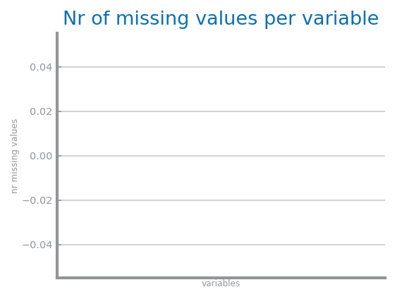
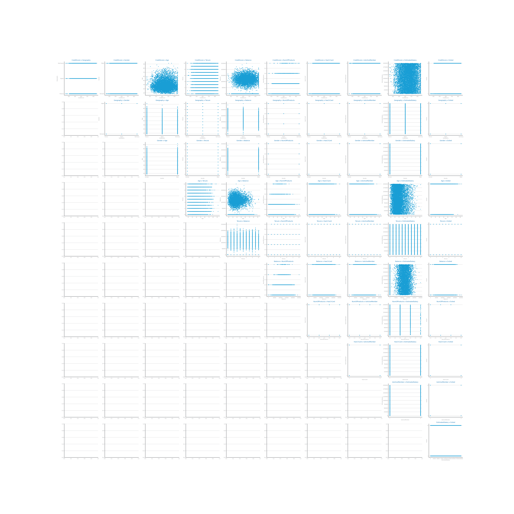
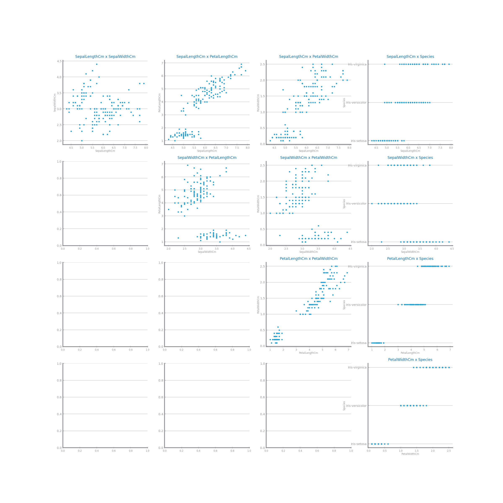
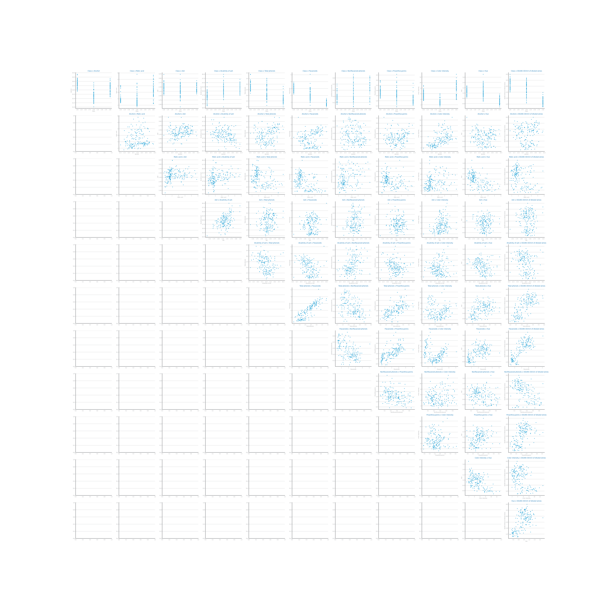
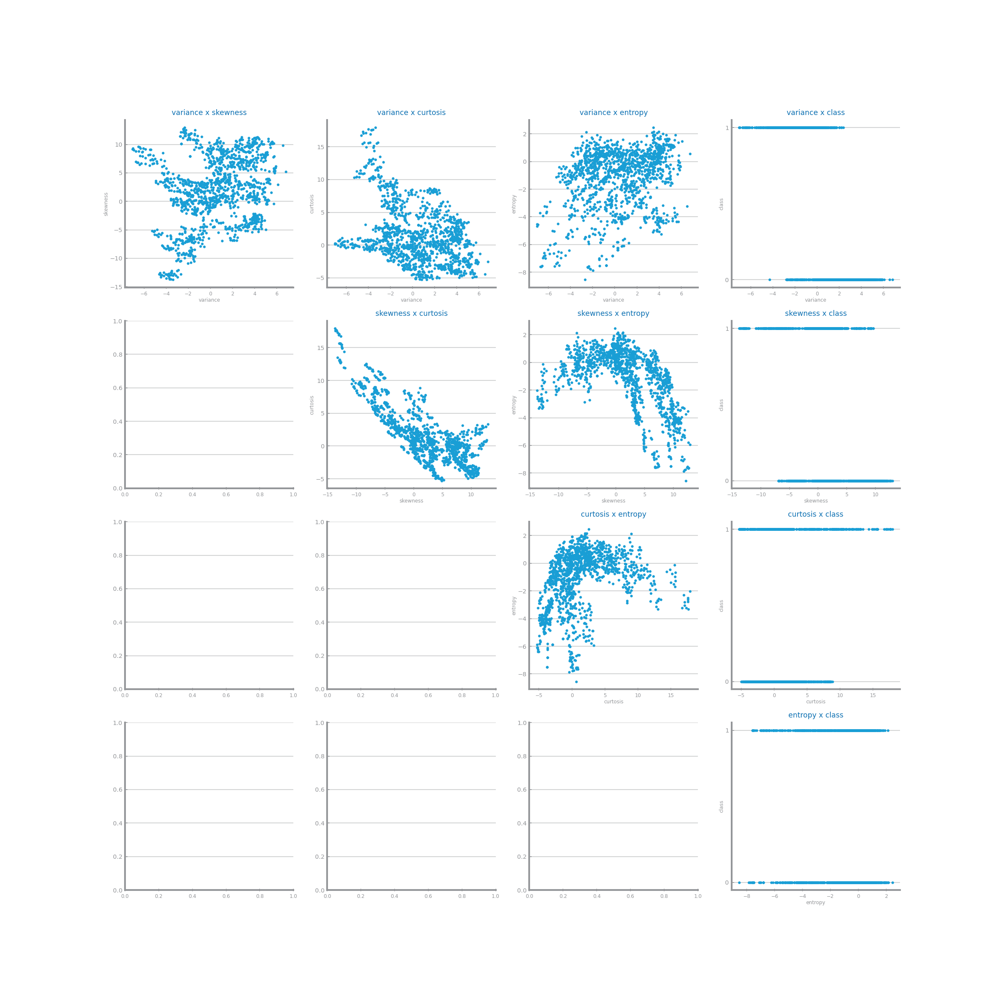
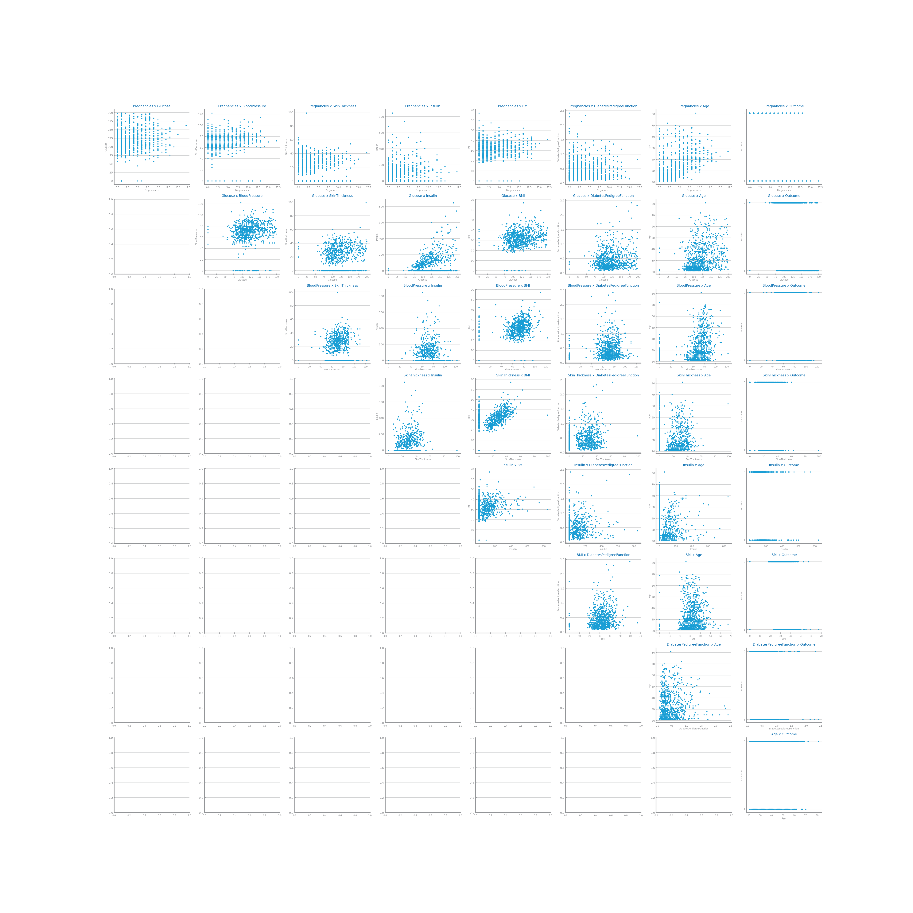
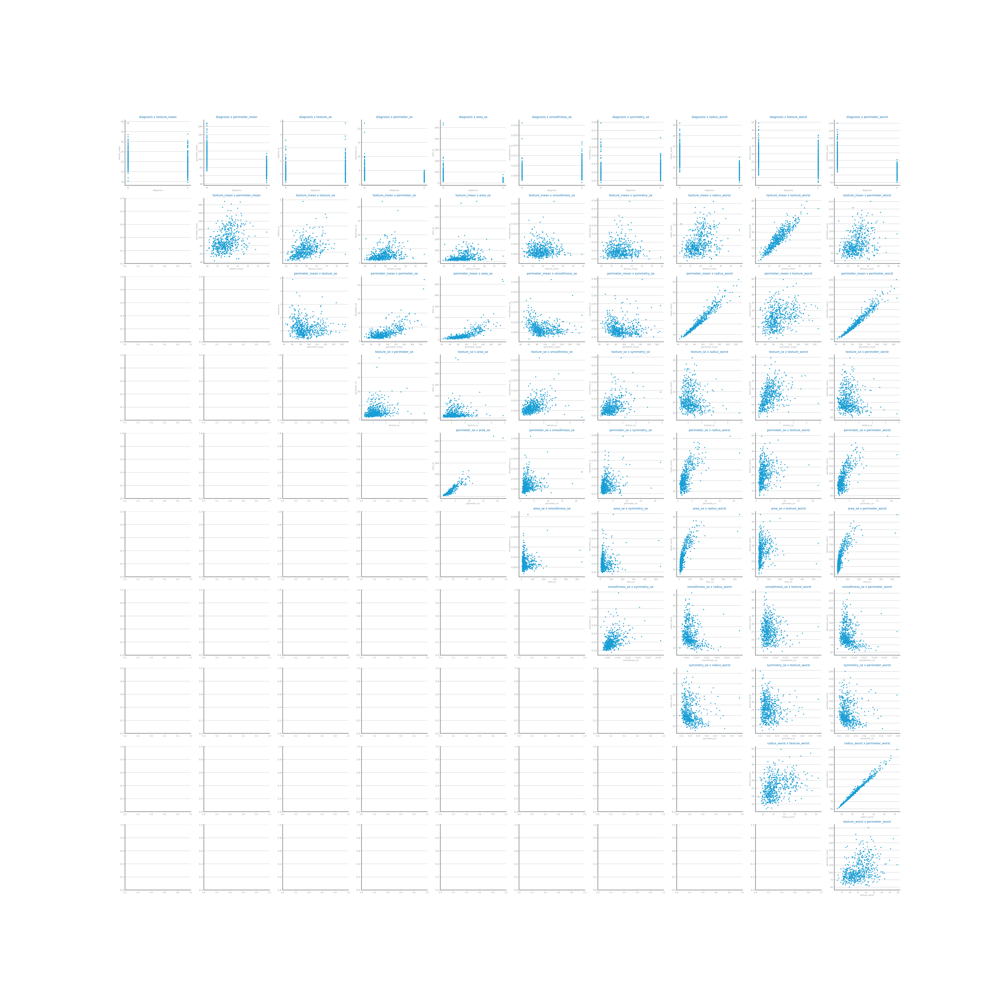
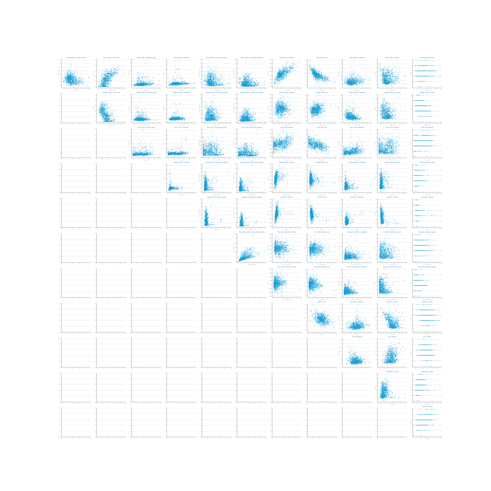

0: Considering that A=True<=>hours-per-week<=41.5 and B=True<=>capital-loss<=1820.5, it is possible to state that Naive Bayes algorithm classifies (A,B), as <=50K.
1: Considering that A=True<=>hours-per-week<=41.5 and B=True<=>capital-loss<=1820.5, it is possible to state that Naive Bayes algorithm classifies (not A, B), as <=50K.
2: Considering that A=True<=>hours-per-week<=41.5 and B=True<=>capital-loss<=1820.5, it is possible to state that Naive Bayes algorithm classifies (A, not B), as <=50K.
3: Considering that A=True<=>hours-per-week<=41.5 and B=True<=>capital-loss<=1820.5, it is possible to state that Naive Bayes algorithm classifies (not A, not B), as <=50K.
4: Considering that A=True<=>hours-per-week<=41.5 and B=True<=>capital-loss<=1820.5, it is possible to state that Naive Bayes algorithm classifies (A,B), as >50K.
5: Considering that A=True<=>hours-per-week<=41.5 and B=True<=>capital-loss<=1820.5, it is possible to state that Naive Bayes algorithm classifies (not A, B), as >50K.
6: Considering that A=True<=>hours-per-week<=41.5 and B=True<=>capital-loss<=1820.5, it is possible to state that Naive Bayes algorithm classifies (A, not B), as >50K.
7: Considering that A=True<=>hours-per-week<=41.5 and B=True<=>capital-loss<=1820.5, it is possible to state that Naive Bayes algorithm classifies (not A, not B), as >50K.
8: Considering that A=True<=>hours-per-week<=41.5 and B=True<=>capital-loss<=1820.5, it is possible to state that KNN algorithm classifies (A,B) as <=50K for any k ≤ 21974.
9: Considering that A=True<=>hours-per-week<=41.5 and B=True<=>capital-loss<=1820.5, it is possible to state that KNN algorithm classifies (not A, B) as <=50K for any k ≤ 21974.
10: Considering that A=True<=>hours-per-week<=41.5 and B=True<=>capital-loss<=1820.5, it is possible to state that KNN algorithm classifies (A, not B) as <=50K for any k ≤ 21974.
11: Considering that A=True<=>hours-per-week<=41.5 and B=True<=>capital-loss<=1820.5, it is possible to state that KNN algorithm classifies (not A, not B) as <=50K for any k ≤ 21974.
12: Considering that A=True<=>hours-per-week<=41.5 and B=True<=>capital-loss<=1820.5, it is possible to state that KNN algorithm classifies (A,B) as >50K for any k ≤ 21974.
13: Considering that A=True<=>hours-per-week<=41.5 and B=True<=>capital-loss<=1820.5, it is possible to state that KNN algorithm classifies (not A, B) as >50K for any k ≤ 21974.
14: Considering that A=True<=>hours-per-week<=41.5 and B=True<=>capital-loss<=1820.5, it is possible to state that KNN algorithm classifies (A, not B) as >50K for any k ≤ 21974.
15: Considering that A=True<=>hours-per-week<=41.5 and B=True<=>capital-loss<=1820.5, it is possible to state that KNN algorithm classifies (not A, not B) as >50K for any k ≤ 21974.
16: Considering that A=True<=>hours-per-week<=41.5 and B=True<=>capital-loss<=1820.5, it is possible to state that KNN algorithm classifies (A,B) as <=50K for any k ≤ 541.
17: Considering that A=True<=>hours-per-week<=41.5 and B=True<=>capital-loss<=1820.5, it is possible to state that KNN algorithm classifies (not A, B) as <=50K for any k ≤ 541.
18: Considering that A=True<=>hours-per-week<=41.5 and B=True<=>capital-loss<=1820.5, it is possible to state that KNN algorithm classifies (A, not B) as <=50K for any k ≤ 541.
19: Considering that A=True<=>hours-per-week<=41.5 and B=True<=>capital-loss<=1820.5, it is possible to state that KNN algorithm classifies (not A, not B) as <=50K for any k ≤ 541.
20: Considering that A=True<=>hours-per-week<=41.5 and B=True<=>capital-loss<=1820.5, it is possible to state that KNN algorithm classifies (A,B) as >50K for any k ≤ 541.
21: Considering that A=True<=>hours-per-week<=41.5 and B=True<=>capital-loss<=1820.5, it is possible to state that KNN algorithm classifies (not A, B) as >50K for any k ≤ 541.
22: Considering that A=True<=>hours-per-week<=41.5 and B=True<=>capital-loss<=1820.5, it is possible to state that KNN algorithm classifies (A, not B) as >50K for any k ≤ 541.
23: Considering that A=True<=>hours-per-week<=41.5 and B=True<=>capital-loss<=1820.5, it is possible to state that KNN algorithm classifies (not A, not B) as >50K for any k ≤ 541.
24: Considering that A=True<=>hours-per-week<=41.5 and B=True<=>capital-loss<=1820.5, it is possible to state that KNN algorithm classifies (A,B) as <=50K for any k ≤ 9274.
25: Considering that A=True<=>hours-per-week<=41.5 and B=True<=>capital-loss<=1820.5, it is possible to state that KNN algorithm classifies (not A, B) as <=50K for any k ≤ 9274.
26: Considering that A=True<=>hours-per-week<=41.5 and B=True<=>capital-loss<=1820.5, it is possible to state that KNN algorithm classifies (A, not B) as <=50K for any k ≤ 9274.
27: Considering that A=True<=>hours-per-week<=41.5 and B=True<=>capital-loss<=1820.5, it is possible to state that KNN algorithm classifies (not A, not B) as <=50K for any k ≤ 9274.
28: Considering that A=True<=>hours-per-week<=41.5 and B=True<=>capital-loss<=1820.5, it is possible to state that KNN algorithm classifies (A,B) as >50K for any k ≤ 9274.
29: Considering that A=True<=>hours-per-week<=41.5 and B=True<=>capital-loss<=1820.5, it is possible to state that KNN algorithm classifies (not A, B) as >50K for any k ≤ 9274.
30: Considering that A=True<=>hours-per-week<=41.5 and B=True<=>capital-loss<=1820.5, it is possible to state that KNN algorithm classifies (A, not B) as >50K for any k ≤ 9274.
31: Considering that A=True<=>hours-per-week<=41.5 and B=True<=>capital-loss<=1820.5, it is possible to state that KNN algorithm classifies (not A, not B) as >50K for any k ≤ 9274.
32: Considering that A=True<=>hours-per-week<=41.5 and B=True<=>capital-loss<=1820.5, it is possible to state that KNN algorithm classifies (A,B) as <=50K for any k ≤ 434.
33: Considering that A=True<=>hours-per-week<=41.5 and B=True<=>capital-loss<=1820.5, it is possible to state that KNN algorithm classifies (not A, B) as <=50K for any k ≤ 434.
34: Considering that A=True<=>hours-per-week<=41.5 and B=True<=>capital-loss<=1820.5, it is possible to state that KNN algorithm classifies (A, not B) as <=50K for any k ≤ 434.
35: Considering that A=True<=>hours-per-week<=41.5 and B=True<=>capital-loss<=1820.5, it is possible to state that KNN algorithm classifies (not A, not B) as <=50K for any k ≤ 434.
36: Considering that A=True<=>hours-per-week<=41.5 and B=True<=>capital-loss<=1820.5, it is possible to state that KNN algorithm classifies (A,B) as >50K for any k ≤ 434.
37: Considering that A=True<=>hours-per-week<=41.5 and B=True<=>capital-loss<=1820.5, it is possible to state that KNN algorithm classifies (not A, B) as >50K for any k ≤ 434.
38: Considering that A=True<=>hours-per-week<=41.5 and B=True<=>capital-loss<=1820.5, it is possible to state that KNN algorithm classifies (A, not B) as >50K for any k ≤ 434.
39: Considering that A=True<=>hours-per-week<=41.5 and B=True<=>capital-loss<=1820.5, it is possible to state that KNN algorithm classifies (not A, not B) as >50K for any k ≤ 434.
40: Considering that A=True<=>hours-per-week<=41.5 and B=True<=>capital-loss<=1820.5, the Decision Tree presented classifies (A,B) as <=50K.
41: Considering that A=True<=>hours-per-week<=41.5 and B=True<=>capital-loss<=1820.5, the Decision Tree presented classifies (not A, B) as <=50K.
42: Considering that A=True<=>hours-per-week<=41.5 and B=True<=>capital-loss<=1820.5, the Decision Tree presented classifies (A, not B) as <=50K.
43: Considering that A=True<=>hours-per-week<=41.5 and B=True<=>capital-loss<=1820.5, the Decision Tree presented classifies (not A, not B) as <=50K.
44: Considering that A=True<=>hours-per-week<=41.5 and B=True<=>capital-loss<=1820.5, the Decision Tree presented classifies (A,B) as >50K.
45: Considering that A=True<=>hours-per-week<=41.5 and B=True<=>capital-loss<=1820.5, the Decision Tree presented classifies (not A, B) as >50K.
46: Considering that A=True<=>hours-per-week<=41.5 and B=True<=>capital-loss<=1820.5, the Decision Tree presented classifies (A, not B) as >50K.
47: Considering that A=True<=>hours-per-week<=41.5 and B=True<=>capital-loss<=1820.5, the Decision Tree presented classifies (not A, not B) as >50K.

48: We are able to identify the existence of overfitting for MLP models trained longer than 1498 episodes.
49: We are able to identify the existence of overfitting for MLP models trained longer than 717 episodes.
50: We are able to identify the existence of overfitting for MLP models trained longer than 566 episodes.
51: We are able to identify the existence of overfitting for MLP models trained longer than 657 episodes.
52: We are able to identify the existence of overfitting for MLP models trained longer than 936 episodes.

53: We are able to identify the existence of overfitting for gradient boosting models with more than 133 estimators.
54: We are able to identify the existence of overfitting for gradient boosting models with more than 54 estimators.
55: We are able to identify the existence of overfitting for gradient boosting models with more than 76 estimators.
56: We are able to identify the existence of overfitting for gradient boosting models with more than 119 estimators.
57: We are able to identify the existence of overfitting for gradient boosting models with more than 146 estimators.

58: We are able to identify the existence of overfitting for random forest models with more than 102 estimators.
59: We are able to identify the existence of overfitting for random forest models with more than 95 estimators.
60: We are able to identify the existence of overfitting for random forest models with more than 122 estimators.
61: We are able to identify the existence of overfitting for random forest models with more than 112 estimators.
62: We are able to identify the existence of overfitting for random forest models with more than 91 estimators.

63: We are able to identify the existence of overfitting for KNN models with less than 2 neighbors.
64: We are able to identify the existence of overfitting for KNN models with less than 3 neighbors.
65: We are able to identify the existence of overfitting for KNN models with less than 4 neighbors.
66: We are able to identify the existence of overfitting for KNN models with less than 5 neighbors.
67: We are able to identify the existence of overfitting for KNN models with less than 6 neighbors.

68: We are able to identify the existence of overfitting for decision tree models with more than 2 nodes of depth.
69: We are able to identify the existence of overfitting for decision tree models with more than 3 nodes of depth.
70: We are able to identify the existence of overfitting for decision tree models with more than 4 nodes of depth.
71: We are able to identify the existence of overfitting for decision tree models with more than 5 nodes of depth.
72: We are able to identify the existence of overfitting for decision tree models with more than 6 nodes of depth.
73: The random forests results shown can be explained by the lack of diversity resulting from the number of features considered.
74: The recall for the presented tree is higher than its accuracy.
75: The precision for the presented tree is higher than its accuracy.
76: The specificity for the presented tree is higher than its accuracy.
77: The recall for the presented tree is lower than its accuracy.
78: The precision for the presented tree is lower than its accuracy.
79: The specificity for the presented tree is lower than its accuracy.
80: The accuracy for the presented tree is higher than its recall.
81: The precision for the presented tree is higher than its recall.
82: The specificity for the presented tree is higher than its recall.
83: The accuracy for the presented tree is lower than its recall.
84: The precision for the presented tree is lower than its recall.
85: The specificity for the presented tree is lower than its recall.
86: The accuracy for the presented tree is higher than its precision.
87: The recall for the presented tree is higher than its precision.
88: The specificity for the presented tree is higher than its precision.
89: The accuracy for the presented tree is lower than its precision.
90: The recall for the presented tree is lower than its precision.
91: The specificity for the presented tree is lower than its precision.
92: The accuracy for the presented tree is higher than its specificity.
93: The recall for the presented tree is higher than its specificity.
94: The precision for the presented tree is higher than its specificity.
95: The accuracy for the presented tree is lower than its specificity.
96: The recall for the presented tree is lower than its specificity.
97: The precision for the presented tree is lower than its specificity.
98: The number of False Positives is higher than the number of True Positives for the presented tree.
99: The number of True Negatives is higher than the number of True Positives for the presented tree.
100: The number of False Negatives is higher than the number of True Positives for the presented tree.
101: The number of False Positives is lower than the number of True Positives for the presented tree.
102: The number of True Negatives is lower than the number of True Positives for the presented tree.
103: The number of False Negatives is lower than the number of True Positives for the presented tree.
104: The number of True Positives is higher than the number of False Positives for the presented tree.
105: The number of True Negatives is higher than the number of False Positives for the presented tree.
106: The number of False Negatives is higher than the number of False Positives for the presented tree.
107: The number of True Positives is lower than the number of False Positives for the presented tree.
108: The number of True Negatives is lower than the number of False Positives for the presented tree.
109: The number of False Negatives is lower than the number of False Positives for the presented tree.
110: The number of True Positives is higher than the number of True Negatives for the presented tree.
111: The number of False Positives is higher than the number of True Negatives for the presented tree.
112: The number of False Negatives is higher than the number of True Negatives for the presented tree.
113: The number of True Positives is lower than the number of True Negatives for the presented tree.
114: The number of False Positives is lower than the number of True Negatives for the presented tree.
115: The number of False Negatives is lower than the number of True Negatives for the presented tree.
116: The number of True Positives is higher than the number of False Negatives for the presented tree.
117: The number of False Positives is higher than the number of False Negatives for the presented tree.
118: The number of True Negatives is higher than the number of False Negatives for the presented tree.
119: The number of True Positives is lower than the number of False Negatives for the presented tree.
120: The number of False Positives is lower than the number of False Negatives for the presented tree.
121: The number of True Negatives is lower than the number of False Negatives for the presented tree.
122: The number of True Positives reported in the same tree is 12.
123: The number of False Positives reported in the same tree is 35.
124: The number of True Negatives reported in the same tree is 37.
125: The number of False Negatives reported in the same tree is 15.
126: The number of True Positives reported in the same tree is 17.
127: The number of False Positives reported in the same tree is 50.
128: The number of True Negatives reported in the same tree is 11.
129: The number of False Negatives reported in the same tree is 41.
130: The number of True Positives reported in the same tree is 25.
131: The number of False Positives reported in the same tree is 18.
132: The number of True Negatives reported in the same tree is 28.
133: The number of False Negatives reported in the same tree is 33.
134: The number of True Positives reported in the same tree is 34.
135: The number of False Positives reported in the same tree is 45.
136: The number of True Negatives reported in the same tree is 22.
137: The number of False Negatives reported in the same tree is 30.
138: The number of True Positives reported in the same tree is 23.
139: The number of False Positives reported in the same tree is 21.
140: The number of True Negatives reported in the same tree is 39.
141: The number of False Negatives reported in the same tree is 40.

142: The difference between recall and accuracy becomes smaller with the depth due to the overfitting phenomenon.
143: The decision tree is in overfitting for depths above 3.
144: The decision tree is in overfitting for depths above 4.
145: The decision tree is in overfitting for depths above 5.
146: The decision tree is in overfitting for depths above 6.
147: The decision tree is in overfitting for depths above 7.
148: The decision tree is in overfitting for depths above 8.
149: The decision tree is in overfitting for depths above 9.
150: The decision tree is in overfitting for depths above 10.
151: The chart reporting the recall for different trees shows that the model enters in overfitting for models with depth higher than 3.
152: The chart reporting the recall for different trees shows that the model enters in overfitting for models with depth higher than 4.
153: The chart reporting the recall for different trees shows that the model enters in overfitting for models with depth higher than 5.
154: The chart reporting the recall for different trees shows that the model enters in overfitting for models with depth higher than 6.
155: The chart reporting the recall for different trees shows that the model enters in overfitting for models with depth higher than 7.
156: The chart reporting the recall for different trees shows that the model enters in overfitting for models with depth higher than 8.
157: The chart reporting the recall for different trees shows that the model enters in overfitting for models with depth higher than 9.
158: The chart reporting the recall for different trees shows that the model enters in overfitting for models with depth higher than 10.
159: The accuracy for the presented tree is higher than 63%.
160: The recall for the presented tree is higher than 90%.
161: The precision for the presented tree is higher than 73%.
162: The specificity for the presented tree is higher than 87%.
163: The accuracy for the presented tree is lower than 64%.
164: The recall for the presented tree is lower than 79%.
165: The precision for the presented tree is lower than 70%.
166: The specificity for the presented tree is lower than 62%.
167: The accuracy for the presented tree is higher than 71%.
168: The recall for the presented tree is higher than 85%.
169: The precision for the presented tree is higher than 83%.
170: The specificity for the presented tree is higher than 89%.
171: The accuracy for the presented tree is lower than 84%.
172: The recall for the presented tree is lower than 76%.
173: The precision for the presented tree is lower than 61%.
174: The specificity for the presented tree is lower than 75%.
175: The accuracy for the presented tree is higher than 65%.
176: The recall for the presented tree is higher than 80%.
177: The precision for the presented tree is higher than 60%.
178: The specificity for the presented tree is higher than 72%.
179: The accuracy for the presented tree is lower than 67%.
180: The recall for the presented tree is lower than 68%.
181: The precision for the presented tree is lower than 69%.
182: The specificity for the presented tree is lower than 78%.
183: The accuracy for the presented tree is higher than 88%.
184: The recall for the presented tree is higher than 66%.
185: The precision for the presented tree is higher than 77%.
186: The specificity for the presented tree is higher than 74%.
187: The accuracy for the presented tree is lower than 81%.
188: The recall for the presented tree is lower than 82%.
189: The precision for the presented tree is lower than 86%.
190: The specificity for the presented tree is lower than 61%.
191: The accuracy for the presented tree is higher than 87%.
192: The recall for the presented tree is higher than 62%.
193: The precision for the presented tree is higher than 70%.
194: The specificity for the presented tree is higher than 71%.
195: The accuracy for the presented tree is lower than 66%.
196: The recall for the presented tree is lower than 68%.
197: The precision for the presented tree is lower than 73%.
198: The specificity for the presented tree is lower than 84%.
199: Results for Random Forests identified as 2, may be explained by its estimators being in underfitting.
200: Results for Random Forests identified as 3, may be explained by its estimators being in underfitting.
201: Results for Random Forests identified as 10, may be explained by its estimators being in underfitting.
202: Results for Random Forests identified as 2, may be explained by its estimators being in overfitting.
203: Results for Random Forests identified as 3, may be explained by its estimators being in overfitting.
204: Results for Random Forests identified as 10, may be explained by its estimators being in overfitting.
205: KNN with more than 2 neighbours is in overfitting.
206: KNN with less than 2 neighbours is in overfitting.
207: KNN with more than 3 neighbours is in overfitting.
208: KNN with less than 3 neighbours is in overfitting.
209: KNN with more than 4 neighbours is in overfitting.
210: KNN with less than 4 neighbours is in overfitting.
211: KNN with more than 5 neighbours is in overfitting.
212: KNN with less than 5 neighbours is in overfitting.
213: KNN with more than 6 neighbours is in overfitting.
214: KNN with less than 6 neighbours is in overfitting.
215: KNN with more than 7 neighbours is in overfitting.
216: KNN with less than 7 neighbours is in overfitting.
217: KNN with more than 8 neighbours is in overfitting.
218: KNN with less than 8 neighbours is in overfitting.
219: KNN with 1 neighbour is in overfitting.
220: KNN with 2 neighbour is in overfitting.
221: KNN with 3 neighbour is in overfitting.
222: KNN with 4 neighbour is in overfitting.
223: KNN with 5 neighbour is in overfitting.
224: KNN with 6 neighbour is in overfitting.
225: KNN with 7 neighbour is in overfitting.
226: KNN with 8 neighbour is in overfitting.
227: KNN with 9 neighbour is in overfitting.
228: KNN with 10 neighbour is in overfitting.
229: KNN is in overfitting for k less than 2.
230: KNN is in overfitting for k larger than 2.
231: KNN is in overfitting for k less than 3.
232: KNN is in overfitting for k larger than 3.
233: KNN is in overfitting for k less than 4.
234: KNN is in overfitting for k larger than 4.
235: KNN is in overfitting for k less than 5.
236: KNN is in overfitting for k larger than 5.
237: KNN is in overfitting for k less than 6.
238: KNN is in overfitting for k larger than 6.
239: KNN is in overfitting for k less than 7.
240: KNN is in overfitting for k larger than 7.
241: KNN is in overfitting for k less than 8.
242: KNN is in overfitting for k larger than 8.
243: As reported in the tree, the number of False Positive is smaller than the number of False Negatives.
244: As reported in the tree, the number of False Positive is bigger than the number of False Negatives.
245: According to the decision tree overfitting chart, the tree with 3 nodes of depth is in overfitting.
246: According to the decision tree overfitting chart, the tree with 4 nodes of depth is in overfitting.
247: According to the decision tree overfitting chart, the tree with 5 nodes of depth is in overfitting.
248: According to the decision tree overfitting chart, the tree with 6 nodes of depth is in overfitting.
249: According to the decision tree overfitting chart, the tree with 7 nodes of depth is in overfitting.
250: According to the decision tree overfitting chart, the tree with 8 nodes of depth is in overfitting.
251: A smaller tree would be delivered if we would apply post-pruning, accepting an accuracy reduction of 5%.
252: A smaller tree would be delivered if we would apply post-pruning, accepting an accuracy reduction of 6%.
253: A smaller tree would be delivered if we would apply post-pruning, accepting an accuracy reduction of 7%.
254: A smaller tree would be delivered if we would apply post-pruning, accepting an accuracy reduction of 8%.
255: A smaller tree would be delivered if we would apply post-pruning, accepting an accuracy reduction of 9%.
256: A smaller tree would be delivered if we would apply post-pruning, accepting an accuracy reduction of 10%.

257: Using the first 2 principal components would imply an error between 5 and 20%.
258: Using the first 3 principal components would imply an error between 5 and 20%.
259: Using the first 4 principal components would imply an error between 5 and 20%.
260: Using the first 2 principal components would imply an error between 10 and 20%.
261: Using the first 3 principal components would imply an error between 10 and 20%.
262: Using the first 4 principal components would imply an error between 10 and 20%.
263: Using the first 2 principal components would imply an error between 15 and 20%.
264: Using the first 3 principal components would imply an error between 15 and 20%.
265: Using the first 4 principal components would imply an error between 15 and 20%.
266: Using the first 2 principal components would imply an error between 5 and 25%.
267: Using the first 3 principal components would imply an error between 5 and 25%.
268: Using the first 4 principal components would imply an error between 5 and 25%.
269: Using the first 2 principal components would imply an error between 10 and 25%.
270: Using the first 3 principal components would imply an error between 10 and 25%.
271: Using the first 4 principal components would imply an error between 10 and 25%.
272: Using the first 2 principal components would imply an error between 15 and 25%.
273: Using the first 3 principal components would imply an error between 15 and 25%.
274: Using the first 4 principal components would imply an error between 15 and 25%.
275: Using the first 2 principal components would imply an error between 5 and 30%.
276: Using the first 3 principal components would imply an error between 5 and 30%.
277: Using the first 4 principal components would imply an error between 5 and 30%.
278: Using the first 2 principal components would imply an error between 10 and 30%.
279: Using the first 3 principal components would imply an error between 10 and 30%.
280: Using the first 4 principal components would imply an error between 10 and 30%.
281: Using the first 2 principal components would imply an error between 15 and 30%.
282: Using the first 3 principal components would imply an error between 15 and 30%.
283: Using the first 4 principal components would imply an error between 15 and 30%.

284: There is evidence in favour for sequential backward selection to select variable fnlwgt previously than variable age.
285: There is evidence in favour for sequential backward selection to select variable educational-num previously than variable age.
286: There is evidence in favour for sequential backward selection to select variable capital-gain previously than variable age.
287: There is evidence in favour for sequential backward selection to select variable capital-loss previously than variable age.
288: There is evidence in favour for sequential backward selection to select variable hours-per-week previously than variable age.
289: There is evidence in favour for sequential backward selection to select variable age previously than variable fnlwgt.
290: There is evidence in favour for sequential backward selection to select variable educational-num previously than variable fnlwgt.
291: There is evidence in favour for sequential backward selection to select variable capital-gain previously than variable fnlwgt.
292: There is evidence in favour for sequential backward selection to select variable capital-loss previously than variable fnlwgt.
293: There is evidence in favour for sequential backward selection to select variable hours-per-week previously than variable fnlwgt.
294: There is evidence in favour for sequential backward selection to select variable age previously than variable educational-num.
295: There is evidence in favour for sequential backward selection to select variable fnlwgt previously than variable educational-num.
296: There is evidence in favour for sequential backward selection to select variable capital-gain previously than variable educational-num.
297: There is evidence in favour for sequential backward selection to select variable capital-loss previously than variable educational-num.
298: There is evidence in favour for sequential backward selection to select variable hours-per-week previously than variable educational-num.
299: There is evidence in favour for sequential backward selection to select variable age previously than variable capital-gain.
300: There is evidence in favour for sequential backward selection to select variable fnlwgt previously than variable capital-gain.
301: There is evidence in favour for sequential backward selection to select variable educational-num previously than variable capital-gain.
302: There is evidence in favour for sequential backward selection to select variable capital-loss previously than variable capital-gain.
303: There is evidence in favour for sequential backward selection to select variable hours-per-week previously than variable capital-gain.
304: There is evidence in favour for sequential backward selection to select variable age previously than variable capital-loss.
305: There is evidence in favour for sequential backward selection to select variable fnlwgt previously than variable capital-loss.
306: There is evidence in favour for sequential backward selection to select variable educational-num previously than variable capital-loss.
307: There is evidence in favour for sequential backward selection to select variable capital-gain previously than variable capital-loss.
308: There is evidence in favour for sequential backward selection to select variable hours-per-week previously than variable capital-loss.
309: There is evidence in favour for sequential backward selection to select variable age previously than variable hours-per-week.
310: There is evidence in favour for sequential backward selection to select variable fnlwgt previously than variable hours-per-week.
311: There is evidence in favour for sequential backward selection to select variable educational-num previously than variable hours-per-week.
312: There is evidence in favour for sequential backward selection to select variable capital-gain previously than variable hours-per-week.
313: There is evidence in favour for sequential backward selection to select variable capital-loss previously than variable hours-per-week.
314: The first 2 principal components are enough for explaining half the data variance.
315: The first 3 principal components are enough for explaining half the data variance.
316: The first 4 principal components are enough for explaining half the data variance.

317: Scaling this dataset would be mandatory to improve the results with distance-based methods.
318: Removing variable age might improve the training of decision trees .
319: Removing variable fnlwgt might improve the training of decision trees .
320: Removing variable educational-num might improve the training of decision trees .
321: Removing variable capital-gain might improve the training of decision trees .
322: Removing variable capital-loss might improve the training of decision trees .
323: Removing variable hours-per-week might improve the training of decision trees .

324: Not knowing the semantics of age variable, dummification could have been a more adequate codification.
325: Not knowing the semantics of workclass variable, dummification could have been a more adequate codification.
326: Not knowing the semantics of fnlwgt variable, dummification could have been a more adequate codification.
327: Not knowing the semantics of education variable, dummification could have been a more adequate codification.
328: Not knowing the semantics of educational-num variable, dummification could have been a more adequate codification.
329: Not knowing the semantics of marital-status variable, dummification could have been a more adequate codification.
330: Not knowing the semantics of occupation variable, dummification could have been a more adequate codification.
331: Not knowing the semantics of relationship variable, dummification could have been a more adequate codification.
332: Not knowing the semantics of race variable, dummification could have been a more adequate codification.
333: Not knowing the semantics of gender variable, dummification could have been a more adequate codification.
334: Not knowing the semantics of capital-gain variable, dummification could have been a more adequate codification.
335: Not knowing the semantics of capital-loss variable, dummification could have been a more adequate codification.
336: Not knowing the semantics of hours-per-week variable, dummification could have been a more adequate codification.
337: Normalization of this dataset could not have impact on a KNN classifier.
338: Multiplying ratio and Boolean variables by 100, and variables with a range between 0 and 10 by 10, would have an impact similar to other scaling transformations.
339: It is better to drop the variable age than removing all records with missing values.
340: It is better to drop the variable workclass than removing all records with missing values.
341: It is better to drop the variable fnlwgt than removing all records with missing values.
342: It is better to drop the variable education than removing all records with missing values.
343: It is better to drop the variable educational-num than removing all records with missing values.
344: It is better to drop the variable marital-status than removing all records with missing values.
345: It is better to drop the variable occupation than removing all records with missing values.
346: It is better to drop the variable relationship than removing all records with missing values.
347: It is better to drop the variable race than removing all records with missing values.
348: It is better to drop the variable gender than removing all records with missing values.
349: It is better to drop the variable capital-gain than removing all records with missing values.
350: It is better to drop the variable capital-loss than removing all records with missing values.
351: It is better to drop the variable hours-per-week than removing all records with missing values.
352: Given the usual semantics of age variable, dummification would have been a better codification.
353: Given the usual semantics of workclass variable, dummification would have been a better codification.
354: Given the usual semantics of fnlwgt variable, dummification would have been a better codification.
355: Given the usual semantics of education variable, dummification would have been a better codification.
356: Given the usual semantics of educational-num variable, dummification would have been a better codification.
357: Given the usual semantics of marital-status variable, dummification would have been a better codification.
358: Given the usual semantics of occupation variable, dummification would have been a better codification.
359: Given the usual semantics of relationship variable, dummification would have been a better codification.
360: Given the usual semantics of race variable, dummification would have been a better codification.
361: Given the usual semantics of gender variable, dummification would have been a better codification.
362: Given the usual semantics of capital-gain variable, dummification would have been a better codification.
363: Given the usual semantics of capital-loss variable, dummification would have been a better codification.
364: Given the usual semantics of hours-per-week variable, dummification would have been a better codification.
365: Feature generation based on the use of variable workclass wouldn’t be useful, but the use of age seems to be promising.
366: Feature generation based on the use of variable fnlwgt wouldn’t be useful, but the use of age seems to be promising.
367: Feature generation based on the use of variable education wouldn’t be useful, but the use of age seems to be promising.
368: Feature generation based on the use of variable educational-num wouldn’t be useful, but the use of age seems to be promising.
369: Feature generation based on the use of variable marital-status wouldn’t be useful, but the use of age seems to be promising.
370: Feature generation based on the use of variable occupation wouldn’t be useful, but the use of age seems to be promising.
371: Feature generation based on the use of variable relationship wouldn’t be useful, but the use of age seems to be promising.
372: Feature generation based on the use of variable race wouldn’t be useful, but the use of age seems to be promising.
373: Feature generation based on the use of variable gender wouldn’t be useful, but the use of age seems to be promising.
374: Feature generation based on the use of variable capital-gain wouldn’t be useful, but the use of age seems to be promising.
375: Feature generation based on the use of variable capital-loss wouldn’t be useful, but the use of age seems to be promising.
376: Feature generation based on the use of variable hours-per-week wouldn’t be useful, but the use of age seems to be promising.
377: Feature generation based on the use of variable age wouldn’t be useful, but the use of workclass seems to be promising.
378: Feature generation based on the use of variable fnlwgt wouldn’t be useful, but the use of workclass seems to be promising.
379: Feature generation based on the use of variable education wouldn’t be useful, but the use of workclass seems to be promising.
380: Feature generation based on the use of variable educational-num wouldn’t be useful, but the use of workclass seems to be promising.
381: Feature generation based on the use of variable marital-status wouldn’t be useful, but the use of workclass seems to be promising.
382: Feature generation based on the use of variable occupation wouldn’t be useful, but the use of workclass seems to be promising.
383: Feature generation based on the use of variable relationship wouldn’t be useful, but the use of workclass seems to be promising.
384: Feature generation based on the use of variable race wouldn’t be useful, but the use of workclass seems to be promising.
385: Feature generation based on the use of variable gender wouldn’t be useful, but the use of workclass seems to be promising.
386: Feature generation based on the use of variable capital-gain wouldn’t be useful, but the use of workclass seems to be promising.
387: Feature generation based on the use of variable capital-loss wouldn’t be useful, but the use of workclass seems to be promising.
388: Feature generation based on the use of variable hours-per-week wouldn’t be useful, but the use of workclass seems to be promising.
389: Feature generation based on the use of variable age wouldn’t be useful, but the use of fnlwgt seems to be promising.
390: Feature generation based on the use of variable workclass wouldn’t be useful, but the use of fnlwgt seems to be promising.
391: Feature generation based on the use of variable education wouldn’t be useful, but the use of fnlwgt seems to be promising.
392: Feature generation based on the use of variable educational-num wouldn’t be useful, but the use of fnlwgt seems to be promising.
393: Feature generation based on the use of variable marital-status wouldn’t be useful, but the use of fnlwgt seems to be promising.
394: Feature generation based on the use of variable occupation wouldn’t be useful, but the use of fnlwgt seems to be promising.
395: Feature generation based on the use of variable relationship wouldn’t be useful, but the use of fnlwgt seems to be promising.
396: Feature generation based on the use of variable race wouldn’t be useful, but the use of fnlwgt seems to be promising.
397: Feature generation based on the use of variable gender wouldn’t be useful, but the use of fnlwgt seems to be promising.
398: Feature generation based on the use of variable capital-gain wouldn’t be useful, but the use of fnlwgt seems to be promising.
399: Feature generation based on the use of variable capital-loss wouldn’t be useful, but the use of fnlwgt seems to be promising.
400: Feature generation based on the use of variable hours-per-week wouldn’t be useful, but the use of fnlwgt seems to be promising.
401: Feature generation based on the use of variable age wouldn’t be useful, but the use of education seems to be promising.
402: Feature generation based on the use of variable workclass wouldn’t be useful, but the use of education seems to be promising.
403: Feature generation based on the use of variable fnlwgt wouldn’t be useful, but the use of education seems to be promising.
404: Feature generation based on the use of variable marital-status wouldn’t be useful, but the use of education seems to be promising.
405: Feature generation based on the use of variable occupation wouldn’t be useful, but the use of education seems to be promising.
406: Feature generation based on the use of variable relationship wouldn’t be useful, but the use of education seems to be promising.
407: Feature generation based on the use of variable race wouldn’t be useful, but the use of education seems to be promising.
408: Feature generation based on the use of variable gender wouldn’t be useful, but the use of education seems to be promising.
409: Feature generation based on the use of variable capital-gain wouldn’t be useful, but the use of education seems to be promising.
410: Feature generation based on the use of variable capital-loss wouldn’t be useful, but the use of education seems to be promising.
411: Feature generation based on the use of variable hours-per-week wouldn’t be useful, but the use of education seems to be promising.
412: Feature generation based on the use of variable age wouldn’t be useful, but the use of educational-num seems to be promising.
413: Feature generation based on the use of variable workclass wouldn’t be useful, but the use of educational-num seems to be promising.
414: Feature generation based on the use of variable fnlwgt wouldn’t be useful, but the use of educational-num seems to be promising.
415: Feature generation based on the use of variable education wouldn’t be useful, but the use of educational-num seems to be promising.
416: Feature generation based on the use of variable marital-status wouldn’t be useful, but the use of educational-num seems to be promising.
417: Feature generation based on the use of variable occupation wouldn’t be useful, but the use of educational-num seems to be promising.
418: Feature generation based on the use of variable relationship wouldn’t be useful, but the use of educational-num seems to be promising.
419: Feature generation based on the use of variable race wouldn’t be useful, but the use of educational-num seems to be promising.
420: Feature generation based on the use of variable gender wouldn’t be useful, but the use of educational-num seems to be promising.
421: Feature generation based on the use of variable capital-gain wouldn’t be useful, but the use of educational-num seems to be promising.
422: Feature generation based on the use of variable capital-loss wouldn’t be useful, but the use of educational-num seems to be promising.
423: Feature generation based on the use of variable hours-per-week wouldn’t be useful, but the use of educational-num seems to be promising.
424: Feature generation based on the use of variable age wouldn’t be useful, but the use of marital-status seems to be promising.
425: Feature generation based on the use of variable workclass wouldn’t be useful, but the use of marital-status seems to be promising.
426: Feature generation based on the use of variable fnlwgt wouldn’t be useful, but the use of marital-status seems to be promising.
427: Feature generation based on the use of variable education wouldn’t be useful, but the use of marital-status seems to be promising.
428: Feature generation based on the use of variable educational-num wouldn’t be useful, but the use of marital-status seems to be promising.
429: Feature generation based on the use of variable occupation wouldn’t be useful, but the use of marital-status seems to be promising.
430: Feature generation based on the use of variable relationship wouldn’t be useful, but the use of marital-status seems to be promising.
431: Feature generation based on the use of variable race wouldn’t be useful, but the use of marital-status seems to be promising.
432: Feature generation based on the use of variable gender wouldn’t be useful, but the use of marital-status seems to be promising.
433: Feature generation based on the use of variable capital-gain wouldn’t be useful, but the use of marital-status seems to be promising.
434: Feature generation based on the use of variable capital-loss wouldn’t be useful, but the use of marital-status seems to be promising.
435: Feature generation based on the use of variable hours-per-week wouldn’t be useful, but the use of marital-status seems to be promising.
436: Feature generation based on the use of variable age wouldn’t be useful, but the use of occupation seems to be promising.
437: Feature generation based on the use of variable workclass wouldn’t be useful, but the use of occupation seems to be promising.
438: Feature generation based on the use of variable fnlwgt wouldn’t be useful, but the use of occupation seems to be promising.
439: Feature generation based on the use of variable education wouldn’t be useful, but the use of occupation seems to be promising.
440: Feature generation based on the use of variable educational-num wouldn’t be useful, but the use of occupation seems to be promising.
441: Feature generation based on the use of variable marital-status wouldn’t be useful, but the use of occupation seems to be promising.
442: Feature generation based on the use of variable relationship wouldn’t be useful, but the use of occupation seems to be promising.
443: Feature generation based on the use of variable race wouldn’t be useful, but the use of occupation seems to be promising.
444: Feature generation based on the use of variable gender wouldn’t be useful, but the use of occupation seems to be promising.
445: Feature generation based on the use of variable capital-gain wouldn’t be useful, but the use of occupation seems to be promising.
446: Feature generation based on the use of variable capital-loss wouldn’t be useful, but the use of occupation seems to be promising.
447: Feature generation based on the use of variable hours-per-week wouldn’t be useful, but the use of occupation seems to be promising.
448: Feature generation based on the use of variable age wouldn’t be useful, but the use of relationship seems to be promising.
449: Feature generation based on the use of variable workclass wouldn’t be useful, but the use of relationship seems to be promising.
450: Feature generation based on the use of variable fnlwgt wouldn’t be useful, but the use of relationship seems to be promising.
451: Feature generation based on the use of variable education wouldn’t be useful, but the use of relationship seems to be promising.
452: Feature generation based on the use of variable educational-num wouldn’t be useful, but the use of relationship seems to be promising.
453: Feature generation based on the use of variable marital-status wouldn’t be useful, but the use of relationship seems to be promising.
454: Feature generation based on the use of variable occupation wouldn’t be useful, but the use of relationship seems to be promising.
455: Feature generation based on the use of variable race wouldn’t be useful, but the use of relationship seems to be promising.
456: Feature generation based on the use of variable gender wouldn’t be useful, but the use of relationship seems to be promising.
457: Feature generation based on the use of variable capital-gain wouldn’t be useful, but the use of relationship seems to be promising.
458: Feature generation based on the use of variable capital-loss wouldn’t be useful, but the use of relationship seems to be promising.
459: Feature generation based on the use of variable hours-per-week wouldn’t be useful, but the use of relationship seems to be promising.
460: Feature generation based on the use of variable age wouldn’t be useful, but the use of race seems to be promising.
461: Feature generation based on the use of variable workclass wouldn’t be useful, but the use of race seems to be promising.
462: Feature generation based on the use of variable fnlwgt wouldn’t be useful, but the use of race seems to be promising.
463: Feature generation based on the use of variable education wouldn’t be useful, but the use of race seems to be promising.
464: Feature generation based on the use of variable educational-num wouldn’t be useful, but the use of race seems to be promising.
465: Feature generation based on the use of variable marital-status wouldn’t be useful, but the use of race seems to be promising.
466: Feature generation based on the use of variable occupation wouldn’t be useful, but the use of race seems to be promising.
467: Feature generation based on the use of variable relationship wouldn’t be useful, but the use of race seems to be promising.
468: Feature generation based on the use of variable gender wouldn’t be useful, but the use of race seems to be promising.
469: Feature generation based on the use of variable capital-gain wouldn’t be useful, but the use of race seems to be promising.
470: Feature generation based on the use of variable capital-loss wouldn’t be useful, but the use of race seems to be promising.
471: Feature generation based on the use of variable hours-per-week wouldn’t be useful, but the use of race seems to be promising.
472: Feature generation based on the use of variable age wouldn’t be useful, but the use of gender seems to be promising.
473: Feature generation based on the use of variable workclass wouldn’t be useful, but the use of gender seems to be promising.
474: Feature generation based on the use of variable fnlwgt wouldn’t be useful, but the use of gender seems to be promising.
475: Feature generation based on the use of variable education wouldn’t be useful, but the use of gender seems to be promising.
476: Feature generation based on the use of variable educational-num wouldn’t be useful, but the use of gender seems to be promising.
477: Feature generation based on the use of variable marital-status wouldn’t be useful, but the use of gender seems to be promising.
478: Feature generation based on the use of variable occupation wouldn’t be useful, but the use of gender seems to be promising.
479: Feature generation based on the use of variable relationship wouldn’t be useful, but the use of gender seems to be promising.
480: Feature generation based on the use of variable race wouldn’t be useful, but the use of gender seems to be promising.
481: Feature generation based on the use of variable capital-gain wouldn’t be useful, but the use of gender seems to be promising.
482: Feature generation based on the use of variable capital-loss wouldn’t be useful, but the use of gender seems to be promising.
483: Feature generation based on the use of variable hours-per-week wouldn’t be useful, but the use of gender seems to be promising.
484: Feature generation based on the use of variable age wouldn’t be useful, but the use of capital-gain seems to be promising.
485: Feature generation based on the use of variable workclass wouldn’t be useful, but the use of capital-gain seems to be promising.
486: Feature generation based on the use of variable fnlwgt wouldn’t be useful, but the use of capital-gain seems to be promising.
487: Feature generation based on the use of variable education wouldn’t be useful, but the use of capital-gain seems to be promising.
488: Feature generation based on the use of variable educational-num wouldn’t be useful, but the use of capital-gain seems to be promising.
489: Feature generation based on the use of variable marital-status wouldn’t be useful, but the use of capital-gain seems to be promising.
490: Feature generation based on the use of variable occupation wouldn’t be useful, but the use of capital-gain seems to be promising.
491: Feature generation based on the use of variable relationship wouldn’t be useful, but the use of capital-gain seems to be promising.
492: Feature generation based on the use of variable race wouldn’t be useful, but the use of capital-gain seems to be promising.
493: Feature generation based on the use of variable gender wouldn’t be useful, but the use of capital-gain seems to be promising.
494: Feature generation based on the use of variable capital-loss wouldn’t be useful, but the use of capital-gain seems to be promising.
495: Feature generation based on the use of variable hours-per-week wouldn’t be useful, but the use of capital-gain seems to be promising.
496: Feature generation based on the use of variable age wouldn’t be useful, but the use of capital-loss seems to be promising.
497: Feature generation based on the use of variable workclass wouldn’t be useful, but the use of capital-loss seems to be promising.
498: Feature generation based on the use of variable fnlwgt wouldn’t be useful, but the use of capital-loss seems to be promising.
499: Feature generation based on the use of variable education wouldn’t be useful, but the use of capital-loss seems to be promising.
500: Feature generation based on the use of variable educational-num wouldn’t be useful, but the use of capital-loss seems to be promising.
501: Feature generation based on the use of variable marital-status wouldn’t be useful, but the use of capital-loss seems to be promising.
502: Feature generation based on the use of variable occupation wouldn’t be useful, but the use of capital-loss seems to be promising.
503: Feature generation based on the use of variable relationship wouldn’t be useful, but the use of capital-loss seems to be promising.
504: Feature generation based on the use of variable race wouldn’t be useful, but the use of capital-loss seems to be promising.
505: Feature generation based on the use of variable gender wouldn’t be useful, but the use of capital-loss seems to be promising.
506: Feature generation based on the use of variable capital-gain wouldn’t be useful, but the use of capital-loss seems to be promising.
507: Feature generation based on the use of variable hours-per-week wouldn’t be useful, but the use of capital-loss seems to be promising.
508: Feature generation based on the use of variable age wouldn’t be useful, but the use of hours-per-week seems to be promising.
509: Feature generation based on the use of variable workclass wouldn’t be useful, but the use of hours-per-week seems to be promising.
510: Feature generation based on the use of variable fnlwgt wouldn’t be useful, but the use of hours-per-week seems to be promising.
511: Feature generation based on the use of variable education wouldn’t be useful, but the use of hours-per-week seems to be promising.
512: Feature generation based on the use of variable educational-num wouldn’t be useful, but the use of hours-per-week seems to be promising.
513: Feature generation based on the use of variable marital-status wouldn’t be useful, but the use of hours-per-week seems to be promising.
514: Feature generation based on the use of variable occupation wouldn’t be useful, but the use of hours-per-week seems to be promising.
515: Feature generation based on the use of variable relationship wouldn’t be useful, but the use of hours-per-week seems to be promising.
516: Feature generation based on the use of variable race wouldn’t be useful, but the use of hours-per-week seems to be promising.
517: Feature generation based on the use of variable gender wouldn’t be useful, but the use of hours-per-week seems to be promising.
518: Feature generation based on the use of variable capital-gain wouldn’t be useful, but the use of hours-per-week seems to be promising.
519: Feature generation based on the use of variable capital-loss wouldn’t be useful, but the use of hours-per-week seems to be promising.
520: Feature generation based on both variables workclass and age seems to be promising.
521: Feature generation based on both variables fnlwgt and age seems to be promising.
522: Feature generation based on both variables education and age seems to be promising.
523: Feature generation based on both variables educational-num and age seems to be promising.
524: Feature generation based on both variables marital-status and age seems to be promising.
525: Feature generation based on both variables occupation and age seems to be promising.
526: Feature generation based on both variables relationship and age seems to be promising.
527: Feature generation based on both variables race and age seems to be promising.
528: Feature generation based on both variables gender and age seems to be promising.
529: Feature generation based on both variables capital-gain and age seems to be promising.
530: Feature generation based on both variables capital-loss and age seems to be promising.
531: Feature generation based on both variables hours-per-week and age seems to be promising.
532: Feature generation based on both variables age and workclass seems to be promising.
533: Feature generation based on both variables fnlwgt and workclass seems to be promising.
534: Feature generation based on both variables education and workclass seems to be promising.
535: Feature generation based on both variables educational-num and workclass seems to be promising.
536: Feature generation based on both variables marital-status and workclass seems to be promising.
537: Feature generation based on both variables occupation and workclass seems to be promising.
538: Feature generation based on both variables relationship and workclass seems to be promising.
539: Feature generation based on both variables race and workclass seems to be promising.
540: Feature generation based on both variables gender and workclass seems to be promising.
541: Feature generation based on both variables capital-gain and workclass seems to be promising.
542: Feature generation based on both variables capital-loss and workclass seems to be promising.
543: Feature generation based on both variables hours-per-week and workclass seems to be promising.
544: Feature generation based on both variables age and fnlwgt seems to be promising.
545: Feature generation based on both variables workclass and fnlwgt seems to be promising.
546: Feature generation based on both variables education and fnlwgt seems to be promising.
547: Feature generation based on both variables educational-num and fnlwgt seems to be promising.
548: Feature generation based on both variables marital-status and fnlwgt seems to be promising.
549: Feature generation based on both variables occupation and fnlwgt seems to be promising.
550: Feature generation based on both variables relationship and fnlwgt seems to be promising.
551: Feature generation based on both variables race and fnlwgt seems to be promising.
552: Feature generation based on both variables gender and fnlwgt seems to be promising.
553: Feature generation based on both variables capital-gain and fnlwgt seems to be promising.
554: Feature generation based on both variables capital-loss and fnlwgt seems to be promising.
555: Feature generation based on both variables hours-per-week and fnlwgt seems to be promising.
556: Feature generation based on both variables age and education seems to be promising.
557: Feature generation based on both variables workclass and education seems to be promising.
558: Feature generation based on both variables fnlwgt and education seems to be promising.
559: Feature generation based on both variables marital-status and education seems to be promising.
560: Feature generation based on both variables occupation and education seems to be promising.
561: Feature generation based on both variables relationship and education seems to be promising.
562: Feature generation based on both variables race and education seems to be promising.
563: Feature generation based on both variables gender and education seems to be promising.
564: Feature generation based on both variables capital-gain and education seems to be promising.
565: Feature generation based on both variables capital-loss and education seems to be promising.
566: Feature generation based on both variables hours-per-week and education seems to be promising.
567: Feature generation based on both variables age and educational-num seems to be promising.
568: Feature generation based on both variables workclass and educational-num seems to be promising.
569: Feature generation based on both variables fnlwgt and educational-num seems to be promising.
570: Feature generation based on both variables education and educational-num seems to be promising.
571: Feature generation based on both variables marital-status and educational-num seems to be promising.
572: Feature generation based on both variables occupation and educational-num seems to be promising.
573: Feature generation based on both variables relationship and educational-num seems to be promising.
574: Feature generation based on both variables race and educational-num seems to be promising.
575: Feature generation based on both variables gender and educational-num seems to be promising.
576: Feature generation based on both variables capital-gain and educational-num seems to be promising.
577: Feature generation based on both variables capital-loss and educational-num seems to be promising.
578: Feature generation based on both variables hours-per-week and educational-num seems to be promising.
579: Feature generation based on both variables age and marital-status seems to be promising.
580: Feature generation based on both variables workclass and marital-status seems to be promising.
581: Feature generation based on both variables fnlwgt and marital-status seems to be promising.
582: Feature generation based on both variables education and marital-status seems to be promising.
583: Feature generation based on both variables educational-num and marital-status seems to be promising.
584: Feature generation based on both variables occupation and marital-status seems to be promising.
585: Feature generation based on both variables relationship and marital-status seems to be promising.
586: Feature generation based on both variables race and marital-status seems to be promising.
587: Feature generation based on both variables gender and marital-status seems to be promising.
588: Feature generation based on both variables capital-gain and marital-status seems to be promising.
589: Feature generation based on both variables capital-loss and marital-status seems to be promising.
590: Feature generation based on both variables hours-per-week and marital-status seems to be promising.
591: Feature generation based on both variables age and occupation seems to be promising.
592: Feature generation based on both variables workclass and occupation seems to be promising.
593: Feature generation based on both variables fnlwgt and occupation seems to be promising.
594: Feature generation based on both variables education and occupation seems to be promising.
595: Feature generation based on both variables educational-num and occupation seems to be promising.
596: Feature generation based on both variables marital-status and occupation seems to be promising.
597: Feature generation based on both variables relationship and occupation seems to be promising.
598: Feature generation based on both variables race and occupation seems to be promising.
599: Feature generation based on both variables gender and occupation seems to be promising.
600: Feature generation based on both variables capital-gain and occupation seems to be promising.
601: Feature generation based on both variables capital-loss and occupation seems to be promising.
602: Feature generation based on both variables hours-per-week and occupation seems to be promising.
603: Feature generation based on both variables age and relationship seems to be promising.
604: Feature generation based on both variables workclass and relationship seems to be promising.
605: Feature generation based on both variables fnlwgt and relationship seems to be promising.
606: Feature generation based on both variables education and relationship seems to be promising.
607: Feature generation based on both variables educational-num and relationship seems to be promising.
608: Feature generation based on both variables marital-status and relationship seems to be promising.
609: Feature generation based on both variables occupation and relationship seems to be promising.
610: Feature generation based on both variables race and relationship seems to be promising.
611: Feature generation based on both variables gender and relationship seems to be promising.
612: Feature generation based on both variables capital-gain and relationship seems to be promising.
613: Feature generation based on both variables capital-loss and relationship seems to be promising.
614: Feature generation based on both variables hours-per-week and relationship seems to be promising.
615: Feature generation based on both variables age and race seems to be promising.
616: Feature generation based on both variables workclass and race seems to be promising.
617: Feature generation based on both variables fnlwgt and race seems to be promising.
618: Feature generation based on both variables education and race seems to be promising.
619: Feature generation based on both variables educational-num and race seems to be promising.
620: Feature generation based on both variables marital-status and race seems to be promising.
621: Feature generation based on both variables occupation and race seems to be promising.
622: Feature generation based on both variables relationship and race seems to be promising.
623: Feature generation based on both variables gender and race seems to be promising.
624: Feature generation based on both variables capital-gain and race seems to be promising.
625: Feature generation based on both variables capital-loss and race seems to be promising.
626: Feature generation based on both variables hours-per-week and race seems to be promising.
627: Feature generation based on both variables age and gender seems to be promising.
628: Feature generation based on both variables workclass and gender seems to be promising.
629: Feature generation based on both variables fnlwgt and gender seems to be promising.
630: Feature generation based on both variables education and gender seems to be promising.
631: Feature generation based on both variables educational-num and gender seems to be promising.
632: Feature generation based on both variables marital-status and gender seems to be promising.
633: Feature generation based on both variables occupation and gender seems to be promising.
634: Feature generation based on both variables relationship and gender seems to be promising.
635: Feature generation based on both variables race and gender seems to be promising.
636: Feature generation based on both variables capital-gain and gender seems to be promising.
637: Feature generation based on both variables capital-loss and gender seems to be promising.
638: Feature generation based on both variables hours-per-week and gender seems to be promising.
639: Feature generation based on both variables age and capital-gain seems to be promising.
640: Feature generation based on both variables workclass and capital-gain seems to be promising.
641: Feature generation based on both variables fnlwgt and capital-gain seems to be promising.
642: Feature generation based on both variables education and capital-gain seems to be promising.
643: Feature generation based on both variables educational-num and capital-gain seems to be promising.
644: Feature generation based on both variables marital-status and capital-gain seems to be promising.
645: Feature generation based on both variables occupation and capital-gain seems to be promising.
646: Feature generation based on both variables relationship and capital-gain seems to be promising.
647: Feature generation based on both variables race and capital-gain seems to be promising.
648: Feature generation based on both variables gender and capital-gain seems to be promising.
649: Feature generation based on both variables capital-loss and capital-gain seems to be promising.
650: Feature generation based on both variables hours-per-week and capital-gain seems to be promising.
651: Feature generation based on both variables age and capital-loss seems to be promising.
652: Feature generation based on both variables workclass and capital-loss seems to be promising.
653: Feature generation based on both variables fnlwgt and capital-loss seems to be promising.
654: Feature generation based on both variables education and capital-loss seems to be promising.
655: Feature generation based on both variables educational-num and capital-loss seems to be promising.
656: Feature generation based on both variables marital-status and capital-loss seems to be promising.
657: Feature generation based on both variables occupation and capital-loss seems to be promising.
658: Feature generation based on both variables relationship and capital-loss seems to be promising.
659: Feature generation based on both variables race and capital-loss seems to be promising.
660: Feature generation based on both variables gender and capital-loss seems to be promising.
661: Feature generation based on both variables capital-gain and capital-loss seems to be promising.
662: Feature generation based on both variables hours-per-week and capital-loss seems to be promising.
663: Feature generation based on both variables age and hours-per-week seems to be promising.
664: Feature generation based on both variables workclass and hours-per-week seems to be promising.
665: Feature generation based on both variables fnlwgt and hours-per-week seems to be promising.
666: Feature generation based on both variables education and hours-per-week seems to be promising.
667: Feature generation based on both variables educational-num and hours-per-week seems to be promising.
668: Feature generation based on both variables marital-status and hours-per-week seems to be promising.
669: Feature generation based on both variables occupation and hours-per-week seems to be promising.
670: Feature generation based on both variables relationship and hours-per-week seems to be promising.
671: Feature generation based on both variables race and hours-per-week seems to be promising.
672: Feature generation based on both variables gender and hours-per-week seems to be promising.
673: Feature generation based on both variables capital-gain and hours-per-week seems to be promising.
674: Feature generation based on both variables capital-loss and hours-per-week seems to be promising.
675: There is no reason to believe that discarding records showing missing values is safer than discarding the corresponding variables in this case.
676: Dropping all rows with missing values can lead to a dataset with less than 25% of the original data.
677: Dropping all rows with missing values can lead to a dataset with less than 30% of the original data.
678: Dropping all rows with missing values can lead to a dataset with less than 40% of the original data.
679: Dropping all records with missing values would be better than to drop the variables with missing values.
680: Discarding variables workclass and age would be better than discarding all the records with missing values for those variables.
681: Discarding variables fnlwgt and age would be better than discarding all the records with missing values for those variables.
682: Discarding variables education and age would be better than discarding all the records with missing values for those variables.
683: Discarding variables educational-num and age would be better than discarding all the records with missing values for those variables.
684: Discarding variables marital-status and age would be better than discarding all the records with missing values for those variables.
685: Discarding variables occupation and age would be better than discarding all the records with missing values for those variables.
686: Discarding variables relationship and age would be better than discarding all the records with missing values for those variables.
687: Discarding variables race and age would be better than discarding all the records with missing values for those variables.
688: Discarding variables gender and age would be better than discarding all the records with missing values for those variables.
689: Discarding variables capital-gain and age would be better than discarding all the records with missing values for those variables.
690: Discarding variables capital-loss and age would be better than discarding all the records with missing values for those variables.
691: Discarding variables hours-per-week and age would be better than discarding all the records with missing values for those variables.
692: Discarding variables age and workclass would be better than discarding all the records with missing values for those variables.
693: Discarding variables fnlwgt and workclass would be better than discarding all the records with missing values for those variables.
694: Discarding variables education and workclass would be better than discarding all the records with missing values for those variables.
695: Discarding variables educational-num and workclass would be better than discarding all the records with missing values for those variables.
696: Discarding variables marital-status and workclass would be better than discarding all the records with missing values for those variables.
697: Discarding variables occupation and workclass would be better than discarding all the records with missing values for those variables.
698: Discarding variables relationship and workclass would be better than discarding all the records with missing values for those variables.
699: Discarding variables race and workclass would be better than discarding all the records with missing values for those variables.
700: Discarding variables gender and workclass would be better than discarding all the records with missing values for those variables.
701: Discarding variables capital-gain and workclass would be better than discarding all the records with missing values for those variables.
702: Discarding variables capital-loss and workclass would be better than discarding all the records with missing values for those variables.
703: Discarding variables hours-per-week and workclass would be better than discarding all the records with missing values for those variables.
704: Discarding variables age and fnlwgt would be better than discarding all the records with missing values for those variables.
705: Discarding variables workclass and fnlwgt would be better than discarding all the records with missing values for those variables.
706: Discarding variables education and fnlwgt would be better than discarding all the records with missing values for those variables.
707: Discarding variables educational-num and fnlwgt would be better than discarding all the records with missing values for those variables.
708: Discarding variables marital-status and fnlwgt would be better than discarding all the records with missing values for those variables.
709: Discarding variables occupation and fnlwgt would be better than discarding all the records with missing values for those variables.
710: Discarding variables relationship and fnlwgt would be better than discarding all the records with missing values for those variables.
711: Discarding variables race and fnlwgt would be better than discarding all the records with missing values for those variables.
712: Discarding variables gender and fnlwgt would be better than discarding all the records with missing values for those variables.
713: Discarding variables capital-gain and fnlwgt would be better than discarding all the records with missing values for those variables.
714: Discarding variables capital-loss and fnlwgt would be better than discarding all the records with missing values for those variables.
715: Discarding variables hours-per-week and fnlwgt would be better than discarding all the records with missing values for those variables.
716: Discarding variables age and education would be better than discarding all the records with missing values for those variables.
717: Discarding variables workclass and education would be better than discarding all the records with missing values for those variables.
718: Discarding variables fnlwgt and education would be better than discarding all the records with missing values for those variables.
719: Discarding variables marital-status and education would be better than discarding all the records with missing values for those variables.
720: Discarding variables occupation and education would be better than discarding all the records with missing values for those variables.
721: Discarding variables relationship and education would be better than discarding all the records with missing values for those variables.
722: Discarding variables race and education would be better than discarding all the records with missing values for those variables.
723: Discarding variables gender and education would be better than discarding all the records with missing values for those variables.
724: Discarding variables capital-gain and education would be better than discarding all the records with missing values for those variables.
725: Discarding variables capital-loss and education would be better than discarding all the records with missing values for those variables.
726: Discarding variables hours-per-week and education would be better than discarding all the records with missing values for those variables.
727: Discarding variables age and educational-num would be better than discarding all the records with missing values for those variables.
728: Discarding variables workclass and educational-num would be better than discarding all the records with missing values for those variables.
729: Discarding variables fnlwgt and educational-num would be better than discarding all the records with missing values for those variables.
730: Discarding variables education and educational-num would be better than discarding all the records with missing values for those variables.
731: Discarding variables marital-status and educational-num would be better than discarding all the records with missing values for those variables.
732: Discarding variables occupation and educational-num would be better than discarding all the records with missing values for those variables.
733: Discarding variables relationship and educational-num would be better than discarding all the records with missing values for those variables.
734: Discarding variables race and educational-num would be better than discarding all the records with missing values for those variables.
735: Discarding variables gender and educational-num would be better than discarding all the records with missing values for those variables.
736: Discarding variables capital-gain and educational-num would be better than discarding all the records with missing values for those variables.
737: Discarding variables capital-loss and educational-num would be better than discarding all the records with missing values for those variables.
738: Discarding variables hours-per-week and educational-num would be better than discarding all the records with missing values for those variables.
739: Discarding variables age and marital-status would be better than discarding all the records with missing values for those variables.
740: Discarding variables workclass and marital-status would be better than discarding all the records with missing values for those variables.
741: Discarding variables fnlwgt and marital-status would be better than discarding all the records with missing values for those variables.
742: Discarding variables education and marital-status would be better than discarding all the records with missing values for those variables.
743: Discarding variables educational-num and marital-status would be better than discarding all the records with missing values for those variables.
744: Discarding variables occupation and marital-status would be better than discarding all the records with missing values for those variables.
745: Discarding variables relationship and marital-status would be better than discarding all the records with missing values for those variables.
746: Discarding variables race and marital-status would be better than discarding all the records with missing values for those variables.
747: Discarding variables gender and marital-status would be better than discarding all the records with missing values for those variables.
748: Discarding variables capital-gain and marital-status would be better than discarding all the records with missing values for those variables.
749: Discarding variables capital-loss and marital-status would be better than discarding all the records with missing values for those variables.
750: Discarding variables hours-per-week and marital-status would be better than discarding all the records with missing values for those variables.
751: Discarding variables age and occupation would be better than discarding all the records with missing values for those variables.
752: Discarding variables workclass and occupation would be better than discarding all the records with missing values for those variables.
753: Discarding variables fnlwgt and occupation would be better than discarding all the records with missing values for those variables.
754: Discarding variables education and occupation would be better than discarding all the records with missing values for those variables.
755: Discarding variables educational-num and occupation would be better than discarding all the records with missing values for those variables.
756: Discarding variables marital-status and occupation would be better than discarding all the records with missing values for those variables.
757: Discarding variables relationship and occupation would be better than discarding all the records with missing values for those variables.
758: Discarding variables race and occupation would be better than discarding all the records with missing values for those variables.
759: Discarding variables gender and occupation would be better than discarding all the records with missing values for those variables.
760: Discarding variables capital-gain and occupation would be better than discarding all the records with missing values for those variables.
761: Discarding variables capital-loss and occupation would be better than discarding all the records with missing values for those variables.
762: Discarding variables hours-per-week and occupation would be better than discarding all the records with missing values for those variables.
763: Discarding variables age and relationship would be better than discarding all the records with missing values for those variables.
764: Discarding variables workclass and relationship would be better than discarding all the records with missing values for those variables.
765: Discarding variables fnlwgt and relationship would be better than discarding all the records with missing values for those variables.
766: Discarding variables education and relationship would be better than discarding all the records with missing values for those variables.
767: Discarding variables educational-num and relationship would be better than discarding all the records with missing values for those variables.
768: Discarding variables marital-status and relationship would be better than discarding all the records with missing values for those variables.
769: Discarding variables occupation and relationship would be better than discarding all the records with missing values for those variables.
770: Discarding variables race and relationship would be better than discarding all the records with missing values for those variables.
771: Discarding variables gender and relationship would be better than discarding all the records with missing values for those variables.
772: Discarding variables capital-gain and relationship would be better than discarding all the records with missing values for those variables.
773: Discarding variables capital-loss and relationship would be better than discarding all the records with missing values for those variables.
774: Discarding variables hours-per-week and relationship would be better than discarding all the records with missing values for those variables.
775: Discarding variables age and race would be better than discarding all the records with missing values for those variables.
776: Discarding variables workclass and race would be better than discarding all the records with missing values for those variables.
777: Discarding variables fnlwgt and race would be better than discarding all the records with missing values for those variables.
778: Discarding variables education and race would be better than discarding all the records with missing values for those variables.
779: Discarding variables educational-num and race would be better than discarding all the records with missing values for those variables.
780: Discarding variables marital-status and race would be better than discarding all the records with missing values for those variables.
781: Discarding variables occupation and race would be better than discarding all the records with missing values for those variables.
782: Discarding variables relationship and race would be better than discarding all the records with missing values for those variables.
783: Discarding variables gender and race would be better than discarding all the records with missing values for those variables.
784: Discarding variables capital-gain and race would be better than discarding all the records with missing values for those variables.
785: Discarding variables capital-loss and race would be better than discarding all the records with missing values for those variables.
786: Discarding variables hours-per-week and race would be better than discarding all the records with missing values for those variables.
787: Discarding variables age and gender would be better than discarding all the records with missing values for those variables.
788: Discarding variables workclass and gender would be better than discarding all the records with missing values for those variables.
789: Discarding variables fnlwgt and gender would be better than discarding all the records with missing values for those variables.
790: Discarding variables education and gender would be better than discarding all the records with missing values for those variables.
791: Discarding variables educational-num and gender would be better than discarding all the records with missing values for those variables.
792: Discarding variables marital-status and gender would be better than discarding all the records with missing values for those variables.
793: Discarding variables occupation and gender would be better than discarding all the records with missing values for those variables.
794: Discarding variables relationship and gender would be better than discarding all the records with missing values for those variables.
795: Discarding variables race and gender would be better than discarding all the records with missing values for those variables.
796: Discarding variables capital-gain and gender would be better than discarding all the records with missing values for those variables.
797: Discarding variables capital-loss and gender would be better than discarding all the records with missing values for those variables.
798: Discarding variables hours-per-week and gender would be better than discarding all the records with missing values for those variables.
799: Discarding variables age and capital-gain would be better than discarding all the records with missing values for those variables.
800: Discarding variables workclass and capital-gain would be better than discarding all the records with missing values for those variables.
801: Discarding variables fnlwgt and capital-gain would be better than discarding all the records with missing values for those variables.
802: Discarding variables education and capital-gain would be better than discarding all the records with missing values for those variables.
803: Discarding variables educational-num and capital-gain would be better than discarding all the records with missing values for those variables.
804: Discarding variables marital-status and capital-gain would be better than discarding all the records with missing values for those variables.
805: Discarding variables occupation and capital-gain would be better than discarding all the records with missing values for those variables.
806: Discarding variables relationship and capital-gain would be better than discarding all the records with missing values for those variables.
807: Discarding variables race and capital-gain would be better than discarding all the records with missing values for those variables.
808: Discarding variables gender and capital-gain would be better than discarding all the records with missing values for those variables.
809: Discarding variables capital-loss and capital-gain would be better than discarding all the records with missing values for those variables.
810: Discarding variables hours-per-week and capital-gain would be better than discarding all the records with missing values for those variables.
811: Discarding variables age and capital-loss would be better than discarding all the records with missing values for those variables.
812: Discarding variables workclass and capital-loss would be better than discarding all the records with missing values for those variables.
813: Discarding variables fnlwgt and capital-loss would be better than discarding all the records with missing values for those variables.
814: Discarding variables education and capital-loss would be better than discarding all the records with missing values for those variables.
815: Discarding variables educational-num and capital-loss would be better than discarding all the records with missing values for those variables.
816: Discarding variables marital-status and capital-loss would be better than discarding all the records with missing values for those variables.
817: Discarding variables occupation and capital-loss would be better than discarding all the records with missing values for those variables.
818: Discarding variables relationship and capital-loss would be better than discarding all the records with missing values for those variables.
819: Discarding variables race and capital-loss would be better than discarding all the records with missing values for those variables.
820: Discarding variables gender and capital-loss would be better than discarding all the records with missing values for those variables.
821: Discarding variables capital-gain and capital-loss would be better than discarding all the records with missing values for those variables.
822: Discarding variables hours-per-week and capital-loss would be better than discarding all the records with missing values for those variables.
823: Discarding variables age and hours-per-week would be better than discarding all the records with missing values for those variables.
824: Discarding variables workclass and hours-per-week would be better than discarding all the records with missing values for those variables.
825: Discarding variables fnlwgt and hours-per-week would be better than discarding all the records with missing values for those variables.
826: Discarding variables education and hours-per-week would be better than discarding all the records with missing values for those variables.
827: Discarding variables educational-num and hours-per-week would be better than discarding all the records with missing values for those variables.
828: Discarding variables marital-status and hours-per-week would be better than discarding all the records with missing values for those variables.
829: Discarding variables occupation and hours-per-week would be better than discarding all the records with missing values for those variables.
830: Discarding variables relationship and hours-per-week would be better than discarding all the records with missing values for those variables.
831: Discarding variables race and hours-per-week would be better than discarding all the records with missing values for those variables.
832: Discarding variables gender and hours-per-week would be better than discarding all the records with missing values for those variables.
833: Discarding variables capital-gain and hours-per-week would be better than discarding all the records with missing values for those variables.
834: Discarding variables capital-loss and hours-per-week would be better than discarding all the records with missing values for those variables.
835: The variable age can be coded as ordinal without losing information.
836: The variable workclass can be coded as ordinal without losing information.
837: The variable fnlwgt can be coded as ordinal without losing information.
838: The variable education can be coded as ordinal without losing information.
839: The variable educational-num can be coded as ordinal without losing information.
840: The variable marital-status can be coded as ordinal without losing information.
841: The variable occupation can be coded as ordinal without losing information.
842: The variable relationship can be coded as ordinal without losing information.
843: The variable race can be coded as ordinal without losing information.
844: The variable gender can be coded as ordinal without losing information.
845: The variable capital-gain can be coded as ordinal without losing information.
846: The variable capital-loss can be coded as ordinal without losing information.
847: The variable hours-per-week can be coded as ordinal without losing information.
848: Considering the common semantics for age variable, dummification would be the most adequate encoding.
849: Considering the common semantics for workclass variable, dummification would be the most adequate encoding.
850: Considering the common semantics for fnlwgt variable, dummification would be the most adequate encoding.
851: Considering the common semantics for education variable, dummification would be the most adequate encoding.
852: Considering the common semantics for educational-num variable, dummification would be the most adequate encoding.
853: Considering the common semantics for marital-status variable, dummification would be the most adequate encoding.
854: Considering the common semantics for occupation variable, dummification would be the most adequate encoding.
855: Considering the common semantics for relationship variable, dummification would be the most adequate encoding.
856: Considering the common semantics for race variable, dummification would be the most adequate encoding.
857: Considering the common semantics for gender variable, dummification would be the most adequate encoding.
858: Considering the common semantics for capital-gain variable, dummification would be the most adequate encoding.
859: Considering the common semantics for capital-loss variable, dummification would be the most adequate encoding.
860: Considering the common semantics for hours-per-week variable, dummification would be the most adequate encoding.
861: Considering the common semantics for workclass and age variables, dummification if applied would increase the risk of facing the curse of dimensionality.
862: Considering the common semantics for fnlwgt and age variables, dummification if applied would increase the risk of facing the curse of dimensionality.
863: Considering the common semantics for education and age variables, dummification if applied would increase the risk of facing the curse of dimensionality.
864: Considering the common semantics for educational-num and age variables, dummification if applied would increase the risk of facing the curse of dimensionality.
865: Considering the common semantics for marital-status and age variables, dummification if applied would increase the risk of facing the curse of dimensionality.
866: Considering the common semantics for occupation and age variables, dummification if applied would increase the risk of facing the curse of dimensionality.
867: Considering the common semantics for relationship and age variables, dummification if applied would increase the risk of facing the curse of dimensionality.
868: Considering the common semantics for race and age variables, dummification if applied would increase the risk of facing the curse of dimensionality.
869: Considering the common semantics for gender and age variables, dummification if applied would increase the risk of facing the curse of dimensionality.
870: Considering the common semantics for capital-gain and age variables, dummification if applied would increase the risk of facing the curse of dimensionality.
871: Considering the common semantics for capital-loss and age variables, dummification if applied would increase the risk of facing the curse of dimensionality.
872: Considering the common semantics for hours-per-week and age variables, dummification if applied would increase the risk of facing the curse of dimensionality.
873: Considering the common semantics for age and workclass variables, dummification if applied would increase the risk of facing the curse of dimensionality.
874: Considering the common semantics for fnlwgt and workclass variables, dummification if applied would increase the risk of facing the curse of dimensionality.
875: Considering the common semantics for education and workclass variables, dummification if applied would increase the risk of facing the curse of dimensionality.
876: Considering the common semantics for educational-num and workclass variables, dummification if applied would increase the risk of facing the curse of dimensionality.
877: Considering the common semantics for marital-status and workclass variables, dummification if applied would increase the risk of facing the curse of dimensionality.
878: Considering the common semantics for occupation and workclass variables, dummification if applied would increase the risk of facing the curse of dimensionality.
879: Considering the common semantics for relationship and workclass variables, dummification if applied would increase the risk of facing the curse of dimensionality.
880: Considering the common semantics for race and workclass variables, dummification if applied would increase the risk of facing the curse of dimensionality.
881: Considering the common semantics for gender and workclass variables, dummification if applied would increase the risk of facing the curse of dimensionality.
882: Considering the common semantics for capital-gain and workclass variables, dummification if applied would increase the risk of facing the curse of dimensionality.
883: Considering the common semantics for capital-loss and workclass variables, dummification if applied would increase the risk of facing the curse of dimensionality.
884: Considering the common semantics for hours-per-week and workclass variables, dummification if applied would increase the risk of facing the curse of dimensionality.
885: Considering the common semantics for age and fnlwgt variables, dummification if applied would increase the risk of facing the curse of dimensionality.
886: Considering the common semantics for workclass and fnlwgt variables, dummification if applied would increase the risk of facing the curse of dimensionality.
887: Considering the common semantics for education and fnlwgt variables, dummification if applied would increase the risk of facing the curse of dimensionality.
888: Considering the common semantics for educational-num and fnlwgt variables, dummification if applied would increase the risk of facing the curse of dimensionality.
889: Considering the common semantics for marital-status and fnlwgt variables, dummification if applied would increase the risk of facing the curse of dimensionality.
890: Considering the common semantics for occupation and fnlwgt variables, dummification if applied would increase the risk of facing the curse of dimensionality.
891: Considering the common semantics for relationship and fnlwgt variables, dummification if applied would increase the risk of facing the curse of dimensionality.
892: Considering the common semantics for race and fnlwgt variables, dummification if applied would increase the risk of facing the curse of dimensionality.
893: Considering the common semantics for gender and fnlwgt variables, dummification if applied would increase the risk of facing the curse of dimensionality.
894: Considering the common semantics for capital-gain and fnlwgt variables, dummification if applied would increase the risk of facing the curse of dimensionality.
895: Considering the common semantics for capital-loss and fnlwgt variables, dummification if applied would increase the risk of facing the curse of dimensionality.
896: Considering the common semantics for hours-per-week and fnlwgt variables, dummification if applied would increase the risk of facing the curse of dimensionality.
897: Considering the common semantics for age and education variables, dummification if applied would increase the risk of facing the curse of dimensionality.
898: Considering the common semantics for workclass and education variables, dummification if applied would increase the risk of facing the curse of dimensionality.
899: Considering the common semantics for fnlwgt and education variables, dummification if applied would increase the risk of facing the curse of dimensionality.
900: Considering the common semantics for marital-status and education variables, dummification if applied would increase the risk of facing the curse of dimensionality.
901: Considering the common semantics for occupation and education variables, dummification if applied would increase the risk of facing the curse of dimensionality.
902: Considering the common semantics for relationship and education variables, dummification if applied would increase the risk of facing the curse of dimensionality.
903: Considering the common semantics for race and education variables, dummification if applied would increase the risk of facing the curse of dimensionality.
904: Considering the common semantics for gender and education variables, dummification if applied would increase the risk of facing the curse of dimensionality.
905: Considering the common semantics for capital-gain and education variables, dummification if applied would increase the risk of facing the curse of dimensionality.
906: Considering the common semantics for capital-loss and education variables, dummification if applied would increase the risk of facing the curse of dimensionality.
907: Considering the common semantics for hours-per-week and education variables, dummification if applied would increase the risk of facing the curse of dimensionality.
908: Considering the common semantics for age and educational-num variables, dummification if applied would increase the risk of facing the curse of dimensionality.
909: Considering the common semantics for workclass and educational-num variables, dummification if applied would increase the risk of facing the curse of dimensionality.
910: Considering the common semantics for fnlwgt and educational-num variables, dummification if applied would increase the risk of facing the curse of dimensionality.
911: Considering the common semantics for education and educational-num variables, dummification if applied would increase the risk of facing the curse of dimensionality.
912: Considering the common semantics for marital-status and educational-num variables, dummification if applied would increase the risk of facing the curse of dimensionality.
913: Considering the common semantics for occupation and educational-num variables, dummification if applied would increase the risk of facing the curse of dimensionality.
914: Considering the common semantics for relationship and educational-num variables, dummification if applied would increase the risk of facing the curse of dimensionality.
915: Considering the common semantics for race and educational-num variables, dummification if applied would increase the risk of facing the curse of dimensionality.
916: Considering the common semantics for gender and educational-num variables, dummification if applied would increase the risk of facing the curse of dimensionality.
917: Considering the common semantics for capital-gain and educational-num variables, dummification if applied would increase the risk of facing the curse of dimensionality.
918: Considering the common semantics for capital-loss and educational-num variables, dummification if applied would increase the risk of facing the curse of dimensionality.
919: Considering the common semantics for hours-per-week and educational-num variables, dummification if applied would increase the risk of facing the curse of dimensionality.
920: Considering the common semantics for age and marital-status variables, dummification if applied would increase the risk of facing the curse of dimensionality.
921: Considering the common semantics for workclass and marital-status variables, dummification if applied would increase the risk of facing the curse of dimensionality.
922: Considering the common semantics for fnlwgt and marital-status variables, dummification if applied would increase the risk of facing the curse of dimensionality.
923: Considering the common semantics for education and marital-status variables, dummification if applied would increase the risk of facing the curse of dimensionality.
924: Considering the common semantics for educational-num and marital-status variables, dummification if applied would increase the risk of facing the curse of dimensionality.
925: Considering the common semantics for occupation and marital-status variables, dummification if applied would increase the risk of facing the curse of dimensionality.
926: Considering the common semantics for relationship and marital-status variables, dummification if applied would increase the risk of facing the curse of dimensionality.
927: Considering the common semantics for race and marital-status variables, dummification if applied would increase the risk of facing the curse of dimensionality.
928: Considering the common semantics for gender and marital-status variables, dummification if applied would increase the risk of facing the curse of dimensionality.
929: Considering the common semantics for capital-gain and marital-status variables, dummification if applied would increase the risk of facing the curse of dimensionality.
930: Considering the common semantics for capital-loss and marital-status variables, dummification if applied would increase the risk of facing the curse of dimensionality.
931: Considering the common semantics for hours-per-week and marital-status variables, dummification if applied would increase the risk of facing the curse of dimensionality.
932: Considering the common semantics for age and occupation variables, dummification if applied would increase the risk of facing the curse of dimensionality.
933: Considering the common semantics for workclass and occupation variables, dummification if applied would increase the risk of facing the curse of dimensionality.
934: Considering the common semantics for fnlwgt and occupation variables, dummification if applied would increase the risk of facing the curse of dimensionality.
935: Considering the common semantics for education and occupation variables, dummification if applied would increase the risk of facing the curse of dimensionality.
936: Considering the common semantics for educational-num and occupation variables, dummification if applied would increase the risk of facing the curse of dimensionality.
937: Considering the common semantics for marital-status and occupation variables, dummification if applied would increase the risk of facing the curse of dimensionality.
938: Considering the common semantics for relationship and occupation variables, dummification if applied would increase the risk of facing the curse of dimensionality.
939: Considering the common semantics for race and occupation variables, dummification if applied would increase the risk of facing the curse of dimensionality.
940: Considering the common semantics for gender and occupation variables, dummification if applied would increase the risk of facing the curse of dimensionality.
941: Considering the common semantics for capital-gain and occupation variables, dummification if applied would increase the risk of facing the curse of dimensionality.
942: Considering the common semantics for capital-loss and occupation variables, dummification if applied would increase the risk of facing the curse of dimensionality.
943: Considering the common semantics for hours-per-week and occupation variables, dummification if applied would increase the risk of facing the curse of dimensionality.
944: Considering the common semantics for age and relationship variables, dummification if applied would increase the risk of facing the curse of dimensionality.
945: Considering the common semantics for workclass and relationship variables, dummification if applied would increase the risk of facing the curse of dimensionality.
946: Considering the common semantics for fnlwgt and relationship variables, dummification if applied would increase the risk of facing the curse of dimensionality.
947: Considering the common semantics for education and relationship variables, dummification if applied would increase the risk of facing the curse of dimensionality.
948: Considering the common semantics for educational-num and relationship variables, dummification if applied would increase the risk of facing the curse of dimensionality.
949: Considering the common semantics for marital-status and relationship variables, dummification if applied would increase the risk of facing the curse of dimensionality.
950: Considering the common semantics for occupation and relationship variables, dummification if applied would increase the risk of facing the curse of dimensionality.
951: Considering the common semantics for race and relationship variables, dummification if applied would increase the risk of facing the curse of dimensionality.
952: Considering the common semantics for gender and relationship variables, dummification if applied would increase the risk of facing the curse of dimensionality.
953: Considering the common semantics for capital-gain and relationship variables, dummification if applied would increase the risk of facing the curse of dimensionality.
954: Considering the common semantics for capital-loss and relationship variables, dummification if applied would increase the risk of facing the curse of dimensionality.
955: Considering the common semantics for hours-per-week and relationship variables, dummification if applied would increase the risk of facing the curse of dimensionality.
956: Considering the common semantics for age and race variables, dummification if applied would increase the risk of facing the curse of dimensionality.
957: Considering the common semantics for workclass and race variables, dummification if applied would increase the risk of facing the curse of dimensionality.
958: Considering the common semantics for fnlwgt and race variables, dummification if applied would increase the risk of facing the curse of dimensionality.
959: Considering the common semantics for education and race variables, dummification if applied would increase the risk of facing the curse of dimensionality.
960: Considering the common semantics for educational-num and race variables, dummification if applied would increase the risk of facing the curse of dimensionality.
961: Considering the common semantics for marital-status and race variables, dummification if applied would increase the risk of facing the curse of dimensionality.
962: Considering the common semantics for occupation and race variables, dummification if applied would increase the risk of facing the curse of dimensionality.
963: Considering the common semantics for relationship and race variables, dummification if applied would increase the risk of facing the curse of dimensionality.
964: Considering the common semantics for gender and race variables, dummification if applied would increase the risk of facing the curse of dimensionality.
965: Considering the common semantics for capital-gain and race variables, dummification if applied would increase the risk of facing the curse of dimensionality.
966: Considering the common semantics for capital-loss and race variables, dummification if applied would increase the risk of facing the curse of dimensionality.
967: Considering the common semantics for hours-per-week and race variables, dummification if applied would increase the risk of facing the curse of dimensionality.
968: Considering the common semantics for age and gender variables, dummification if applied would increase the risk of facing the curse of dimensionality.
969: Considering the common semantics for workclass and gender variables, dummification if applied would increase the risk of facing the curse of dimensionality.
970: Considering the common semantics for fnlwgt and gender variables, dummification if applied would increase the risk of facing the curse of dimensionality.
971: Considering the common semantics for education and gender variables, dummification if applied would increase the risk of facing the curse of dimensionality.
972: Considering the common semantics for educational-num and gender variables, dummification if applied would increase the risk of facing the curse of dimensionality.
973: Considering the common semantics for marital-status and gender variables, dummification if applied would increase the risk of facing the curse of dimensionality.
974: Considering the common semantics for occupation and gender variables, dummification if applied would increase the risk of facing the curse of dimensionality.
975: Considering the common semantics for relationship and gender variables, dummification if applied would increase the risk of facing the curse of dimensionality.
976: Considering the common semantics for race and gender variables, dummification if applied would increase the risk of facing the curse of dimensionality.
977: Considering the common semantics for capital-gain and gender variables, dummification if applied would increase the risk of facing the curse of dimensionality.
978: Considering the common semantics for capital-loss and gender variables, dummification if applied would increase the risk of facing the curse of dimensionality.
979: Considering the common semantics for hours-per-week and gender variables, dummification if applied would increase the risk of facing the curse of dimensionality.
980: Considering the common semantics for age and capital-gain variables, dummification if applied would increase the risk of facing the curse of dimensionality.
981: Considering the common semantics for workclass and capital-gain variables, dummification if applied would increase the risk of facing the curse of dimensionality.
982: Considering the common semantics for fnlwgt and capital-gain variables, dummification if applied would increase the risk of facing the curse of dimensionality.
983: Considering the common semantics for education and capital-gain variables, dummification if applied would increase the risk of facing the curse of dimensionality.
984: Considering the common semantics for educational-num and capital-gain variables, dummification if applied would increase the risk of facing the curse of dimensionality.
985: Considering the common semantics for marital-status and capital-gain variables, dummification if applied would increase the risk of facing the curse of dimensionality.
986: Considering the common semantics for occupation and capital-gain variables, dummification if applied would increase the risk of facing the curse of dimensionality.
987: Considering the common semantics for relationship and capital-gain variables, dummification if applied would increase the risk of facing the curse of dimensionality.
988: Considering the common semantics for race and capital-gain variables, dummification if applied would increase the risk of facing the curse of dimensionality.
989: Considering the common semantics for gender and capital-gain variables, dummification if applied would increase the risk of facing the curse of dimensionality.
990: Considering the common semantics for capital-loss and capital-gain variables, dummification if applied would increase the risk of facing the curse of dimensionality.
991: Considering the common semantics for hours-per-week and capital-gain variables, dummification if applied would increase the risk of facing the curse of dimensionality.
992: Considering the common semantics for age and capital-loss variables, dummification if applied would increase the risk of facing the curse of dimensionality.
993: Considering the common semantics for workclass and capital-loss variables, dummification if applied would increase the risk of facing the curse of dimensionality.
994: Considering the common semantics for fnlwgt and capital-loss variables, dummification if applied would increase the risk of facing the curse of dimensionality.
995: Considering the common semantics for education and capital-loss variables, dummification if applied would increase the risk of facing the curse of dimensionality.
996: Considering the common semantics for educational-num and capital-loss variables, dummification if applied would increase the risk of facing the curse of dimensionality.
997: Considering the common semantics for marital-status and capital-loss variables, dummification if applied would increase the risk of facing the curse of dimensionality.
998: Considering the common semantics for occupation and capital-loss variables, dummification if applied would increase the risk of facing the curse of dimensionality.
999: Considering the common semantics for relationship and capital-loss variables, dummification if applied would increase the risk of facing the curse of dimensionality.
1000: Considering the common semantics for race and capital-loss variables, dummification if applied would increase the risk of facing the curse of dimensionality.
1001: Considering the common semantics for gender and capital-loss variables, dummification if applied would increase the risk of facing the curse of dimensionality.
1002: Considering the common semantics for capital-gain and capital-loss variables, dummification if applied would increase the risk of facing the curse of dimensionality.
1003: Considering the common semantics for hours-per-week and capital-loss variables, dummification if applied would increase the risk of facing the curse of dimensionality.
1004: Considering the common semantics for age and hours-per-week variables, dummification if applied would increase the risk of facing the curse of dimensionality.
1005: Considering the common semantics for workclass and hours-per-week variables, dummification if applied would increase the risk of facing the curse of dimensionality.
1006: Considering the common semantics for fnlwgt and hours-per-week variables, dummification if applied would increase the risk of facing the curse of dimensionality.
1007: Considering the common semantics for education and hours-per-week variables, dummification if applied would increase the risk of facing the curse of dimensionality.
1008: Considering the common semantics for educational-num and hours-per-week variables, dummification if applied would increase the risk of facing the curse of dimensionality.
1009: Considering the common semantics for marital-status and hours-per-week variables, dummification if applied would increase the risk of facing the curse of dimensionality.
1010: Considering the common semantics for occupation and hours-per-week variables, dummification if applied would increase the risk of facing the curse of dimensionality.
1011: Considering the common semantics for relationship and hours-per-week variables, dummification if applied would increase the risk of facing the curse of dimensionality.
1012: Considering the common semantics for race and hours-per-week variables, dummification if applied would increase the risk of facing the curse of dimensionality.
1013: Considering the common semantics for gender and hours-per-week variables, dummification if applied would increase the risk of facing the curse of dimensionality.
1014: Considering the common semantics for capital-gain and hours-per-week variables, dummification if applied would increase the risk of facing the curse of dimensionality.
1015: Considering the common semantics for capital-loss and hours-per-week variables, dummification if applied would increase the risk of facing the curse of dimensionality.

1016: Balancing this dataset would be mandatory to improve the results.

1017: Balancing this dataset by SMOTE would most probably be preferable over undersampling.

1018: Balancing this dataset by SMOTE would be riskier than oversampling by replication.
1019: Applying a non-supervised feature selection based on the redundancy, would not increase the performance of the generality of the training algorithms in this dataset.
1020: A scaling transformation is mandatory, in order to improve the Naive Bayes performance in this dataset.
1021: A scaling transformation is mandatory, in order to improve the KNN performance in this dataset.
1022: Variables fnlwgt and age seem to be useful for classification tasks.
1023: Variables educational-num and age seem to be useful for classification tasks.
1024: Variables capital-gain and age seem to be useful for classification tasks.
1025: Variables capital-loss and age seem to be useful for classification tasks.
1026: Variables hours-per-week and age seem to be useful for classification tasks.
1027: Variables age and fnlwgt seem to be useful for classification tasks.
1028: Variables educational-num and fnlwgt seem to be useful for classification tasks.
1029: Variables capital-gain and fnlwgt seem to be useful for classification tasks.
1030: Variables capital-loss and fnlwgt seem to be useful for classification tasks.
1031: Variables hours-per-week and fnlwgt seem to be useful for classification tasks.
1032: Variables age and educational-num seem to be useful for classification tasks.
1033: Variables fnlwgt and educational-num seem to be useful for classification tasks.
1034: Variables capital-gain and educational-num seem to be useful for classification tasks.
1035: Variables capital-loss and educational-num seem to be useful for classification tasks.
1036: Variables hours-per-week and educational-num seem to be useful for classification tasks.
1037: Variables age and capital-gain seem to be useful for classification tasks.
1038: Variables fnlwgt and capital-gain seem to be useful for classification tasks.
1039: Variables educational-num and capital-gain seem to be useful for classification tasks.
1040: Variables capital-loss and capital-gain seem to be useful for classification tasks.
1041: Variables hours-per-week and capital-gain seem to be useful for classification tasks.
1042: Variables age and capital-loss seem to be useful for classification tasks.
1043: Variables fnlwgt and capital-loss seem to be useful for classification tasks.
1044: Variables educational-num and capital-loss seem to be useful for classification tasks.
1045: Variables capital-gain and capital-loss seem to be useful for classification tasks.
1046: Variables hours-per-week and capital-loss seem to be useful for classification tasks.
1047: Variables age and hours-per-week seem to be useful for classification tasks.
1048: Variables fnlwgt and hours-per-week seem to be useful for classification tasks.
1049: Variables educational-num and hours-per-week seem to be useful for classification tasks.
1050: Variables capital-gain and hours-per-week seem to be useful for classification tasks.
1051: Variables capital-loss and hours-per-week seem to be useful for classification tasks.
1052: Variable age seems to be relevant for the majority of mining tasks.
1053: Variable fnlwgt seems to be relevant for the majority of mining tasks.
1054: Variable educational-num seems to be relevant for the majority of mining tasks.
1055: Variable capital-gain seems to be relevant for the majority of mining tasks.
1056: Variable capital-loss seems to be relevant for the majority of mining tasks.
1057: Variable hours-per-week seems to be relevant for the majority of mining tasks.
1058: Variable age is one of the most relevant variables.
1059: Variable fnlwgt is one of the most relevant variables.
1060: Variable educational-num is one of the most relevant variables.
1061: Variable capital-gain is one of the most relevant variables.
1062: Variable capital-loss is one of the most relevant variables.
1063: Variable hours-per-week is one of the most relevant variables.
1064: It is possible to state that age is the first most discriminative variable regarding the class.
1065: It is possible to state that fnlwgt is the first most discriminative variable regarding the class.
1066: It is possible to state that educational-num is the first most discriminative variable regarding the class.
1067: It is possible to state that capital-gain is the first most discriminative variable regarding the class.
1068: It is possible to state that capital-loss is the first most discriminative variable regarding the class.
1069: It is possible to state that hours-per-week is the first most discriminative variable regarding the class.
1070: It is possible to state that age is the second most discriminative variable regarding the class.
1071: It is possible to state that fnlwgt is the second most discriminative variable regarding the class.
1072: It is possible to state that educational-num is the second most discriminative variable regarding the class.
1073: It is possible to state that capital-gain is the second most discriminative variable regarding the class.
1074: It is possible to state that capital-loss is the second most discriminative variable regarding the class.
1075: It is possible to state that hours-per-week is the second most discriminative variable regarding the class.
1076: The variable age discriminates between the target values, as shown in the decision tree.
1077: The variable fnlwgt discriminates between the target values, as shown in the decision tree.
1078: The variable educational-num discriminates between the target values, as shown in the decision tree.
1079: The variable capital-gain discriminates between the target values, as shown in the decision tree.
1080: The variable capital-loss discriminates between the target values, as shown in the decision tree.
1081: The variable hours-per-week discriminates between the target values, as shown in the decision tree.
1082: The variable age seems to be one of the two most relevant features.
1083: The variable fnlwgt seems to be one of the two most relevant features.
1084: The variable educational-num seems to be one of the two most relevant features.
1085: The variable capital-gain seems to be one of the two most relevant features.
1086: The variable capital-loss seems to be one of the two most relevant features.
1087: The variable hours-per-week seems to be one of the two most relevant features.
1088: The variable age seems to be one of the three most relevant features.
1089: The variable fnlwgt seems to be one of the three most relevant features.
1090: The variable educational-num seems to be one of the three most relevant features.
1091: The variable capital-gain seems to be one of the three most relevant features.
1092: The variable capital-loss seems to be one of the three most relevant features.
1093: The variable hours-per-week seems to be one of the three most relevant features.
1094: The variable age seems to be one of the four most relevant features.
1095: The variable fnlwgt seems to be one of the four most relevant features.
1096: The variable educational-num seems to be one of the four most relevant features.
1097: The variable capital-gain seems to be one of the four most relevant features.
1098: The variable capital-loss seems to be one of the four most relevant features.
1099: The variable hours-per-week seems to be one of the four most relevant features.
1100: The variable age seems to be one of the five most relevant features.
1101: The variable fnlwgt seems to be one of the five most relevant features.
1102: The variable educational-num seems to be one of the five most relevant features.
1103: The variable capital-gain seems to be one of the five most relevant features.
1104: The variable capital-loss seems to be one of the five most relevant features.
1105: The variable hours-per-week seems to be one of the five most relevant features.
1106: It is clear that variable age is one of the two most relevant features.
1107: It is clear that variable fnlwgt is one of the two most relevant features.
1108: It is clear that variable educational-num is one of the two most relevant features.
1109: It is clear that variable capital-gain is one of the two most relevant features.
1110: It is clear that variable capital-loss is one of the two most relevant features.
1111: It is clear that variable hours-per-week is one of the two most relevant features.
1112: It is clear that variable age is one of the three most relevant features.
1113: It is clear that variable fnlwgt is one of the three most relevant features.
1114: It is clear that variable educational-num is one of the three most relevant features.
1115: It is clear that variable capital-gain is one of the three most relevant features.
1116: It is clear that variable capital-loss is one of the three most relevant features.
1117: It is clear that variable hours-per-week is one of the three most relevant features.
1118: It is clear that variable age is one of the four most relevant features.
1119: It is clear that variable fnlwgt is one of the four most relevant features.
1120: It is clear that variable educational-num is one of the four most relevant features.
1121: It is clear that variable capital-gain is one of the four most relevant features.
1122: It is clear that variable capital-loss is one of the four most relevant features.
1123: It is clear that variable hours-per-week is one of the four most relevant features.
1124: It is clear that variable age is one of the five most relevant features.
1125: It is clear that variable fnlwgt is one of the five most relevant features.
1126: It is clear that variable educational-num is one of the five most relevant features.
1127: It is clear that variable capital-gain is one of the five most relevant features.
1128: It is clear that variable capital-loss is one of the five most relevant features.
1129: It is clear that variable hours-per-week is one of the five most relevant features.
1130: From the correlation analysis alone, it is clear that there are relevant variables.
1131: Variables fnlwgt and age are redundant.
1132: Variables educational-num and age are redundant.
1133: Variables capital-gain and age are redundant.
1134: Variables capital-loss and age are redundant.
1135: Variables hours-per-week and age are redundant.
1136: Variables age and fnlwgt are redundant.
1137: Variables educational-num and fnlwgt are redundant.
1138: Variables capital-gain and fnlwgt are redundant.
1139: Variables capital-loss and fnlwgt are redundant.
1140: Variables hours-per-week and fnlwgt are redundant.
1141: Variables age and educational-num are redundant.
1142: Variables fnlwgt and educational-num are redundant.
1143: Variables capital-gain and educational-num are redundant.
1144: Variables capital-loss and educational-num are redundant.
1145: Variables hours-per-week and educational-num are redundant.
1146: Variables age and capital-gain are redundant.
1147: Variables fnlwgt and capital-gain are redundant.
1148: Variables educational-num and capital-gain are redundant.
1149: Variables capital-loss and capital-gain are redundant.
1150: Variables hours-per-week and capital-gain are redundant.
1151: Variables age and capital-loss are redundant.
1152: Variables fnlwgt and capital-loss are redundant.
1153: Variables educational-num and capital-loss are redundant.
1154: Variables capital-gain and capital-loss are redundant.
1155: Variables hours-per-week and capital-loss are redundant.
1156: Variables age and hours-per-week are redundant.
1157: Variables fnlwgt and hours-per-week are redundant.
1158: Variables educational-num and hours-per-week are redundant.
1159: Variables capital-gain and hours-per-week are redundant.
1160: Variables capital-loss and hours-per-week are redundant.
1161: Variables relationship and capital-loss are redundant, but we can’t say the same for the pair fnlwgt and educational-num.
1162: Variables educational-num and occupation are redundant, but we can’t say the same for the pair workclass and capital-gain.
1163: Variables relationship and capital-loss are redundant, but we can’t say the same for the pair workclass and hours-per-week.
1164: Variables age and capital-loss are redundant, but we can’t say the same for the pair education and marital-status.
1165: Variables relationship and capital-gain are redundant, but we can’t say the same for the pair fnlwgt and capital-loss.
1166: Variables workclass and relationship are redundant, but we can’t say the same for the pair fnlwgt and education.
1167: Variables age and capital-loss are redundant, but we can’t say the same for the pair workclass and marital-status.
1168: Variables education and capital-gain are redundant, but we can’t say the same for the pair marital-status and capital-loss.
1169: Variables fnlwgt and capital-gain are redundant, but we can’t say the same for the pair workclass and relationship.
1170: Variables workclass and occupation are redundant, but we can’t say the same for the pair age and relationship.
1171: Variables age and fnlwgt are redundant, but we can’t say the same for the pair workclass and marital-status.
1172: Variables education and gender are redundant, but we can’t say the same for the pair marital-status and relationship.
1173: Variables educational-num and capital-loss are redundant, but we can’t say the same for the pair fnlwgt and gender.
1174: Variables race and capital-loss are redundant, but we can’t say the same for the pair fnlwgt and capital-gain.
1175: Variables education and educational-num are redundant, but we can’t say the same for the pair age and occupation.
1176: Variables relationship and hours-per-week are redundant, but we can’t say the same for the pair education and occupation.
1177: Variables workclass and fnlwgt are redundant, but we can’t say the same for the pair capital-gain and capital-loss.
1178: Variables age and gender are redundant, but we can’t say the same for the pair marital-status and hours-per-week.
1179: Variables marital-status and occupation are redundant, but we can’t say the same for the pair fnlwgt and race.
1180: Variables capital-loss and hours-per-week are redundant, but we can’t say the same for the pair fnlwgt and occupation.
1181: Variables workclass and capital-gain are redundant, but we can’t say the same for the pair marital-status and gender.
1182: Variables occupation and capital-gain are redundant, but we can’t say the same for the pair age and race.
1183: Variables age and education are redundant, but we can’t say the same for the pair occupation and gender.
1184: Variables age and hours-per-week are redundant, but we can’t say the same for the pair capital-gain and capital-loss.
1185: Variables educational-num and gender are redundant, but we can’t say the same for the pair age and capital-loss.
1186: Variables relationship and hours-per-week are redundant, but we can’t say the same for the pair fnlwgt and race.
1187: Variables occupation and race are redundant, but we can’t say the same for the pair age and capital-loss.
1188: Variables age and race are redundant, but we can’t say the same for the pair education and capital-gain.
1189: Variables workclass and fnlwgt are redundant, but we can’t say the same for the pair gender and hours-per-week.
1190: Variables workclass and occupation are redundant, but we can’t say the same for the pair capital-loss and hours-per-week.
1191: Variables educational-num and hours-per-week are redundant, but we can’t say the same for the pair education and race.
1192: Variables capital-loss and hours-per-week are redundant, but we can’t say the same for the pair workclass and fnlwgt.
1193: Variables fnlwgt and capital-gain are redundant, but we can’t say the same for the pair age and relationship.
1194: Variables age and occupation are redundant, but we can’t say the same for the pair workclass and relationship.
1195: Variables educational-num and marital-status are redundant, but we can’t say the same for the pair gender and hours-per-week.
1196: Variables occupation and relationship are redundant, but we can’t say the same for the pair gender and hours-per-week.
1197: Variables educational-num and marital-status are redundant, but we can’t say the same for the pair fnlwgt and race.
1198: Variables fnlwgt and race are redundant, but we can’t say the same for the pair relationship and hours-per-week.
1199: Variables educational-num and relationship are redundant, but we can’t say the same for the pair education and marital-status.
1200: Variables educational-num and race are redundant, but we can’t say the same for the pair workclass and capital-gain.
1201: Variables workclass and gender are redundant, but we can’t say the same for the pair age and occupation.
1202: Variables workclass and relationship are redundant, but we can’t say the same for the pair education and race.
1203: Variables capital-gain and capital-loss are redundant, but we can’t say the same for the pair race and gender.
1204: Variables relationship and capital-gain are redundant, but we can’t say the same for the pair age and fnlwgt.
1205: Variables age and gender are redundant, but we can’t say the same for the pair workclass and hours-per-week.
1206: Variables relationship and capital-loss are redundant, but we can’t say the same for the pair fnlwgt and race.
1207: Variables educational-num and marital-status are redundant, but we can’t say the same for the pair workclass and education.
1208: Variables age and relationship are redundant, but we can’t say the same for the pair education and educational-num.
1209: Variables race and capital-loss are redundant, but we can’t say the same for the pair workclass and educational-num.
1210: Variables capital-gain and hours-per-week are redundant, but we can’t say the same for the pair workclass and relationship.
1211: Variables capital-gain and hours-per-week are redundant, but we can’t say the same for the pair education and gender.
1212: Variables capital-gain and capital-loss are redundant, but we can’t say the same for the pair workclass and occupation.
1213: Variables race and hours-per-week are redundant, but we can’t say the same for the pair marital-status and occupation.
1214: Variables relationship and capital-gain are redundant, but we can’t say the same for the pair capital-loss and hours-per-week.
1215: Variables occupation and relationship are redundant, but we can’t say the same for the pair workclass and capital-gain.
1216: Variables age and occupation are redundant, but we can’t say the same for the pair workclass and marital-status.
1217: Variables education and occupation are redundant, but we can’t say the same for the pair workclass and capital-gain.
1218: Variables education and race are redundant, but we can’t say the same for the pair workclass and capital-gain.
1219: Variables workclass and capital-loss are redundant, but we can’t say the same for the pair gender and capital-gain.
1220: Variables relationship and race are redundant, but we can’t say the same for the pair age and capital-gain.
1221: Variables education and race are redundant, but we can’t say the same for the pair age and relationship.
1222: Variables occupation and capital-loss are redundant, but we can’t say the same for the pair education and educational-num.
1223: Variables relationship and capital-loss are redundant, but we can’t say the same for the pair age and education.
1224: Variables gender and hours-per-week are redundant, but we can’t say the same for the pair workclass and fnlwgt.
1225: Variables gender and hours-per-week are redundant, but we can’t say the same for the pair age and occupation.
1226: Variables age and relationship are redundant, but we can’t say the same for the pair race and hours-per-week.
1227: Variables fnlwgt and marital-status are redundant, but we can’t say the same for the pair education and relationship.
1228: Variables race and hours-per-week are redundant, but we can’t say the same for the pair workclass and education.
1229: Variables gender and hours-per-week are redundant, but we can’t say the same for the pair workclass and educational-num.
1230: Variables relationship and hours-per-week are redundant, but we can’t say the same for the pair marital-status and race.
1231: Variables occupation and relationship are redundant, but we can’t say the same for the pair race and capital-loss.
1232: Variables age and capital-gain are redundant, but we can’t say the same for the pair workclass and relationship.
1233: Variables race and capital-gain are redundant, but we can’t say the same for the pair age and gender.
1234: Variables fnlwgt and occupation are redundant, but we can’t say the same for the pair marital-status and gender.
1235: Variables capital-gain and hours-per-week are redundant, but we can’t say the same for the pair relationship and gender.
1236: Variables fnlwgt and education are redundant, but we can’t say the same for the pair educational-num and occupation.
1237: Variables relationship and capital-loss are redundant, but we can’t say the same for the pair age and gender.
1238: Variables relationship and race are redundant, but we can’t say the same for the pair fnlwgt and educational-num.
1239: Variables workclass and hours-per-week are redundant, but we can’t say the same for the pair marital-status and gender.
1240: Variables race and capital-gain are redundant, but we can’t say the same for the pair marital-status and capital-loss.
1241: Variables education and capital-gain are redundant, but we can’t say the same for the pair age and race.
1242: Variables fnlwgt and education are redundant, but we can’t say the same for the pair age and hours-per-week.
1243: Variables educational-num and relationship are redundant, but we can’t say the same for the pair capital-loss and hours-per-week.
1244: Variables capital-loss and hours-per-week are redundant, but we can’t say the same for the pair marital-status and occupation.
1245: Variables educational-num and gender are redundant, but we can’t say the same for the pair capital-gain and capital-loss.
1246: Variables marital-status and occupation are redundant, but we can’t say the same for the pair workclass and educational-num.
1247: Variables age and occupation are redundant, but we can’t say the same for the pair workclass and race.
1248: Variables education and gender are redundant, but we can’t say the same for the pair fnlwgt and relationship.
1249: Variables educational-num and capital-gain are redundant, but we can’t say the same for the pair relationship and capital-loss.
1250: Variables relationship and race are redundant, but we can’t say the same for the pair educational-num and gender.
1251: Variables workclass and education are redundant, but we can’t say the same for the pair relationship and capital-loss.
1252: Variables age and gender are redundant, but we can’t say the same for the pair occupation and hours-per-week.
1253: Variables race and capital-gain are redundant, but we can’t say the same for the pair workclass and hours-per-week.
1254: Variables age and race are redundant, but we can’t say the same for the pair education and capital-loss.
1255: Variables occupation and capital-gain are redundant, but we can’t say the same for the pair workclass and education.
1256: Variables age and capital-gain are redundant, but we can’t say the same for the pair education and marital-status.
1257: Variables fnlwgt and education are redundant, but we can’t say the same for the pair race and gender.
1258: Variables age and relationship are redundant, but we can’t say the same for the pair race and capital-loss.
1259: Variables marital-status and capital-gain are redundant, but we can’t say the same for the pair fnlwgt and gender.
1260: Variables gender and hours-per-week are redundant, but we can’t say the same for the pair education and capital-gain.
1261: Variables education and occupation are redundant, but we can’t say the same for the pair relationship and hours-per-week.
1262: Variables workclass and occupation are redundant, but we can’t say the same for the pair marital-status and relationship.
1263: Variables age and workclass are redundant, but we can’t say the same for the pair marital-status and capital-gain.
1264: Variables workclass and fnlwgt are redundant, but we can’t say the same for the pair race and capital-loss.
1265: Variables age and hours-per-week are redundant, but we can’t say the same for the pair occupation and capital-loss.
1266: Variables gender and hours-per-week are redundant, but we can’t say the same for the pair educational-num and race.
1267: Variables capital-gain and hours-per-week are redundant, but we can’t say the same for the pair relationship and capital-loss.
1268: Variables relationship and gender are redundant, but we can’t say the same for the pair age and hours-per-week.
1269: Variables capital-gain and hours-per-week are redundant, but we can’t say the same for the pair age and educational-num.
1270: Variables education and relationship are redundant, but we can’t say the same for the pair race and hours-per-week.
1271: Variables educational-num and capital-gain are redundant, but we can’t say the same for the pair marital-status and relationship.
1272: Variables relationship and gender are redundant, but we can’t say the same for the pair workclass and race.
1273: Variables workclass and capital-gain are redundant, but we can’t say the same for the pair age and marital-status.
1274: Variables marital-status and capital-loss are redundant, but we can’t say the same for the pair relationship and race.
1275: Variables marital-status and gender are redundant, but we can’t say the same for the pair age and fnlwgt.
1276: Variables age and race are redundant, but we can’t say the same for the pair relationship and capital-gain.
1277: Variables education and marital-status are redundant, but we can’t say the same for the pair fnlwgt and gender.
1278: Variables marital-status and relationship are redundant, but we can’t say the same for the pair occupation and capital-loss.
1279: Variables occupation and capital-gain are redundant, but we can’t say the same for the pair relationship and gender.
1280: Variables workclass and marital-status are redundant, but we can’t say the same for the pair age and capital-loss.
1281: Variables marital-status and hours-per-week are redundant, but we can’t say the same for the pair workclass and educational-num.
1282: Variables fnlwgt and capital-loss are redundant, but we can’t say the same for the pair age and workclass.
1283: Variables education and capital-loss are redundant, but we can’t say the same for the pair relationship and race.
1284: Variables gender and hours-per-week are redundant, but we can’t say the same for the pair age and fnlwgt.
1285: Variables education and capital-gain are redundant, but we can’t say the same for the pair workclass and occupation.
1286: Variables workclass and capital-loss are redundant, but we can’t say the same for the pair education and capital-gain.
1287: Variables marital-status and capital-gain are redundant, but we can’t say the same for the pair race and hours-per-week.
1288: Variables capital-loss and hours-per-week are redundant, but we can’t say the same for the pair age and relationship.
1289: Variables occupation and relationship are redundant, but we can’t say the same for the pair age and capital-loss.
1290: Variables workclass and occupation are redundant, but we can’t say the same for the pair relationship and capital-loss.
1291: Variables fnlwgt and educational-num are redundant, but we can’t say the same for the pair marital-status and race.
1292: Variables age and education are redundant, but we can’t say the same for the pair workclass and capital-loss.
1293: Variables gender and hours-per-week are redundant, but we can’t say the same for the pair educational-num and capital-gain.
1294: Variables education and gender are redundant, but we can’t say the same for the pair fnlwgt and hours-per-week.
1295: Variables fnlwgt and race are redundant, but we can’t say the same for the pair education and gender.
1296: Variables marital-status and race are redundant, but we can’t say the same for the pair occupation and capital-loss.
1297: Variables relationship and race are redundant, but we can’t say the same for the pair workclass and capital-loss.
1298: Variables educational-num and capital-gain are redundant, but we can’t say the same for the pair fnlwgt and gender.
1299: Variables fnlwgt and gender are redundant, but we can’t say the same for the pair age and education.
1300: Variables educational-num and capital-gain are redundant, but we can’t say the same for the pair workclass and hours-per-week.
1301: Variables race and capital-gain are redundant, but we can’t say the same for the pair workclass and capital-loss.
1302: Variables age and marital-status are redundant, but we can’t say the same for the pair education and capital-gain.
1303: Variables educational-num and hours-per-week are redundant, but we can’t say the same for the pair fnlwgt and race.
1304: Variables fnlwgt and gender are redundant, but we can’t say the same for the pair relationship and hours-per-week.
1305: Variables educational-num and gender are redundant, but we can’t say the same for the pair age and education.
1306: Variables age and hours-per-week are redundant, but we can’t say the same for the pair workclass and education.
1307: Variables educational-num and occupation are redundant, but we can’t say the same for the pair fnlwgt and marital-status.
1308: Variables marital-status and occupation are redundant, but we can’t say the same for the pair gender and capital-gain.
1309: Variables marital-status and relationship are redundant, but we can’t say the same for the pair educational-num and capital-gain.
1310: Variables race and capital-gain are redundant, but we can’t say the same for the pair age and capital-loss.
1311: Variables relationship and gender are redundant, but we can’t say the same for the pair marital-status and capital-loss.
1312: Variables fnlwgt and occupation are redundant, but we can’t say the same for the pair age and workclass.
1313: Variables relationship and hours-per-week are redundant, but we can’t say the same for the pair marital-status and gender.
1314: Variables educational-num and hours-per-week are redundant, but we can’t say the same for the pair workclass and capital-gain.
1315: Variables workclass and educational-num are redundant, but we can’t say the same for the pair age and capital-gain.
1316: Variables race and gender are redundant, but we can’t say the same for the pair education and educational-num.
1317: Variables capital-gain and capital-loss are redundant, but we can’t say the same for the pair workclass and relationship.
1318: Variables education and educational-num are redundant, but we can’t say the same for the pair fnlwgt and marital-status.
1319: Variables relationship and gender are redundant, but we can’t say the same for the pair educational-num and capital-gain.
1320: Variables workclass and marital-status are redundant, but we can’t say the same for the pair relationship and hours-per-week.
1321: Variables marital-status and capital-loss are redundant, but we can’t say the same for the pair education and relationship.
1322: Variables workclass and fnlwgt are redundant, but we can’t say the same for the pair age and occupation.
1323: Variables occupation and relationship are redundant, but we can’t say the same for the pair fnlwgt and hours-per-week.
1324: Variables age and capital-gain are redundant, but we can’t say the same for the pair marital-status and occupation.
1325: Variables age and fnlwgt are redundant, but we can’t say the same for the pair capital-gain and hours-per-week.
1326: Variables fnlwgt and occupation are redundant, but we can’t say the same for the pair age and educational-num.
1327: Variables occupation and gender are redundant, but we can’t say the same for the pair relationship and race.
1328: Variables educational-num and relationship are redundant, but we can’t say the same for the pair fnlwgt and capital-gain.
1329: Variables age and gender are redundant, but we can’t say the same for the pair education and educational-num.
1330: Variables fnlwgt and occupation are redundant, but we can’t say the same for the pair age and race.
1331: Variables educational-num and relationship are redundant, but we can’t say the same for the pair age and gender.
1332: Variables workclass and relationship are redundant, but we can’t say the same for the pair race and gender.
1333: Variables workclass and educational-num are redundant, but we can’t say the same for the pair race and hours-per-week.
1334: Variables fnlwgt and marital-status are redundant, but we can’t say the same for the pair relationship and capital-loss.
1335: Variables gender and hours-per-week are redundant, but we can’t say the same for the pair fnlwgt and capital-gain.
1336: Variables workclass and education are redundant, but we can’t say the same for the pair marital-status and race.
1337: Variables marital-status and race are redundant, but we can’t say the same for the pair workclass and hours-per-week.
1338: Variables age and hours-per-week are redundant, but we can’t say the same for the pair fnlwgt and relationship.
1339: Variables fnlwgt and hours-per-week are redundant, but we can’t say the same for the pair age and marital-status.
1340: Variables workclass and fnlwgt are redundant, but we can’t say the same for the pair educational-num and occupation.
1341: Variables workclass and hours-per-week are redundant, but we can’t say the same for the pair age and education.
1342: Variables gender and capital-loss are redundant, but we can’t say the same for the pair race and hours-per-week.
1343: Variables age and occupation are redundant, but we can’t say the same for the pair educational-num and relationship.
1344: Variables education and occupation are redundant, but we can’t say the same for the pair capital-gain and capital-loss.
1345: Variables workclass and educational-num are redundant, but we can’t say the same for the pair relationship and gender.
1346: Variables race and capital-loss are redundant, but we can’t say the same for the pair education and gender.
1347: Variables age and gender are redundant, but we can’t say the same for the pair capital-gain and hours-per-week.
1348: Variables relationship and hours-per-week are redundant, but we can’t say the same for the pair educational-num and marital-status.
1349: Variables relationship and race are redundant, but we can’t say the same for the pair age and educational-num.
1350: Variables occupation and gender are redundant, but we can’t say the same for the pair workclass and education.
1351: Variables marital-status and capital-loss are redundant, but we can’t say the same for the pair education and capital-gain.
1352: Variables age and race are redundant, but we can’t say the same for the pair education and occupation.
1353: Variables educational-num and capital-gain are redundant, but we can’t say the same for the pair age and marital-status.
1354: Variables workclass and capital-loss are redundant, but we can’t say the same for the pair age and relationship.
1355: Variables educational-num and capital-gain are redundant, but we can’t say the same for the pair occupation and relationship.
1356: Variables age and occupation are redundant, but we can’t say the same for the pair race and hours-per-week.
1357: Variables age and gender are redundant, but we can’t say the same for the pair fnlwgt and education.
1358: Variables education and relationship are redundant, but we can’t say the same for the pair marital-status and gender.
1359: Variables educational-num and hours-per-week are redundant, but we can’t say the same for the pair occupation and relationship.
1360: Variables age and hours-per-week are redundant, but we can’t say the same for the pair workclass and gender.
1361: Variables relationship and capital-loss are redundant, but we can’t say the same for the pair workclass and race.
1362: Variables age and capital-gain are redundant, but we can’t say the same for the pair educational-num and relationship.
1363: Variables relationship and race are redundant, but we can’t say the same for the pair age and workclass.
1364: Variables marital-status and race are redundant, but we can’t say the same for the pair education and relationship.
1365: Variables marital-status and race are redundant, but we can’t say the same for the pair fnlwgt and capital-gain.
1366: Variables capital-gain and hours-per-week are redundant, but we can’t say the same for the pair educational-num and relationship.
1367: Variables gender and capital-gain are redundant, but we can’t say the same for the pair age and relationship.
1368: Variables workclass and gender are redundant, but we can’t say the same for the pair educational-num and capital-loss.
1369: Variables education and educational-num are redundant, but we can’t say the same for the pair capital-gain and hours-per-week.
1370: Variables educational-num and capital-loss are redundant, but we can’t say the same for the pair age and workclass.
1371: Variables occupation and relationship are redundant, but we can’t say the same for the pair capital-gain and capital-loss.
1372: Variables age and gender are redundant, but we can’t say the same for the pair workclass and fnlwgt.
1373: Variables educational-num and occupation are redundant, but we can’t say the same for the pair workclass and marital-status.
1374: Variables fnlwgt and race are redundant, but we can’t say the same for the pair gender and hours-per-week.
1375: Variables race and gender are redundant, but we can’t say the same for the pair relationship and hours-per-week.
1376: Variables occupation and hours-per-week are redundant, but we can’t say the same for the pair educational-num and gender.
1377: Variables workclass and capital-gain are redundant, but we can’t say the same for the pair age and gender.
1378: Variables age and marital-status are redundant, but we can’t say the same for the pair educational-num and capital-gain.
1379: Variables education and gender are redundant, but we can’t say the same for the pair educational-num and relationship.
1380: Variables workclass and occupation are redundant, but we can’t say the same for the pair fnlwgt and relationship.
1381: Variables age and gender are redundant, but we can’t say the same for the pair marital-status and capital-loss.
1382: Variables fnlwgt and educational-num are redundant, but we can’t say the same for the pair education and marital-status.
1383: Variables fnlwgt and marital-status are redundant, but we can’t say the same for the pair gender and capital-loss.
1384: Variables occupation and relationship are redundant, but we can’t say the same for the pair educational-num and capital-loss.
1385: Variables age and capital-gain are redundant, but we can’t say the same for the pair fnlwgt and education.
1386: Variables capital-loss and hours-per-week are redundant, but we can’t say the same for the pair age and workclass.
1387: Variables education and gender are redundant, but we can’t say the same for the pair occupation and capital-gain.
1388: Variables age and race are redundant, but we can’t say the same for the pair workclass and educational-num.
1389: Variables educational-num and occupation are redundant, but we can’t say the same for the pair gender and capital-gain.
1390: Variables educational-num and capital-gain are redundant, but we can’t say the same for the pair education and relationship.
1391: Variables fnlwgt and capital-gain are redundant, but we can’t say the same for the pair education and marital-status.
1392: Variables age and fnlwgt are redundant, but we can’t say the same for the pair gender and capital-gain.
1393: Variables capital-gain and hours-per-week are redundant, but we can’t say the same for the pair occupation and gender.
1394: Variables race and capital-loss are redundant, but we can’t say the same for the pair fnlwgt and occupation.
1395: Variables workclass and hours-per-week are redundant, but we can’t say the same for the pair fnlwgt and gender.
1396: Variables occupation and hours-per-week are redundant, but we can’t say the same for the pair education and gender.
1397: Variables race and capital-loss are redundant, but we can’t say the same for the pair marital-status and gender.
1398: Variables race and gender are redundant, but we can’t say the same for the pair fnlwgt and marital-status.
1399: Variables capital-gain and hours-per-week are redundant, but we can’t say the same for the pair fnlwgt and occupation.
1400: Variables capital-gain and capital-loss are redundant, but we can’t say the same for the pair educational-num and occupation.
1401: Variables fnlwgt and occupation are redundant, but we can’t say the same for the pair relationship and race.
1402: Variables fnlwgt and marital-status are redundant, but we can’t say the same for the pair occupation and capital-loss.
1403: Variables occupation and relationship are redundant, but we can’t say the same for the pair educational-num and gender.
1404: Variables educational-num and occupation are redundant, but we can’t say the same for the pair workclass and fnlwgt.
1405: Variables fnlwgt and educational-num are redundant, but we can’t say the same for the pair marital-status and capital-loss.
1406: Variables workclass and marital-status are redundant, but we can’t say the same for the pair educational-num and capital-loss.
1407: Variables workclass and capital-loss are redundant, but we can’t say the same for the pair education and race.
1408: Variables workclass and occupation are redundant, but we can’t say the same for the pair fnlwgt and education.
1409: Variables relationship and race are redundant, but we can’t say the same for the pair age and marital-status.
1410: Variables workclass and hours-per-week are redundant, but we can’t say the same for the pair race and gender.
1411: Variables race and hours-per-week are redundant, but we can’t say the same for the pair age and workclass.
1412: Variables occupation and capital-gain are redundant, but we can’t say the same for the pair education and hours-per-week.
1413: Variables relationship and hours-per-week are redundant, but we can’t say the same for the pair workclass and fnlwgt.
1414: Variables occupation and gender are redundant, but we can’t say the same for the pair education and capital-loss.
1415: Variables gender and capital-gain are redundant, but we can’t say the same for the pair fnlwgt and marital-status.
1416: Variables marital-status and hours-per-week are redundant, but we can’t say the same for the pair fnlwgt and education.
1417: Variables fnlwgt and educational-num are redundant, but we can’t say the same for the pair race and hours-per-week.
1418: Variables age and relationship are redundant, but we can’t say the same for the pair workclass and education.
1419: Variables fnlwgt and marital-status are redundant, but we can’t say the same for the pair age and gender.
1420: Variables education and relationship are redundant, but we can’t say the same for the pair marital-status and capital-loss.
1421: Variables fnlwgt and capital-loss are redundant, but we can’t say the same for the pair marital-status and occupation.
1422: Variables fnlwgt and relationship are redundant, but we can’t say the same for the pair capital-gain and hours-per-week.
1423: Variables relationship and hours-per-week are redundant, but we can’t say the same for the pair workclass and education.
1424: Variables marital-status and capital-loss are redundant, but we can’t say the same for the pair age and occupation.
1425: Variables workclass and gender are redundant, but we can’t say the same for the pair educational-num and capital-gain.
1426: Variables gender and capital-loss are redundant, but we can’t say the same for the pair educational-num and race.
1427: Variables educational-num and occupation are redundant, but we can’t say the same for the pair marital-status and race.
1428: Variables education and relationship are redundant, but we can’t say the same for the pair marital-status and occupation.
1429: Variables fnlwgt and marital-status are redundant, but we can’t say the same for the pair race and capital-loss.
1430: Variables age and education are redundant, but we can’t say the same for the pair relationship and hours-per-week.
1431: Variables workclass and capital-loss are redundant, but we can’t say the same for the pair fnlwgt and occupation.
1432: Variables race and capital-loss are redundant, but we can’t say the same for the pair fnlwgt and hours-per-week.
1433: Variables relationship and capital-loss are redundant, but we can’t say the same for the pair marital-status and hours-per-week.
1434: Variables race and gender are redundant, but we can’t say the same for the pair education and capital-gain.
1435: Variables age and educational-num are redundant, but we can’t say the same for the pair occupation and gender.
1436: Variables age and relationship are redundant, but we can’t say the same for the pair educational-num and capital-gain.
1437: Variables workclass and fnlwgt are redundant, but we can’t say the same for the pair age and educational-num.
1438: Variables marital-status and capital-loss are redundant, but we can’t say the same for the pair gender and capital-gain.
1439: Variables educational-num and hours-per-week are redundant, but we can’t say the same for the pair education and marital-status.
1440: Variables educational-num and occupation are redundant, but we can’t say the same for the pair education and relationship.
1441: Variables age and occupation are redundant, but we can’t say the same for the pair workclass and capital-loss.
1442: Variables workclass and gender are redundant, but we can’t say the same for the pair age and race.
1443: Variables age and marital-status are redundant, but we can’t say the same for the pair gender and capital-loss.
1444: Variables relationship and capital-loss are redundant, but we can’t say the same for the pair occupation and race.
1445: Variables educational-num and relationship are redundant, but we can’t say the same for the pair education and hours-per-week.
1446: Variables educational-num and capital-loss are redundant, but we can’t say the same for the pair education and gender.
1447: Variables age and marital-status are redundant, but we can’t say the same for the pair relationship and capital-gain.
1448: Variables fnlwgt and capital-gain are redundant, but we can’t say the same for the pair age and hours-per-week.
1449: Variables workclass and gender are redundant, but we can’t say the same for the pair age and educational-num.
1450: Variables education and marital-status are redundant, but we can’t say the same for the pair educational-num and race.
1451: Variables workclass and capital-gain are redundant, but we can’t say the same for the pair occupation and race.
1452: Variables gender and capital-loss are redundant, but we can’t say the same for the pair relationship and hours-per-week.
1453: Variables workclass and fnlwgt are redundant, but we can’t say the same for the pair marital-status and gender.
1454: Variables capital-gain and capital-loss are redundant, but we can’t say the same for the pair marital-status and gender.
1455: Variables marital-status and capital-loss are redundant, but we can’t say the same for the pair fnlwgt and relationship.
1456: Variables relationship and capital-loss are redundant, but we can’t say the same for the pair fnlwgt and occupation.
1457: Variables fnlwgt and educational-num are redundant, but we can’t say the same for the pair relationship and race.
1458: Variables workclass and relationship are redundant, but we can’t say the same for the pair race and capital-loss.
1459: Variables educational-num and race are redundant, but we can’t say the same for the pair fnlwgt and relationship.
1460: Variables age and gender are redundant, but we can’t say the same for the pair educational-num and hours-per-week.
1461: Variables education and marital-status are redundant, but we can’t say the same for the pair gender and capital-loss.
1462: Variables age and capital-gain are redundant, but we can’t say the same for the pair workclass and capital-loss.
1463: Variables relationship and capital-loss are redundant, but we can’t say the same for the pair education and hours-per-week.
1464: Variables relationship and capital-loss are redundant, but we can’t say the same for the pair workclass and fnlwgt.
1465: Variables workclass and race are redundant, but we can’t say the same for the pair occupation and capital-gain.
1466: Variables marital-status and relationship are redundant, but we can’t say the same for the pair educational-num and gender.
1467: Variables fnlwgt and education are redundant, but we can’t say the same for the pair relationship and race.
1468: Variables relationship and capital-loss are redundant, but we can’t say the same for the pair age and fnlwgt.
1469: Variables fnlwgt and capital-gain are redundant, but we can’t say the same for the pair relationship and gender.
1470: Variables gender and capital-gain are redundant, but we can’t say the same for the pair marital-status and capital-loss.
1471: Variables marital-status and gender are redundant, but we can’t say the same for the pair age and occupation.
1472: Variables educational-num and race are redundant, but we can’t say the same for the pair capital-gain and hours-per-week.
1473: The variable age can be discarded without risking losing information.
1474: The variable fnlwgt can be discarded without risking losing information.
1475: The variable educational-num can be discarded without risking losing information.
1476: The variable capital-gain can be discarded without risking losing information.
1477: The variable capital-loss can be discarded without risking losing information.
1478: The variable hours-per-week can be discarded without risking losing information.
1479: One of the variables fnlwgt or age can be discarded without losing information.
1480: One of the variables educational-num or age can be discarded without losing information.
1481: One of the variables capital-gain or age can be discarded without losing information.
1482: One of the variables capital-loss or age can be discarded without losing information.
1483: One of the variables hours-per-week or age can be discarded without losing information.
1484: One of the variables age or fnlwgt can be discarded without losing information.
1485: One of the variables educational-num or fnlwgt can be discarded without losing information.
1486: One of the variables capital-gain or fnlwgt can be discarded without losing information.
1487: One of the variables capital-loss or fnlwgt can be discarded without losing information.
1488: One of the variables hours-per-week or fnlwgt can be discarded without losing information.
1489: One of the variables age or educational-num can be discarded without losing information.
1490: One of the variables fnlwgt or educational-num can be discarded without losing information.
1491: One of the variables capital-gain or educational-num can be discarded without losing information.
1492: One of the variables capital-loss or educational-num can be discarded without losing information.
1493: One of the variables hours-per-week or educational-num can be discarded without losing information.
1494: One of the variables age or capital-gain can be discarded without losing information.
1495: One of the variables fnlwgt or capital-gain can be discarded without losing information.
1496: One of the variables educational-num or capital-gain can be discarded without losing information.
1497: One of the variables capital-loss or capital-gain can be discarded without losing information.
1498: One of the variables hours-per-week or capital-gain can be discarded without losing information.
1499: One of the variables age or capital-loss can be discarded without losing information.
1500: One of the variables fnlwgt or capital-loss can be discarded without losing information.
1501: One of the variables educational-num or capital-loss can be discarded without losing information.
1502: One of the variables capital-gain or capital-loss can be discarded without losing information.
1503: One of the variables hours-per-week or capital-loss can be discarded without losing information.
1504: One of the variables age or hours-per-week can be discarded without losing information.
1505: One of the variables fnlwgt or hours-per-week can be discarded without losing information.
1506: One of the variables educational-num or hours-per-week can be discarded without losing information.
1507: One of the variables capital-gain or hours-per-week can be discarded without losing information.
1508: One of the variables capital-loss or hours-per-week can be discarded without losing information.
1509: The existence of outliers is one of the problems to tackle in this dataset.

1510: The boxplots presented show a large number of outliers for most of the numeric variables.
1511: The histograms presented show a large number of outliers for most of the numeric variables.
1512: At least 50 of the variables present outliers.
1513: At least 60 of the variables present outliers.
1514: At least 75 of the variables present outliers.
1515: At least 85 of the variables present outliers.
1516: Variable age presents some outliers.
1517: Variable fnlwgt presents some outliers.
1518: Variable educational-num presents some outliers.
1519: Variable capital-gain presents some outliers.
1520: Variable capital-loss presents some outliers.
1521: Variable hours-per-week presents some outliers.
1522: Variable age doesn’t have any outliers.
1523: Variable fnlwgt doesn’t have any outliers.
1524: Variable educational-num doesn’t have any outliers.
1525: Variable capital-gain doesn’t have any outliers.
1526: Variable capital-loss doesn’t have any outliers.
1527: Variable hours-per-week doesn’t have any outliers.
1528: Variable age shows some outlier values.
1529: Variable fnlwgt shows some outlier values.
1530: Variable educational-num shows some outlier values.
1531: Variable capital-gain shows some outlier values.
1532: Variable capital-loss shows some outlier values.
1533: Variable hours-per-week shows some outlier values.
1534: Variable age shows a high number of outlier values.
1535: Variable fnlwgt shows a high number of outlier values.
1536: Variable educational-num shows a high number of outlier values.
1537: Variable capital-gain shows a high number of outlier values.
1538: Variable capital-loss shows a high number of outlier values.
1539: Variable hours-per-week shows a high number of outlier values.
1540: Outliers seem to be a problem in the dataset.
1541: It is clear that variable fnlwgt shows some outliers, but we can’t be sure of the same for variable age.
1542: It is clear that variable educational-num shows some outliers, but we can’t be sure of the same for variable age.
1543: It is clear that variable capital-gain shows some outliers, but we can’t be sure of the same for variable age.
1544: It is clear that variable capital-loss shows some outliers, but we can’t be sure of the same for variable age.
1545: It is clear that variable hours-per-week shows some outliers, but we can’t be sure of the same for variable age.
1546: It is clear that variable age shows some outliers, but we can’t be sure of the same for variable fnlwgt.
1547: It is clear that variable educational-num shows some outliers, but we can’t be sure of the same for variable fnlwgt.
1548: It is clear that variable capital-gain shows some outliers, but we can’t be sure of the same for variable fnlwgt.
1549: It is clear that variable capital-loss shows some outliers, but we can’t be sure of the same for variable fnlwgt.
1550: It is clear that variable hours-per-week shows some outliers, but we can’t be sure of the same for variable fnlwgt.
1551: It is clear that variable age shows some outliers, but we can’t be sure of the same for variable educational-num.
1552: It is clear that variable fnlwgt shows some outliers, but we can’t be sure of the same for variable educational-num.
1553: It is clear that variable capital-gain shows some outliers, but we can’t be sure of the same for variable educational-num.
1554: It is clear that variable capital-loss shows some outliers, but we can’t be sure of the same for variable educational-num.
1555: It is clear that variable hours-per-week shows some outliers, but we can’t be sure of the same for variable educational-num.
1556: It is clear that variable age shows some outliers, but we can’t be sure of the same for variable capital-gain.
1557: It is clear that variable fnlwgt shows some outliers, but we can’t be sure of the same for variable capital-gain.
1558: It is clear that variable educational-num shows some outliers, but we can’t be sure of the same for variable capital-gain.
1559: It is clear that variable capital-loss shows some outliers, but we can’t be sure of the same for variable capital-gain.
1560: It is clear that variable hours-per-week shows some outliers, but we can’t be sure of the same for variable capital-gain.
1561: It is clear that variable age shows some outliers, but we can’t be sure of the same for variable capital-loss.
1562: It is clear that variable fnlwgt shows some outliers, but we can’t be sure of the same for variable capital-loss.
1563: It is clear that variable educational-num shows some outliers, but we can’t be sure of the same for variable capital-loss.
1564: It is clear that variable capital-gain shows some outliers, but we can’t be sure of the same for variable capital-loss.
1565: It is clear that variable hours-per-week shows some outliers, but we can’t be sure of the same for variable capital-loss.
1566: It is clear that variable age shows some outliers, but we can’t be sure of the same for variable hours-per-week.
1567: It is clear that variable fnlwgt shows some outliers, but we can’t be sure of the same for variable hours-per-week.
1568: It is clear that variable educational-num shows some outliers, but we can’t be sure of the same for variable hours-per-week.
1569: It is clear that variable capital-gain shows some outliers, but we can’t be sure of the same for variable hours-per-week.
1570: It is clear that variable capital-loss shows some outliers, but we can’t be sure of the same for variable hours-per-week.
1571: Those boxplots show that the data is not normalized.
1572: Variable age is balanced.
1573: Variable fnlwgt is balanced.
1574: Variable educational-num is balanced.
1575: Variable capital-gain is balanced.
1576: Variable capital-loss is balanced.
1577: Variable hours-per-week is balanced.
1578: The variable age can be seen as ordinal without losing information.
1579: The variable workclass can be seen as ordinal without losing information.
1580: The variable fnlwgt can be seen as ordinal without losing information.
1581: The variable education can be seen as ordinal without losing information.
1582: The variable educational-num can be seen as ordinal without losing information.
1583: The variable marital-status can be seen as ordinal without losing information.
1584: The variable occupation can be seen as ordinal without losing information.
1585: The variable relationship can be seen as ordinal without losing information.
1586: The variable race can be seen as ordinal without losing information.
1587: The variable gender can be seen as ordinal without losing information.
1588: The variable capital-gain can be seen as ordinal without losing information.
1589: The variable capital-loss can be seen as ordinal without losing information.
1590: The variable hours-per-week can be seen as ordinal without losing information.
1591: The variable age can be seen as ordinal.
1592: The variable workclass can be seen as ordinal.
1593: The variable fnlwgt can be seen as ordinal.
1594: The variable education can be seen as ordinal.
1595: The variable educational-num can be seen as ordinal.
1596: The variable marital-status can be seen as ordinal.
1597: The variable occupation can be seen as ordinal.
1598: The variable relationship can be seen as ordinal.
1599: The variable race can be seen as ordinal.
1600: The variable gender can be seen as ordinal.
1601: The variable capital-gain can be seen as ordinal.
1602: The variable capital-loss can be seen as ordinal.
1603: The variable hours-per-week can be seen as ordinal.
1604: All variables, but the class, should be dealt with as numeric.
1605: All variables, but the class, should be dealt with as binary.
1606: All variables, but the class, should be dealt with as date.
1607: All variables, but the class, should be dealt with as symbolic.
1608: The intrinsic dimensionality of this dataset is 89.
1609: The intrinsic dimensionality of this dataset is 90.
1610: The intrinsic dimensionality of this dataset is 54.
1611: The intrinsic dimensionality of this dataset is 16.
1612: The intrinsic dimensionality of this dataset is 32.
1613: We face the curse of dimensionality when training a classifier with this dataset.
1614: Given the number of records and that some variables are numeric, we might be facing the curse of dimensionality.
1615: Given the number of records and that some variables are binary, we might be facing the curse of dimensionality.
1616: Given the number of records and that some variables are date, we might be facing the curse of dimensionality.
1617: Given the number of records and that some variables are symbolic, we might be facing the curse of dimensionality.

1618: Considering that A=True<=>Age<=42.5 and B=True<=>NumOfProducts<=2.5, it is possible to state that Naive Bayes algorithm classifies (A,B), as 1.
1619: Considering that A=True<=>Age<=42.5 and B=True<=>NumOfProducts<=2.5, it is possible to state that Naive Bayes algorithm classifies (not A, B), as 1.
1620: Considering that A=True<=>Age<=42.5 and B=True<=>NumOfProducts<=2.5, it is possible to state that Naive Bayes algorithm classifies (A, not B), as 1.
1621: Considering that A=True<=>Age<=42.5 and B=True<=>NumOfProducts<=2.5, it is possible to state that Naive Bayes algorithm classifies (not A, not B), as 1.
1622: Considering that A=True<=>Age<=42.5 and B=True<=>NumOfProducts<=2.5, it is possible to state that Naive Bayes algorithm classifies (A,B), as 0.
1623: Considering that A=True<=>Age<=42.5 and B=True<=>NumOfProducts<=2.5, it is possible to state that Naive Bayes algorithm classifies (not A, B), as 0.
1624: Considering that A=True<=>Age<=42.5 and B=True<=>NumOfProducts<=2.5, it is possible to state that Naive Bayes algorithm classifies (A, not B), as 0.
1625: Considering that A=True<=>Age<=42.5 and B=True<=>NumOfProducts<=2.5, it is possible to state that Naive Bayes algorithm classifies (not A, not B), as 0.
1626: Considering that A=True<=>Age<=42.5 and B=True<=>NumOfProducts<=2.5, it is possible to state that KNN algorithm classifies (A,B) as 1 for any k ≤ 4831.
1627: Considering that A=True<=>Age<=42.5 and B=True<=>NumOfProducts<=2.5, it is possible to state that KNN algorithm classifies (not A, B) as 1 for any k ≤ 4831.
1628: Considering that A=True<=>Age<=42.5 and B=True<=>NumOfProducts<=2.5, it is possible to state that KNN algorithm classifies (A, not B) as 1 for any k ≤ 4831.
1629: Considering that A=True<=>Age<=42.5 and B=True<=>NumOfProducts<=2.5, it is possible to state that KNN algorithm classifies (not A, not B) as 1 for any k ≤ 4831.
1630: Considering that A=True<=>Age<=42.5 and B=True<=>NumOfProducts<=2.5, it is possible to state that KNN algorithm classifies (A,B) as 0 for any k ≤ 4831.
1631: Considering that A=True<=>Age<=42.5 and B=True<=>NumOfProducts<=2.5, it is possible to state that KNN algorithm classifies (not A, B) as 0 for any k ≤ 4831.
1632: Considering that A=True<=>Age<=42.5 and B=True<=>NumOfProducts<=2.5, it is possible to state that KNN algorithm classifies (A, not B) as 0 for any k ≤ 4831.
1633: Considering that A=True<=>Age<=42.5 and B=True<=>NumOfProducts<=2.5, it is possible to state that KNN algorithm classifies (not A, not B) as 0 for any k ≤ 4831.
1634: Considering that A=True<=>Age<=42.5 and B=True<=>NumOfProducts<=2.5, it is possible to state that KNN algorithm classifies (A,B) as 1 for any k ≤ 114.
1635: Considering that A=True<=>Age<=42.5 and B=True<=>NumOfProducts<=2.5, it is possible to state that KNN algorithm classifies (not A, B) as 1 for any k ≤ 114.
1636: Considering that A=True<=>Age<=42.5 and B=True<=>NumOfProducts<=2.5, it is possible to state that KNN algorithm classifies (A, not B) as 1 for any k ≤ 114.
1637: Considering that A=True<=>Age<=42.5 and B=True<=>NumOfProducts<=2.5, it is possible to state that KNN algorithm classifies (not A, not B) as 1 for any k ≤ 114.
1638: Considering that A=True<=>Age<=42.5 and B=True<=>NumOfProducts<=2.5, it is possible to state that KNN algorithm classifies (A,B) as 0 for any k ≤ 114.
1639: Considering that A=True<=>Age<=42.5 and B=True<=>NumOfProducts<=2.5, it is possible to state that KNN algorithm classifies (not A, B) as 0 for any k ≤ 114.
1640: Considering that A=True<=>Age<=42.5 and B=True<=>NumOfProducts<=2.5, it is possible to state that KNN algorithm classifies (A, not B) as 0 for any k ≤ 114.
1641: Considering that A=True<=>Age<=42.5 and B=True<=>NumOfProducts<=2.5, it is possible to state that KNN algorithm classifies (not A, not B) as 0 for any k ≤ 114.
1642: Considering that A=True<=>Age<=42.5 and B=True<=>NumOfProducts<=2.5, it is possible to state that KNN algorithm classifies (A,B) as 1 for any k ≤ 1931.
1643: Considering that A=True<=>Age<=42.5 and B=True<=>NumOfProducts<=2.5, it is possible to state that KNN algorithm classifies (not A, B) as 1 for any k ≤ 1931.
1644: Considering that A=True<=>Age<=42.5 and B=True<=>NumOfProducts<=2.5, it is possible to state that KNN algorithm classifies (A, not B) as 1 for any k ≤ 1931.
1645: Considering that A=True<=>Age<=42.5 and B=True<=>NumOfProducts<=2.5, it is possible to state that KNN algorithm classifies (not A, not B) as 1 for any k ≤ 1931.
1646: Considering that A=True<=>Age<=42.5 and B=True<=>NumOfProducts<=2.5, it is possible to state that KNN algorithm classifies (A,B) as 0 for any k ≤ 1931.
1647: Considering that A=True<=>Age<=42.5 and B=True<=>NumOfProducts<=2.5, it is possible to state that KNN algorithm classifies (not A, B) as 0 for any k ≤ 1931.
1648: Considering that A=True<=>Age<=42.5 and B=True<=>NumOfProducts<=2.5, it is possible to state that KNN algorithm classifies (A, not B) as 0 for any k ≤ 1931.
1649: Considering that A=True<=>Age<=42.5 and B=True<=>NumOfProducts<=2.5, it is possible to state that KNN algorithm classifies (not A, not B) as 0 for any k ≤ 1931.
1650: Considering that A=True<=>Age<=42.5 and B=True<=>NumOfProducts<=2.5, it is possible to state that KNN algorithm classifies (A,B) as 1 for any k ≤ 124.
1651: Considering that A=True<=>Age<=42.5 and B=True<=>NumOfProducts<=2.5, it is possible to state that KNN algorithm classifies (not A, B) as 1 for any k ≤ 124.
1652: Considering that A=True<=>Age<=42.5 and B=True<=>NumOfProducts<=2.5, it is possible to state that KNN algorithm classifies (A, not B) as 1 for any k ≤ 124.
1653: Considering that A=True<=>Age<=42.5 and B=True<=>NumOfProducts<=2.5, it is possible to state that KNN algorithm classifies (not A, not B) as 1 for any k ≤ 124.
1654: Considering that A=True<=>Age<=42.5 and B=True<=>NumOfProducts<=2.5, it is possible to state that KNN algorithm classifies (A,B) as 0 for any k ≤ 124.
1655: Considering that A=True<=>Age<=42.5 and B=True<=>NumOfProducts<=2.5, it is possible to state that KNN algorithm classifies (not A, B) as 0 for any k ≤ 124.
1656: Considering that A=True<=>Age<=42.5 and B=True<=>NumOfProducts<=2.5, it is possible to state that KNN algorithm classifies (A, not B) as 0 for any k ≤ 124.
1657: Considering that A=True<=>Age<=42.5 and B=True<=>NumOfProducts<=2.5, it is possible to state that KNN algorithm classifies (not A, not B) as 0 for any k ≤ 124.
1658: Considering that A=True<=>Age<=42.5 and B=True<=>NumOfProducts<=2.5, the Decision Tree presented classifies (A,B) as 1.
1659: Considering that A=True<=>Age<=42.5 and B=True<=>NumOfProducts<=2.5, the Decision Tree presented classifies (not A, B) as 1.
1660: Considering that A=True<=>Age<=42.5 and B=True<=>NumOfProducts<=2.5, the Decision Tree presented classifies (A, not B) as 1.
1661: Considering that A=True<=>Age<=42.5 and B=True<=>NumOfProducts<=2.5, the Decision Tree presented classifies (not A, not B) as 1.
1662: Considering that A=True<=>Age<=42.5 and B=True<=>NumOfProducts<=2.5, the Decision Tree presented classifies (A,B) as 0.
1663: Considering that A=True<=>Age<=42.5 and B=True<=>NumOfProducts<=2.5, the Decision Tree presented classifies (not A, B) as 0.
1664: Considering that A=True<=>Age<=42.5 and B=True<=>NumOfProducts<=2.5, the Decision Tree presented classifies (A, not B) as 0.
1665: Considering that A=True<=>Age<=42.5 and B=True<=>NumOfProducts<=2.5, the Decision Tree presented classifies (not A, not B) as 0.

1666: We are able to identify the existence of overfitting for MLP models trained longer than 1293 episodes.
1667: We are able to identify the existence of overfitting for MLP models trained longer than 1188 episodes.
1668: We are able to identify the existence of overfitting for MLP models trained longer than 1274 episodes.
1669: We are able to identify the existence of overfitting for MLP models trained longer than 1420 episodes.
1670: We are able to identify the existence of overfitting for MLP models trained longer than 627 episodes.

1671: We are able to identify the existence of overfitting for gradient boosting models with more than 122 estimators.
1672: We are able to identify the existence of overfitting for gradient boosting models with more than 96 estimators.
1673: We are able to identify the existence of overfitting for gradient boosting models with more than 102 estimators.
1674: We are able to identify the existence of overfitting for gradient boosting models with more than 107 estimators.
1675: We are able to identify the existence of overfitting for gradient boosting models with more than 82 estimators.

1676: We are able to identify the existence of overfitting for random forest models with more than 76 estimators.
1677: We are able to identify the existence of overfitting for random forest models with more than 143 estimators.
1678: We are able to identify the existence of overfitting for random forest models with more than 87 estimators.
1679: We are able to identify the existence of overfitting for random forest models with more than 102 estimators.
1680: We are able to identify the existence of overfitting for random forest models with more than 150 estimators.

1681: We are able to identify the existence of overfitting for KNN models with less than 2 neighbors.
1682: We are able to identify the existence of overfitting for KNN models with less than 3 neighbors.
1683: We are able to identify the existence of overfitting for KNN models with less than 4 neighbors.
1684: We are able to identify the existence of overfitting for KNN models with less than 5 neighbors.
1685: We are able to identify the existence of overfitting for KNN models with less than 6 neighbors.

1686: We are able to identify the existence of overfitting for decision tree models with more than 2 nodes of depth.
1687: We are able to identify the existence of overfitting for decision tree models with more than 3 nodes of depth.
1688: We are able to identify the existence of overfitting for decision tree models with more than 4 nodes of depth.
1689: We are able to identify the existence of overfitting for decision tree models with more than 5 nodes of depth.
1690: We are able to identify the existence of overfitting for decision tree models with more than 6 nodes of depth.
1691: The random forests results shown can be explained by the lack of diversity resulting from the number of features considered.
1692: The recall for the presented tree is higher than its accuracy.
1693: The precision for the presented tree is higher than its accuracy.
1694: The specificity for the presented tree is higher than its accuracy.
1695: The recall for the presented tree is lower than its accuracy.
1696: The precision for the presented tree is lower than its accuracy.
1697: The specificity for the presented tree is lower than its accuracy.
1698: The accuracy for the presented tree is higher than its recall.
1699: The precision for the presented tree is higher than its recall.
1700: The specificity for the presented tree is higher than its recall.
1701: The accuracy for the presented tree is lower than its recall.
1702: The precision for the presented tree is lower than its recall.
1703: The specificity for the presented tree is lower than its recall.
1704: The accuracy for the presented tree is higher than its precision.
1705: The recall for the presented tree is higher than its precision.
1706: The specificity for the presented tree is higher than its precision.
1707: The accuracy for the presented tree is lower than its precision.
1708: The recall for the presented tree is lower than its precision.
1709: The specificity for the presented tree is lower than its precision.
1710: The accuracy for the presented tree is higher than its specificity.
1711: The recall for the presented tree is higher than its specificity.
1712: The precision for the presented tree is higher than its specificity.
1713: The accuracy for the presented tree is lower than its specificity.
1714: The recall for the presented tree is lower than its specificity.
1715: The precision for the presented tree is lower than its specificity.
1716: The number of False Positives is higher than the number of True Positives for the presented tree.
1717: The number of True Negatives is higher than the number of True Positives for the presented tree.
1718: The number of False Negatives is higher than the number of True Positives for the presented tree.
1719: The number of False Positives is lower than the number of True Positives for the presented tree.
1720: The number of True Negatives is lower than the number of True Positives for the presented tree.
1721: The number of False Negatives is lower than the number of True Positives for the presented tree.
1722: The number of True Positives is higher than the number of False Positives for the presented tree.
1723: The number of True Negatives is higher than the number of False Positives for the presented tree.
1724: The number of False Negatives is higher than the number of False Positives for the presented tree.
1725: The number of True Positives is lower than the number of False Positives for the presented tree.
1726: The number of True Negatives is lower than the number of False Positives for the presented tree.
1727: The number of False Negatives is lower than the number of False Positives for the presented tree.
1728: The number of True Positives is higher than the number of True Negatives for the presented tree.
1729: The number of False Positives is higher than the number of True Negatives for the presented tree.
1730: The number of False Negatives is higher than the number of True Negatives for the presented tree.
1731: The number of True Positives is lower than the number of True Negatives for the presented tree.
1732: The number of False Positives is lower than the number of True Negatives for the presented tree.
1733: The number of False Negatives is lower than the number of True Negatives for the presented tree.
1734: The number of True Positives is higher than the number of False Negatives for the presented tree.
1735: The number of False Positives is higher than the number of False Negatives for the presented tree.
1736: The number of True Negatives is higher than the number of False Negatives for the presented tree.
1737: The number of True Positives is lower than the number of False Negatives for the presented tree.
1738: The number of False Positives is lower than the number of False Negatives for the presented tree.
1739: The number of True Negatives is lower than the number of False Negatives for the presented tree.
1740: The number of True Positives reported in the same tree is 29.
1741: The number of False Positives reported in the same tree is 26.
1742: The number of True Negatives reported in the same tree is 19.
1743: The number of False Negatives reported in the same tree is 49.
1744: The number of True Positives reported in the same tree is 27.
1745: The number of False Positives reported in the same tree is 41.
1746: The number of True Negatives reported in the same tree is 32.
1747: The number of False Negatives reported in the same tree is 33.
1748: The number of True Positives reported in the same tree is 28.
1749: The number of False Positives reported in the same tree is 13.
1750: The number of True Negatives reported in the same tree is 11.
1751: The number of False Negatives reported in the same tree is 35.
1752: The number of True Positives reported in the same tree is 15.
1753: The number of False Positives reported in the same tree is 48.
1754: The number of True Negatives reported in the same tree is 17.
1755: The number of False Negatives reported in the same tree is 14.
1756: The number of True Positives reported in the same tree is 39.
1757: The number of False Positives reported in the same tree is 10.
1758: The number of True Negatives reported in the same tree is 43.
1759: The number of False Negatives reported in the same tree is 40.

1760: The difference between recall and accuracy becomes smaller with the depth due to the overfitting phenomenon.
1761: The decision tree is in overfitting for depths above 3.
1762: The decision tree is in overfitting for depths above 4.
1763: The decision tree is in overfitting for depths above 5.
1764: The decision tree is in overfitting for depths above 6.
1765: The decision tree is in overfitting for depths above 7.
1766: The decision tree is in overfitting for depths above 8.
1767: The decision tree is in overfitting for depths above 9.
1768: The decision tree is in overfitting for depths above 10.
1769: The chart reporting the recall for different trees shows that the model enters in overfitting for models with depth higher than 3.
1770: The chart reporting the recall for different trees shows that the model enters in overfitting for models with depth higher than 4.
1771: The chart reporting the recall for different trees shows that the model enters in overfitting for models with depth higher than 5.
1772: The chart reporting the recall for different trees shows that the model enters in overfitting for models with depth higher than 6.
1773: The chart reporting the recall for different trees shows that the model enters in overfitting for models with depth higher than 7.
1774: The chart reporting the recall for different trees shows that the model enters in overfitting for models with depth higher than 8.
1775: The chart reporting the recall for different trees shows that the model enters in overfitting for models with depth higher than 9.
1776: The chart reporting the recall for different trees shows that the model enters in overfitting for models with depth higher than 10.
1777: The accuracy for the presented tree is higher than 88%.
1778: The recall for the presented tree is higher than 63%.
1779: The precision for the presented tree is higher than 65%.
1780: The specificity for the presented tree is higher than 66%.
1781: The accuracy for the presented tree is lower than 60%.
1782: The recall for the presented tree is lower than 82%.
1783: The precision for the presented tree is lower than 78%.
1784: The specificity for the presented tree is lower than 89%.
1785: The accuracy for the presented tree is higher than 80%.
1786: The recall for the presented tree is higher than 77%.
1787: The precision for the presented tree is higher than 90%.
1788: The specificity for the presented tree is higher than 68%.
1789: The accuracy for the presented tree is lower than 62%.
1790: The recall for the presented tree is lower than 76%.
1791: The precision for the presented tree is lower than 85%.
1792: The specificity for the presented tree is lower than 70%.
1793: The accuracy for the presented tree is higher than 81%.
1794: The recall for the presented tree is higher than 69%.
1795: The precision for the presented tree is higher than 74%.
1796: The specificity for the presented tree is higher than 75%.
1797: The accuracy for the presented tree is lower than 64%.
1798: The recall for the presented tree is lower than 86%.
1799: The precision for the presented tree is lower than 84%.
1800: The specificity for the presented tree is lower than 61%.
1801: The accuracy for the presented tree is higher than 72%.
1802: The recall for the presented tree is higher than 87%.
1803: The precision for the presented tree is higher than 71%.
1804: The specificity for the presented tree is higher than 67%.
1805: The accuracy for the presented tree is lower than 83%.
1806: The recall for the presented tree is lower than 73%.
1807: The precision for the presented tree is lower than 79%.
1808: The specificity for the presented tree is lower than 85%.
1809: The accuracy for the presented tree is higher than 60%.
1810: The recall for the presented tree is higher than 89%.
1811: The precision for the presented tree is higher than 82%.
1812: The specificity for the presented tree is higher than 83%.
1813: The accuracy for the presented tree is lower than 62%.
1814: The recall for the presented tree is lower than 65%.
1815: The precision for the presented tree is lower than 88%.
1816: The specificity for the presented tree is lower than 61%.
1817: Results for Random Forests identified as 2, may be explained by its estimators being in underfitting.
1818: Results for Random Forests identified as 3, may be explained by its estimators being in underfitting.
1819: Results for Random Forests identified as 10, may be explained by its estimators being in underfitting.
1820: Results for Random Forests identified as 2, may be explained by its estimators being in overfitting.
1821: Results for Random Forests identified as 3, may be explained by its estimators being in overfitting.
1822: Results for Random Forests identified as 10, may be explained by its estimators being in overfitting.
1823: KNN with more than 2 neighbours is in overfitting.
1824: KNN with less than 2 neighbours is in overfitting.
1825: KNN with more than 3 neighbours is in overfitting.
1826: KNN with less than 3 neighbours is in overfitting.
1827: KNN with more than 4 neighbours is in overfitting.
1828: KNN with less than 4 neighbours is in overfitting.
1829: KNN with more than 5 neighbours is in overfitting.
1830: KNN with less than 5 neighbours is in overfitting.
1831: KNN with more than 6 neighbours is in overfitting.
1832: KNN with less than 6 neighbours is in overfitting.
1833: KNN with more than 7 neighbours is in overfitting.
1834: KNN with less than 7 neighbours is in overfitting.
1835: KNN with more than 8 neighbours is in overfitting.
1836: KNN with less than 8 neighbours is in overfitting.
1837: KNN with 1 neighbour is in overfitting.
1838: KNN with 2 neighbour is in overfitting.
1839: KNN with 3 neighbour is in overfitting.
1840: KNN with 4 neighbour is in overfitting.
1841: KNN with 5 neighbour is in overfitting.
1842: KNN with 6 neighbour is in overfitting.
1843: KNN with 7 neighbour is in overfitting.
1844: KNN with 8 neighbour is in overfitting.
1845: KNN with 9 neighbour is in overfitting.
1846: KNN with 10 neighbour is in overfitting.
1847: KNN is in overfitting for k less than 2.
1848: KNN is in overfitting for k larger than 2.
1849: KNN is in overfitting for k less than 3.
1850: KNN is in overfitting for k larger than 3.
1851: KNN is in overfitting for k less than 4.
1852: KNN is in overfitting for k larger than 4.
1853: KNN is in overfitting for k less than 5.
1854: KNN is in overfitting for k larger than 5.
1855: KNN is in overfitting for k less than 6.
1856: KNN is in overfitting for k larger than 6.
1857: KNN is in overfitting for k less than 7.
1858: KNN is in overfitting for k larger than 7.
1859: KNN is in overfitting for k less than 8.
1860: KNN is in overfitting for k larger than 8.
1861: As reported in the tree, the number of False Positive is smaller than the number of False Negatives.
1862: As reported in the tree, the number of False Positive is bigger than the number of False Negatives.
1863: According to the decision tree overfitting chart, the tree with 3 nodes of depth is in overfitting.
1864: According to the decision tree overfitting chart, the tree with 4 nodes of depth is in overfitting.
1865: According to the decision tree overfitting chart, the tree with 5 nodes of depth is in overfitting.
1866: According to the decision tree overfitting chart, the tree with 6 nodes of depth is in overfitting.
1867: According to the decision tree overfitting chart, the tree with 7 nodes of depth is in overfitting.
1868: According to the decision tree overfitting chart, the tree with 8 nodes of depth is in overfitting.
1869: A smaller tree would be delivered if we would apply post-pruning, accepting an accuracy reduction of 5%.
1870: A smaller tree would be delivered if we would apply post-pruning, accepting an accuracy reduction of 6%.
1871: A smaller tree would be delivered if we would apply post-pruning, accepting an accuracy reduction of 7%.
1872: A smaller tree would be delivered if we would apply post-pruning, accepting an accuracy reduction of 8%.
1873: A smaller tree would be delivered if we would apply post-pruning, accepting an accuracy reduction of 9%.
1874: A smaller tree would be delivered if we would apply post-pruning, accepting an accuracy reduction of 10%.

1875: Using the first 2 principal components would imply an error between 5 and 20%.
1876: Using the first 3 principal components would imply an error between 5 and 20%.
1877: Using the first 4 principal components would imply an error between 5 and 20%.
1878: Using the first 2 principal components would imply an error between 10 and 20%.
1879: Using the first 3 principal components would imply an error between 10 and 20%.
1880: Using the first 4 principal components would imply an error between 10 and 20%.
1881: Using the first 2 principal components would imply an error between 15 and 20%.
1882: Using the first 3 principal components would imply an error between 15 and 20%.
1883: Using the first 4 principal components would imply an error between 15 and 20%.
1884: Using the first 2 principal components would imply an error between 5 and 25%.
1885: Using the first 3 principal components would imply an error between 5 and 25%.
1886: Using the first 4 principal components would imply an error between 5 and 25%.
1887: Using the first 2 principal components would imply an error between 10 and 25%.
1888: Using the first 3 principal components would imply an error between 10 and 25%.
1889: Using the first 4 principal components would imply an error between 10 and 25%.
1890: Using the first 2 principal components would imply an error between 15 and 25%.
1891: Using the first 3 principal components would imply an error between 15 and 25%.
1892: Using the first 4 principal components would imply an error between 15 and 25%.
1893: Using the first 2 principal components would imply an error between 5 and 30%.
1894: Using the first 3 principal components would imply an error between 5 and 30%.
1895: Using the first 4 principal components would imply an error between 5 and 30%.
1896: Using the first 2 principal components would imply an error between 10 and 30%.
1897: Using the first 3 principal components would imply an error between 10 and 30%.
1898: Using the first 4 principal components would imply an error between 10 and 30%.
1899: Using the first 2 principal components would imply an error between 15 and 30%.
1900: Using the first 3 principal components would imply an error between 15 and 30%.
1901: Using the first 4 principal components would imply an error between 15 and 30%.

1902: There is evidence in favour for sequential backward selection to select variable Age previously than variable CreditScore.
1903: There is evidence in favour for sequential backward selection to select variable Tenure previously than variable CreditScore.
1904: There is evidence in favour for sequential backward selection to select variable Balance previously than variable CreditScore.
1905: There is evidence in favour for sequential backward selection to select variable NumOfProducts previously than variable CreditScore.
1906: There is evidence in favour for sequential backward selection to select variable EstimatedSalary previously than variable CreditScore.
1907: There is evidence in favour for sequential backward selection to select variable CreditScore previously than variable Age.
1908: There is evidence in favour for sequential backward selection to select variable Tenure previously than variable Age.
1909: There is evidence in favour for sequential backward selection to select variable Balance previously than variable Age.
1910: There is evidence in favour for sequential backward selection to select variable NumOfProducts previously than variable Age.
1911: There is evidence in favour for sequential backward selection to select variable EstimatedSalary previously than variable Age.
1912: There is evidence in favour for sequential backward selection to select variable CreditScore previously than variable Tenure.
1913: There is evidence in favour for sequential backward selection to select variable Age previously than variable Tenure.
1914: There is evidence in favour for sequential backward selection to select variable Balance previously than variable Tenure.
1915: There is evidence in favour for sequential backward selection to select variable NumOfProducts previously than variable Tenure.
1916: There is evidence in favour for sequential backward selection to select variable EstimatedSalary previously than variable Tenure.
1917: There is evidence in favour for sequential backward selection to select variable CreditScore previously than variable Balance.
1918: There is evidence in favour for sequential backward selection to select variable Age previously than variable Balance.
1919: There is evidence in favour for sequential backward selection to select variable Tenure previously than variable Balance.
1920: There is evidence in favour for sequential backward selection to select variable NumOfProducts previously than variable Balance.
1921: There is evidence in favour for sequential backward selection to select variable EstimatedSalary previously than variable Balance.
1922: There is evidence in favour for sequential backward selection to select variable CreditScore previously than variable NumOfProducts.
1923: There is evidence in favour for sequential backward selection to select variable Age previously than variable NumOfProducts.
1924: There is evidence in favour for sequential backward selection to select variable Tenure previously than variable NumOfProducts.
1925: There is evidence in favour for sequential backward selection to select variable Balance previously than variable NumOfProducts.
1926: There is evidence in favour for sequential backward selection to select variable EstimatedSalary previously than variable NumOfProducts.
1927: There is evidence in favour for sequential backward selection to select variable CreditScore previously than variable EstimatedSalary.
1928: There is evidence in favour for sequential backward selection to select variable Age previously than variable EstimatedSalary.
1929: There is evidence in favour for sequential backward selection to select variable Tenure previously than variable EstimatedSalary.
1930: There is evidence in favour for sequential backward selection to select variable Balance previously than variable EstimatedSalary.
1931: There is evidence in favour for sequential backward selection to select variable NumOfProducts previously than variable EstimatedSalary.
1932: The first 2 principal components are enough for explaining half the data variance.
1933: The first 3 principal components are enough for explaining half the data variance.
1934: The first 4 principal components are enough for explaining half the data variance.

1935: Scaling this dataset would be mandatory to improve the results with distance-based methods.
1936: Removing variable CreditScore might improve the training of decision trees .
1937: Removing variable Age might improve the training of decision trees .
1938: Removing variable Tenure might improve the training of decision trees .
1939: Removing variable Balance might improve the training of decision trees .
1940: Removing variable NumOfProducts might improve the training of decision trees .
1941: Removing variable EstimatedSalary might improve the training of decision trees .

1942: Not knowing the semantics of CreditScore variable, dummification could have been a more adequate codification.
1943: Not knowing the semantics of Geography variable, dummification could have been a more adequate codification.
1944: Not knowing the semantics of Gender variable, dummification could have been a more adequate codification.
1945: Not knowing the semantics of Age variable, dummification could have been a more adequate codification.
1946: Not knowing the semantics of Tenure variable, dummification could have been a more adequate codification.
1947: Not knowing the semantics of Balance variable, dummification could have been a more adequate codification.
1948: Not knowing the semantics of NumOfProducts variable, dummification could have been a more adequate codification.
1949: Not knowing the semantics of HasCrCard variable, dummification could have been a more adequate codification.
1950: Not knowing the semantics of IsActiveMember variable, dummification could have been a more adequate codification.
1951: Not knowing the semantics of EstimatedSalary variable, dummification could have been a more adequate codification.
1952: Normalization of this dataset could not have impact on a KNN classifier.
1953: Multiplying ratio and Boolean variables by 100, and variables with a range between 0 and 10 by 10, would have an impact similar to other scaling transformations.
1954: Given the usual semantics of CreditScore variable, dummification would have been a better codification.
1955: Given the usual semantics of Geography variable, dummification would have been a better codification.
1956: Given the usual semantics of Gender variable, dummification would have been a better codification.
1957: Given the usual semantics of Age variable, dummification would have been a better codification.
1958: Given the usual semantics of Tenure variable, dummification would have been a better codification.
1959: Given the usual semantics of Balance variable, dummification would have been a better codification.
1960: Given the usual semantics of NumOfProducts variable, dummification would have been a better codification.
1961: Given the usual semantics of HasCrCard variable, dummification would have been a better codification.
1962: Given the usual semantics of IsActiveMember variable, dummification would have been a better codification.
1963: Given the usual semantics of EstimatedSalary variable, dummification would have been a better codification.
1964: The variable CreditScore can be coded as ordinal without losing information.
1965: The variable Geography can be coded as ordinal without losing information.
1966: The variable Gender can be coded as ordinal without losing information.
1967: The variable Age can be coded as ordinal without losing information.
1968: The variable Tenure can be coded as ordinal without losing information.
1969: The variable Balance can be coded as ordinal without losing information.
1970: The variable NumOfProducts can be coded as ordinal without losing information.
1971: The variable HasCrCard can be coded as ordinal without losing information.
1972: The variable IsActiveMember can be coded as ordinal without losing information.
1973: The variable EstimatedSalary can be coded as ordinal without losing information.
1974: Considering the common semantics for CreditScore variable, dummification would be the most adequate encoding.
1975: Considering the common semantics for Geography variable, dummification would be the most adequate encoding.
1976: Considering the common semantics for Gender variable, dummification would be the most adequate encoding.
1977: Considering the common semantics for Age variable, dummification would be the most adequate encoding.
1978: Considering the common semantics for Tenure variable, dummification would be the most adequate encoding.
1979: Considering the common semantics for Balance variable, dummification would be the most adequate encoding.
1980: Considering the common semantics for NumOfProducts variable, dummification would be the most adequate encoding.
1981: Considering the common semantics for HasCrCard variable, dummification would be the most adequate encoding.
1982: Considering the common semantics for IsActiveMember variable, dummification would be the most adequate encoding.
1983: Considering the common semantics for EstimatedSalary variable, dummification would be the most adequate encoding.
1984: Considering the common semantics for Geography and CreditScore variables, dummification if applied would increase the risk of facing the curse of dimensionality.
1985: Considering the common semantics for Gender and CreditScore variables, dummification if applied would increase the risk of facing the curse of dimensionality.
1986: Considering the common semantics for Age and CreditScore variables, dummification if applied would increase the risk of facing the curse of dimensionality.
1987: Considering the common semantics for Tenure and CreditScore variables, dummification if applied would increase the risk of facing the curse of dimensionality.
1988: Considering the common semantics for Balance and CreditScore variables, dummification if applied would increase the risk of facing the curse of dimensionality.
1989: Considering the common semantics for NumOfProducts and CreditScore variables, dummification if applied would increase the risk of facing the curse of dimensionality.
1990: Considering the common semantics for HasCrCard and CreditScore variables, dummification if applied would increase the risk of facing the curse of dimensionality.
1991: Considering the common semantics for IsActiveMember and CreditScore variables, dummification if applied would increase the risk of facing the curse of dimensionality.
1992: Considering the common semantics for EstimatedSalary and CreditScore variables, dummification if applied would increase the risk of facing the curse of dimensionality.
1993: Considering the common semantics for CreditScore and Geography variables, dummification if applied would increase the risk of facing the curse of dimensionality.
1994: Considering the common semantics for Gender and Geography variables, dummification if applied would increase the risk of facing the curse of dimensionality.
1995: Considering the common semantics for Age and Geography variables, dummification if applied would increase the risk of facing the curse of dimensionality.
1996: Considering the common semantics for Tenure and Geography variables, dummification if applied would increase the risk of facing the curse of dimensionality.
1997: Considering the common semantics for Balance and Geography variables, dummification if applied would increase the risk of facing the curse of dimensionality.
1998: Considering the common semantics for NumOfProducts and Geography variables, dummification if applied would increase the risk of facing the curse of dimensionality.
1999: Considering the common semantics for HasCrCard and Geography variables, dummification if applied would increase the risk of facing the curse of dimensionality.
2000: Considering the common semantics for IsActiveMember and Geography variables, dummification if applied would increase the risk of facing the curse of dimensionality.
2001: Considering the common semantics for EstimatedSalary and Geography variables, dummification if applied would increase the risk of facing the curse of dimensionality.
2002: Considering the common semantics for CreditScore and Gender variables, dummification if applied would increase the risk of facing the curse of dimensionality.
2003: Considering the common semantics for Geography and Gender variables, dummification if applied would increase the risk of facing the curse of dimensionality.
2004: Considering the common semantics for Age and Gender variables, dummification if applied would increase the risk of facing the curse of dimensionality.
2005: Considering the common semantics for Tenure and Gender variables, dummification if applied would increase the risk of facing the curse of dimensionality.
2006: Considering the common semantics for Balance and Gender variables, dummification if applied would increase the risk of facing the curse of dimensionality.
2007: Considering the common semantics for NumOfProducts and Gender variables, dummification if applied would increase the risk of facing the curse of dimensionality.
2008: Considering the common semantics for HasCrCard and Gender variables, dummification if applied would increase the risk of facing the curse of dimensionality.
2009: Considering the common semantics for IsActiveMember and Gender variables, dummification if applied would increase the risk of facing the curse of dimensionality.
2010: Considering the common semantics for EstimatedSalary and Gender variables, dummification if applied would increase the risk of facing the curse of dimensionality.
2011: Considering the common semantics for CreditScore and Age variables, dummification if applied would increase the risk of facing the curse of dimensionality.
2012: Considering the common semantics for Geography and Age variables, dummification if applied would increase the risk of facing the curse of dimensionality.
2013: Considering the common semantics for Gender and Age variables, dummification if applied would increase the risk of facing the curse of dimensionality.
2014: Considering the common semantics for Tenure and Age variables, dummification if applied would increase the risk of facing the curse of dimensionality.
2015: Considering the common semantics for Balance and Age variables, dummification if applied would increase the risk of facing the curse of dimensionality.
2016: Considering the common semantics for NumOfProducts and Age variables, dummification if applied would increase the risk of facing the curse of dimensionality.
2017: Considering the common semantics for HasCrCard and Age variables, dummification if applied would increase the risk of facing the curse of dimensionality.
2018: Considering the common semantics for IsActiveMember and Age variables, dummification if applied would increase the risk of facing the curse of dimensionality.
2019: Considering the common semantics for EstimatedSalary and Age variables, dummification if applied would increase the risk of facing the curse of dimensionality.
2020: Considering the common semantics for CreditScore and Tenure variables, dummification if applied would increase the risk of facing the curse of dimensionality.
2021: Considering the common semantics for Geography and Tenure variables, dummification if applied would increase the risk of facing the curse of dimensionality.
2022: Considering the common semantics for Gender and Tenure variables, dummification if applied would increase the risk of facing the curse of dimensionality.
2023: Considering the common semantics for Age and Tenure variables, dummification if applied would increase the risk of facing the curse of dimensionality.
2024: Considering the common semantics for Balance and Tenure variables, dummification if applied would increase the risk of facing the curse of dimensionality.
2025: Considering the common semantics for NumOfProducts and Tenure variables, dummification if applied would increase the risk of facing the curse of dimensionality.
2026: Considering the common semantics for HasCrCard and Tenure variables, dummification if applied would increase the risk of facing the curse of dimensionality.
2027: Considering the common semantics for IsActiveMember and Tenure variables, dummification if applied would increase the risk of facing the curse of dimensionality.
2028: Considering the common semantics for EstimatedSalary and Tenure variables, dummification if applied would increase the risk of facing the curse of dimensionality.
2029: Considering the common semantics for CreditScore and Balance variables, dummification if applied would increase the risk of facing the curse of dimensionality.
2030: Considering the common semantics for Geography and Balance variables, dummification if applied would increase the risk of facing the curse of dimensionality.
2031: Considering the common semantics for Gender and Balance variables, dummification if applied would increase the risk of facing the curse of dimensionality.
2032: Considering the common semantics for Age and Balance variables, dummification if applied would increase the risk of facing the curse of dimensionality.
2033: Considering the common semantics for Tenure and Balance variables, dummification if applied would increase the risk of facing the curse of dimensionality.
2034: Considering the common semantics for NumOfProducts and Balance variables, dummification if applied would increase the risk of facing the curse of dimensionality.
2035: Considering the common semantics for HasCrCard and Balance variables, dummification if applied would increase the risk of facing the curse of dimensionality.
2036: Considering the common semantics for IsActiveMember and Balance variables, dummification if applied would increase the risk of facing the curse of dimensionality.
2037: Considering the common semantics for EstimatedSalary and Balance variables, dummification if applied would increase the risk of facing the curse of dimensionality.
2038: Considering the common semantics for CreditScore and NumOfProducts variables, dummification if applied would increase the risk of facing the curse of dimensionality.
2039: Considering the common semantics for Geography and NumOfProducts variables, dummification if applied would increase the risk of facing the curse of dimensionality.
2040: Considering the common semantics for Gender and NumOfProducts variables, dummification if applied would increase the risk of facing the curse of dimensionality.
2041: Considering the common semantics for Age and NumOfProducts variables, dummification if applied would increase the risk of facing the curse of dimensionality.
2042: Considering the common semantics for Tenure and NumOfProducts variables, dummification if applied would increase the risk of facing the curse of dimensionality.
2043: Considering the common semantics for Balance and NumOfProducts variables, dummification if applied would increase the risk of facing the curse of dimensionality.
2044: Considering the common semantics for HasCrCard and NumOfProducts variables, dummification if applied would increase the risk of facing the curse of dimensionality.
2045: Considering the common semantics for IsActiveMember and NumOfProducts variables, dummification if applied would increase the risk of facing the curse of dimensionality.
2046: Considering the common semantics for EstimatedSalary and NumOfProducts variables, dummification if applied would increase the risk of facing the curse of dimensionality.
2047: Considering the common semantics for CreditScore and HasCrCard variables, dummification if applied would increase the risk of facing the curse of dimensionality.
2048: Considering the common semantics for Geography and HasCrCard variables, dummification if applied would increase the risk of facing the curse of dimensionality.
2049: Considering the common semantics for Gender and HasCrCard variables, dummification if applied would increase the risk of facing the curse of dimensionality.
2050: Considering the common semantics for Age and HasCrCard variables, dummification if applied would increase the risk of facing the curse of dimensionality.
2051: Considering the common semantics for Tenure and HasCrCard variables, dummification if applied would increase the risk of facing the curse of dimensionality.
2052: Considering the common semantics for Balance and HasCrCard variables, dummification if applied would increase the risk of facing the curse of dimensionality.
2053: Considering the common semantics for NumOfProducts and HasCrCard variables, dummification if applied would increase the risk of facing the curse of dimensionality.
2054: Considering the common semantics for IsActiveMember and HasCrCard variables, dummification if applied would increase the risk of facing the curse of dimensionality.
2055: Considering the common semantics for EstimatedSalary and HasCrCard variables, dummification if applied would increase the risk of facing the curse of dimensionality.
2056: Considering the common semantics for CreditScore and IsActiveMember variables, dummification if applied would increase the risk of facing the curse of dimensionality.
2057: Considering the common semantics for Geography and IsActiveMember variables, dummification if applied would increase the risk of facing the curse of dimensionality.
2058: Considering the common semantics for Gender and IsActiveMember variables, dummification if applied would increase the risk of facing the curse of dimensionality.
2059: Considering the common semantics for Age and IsActiveMember variables, dummification if applied would increase the risk of facing the curse of dimensionality.
2060: Considering the common semantics for Tenure and IsActiveMember variables, dummification if applied would increase the risk of facing the curse of dimensionality.
2061: Considering the common semantics for Balance and IsActiveMember variables, dummification if applied would increase the risk of facing the curse of dimensionality.
2062: Considering the common semantics for NumOfProducts and IsActiveMember variables, dummification if applied would increase the risk of facing the curse of dimensionality.
2063: Considering the common semantics for HasCrCard and IsActiveMember variables, dummification if applied would increase the risk of facing the curse of dimensionality.
2064: Considering the common semantics for EstimatedSalary and IsActiveMember variables, dummification if applied would increase the risk of facing the curse of dimensionality.
2065: Considering the common semantics for CreditScore and EstimatedSalary variables, dummification if applied would increase the risk of facing the curse of dimensionality.
2066: Considering the common semantics for Geography and EstimatedSalary variables, dummification if applied would increase the risk of facing the curse of dimensionality.
2067: Considering the common semantics for Gender and EstimatedSalary variables, dummification if applied would increase the risk of facing the curse of dimensionality.
2068: Considering the common semantics for Age and EstimatedSalary variables, dummification if applied would increase the risk of facing the curse of dimensionality.
2069: Considering the common semantics for Tenure and EstimatedSalary variables, dummification if applied would increase the risk of facing the curse of dimensionality.
2070: Considering the common semantics for Balance and EstimatedSalary variables, dummification if applied would increase the risk of facing the curse of dimensionality.
2071: Considering the common semantics for NumOfProducts and EstimatedSalary variables, dummification if applied would increase the risk of facing the curse of dimensionality.
2072: Considering the common semantics for HasCrCard and EstimatedSalary variables, dummification if applied would increase the risk of facing the curse of dimensionality.
2073: Considering the common semantics for IsActiveMember and EstimatedSalary variables, dummification if applied would increase the risk of facing the curse of dimensionality.

2074: Balancing this dataset would be mandatory to improve the results.

2075: Balancing this dataset by SMOTE would most probably be preferable over undersampling.
2076: Balancing this dataset by SMOTE would be riskier than oversampling by replication.
2077: Applying a non-supervised feature selection based on the redundancy, would not increase the performance of the generality of the training algorithms in this dataset.
2078: A scaling transformation is mandatory, in order to improve the Naive Bayes performance in this dataset.
2079: A scaling transformation is mandatory, in order to improve the KNN performance in this dataset.
2080: Variables Age and CreditScore seem to be useful for classification tasks.
2081: Variables Tenure and CreditScore seem to be useful for classification tasks.
2082: Variables Balance and CreditScore seem to be useful for classification tasks.
2083: Variables NumOfProducts and CreditScore seem to be useful for classification tasks.
2084: Variables EstimatedSalary and CreditScore seem to be useful for classification tasks.
2085: Variables CreditScore and Age seem to be useful for classification tasks.
2086: Variables Tenure and Age seem to be useful for classification tasks.
2087: Variables Balance and Age seem to be useful for classification tasks.
2088: Variables NumOfProducts and Age seem to be useful for classification tasks.
2089: Variables EstimatedSalary and Age seem to be useful for classification tasks.
2090: Variables CreditScore and Tenure seem to be useful for classification tasks.
2091: Variables Age and Tenure seem to be useful for classification tasks.
2092: Variables Balance and Tenure seem to be useful for classification tasks.
2093: Variables NumOfProducts and Tenure seem to be useful for classification tasks.
2094: Variables EstimatedSalary and Tenure seem to be useful for classification tasks.
2095: Variables CreditScore and Balance seem to be useful for classification tasks.
2096: Variables Age and Balance seem to be useful for classification tasks.
2097: Variables Tenure and Balance seem to be useful for classification tasks.
2098: Variables NumOfProducts and Balance seem to be useful for classification tasks.
2099: Variables EstimatedSalary and Balance seem to be useful for classification tasks.
2100: Variables CreditScore and NumOfProducts seem to be useful for classification tasks.
2101: Variables Age and NumOfProducts seem to be useful for classification tasks.
2102: Variables Tenure and NumOfProducts seem to be useful for classification tasks.
2103: Variables Balance and NumOfProducts seem to be useful for classification tasks.
2104: Variables EstimatedSalary and NumOfProducts seem to be useful for classification tasks.
2105: Variables CreditScore and EstimatedSalary seem to be useful for classification tasks.
2106: Variables Age and EstimatedSalary seem to be useful for classification tasks.
2107: Variables Tenure and EstimatedSalary seem to be useful for classification tasks.
2108: Variables Balance and EstimatedSalary seem to be useful for classification tasks.
2109: Variables NumOfProducts and EstimatedSalary seem to be useful for classification tasks.
2110: Variable CreditScore seems to be relevant for the majority of mining tasks.
2111: Variable Age seems to be relevant for the majority of mining tasks.
2112: Variable Tenure seems to be relevant for the majority of mining tasks.
2113: Variable Balance seems to be relevant for the majority of mining tasks.
2114: Variable NumOfProducts seems to be relevant for the majority of mining tasks.
2115: Variable EstimatedSalary seems to be relevant for the majority of mining tasks.
2116: Variable CreditScore is one of the most relevant variables.
2117: Variable Age is one of the most relevant variables.
2118: Variable Tenure is one of the most relevant variables.
2119: Variable Balance is one of the most relevant variables.
2120: Variable NumOfProducts is one of the most relevant variables.
2121: Variable EstimatedSalary is one of the most relevant variables.
2122: It is possible to state that CreditScore is the first most discriminative variable regarding the class.
2123: It is possible to state that Age is the first most discriminative variable regarding the class.
2124: It is possible to state that Tenure is the first most discriminative variable regarding the class.
2125: It is possible to state that Balance is the first most discriminative variable regarding the class.
2126: It is possible to state that NumOfProducts is the first most discriminative variable regarding the class.
2127: It is possible to state that EstimatedSalary is the first most discriminative variable regarding the class.
2128: It is possible to state that CreditScore is the second most discriminative variable regarding the class.
2129: It is possible to state that Age is the second most discriminative variable regarding the class.
2130: It is possible to state that Tenure is the second most discriminative variable regarding the class.
2131: It is possible to state that Balance is the second most discriminative variable regarding the class.
2132: It is possible to state that NumOfProducts is the second most discriminative variable regarding the class.
2133: It is possible to state that EstimatedSalary is the second most discriminative variable regarding the class.
2134: The variable CreditScore discriminates between the target values, as shown in the decision tree.
2135: The variable Age discriminates between the target values, as shown in the decision tree.
2136: The variable Tenure discriminates between the target values, as shown in the decision tree.
2137: The variable Balance discriminates between the target values, as shown in the decision tree.
2138: The variable NumOfProducts discriminates between the target values, as shown in the decision tree.
2139: The variable EstimatedSalary discriminates between the target values, as shown in the decision tree.
2140: The variable CreditScore seems to be one of the two most relevant features.
2141: The variable Age seems to be one of the two most relevant features.
2142: The variable Tenure seems to be one of the two most relevant features.
2143: The variable Balance seems to be one of the two most relevant features.
2144: The variable NumOfProducts seems to be one of the two most relevant features.
2145: The variable EstimatedSalary seems to be one of the two most relevant features.
2146: The variable CreditScore seems to be one of the three most relevant features.
2147: The variable Age seems to be one of the three most relevant features.
2148: The variable Tenure seems to be one of the three most relevant features.
2149: The variable Balance seems to be one of the three most relevant features.
2150: The variable NumOfProducts seems to be one of the three most relevant features.
2151: The variable EstimatedSalary seems to be one of the three most relevant features.
2152: The variable CreditScore seems to be one of the four most relevant features.
2153: The variable Age seems to be one of the four most relevant features.
2154: The variable Tenure seems to be one of the four most relevant features.
2155: The variable Balance seems to be one of the four most relevant features.
2156: The variable NumOfProducts seems to be one of the four most relevant features.
2157: The variable EstimatedSalary seems to be one of the four most relevant features.
2158: The variable CreditScore seems to be one of the five most relevant features.
2159: The variable Age seems to be one of the five most relevant features.
2160: The variable Tenure seems to be one of the five most relevant features.
2161: The variable Balance seems to be one of the five most relevant features.
2162: The variable NumOfProducts seems to be one of the five most relevant features.
2163: The variable EstimatedSalary seems to be one of the five most relevant features.
2164: It is clear that variable CreditScore is one of the two most relevant features.
2165: It is clear that variable Age is one of the two most relevant features.
2166: It is clear that variable Tenure is one of the two most relevant features.
2167: It is clear that variable Balance is one of the two most relevant features.
2168: It is clear that variable NumOfProducts is one of the two most relevant features.
2169: It is clear that variable EstimatedSalary is one of the two most relevant features.
2170: It is clear that variable CreditScore is one of the three most relevant features.
2171: It is clear that variable Age is one of the three most relevant features.
2172: It is clear that variable Tenure is one of the three most relevant features.
2173: It is clear that variable Balance is one of the three most relevant features.
2174: It is clear that variable NumOfProducts is one of the three most relevant features.
2175: It is clear that variable EstimatedSalary is one of the three most relevant features.
2176: It is clear that variable CreditScore is one of the four most relevant features.
2177: It is clear that variable Age is one of the four most relevant features.
2178: It is clear that variable Tenure is one of the four most relevant features.
2179: It is clear that variable Balance is one of the four most relevant features.
2180: It is clear that variable NumOfProducts is one of the four most relevant features.
2181: It is clear that variable EstimatedSalary is one of the four most relevant features.
2182: It is clear that variable CreditScore is one of the five most relevant features.
2183: It is clear that variable Age is one of the five most relevant features.
2184: It is clear that variable Tenure is one of the five most relevant features.
2185: It is clear that variable Balance is one of the five most relevant features.
2186: It is clear that variable NumOfProducts is one of the five most relevant features.
2187: It is clear that variable EstimatedSalary is one of the five most relevant features.
2188: From the correlation analysis alone, it is clear that there are relevant variables.
2189: Variables Age and CreditScore are redundant.
2190: Variables Tenure and CreditScore are redundant.
2191: Variables Balance and CreditScore are redundant.
2192: Variables NumOfProducts and CreditScore are redundant.
2193: Variables EstimatedSalary and CreditScore are redundant.
2194: Variables CreditScore and Age are redundant.
2195: Variables Tenure and Age are redundant.
2196: Variables Balance and Age are redundant.
2197: Variables NumOfProducts and Age are redundant.
2198: Variables EstimatedSalary and Age are redundant.
2199: Variables CreditScore and Tenure are redundant.
2200: Variables Age and Tenure are redundant.
2201: Variables Balance and Tenure are redundant.
2202: Variables NumOfProducts and Tenure are redundant.
2203: Variables EstimatedSalary and Tenure are redundant.
2204: Variables CreditScore and Balance are redundant.
2205: Variables Age and Balance are redundant.
2206: Variables Tenure and Balance are redundant.
2207: Variables NumOfProducts and Balance are redundant.
2208: Variables EstimatedSalary and Balance are redundant.
2209: Variables CreditScore and NumOfProducts are redundant.
2210: Variables Age and NumOfProducts are redundant.
2211: Variables Tenure and NumOfProducts are redundant.
2212: Variables Balance and NumOfProducts are redundant.
2213: Variables EstimatedSalary and NumOfProducts are redundant.
2214: Variables CreditScore and EstimatedSalary are redundant.
2215: Variables Age and EstimatedSalary are redundant.
2216: Variables Tenure and EstimatedSalary are redundant.
2217: Variables Balance and EstimatedSalary are redundant.
2218: Variables NumOfProducts and EstimatedSalary are redundant.
2219: Variables CreditScore and NumOfProducts are redundant, but we can’t say the same for the pair Age and IsActiveMember.
2220: Variables CreditScore and EstimatedSalary are redundant, but we can’t say the same for the pair Balance and NumOfProducts.
2221: Variables Tenure and IsActiveMember are redundant, but we can’t say the same for the pair Gender and Age.
2222: Variables Tenure and NumOfProducts are redundant, but we can’t say the same for the pair Geography and IsActiveMember.
2223: Variables Tenure and EstimatedSalary are redundant, but we can’t say the same for the pair CreditScore and Balance.
2224: Variables Tenure and EstimatedSalary are redundant, but we can’t say the same for the pair Balance and HasCrCard.
2225: Variables Age and HasCrCard are redundant, but we can’t say the same for the pair CreditScore and IsActiveMember.
2226: Variables CreditScore and Gender are redundant, but we can’t say the same for the pair Geography and IsActiveMember.
2227: Variables Geography and HasCrCard are redundant, but we can’t say the same for the pair Gender and Tenure.
2228: Variables Geography and Tenure are redundant, but we can’t say the same for the pair NumOfProducts and IsActiveMember.
2229: Variables Balance and NumOfProducts are redundant, but we can’t say the same for the pair Tenure and HasCrCard.
2230: Variables Tenure and HasCrCard are redundant, but we can’t say the same for the pair Gender and Age.
2231: Variables NumOfProducts and IsActiveMember are redundant, but we can’t say the same for the pair HasCrCard and EstimatedSalary.
2232: Variables CreditScore and Age are redundant, but we can’t say the same for the pair NumOfProducts and HasCrCard.
2233: Variables Geography and IsActiveMember are redundant, but we can’t say the same for the pair CreditScore and Age.
2234: Variables NumOfProducts and EstimatedSalary are redundant, but we can’t say the same for the pair Geography and IsActiveMember.
2235: Variables Tenure and EstimatedSalary are redundant, but we can’t say the same for the pair CreditScore and NumOfProducts.
2236: Variables CreditScore and Geography are redundant, but we can’t say the same for the pair Tenure and HasCrCard.
2237: Variables NumOfProducts and HasCrCard are redundant, but we can’t say the same for the pair Geography and Age.
2238: Variables CreditScore and IsActiveMember are redundant, but we can’t say the same for the pair Geography and Age.
2239: Variables Tenure and IsActiveMember are redundant, but we can’t say the same for the pair CreditScore and Geography.
2240: Variables Gender and Tenure are redundant, but we can’t say the same for the pair Balance and EstimatedSalary.
2241: Variables Age and HasCrCard are redundant, but we can’t say the same for the pair Gender and Balance.
2242: Variables Age and Balance are redundant, but we can’t say the same for the pair Geography and EstimatedSalary.
2243: Variables Geography and IsActiveMember are redundant, but we can’t say the same for the pair Gender and HasCrCard.
2244: Variables CreditScore and HasCrCard are redundant, but we can’t say the same for the pair NumOfProducts and EstimatedSalary.
2245: Variables IsActiveMember and EstimatedSalary are redundant, but we can’t say the same for the pair Age and Balance.
2246: Variables HasCrCard and EstimatedSalary are redundant, but we can’t say the same for the pair CreditScore and Gender.
2247: Variables Tenure and HasCrCard are redundant, but we can’t say the same for the pair Gender and NumOfProducts.
2248: Variables Age and HasCrCard are redundant, but we can’t say the same for the pair Gender and Tenure.
2249: Variables Tenure and NumOfProducts are redundant, but we can’t say the same for the pair IsActiveMember and EstimatedSalary.
2250: Variables Gender and Balance are redundant, but we can’t say the same for the pair CreditScore and IsActiveMember.
2251: Variables Age and IsActiveMember are redundant, but we can’t say the same for the pair Gender and EstimatedSalary.
2252: Variables Tenure and HasCrCard are redundant, but we can’t say the same for the pair Gender and Balance.
2253: Variables CreditScore and EstimatedSalary are redundant, but we can’t say the same for the pair NumOfProducts and HasCrCard.
2254: Variables Age and Balance are redundant, but we can’t say the same for the pair Tenure and NumOfProducts.
2255: Variables Gender and HasCrCard are redundant, but we can’t say the same for the pair Age and IsActiveMember.
2256: Variables Balance and IsActiveMember are redundant, but we can’t say the same for the pair CreditScore and Tenure.
2257: Variables HasCrCard and EstimatedSalary are redundant, but we can’t say the same for the pair CreditScore and IsActiveMember.
2258: Variables Age and NumOfProducts are redundant, but we can’t say the same for the pair CreditScore and Gender.
2259: Variables Balance and HasCrCard are redundant, but we can’t say the same for the pair Age and Tenure.
2260: Variables Age and HasCrCard are redundant, but we can’t say the same for the pair Geography and NumOfProducts.
2261: Variables CreditScore and EstimatedSalary are redundant, but we can’t say the same for the pair Geography and Gender.
2262: Variables Tenure and IsActiveMember are redundant, but we can’t say the same for the pair Gender and NumOfProducts.
2263: Variables CreditScore and Gender are redundant, but we can’t say the same for the pair Geography and EstimatedSalary.
2264: Variables Geography and Tenure are redundant, but we can’t say the same for the pair Gender and Age.
2265: Variables CreditScore and Geography are redundant, but we can’t say the same for the pair Age and NumOfProducts.
2266: Variables HasCrCard and IsActiveMember are redundant, but we can’t say the same for the pair Gender and Tenure.
2267: Variables Balance and EstimatedSalary are redundant, but we can’t say the same for the pair CreditScore and NumOfProducts.
2268: Variables NumOfProducts and IsActiveMember are redundant, but we can’t say the same for the pair Geography and Gender.
2269: Variables Age and IsActiveMember are redundant, but we can’t say the same for the pair CreditScore and HasCrCard.
2270: Variables Tenure and Balance are redundant, but we can’t say the same for the pair Geography and NumOfProducts.
2271: Variables Geography and Gender are redundant, but we can’t say the same for the pair CreditScore and HasCrCard.
2272: Variables Gender and EstimatedSalary are redundant, but we can’t say the same for the pair CreditScore and HasCrCard.
2273: Variables Gender and Age are redundant, but we can’t say the same for the pair NumOfProducts and HasCrCard.
2274: Variables Gender and Age are redundant, but we can’t say the same for the pair Geography and Tenure.
2275: Variables Gender and IsActiveMember are redundant, but we can’t say the same for the pair Geography and Balance.
2276: Variables Geography and NumOfProducts are redundant, but we can’t say the same for the pair Age and HasCrCard.
2277: Variables Geography and HasCrCard are redundant, but we can’t say the same for the pair Balance and EstimatedSalary.
2278: Variables Gender and Age are redundant, but we can’t say the same for the pair Tenure and HasCrCard.
2279: Variables Balance and IsActiveMember are redundant, but we can’t say the same for the pair CreditScore and Geography.
2280: Variables Geography and Balance are redundant, but we can’t say the same for the pair Tenure and EstimatedSalary.
2281: Variables CreditScore and Age are redundant, but we can’t say the same for the pair Tenure and Balance.
2282: Variables Geography and HasCrCard are redundant, but we can’t say the same for the pair NumOfProducts and IsActiveMember.
2283: Variables Geography and IsActiveMember are redundant, but we can’t say the same for the pair Balance and NumOfProducts.
2284: Variables Age and Tenure are redundant, but we can’t say the same for the pair CreditScore and Balance.
2285: Variables Gender and EstimatedSalary are redundant, but we can’t say the same for the pair Geography and HasCrCard.
2286: Variables Age and NumOfProducts are redundant, but we can’t say the same for the pair Gender and Balance.
2287: Variables Gender and EstimatedSalary are redundant, but we can’t say the same for the pair Tenure and HasCrCard.
2288: Variables Age and Tenure are redundant, but we can’t say the same for the pair Balance and HasCrCard.
2289: Variables Gender and Tenure are redundant, but we can’t say the same for the pair Balance and HasCrCard.
2290: Variables Balance and NumOfProducts are redundant, but we can’t say the same for the pair HasCrCard and IsActiveMember.
2291: Variables Geography and NumOfProducts are redundant, but we can’t say the same for the pair Gender and Tenure.
2292: Variables Balance and EstimatedSalary are redundant, but we can’t say the same for the pair Age and NumOfProducts.
2293: Variables Geography and Balance are redundant, but we can’t say the same for the pair CreditScore and Gender.
2294: Variables Age and EstimatedSalary are redundant, but we can’t say the same for the pair CreditScore and Geography.
2295: Variables Gender and Balance are redundant, but we can’t say the same for the pair CreditScore and Tenure.
2296: Variables Geography and NumOfProducts are redundant, but we can’t say the same for the pair Balance and EstimatedSalary.
2297: Variables HasCrCard and EstimatedSalary are redundant, but we can’t say the same for the pair Geography and IsActiveMember.
2298: Variables Tenure and NumOfProducts are redundant, but we can’t say the same for the pair HasCrCard and EstimatedSalary.
2299: Variables Tenure and EstimatedSalary are redundant, but we can’t say the same for the pair Geography and NumOfProducts.
2300: Variables Geography and NumOfProducts are redundant, but we can’t say the same for the pair CreditScore and IsActiveMember.
2301: Variables Tenure and NumOfProducts are redundant, but we can’t say the same for the pair Balance and HasCrCard.
2302: Variables CreditScore and Tenure are redundant, but we can’t say the same for the pair Age and IsActiveMember.
2303: Variables Geography and NumOfProducts are redundant, but we can’t say the same for the pair Age and Tenure.
2304: Variables Gender and Age are redundant, but we can’t say the same for the pair Tenure and Balance.
2305: Variables Geography and NumOfProducts are redundant, but we can’t say the same for the pair Gender and Age.
2306: Variables CreditScore and Balance are redundant, but we can’t say the same for the pair HasCrCard and EstimatedSalary.
2307: Variables Gender and Tenure are redundant, but we can’t say the same for the pair CreditScore and Geography.
2308: Variables Gender and HasCrCard are redundant, but we can’t say the same for the pair CreditScore and EstimatedSalary.
2309: Variables NumOfProducts and EstimatedSalary are redundant, but we can’t say the same for the pair CreditScore and Gender.
2310: Variables CreditScore and HasCrCard are redundant, but we can’t say the same for the pair Age and Balance.
2311: Variables Geography and Age are redundant, but we can’t say the same for the pair Balance and HasCrCard.
2312: Variables Gender and HasCrCard are redundant, but we can’t say the same for the pair Geography and EstimatedSalary.
2313: Variables Gender and NumOfProducts are redundant, but we can’t say the same for the pair Tenure and EstimatedSalary.
2314: Variables NumOfProducts and HasCrCard are redundant, but we can’t say the same for the pair Age and IsActiveMember.
2315: Variables Gender and Age are redundant, but we can’t say the same for the pair Geography and HasCrCard.
2316: Variables Balance and NumOfProducts are redundant, but we can’t say the same for the pair Gender and Age.
2317: Variables Geography and Age are redundant, but we can’t say the same for the pair HasCrCard and IsActiveMember.
2318: Variables CreditScore and Gender are redundant, but we can’t say the same for the pair NumOfProducts and HasCrCard.
2319: Variables Age and IsActiveMember are redundant, but we can’t say the same for the pair Balance and HasCrCard.
2320: Variables Age and EstimatedSalary are redundant, but we can’t say the same for the pair Gender and Balance.
2321: Variables CreditScore and HasCrCard are redundant, but we can’t say the same for the pair Gender and NumOfProducts.
2322: Variables Geography and HasCrCard are redundant, but we can’t say the same for the pair CreditScore and Gender.
2323: Variables CreditScore and Tenure are redundant, but we can’t say the same for the pair Gender and NumOfProducts.
2324: Variables CreditScore and Tenure are redundant, but we can’t say the same for the pair Geography and Gender.
2325: Variables CreditScore and Geography are redundant, but we can’t say the same for the pair Gender and NumOfProducts.
2326: Variables Gender and Balance are redundant, but we can’t say the same for the pair NumOfProducts and HasCrCard.
2327: Variables Tenure and EstimatedSalary are redundant, but we can’t say the same for the pair Age and NumOfProducts.
2328: Variables Geography and IsActiveMember are redundant, but we can’t say the same for the pair Tenure and EstimatedSalary.
2329: Variables Tenure and EstimatedSalary are redundant, but we can’t say the same for the pair Gender and Age.
2330: Variables NumOfProducts and IsActiveMember are redundant, but we can’t say the same for the pair Gender and Age.
2331: Variables Geography and Balance are redundant, but we can’t say the same for the pair NumOfProducts and EstimatedSalary.
2332: Variables NumOfProducts and HasCrCard are redundant, but we can’t say the same for the pair Tenure and EstimatedSalary.
2333: Variables CreditScore and Tenure are redundant, but we can’t say the same for the pair Age and Balance.
2334: Variables CreditScore and NumOfProducts are redundant, but we can’t say the same for the pair Tenure and HasCrCard.
2335: Variables Balance and EstimatedSalary are redundant, but we can’t say the same for the pair Geography and NumOfProducts.
2336: Variables Geography and Age are redundant, but we can’t say the same for the pair NumOfProducts and HasCrCard.
2337: Variables Balance and HasCrCard are redundant, but we can’t say the same for the pair Gender and EstimatedSalary.
2338: Variables Age and IsActiveMember are redundant, but we can’t say the same for the pair NumOfProducts and HasCrCard.
2339: Variables CreditScore and Balance are redundant, but we can’t say the same for the pair NumOfProducts and IsActiveMember.
2340: Variables Gender and EstimatedSalary are redundant, but we can’t say the same for the pair Age and NumOfProducts.
2341: Variables Gender and NumOfProducts are redundant, but we can’t say the same for the pair CreditScore and HasCrCard.
2342: Variables Gender and Balance are redundant, but we can’t say the same for the pair NumOfProducts and EstimatedSalary.
2343: Variables Balance and NumOfProducts are redundant, but we can’t say the same for the pair HasCrCard and EstimatedSalary.
2344: Variables Geography and HasCrCard are redundant, but we can’t say the same for the pair Tenure and NumOfProducts.
2345: Variables Tenure and HasCrCard are redundant, but we can’t say the same for the pair Geography and Gender.
2346: Variables Geography and IsActiveMember are redundant, but we can’t say the same for the pair Balance and HasCrCard.
2347: Variables Geography and NumOfProducts are redundant, but we can’t say the same for the pair CreditScore and Balance.
2348: Variables NumOfProducts and IsActiveMember are redundant, but we can’t say the same for the pair Age and EstimatedSalary.
2349: Variables HasCrCard and IsActiveMember are redundant, but we can’t say the same for the pair Geography and Age.
2350: Variables Tenure and Balance are redundant, but we can’t say the same for the pair CreditScore and Geography.
2351: Variables Gender and IsActiveMember are redundant, but we can’t say the same for the pair Geography and EstimatedSalary.
2352: Variables Geography and Balance are redundant, but we can’t say the same for the pair CreditScore and Tenure.
2353: Variables NumOfProducts and HasCrCard are redundant, but we can’t say the same for the pair Tenure and Balance.
2354: Variables Geography and IsActiveMember are redundant, but we can’t say the same for the pair Gender and EstimatedSalary.
2355: Variables Age and IsActiveMember are redundant, but we can’t say the same for the pair Geography and HasCrCard.
2356: Variables Tenure and NumOfProducts are redundant, but we can’t say the same for the pair CreditScore and Geography.
2357: Variables Geography and IsActiveMember are redundant, but we can’t say the same for the pair HasCrCard and EstimatedSalary.
2358: Variables Geography and NumOfProducts are redundant, but we can’t say the same for the pair CreditScore and Age.
2359: Variables Gender and NumOfProducts are redundant, but we can’t say the same for the pair Age and EstimatedSalary.
2360: Variables Age and NumOfProducts are redundant, but we can’t say the same for the pair Gender and Tenure.
2361: Variables CreditScore and Age are redundant, but we can’t say the same for the pair IsActiveMember and EstimatedSalary.
2362: Variables Gender and Age are redundant, but we can’t say the same for the pair Balance and NumOfProducts.
2363: Variables Age and NumOfProducts are redundant, but we can’t say the same for the pair Gender and IsActiveMember.
2364: Variables Gender and Age are redundant, but we can’t say the same for the pair NumOfProducts and EstimatedSalary.
2365: Variables Tenure and Balance are redundant, but we can’t say the same for the pair Gender and NumOfProducts.
2366: Variables Geography and HasCrCard are redundant, but we can’t say the same for the pair CreditScore and EstimatedSalary.
2367: Variables Balance and EstimatedSalary are redundant, but we can’t say the same for the pair Gender and Age.
2368: Variables Tenure and HasCrCard are redundant, but we can’t say the same for the pair Geography and NumOfProducts.
2369: Variables Gender and NumOfProducts are redundant, but we can’t say the same for the pair Tenure and Balance.
2370: Variables HasCrCard and EstimatedSalary are redundant, but we can’t say the same for the pair Age and Tenure.
2371: Variables Gender and HasCrCard are redundant, but we can’t say the same for the pair IsActiveMember and EstimatedSalary.
2372: Variables CreditScore and Tenure are redundant, but we can’t say the same for the pair Balance and EstimatedSalary.
2373: Variables Tenure and Balance are redundant, but we can’t say the same for the pair CreditScore and Gender.
2374: Variables CreditScore and Gender are redundant, but we can’t say the same for the pair Tenure and NumOfProducts.
2375: Variables CreditScore and IsActiveMember are redundant, but we can’t say the same for the pair Balance and HasCrCard.
2376: Variables Geography and Tenure are redundant, but we can’t say the same for the pair NumOfProducts and HasCrCard.
2377: Variables NumOfProducts and HasCrCard are redundant, but we can’t say the same for the pair Age and Balance.
2378: Variables CreditScore and NumOfProducts are redundant, but we can’t say the same for the pair Age and Tenure.
2379: Variables Age and IsActiveMember are redundant, but we can’t say the same for the pair Gender and NumOfProducts.
2380: Variables Geography and EstimatedSalary are redundant, but we can’t say the same for the pair Gender and Tenure.
2381: Variables CreditScore and IsActiveMember are redundant, but we can’t say the same for the pair Age and HasCrCard.
2382: Variables Age and NumOfProducts are redundant, but we can’t say the same for the pair Tenure and Balance.
2383: Variables Age and HasCrCard are redundant, but we can’t say the same for the pair CreditScore and Geography.
2384: Variables Geography and EstimatedSalary are redundant, but we can’t say the same for the pair Age and HasCrCard.
2385: Variables Tenure and Balance are redundant, but we can’t say the same for the pair NumOfProducts and EstimatedSalary.
2386: Variables Gender and Balance are redundant, but we can’t say the same for the pair Geography and HasCrCard.
2387: Variables Geography and IsActiveMember are redundant, but we can’t say the same for the pair Gender and Tenure.
2388: Variables CreditScore and Geography are redundant, but we can’t say the same for the pair Gender and Tenure.
2389: Variables Geography and NumOfProducts are redundant, but we can’t say the same for the pair CreditScore and Gender.
2390: Variables Gender and EstimatedSalary are redundant, but we can’t say the same for the pair HasCrCard and IsActiveMember.
2391: Variables Geography and EstimatedSalary are redundant, but we can’t say the same for the pair Age and IsActiveMember.
2392: Variables Age and IsActiveMember are redundant, but we can’t say the same for the pair CreditScore and Balance.
2393: Variables Age and EstimatedSalary are redundant, but we can’t say the same for the pair CreditScore and Tenure.
2394: Variables HasCrCard and IsActiveMember are redundant, but we can’t say the same for the pair Gender and Age.
2395: Variables Gender and IsActiveMember are redundant, but we can’t say the same for the pair Tenure and HasCrCard.
2396: Variables NumOfProducts and IsActiveMember are redundant, but we can’t say the same for the pair Age and HasCrCard.
2397: Variables CreditScore and Tenure are redundant, but we can’t say the same for the pair NumOfProducts and HasCrCard.
2398: Variables Geography and HasCrCard are redundant, but we can’t say the same for the pair Gender and Age.
2399: The variable CreditScore can be discarded without risking losing information.
2400: The variable Age can be discarded without risking losing information.
2401: The variable Tenure can be discarded without risking losing information.
2402: The variable Balance can be discarded without risking losing information.
2403: The variable NumOfProducts can be discarded without risking losing information.
2404: The variable EstimatedSalary can be discarded without risking losing information.
2405: One of the variables Age or CreditScore can be discarded without losing information.
2406: One of the variables Tenure or CreditScore can be discarded without losing information.
2407: One of the variables Balance or CreditScore can be discarded without losing information.
2408: One of the variables NumOfProducts or CreditScore can be discarded without losing information.
2409: One of the variables EstimatedSalary or CreditScore can be discarded without losing information.
2410: One of the variables CreditScore or Age can be discarded without losing information.
2411: One of the variables Tenure or Age can be discarded without losing information.
2412: One of the variables Balance or Age can be discarded without losing information.
2413: One of the variables NumOfProducts or Age can be discarded without losing information.
2414: One of the variables EstimatedSalary or Age can be discarded without losing information.
2415: One of the variables CreditScore or Tenure can be discarded without losing information.
2416: One of the variables Age or Tenure can be discarded without losing information.
2417: One of the variables Balance or Tenure can be discarded without losing information.
2418: One of the variables NumOfProducts or Tenure can be discarded without losing information.
2419: One of the variables EstimatedSalary or Tenure can be discarded without losing information.
2420: One of the variables CreditScore or Balance can be discarded without losing information.
2421: One of the variables Age or Balance can be discarded without losing information.
2422: One of the variables Tenure or Balance can be discarded without losing information.
2423: One of the variables NumOfProducts or Balance can be discarded without losing information.
2424: One of the variables EstimatedSalary or Balance can be discarded without losing information.
2425: One of the variables CreditScore or NumOfProducts can be discarded without losing information.
2426: One of the variables Age or NumOfProducts can be discarded without losing information.
2427: One of the variables Tenure or NumOfProducts can be discarded without losing information.
2428: One of the variables Balance or NumOfProducts can be discarded without losing information.
2429: One of the variables EstimatedSalary or NumOfProducts can be discarded without losing information.
2430: One of the variables CreditScore or EstimatedSalary can be discarded without losing information.
2431: One of the variables Age or EstimatedSalary can be discarded without losing information.
2432: One of the variables Tenure or EstimatedSalary can be discarded without losing information.
2433: One of the variables Balance or EstimatedSalary can be discarded without losing information.
2434: One of the variables NumOfProducts or EstimatedSalary can be discarded without losing information.
2435: The existence of outliers is one of the problems to tackle in this dataset.

2436: The boxplots presented show a large number of outliers for most of the numeric variables.
2437: The histograms presented show a large number of outliers for most of the numeric variables.
2438: At least 50 of the variables present outliers.
2439: At least 60 of the variables present outliers.
2440: At least 75 of the variables present outliers.
2441: At least 85 of the variables present outliers.
2442: Variable CreditScore presents some outliers.
2443: Variable Age presents some outliers.
2444: Variable Tenure presents some outliers.
2445: Variable Balance presents some outliers.
2446: Variable NumOfProducts presents some outliers.
2447: Variable EstimatedSalary presents some outliers.
2448: Variable CreditScore doesn’t have any outliers.
2449: Variable Age doesn’t have any outliers.
2450: Variable Tenure doesn’t have any outliers.
2451: Variable Balance doesn’t have any outliers.
2452: Variable NumOfProducts doesn’t have any outliers.
2453: Variable EstimatedSalary doesn’t have any outliers.
2454: Variable CreditScore shows some outlier values.
2455: Variable Age shows some outlier values.
2456: Variable Tenure shows some outlier values.
2457: Variable Balance shows some outlier values.
2458: Variable NumOfProducts shows some outlier values.
2459: Variable EstimatedSalary shows some outlier values.
2460: Variable CreditScore shows a high number of outlier values.
2461: Variable Age shows a high number of outlier values.
2462: Variable Tenure shows a high number of outlier values.
2463: Variable Balance shows a high number of outlier values.
2464: Variable NumOfProducts shows a high number of outlier values.
2465: Variable EstimatedSalary shows a high number of outlier values.
2466: Outliers seem to be a problem in the dataset.
2467: It is clear that variable Age shows some outliers, but we can’t be sure of the same for variable CreditScore.
2468: It is clear that variable Tenure shows some outliers, but we can’t be sure of the same for variable CreditScore.
2469: It is clear that variable Balance shows some outliers, but we can’t be sure of the same for variable CreditScore.
2470: It is clear that variable NumOfProducts shows some outliers, but we can’t be sure of the same for variable CreditScore.
2471: It is clear that variable EstimatedSalary shows some outliers, but we can’t be sure of the same for variable CreditScore.
2472: It is clear that variable CreditScore shows some outliers, but we can’t be sure of the same for variable Age.
2473: It is clear that variable Tenure shows some outliers, but we can’t be sure of the same for variable Age.
2474: It is clear that variable Balance shows some outliers, but we can’t be sure of the same for variable Age.
2475: It is clear that variable NumOfProducts shows some outliers, but we can’t be sure of the same for variable Age.
2476: It is clear that variable EstimatedSalary shows some outliers, but we can’t be sure of the same for variable Age.
2477: It is clear that variable CreditScore shows some outliers, but we can’t be sure of the same for variable Tenure.
2478: It is clear that variable Age shows some outliers, but we can’t be sure of the same for variable Tenure.
2479: It is clear that variable Balance shows some outliers, but we can’t be sure of the same for variable Tenure.
2480: It is clear that variable NumOfProducts shows some outliers, but we can’t be sure of the same for variable Tenure.
2481: It is clear that variable EstimatedSalary shows some outliers, but we can’t be sure of the same for variable Tenure.
2482: It is clear that variable CreditScore shows some outliers, but we can’t be sure of the same for variable Balance.
2483: It is clear that variable Age shows some outliers, but we can’t be sure of the same for variable Balance.
2484: It is clear that variable Tenure shows some outliers, but we can’t be sure of the same for variable Balance.
2485: It is clear that variable NumOfProducts shows some outliers, but we can’t be sure of the same for variable Balance.
2486: It is clear that variable EstimatedSalary shows some outliers, but we can’t be sure of the same for variable Balance.
2487: It is clear that variable CreditScore shows some outliers, but we can’t be sure of the same for variable NumOfProducts.
2488: It is clear that variable Age shows some outliers, but we can’t be sure of the same for variable NumOfProducts.
2489: It is clear that variable Tenure shows some outliers, but we can’t be sure of the same for variable NumOfProducts.
2490: It is clear that variable Balance shows some outliers, but we can’t be sure of the same for variable NumOfProducts.
2491: It is clear that variable EstimatedSalary shows some outliers, but we can’t be sure of the same for variable NumOfProducts.
2492: It is clear that variable CreditScore shows some outliers, but we can’t be sure of the same for variable EstimatedSalary.
2493: It is clear that variable Age shows some outliers, but we can’t be sure of the same for variable EstimatedSalary.
2494: It is clear that variable Tenure shows some outliers, but we can’t be sure of the same for variable EstimatedSalary.
2495: It is clear that variable Balance shows some outliers, but we can’t be sure of the same for variable EstimatedSalary.
2496: It is clear that variable NumOfProducts shows some outliers, but we can’t be sure of the same for variable EstimatedSalary.
2497: Those boxplots show that the data is not normalized.
2498: Variable CreditScore is balanced.
2499: Variable Age is balanced.
2500: Variable Tenure is balanced.
2501: Variable Balance is balanced.
2502: Variable NumOfProducts is balanced.
2503: Variable EstimatedSalary is balanced.
2504: The variable CreditScore can be seen as ordinal without losing information.
2505: The variable Geography can be seen as ordinal without losing information.
2506: The variable Gender can be seen as ordinal without losing information.
2507: The variable Age can be seen as ordinal without losing information.
2508: The variable Tenure can be seen as ordinal without losing information.
2509: The variable Balance can be seen as ordinal without losing information.
2510: The variable NumOfProducts can be seen as ordinal without losing information.
2511: The variable HasCrCard can be seen as ordinal without losing information.
2512: The variable IsActiveMember can be seen as ordinal without losing information.
2513: The variable EstimatedSalary can be seen as ordinal without losing information.
2514: The variable CreditScore can be seen as ordinal.
2515: The variable Geography can be seen as ordinal.
2516: The variable Gender can be seen as ordinal.
2517: The variable Age can be seen as ordinal.
2518: The variable Tenure can be seen as ordinal.
2519: The variable Balance can be seen as ordinal.
2520: The variable NumOfProducts can be seen as ordinal.
2521: The variable HasCrCard can be seen as ordinal.
2522: The variable IsActiveMember can be seen as ordinal.
2523: The variable EstimatedSalary can be seen as ordinal.
2524: All variables, but the class, should be dealt with as numeric.
2525: All variables, but the class, should be dealt with as binary.
2526: All variables, but the class, should be dealt with as date.
2527: All variables, but the class, should be dealt with as symbolic.
2528: The intrinsic dimensionality of this dataset is 86.
2529: The intrinsic dimensionality of this dataset is 89.
2530: The intrinsic dimensionality of this dataset is 98.
2531: The intrinsic dimensionality of this dataset is 22.
2532: The intrinsic dimensionality of this dataset is 43.
2533: We face the curse of dimensionality when training a classifier with this dataset.
2534: Given the number of records and that some variables are numeric, we might be facing the curse of dimensionality.
2535: Given the number of records and that some variables are binary, we might be facing the curse of dimensionality.
2536: Given the number of records and that some variables are date, we might be facing the curse of dimensionality.
2537: Given the number of records and that some variables are symbolic, we might be facing the curse of dimensionality.

2538: Considering that A=True<=>slope<=1.5 and B=True<=>restecg<=0.5, it is possible to state that Naive Bayes algorithm classifies (A,B), as 0.
2539: Considering that A=True<=>slope<=1.5 and B=True<=>restecg<=0.5, it is possible to state that Naive Bayes algorithm classifies (not A, B), as 0.
2540: Considering that A=True<=>slope<=1.5 and B=True<=>restecg<=0.5, it is possible to state that Naive Bayes algorithm classifies (A, not B), as 0.
2541: Considering that A=True<=>slope<=1.5 and B=True<=>restecg<=0.5, it is possible to state that Naive Bayes algorithm classifies (not A, not B), as 0.
2542: Considering that A=True<=>slope<=1.5 and B=True<=>restecg<=0.5, it is possible to state that Naive Bayes algorithm classifies (A,B), as 1.
2543: Considering that A=True<=>slope<=1.5 and B=True<=>restecg<=0.5, it is possible to state that Naive Bayes algorithm classifies (not A, B), as 1.
2544: Considering that A=True<=>slope<=1.5 and B=True<=>restecg<=0.5, it is possible to state that Naive Bayes algorithm classifies (A, not B), as 1.
2545: Considering that A=True<=>slope<=1.5 and B=True<=>restecg<=0.5, it is possible to state that Naive Bayes algorithm classifies (not A, not B), as 1.
2546: Considering that A=True<=>slope<=1.5 and B=True<=>restecg<=0.5, it is possible to state that KNN algorithm classifies (A,B) as 0 for any k ≤ 202.
2547: Considering that A=True<=>slope<=1.5 and B=True<=>restecg<=0.5, it is possible to state that KNN algorithm classifies (not A, B) as 0 for any k ≤ 202.
2548: Considering that A=True<=>slope<=1.5 and B=True<=>restecg<=0.5, it is possible to state that KNN algorithm classifies (A, not B) as 0 for any k ≤ 202.
2549: Considering that A=True<=>slope<=1.5 and B=True<=>restecg<=0.5, it is possible to state that KNN algorithm classifies (not A, not B) as 0 for any k ≤ 202.
2550: Considering that A=True<=>slope<=1.5 and B=True<=>restecg<=0.5, it is possible to state that KNN algorithm classifies (A,B) as 1 for any k ≤ 202.
2551: Considering that A=True<=>slope<=1.5 and B=True<=>restecg<=0.5, it is possible to state that KNN algorithm classifies (not A, B) as 1 for any k ≤ 202.
2552: Considering that A=True<=>slope<=1.5 and B=True<=>restecg<=0.5, it is possible to state that KNN algorithm classifies (A, not B) as 1 for any k ≤ 202.
2553: Considering that A=True<=>slope<=1.5 and B=True<=>restecg<=0.5, it is possible to state that KNN algorithm classifies (not A, not B) as 1 for any k ≤ 202.
2554: Considering that A=True<=>slope<=1.5 and B=True<=>restecg<=0.5, it is possible to state that KNN algorithm classifies (A,B) as 0 for any k ≤ 181.
2555: Considering that A=True<=>slope<=1.5 and B=True<=>restecg<=0.5, it is possible to state that KNN algorithm classifies (not A, B) as 0 for any k ≤ 181.
2556: Considering that A=True<=>slope<=1.5 and B=True<=>restecg<=0.5, it is possible to state that KNN algorithm classifies (A, not B) as 0 for any k ≤ 181.
2557: Considering that A=True<=>slope<=1.5 and B=True<=>restecg<=0.5, it is possible to state that KNN algorithm classifies (not A, not B) as 0 for any k ≤ 181.
2558: Considering that A=True<=>slope<=1.5 and B=True<=>restecg<=0.5, it is possible to state that KNN algorithm classifies (A,B) as 1 for any k ≤ 181.
2559: Considering that A=True<=>slope<=1.5 and B=True<=>restecg<=0.5, it is possible to state that KNN algorithm classifies (not A, B) as 1 for any k ≤ 181.
2560: Considering that A=True<=>slope<=1.5 and B=True<=>restecg<=0.5, it is possible to state that KNN algorithm classifies (A, not B) as 1 for any k ≤ 181.
2561: Considering that A=True<=>slope<=1.5 and B=True<=>restecg<=0.5, it is possible to state that KNN algorithm classifies (not A, not B) as 1 for any k ≤ 181.
2562: Considering that A=True<=>slope<=1.5 and B=True<=>restecg<=0.5, it is possible to state that KNN algorithm classifies (A,B) as 0 for any k ≤ 137.
2563: Considering that A=True<=>slope<=1.5 and B=True<=>restecg<=0.5, it is possible to state that KNN algorithm classifies (not A, B) as 0 for any k ≤ 137.
2564: Considering that A=True<=>slope<=1.5 and B=True<=>restecg<=0.5, it is possible to state that KNN algorithm classifies (A, not B) as 0 for any k ≤ 137.
2565: Considering that A=True<=>slope<=1.5 and B=True<=>restecg<=0.5, it is possible to state that KNN algorithm classifies (not A, not B) as 0 for any k ≤ 137.
2566: Considering that A=True<=>slope<=1.5 and B=True<=>restecg<=0.5, it is possible to state that KNN algorithm classifies (A,B) as 1 for any k ≤ 137.
2567: Considering that A=True<=>slope<=1.5 and B=True<=>restecg<=0.5, it is possible to state that KNN algorithm classifies (not A, B) as 1 for any k ≤ 137.
2568: Considering that A=True<=>slope<=1.5 and B=True<=>restecg<=0.5, it is possible to state that KNN algorithm classifies (A, not B) as 1 for any k ≤ 137.
2569: Considering that A=True<=>slope<=1.5 and B=True<=>restecg<=0.5, it is possible to state that KNN algorithm classifies (not A, not B) as 1 for any k ≤ 137.
2570: Considering that A=True<=>slope<=1.5 and B=True<=>restecg<=0.5, it is possible to state that KNN algorithm classifies (A,B) as 0 for any k ≤ 197.
2571: Considering that A=True<=>slope<=1.5 and B=True<=>restecg<=0.5, it is possible to state that KNN algorithm classifies (not A, B) as 0 for any k ≤ 197.
2572: Considering that A=True<=>slope<=1.5 and B=True<=>restecg<=0.5, it is possible to state that KNN algorithm classifies (A, not B) as 0 for any k ≤ 197.
2573: Considering that A=True<=>slope<=1.5 and B=True<=>restecg<=0.5, it is possible to state that KNN algorithm classifies (not A, not B) as 0 for any k ≤ 197.
2574: Considering that A=True<=>slope<=1.5 and B=True<=>restecg<=0.5, it is possible to state that KNN algorithm classifies (A,B) as 1 for any k ≤ 197.
2575: Considering that A=True<=>slope<=1.5 and B=True<=>restecg<=0.5, it is possible to state that KNN algorithm classifies (not A, B) as 1 for any k ≤ 197.
2576: Considering that A=True<=>slope<=1.5 and B=True<=>restecg<=0.5, it is possible to state that KNN algorithm classifies (A, not B) as 1 for any k ≤ 197.
2577: Considering that A=True<=>slope<=1.5 and B=True<=>restecg<=0.5, it is possible to state that KNN algorithm classifies (not A, not B) as 1 for any k ≤ 197.
2578: Considering that A=True<=>slope<=1.5 and B=True<=>restecg<=0.5, the Decision Tree presented classifies (A,B) as 0.
2579: Considering that A=True<=>slope<=1.5 and B=True<=>restecg<=0.5, the Decision Tree presented classifies (not A, B) as 0.
2580: Considering that A=True<=>slope<=1.5 and B=True<=>restecg<=0.5, the Decision Tree presented classifies (A, not B) as 0.
2581: Considering that A=True<=>slope<=1.5 and B=True<=>restecg<=0.5, the Decision Tree presented classifies (not A, not B) as 0.
2582: Considering that A=True<=>slope<=1.5 and B=True<=>restecg<=0.5, the Decision Tree presented classifies (A,B) as 1.
2583: Considering that A=True<=>slope<=1.5 and B=True<=>restecg<=0.5, the Decision Tree presented classifies (not A, B) as 1.
2584: Considering that A=True<=>slope<=1.5 and B=True<=>restecg<=0.5, the Decision Tree presented classifies (A, not B) as 1.
2585: Considering that A=True<=>slope<=1.5 and B=True<=>restecg<=0.5, the Decision Tree presented classifies (not A, not B) as 1.

2586: We are able to identify the existence of overfitting for MLP models trained longer than 964 episodes.
2587: We are able to identify the existence of overfitting for MLP models trained longer than 706 episodes.
2588: We are able to identify the existence of overfitting for MLP models trained longer than 932 episodes.
2589: We are able to identify the existence of overfitting for MLP models trained longer than 1250 episodes.
2590: We are able to identify the existence of overfitting for MLP models trained longer than 852 episodes.

2591: We are able to identify the existence of overfitting for gradient boosting models with more than 83 estimators.
2592: We are able to identify the existence of overfitting for gradient boosting models with more than 81 estimators.
2593: We are able to identify the existence of overfitting for gradient boosting models with more than 112 estimators.
2594: We are able to identify the existence of overfitting for gradient boosting models with more than 130 estimators.
2595: We are able to identify the existence of overfitting for gradient boosting models with more than 121 estimators.

2596: We are able to identify the existence of overfitting for random forest models with more than 74 estimators.
2597: We are able to identify the existence of overfitting for random forest models with more than 52 estimators.
2598: We are able to identify the existence of overfitting for random forest models with more than 131 estimators.
2599: We are able to identify the existence of overfitting for random forest models with more than 56 estimators.
2600: We are able to identify the existence of overfitting for random forest models with more than 139 estimators.

2601: We are able to identify the existence of overfitting for KNN models with less than 2 neighbors.
2602: We are able to identify the existence of overfitting for KNN models with less than 3 neighbors.
2603: We are able to identify the existence of overfitting for KNN models with less than 4 neighbors.
2604: We are able to identify the existence of overfitting for KNN models with less than 5 neighbors.
2605: We are able to identify the existence of overfitting for KNN models with less than 6 neighbors.

2606: We are able to identify the existence of overfitting for decision tree models with more than 2 nodes of depth.
2607: We are able to identify the existence of overfitting for decision tree models with more than 3 nodes of depth.
2608: We are able to identify the existence of overfitting for decision tree models with more than 4 nodes of depth.
2609: We are able to identify the existence of overfitting for decision tree models with more than 5 nodes of depth.
2610: We are able to identify the existence of overfitting for decision tree models with more than 6 nodes of depth.
2611: The random forests results shown can be explained by the lack of diversity resulting from the number of features considered.
2612: The recall for the presented tree is higher than its accuracy.
2613: The precision for the presented tree is higher than its accuracy.
2614: The specificity for the presented tree is higher than its accuracy.
2615: The recall for the presented tree is lower than its accuracy.
2616: The precision for the presented tree is lower than its accuracy.
2617: The specificity for the presented tree is lower than its accuracy.
2618: The accuracy for the presented tree is higher than its recall.
2619: The precision for the presented tree is higher than its recall.
2620: The specificity for the presented tree is higher than its recall.
2621: The accuracy for the presented tree is lower than its recall.
2622: The precision for the presented tree is lower than its recall.
2623: The specificity for the presented tree is lower than its recall.
2624: The accuracy for the presented tree is higher than its precision.
2625: The recall for the presented tree is higher than its precision.
2626: The specificity for the presented tree is higher than its precision.
2627: The accuracy for the presented tree is lower than its precision.
2628: The recall for the presented tree is lower than its precision.
2629: The specificity for the presented tree is lower than its precision.
2630: The accuracy for the presented tree is higher than its specificity.
2631: The recall for the presented tree is higher than its specificity.
2632: The precision for the presented tree is higher than its specificity.
2633: The accuracy for the presented tree is lower than its specificity.
2634: The recall for the presented tree is lower than its specificity.
2635: The precision for the presented tree is lower than its specificity.
2636: The number of False Positives is higher than the number of True Positives for the presented tree.
2637: The number of True Negatives is higher than the number of True Positives for the presented tree.
2638: The number of False Negatives is higher than the number of True Positives for the presented tree.
2639: The number of False Positives is lower than the number of True Positives for the presented tree.
2640: The number of True Negatives is lower than the number of True Positives for the presented tree.
2641: The number of False Negatives is lower than the number of True Positives for the presented tree.
2642: The number of True Positives is higher than the number of False Positives for the presented tree.
2643: The number of True Negatives is higher than the number of False Positives for the presented tree.
2644: The number of False Negatives is higher than the number of False Positives for the presented tree.
2645: The number of True Positives is lower than the number of False Positives for the presented tree.
2646: The number of True Negatives is lower than the number of False Positives for the presented tree.
2647: The number of False Negatives is lower than the number of False Positives for the presented tree.
2648: The number of True Positives is higher than the number of True Negatives for the presented tree.
2649: The number of False Positives is higher than the number of True Negatives for the presented tree.
2650: The number of False Negatives is higher than the number of True Negatives for the presented tree.
2651: The number of True Positives is lower than the number of True Negatives for the presented tree.
2652: The number of False Positives is lower than the number of True Negatives for the presented tree.
2653: The number of False Negatives is lower than the number of True Negatives for the presented tree.
2654: The number of True Positives is higher than the number of False Negatives for the presented tree.
2655: The number of False Positives is higher than the number of False Negatives for the presented tree.
2656: The number of True Negatives is higher than the number of False Negatives for the presented tree.
2657: The number of True Positives is lower than the number of False Negatives for the presented tree.
2658: The number of False Positives is lower than the number of False Negatives for the presented tree.
2659: The number of True Negatives is lower than the number of False Negatives for the presented tree.
2660: The number of True Positives reported in the same tree is 13.
2661: The number of False Positives reported in the same tree is 38.
2662: The number of True Negatives reported in the same tree is 19.
2663: The number of False Negatives reported in the same tree is 46.
2664: The number of True Positives reported in the same tree is 14.
2665: The number of False Positives reported in the same tree is 18.
2666: The number of True Negatives reported in the same tree is 42.
2667: The number of False Negatives reported in the same tree is 47.
2668: The number of True Positives reported in the same tree is 11.
2669: The number of False Positives reported in the same tree is 40.
2670: The number of True Negatives reported in the same tree is 30.
2671: The number of False Negatives reported in the same tree is 35.
2672: The number of True Positives reported in the same tree is 29.
2673: The number of False Positives reported in the same tree is 50.
2674: The number of True Negatives reported in the same tree is 23.
2675: The number of False Negatives reported in the same tree is 32.
2676: The number of True Positives reported in the same tree is 45.
2677: The number of False Positives reported in the same tree is 44.
2678: The number of True Negatives reported in the same tree is 26.
2679: The number of False Negatives reported in the same tree is 17.

2680: The difference between recall and accuracy becomes smaller with the depth due to the overfitting phenomenon.
2681: The decision tree is in overfitting for depths above 3.
2682: The decision tree is in overfitting for depths above 4.
2683: The decision tree is in overfitting for depths above 5.
2684: The decision tree is in overfitting for depths above 6.
2685: The decision tree is in overfitting for depths above 7.
2686: The decision tree is in overfitting for depths above 8.
2687: The decision tree is in overfitting for depths above 9.
2688: The decision tree is in overfitting for depths above 10.
2689: The chart reporting the recall for different trees shows that the model enters in overfitting for models with depth higher than 3.
2690: The chart reporting the recall for different trees shows that the model enters in overfitting for models with depth higher than 4.
2691: The chart reporting the recall for different trees shows that the model enters in overfitting for models with depth higher than 5.
2692: The chart reporting the recall for different trees shows that the model enters in overfitting for models with depth higher than 6.
2693: The chart reporting the recall for different trees shows that the model enters in overfitting for models with depth higher than 7.
2694: The chart reporting the recall for different trees shows that the model enters in overfitting for models with depth higher than 8.
2695: The chart reporting the recall for different trees shows that the model enters in overfitting for models with depth higher than 9.
2696: The chart reporting the recall for different trees shows that the model enters in overfitting for models with depth higher than 10.
2697: The accuracy for the presented tree is higher than 76%.
2698: The recall for the presented tree is higher than 74%.
2699: The precision for the presented tree is higher than 60%.
2700: The specificity for the presented tree is higher than 87%.
2701: The accuracy for the presented tree is lower than 75%.
2702: The recall for the presented tree is lower than 86%.
2703: The precision for the presented tree is lower than 73%.
2704: The specificity for the presented tree is lower than 70%.
2705: The accuracy for the presented tree is higher than 88%.
2706: The recall for the presented tree is higher than 61%.
2707: The precision for the presented tree is higher than 83%.
2708: The specificity for the presented tree is higher than 64%.
2709: The accuracy for the presented tree is lower than 67%.
2710: The recall for the presented tree is lower than 82%.
2711: The precision for the presented tree is lower than 84%.
2712: The specificity for the presented tree is lower than 63%.
2713: The accuracy for the presented tree is higher than 81%.
2714: The recall for the presented tree is higher than 71%.
2715: The precision for the presented tree is higher than 90%.
2716: The specificity for the presented tree is higher than 72%.
2717: The accuracy for the presented tree is lower than 85%.
2718: The recall for the presented tree is lower than 68%.
2719: The precision for the presented tree is lower than 89%.
2720: The specificity for the presented tree is lower than 69%.
2721: The accuracy for the presented tree is higher than 77%.
2722: The recall for the presented tree is higher than 66%.
2723: The precision for the presented tree is higher than 80%.
2724: The specificity for the presented tree is higher than 79%.
2725: The accuracy for the presented tree is lower than 78%.
2726: The recall for the presented tree is lower than 65%.
2727: The precision for the presented tree is lower than 62%.
2728: The specificity for the presented tree is lower than 83%.
2729: The accuracy for the presented tree is higher than 76%.
2730: The recall for the presented tree is higher than 68%.
2731: The precision for the presented tree is higher than 86%.
2732: The specificity for the presented tree is higher than 77%.
2733: The accuracy for the presented tree is lower than 70%.
2734: The recall for the presented tree is lower than 90%.
2735: The precision for the presented tree is lower than 85%.
2736: The specificity for the presented tree is lower than 64%.
2737: Results for Random Forests identified as 2, may be explained by its estimators being in underfitting.
2738: Results for Random Forests identified as 3, may be explained by its estimators being in underfitting.
2739: Results for Random Forests identified as 10, may be explained by its estimators being in underfitting.
2740: Results for Random Forests identified as 2, may be explained by its estimators being in overfitting.
2741: Results for Random Forests identified as 3, may be explained by its estimators being in overfitting.
2742: Results for Random Forests identified as 10, may be explained by its estimators being in overfitting.
2743: KNN with more than 2 neighbours is in overfitting.
2744: KNN with less than 2 neighbours is in overfitting.
2745: KNN with more than 3 neighbours is in overfitting.
2746: KNN with less than 3 neighbours is in overfitting.
2747: KNN with more than 4 neighbours is in overfitting.
2748: KNN with less than 4 neighbours is in overfitting.
2749: KNN with more than 5 neighbours is in overfitting.
2750: KNN with less than 5 neighbours is in overfitting.
2751: KNN with more than 6 neighbours is in overfitting.
2752: KNN with less than 6 neighbours is in overfitting.
2753: KNN with more than 7 neighbours is in overfitting.
2754: KNN with less than 7 neighbours is in overfitting.
2755: KNN with more than 8 neighbours is in overfitting.
2756: KNN with less than 8 neighbours is in overfitting.
2757: KNN with 1 neighbour is in overfitting.
2758: KNN with 2 neighbour is in overfitting.
2759: KNN with 3 neighbour is in overfitting.
2760: KNN with 4 neighbour is in overfitting.
2761: KNN with 5 neighbour is in overfitting.
2762: KNN with 6 neighbour is in overfitting.
2763: KNN with 7 neighbour is in overfitting.
2764: KNN with 8 neighbour is in overfitting.
2765: KNN with 9 neighbour is in overfitting.
2766: KNN with 10 neighbour is in overfitting.
2767: KNN is in overfitting for k less than 2.
2768: KNN is in overfitting for k larger than 2.
2769: KNN is in overfitting for k less than 3.
2770: KNN is in overfitting for k larger than 3.
2771: KNN is in overfitting for k less than 4.
2772: KNN is in overfitting for k larger than 4.
2773: KNN is in overfitting for k less than 5.
2774: KNN is in overfitting for k larger than 5.
2775: KNN is in overfitting for k less than 6.
2776: KNN is in overfitting for k larger than 6.
2777: KNN is in overfitting for k less than 7.
2778: KNN is in overfitting for k larger than 7.
2779: KNN is in overfitting for k less than 8.
2780: KNN is in overfitting for k larger than 8.
2781: As reported in the tree, the number of False Positive is smaller than the number of False Negatives.
2782: As reported in the tree, the number of False Positive is bigger than the number of False Negatives.
2783: According to the decision tree overfitting chart, the tree with 3 nodes of depth is in overfitting.
2784: According to the decision tree overfitting chart, the tree with 4 nodes of depth is in overfitting.
2785: According to the decision tree overfitting chart, the tree with 5 nodes of depth is in overfitting.
2786: According to the decision tree overfitting chart, the tree with 6 nodes of depth is in overfitting.
2787: According to the decision tree overfitting chart, the tree with 7 nodes of depth is in overfitting.
2788: According to the decision tree overfitting chart, the tree with 8 nodes of depth is in overfitting.
2789: A smaller tree would be delivered if we would apply post-pruning, accepting an accuracy reduction of 5%.
2790: A smaller tree would be delivered if we would apply post-pruning, accepting an accuracy reduction of 6%.
2791: A smaller tree would be delivered if we would apply post-pruning, accepting an accuracy reduction of 7%.
2792: A smaller tree would be delivered if we would apply post-pruning, accepting an accuracy reduction of 8%.
2793: A smaller tree would be delivered if we would apply post-pruning, accepting an accuracy reduction of 9%.
2794: A smaller tree would be delivered if we would apply post-pruning, accepting an accuracy reduction of 10%.

2795: Using the first 2 principal components would imply an error between 5 and 20%.
2796: Using the first 3 principal components would imply an error between 5 and 20%.
2797: Using the first 4 principal components would imply an error between 5 and 20%.
2798: Using the first 2 principal components would imply an error between 10 and 20%.
2799: Using the first 3 principal components would imply an error between 10 and 20%.
2800: Using the first 4 principal components would imply an error between 10 and 20%.
2801: Using the first 2 principal components would imply an error between 15 and 20%.
2802: Using the first 3 principal components would imply an error between 15 and 20%.
2803: Using the first 4 principal components would imply an error between 15 and 20%.
2804: Using the first 2 principal components would imply an error between 5 and 25%.
2805: Using the first 3 principal components would imply an error between 5 and 25%.
2806: Using the first 4 principal components would imply an error between 5 and 25%.
2807: Using the first 2 principal components would imply an error between 10 and 25%.
2808: Using the first 3 principal components would imply an error between 10 and 25%.
2809: Using the first 4 principal components would imply an error between 10 and 25%.
2810: Using the first 2 principal components would imply an error between 15 and 25%.
2811: Using the first 3 principal components would imply an error between 15 and 25%.
2812: Using the first 4 principal components would imply an error between 15 and 25%.
2813: Using the first 2 principal components would imply an error between 5 and 30%.
2814: Using the first 3 principal components would imply an error between 5 and 30%.
2815: Using the first 4 principal components would imply an error between 5 and 30%.
2816: Using the first 2 principal components would imply an error between 10 and 30%.
2817: Using the first 3 principal components would imply an error between 10 and 30%.
2818: Using the first 4 principal components would imply an error between 10 and 30%.
2819: Using the first 2 principal components would imply an error between 15 and 30%.
2820: Using the first 3 principal components would imply an error between 15 and 30%.
2821: Using the first 4 principal components would imply an error between 15 and 30%.

2822: There is evidence in favour for sequential backward selection to select variable cp previously than variable age.
2823: There is evidence in favour for sequential backward selection to select variable trestbps previously than variable age.
2824: There is evidence in favour for sequential backward selection to select variable chol previously than variable age.
2825: There is evidence in favour for sequential backward selection to select variable restecg previously than variable age.
2826: There is evidence in favour for sequential backward selection to select variable thalach previously than variable age.
2827: There is evidence in favour for sequential backward selection to select variable oldpeak previously than variable age.
2828: There is evidence in favour for sequential backward selection to select variable slope previously than variable age.
2829: There is evidence in favour for sequential backward selection to select variable ca previously than variable age.
2830: There is evidence in favour for sequential backward selection to select variable thal previously than variable age.
2831: There is evidence in favour for sequential backward selection to select variable age previously than variable cp.
2832: There is evidence in favour for sequential backward selection to select variable trestbps previously than variable cp.
2833: There is evidence in favour for sequential backward selection to select variable chol previously than variable cp.
2834: There is evidence in favour for sequential backward selection to select variable restecg previously than variable cp.
2835: There is evidence in favour for sequential backward selection to select variable thalach previously than variable cp.
2836: There is evidence in favour for sequential backward selection to select variable oldpeak previously than variable cp.
2837: There is evidence in favour for sequential backward selection to select variable slope previously than variable cp.
2838: There is evidence in favour for sequential backward selection to select variable ca previously than variable cp.
2839: There is evidence in favour for sequential backward selection to select variable thal previously than variable cp.
2840: There is evidence in favour for sequential backward selection to select variable age previously than variable trestbps.
2841: There is evidence in favour for sequential backward selection to select variable cp previously than variable trestbps.
2842: There is evidence in favour for sequential backward selection to select variable chol previously than variable trestbps.
2843: There is evidence in favour for sequential backward selection to select variable restecg previously than variable trestbps.
2844: There is evidence in favour for sequential backward selection to select variable thalach previously than variable trestbps.
2845: There is evidence in favour for sequential backward selection to select variable oldpeak previously than variable trestbps.
2846: There is evidence in favour for sequential backward selection to select variable slope previously than variable trestbps.
2847: There is evidence in favour for sequential backward selection to select variable ca previously than variable trestbps.
2848: There is evidence in favour for sequential backward selection to select variable thal previously than variable trestbps.
2849: There is evidence in favour for sequential backward selection to select variable age previously than variable chol.
2850: There is evidence in favour for sequential backward selection to select variable cp previously than variable chol.
2851: There is evidence in favour for sequential backward selection to select variable trestbps previously than variable chol.
2852: There is evidence in favour for sequential backward selection to select variable restecg previously than variable chol.
2853: There is evidence in favour for sequential backward selection to select variable thalach previously than variable chol.
2854: There is evidence in favour for sequential backward selection to select variable oldpeak previously than variable chol.
2855: There is evidence in favour for sequential backward selection to select variable slope previously than variable chol.
2856: There is evidence in favour for sequential backward selection to select variable ca previously than variable chol.
2857: There is evidence in favour for sequential backward selection to select variable thal previously than variable chol.
2858: There is evidence in favour for sequential backward selection to select variable age previously than variable restecg.
2859: There is evidence in favour for sequential backward selection to select variable cp previously than variable restecg.
2860: There is evidence in favour for sequential backward selection to select variable trestbps previously than variable restecg.
2861: There is evidence in favour for sequential backward selection to select variable chol previously than variable restecg.
2862: There is evidence in favour for sequential backward selection to select variable thalach previously than variable restecg.
2863: There is evidence in favour for sequential backward selection to select variable oldpeak previously than variable restecg.
2864: There is evidence in favour for sequential backward selection to select variable slope previously than variable restecg.
2865: There is evidence in favour for sequential backward selection to select variable ca previously than variable restecg.
2866: There is evidence in favour for sequential backward selection to select variable thal previously than variable restecg.
2867: There is evidence in favour for sequential backward selection to select variable age previously than variable thalach.
2868: There is evidence in favour for sequential backward selection to select variable cp previously than variable thalach.
2869: There is evidence in favour for sequential backward selection to select variable trestbps previously than variable thalach.
2870: There is evidence in favour for sequential backward selection to select variable chol previously than variable thalach.
2871: There is evidence in favour for sequential backward selection to select variable restecg previously than variable thalach.
2872: There is evidence in favour for sequential backward selection to select variable oldpeak previously than variable thalach.
2873: There is evidence in favour for sequential backward selection to select variable slope previously than variable thalach.
2874: There is evidence in favour for sequential backward selection to select variable ca previously than variable thalach.
2875: There is evidence in favour for sequential backward selection to select variable thal previously than variable thalach.
2876: There is evidence in favour for sequential backward selection to select variable age previously than variable oldpeak.
2877: There is evidence in favour for sequential backward selection to select variable cp previously than variable oldpeak.
2878: There is evidence in favour for sequential backward selection to select variable trestbps previously than variable oldpeak.
2879: There is evidence in favour for sequential backward selection to select variable chol previously than variable oldpeak.
2880: There is evidence in favour for sequential backward selection to select variable restecg previously than variable oldpeak.
2881: There is evidence in favour for sequential backward selection to select variable thalach previously than variable oldpeak.
2882: There is evidence in favour for sequential backward selection to select variable slope previously than variable oldpeak.
2883: There is evidence in favour for sequential backward selection to select variable ca previously than variable oldpeak.
2884: There is evidence in favour for sequential backward selection to select variable thal previously than variable oldpeak.
2885: There is evidence in favour for sequential backward selection to select variable age previously than variable slope.
2886: There is evidence in favour for sequential backward selection to select variable cp previously than variable slope.
2887: There is evidence in favour for sequential backward selection to select variable trestbps previously than variable slope.
2888: There is evidence in favour for sequential backward selection to select variable chol previously than variable slope.
2889: There is evidence in favour for sequential backward selection to select variable restecg previously than variable slope.
2890: There is evidence in favour for sequential backward selection to select variable thalach previously than variable slope.
2891: There is evidence in favour for sequential backward selection to select variable oldpeak previously than variable slope.
2892: There is evidence in favour for sequential backward selection to select variable ca previously than variable slope.
2893: There is evidence in favour for sequential backward selection to select variable thal previously than variable slope.
2894: There is evidence in favour for sequential backward selection to select variable age previously than variable ca.
2895: There is evidence in favour for sequential backward selection to select variable cp previously than variable ca.
2896: There is evidence in favour for sequential backward selection to select variable trestbps previously than variable ca.
2897: There is evidence in favour for sequential backward selection to select variable chol previously than variable ca.
2898: There is evidence in favour for sequential backward selection to select variable restecg previously than variable ca.
2899: There is evidence in favour for sequential backward selection to select variable thalach previously than variable ca.
2900: There is evidence in favour for sequential backward selection to select variable oldpeak previously than variable ca.
2901: There is evidence in favour for sequential backward selection to select variable slope previously than variable ca.
2902: There is evidence in favour for sequential backward selection to select variable thal previously than variable ca.
2903: There is evidence in favour for sequential backward selection to select variable age previously than variable thal.
2904: There is evidence in favour for sequential backward selection to select variable cp previously than variable thal.
2905: There is evidence in favour for sequential backward selection to select variable trestbps previously than variable thal.
2906: There is evidence in favour for sequential backward selection to select variable chol previously than variable thal.
2907: There is evidence in favour for sequential backward selection to select variable restecg previously than variable thal.
2908: There is evidence in favour for sequential backward selection to select variable oldpeak previously than variable thal.
2909: There is evidence in favour for sequential backward selection to select variable slope previously than variable thal.
2910: There is evidence in favour for sequential backward selection to select variable ca previously than variable thal.
2911: The first 2 principal components are enough for explaining half the data variance.
2912: The first 3 principal components are enough for explaining half the data variance.
2913: The first 4 principal components are enough for explaining half the data variance.

2914: Scaling this dataset would be mandatory to improve the results with distance-based methods.
2915: Removing variable age might improve the training of decision trees .
2916: Removing variable cp might improve the training of decision trees .
2917: Removing variable trestbps might improve the training of decision trees .
2918: Removing variable chol might improve the training of decision trees .
2919: Removing variable restecg might improve the training of decision trees .
2920: Removing variable thalach might improve the training of decision trees .
2921: Removing variable oldpeak might improve the training of decision trees .
2922: Removing variable slope might improve the training of decision trees .
2923: Removing variable ca might improve the training of decision trees .
2924: Removing variable thal might improve the training of decision trees .

2925: Not knowing the semantics of age variable, dummification could have been a more adequate codification.
2926: Not knowing the semantics of sex variable, dummification could have been a more adequate codification.
2927: Not knowing the semantics of cp variable, dummification could have been a more adequate codification.
2928: Not knowing the semantics of trestbps variable, dummification could have been a more adequate codification.
2929: Not knowing the semantics of chol variable, dummification could have been a more adequate codification.
2930: Not knowing the semantics of fbs variable, dummification could have been a more adequate codification.
2931: Not knowing the semantics of restecg variable, dummification could have been a more adequate codification.
2932: Not knowing the semantics of thalach variable, dummification could have been a more adequate codification.
2933: Not knowing the semantics of exang variable, dummification could have been a more adequate codification.
2934: Not knowing the semantics of oldpeak variable, dummification could have been a more adequate codification.
2935: Not knowing the semantics of slope variable, dummification could have been a more adequate codification.
2936: Not knowing the semantics of ca variable, dummification could have been a more adequate codification.
2937: Not knowing the semantics of thal variable, dummification could have been a more adequate codification.
2938: Normalization of this dataset could not have impact on a KNN classifier.
2939: Multiplying ratio and Boolean variables by 100, and variables with a range between 0 and 10 by 10, would have an impact similar to other scaling transformations.
2940: Given the usual semantics of age variable, dummification would have been a better codification.
2941: Given the usual semantics of sex variable, dummification would have been a better codification.
2942: Given the usual semantics of cp variable, dummification would have been a better codification.
2943: Given the usual semantics of trestbps variable, dummification would have been a better codification.
2944: Given the usual semantics of chol variable, dummification would have been a better codification.
2945: Given the usual semantics of fbs variable, dummification would have been a better codification.
2946: Given the usual semantics of restecg variable, dummification would have been a better codification.
2947: Given the usual semantics of thalach variable, dummification would have been a better codification.
2948: Given the usual semantics of exang variable, dummification would have been a better codification.
2949: Given the usual semantics of oldpeak variable, dummification would have been a better codification.
2950: Given the usual semantics of slope variable, dummification would have been a better codification.
2951: Given the usual semantics of ca variable, dummification would have been a better codification.
2952: Given the usual semantics of thal variable, dummification would have been a better codification.
2953: The variable age can be coded as ordinal without losing information.
2954: The variable sex can be coded as ordinal without losing information.
2955: The variable cp can be coded as ordinal without losing information.
2956: The variable trestbps can be coded as ordinal without losing information.
2957: The variable chol can be coded as ordinal without losing information.
2958: The variable fbs can be coded as ordinal without losing information.
2959: The variable restecg can be coded as ordinal without losing information.
2960: The variable thalach can be coded as ordinal without losing information.
2961: The variable exang can be coded as ordinal without losing information.
2962: The variable oldpeak can be coded as ordinal without losing information.
2963: The variable slope can be coded as ordinal without losing information.
2964: The variable ca can be coded as ordinal without losing information.
2965: The variable thal can be coded as ordinal without losing information.
2966: Considering the common semantics for age variable, dummification would be the most adequate encoding.
2967: Considering the common semantics for sex variable, dummification would be the most adequate encoding.
2968: Considering the common semantics for cp variable, dummification would be the most adequate encoding.
2969: Considering the common semantics for trestbps variable, dummification would be the most adequate encoding.
2970: Considering the common semantics for chol variable, dummification would be the most adequate encoding.
2971: Considering the common semantics for fbs variable, dummification would be the most adequate encoding.
2972: Considering the common semantics for restecg variable, dummification would be the most adequate encoding.
2973: Considering the common semantics for thalach variable, dummification would be the most adequate encoding.
2974: Considering the common semantics for exang variable, dummification would be the most adequate encoding.
2975: Considering the common semantics for oldpeak variable, dummification would be the most adequate encoding.
2976: Considering the common semantics for slope variable, dummification would be the most adequate encoding.
2977: Considering the common semantics for ca variable, dummification would be the most adequate encoding.
2978: Considering the common semantics for thal variable, dummification would be the most adequate encoding.
2979: Considering the common semantics for sex and age variables, dummification if applied would increase the risk of facing the curse of dimensionality.
2980: Considering the common semantics for cp and age variables, dummification if applied would increase the risk of facing the curse of dimensionality.
2981: Considering the common semantics for trestbps and age variables, dummification if applied would increase the risk of facing the curse of dimensionality.
2982: Considering the common semantics for chol and age variables, dummification if applied would increase the risk of facing the curse of dimensionality.
2983: Considering the common semantics for fbs and age variables, dummification if applied would increase the risk of facing the curse of dimensionality.
2984: Considering the common semantics for restecg and age variables, dummification if applied would increase the risk of facing the curse of dimensionality.
2985: Considering the common semantics for thalach and age variables, dummification if applied would increase the risk of facing the curse of dimensionality.
2986: Considering the common semantics for exang and age variables, dummification if applied would increase the risk of facing the curse of dimensionality.
2987: Considering the common semantics for oldpeak and age variables, dummification if applied would increase the risk of facing the curse of dimensionality.
2988: Considering the common semantics for slope and age variables, dummification if applied would increase the risk of facing the curse of dimensionality.
2989: Considering the common semantics for ca and age variables, dummification if applied would increase the risk of facing the curse of dimensionality.
2990: Considering the common semantics for thal and age variables, dummification if applied would increase the risk of facing the curse of dimensionality.
2991: Considering the common semantics for age and sex variables, dummification if applied would increase the risk of facing the curse of dimensionality.
2992: Considering the common semantics for cp and sex variables, dummification if applied would increase the risk of facing the curse of dimensionality.
2993: Considering the common semantics for trestbps and sex variables, dummification if applied would increase the risk of facing the curse of dimensionality.
2994: Considering the common semantics for chol and sex variables, dummification if applied would increase the risk of facing the curse of dimensionality.
2995: Considering the common semantics for fbs and sex variables, dummification if applied would increase the risk of facing the curse of dimensionality.
2996: Considering the common semantics for restecg and sex variables, dummification if applied would increase the risk of facing the curse of dimensionality.
2997: Considering the common semantics for thalach and sex variables, dummification if applied would increase the risk of facing the curse of dimensionality.
2998: Considering the common semantics for exang and sex variables, dummification if applied would increase the risk of facing the curse of dimensionality.
2999: Considering the common semantics for oldpeak and sex variables, dummification if applied would increase the risk of facing the curse of dimensionality.
3000: Considering the common semantics for slope and sex variables, dummification if applied would increase the risk of facing the curse of dimensionality.
3001: Considering the common semantics for ca and sex variables, dummification if applied would increase the risk of facing the curse of dimensionality.
3002: Considering the common semantics for thal and sex variables, dummification if applied would increase the risk of facing the curse of dimensionality.
3003: Considering the common semantics for age and cp variables, dummification if applied would increase the risk of facing the curse of dimensionality.
3004: Considering the common semantics for sex and cp variables, dummification if applied would increase the risk of facing the curse of dimensionality.
3005: Considering the common semantics for trestbps and cp variables, dummification if applied would increase the risk of facing the curse of dimensionality.
3006: Considering the common semantics for chol and cp variables, dummification if applied would increase the risk of facing the curse of dimensionality.
3007: Considering the common semantics for fbs and cp variables, dummification if applied would increase the risk of facing the curse of dimensionality.
3008: Considering the common semantics for restecg and cp variables, dummification if applied would increase the risk of facing the curse of dimensionality.
3009: Considering the common semantics for thalach and cp variables, dummification if applied would increase the risk of facing the curse of dimensionality.
3010: Considering the common semantics for exang and cp variables, dummification if applied would increase the risk of facing the curse of dimensionality.
3011: Considering the common semantics for oldpeak and cp variables, dummification if applied would increase the risk of facing the curse of dimensionality.
3012: Considering the common semantics for slope and cp variables, dummification if applied would increase the risk of facing the curse of dimensionality.
3013: Considering the common semantics for ca and cp variables, dummification if applied would increase the risk of facing the curse of dimensionality.
3014: Considering the common semantics for thal and cp variables, dummification if applied would increase the risk of facing the curse of dimensionality.
3015: Considering the common semantics for age and trestbps variables, dummification if applied would increase the risk of facing the curse of dimensionality.
3016: Considering the common semantics for sex and trestbps variables, dummification if applied would increase the risk of facing the curse of dimensionality.
3017: Considering the common semantics for cp and trestbps variables, dummification if applied would increase the risk of facing the curse of dimensionality.
3018: Considering the common semantics for chol and trestbps variables, dummification if applied would increase the risk of facing the curse of dimensionality.
3019: Considering the common semantics for fbs and trestbps variables, dummification if applied would increase the risk of facing the curse of dimensionality.
3020: Considering the common semantics for restecg and trestbps variables, dummification if applied would increase the risk of facing the curse of dimensionality.
3021: Considering the common semantics for thalach and trestbps variables, dummification if applied would increase the risk of facing the curse of dimensionality.
3022: Considering the common semantics for exang and trestbps variables, dummification if applied would increase the risk of facing the curse of dimensionality.
3023: Considering the common semantics for oldpeak and trestbps variables, dummification if applied would increase the risk of facing the curse of dimensionality.
3024: Considering the common semantics for slope and trestbps variables, dummification if applied would increase the risk of facing the curse of dimensionality.
3025: Considering the common semantics for ca and trestbps variables, dummification if applied would increase the risk of facing the curse of dimensionality.
3026: Considering the common semantics for thal and trestbps variables, dummification if applied would increase the risk of facing the curse of dimensionality.
3027: Considering the common semantics for age and chol variables, dummification if applied would increase the risk of facing the curse of dimensionality.
3028: Considering the common semantics for sex and chol variables, dummification if applied would increase the risk of facing the curse of dimensionality.
3029: Considering the common semantics for cp and chol variables, dummification if applied would increase the risk of facing the curse of dimensionality.
3030: Considering the common semantics for trestbps and chol variables, dummification if applied would increase the risk of facing the curse of dimensionality.
3031: Considering the common semantics for fbs and chol variables, dummification if applied would increase the risk of facing the curse of dimensionality.
3032: Considering the common semantics for restecg and chol variables, dummification if applied would increase the risk of facing the curse of dimensionality.
3033: Considering the common semantics for thalach and chol variables, dummification if applied would increase the risk of facing the curse of dimensionality.
3034: Considering the common semantics for exang and chol variables, dummification if applied would increase the risk of facing the curse of dimensionality.
3035: Considering the common semantics for oldpeak and chol variables, dummification if applied would increase the risk of facing the curse of dimensionality.
3036: Considering the common semantics for slope and chol variables, dummification if applied would increase the risk of facing the curse of dimensionality.
3037: Considering the common semantics for ca and chol variables, dummification if applied would increase the risk of facing the curse of dimensionality.
3038: Considering the common semantics for thal and chol variables, dummification if applied would increase the risk of facing the curse of dimensionality.
3039: Considering the common semantics for age and fbs variables, dummification if applied would increase the risk of facing the curse of dimensionality.
3040: Considering the common semantics for sex and fbs variables, dummification if applied would increase the risk of facing the curse of dimensionality.
3041: Considering the common semantics for cp and fbs variables, dummification if applied would increase the risk of facing the curse of dimensionality.
3042: Considering the common semantics for trestbps and fbs variables, dummification if applied would increase the risk of facing the curse of dimensionality.
3043: Considering the common semantics for chol and fbs variables, dummification if applied would increase the risk of facing the curse of dimensionality.
3044: Considering the common semantics for restecg and fbs variables, dummification if applied would increase the risk of facing the curse of dimensionality.
3045: Considering the common semantics for thalach and fbs variables, dummification if applied would increase the risk of facing the curse of dimensionality.
3046: Considering the common semantics for exang and fbs variables, dummification if applied would increase the risk of facing the curse of dimensionality.
3047: Considering the common semantics for oldpeak and fbs variables, dummification if applied would increase the risk of facing the curse of dimensionality.
3048: Considering the common semantics for slope and fbs variables, dummification if applied would increase the risk of facing the curse of dimensionality.
3049: Considering the common semantics for ca and fbs variables, dummification if applied would increase the risk of facing the curse of dimensionality.
3050: Considering the common semantics for thal and fbs variables, dummification if applied would increase the risk of facing the curse of dimensionality.
3051: Considering the common semantics for age and restecg variables, dummification if applied would increase the risk of facing the curse of dimensionality.
3052: Considering the common semantics for sex and restecg variables, dummification if applied would increase the risk of facing the curse of dimensionality.
3053: Considering the common semantics for cp and restecg variables, dummification if applied would increase the risk of facing the curse of dimensionality.
3054: Considering the common semantics for trestbps and restecg variables, dummification if applied would increase the risk of facing the curse of dimensionality.
3055: Considering the common semantics for chol and restecg variables, dummification if applied would increase the risk of facing the curse of dimensionality.
3056: Considering the common semantics for fbs and restecg variables, dummification if applied would increase the risk of facing the curse of dimensionality.
3057: Considering the common semantics for thalach and restecg variables, dummification if applied would increase the risk of facing the curse of dimensionality.
3058: Considering the common semantics for exang and restecg variables, dummification if applied would increase the risk of facing the curse of dimensionality.
3059: Considering the common semantics for oldpeak and restecg variables, dummification if applied would increase the risk of facing the curse of dimensionality.
3060: Considering the common semantics for slope and restecg variables, dummification if applied would increase the risk of facing the curse of dimensionality.
3061: Considering the common semantics for ca and restecg variables, dummification if applied would increase the risk of facing the curse of dimensionality.
3062: Considering the common semantics for thal and restecg variables, dummification if applied would increase the risk of facing the curse of dimensionality.
3063: Considering the common semantics for age and thalach variables, dummification if applied would increase the risk of facing the curse of dimensionality.
3064: Considering the common semantics for sex and thalach variables, dummification if applied would increase the risk of facing the curse of dimensionality.
3065: Considering the common semantics for cp and thalach variables, dummification if applied would increase the risk of facing the curse of dimensionality.
3066: Considering the common semantics for trestbps and thalach variables, dummification if applied would increase the risk of facing the curse of dimensionality.
3067: Considering the common semantics for chol and thalach variables, dummification if applied would increase the risk of facing the curse of dimensionality.
3068: Considering the common semantics for fbs and thalach variables, dummification if applied would increase the risk of facing the curse of dimensionality.
3069: Considering the common semantics for restecg and thalach variables, dummification if applied would increase the risk of facing the curse of dimensionality.
3070: Considering the common semantics for exang and thalach variables, dummification if applied would increase the risk of facing the curse of dimensionality.
3071: Considering the common semantics for oldpeak and thalach variables, dummification if applied would increase the risk of facing the curse of dimensionality.
3072: Considering the common semantics for slope and thalach variables, dummification if applied would increase the risk of facing the curse of dimensionality.
3073: Considering the common semantics for ca and thalach variables, dummification if applied would increase the risk of facing the curse of dimensionality.
3074: Considering the common semantics for thal and thalach variables, dummification if applied would increase the risk of facing the curse of dimensionality.
3075: Considering the common semantics for age and exang variables, dummification if applied would increase the risk of facing the curse of dimensionality.
3076: Considering the common semantics for sex and exang variables, dummification if applied would increase the risk of facing the curse of dimensionality.
3077: Considering the common semantics for cp and exang variables, dummification if applied would increase the risk of facing the curse of dimensionality.
3078: Considering the common semantics for trestbps and exang variables, dummification if applied would increase the risk of facing the curse of dimensionality.
3079: Considering the common semantics for chol and exang variables, dummification if applied would increase the risk of facing the curse of dimensionality.
3080: Considering the common semantics for fbs and exang variables, dummification if applied would increase the risk of facing the curse of dimensionality.
3081: Considering the common semantics for restecg and exang variables, dummification if applied would increase the risk of facing the curse of dimensionality.
3082: Considering the common semantics for thalach and exang variables, dummification if applied would increase the risk of facing the curse of dimensionality.
3083: Considering the common semantics for oldpeak and exang variables, dummification if applied would increase the risk of facing the curse of dimensionality.
3084: Considering the common semantics for slope and exang variables, dummification if applied would increase the risk of facing the curse of dimensionality.
3085: Considering the common semantics for ca and exang variables, dummification if applied would increase the risk of facing the curse of dimensionality.
3086: Considering the common semantics for thal and exang variables, dummification if applied would increase the risk of facing the curse of dimensionality.
3087: Considering the common semantics for age and oldpeak variables, dummification if applied would increase the risk of facing the curse of dimensionality.
3088: Considering the common semantics for sex and oldpeak variables, dummification if applied would increase the risk of facing the curse of dimensionality.
3089: Considering the common semantics for cp and oldpeak variables, dummification if applied would increase the risk of facing the curse of dimensionality.
3090: Considering the common semantics for trestbps and oldpeak variables, dummification if applied would increase the risk of facing the curse of dimensionality.
3091: Considering the common semantics for chol and oldpeak variables, dummification if applied would increase the risk of facing the curse of dimensionality.
3092: Considering the common semantics for fbs and oldpeak variables, dummification if applied would increase the risk of facing the curse of dimensionality.
3093: Considering the common semantics for restecg and oldpeak variables, dummification if applied would increase the risk of facing the curse of dimensionality.
3094: Considering the common semantics for thalach and oldpeak variables, dummification if applied would increase the risk of facing the curse of dimensionality.
3095: Considering the common semantics for exang and oldpeak variables, dummification if applied would increase the risk of facing the curse of dimensionality.
3096: Considering the common semantics for slope and oldpeak variables, dummification if applied would increase the risk of facing the curse of dimensionality.
3097: Considering the common semantics for ca and oldpeak variables, dummification if applied would increase the risk of facing the curse of dimensionality.
3098: Considering the common semantics for thal and oldpeak variables, dummification if applied would increase the risk of facing the curse of dimensionality.
3099: Considering the common semantics for age and slope variables, dummification if applied would increase the risk of facing the curse of dimensionality.
3100: Considering the common semantics for sex and slope variables, dummification if applied would increase the risk of facing the curse of dimensionality.
3101: Considering the common semantics for cp and slope variables, dummification if applied would increase the risk of facing the curse of dimensionality.
3102: Considering the common semantics for trestbps and slope variables, dummification if applied would increase the risk of facing the curse of dimensionality.
3103: Considering the common semantics for chol and slope variables, dummification if applied would increase the risk of facing the curse of dimensionality.
3104: Considering the common semantics for fbs and slope variables, dummification if applied would increase the risk of facing the curse of dimensionality.
3105: Considering the common semantics for restecg and slope variables, dummification if applied would increase the risk of facing the curse of dimensionality.
3106: Considering the common semantics for thalach and slope variables, dummification if applied would increase the risk of facing the curse of dimensionality.
3107: Considering the common semantics for exang and slope variables, dummification if applied would increase the risk of facing the curse of dimensionality.
3108: Considering the common semantics for oldpeak and slope variables, dummification if applied would increase the risk of facing the curse of dimensionality.
3109: Considering the common semantics for ca and slope variables, dummification if applied would increase the risk of facing the curse of dimensionality.
3110: Considering the common semantics for thal and slope variables, dummification if applied would increase the risk of facing the curse of dimensionality.
3111: Considering the common semantics for age and thal variables, dummification if applied would increase the risk of facing the curse of dimensionality.
3112: Considering the common semantics for sex and thal variables, dummification if applied would increase the risk of facing the curse of dimensionality.
3113: Considering the common semantics for cp and thal variables, dummification if applied would increase the risk of facing the curse of dimensionality.
3114: Considering the common semantics for trestbps and thal variables, dummification if applied would increase the risk of facing the curse of dimensionality.
3115: Considering the common semantics for chol and thal variables, dummification if applied would increase the risk of facing the curse of dimensionality.
3116: Considering the common semantics for fbs and thal variables, dummification if applied would increase the risk of facing the curse of dimensionality.
3117: Considering the common semantics for restecg and thal variables, dummification if applied would increase the risk of facing the curse of dimensionality.
3118: Considering the common semantics for exang and thal variables, dummification if applied would increase the risk of facing the curse of dimensionality.
3119: Considering the common semantics for oldpeak and thal variables, dummification if applied would increase the risk of facing the curse of dimensionality.
3120: Considering the common semantics for slope and thal variables, dummification if applied would increase the risk of facing the curse of dimensionality.
3121: Considering the common semantics for ca and thal variables, dummification if applied would increase the risk of facing the curse of dimensionality.

3122: Balancing this dataset would be mandatory to improve the results.

3123: Balancing this dataset by SMOTE would most probably be preferable over undersampling.

3124: Balancing this dataset by SMOTE would be riskier than oversampling by replication.
3125: Applying a non-supervised feature selection based on the redundancy, would not increase the performance of the generality of the training algorithms in this dataset.
3126: A scaling transformation is mandatory, in order to improve the Naive Bayes performance in this dataset.
3127: A scaling transformation is mandatory, in order to improve the KNN performance in this dataset.
3128: Variables cp and age seem to be useful for classification tasks.
3129: Variables trestbps and age seem to be useful for classification tasks.
3130: Variables chol and age seem to be useful for classification tasks.
3131: Variables restecg and age seem to be useful for classification tasks.
3132: Variables thalach and age seem to be useful for classification tasks.
3133: Variables oldpeak and age seem to be useful for classification tasks.
3134: Variables slope and age seem to be useful for classification tasks.
3135: Variables ca and age seem to be useful for classification tasks.
3136: Variables thal and age seem to be useful for classification tasks.
3137: Variables age and cp seem to be useful for classification tasks.
3138: Variables trestbps and cp seem to be useful for classification tasks.
3139: Variables chol and cp seem to be useful for classification tasks.
3140: Variables restecg and cp seem to be useful for classification tasks.
3141: Variables thalach and cp seem to be useful for classification tasks.
3142: Variables oldpeak and cp seem to be useful for classification tasks.
3143: Variables slope and cp seem to be useful for classification tasks.
3144: Variables ca and cp seem to be useful for classification tasks.
3145: Variables thal and cp seem to be useful for classification tasks.
3146: Variables age and trestbps seem to be useful for classification tasks.
3147: Variables cp and trestbps seem to be useful for classification tasks.
3148: Variables chol and trestbps seem to be useful for classification tasks.
3149: Variables restecg and trestbps seem to be useful for classification tasks.
3150: Variables thalach and trestbps seem to be useful for classification tasks.
3151: Variables oldpeak and trestbps seem to be useful for classification tasks.
3152: Variables slope and trestbps seem to be useful for classification tasks.
3153: Variables ca and trestbps seem to be useful for classification tasks.
3154: Variables thal and trestbps seem to be useful for classification tasks.
3155: Variables age and chol seem to be useful for classification tasks.
3156: Variables cp and chol seem to be useful for classification tasks.
3157: Variables trestbps and chol seem to be useful for classification tasks.
3158: Variables restecg and chol seem to be useful for classification tasks.
3159: Variables thalach and chol seem to be useful for classification tasks.
3160: Variables oldpeak and chol seem to be useful for classification tasks.
3161: Variables slope and chol seem to be useful for classification tasks.
3162: Variables ca and chol seem to be useful for classification tasks.
3163: Variables thal and chol seem to be useful for classification tasks.
3164: Variables age and restecg seem to be useful for classification tasks.
3165: Variables cp and restecg seem to be useful for classification tasks.
3166: Variables trestbps and restecg seem to be useful for classification tasks.
3167: Variables chol and restecg seem to be useful for classification tasks.
3168: Variables thalach and restecg seem to be useful for classification tasks.
3169: Variables oldpeak and restecg seem to be useful for classification tasks.
3170: Variables slope and restecg seem to be useful for classification tasks.
3171: Variables ca and restecg seem to be useful for classification tasks.
3172: Variables thal and restecg seem to be useful for classification tasks.
3173: Variables age and thalach seem to be useful for classification tasks.
3174: Variables cp and thalach seem to be useful for classification tasks.
3175: Variables trestbps and thalach seem to be useful for classification tasks.
3176: Variables chol and thalach seem to be useful for classification tasks.
3177: Variables restecg and thalach seem to be useful for classification tasks.
3178: Variables oldpeak and thalach seem to be useful for classification tasks.
3179: Variables slope and thalach seem to be useful for classification tasks.
3180: Variables ca and thalach seem to be useful for classification tasks.
3181: Variables thal and thalach seem to be useful for classification tasks.
3182: Variables age and oldpeak seem to be useful for classification tasks.
3183: Variables cp and oldpeak seem to be useful for classification tasks.
3184: Variables trestbps and oldpeak seem to be useful for classification tasks.
3185: Variables chol and oldpeak seem to be useful for classification tasks.
3186: Variables restecg and oldpeak seem to be useful for classification tasks.
3187: Variables thalach and oldpeak seem to be useful for classification tasks.
3188: Variables slope and oldpeak seem to be useful for classification tasks.
3189: Variables ca and oldpeak seem to be useful for classification tasks.
3190: Variables thal and oldpeak seem to be useful for classification tasks.
3191: Variables age and slope seem to be useful for classification tasks.
3192: Variables cp and slope seem to be useful for classification tasks.
3193: Variables trestbps and slope seem to be useful for classification tasks.
3194: Variables chol and slope seem to be useful for classification tasks.
3195: Variables restecg and slope seem to be useful for classification tasks.
3196: Variables thalach and slope seem to be useful for classification tasks.
3197: Variables oldpeak and slope seem to be useful for classification tasks.
3198: Variables ca and slope seem to be useful for classification tasks.
3199: Variables thal and slope seem to be useful for classification tasks.
3200: Variables age and thal seem to be useful for classification tasks.
3201: Variables cp and thal seem to be useful for classification tasks.
3202: Variables trestbps and thal seem to be useful for classification tasks.
3203: Variables chol and thal seem to be useful for classification tasks.
3204: Variables restecg and thal seem to be useful for classification tasks.
3205: Variables oldpeak and thal seem to be useful for classification tasks.
3206: Variables slope and thal seem to be useful for classification tasks.
3207: Variables ca and thal seem to be useful for classification tasks.
3208: Variable age seems to be relevant for the majority of mining tasks.
3209: Variable cp seems to be relevant for the majority of mining tasks.
3210: Variable trestbps seems to be relevant for the majority of mining tasks.
3211: Variable chol seems to be relevant for the majority of mining tasks.
3212: Variable restecg seems to be relevant for the majority of mining tasks.
3213: Variable thalach seems to be relevant for the majority of mining tasks.
3214: Variable oldpeak seems to be relevant for the majority of mining tasks.
3215: Variable slope seems to be relevant for the majority of mining tasks.
3216: Variable ca seems to be relevant for the majority of mining tasks.
3217: Variable thal seems to be relevant for the majority of mining tasks.
3218: Variable age is one of the most relevant variables.
3219: Variable cp is one of the most relevant variables.
3220: Variable trestbps is one of the most relevant variables.
3221: Variable chol is one of the most relevant variables.
3222: Variable restecg is one of the most relevant variables.
3223: Variable thalach is one of the most relevant variables.
3224: Variable oldpeak is one of the most relevant variables.
3225: Variable slope is one of the most relevant variables.
3226: Variable ca is one of the most relevant variables.
3227: Variable thal is one of the most relevant variables.
3228: It is possible to state that age is the first most discriminative variable regarding the class.
3229: It is possible to state that cp is the first most discriminative variable regarding the class.
3230: It is possible to state that trestbps is the first most discriminative variable regarding the class.
3231: It is possible to state that chol is the first most discriminative variable regarding the class.
3232: It is possible to state that restecg is the first most discriminative variable regarding the class.
3233: It is possible to state that thalach is the first most discriminative variable regarding the class.
3234: It is possible to state that oldpeak is the first most discriminative variable regarding the class.
3235: It is possible to state that slope is the first most discriminative variable regarding the class.
3236: It is possible to state that ca is the first most discriminative variable regarding the class.
3237: It is possible to state that thal is the first most discriminative variable regarding the class.
3238: It is possible to state that age is the second most discriminative variable regarding the class.
3239: It is possible to state that cp is the second most discriminative variable regarding the class.
3240: It is possible to state that trestbps is the second most discriminative variable regarding the class.
3241: It is possible to state that chol is the second most discriminative variable regarding the class.
3242: It is possible to state that restecg is the second most discriminative variable regarding the class.
3243: It is possible to state that thalach is the second most discriminative variable regarding the class.
3244: It is possible to state that oldpeak is the second most discriminative variable regarding the class.
3245: It is possible to state that slope is the second most discriminative variable regarding the class.
3246: It is possible to state that ca is the second most discriminative variable regarding the class.
3247: It is possible to state that thal is the second most discriminative variable regarding the class.
3248: The variable age discriminates between the target values, as shown in the decision tree.
3249: The variable cp discriminates between the target values, as shown in the decision tree.
3250: The variable trestbps discriminates between the target values, as shown in the decision tree.
3251: The variable chol discriminates between the target values, as shown in the decision tree.
3252: The variable restecg discriminates between the target values, as shown in the decision tree.
3253: The variable thalach discriminates between the target values, as shown in the decision tree.
3254: The variable oldpeak discriminates between the target values, as shown in the decision tree.
3255: The variable slope discriminates between the target values, as shown in the decision tree.
3256: The variable ca discriminates between the target values, as shown in the decision tree.
3257: The variable thal discriminates between the target values, as shown in the decision tree.
3258: The variable age seems to be one of the two most relevant features.
3259: The variable cp seems to be one of the two most relevant features.
3260: The variable trestbps seems to be one of the two most relevant features.
3261: The variable chol seems to be one of the two most relevant features.
3262: The variable restecg seems to be one of the two most relevant features.
3263: The variable thalach seems to be one of the two most relevant features.
3264: The variable oldpeak seems to be one of the two most relevant features.
3265: The variable slope seems to be one of the two most relevant features.
3266: The variable ca seems to be one of the two most relevant features.
3267: The variable thal seems to be one of the two most relevant features.
3268: The variable age seems to be one of the three most relevant features.
3269: The variable cp seems to be one of the three most relevant features.
3270: The variable trestbps seems to be one of the three most relevant features.
3271: The variable chol seems to be one of the three most relevant features.
3272: The variable restecg seems to be one of the three most relevant features.
3273: The variable thalach seems to be one of the three most relevant features.
3274: The variable oldpeak seems to be one of the three most relevant features.
3275: The variable slope seems to be one of the three most relevant features.
3276: The variable ca seems to be one of the three most relevant features.
3277: The variable thal seems to be one of the three most relevant features.
3278: The variable age seems to be one of the four most relevant features.
3279: The variable cp seems to be one of the four most relevant features.
3280: The variable trestbps seems to be one of the four most relevant features.
3281: The variable chol seems to be one of the four most relevant features.
3282: The variable restecg seems to be one of the four most relevant features.
3283: The variable thalach seems to be one of the four most relevant features.
3284: The variable oldpeak seems to be one of the four most relevant features.
3285: The variable slope seems to be one of the four most relevant features.
3286: The variable ca seems to be one of the four most relevant features.
3287: The variable thal seems to be one of the four most relevant features.
3288: The variable age seems to be one of the five most relevant features.
3289: The variable cp seems to be one of the five most relevant features.
3290: The variable trestbps seems to be one of the five most relevant features.
3291: The variable chol seems to be one of the five most relevant features.
3292: The variable restecg seems to be one of the five most relevant features.
3293: The variable thalach seems to be one of the five most relevant features.
3294: The variable oldpeak seems to be one of the five most relevant features.
3295: The variable slope seems to be one of the five most relevant features.
3296: The variable ca seems to be one of the five most relevant features.
3297: The variable thal seems to be one of the five most relevant features.
3298: It is clear that variable age is one of the two most relevant features.
3299: It is clear that variable cp is one of the two most relevant features.
3300: It is clear that variable trestbps is one of the two most relevant features.
3301: It is clear that variable chol is one of the two most relevant features.
3302: It is clear that variable restecg is one of the two most relevant features.
3303: It is clear that variable thalach is one of the two most relevant features.
3304: It is clear that variable oldpeak is one of the two most relevant features.
3305: It is clear that variable slope is one of the two most relevant features.
3306: It is clear that variable ca is one of the two most relevant features.
3307: It is clear that variable thal is one of the two most relevant features.
3308: It is clear that variable age is one of the three most relevant features.
3309: It is clear that variable cp is one of the three most relevant features.
3310: It is clear that variable trestbps is one of the three most relevant features.
3311: It is clear that variable chol is one of the three most relevant features.
3312: It is clear that variable restecg is one of the three most relevant features.
3313: It is clear that variable thalach is one of the three most relevant features.
3314: It is clear that variable oldpeak is one of the three most relevant features.
3315: It is clear that variable slope is one of the three most relevant features.
3316: It is clear that variable ca is one of the three most relevant features.
3317: It is clear that variable thal is one of the three most relevant features.
3318: It is clear that variable age is one of the four most relevant features.
3319: It is clear that variable cp is one of the four most relevant features.
3320: It is clear that variable trestbps is one of the four most relevant features.
3321: It is clear that variable chol is one of the four most relevant features.
3322: It is clear that variable restecg is one of the four most relevant features.
3323: It is clear that variable thalach is one of the four most relevant features.
3324: It is clear that variable oldpeak is one of the four most relevant features.
3325: It is clear that variable slope is one of the four most relevant features.
3326: It is clear that variable ca is one of the four most relevant features.
3327: It is clear that variable thal is one of the four most relevant features.
3328: It is clear that variable age is one of the five most relevant features.
3329: It is clear that variable cp is one of the five most relevant features.
3330: It is clear that variable trestbps is one of the five most relevant features.
3331: It is clear that variable chol is one of the five most relevant features.
3332: It is clear that variable restecg is one of the five most relevant features.
3333: It is clear that variable thalach is one of the five most relevant features.
3334: It is clear that variable oldpeak is one of the five most relevant features.
3335: It is clear that variable slope is one of the five most relevant features.
3336: It is clear that variable ca is one of the five most relevant features.
3337: It is clear that variable thal is one of the five most relevant features.
3338: From the correlation analysis alone, it is clear that there are relevant variables.
3339: Variables cp and age are redundant.
3340: Variables trestbps and age are redundant.
3341: Variables chol and age are redundant.
3342: Variables restecg and age are redundant.
3343: Variables thalach and age are redundant.
3344: Variables oldpeak and age are redundant.
3345: Variables slope and age are redundant.
3346: Variables ca and age are redundant.
3347: Variables thal and age are redundant.
3348: Variables age and cp are redundant.
3349: Variables trestbps and cp are redundant.
3350: Variables chol and cp are redundant.
3351: Variables restecg and cp are redundant.
3352: Variables thalach and cp are redundant.
3353: Variables oldpeak and cp are redundant.
3354: Variables slope and cp are redundant.
3355: Variables ca and cp are redundant.
3356: Variables thal and cp are redundant.
3357: Variables age and trestbps are redundant.
3358: Variables cp and trestbps are redundant.
3359: Variables chol and trestbps are redundant.
3360: Variables restecg and trestbps are redundant.
3361: Variables thalach and trestbps are redundant.
3362: Variables oldpeak and trestbps are redundant.
3363: Variables slope and trestbps are redundant.
3364: Variables ca and trestbps are redundant.
3365: Variables thal and trestbps are redundant.
3366: Variables age and chol are redundant.
3367: Variables cp and chol are redundant.
3368: Variables trestbps and chol are redundant.
3369: Variables restecg and chol are redundant.
3370: Variables thalach and chol are redundant.
3371: Variables oldpeak and chol are redundant.
3372: Variables slope and chol are redundant.
3373: Variables ca and chol are redundant.
3374: Variables thal and chol are redundant.
3375: Variables age and restecg are redundant.
3376: Variables cp and restecg are redundant.
3377: Variables trestbps and restecg are redundant.
3378: Variables chol and restecg are redundant.
3379: Variables thalach and restecg are redundant.
3380: Variables oldpeak and restecg are redundant.
3381: Variables slope and restecg are redundant.
3382: Variables ca and restecg are redundant.
3383: Variables thal and restecg are redundant.
3384: Variables age and thalach are redundant.
3385: Variables cp and thalach are redundant.
3386: Variables trestbps and thalach are redundant.
3387: Variables chol and thalach are redundant.
3388: Variables restecg and thalach are redundant.
3389: Variables oldpeak and thalach are redundant.
3390: Variables slope and thalach are redundant.
3391: Variables ca and thalach are redundant.
3392: Variables thal and thalach are redundant.
3393: Variables age and oldpeak are redundant.
3394: Variables cp and oldpeak are redundant.
3395: Variables trestbps and oldpeak are redundant.
3396: Variables chol and oldpeak are redundant.
3397: Variables restecg and oldpeak are redundant.
3398: Variables thalach and oldpeak are redundant.
3399: Variables slope and oldpeak are redundant.
3400: Variables ca and oldpeak are redundant.
3401: Variables thal and oldpeak are redundant.
3402: Variables age and slope are redundant.
3403: Variables cp and slope are redundant.
3404: Variables trestbps and slope are redundant.
3405: Variables chol and slope are redundant.
3406: Variables restecg and slope are redundant.
3407: Variables thalach and slope are redundant.
3408: Variables oldpeak and slope are redundant.
3409: Variables ca and slope are redundant.
3410: Variables thal and slope are redundant.
3411: Variables age and ca are redundant.
3412: Variables cp and ca are redundant.
3413: Variables trestbps and ca are redundant.
3414: Variables chol and ca are redundant.
3415: Variables restecg and ca are redundant.
3416: Variables thalach and ca are redundant.
3417: Variables oldpeak and ca are redundant.
3418: Variables slope and ca are redundant.
3419: Variables thal and ca are redundant.
3420: Variables age and thal are redundant.
3421: Variables cp and thal are redundant.
3422: Variables trestbps and thal are redundant.
3423: Variables chol and thal are redundant.
3424: Variables restecg and thal are redundant.
3425: Variables oldpeak and thal are redundant.
3426: Variables slope and thal are redundant.
3427: Variables ca and thal are redundant.
3428: Variables trestbps and slope are redundant, but we can’t say the same for the pair sex and chol.
3429: Variables chol and restecg are redundant, but we can’t say the same for the pair age and thal.
3430: Variables trestbps and ca are redundant, but we can’t say the same for the pair age and thal.
3431: Variables chol and slope are redundant, but we can’t say the same for the pair trestbps and oldpeak.
3432: Variables age and oldpeak are redundant, but we can’t say the same for the pair ca and thal.
3433: Variables age and trestbps are redundant, but we can’t say the same for the pair cp and ca.
3434: Variables age and trestbps are redundant, but we can’t say the same for the pair thalach and slope.
3435: Variables sex and thal are redundant, but we can’t say the same for the pair restecg and oldpeak.
3436: Variables trestbps and chol are redundant, but we can’t say the same for the pair sex and thal.
3437: Variables sex and trestbps are redundant, but we can’t say the same for the pair slope and thal.
3438: Variables trestbps and exang are redundant, but we can’t say the same for the pair thalach and oldpeak.
3439: Variables sex and restecg are redundant, but we can’t say the same for the pair age and thal.
3440: Variables cp and chol are redundant, but we can’t say the same for the pair fbs and slope.
3441: Variables sex and thal are redundant, but we can’t say the same for the pair exang and slope.
3442: Variables trestbps and chol are redundant, but we can’t say the same for the pair thalach and ca.
3443: Variables age and thalach are redundant, but we can’t say the same for the pair sex and trestbps.
3444: Variables restecg and slope are redundant, but we can’t say the same for the pair cp and chol.
3445: Variables chol and fbs are redundant, but we can’t say the same for the pair age and thal.
3446: Variables oldpeak and slope are redundant, but we can’t say the same for the pair fbs and exang.
3447: Variables trestbps and exang are redundant, but we can’t say the same for the pair fbs and thalach.
3448: Variables chol and thal are redundant, but we can’t say the same for the pair sex and slope.
3449: Variables sex and slope are redundant, but we can’t say the same for the pair restecg and oldpeak.
3450: Variables restecg and thal are redundant, but we can’t say the same for the pair chol and oldpeak.
3451: Variables fbs and thal are redundant, but we can’t say the same for the pair restecg and slope.
3452: Variables sex and slope are redundant, but we can’t say the same for the pair age and chol.
3453: Variables cp and slope are redundant, but we can’t say the same for the pair age and trestbps.
3454: Variables restecg and slope are redundant, but we can’t say the same for the pair fbs and exang.
3455: Variables chol and fbs are redundant, but we can’t say the same for the pair age and restecg.
3456: Variables restecg and oldpeak are redundant, but we can’t say the same for the pair cp and exang.
3457: Variables sex and exang are redundant, but we can’t say the same for the pair age and thalach.
3458: Variables chol and ca are redundant, but we can’t say the same for the pair cp and thalach.
3459: Variables chol and oldpeak are redundant, but we can’t say the same for the pair ca and thal.
3460: Variables cp and chol are redundant, but we can’t say the same for the pair age and restecg.
3461: Variables cp and exang are redundant, but we can’t say the same for the pair thalach and ca.
3462: Variables sex and fbs are redundant, but we can’t say the same for the pair restecg and thal.
3463: Variables sex and fbs are redundant, but we can’t say the same for the pair cp and restecg.
3464: Variables sex and trestbps are redundant, but we can’t say the same for the pair chol and ca.
3465: Variables sex and trestbps are redundant, but we can’t say the same for the pair age and fbs.
3466: Variables age and cp are redundant, but we can’t say the same for the pair thalach and exang.
3467: Variables sex and trestbps are redundant, but we can’t say the same for the pair chol and fbs.
3468: Variables chol and oldpeak are redundant, but we can’t say the same for the pair cp and slope.
3469: Variables cp and thal are redundant, but we can’t say the same for the pair trestbps and ca.
3470: Variables chol and fbs are redundant, but we can’t say the same for the pair cp and ca.
3471: Variables thalach and thal are redundant, but we can’t say the same for the pair chol and slope.
3472: Variables restecg and thalach are redundant, but we can’t say the same for the pair fbs and slope.
3473: Variables chol and exang are redundant, but we can’t say the same for the pair restecg and ca.
3474: Variables cp and exang are redundant, but we can’t say the same for the pair chol and slope.
3475: Variables exang and oldpeak are redundant, but we can’t say the same for the pair slope and ca.
3476: Variables chol and slope are redundant, but we can’t say the same for the pair age and trestbps.
3477: Variables slope and thal are redundant, but we can’t say the same for the pair chol and oldpeak.
3478: Variables sex and chol are redundant, but we can’t say the same for the pair trestbps and exang.
3479: Variables age and ca are redundant, but we can’t say the same for the pair thalach and exang.
3480: Variables oldpeak and thal are redundant, but we can’t say the same for the pair fbs and thalach.
3481: Variables age and restecg are redundant, but we can’t say the same for the pair sex and trestbps.
3482: Variables age and thal are redundant, but we can’t say the same for the pair sex and exang.
3483: Variables restecg and oldpeak are redundant, but we can’t say the same for the pair trestbps and exang.
3484: Variables fbs and ca are redundant, but we can’t say the same for the pair sex and restecg.
3485: Variables cp and ca are redundant, but we can’t say the same for the pair trestbps and restecg.
3486: Variables age and restecg are redundant, but we can’t say the same for the pair thalach and exang.
3487: Variables exang and ca are redundant, but we can’t say the same for the pair age and fbs.
3488: Variables cp and restecg are redundant, but we can’t say the same for the pair fbs and thal.
3489: Variables sex and thal are redundant, but we can’t say the same for the pair age and thalach.
3490: Variables ca and thal are redundant, but we can’t say the same for the pair age and chol.
3491: Variables sex and oldpeak are redundant, but we can’t say the same for the pair age and cp.
3492: Variables exang and slope are redundant, but we can’t say the same for the pair age and thal.
3493: Variables thalach and thal are redundant, but we can’t say the same for the pair chol and exang.
3494: Variables sex and thalach are redundant, but we can’t say the same for the pair restecg and exang.
3495: Variables chol and thal are redundant, but we can’t say the same for the pair thalach and exang.
3496: Variables trestbps and ca are redundant, but we can’t say the same for the pair cp and fbs.
3497: Variables restecg and ca are redundant, but we can’t say the same for the pair age and oldpeak.
3498: Variables slope and thal are redundant, but we can’t say the same for the pair thalach and oldpeak.
3499: Variables thalach and oldpeak are redundant, but we can’t say the same for the pair chol and fbs.
3500: Variables exang and slope are redundant, but we can’t say the same for the pair sex and oldpeak.
3501: Variables age and oldpeak are redundant, but we can’t say the same for the pair chol and thalach.
3502: Variables fbs and oldpeak are redundant, but we can’t say the same for the pair sex and exang.
3503: Variables fbs and oldpeak are redundant, but we can’t say the same for the pair sex and chol.
3504: Variables cp and slope are redundant, but we can’t say the same for the pair fbs and exang.
3505: Variables age and restecg are redundant, but we can’t say the same for the pair cp and fbs.
3506: Variables sex and thalach are redundant, but we can’t say the same for the pair exang and thal.
3507: Variables cp and slope are redundant, but we can’t say the same for the pair age and chol.
3508: Variables sex and slope are redundant, but we can’t say the same for the pair age and thal.
3509: Variables ca and thal are redundant, but we can’t say the same for the pair trestbps and chol.
3510: Variables fbs and restecg are redundant, but we can’t say the same for the pair trestbps and thal.
3511: Variables cp and thalach are redundant, but we can’t say the same for the pair sex and restecg.
3512: Variables cp and ca are redundant, but we can’t say the same for the pair trestbps and slope.
3513: Variables oldpeak and thal are redundant, but we can’t say the same for the pair cp and fbs.
3514: Variables trestbps and ca are redundant, but we can’t say the same for the pair restecg and thalach.
3515: Variables cp and exang are redundant, but we can’t say the same for the pair sex and slope.
3516: Variables chol and ca are redundant, but we can’t say the same for the pair restecg and thalach.
3517: Variables chol and ca are redundant, but we can’t say the same for the pair sex and cp.
3518: Variables age and chol are redundant, but we can’t say the same for the pair thalach and exang.
3519: Variables thalach and exang are redundant, but we can’t say the same for the pair cp and ca.
3520: Variables restecg and slope are redundant, but we can’t say the same for the pair exang and ca.
3521: Variables sex and cp are redundant, but we can’t say the same for the pair age and thal.
3522: Variables chol and ca are redundant, but we can’t say the same for the pair oldpeak and thal.
3523: Variables trestbps and fbs are redundant, but we can’t say the same for the pair cp and thal.
3524: Variables sex and thal are redundant, but we can’t say the same for the pair fbs and thalach.
3525: Variables fbs and restecg are redundant, but we can’t say the same for the pair cp and oldpeak.
3526: Variables fbs and oldpeak are redundant, but we can’t say the same for the pair slope and ca.
3527: Variables sex and fbs are redundant, but we can’t say the same for the pair cp and chol.
3528: Variables trestbps and exang are redundant, but we can’t say the same for the pair fbs and slope.
3529: Variables age and restecg are redundant, but we can’t say the same for the pair cp and exang.
3530: Variables trestbps and oldpeak are redundant, but we can’t say the same for the pair thalach and ca.
3531: Variables trestbps and thal are redundant, but we can’t say the same for the pair cp and exang.
3532: Variables slope and thal are redundant, but we can’t say the same for the pair fbs and oldpeak.
3533: Variables cp and chol are redundant, but we can’t say the same for the pair thalach and exang.
3534: Variables chol and exang are redundant, but we can’t say the same for the pair trestbps and thalach.
3535: Variables age and ca are redundant, but we can’t say the same for the pair trestbps and thalach.
3536: Variables sex and ca are redundant, but we can’t say the same for the pair age and slope.
3537: Variables trestbps and slope are redundant, but we can’t say the same for the pair fbs and exang.
3538: Variables trestbps and thalach are redundant, but we can’t say the same for the pair chol and exang.
3539: Variables chol and restecg are redundant, but we can’t say the same for the pair trestbps and thal.
3540: Variables fbs and thal are redundant, but we can’t say the same for the pair cp and exang.
3541: Variables oldpeak and slope are redundant, but we can’t say the same for the pair chol and fbs.
3542: Variables cp and trestbps are redundant, but we can’t say the same for the pair restecg and thalach.
3543: Variables sex and ca are redundant, but we can’t say the same for the pair fbs and thalach.
3544: Variables restecg and thalach are redundant, but we can’t say the same for the pair oldpeak and slope.
3545: Variables trestbps and thalach are redundant, but we can’t say the same for the pair exang and thal.
3546: Variables age and cp are redundant, but we can’t say the same for the pair thalach and ca.
3547: Variables age and sex are redundant, but we can’t say the same for the pair cp and exang.
3548: Variables fbs and exang are redundant, but we can’t say the same for the pair thalach and ca.
3549: Variables trestbps and oldpeak are redundant, but we can’t say the same for the pair age and restecg.
3550: Variables cp and ca are redundant, but we can’t say the same for the pair fbs and restecg.
3551: Variables exang and thal are redundant, but we can’t say the same for the pair trestbps and fbs.
3552: Variables trestbps and ca are redundant, but we can’t say the same for the pair restecg and slope.
3553: Variables cp and chol are redundant, but we can’t say the same for the pair age and trestbps.
3554: Variables age and slope are redundant, but we can’t say the same for the pair trestbps and exang.
3555: Variables sex and ca are redundant, but we can’t say the same for the pair cp and restecg.
3556: Variables age and trestbps are redundant, but we can’t say the same for the pair fbs and slope.
3557: Variables trestbps and chol are redundant, but we can’t say the same for the pair age and slope.
3558: Variables cp and trestbps are redundant, but we can’t say the same for the pair sex and chol.
3559: Variables cp and slope are redundant, but we can’t say the same for the pair fbs and thalach.
3560: Variables thalach and slope are redundant, but we can’t say the same for the pair age and restecg.
3561: Variables sex and oldpeak are redundant, but we can’t say the same for the pair thalach and slope.
3562: Variables fbs and exang are redundant, but we can’t say the same for the pair cp and restecg.
3563: Variables sex and thal are redundant, but we can’t say the same for the pair restecg and thalach.
3564: Variables age and fbs are redundant, but we can’t say the same for the pair sex and ca.
3565: Variables cp and ca are redundant, but we can’t say the same for the pair trestbps and exang.
3566: Variables fbs and oldpeak are redundant, but we can’t say the same for the pair chol and restecg.
3567: Variables sex and thalach are redundant, but we can’t say the same for the pair trestbps and exang.
3568: Variables sex and fbs are redundant, but we can’t say the same for the pair chol and slope.
3569: Variables restecg and slope are redundant, but we can’t say the same for the pair sex and chol.
3570: Variables thalach and slope are redundant, but we can’t say the same for the pair chol and fbs.
3571: Variables age and ca are redundant, but we can’t say the same for the pair exang and thal.
3572: Variables sex and slope are redundant, but we can’t say the same for the pair chol and restecg.
3573: Variables sex and chol are redundant, but we can’t say the same for the pair oldpeak and ca.
3574: Variables sex and oldpeak are redundant, but we can’t say the same for the pair cp and exang.
3575: Variables thalach and slope are redundant, but we can’t say the same for the pair age and exang.
3576: Variables slope and thal are redundant, but we can’t say the same for the pair chol and exang.
3577: Variables chol and ca are redundant, but we can’t say the same for the pair fbs and thalach.
3578: Variables age and trestbps are redundant, but we can’t say the same for the pair chol and exang.
3579: Variables oldpeak and thal are redundant, but we can’t say the same for the pair restecg and ca.
3580: Variables fbs and thalach are redundant, but we can’t say the same for the pair exang and oldpeak.
3581: Variables chol and slope are redundant, but we can’t say the same for the pair age and restecg.
3582: Variables fbs and restecg are redundant, but we can’t say the same for the pair age and oldpeak.
3583: Variables slope and ca are redundant, but we can’t say the same for the pair fbs and oldpeak.
3584: Variables chol and exang are redundant, but we can’t say the same for the pair age and sex.
3585: Variables age and trestbps are redundant, but we can’t say the same for the pair chol and slope.
3586: Variables cp and trestbps are redundant, but we can’t say the same for the pair sex and restecg.
3587: Variables chol and restecg are redundant, but we can’t say the same for the pair age and fbs.
3588: Variables trestbps and slope are redundant, but we can’t say the same for the pair restecg and exang.
3589: Variables exang and ca are redundant, but we can’t say the same for the pair restecg and slope.
3590: Variables chol and exang are redundant, but we can’t say the same for the pair thalach and oldpeak.
3591: Variables cp and oldpeak are redundant, but we can’t say the same for the pair thalach and ca.
3592: Variables slope and thal are redundant, but we can’t say the same for the pair age and sex.
3593: Variables chol and restecg are redundant, but we can’t say the same for the pair trestbps and exang.
3594: Variables fbs and oldpeak are redundant, but we can’t say the same for the pair exang and ca.
3595: Variables age and thal are redundant, but we can’t say the same for the pair restecg and slope.
3596: Variables trestbps and ca are redundant, but we can’t say the same for the pair restecg and exang.
3597: Variables fbs and oldpeak are redundant, but we can’t say the same for the pair exang and slope.
3598: Variables exang and oldpeak are redundant, but we can’t say the same for the pair sex and trestbps.
3599: Variables restecg and ca are redundant, but we can’t say the same for the pair sex and trestbps.
3600: Variables thalach and exang are redundant, but we can’t say the same for the pair sex and chol.
3601: Variables chol and slope are redundant, but we can’t say the same for the pair restecg and ca.
3602: Variables restecg and oldpeak are redundant, but we can’t say the same for the pair age and ca.
3603: Variables sex and restecg are redundant, but we can’t say the same for the pair cp and oldpeak.
3604: Variables sex and ca are redundant, but we can’t say the same for the pair age and thal.
3605: Variables fbs and thal are redundant, but we can’t say the same for the pair trestbps and restecg.
3606: Variables thalach and exang are redundant, but we can’t say the same for the pair restecg and slope.
3607: Variables fbs and exang are redundant, but we can’t say the same for the pair oldpeak and slope.
3608: Variables chol and restecg are redundant, but we can’t say the same for the pair cp and thal.
3609: Variables trestbps and ca are redundant, but we can’t say the same for the pair fbs and thal.
3610: Variables exang and oldpeak are redundant, but we can’t say the same for the pair age and slope.
3611: Variables thalach and slope are redundant, but we can’t say the same for the pair cp and oldpeak.
3612: Variables exang and thal are redundant, but we can’t say the same for the pair thalach and slope.
3613: Variables sex and thalach are redundant, but we can’t say the same for the pair trestbps and ca.
3614: Variables slope and thal are redundant, but we can’t say the same for the pair age and ca.
3615: Variables exang and thal are redundant, but we can’t say the same for the pair fbs and ca.
3616: Variables restecg and thal are redundant, but we can’t say the same for the pair sex and ca.
3617: Variables slope and ca are redundant, but we can’t say the same for the pair cp and chol.
3618: Variables cp and slope are redundant, but we can’t say the same for the pair chol and fbs.
3619: Variables oldpeak and slope are redundant, but we can’t say the same for the pair chol and exang.
3620: Variables thalach and thal are redundant, but we can’t say the same for the pair exang and oldpeak.
3621: Variables cp and fbs are redundant, but we can’t say the same for the pair thalach and ca.
3622: Variables sex and exang are redundant, but we can’t say the same for the pair fbs and thal.
3623: Variables fbs and thal are redundant, but we can’t say the same for the pair restecg and thalach.
3624: Variables trestbps and restecg are redundant, but we can’t say the same for the pair age and thal.
3625: Variables age and sex are redundant, but we can’t say the same for the pair chol and fbs.
3626: Variables trestbps and restecg are redundant, but we can’t say the same for the pair age and thalach.
3627: Variables restecg and slope are redundant, but we can’t say the same for the pair oldpeak and thal.
3628: Variables chol and fbs are redundant, but we can’t say the same for the pair trestbps and slope.
3629: Variables cp and fbs are redundant, but we can’t say the same for the pair restecg and oldpeak.
3630: Variables sex and slope are redundant, but we can’t say the same for the pair cp and restecg.
3631: Variables trestbps and thalach are redundant, but we can’t say the same for the pair chol and ca.
3632: Variables fbs and slope are redundant, but we can’t say the same for the pair age and trestbps.
3633: Variables age and thalach are redundant, but we can’t say the same for the pair cp and thal.
3634: Variables restecg and ca are redundant, but we can’t say the same for the pair sex and thal.
3635: Variables cp and slope are redundant, but we can’t say the same for the pair sex and exang.
3636: Variables chol and slope are redundant, but we can’t say the same for the pair thalach and exang.
3637: Variables trestbps and slope are redundant, but we can’t say the same for the pair chol and thalach.
3638: Variables sex and slope are redundant, but we can’t say the same for the pair ca and thal.
3639: Variables sex and fbs are redundant, but we can’t say the same for the pair cp and oldpeak.
3640: Variables fbs and oldpeak are redundant, but we can’t say the same for the pair age and restecg.
3641: Variables trestbps and fbs are redundant, but we can’t say the same for the pair thalach and exang.
3642: Variables trestbps and slope are redundant, but we can’t say the same for the pair fbs and oldpeak.
3643: Variables chol and restecg are redundant, but we can’t say the same for the pair fbs and ca.
3644: Variables cp and restecg are redundant, but we can’t say the same for the pair sex and fbs.
3645: Variables chol and fbs are redundant, but we can’t say the same for the pair cp and thalach.
3646: Variables fbs and thal are redundant, but we can’t say the same for the pair sex and thalach.
3647: Variables age and cp are redundant, but we can’t say the same for the pair restecg and slope.
3648: Variables slope and ca are redundant, but we can’t say the same for the pair oldpeak and thal.
3649: Variables chol and oldpeak are redundant, but we can’t say the same for the pair restecg and exang.
3650: Variables trestbps and restecg are redundant, but we can’t say the same for the pair thalach and oldpeak.
3651: Variables chol and thalach are redundant, but we can’t say the same for the pair cp and fbs.
3652: Variables trestbps and restecg are redundant, but we can’t say the same for the pair exang and ca.
3653: Variables sex and thal are redundant, but we can’t say the same for the pair chol and oldpeak.
3654: Variables cp and thalach are redundant, but we can’t say the same for the pair restecg and thal.
3655: Variables trestbps and oldpeak are redundant, but we can’t say the same for the pair age and fbs.
3656: Variables fbs and restecg are redundant, but we can’t say the same for the pair age and cp.
3657: Variables restecg and exang are redundant, but we can’t say the same for the pair fbs and thalach.
3658: Variables trestbps and fbs are redundant, but we can’t say the same for the pair ca and thal.
3659: Variables chol and thal are redundant, but we can’t say the same for the pair age and trestbps.
3660: Variables sex and oldpeak are redundant, but we can’t say the same for the pair cp and trestbps.
3661: Variables cp and trestbps are redundant, but we can’t say the same for the pair chol and fbs.
3662: Variables slope and thal are redundant, but we can’t say the same for the pair sex and chol.
3663: Variables sex and exang are redundant, but we can’t say the same for the pair trestbps and fbs.
3664: Variables chol and oldpeak are redundant, but we can’t say the same for the pair trestbps and thalach.
3665: Variables cp and thal are redundant, but we can’t say the same for the pair restecg and ca.
3666: Variables sex and slope are redundant, but we can’t say the same for the pair restecg and exang.
3667: Variables trestbps and slope are redundant, but we can’t say the same for the pair cp and thal.
3668: Variables restecg and ca are redundant, but we can’t say the same for the pair thalach and exang.
3669: Variables restecg and slope are redundant, but we can’t say the same for the pair thalach and exang.
3670: Variables fbs and oldpeak are redundant, but we can’t say the same for the pair thalach and slope.
3671: Variables sex and oldpeak are redundant, but we can’t say the same for the pair age and trestbps.
3672: Variables thalach and exang are redundant, but we can’t say the same for the pair chol and thal.
3673: Variables restecg and slope are redundant, but we can’t say the same for the pair sex and thal.
3674: Variables exang and slope are redundant, but we can’t say the same for the pair age and chol.
3675: Variables age and oldpeak are redundant, but we can’t say the same for the pair trestbps and exang.
3676: Variables cp and thalach are redundant, but we can’t say the same for the pair restecg and ca.
3677: Variables age and thalach are redundant, but we can’t say the same for the pair fbs and slope.
3678: Variables sex and trestbps are redundant, but we can’t say the same for the pair fbs and ca.
3679: Variables thalach and exang are redundant, but we can’t say the same for the pair age and fbs.
3680: Variables oldpeak and ca are redundant, but we can’t say the same for the pair restecg and thal.
3681: Variables fbs and exang are redundant, but we can’t say the same for the pair sex and thal.
3682: Variables thalach and ca are redundant, but we can’t say the same for the pair cp and thal.
3683: Variables thalach and ca are redundant, but we can’t say the same for the pair chol and slope.
3684: Variables chol and oldpeak are redundant, but we can’t say the same for the pair fbs and exang.
3685: Variables chol and thalach are redundant, but we can’t say the same for the pair cp and trestbps.
3686: Variables slope and thal are redundant, but we can’t say the same for the pair trestbps and ca.
3687: Variables restecg and slope are redundant, but we can’t say the same for the pair age and thalach.
3688: Variables fbs and slope are redundant, but we can’t say the same for the pair chol and thalach.
3689: Variables trestbps and thal are redundant, but we can’t say the same for the pair age and oldpeak.
3690: Variables age and ca are redundant, but we can’t say the same for the pair slope and thal.
3691: Variables cp and trestbps are redundant, but we can’t say the same for the pair chol and thal.
3692: Variables trestbps and chol are redundant, but we can’t say the same for the pair age and oldpeak.
3693: Variables oldpeak and thal are redundant, but we can’t say the same for the pair sex and ca.
3694: Variables chol and thalach are redundant, but we can’t say the same for the pair oldpeak and slope.
3695: Variables trestbps and thal are redundant, but we can’t say the same for the pair restecg and exang.
3696: Variables cp and exang are redundant, but we can’t say the same for the pair chol and fbs.
3697: Variables chol and thalach are redundant, but we can’t say the same for the pair age and oldpeak.
3698: Variables chol and thalach are redundant, but we can’t say the same for the pair slope and thal.
3699: Variables cp and slope are redundant, but we can’t say the same for the pair restecg and oldpeak.
3700: Variables fbs and ca are redundant, but we can’t say the same for the pair cp and slope.
3701: Variables fbs and slope are redundant, but we can’t say the same for the pair sex and chol.
3702: Variables restecg and slope are redundant, but we can’t say the same for the pair trestbps and exang.
3703: Variables restecg and ca are redundant, but we can’t say the same for the pair sex and cp.
3704: Variables age and oldpeak are redundant, but we can’t say the same for the pair thalach and ca.
3705: Variables trestbps and exang are redundant, but we can’t say the same for the pair age and slope.
3706: Variables cp and exang are redundant, but we can’t say the same for the pair chol and ca.
3707: Variables cp and restecg are redundant, but we can’t say the same for the pair exang and slope.
3708: Variables chol and oldpeak are redundant, but we can’t say the same for the pair sex and ca.
3709: Variables age and ca are redundant, but we can’t say the same for the pair cp and fbs.
3710: Variables fbs and slope are redundant, but we can’t say the same for the pair cp and ca.
3711: Variables trestbps and ca are redundant, but we can’t say the same for the pair sex and thalach.
3712: Variables age and trestbps are redundant, but we can’t say the same for the pair thalach and ca.
3713: Variables chol and restecg are redundant, but we can’t say the same for the pair exang and slope.
3714: Variables trestbps and ca are redundant, but we can’t say the same for the pair sex and exang.
3715: Variables fbs and slope are redundant, but we can’t say the same for the pair sex and thalach.
3716: Variables age and sex are redundant, but we can’t say the same for the pair chol and oldpeak.
3717: Variables fbs and restecg are redundant, but we can’t say the same for the pair age and sex.
3718: Variables cp and fbs are redundant, but we can’t say the same for the pair chol and exang.
3719: Variables cp and oldpeak are redundant, but we can’t say the same for the pair slope and ca.
3720: Variables sex and thal are redundant, but we can’t say the same for the pair thalach and oldpeak.
3721: Variables restecg and oldpeak are redundant, but we can’t say the same for the pair exang and slope.
3722: Variables restecg and oldpeak are redundant, but we can’t say the same for the pair thalach and slope.
3723: Variables cp and restecg are redundant, but we can’t say the same for the pair trestbps and thalach.
3724: Variables fbs and restecg are redundant, but we can’t say the same for the pair trestbps and chol.
3725: Variables cp and restecg are redundant, but we can’t say the same for the pair age and oldpeak.
3726: Variables age and restecg are redundant, but we can’t say the same for the pair trestbps and exang.
3727: Variables restecg and exang are redundant, but we can’t say the same for the pair trestbps and slope.
3728: Variables exang and slope are redundant, but we can’t say the same for the pair ca and thal.
3729: Variables trestbps and restecg are redundant, but we can’t say the same for the pair age and exang.
3730: Variables fbs and thal are redundant, but we can’t say the same for the pair age and trestbps.
3731: Variables exang and thal are redundant, but we can’t say the same for the pair cp and fbs.
3732: Variables cp and chol are redundant, but we can’t say the same for the pair trestbps and ca.
3733: Variables sex and exang are redundant, but we can’t say the same for the pair cp and oldpeak.
3734: Variables sex and oldpeak are redundant, but we can’t say the same for the pair slope and thal.
3735: Variables thalach and thal are redundant, but we can’t say the same for the pair trestbps and oldpeak.
3736: Variables chol and restecg are redundant, but we can’t say the same for the pair age and trestbps.
3737: Variables age and fbs are redundant, but we can’t say the same for the pair trestbps and chol.
3738: Variables age and restecg are redundant, but we can’t say the same for the pair oldpeak and slope.
3739: Variables trestbps and exang are redundant, but we can’t say the same for the pair age and restecg.
3740: The variable age can be discarded without risking losing information.
3741: The variable cp can be discarded without risking losing information.
3742: The variable trestbps can be discarded without risking losing information.
3743: The variable chol can be discarded without risking losing information.
3744: The variable restecg can be discarded without risking losing information.
3745: The variable thalach can be discarded without risking losing information.
3746: The variable oldpeak can be discarded without risking losing information.
3747: The variable slope can be discarded without risking losing information.
3748: The variable ca can be discarded without risking losing information.
3749: The variable thal can be discarded without risking losing information.
3750: One of the variables cp or age can be discarded without losing information.
3751: One of the variables trestbps or age can be discarded without losing information.
3752: One of the variables chol or age can be discarded without losing information.
3753: One of the variables restecg or age can be discarded without losing information.
3754: One of the variables thalach or age can be discarded without losing information.
3755: One of the variables oldpeak or age can be discarded without losing information.
3756: One of the variables slope or age can be discarded without losing information.
3757: One of the variables ca or age can be discarded without losing information.
3758: One of the variables thal or age can be discarded without losing information.
3759: One of the variables age or cp can be discarded without losing information.
3760: One of the variables trestbps or cp can be discarded without losing information.
3761: One of the variables chol or cp can be discarded without losing information.
3762: One of the variables restecg or cp can be discarded without losing information.
3763: One of the variables thalach or cp can be discarded without losing information.
3764: One of the variables oldpeak or cp can be discarded without losing information.
3765: One of the variables slope or cp can be discarded without losing information.
3766: One of the variables ca or cp can be discarded without losing information.
3767: One of the variables thal or cp can be discarded without losing information.
3768: One of the variables age or trestbps can be discarded without losing information.
3769: One of the variables cp or trestbps can be discarded without losing information.
3770: One of the variables chol or trestbps can be discarded without losing information.
3771: One of the variables restecg or trestbps can be discarded without losing information.
3772: One of the variables thalach or trestbps can be discarded without losing information.
3773: One of the variables oldpeak or trestbps can be discarded without losing information.
3774: One of the variables slope or trestbps can be discarded without losing information.
3775: One of the variables ca or trestbps can be discarded without losing information.
3776: One of the variables thal or trestbps can be discarded without losing information.
3777: One of the variables age or chol can be discarded without losing information.
3778: One of the variables cp or chol can be discarded without losing information.
3779: One of the variables trestbps or chol can be discarded without losing information.
3780: One of the variables restecg or chol can be discarded without losing information.
3781: One of the variables thalach or chol can be discarded without losing information.
3782: One of the variables oldpeak or chol can be discarded without losing information.
3783: One of the variables slope or chol can be discarded without losing information.
3784: One of the variables ca or chol can be discarded without losing information.
3785: One of the variables thal or chol can be discarded without losing information.
3786: One of the variables age or restecg can be discarded without losing information.
3787: One of the variables cp or restecg can be discarded without losing information.
3788: One of the variables trestbps or restecg can be discarded without losing information.
3789: One of the variables chol or restecg can be discarded without losing information.
3790: One of the variables thalach or restecg can be discarded without losing information.
3791: One of the variables oldpeak or restecg can be discarded without losing information.
3792: One of the variables slope or restecg can be discarded without losing information.
3793: One of the variables ca or restecg can be discarded without losing information.
3794: One of the variables thal or restecg can be discarded without losing information.
3795: One of the variables age or thalach can be discarded without losing information.
3796: One of the variables cp or thalach can be discarded without losing information.
3797: One of the variables trestbps or thalach can be discarded without losing information.
3798: One of the variables chol or thalach can be discarded without losing information.
3799: One of the variables restecg or thalach can be discarded without losing information.
3800: One of the variables oldpeak or thalach can be discarded without losing information.
3801: One of the variables slope or thalach can be discarded without losing information.
3802: One of the variables ca or thalach can be discarded without losing information.
3803: One of the variables thal or thalach can be discarded without losing information.
3804: One of the variables age or oldpeak can be discarded without losing information.
3805: One of the variables cp or oldpeak can be discarded without losing information.
3806: One of the variables trestbps or oldpeak can be discarded without losing information.
3807: One of the variables chol or oldpeak can be discarded without losing information.
3808: One of the variables restecg or oldpeak can be discarded without losing information.
3809: One of the variables thalach or oldpeak can be discarded without losing information.
3810: One of the variables slope or oldpeak can be discarded without losing information.
3811: One of the variables ca or oldpeak can be discarded without losing information.
3812: One of the variables thal or oldpeak can be discarded without losing information.
3813: One of the variables age or slope can be discarded without losing information.
3814: One of the variables cp or slope can be discarded without losing information.
3815: One of the variables trestbps or slope can be discarded without losing information.
3816: One of the variables chol or slope can be discarded without losing information.
3817: One of the variables restecg or slope can be discarded without losing information.
3818: One of the variables thalach or slope can be discarded without losing information.
3819: One of the variables oldpeak or slope can be discarded without losing information.
3820: One of the variables ca or slope can be discarded without losing information.
3821: One of the variables thal or slope can be discarded without losing information.
3822: One of the variables age or thal can be discarded without losing information.
3823: One of the variables cp or thal can be discarded without losing information.
3824: One of the variables trestbps or thal can be discarded without losing information.
3825: One of the variables chol or thal can be discarded without losing information.
3826: One of the variables restecg or thal can be discarded without losing information.
3827: One of the variables oldpeak or thal can be discarded without losing information.
3828: One of the variables slope or thal can be discarded without losing information.
3829: One of the variables ca or thal can be discarded without losing information.

3830: The existence of outliers is one of the problems to tackle in this dataset.
3831: The boxplots presented show a large number of outliers for most of the numeric variables.
3832: The histograms presented show a large number of outliers for most of the numeric variables.
3833: At least 50 of the variables present outliers.
3834: At least 60 of the variables present outliers.
3835: At least 75 of the variables present outliers.
3836: At least 85 of the variables present outliers.
3837: Variable age presents some outliers.
3838: Variable cp presents some outliers.
3839: Variable trestbps presents some outliers.
3840: Variable chol presents some outliers.
3841: Variable restecg presents some outliers.
3842: Variable thalach presents some outliers.
3843: Variable oldpeak presents some outliers.
3844: Variable slope presents some outliers.
3845: Variable ca presents some outliers.
3846: Variable thal presents some outliers.
3847: Variable age doesn’t have any outliers.
3848: Variable cp doesn’t have any outliers.
3849: Variable trestbps doesn’t have any outliers.
3850: Variable chol doesn’t have any outliers.
3851: Variable restecg doesn’t have any outliers.
3852: Variable thalach doesn’t have any outliers.
3853: Variable oldpeak doesn’t have any outliers.
3854: Variable slope doesn’t have any outliers.
3855: Variable ca doesn’t have any outliers.
3856: Variable thal doesn’t have any outliers.
3857: Variable age shows some outlier values.
3858: Variable cp shows some outlier values.
3859: Variable trestbps shows some outlier values.
3860: Variable chol shows some outlier values.
3861: Variable restecg shows some outlier values.
3862: Variable thalach shows some outlier values.
3863: Variable oldpeak shows some outlier values.
3864: Variable slope shows some outlier values.
3865: Variable ca shows some outlier values.
3866: Variable thal shows some outlier values.
3867: Variable age shows a high number of outlier values.
3868: Variable cp shows a high number of outlier values.
3869: Variable trestbps shows a high number of outlier values.
3870: Variable chol shows a high number of outlier values.
3871: Variable restecg shows a high number of outlier values.
3872: Variable thalach shows a high number of outlier values.
3873: Variable oldpeak shows a high number of outlier values.
3874: Variable slope shows a high number of outlier values.
3875: Variable ca shows a high number of outlier values.
3876: Variable thal shows a high number of outlier values.
3877: Outliers seem to be a problem in the dataset.
3878: It is clear that variable cp shows some outliers, but we can’t be sure of the same for variable age.
3879: It is clear that variable trestbps shows some outliers, but we can’t be sure of the same for variable age.
3880: It is clear that variable chol shows some outliers, but we can’t be sure of the same for variable age.
3881: It is clear that variable restecg shows some outliers, but we can’t be sure of the same for variable age.
3882: It is clear that variable thalach shows some outliers, but we can’t be sure of the same for variable age.
3883: It is clear that variable oldpeak shows some outliers, but we can’t be sure of the same for variable age.
3884: It is clear that variable slope shows some outliers, but we can’t be sure of the same for variable age.
3885: It is clear that variable ca shows some outliers, but we can’t be sure of the same for variable age.
3886: It is clear that variable thal shows some outliers, but we can’t be sure of the same for variable age.
3887: It is clear that variable age shows some outliers, but we can’t be sure of the same for variable cp.
3888: It is clear that variable trestbps shows some outliers, but we can’t be sure of the same for variable cp.
3889: It is clear that variable chol shows some outliers, but we can’t be sure of the same for variable cp.
3890: It is clear that variable restecg shows some outliers, but we can’t be sure of the same for variable cp.
3891: It is clear that variable thalach shows some outliers, but we can’t be sure of the same for variable cp.
3892: It is clear that variable oldpeak shows some outliers, but we can’t be sure of the same for variable cp.
3893: It is clear that variable slope shows some outliers, but we can’t be sure of the same for variable cp.
3894: It is clear that variable ca shows some outliers, but we can’t be sure of the same for variable cp.
3895: It is clear that variable thal shows some outliers, but we can’t be sure of the same for variable cp.
3896: It is clear that variable age shows some outliers, but we can’t be sure of the same for variable trestbps.
3897: It is clear that variable cp shows some outliers, but we can’t be sure of the same for variable trestbps.
3898: It is clear that variable chol shows some outliers, but we can’t be sure of the same for variable trestbps.
3899: It is clear that variable restecg shows some outliers, but we can’t be sure of the same for variable trestbps.
3900: It is clear that variable thalach shows some outliers, but we can’t be sure of the same for variable trestbps.
3901: It is clear that variable oldpeak shows some outliers, but we can’t be sure of the same for variable trestbps.
3902: It is clear that variable slope shows some outliers, but we can’t be sure of the same for variable trestbps.
3903: It is clear that variable ca shows some outliers, but we can’t be sure of the same for variable trestbps.
3904: It is clear that variable thal shows some outliers, but we can’t be sure of the same for variable trestbps.
3905: It is clear that variable age shows some outliers, but we can’t be sure of the same for variable chol.
3906: It is clear that variable cp shows some outliers, but we can’t be sure of the same for variable chol.
3907: It is clear that variable trestbps shows some outliers, but we can’t be sure of the same for variable chol.
3908: It is clear that variable restecg shows some outliers, but we can’t be sure of the same for variable chol.
3909: It is clear that variable thalach shows some outliers, but we can’t be sure of the same for variable chol.
3910: It is clear that variable oldpeak shows some outliers, but we can’t be sure of the same for variable chol.
3911: It is clear that variable slope shows some outliers, but we can’t be sure of the same for variable chol.
3912: It is clear that variable ca shows some outliers, but we can’t be sure of the same for variable chol.
3913: It is clear that variable thal shows some outliers, but we can’t be sure of the same for variable chol.
3914: It is clear that variable age shows some outliers, but we can’t be sure of the same for variable restecg.
3915: It is clear that variable cp shows some outliers, but we can’t be sure of the same for variable restecg.
3916: It is clear that variable trestbps shows some outliers, but we can’t be sure of the same for variable restecg.
3917: It is clear that variable chol shows some outliers, but we can’t be sure of the same for variable restecg.
3918: It is clear that variable thalach shows some outliers, but we can’t be sure of the same for variable restecg.
3919: It is clear that variable oldpeak shows some outliers, but we can’t be sure of the same for variable restecg.
3920: It is clear that variable slope shows some outliers, but we can’t be sure of the same for variable restecg.
3921: It is clear that variable ca shows some outliers, but we can’t be sure of the same for variable restecg.
3922: It is clear that variable thal shows some outliers, but we can’t be sure of the same for variable restecg.
3923: It is clear that variable age shows some outliers, but we can’t be sure of the same for variable thalach.
3924: It is clear that variable cp shows some outliers, but we can’t be sure of the same for variable thalach.
3925: It is clear that variable trestbps shows some outliers, but we can’t be sure of the same for variable thalach.
3926: It is clear that variable chol shows some outliers, but we can’t be sure of the same for variable thalach.
3927: It is clear that variable restecg shows some outliers, but we can’t be sure of the same for variable thalach.
3928: It is clear that variable oldpeak shows some outliers, but we can’t be sure of the same for variable thalach.
3929: It is clear that variable slope shows some outliers, but we can’t be sure of the same for variable thalach.
3930: It is clear that variable ca shows some outliers, but we can’t be sure of the same for variable thalach.
3931: It is clear that variable thal shows some outliers, but we can’t be sure of the same for variable thalach.
3932: It is clear that variable age shows some outliers, but we can’t be sure of the same for variable oldpeak.
3933: It is clear that variable cp shows some outliers, but we can’t be sure of the same for variable oldpeak.
3934: It is clear that variable trestbps shows some outliers, but we can’t be sure of the same for variable oldpeak.
3935: It is clear that variable chol shows some outliers, but we can’t be sure of the same for variable oldpeak.
3936: It is clear that variable restecg shows some outliers, but we can’t be sure of the same for variable oldpeak.
3937: It is clear that variable thalach shows some outliers, but we can’t be sure of the same for variable oldpeak.
3938: It is clear that variable slope shows some outliers, but we can’t be sure of the same for variable oldpeak.
3939: It is clear that variable ca shows some outliers, but we can’t be sure of the same for variable oldpeak.
3940: It is clear that variable thal shows some outliers, but we can’t be sure of the same for variable oldpeak.
3941: It is clear that variable age shows some outliers, but we can’t be sure of the same for variable slope.
3942: It is clear that variable cp shows some outliers, but we can’t be sure of the same for variable slope.
3943: It is clear that variable trestbps shows some outliers, but we can’t be sure of the same for variable slope.
3944: It is clear that variable chol shows some outliers, but we can’t be sure of the same for variable slope.
3945: It is clear that variable restecg shows some outliers, but we can’t be sure of the same for variable slope.
3946: It is clear that variable thalach shows some outliers, but we can’t be sure of the same for variable slope.
3947: It is clear that variable oldpeak shows some outliers, but we can’t be sure of the same for variable slope.
3948: It is clear that variable ca shows some outliers, but we can’t be sure of the same for variable slope.
3949: It is clear that variable thal shows some outliers, but we can’t be sure of the same for variable slope.
3950: It is clear that variable age shows some outliers, but we can’t be sure of the same for variable thal.
3951: It is clear that variable cp shows some outliers, but we can’t be sure of the same for variable thal.
3952: It is clear that variable trestbps shows some outliers, but we can’t be sure of the same for variable thal.
3953: It is clear that variable chol shows some outliers, but we can’t be sure of the same for variable thal.
3954: It is clear that variable restecg shows some outliers, but we can’t be sure of the same for variable thal.
3955: It is clear that variable oldpeak shows some outliers, but we can’t be sure of the same for variable thal.
3956: It is clear that variable slope shows some outliers, but we can’t be sure of the same for variable thal.
3957: It is clear that variable ca shows some outliers, but we can’t be sure of the same for variable thal.
3958: Those boxplots show that the data is not normalized.
3959: Variable age is balanced.
3960: Variable cp is balanced.
3961: Variable trestbps is balanced.
3962: Variable chol is balanced.
3963: Variable restecg is balanced.
3964: Variable thalach is balanced.
3965: Variable oldpeak is balanced.
3966: Variable slope is balanced.
3967: Variable ca is balanced.
3968: Variable thal is balanced.
3969: The variable age can be seen as ordinal without losing information.
3970: The variable sex can be seen as ordinal without losing information.
3971: The variable cp can be seen as ordinal without losing information.
3972: The variable trestbps can be seen as ordinal without losing information.
3973: The variable chol can be seen as ordinal without losing information.
3974: The variable fbs can be seen as ordinal without losing information.
3975: The variable restecg can be seen as ordinal without losing information.
3976: The variable thalach can be seen as ordinal without losing information.
3977: The variable exang can be seen as ordinal without losing information.
3978: The variable oldpeak can be seen as ordinal without losing information.
3979: The variable slope can be seen as ordinal without losing information.
3980: The variable ca can be seen as ordinal without losing information.
3981: The variable thal can be seen as ordinal without losing information.
3982: The variable age can be seen as ordinal.
3983: The variable sex can be seen as ordinal.
3984: The variable cp can be seen as ordinal.
3985: The variable trestbps can be seen as ordinal.
3986: The variable chol can be seen as ordinal.
3987: The variable fbs can be seen as ordinal.
3988: The variable restecg can be seen as ordinal.
3989: The variable thalach can be seen as ordinal.
3990: The variable exang can be seen as ordinal.
3991: The variable oldpeak can be seen as ordinal.
3992: The variable slope can be seen as ordinal.
3993: The variable ca can be seen as ordinal.
3994: The variable thal can be seen as ordinal.
3995: All variables, but the class, should be dealt with as numeric.
3996: All variables, but the class, should be dealt with as binary.
3997: All variables, but the class, should be dealt with as date.
3998: All variables, but the class, should be dealt with as symbolic.
3999: The intrinsic dimensionality of this dataset is 74.
4000: The intrinsic dimensionality of this dataset is 97.
4001: The intrinsic dimensionality of this dataset is 16.
4002: The intrinsic dimensionality of this dataset is 49.
4003: The intrinsic dimensionality of this dataset is 47.
4004: We face the curse of dimensionality when training a classifier with this dataset.
4005: Given the number of records and that some variables are numeric, we might be facing the curse of dimensionality.
4006: Given the number of records and that some variables are binary, we might be facing the curse of dimensionality.
4007: Given the number of records and that some variables are date, we might be facing the curse of dimensionality.
4008: Given the number of records and that some variables are symbolic, we might be facing the curse of dimensionality.

4009: Considering that A=True<=>LENGTHRECTANGULAR<=165.5 and B=True<=>PR AXIS ASPECT RATIO<=67.5, it is possible to state that Naive Bayes algorithm classifies (A,B), as 1.
4010: Considering that A=True<=>LENGTHRECTANGULAR<=165.5 and B=True<=>PR AXIS ASPECT RATIO<=67.5, it is possible to state that Naive Bayes algorithm classifies (not A, B), as 1.
4011: Considering that A=True<=>LENGTHRECTANGULAR<=165.5 and B=True<=>PR AXIS ASPECT RATIO<=67.5, it is possible to state that Naive Bayes algorithm classifies (A, not B), as 1.
4012: Considering that A=True<=>LENGTHRECTANGULAR<=165.5 and B=True<=>PR AXIS ASPECT RATIO<=67.5, it is possible to state that Naive Bayes algorithm classifies (not A, not B), as 1.
4013: Considering that A=True<=>LENGTHRECTANGULAR<=165.5 and B=True<=>PR AXIS ASPECT RATIO<=67.5, it is possible to state that Naive Bayes algorithm classifies (A,B), as 2.
4014: Considering that A=True<=>LENGTHRECTANGULAR<=165.5 and B=True<=>PR AXIS ASPECT RATIO<=67.5, it is possible to state that Naive Bayes algorithm classifies (not A, B), as 2.
4015: Considering that A=True<=>LENGTHRECTANGULAR<=165.5 and B=True<=>PR AXIS ASPECT RATIO<=67.5, it is possible to state that Naive Bayes algorithm classifies (A, not B), as 2.
4016: Considering that A=True<=>LENGTHRECTANGULAR<=165.5 and B=True<=>PR AXIS ASPECT RATIO<=67.5, it is possible to state that Naive Bayes algorithm classifies (not A, not B), as 2.
4017: Considering that A=True<=>LENGTHRECTANGULAR<=165.5 and B=True<=>PR AXIS ASPECT RATIO<=67.5, it is possible to state that Naive Bayes algorithm classifies (A,B), as 3.
4018: Considering that A=True<=>LENGTHRECTANGULAR<=165.5 and B=True<=>PR AXIS ASPECT RATIO<=67.5, it is possible to state that Naive Bayes algorithm classifies (not A, B), as 3.
4019: Considering that A=True<=>LENGTHRECTANGULAR<=165.5 and B=True<=>PR AXIS ASPECT RATIO<=67.5, it is possible to state that Naive Bayes algorithm classifies (A, not B), as 3.
4020: Considering that A=True<=>LENGTHRECTANGULAR<=165.5 and B=True<=>PR AXIS ASPECT RATIO<=67.5, it is possible to state that Naive Bayes algorithm classifies (not A, not B), as 3.
4021: Considering that A=True<=>LENGTHRECTANGULAR<=165.5 and B=True<=>PR AXIS ASPECT RATIO<=67.5, it is possible to state that Naive Bayes algorithm classifies (A,B), as 4.
4022: Considering that A=True<=>LENGTHRECTANGULAR<=165.5 and B=True<=>PR AXIS ASPECT RATIO<=67.5, it is possible to state that Naive Bayes algorithm classifies (not A, B), as 4.
4023: Considering that A=True<=>LENGTHRECTANGULAR<=165.5 and B=True<=>PR AXIS ASPECT RATIO<=67.5, it is possible to state that Naive Bayes algorithm classifies (A, not B), as 4.
4024: Considering that A=True<=>LENGTHRECTANGULAR<=165.5 and B=True<=>PR AXIS ASPECT RATIO<=67.5, it is possible to state that Naive Bayes algorithm classifies (not A, not B), as 4.
4025: Considering that A=True<=>LENGTHRECTANGULAR<=165.5 and B=True<=>PR AXIS ASPECT RATIO<=67.5, it is possible to state that KNN algorithm classifies (A,B) as 1 for any k ≤ 435.
4026: Considering that A=True<=>LENGTHRECTANGULAR<=165.5 and B=True<=>PR AXIS ASPECT RATIO<=67.5, it is possible to state that KNN algorithm classifies (not A, B) as 1 for any k ≤ 435.
4027: Considering that A=True<=>LENGTHRECTANGULAR<=165.5 and B=True<=>PR AXIS ASPECT RATIO<=67.5, it is possible to state that KNN algorithm classifies (A, not B) as 1 for any k ≤ 435.
4028: Considering that A=True<=>LENGTHRECTANGULAR<=165.5 and B=True<=>PR AXIS ASPECT RATIO<=67.5, it is possible to state that KNN algorithm classifies (not A, not B) as 1 for any k ≤ 435.
4029: Considering that A=True<=>LENGTHRECTANGULAR<=165.5 and B=True<=>PR AXIS ASPECT RATIO<=67.5, it is possible to state that KNN algorithm classifies (A,B) as 2 for any k ≤ 435.
4030: Considering that A=True<=>LENGTHRECTANGULAR<=165.5 and B=True<=>PR AXIS ASPECT RATIO<=67.5, it is possible to state that KNN algorithm classifies (not A, B) as 2 for any k ≤ 435.
4031: Considering that A=True<=>LENGTHRECTANGULAR<=165.5 and B=True<=>PR AXIS ASPECT RATIO<=67.5, it is possible to state that KNN algorithm classifies (A, not B) as 2 for any k ≤ 435.
4032: Considering that A=True<=>LENGTHRECTANGULAR<=165.5 and B=True<=>PR AXIS ASPECT RATIO<=67.5, it is possible to state that KNN algorithm classifies (not A, not B) as 2 for any k ≤ 435.
4033: Considering that A=True<=>LENGTHRECTANGULAR<=165.5 and B=True<=>PR AXIS ASPECT RATIO<=67.5, it is possible to state that KNN algorithm classifies (A,B) as 3 for any k ≤ 435.
4034: Considering that A=True<=>LENGTHRECTANGULAR<=165.5 and B=True<=>PR AXIS ASPECT RATIO<=67.5, it is possible to state that KNN algorithm classifies (not A, B) as 3 for any k ≤ 435.
4035: Considering that A=True<=>LENGTHRECTANGULAR<=165.5 and B=True<=>PR AXIS ASPECT RATIO<=67.5, it is possible to state that KNN algorithm classifies (A, not B) as 3 for any k ≤ 435.
4036: Considering that A=True<=>LENGTHRECTANGULAR<=165.5 and B=True<=>PR AXIS ASPECT RATIO<=67.5, it is possible to state that KNN algorithm classifies (not A, not B) as 3 for any k ≤ 435.
4037: Considering that A=True<=>LENGTHRECTANGULAR<=165.5 and B=True<=>PR AXIS ASPECT RATIO<=67.5, it is possible to state that KNN algorithm classifies (A,B) as 4 for any k ≤ 435.
4038: Considering that A=True<=>LENGTHRECTANGULAR<=165.5 and B=True<=>PR AXIS ASPECT RATIO<=67.5, it is possible to state that KNN algorithm classifies (not A, B) as 4 for any k ≤ 435.
4039: Considering that A=True<=>LENGTHRECTANGULAR<=165.5 and B=True<=>PR AXIS ASPECT RATIO<=67.5, it is possible to state that KNN algorithm classifies (A, not B) as 4 for any k ≤ 435.
4040: Considering that A=True<=>LENGTHRECTANGULAR<=165.5 and B=True<=>PR AXIS ASPECT RATIO<=67.5, it is possible to state that KNN algorithm classifies (not A, not B) as 4 for any k ≤ 435.
4041: Considering that A=True<=>LENGTHRECTANGULAR<=165.5 and B=True<=>PR AXIS ASPECT RATIO<=67.5, it is possible to state that KNN algorithm classifies (A,B) as 1 for any k ≤ 74.
4042: Considering that A=True<=>LENGTHRECTANGULAR<=165.5 and B=True<=>PR AXIS ASPECT RATIO<=67.5, it is possible to state that KNN algorithm classifies (not A, B) as 1 for any k ≤ 74.
4043: Considering that A=True<=>LENGTHRECTANGULAR<=165.5 and B=True<=>PR AXIS ASPECT RATIO<=67.5, it is possible to state that KNN algorithm classifies (A, not B) as 1 for any k ≤ 74.
4044: Considering that A=True<=>LENGTHRECTANGULAR<=165.5 and B=True<=>PR AXIS ASPECT RATIO<=67.5, it is possible to state that KNN algorithm classifies (not A, not B) as 1 for any k ≤ 74.
4045: Considering that A=True<=>LENGTHRECTANGULAR<=165.5 and B=True<=>PR AXIS ASPECT RATIO<=67.5, it is possible to state that KNN algorithm classifies (A,B) as 2 for any k ≤ 74.
4046: Considering that A=True<=>LENGTHRECTANGULAR<=165.5 and B=True<=>PR AXIS ASPECT RATIO<=67.5, it is possible to state that KNN algorithm classifies (not A, B) as 2 for any k ≤ 74.
4047: Considering that A=True<=>LENGTHRECTANGULAR<=165.5 and B=True<=>PR AXIS ASPECT RATIO<=67.5, it is possible to state that KNN algorithm classifies (A, not B) as 2 for any k ≤ 74.
4048: Considering that A=True<=>LENGTHRECTANGULAR<=165.5 and B=True<=>PR AXIS ASPECT RATIO<=67.5, it is possible to state that KNN algorithm classifies (not A, not B) as 2 for any k ≤ 74.
4049: Considering that A=True<=>LENGTHRECTANGULAR<=165.5 and B=True<=>PR AXIS ASPECT RATIO<=67.5, it is possible to state that KNN algorithm classifies (A,B) as 3 for any k ≤ 74.
4050: Considering that A=True<=>LENGTHRECTANGULAR<=165.5 and B=True<=>PR AXIS ASPECT RATIO<=67.5, it is possible to state that KNN algorithm classifies (not A, B) as 3 for any k ≤ 74.
4051: Considering that A=True<=>LENGTHRECTANGULAR<=165.5 and B=True<=>PR AXIS ASPECT RATIO<=67.5, it is possible to state that KNN algorithm classifies (A, not B) as 3 for any k ≤ 74.
4052: Considering that A=True<=>LENGTHRECTANGULAR<=165.5 and B=True<=>PR AXIS ASPECT RATIO<=67.5, it is possible to state that KNN algorithm classifies (not A, not B) as 3 for any k ≤ 74.
4053: Considering that A=True<=>LENGTHRECTANGULAR<=165.5 and B=True<=>PR AXIS ASPECT RATIO<=67.5, it is possible to state that KNN algorithm classifies (A,B) as 4 for any k ≤ 74.
4054: Considering that A=True<=>LENGTHRECTANGULAR<=165.5 and B=True<=>PR AXIS ASPECT RATIO<=67.5, it is possible to state that KNN algorithm classifies (not A, B) as 4 for any k ≤ 74.
4055: Considering that A=True<=>LENGTHRECTANGULAR<=165.5 and B=True<=>PR AXIS ASPECT RATIO<=67.5, it is possible to state that KNN algorithm classifies (A, not B) as 4 for any k ≤ 74.
4056: Considering that A=True<=>LENGTHRECTANGULAR<=165.5 and B=True<=>PR AXIS ASPECT RATIO<=67.5, it is possible to state that KNN algorithm classifies (not A, not B) as 4 for any k ≤ 74.
4057: Considering that A=True<=>LENGTHRECTANGULAR<=165.5 and B=True<=>PR AXIS ASPECT RATIO<=67.5, it is possible to state that KNN algorithm classifies (A,B) as 1 for any k ≤ 30.
4058: Considering that A=True<=>LENGTHRECTANGULAR<=165.5 and B=True<=>PR AXIS ASPECT RATIO<=67.5, it is possible to state that KNN algorithm classifies (not A, B) as 1 for any k ≤ 30.
4059: Considering that A=True<=>LENGTHRECTANGULAR<=165.5 and B=True<=>PR AXIS ASPECT RATIO<=67.5, it is possible to state that KNN algorithm classifies (A, not B) as 1 for any k ≤ 30.
4060: Considering that A=True<=>LENGTHRECTANGULAR<=165.5 and B=True<=>PR AXIS ASPECT RATIO<=67.5, it is possible to state that KNN algorithm classifies (not A, not B) as 1 for any k ≤ 30.
4061: Considering that A=True<=>LENGTHRECTANGULAR<=165.5 and B=True<=>PR AXIS ASPECT RATIO<=67.5, it is possible to state that KNN algorithm classifies (A,B) as 2 for any k ≤ 30.
4062: Considering that A=True<=>LENGTHRECTANGULAR<=165.5 and B=True<=>PR AXIS ASPECT RATIO<=67.5, it is possible to state that KNN algorithm classifies (not A, B) as 2 for any k ≤ 30.
4063: Considering that A=True<=>LENGTHRECTANGULAR<=165.5 and B=True<=>PR AXIS ASPECT RATIO<=67.5, it is possible to state that KNN algorithm classifies (A, not B) as 2 for any k ≤ 30.
4064: Considering that A=True<=>LENGTHRECTANGULAR<=165.5 and B=True<=>PR AXIS ASPECT RATIO<=67.5, it is possible to state that KNN algorithm classifies (not A, not B) as 2 for any k ≤ 30.
4065: Considering that A=True<=>LENGTHRECTANGULAR<=165.5 and B=True<=>PR AXIS ASPECT RATIO<=67.5, it is possible to state that KNN algorithm classifies (A,B) as 3 for any k ≤ 30.
4066: Considering that A=True<=>LENGTHRECTANGULAR<=165.5 and B=True<=>PR AXIS ASPECT RATIO<=67.5, it is possible to state that KNN algorithm classifies (not A, B) as 3 for any k ≤ 30.
4067: Considering that A=True<=>LENGTHRECTANGULAR<=165.5 and B=True<=>PR AXIS ASPECT RATIO<=67.5, it is possible to state that KNN algorithm classifies (A, not B) as 3 for any k ≤ 30.
4068: Considering that A=True<=>LENGTHRECTANGULAR<=165.5 and B=True<=>PR AXIS ASPECT RATIO<=67.5, it is possible to state that KNN algorithm classifies (not A, not B) as 3 for any k ≤ 30.
4069: Considering that A=True<=>LENGTHRECTANGULAR<=165.5 and B=True<=>PR AXIS ASPECT RATIO<=67.5, it is possible to state that KNN algorithm classifies (A,B) as 4 for any k ≤ 30.
4070: Considering that A=True<=>LENGTHRECTANGULAR<=165.5 and B=True<=>PR AXIS ASPECT RATIO<=67.5, it is possible to state that KNN algorithm classifies (not A, B) as 4 for any k ≤ 30.
4071: Considering that A=True<=>LENGTHRECTANGULAR<=165.5 and B=True<=>PR AXIS ASPECT RATIO<=67.5, it is possible to state that KNN algorithm classifies (A, not B) as 4 for any k ≤ 30.
4072: Considering that A=True<=>LENGTHRECTANGULAR<=165.5 and B=True<=>PR AXIS ASPECT RATIO<=67.5, it is possible to state that KNN algorithm classifies (not A, not B) as 4 for any k ≤ 30.
4073: Considering that A=True<=>LENGTHRECTANGULAR<=165.5 and B=True<=>PR AXIS ASPECT RATIO<=67.5, it is possible to state that KNN algorithm classifies (A,B) as 1 for any k ≤ 53.
4074: Considering that A=True<=>LENGTHRECTANGULAR<=165.5 and B=True<=>PR AXIS ASPECT RATIO<=67.5, it is possible to state that KNN algorithm classifies (not A, B) as 1 for any k ≤ 53.
4075: Considering that A=True<=>LENGTHRECTANGULAR<=165.5 and B=True<=>PR AXIS ASPECT RATIO<=67.5, it is possible to state that KNN algorithm classifies (A, not B) as 1 for any k ≤ 53.
4076: Considering that A=True<=>LENGTHRECTANGULAR<=165.5 and B=True<=>PR AXIS ASPECT RATIO<=67.5, it is possible to state that KNN algorithm classifies (not A, not B) as 1 for any k ≤ 53.
4077: Considering that A=True<=>LENGTHRECTANGULAR<=165.5 and B=True<=>PR AXIS ASPECT RATIO<=67.5, it is possible to state that KNN algorithm classifies (A,B) as 2 for any k ≤ 53.
4078: Considering that A=True<=>LENGTHRECTANGULAR<=165.5 and B=True<=>PR AXIS ASPECT RATIO<=67.5, it is possible to state that KNN algorithm classifies (not A, B) as 2 for any k ≤ 53.
4079: Considering that A=True<=>LENGTHRECTANGULAR<=165.5 and B=True<=>PR AXIS ASPECT RATIO<=67.5, it is possible to state that KNN algorithm classifies (A, not B) as 2 for any k ≤ 53.
4080: Considering that A=True<=>LENGTHRECTANGULAR<=165.5 and B=True<=>PR AXIS ASPECT RATIO<=67.5, it is possible to state that KNN algorithm classifies (not A, not B) as 2 for any k ≤ 53.
4081: Considering that A=True<=>LENGTHRECTANGULAR<=165.5 and B=True<=>PR AXIS ASPECT RATIO<=67.5, it is possible to state that KNN algorithm classifies (A,B) as 3 for any k ≤ 53.
4082: Considering that A=True<=>LENGTHRECTANGULAR<=165.5 and B=True<=>PR AXIS ASPECT RATIO<=67.5, it is possible to state that KNN algorithm classifies (not A, B) as 3 for any k ≤ 53.
4083: Considering that A=True<=>LENGTHRECTANGULAR<=165.5 and B=True<=>PR AXIS ASPECT RATIO<=67.5, it is possible to state that KNN algorithm classifies (A, not B) as 3 for any k ≤ 53.
4084: Considering that A=True<=>LENGTHRECTANGULAR<=165.5 and B=True<=>PR AXIS ASPECT RATIO<=67.5, it is possible to state that KNN algorithm classifies (not A, not B) as 3 for any k ≤ 53.
4085: Considering that A=True<=>LENGTHRECTANGULAR<=165.5 and B=True<=>PR AXIS ASPECT RATIO<=67.5, it is possible to state that KNN algorithm classifies (A,B) as 4 for any k ≤ 53.
4086: Considering that A=True<=>LENGTHRECTANGULAR<=165.5 and B=True<=>PR AXIS ASPECT RATIO<=67.5, it is possible to state that KNN algorithm classifies (not A, B) as 4 for any k ≤ 53.
4087: Considering that A=True<=>LENGTHRECTANGULAR<=165.5 and B=True<=>PR AXIS ASPECT RATIO<=67.5, it is possible to state that KNN algorithm classifies (A, not B) as 4 for any k ≤ 53.
4088: Considering that A=True<=>LENGTHRECTANGULAR<=165.5 and B=True<=>PR AXIS ASPECT RATIO<=67.5, it is possible to state that KNN algorithm classifies (not A, not B) as 4 for any k ≤ 53.
4089: Considering that A=True<=>LENGTHRECTANGULAR<=165.5 and B=True<=>PR AXIS ASPECT RATIO<=67.5, the Decision Tree presented classifies (A,B) as 1.
4090: Considering that A=True<=>LENGTHRECTANGULAR<=165.5 and B=True<=>PR AXIS ASPECT RATIO<=67.5, the Decision Tree presented classifies (not A, B) as 1.
4091: Considering that A=True<=>LENGTHRECTANGULAR<=165.5 and B=True<=>PR AXIS ASPECT RATIO<=67.5, the Decision Tree presented classifies (A, not B) as 1.
4092: Considering that A=True<=>LENGTHRECTANGULAR<=165.5 and B=True<=>PR AXIS ASPECT RATIO<=67.5, the Decision Tree presented classifies (not A, not B) as 1.
4093: Considering that A=True<=>LENGTHRECTANGULAR<=165.5 and B=True<=>PR AXIS ASPECT RATIO<=67.5, the Decision Tree presented classifies (A,B) as 2.
4094: Considering that A=True<=>LENGTHRECTANGULAR<=165.5 and B=True<=>PR AXIS ASPECT RATIO<=67.5, the Decision Tree presented classifies (not A, B) as 2.
4095: Considering that A=True<=>LENGTHRECTANGULAR<=165.5 and B=True<=>PR AXIS ASPECT RATIO<=67.5, the Decision Tree presented classifies (A, not B) as 2.
4096: Considering that A=True<=>LENGTHRECTANGULAR<=165.5 and B=True<=>PR AXIS ASPECT RATIO<=67.5, the Decision Tree presented classifies (not A, not B) as 2.
4097: Considering that A=True<=>LENGTHRECTANGULAR<=165.5 and B=True<=>PR AXIS ASPECT RATIO<=67.5, the Decision Tree presented classifies (A,B) as 3.
4098: Considering that A=True<=>LENGTHRECTANGULAR<=165.5 and B=True<=>PR AXIS ASPECT RATIO<=67.5, the Decision Tree presented classifies (not A, B) as 3.
4099: Considering that A=True<=>LENGTHRECTANGULAR<=165.5 and B=True<=>PR AXIS ASPECT RATIO<=67.5, the Decision Tree presented classifies (A, not B) as 3.
4100: Considering that A=True<=>LENGTHRECTANGULAR<=165.5 and B=True<=>PR AXIS ASPECT RATIO<=67.5, the Decision Tree presented classifies (not A, not B) as 3.
4101: Considering that A=True<=>LENGTHRECTANGULAR<=165.5 and B=True<=>PR AXIS ASPECT RATIO<=67.5, the Decision Tree presented classifies (A,B) as 4.
4102: Considering that A=True<=>LENGTHRECTANGULAR<=165.5 and B=True<=>PR AXIS ASPECT RATIO<=67.5, the Decision Tree presented classifies (not A, B) as 4.
4103: Considering that A=True<=>LENGTHRECTANGULAR<=165.5 and B=True<=>PR AXIS ASPECT RATIO<=67.5, the Decision Tree presented classifies (A, not B) as 4.
4104: Considering that A=True<=>LENGTHRECTANGULAR<=165.5 and B=True<=>PR AXIS ASPECT RATIO<=67.5, the Decision Tree presented classifies (not A, not B) as 4.

4105: We are able to identify the existence of overfitting for MLP models trained longer than 634 episodes.
4106: We are able to identify the existence of overfitting for MLP models trained longer than 788 episodes.
4107: We are able to identify the existence of overfitting for MLP models trained longer than 975 episodes.
4108: We are able to identify the existence of overfitting for MLP models trained longer than 735 episodes.
4109: We are able to identify the existence of overfitting for MLP models trained longer than 1295 episodes.

4110: We are able to identify the existence of overfitting for gradient boosting models with more than 122 estimators.
4111: We are able to identify the existence of overfitting for gradient boosting models with more than 128 estimators.
4112: We are able to identify the existence of overfitting for gradient boosting models with more than 59 estimators.
4113: We are able to identify the existence of overfitting for gradient boosting models with more than 69 estimators.
4114: We are able to identify the existence of overfitting for gradient boosting models with more than 78 estimators.

4115: We are able to identify the existence of overfitting for random forest models with more than 91 estimators.
4116: We are able to identify the existence of overfitting for random forest models with more than 69 estimators.
4117: We are able to identify the existence of overfitting for random forest models with more than 62 estimators.
4118: We are able to identify the existence of overfitting for random forest models with more than 131 estimators.
4119: We are able to identify the existence of overfitting for random forest models with more than 143 estimators.

4120: We are able to identify the existence of overfitting for KNN models with less than 2 neighbors.
4121: We are able to identify the existence of overfitting for KNN models with less than 3 neighbors.
4122: We are able to identify the existence of overfitting for KNN models with less than 4 neighbors.
4123: We are able to identify the existence of overfitting for KNN models with less than 5 neighbors.
4124: We are able to identify the existence of overfitting for KNN models with less than 6 neighbors.

4125: We are able to identify the existence of overfitting for decision tree models with more than 2 nodes of depth.
4126: We are able to identify the existence of overfitting for decision tree models with more than 3 nodes of depth.
4127: We are able to identify the existence of overfitting for decision tree models with more than 4 nodes of depth.
4128: We are able to identify the existence of overfitting for decision tree models with more than 5 nodes of depth.
4129: We are able to identify the existence of overfitting for decision tree models with more than 6 nodes of depth.
4130: The random forests results shown can be explained by the lack of diversity resulting from the number of features considered.
4131: The recall for the presented tree is higher than its accuracy.
4132: The precision for the presented tree is higher than its accuracy.
4133: The specificity for the presented tree is higher than its accuracy.
4134: The recall for the presented tree is lower than its accuracy.
4135: The precision for the presented tree is lower than its accuracy.
4136: The specificity for the presented tree is lower than its accuracy.
4137: The accuracy for the presented tree is higher than its recall.
4138: The precision for the presented tree is higher than its recall.
4139: The specificity for the presented tree is higher than its recall.
4140: The accuracy for the presented tree is lower than its recall.
4141: The precision for the presented tree is lower than its recall.
4142: The specificity for the presented tree is lower than its recall.
4143: The accuracy for the presented tree is higher than its precision.
4144: The recall for the presented tree is higher than its precision.
4145: The specificity for the presented tree is higher than its precision.
4146: The accuracy for the presented tree is lower than its precision.
4147: The recall for the presented tree is lower than its precision.
4148: The specificity for the presented tree is lower than its precision.
4149: The accuracy for the presented tree is higher than its specificity.
4150: The recall for the presented tree is higher than its specificity.
4151: The precision for the presented tree is higher than its specificity.
4152: The accuracy for the presented tree is lower than its specificity.
4153: The recall for the presented tree is lower than its specificity.
4154: The precision for the presented tree is lower than its specificity.
4155: The number of False Positives is higher than the number of True Positives for the presented tree.
4156: The number of True Negatives is higher than the number of True Positives for the presented tree.
4157: The number of False Negatives is higher than the number of True Positives for the presented tree.
4158: The number of False Positives is lower than the number of True Positives for the presented tree.
4159: The number of True Negatives is lower than the number of True Positives for the presented tree.
4160: The number of False Negatives is lower than the number of True Positives for the presented tree.
4161: The number of True Positives is higher than the number of False Positives for the presented tree.
4162: The number of True Negatives is higher than the number of False Positives for the presented tree.
4163: The number of False Negatives is higher than the number of False Positives for the presented tree.
4164: The number of True Positives is lower than the number of False Positives for the presented tree.
4165: The number of True Negatives is lower than the number of False Positives for the presented tree.
4166: The number of False Negatives is lower than the number of False Positives for the presented tree.
4167: The number of True Positives is higher than the number of True Negatives for the presented tree.
4168: The number of False Positives is higher than the number of True Negatives for the presented tree.
4169: The number of False Negatives is higher than the number of True Negatives for the presented tree.
4170: The number of True Positives is lower than the number of True Negatives for the presented tree.
4171: The number of False Positives is lower than the number of True Negatives for the presented tree.
4172: The number of False Negatives is lower than the number of True Negatives for the presented tree.
4173: The number of True Positives is higher than the number of False Negatives for the presented tree.
4174: The number of False Positives is higher than the number of False Negatives for the presented tree.
4175: The number of True Negatives is higher than the number of False Negatives for the presented tree.
4176: The number of True Positives is lower than the number of False Negatives for the presented tree.
4177: The number of False Positives is lower than the number of False Negatives for the presented tree.
4178: The number of True Negatives is lower than the number of False Negatives for the presented tree.
4179: The number of True Positives reported in the same tree is 34.
4180: The number of False Positives reported in the same tree is 19.
4181: The number of True Negatives reported in the same tree is 21.
4182: The number of False Negatives reported in the same tree is 15.
4183: The number of True Positives reported in the same tree is 44.
4184: The number of False Positives reported in the same tree is 24.
4185: The number of True Negatives reported in the same tree is 30.
4186: The number of False Negatives reported in the same tree is 38.
4187: The number of True Positives reported in the same tree is 20.
4188: The number of False Positives reported in the same tree is 31.
4189: The number of True Negatives reported in the same tree is 50.
4190: The number of False Negatives reported in the same tree is 49.
4191: The number of True Positives reported in the same tree is 43.
4192: The number of False Positives reported in the same tree is 46.
4193: The number of True Negatives reported in the same tree is 33.
4194: The number of False Negatives reported in the same tree is 28.
4195: The number of True Positives reported in the same tree is 12.
4196: The number of False Positives reported in the same tree is 35.
4197: The number of True Negatives reported in the same tree is 26.
4198: The number of False Negatives reported in the same tree is 32.
4199: The decision tree is in overfitting for depths above 3.
4200: The decision tree is in overfitting for depths above 4.
4201: The decision tree is in overfitting for depths above 5.
4202: The decision tree is in overfitting for depths above 6.
4203: The decision tree is in overfitting for depths above 7.
4204: The decision tree is in overfitting for depths above 8.
4205: The decision tree is in overfitting for depths above 9.
4206: The decision tree is in overfitting for depths above 10.
4207: The chart reporting the recall for different trees shows that the model enters in overfitting for models with depth higher than 3.
4208: The chart reporting the recall for different trees shows that the model enters in overfitting for models with depth higher than 4.
4209: The chart reporting the recall for different trees shows that the model enters in overfitting for models with depth higher than 5.
4210: The chart reporting the recall for different trees shows that the model enters in overfitting for models with depth higher than 6.
4211: The chart reporting the recall for different trees shows that the model enters in overfitting for models with depth higher than 7.
4212: The chart reporting the recall for different trees shows that the model enters in overfitting for models with depth higher than 8.
4213: The chart reporting the recall for different trees shows that the model enters in overfitting for models with depth higher than 9.
4214: The chart reporting the recall for different trees shows that the model enters in overfitting for models with depth higher than 10.
4215: The accuracy for the presented tree is higher than 80%.
4216: The recall for the presented tree is higher than 85%.
4217: The precision for the presented tree is higher than 67%.
4218: The specificity for the presented tree is higher than 77%.
4219: The accuracy for the presented tree is lower than 78%.
4220: The recall for the presented tree is lower than 89%.
4221: The precision for the presented tree is lower than 87%.
4222: The specificity for the presented tree is lower than 88%.
4223: The accuracy for the presented tree is higher than 90%.
4224: The recall for the presented tree is higher than 76%.
4225: The precision for the presented tree is higher than 72%.
4226: The specificity for the presented tree is higher than 60%.
4227: The accuracy for the presented tree is lower than 81%.
4228: The recall for the presented tree is lower than 86%.
4229: The precision for the presented tree is lower than 73%.
4230: The specificity for the presented tree is lower than 68%.
4231: The accuracy for the presented tree is higher than 64%.
4232: The recall for the presented tree is higher than 66%.
4233: The precision for the presented tree is higher than 63%.
4234: The specificity for the presented tree is higher than 75%.
4235: The accuracy for the presented tree is lower than 74%.
4236: The recall for the presented tree is lower than 70%.
4237: The precision for the presented tree is lower than 83%.
4238: The specificity for the presented tree is lower than 69%.
4239: The accuracy for the presented tree is higher than 84%.
4240: The recall for the presented tree is higher than 79%.
4241: The precision for the presented tree is higher than 71%.
4242: The specificity for the presented tree is higher than 82%.
4243: The accuracy for the presented tree is lower than 61%.
4244: The recall for the presented tree is lower than 65%.
4245: The precision for the presented tree is lower than 62%.
4246: The specificity for the presented tree is lower than 85%.
4247: The accuracy for the presented tree is higher than 88%.
4248: The recall for the presented tree is higher than 70%.
4249: The precision for the presented tree is higher than 77%.
4250: The specificity for the presented tree is higher than 77%.
4251: The accuracy for the presented tree is lower than 63%.
4252: The recall for the presented tree is lower than 69%.
4253: The precision for the presented tree is lower than 87%.
4254: The specificity for the presented tree is lower than 85%.
4255: Results for Random Forests identified as 2, may be explained by its estimators being in underfitting.
4256: Results for Random Forests identified as 3, may be explained by its estimators being in underfitting.
4257: Results for Random Forests identified as 10, may be explained by its estimators being in underfitting.
4258: Results for Random Forests identified as 2, may be explained by its estimators being in overfitting.
4259: Results for Random Forests identified as 3, may be explained by its estimators being in overfitting.
4260: Results for Random Forests identified as 10, may be explained by its estimators being in overfitting.
4261: KNN with more than 2 neighbours is in overfitting.
4262: KNN with less than 2 neighbours is in overfitting.
4263: KNN with more than 3 neighbours is in overfitting.
4264: KNN with less than 3 neighbours is in overfitting.
4265: KNN with more than 4 neighbours is in overfitting.
4266: KNN with less than 4 neighbours is in overfitting.
4267: KNN with more than 5 neighbours is in overfitting.
4268: KNN with less than 5 neighbours is in overfitting.
4269: KNN with more than 6 neighbours is in overfitting.
4270: KNN with less than 6 neighbours is in overfitting.
4271: KNN with more than 7 neighbours is in overfitting.
4272: KNN with less than 7 neighbours is in overfitting.
4273: KNN with more than 8 neighbours is in overfitting.
4274: KNN with less than 8 neighbours is in overfitting.
4275: KNN with 1 neighbour is in overfitting.
4276: KNN with 2 neighbour is in overfitting.
4277: KNN with 3 neighbour is in overfitting.
4278: KNN with 4 neighbour is in overfitting.
4279: KNN with 5 neighbour is in overfitting.
4280: KNN with 6 neighbour is in overfitting.
4281: KNN with 7 neighbour is in overfitting.
4282: KNN with 8 neighbour is in overfitting.
4283: KNN with 9 neighbour is in overfitting.
4284: KNN with 10 neighbour is in overfitting.
4285: KNN is in overfitting for k less than 2.
4286: KNN is in overfitting for k larger than 2.
4287: KNN is in overfitting for k less than 3.
4288: KNN is in overfitting for k larger than 3.
4289: KNN is in overfitting for k less than 4.
4290: KNN is in overfitting for k larger than 4.
4291: KNN is in overfitting for k less than 5.
4292: KNN is in overfitting for k larger than 5.
4293: KNN is in overfitting for k less than 6.
4294: KNN is in overfitting for k larger than 6.
4295: KNN is in overfitting for k less than 7.
4296: KNN is in overfitting for k larger than 7.
4297: KNN is in overfitting for k less than 8.
4298: KNN is in overfitting for k larger than 8.
4299: As reported in the tree, the number of False Positive is smaller than the number of False Negatives.
4300: As reported in the tree, the number of False Positive is bigger than the number of False Negatives.
4301: According to the decision tree overfitting chart, the tree with 3 nodes of depth is in overfitting.
4302: According to the decision tree overfitting chart, the tree with 4 nodes of depth is in overfitting.
4303: According to the decision tree overfitting chart, the tree with 5 nodes of depth is in overfitting.
4304: According to the decision tree overfitting chart, the tree with 6 nodes of depth is in overfitting.
4305: According to the decision tree overfitting chart, the tree with 7 nodes of depth is in overfitting.
4306: According to the decision tree overfitting chart, the tree with 8 nodes of depth is in overfitting.
4307: A smaller tree would be delivered if we would apply post-pruning, accepting an accuracy reduction of 5%.
4308: A smaller tree would be delivered if we would apply post-pruning, accepting an accuracy reduction of 6%.
4309: A smaller tree would be delivered if we would apply post-pruning, accepting an accuracy reduction of 7%.
4310: A smaller tree would be delivered if we would apply post-pruning, accepting an accuracy reduction of 8%.
4311: A smaller tree would be delivered if we would apply post-pruning, accepting an accuracy reduction of 9%.
4312: A smaller tree would be delivered if we would apply post-pruning, accepting an accuracy reduction of 10%.

4313: Using the first 2 principal components would imply an error between 5 and 20%.
4314: Using the first 3 principal components would imply an error between 5 and 20%.
4315: Using the first 4 principal components would imply an error between 5 and 20%.
4316: Using the first 2 principal components would imply an error between 10 and 20%.
4317: Using the first 3 principal components would imply an error between 10 and 20%.
4318: Using the first 4 principal components would imply an error between 10 and 20%.
4319: Using the first 2 principal components would imply an error between 15 and 20%.
4320: Using the first 3 principal components would imply an error between 15 and 20%.
4321: Using the first 4 principal components would imply an error between 15 and 20%.
4322: Using the first 2 principal components would imply an error between 5 and 25%.
4323: Using the first 3 principal components would imply an error between 5 and 25%.
4324: Using the first 4 principal components would imply an error between 5 and 25%.
4325: Using the first 2 principal components would imply an error between 10 and 25%.
4326: Using the first 3 principal components would imply an error between 10 and 25%.
4327: Using the first 4 principal components would imply an error between 10 and 25%.
4328: Using the first 2 principal components would imply an error between 15 and 25%.
4329: Using the first 3 principal components would imply an error between 15 and 25%.
4330: Using the first 4 principal components would imply an error between 15 and 25%.
4331: Using the first 2 principal components would imply an error between 5 and 30%.
4332: Using the first 3 principal components would imply an error between 5 and 30%.
4333: Using the first 4 principal components would imply an error between 5 and 30%.
4334: Using the first 2 principal components would imply an error between 10 and 30%.
4335: Using the first 3 principal components would imply an error between 10 and 30%.
4336: Using the first 4 principal components would imply an error between 10 and 30%.
4337: Using the first 2 principal components would imply an error between 15 and 30%.
4338: Using the first 3 principal components would imply an error between 15 and 30%.
4339: Using the first 4 principal components would imply an error between 15 and 30%.

4340: There is evidence in favour for sequential backward selection to select variable CIRCULARITY previously than variable COMPACTNESS.
4341: There is evidence in favour for sequential backward selection to select variable DISTANCE CIRCULARITY previously than variable COMPACTNESS.
4342: There is evidence in favour for sequential backward selection to select variable RADIUS RATIO previously than variable COMPACTNESS.
4343: There is evidence in favour for sequential backward selection to select variable PR AXIS ASPECT RATIO previously than variable COMPACTNESS.
4344: There is evidence in favour for sequential backward selection to select variable MAX LENGTH ASPECT RATIO previously than variable COMPACTNESS.
4345: There is evidence in favour for sequential backward selection to select variable SCATTER RATIO previously than variable COMPACTNESS.
4346: There is evidence in favour for sequential backward selection to select variable ELONGATEDNESS previously than variable COMPACTNESS.
4347: There is evidence in favour for sequential backward selection to select variable PR AXISRECTANGULAR previously than variable COMPACTNESS.
4348: There is evidence in favour for sequential backward selection to select variable LENGTHRECTANGULAR previously than variable COMPACTNESS.
4349: There is evidence in favour for sequential backward selection to select variable MAJORVARIANCE previously than variable COMPACTNESS.
4350: There is evidence in favour for sequential backward selection to select variable MINORVARIANCE previously than variable COMPACTNESS.
4351: There is evidence in favour for sequential backward selection to select variable GYRATIONRADIUS previously than variable COMPACTNESS.
4352: There is evidence in favour for sequential backward selection to select variable MAJORSKEWNESS previously than variable COMPACTNESS.
4353: There is evidence in favour for sequential backward selection to select variable MINORSKEWNESS previously than variable COMPACTNESS.
4354: There is evidence in favour for sequential backward selection to select variable MINORKURTOSIS previously than variable COMPACTNESS.
4355: There is evidence in favour for sequential backward selection to select variable MAJORKURTOSIS previously than variable COMPACTNESS.
4356: There is evidence in favour for sequential backward selection to select variable HOLLOWS RATIO previously than variable COMPACTNESS.
4357: There is evidence in favour for sequential backward selection to select variable target previously than variable COMPACTNESS.
4358: There is evidence in favour for sequential backward selection to select variable COMPACTNESS previously than variable CIRCULARITY.
4359: There is evidence in favour for sequential backward selection to select variable RADIUS RATIO previously than variable CIRCULARITY.
4360: There is evidence in favour for sequential backward selection to select variable PR AXIS ASPECT RATIO previously than variable CIRCULARITY.
4361: There is evidence in favour for sequential backward selection to select variable MAX LENGTH ASPECT RATIO previously than variable CIRCULARITY.
4362: There is evidence in favour for sequential backward selection to select variable SCATTER RATIO previously than variable CIRCULARITY.
4363: There is evidence in favour for sequential backward selection to select variable ELONGATEDNESS previously than variable CIRCULARITY.
4364: There is evidence in favour for sequential backward selection to select variable PR AXISRECTANGULAR previously than variable CIRCULARITY.
4365: There is evidence in favour for sequential backward selection to select variable LENGTHRECTANGULAR previously than variable CIRCULARITY.
4366: There is evidence in favour for sequential backward selection to select variable MAJORVARIANCE previously than variable CIRCULARITY.
4367: There is evidence in favour for sequential backward selection to select variable MINORVARIANCE previously than variable CIRCULARITY.
4368: There is evidence in favour for sequential backward selection to select variable GYRATIONRADIUS previously than variable CIRCULARITY.
4369: There is evidence in favour for sequential backward selection to select variable MAJORSKEWNESS previously than variable CIRCULARITY.
4370: There is evidence in favour for sequential backward selection to select variable MINORSKEWNESS previously than variable CIRCULARITY.
4371: There is evidence in favour for sequential backward selection to select variable MINORKURTOSIS previously than variable CIRCULARITY.
4372: There is evidence in favour for sequential backward selection to select variable MAJORKURTOSIS previously than variable CIRCULARITY.
4373: There is evidence in favour for sequential backward selection to select variable HOLLOWS RATIO previously than variable CIRCULARITY.
4374: There is evidence in favour for sequential backward selection to select variable target previously than variable CIRCULARITY.
4375: There is evidence in favour for sequential backward selection to select variable COMPACTNESS previously than variable DISTANCE CIRCULARITY.
4376: There is evidence in favour for sequential backward selection to select variable CIRCULARITY previously than variable DISTANCE CIRCULARITY.
4377: There is evidence in favour for sequential backward selection to select variable RADIUS RATIO previously than variable DISTANCE CIRCULARITY.
4378: There is evidence in favour for sequential backward selection to select variable PR AXIS ASPECT RATIO previously than variable DISTANCE CIRCULARITY.
4379: There is evidence in favour for sequential backward selection to select variable MAX LENGTH ASPECT RATIO previously than variable DISTANCE CIRCULARITY.
4380: There is evidence in favour for sequential backward selection to select variable SCATTER RATIO previously than variable DISTANCE CIRCULARITY.
4381: There is evidence in favour for sequential backward selection to select variable ELONGATEDNESS previously than variable DISTANCE CIRCULARITY.
4382: There is evidence in favour for sequential backward selection to select variable PR AXISRECTANGULAR previously than variable DISTANCE CIRCULARITY.
4383: There is evidence in favour for sequential backward selection to select variable LENGTHRECTANGULAR previously than variable DISTANCE CIRCULARITY.
4384: There is evidence in favour for sequential backward selection to select variable MAJORVARIANCE previously than variable DISTANCE CIRCULARITY.
4385: There is evidence in favour for sequential backward selection to select variable MINORVARIANCE previously than variable DISTANCE CIRCULARITY.
4386: There is evidence in favour for sequential backward selection to select variable GYRATIONRADIUS previously than variable DISTANCE CIRCULARITY.
4387: There is evidence in favour for sequential backward selection to select variable MAJORSKEWNESS previously than variable DISTANCE CIRCULARITY.
4388: There is evidence in favour for sequential backward selection to select variable MINORSKEWNESS previously than variable DISTANCE CIRCULARITY.
4389: There is evidence in favour for sequential backward selection to select variable MINORKURTOSIS previously than variable DISTANCE CIRCULARITY.
4390: There is evidence in favour for sequential backward selection to select variable MAJORKURTOSIS previously than variable DISTANCE CIRCULARITY.
4391: There is evidence in favour for sequential backward selection to select variable HOLLOWS RATIO previously than variable DISTANCE CIRCULARITY.
4392: There is evidence in favour for sequential backward selection to select variable target previously than variable DISTANCE CIRCULARITY.
4393: There is evidence in favour for sequential backward selection to select variable COMPACTNESS previously than variable RADIUS RATIO.
4394: There is evidence in favour for sequential backward selection to select variable CIRCULARITY previously than variable RADIUS RATIO.
4395: There is evidence in favour for sequential backward selection to select variable DISTANCE CIRCULARITY previously than variable RADIUS RATIO.
4396: There is evidence in favour for sequential backward selection to select variable PR AXIS ASPECT RATIO previously than variable RADIUS RATIO.
4397: There is evidence in favour for sequential backward selection to select variable MAX LENGTH ASPECT RATIO previously than variable RADIUS RATIO.
4398: There is evidence in favour for sequential backward selection to select variable SCATTER RATIO previously than variable RADIUS RATIO.
4399: There is evidence in favour for sequential backward selection to select variable ELONGATEDNESS previously than variable RADIUS RATIO.
4400: There is evidence in favour for sequential backward selection to select variable PR AXISRECTANGULAR previously than variable RADIUS RATIO.
4401: There is evidence in favour for sequential backward selection to select variable LENGTHRECTANGULAR previously than variable RADIUS RATIO.
4402: There is evidence in favour for sequential backward selection to select variable MAJORVARIANCE previously than variable RADIUS RATIO.
4403: There is evidence in favour for sequential backward selection to select variable MINORVARIANCE previously than variable RADIUS RATIO.
4404: There is evidence in favour for sequential backward selection to select variable GYRATIONRADIUS previously than variable RADIUS RATIO.
4405: There is evidence in favour for sequential backward selection to select variable MAJORSKEWNESS previously than variable RADIUS RATIO.
4406: There is evidence in favour for sequential backward selection to select variable MINORSKEWNESS previously than variable RADIUS RATIO.
4407: There is evidence in favour for sequential backward selection to select variable MINORKURTOSIS previously than variable RADIUS RATIO.
4408: There is evidence in favour for sequential backward selection to select variable MAJORKURTOSIS previously than variable RADIUS RATIO.
4409: There is evidence in favour for sequential backward selection to select variable HOLLOWS RATIO previously than variable RADIUS RATIO.
4410: There is evidence in favour for sequential backward selection to select variable target previously than variable RADIUS RATIO.
4411: There is evidence in favour for sequential backward selection to select variable COMPACTNESS previously than variable PR AXIS ASPECT RATIO.
4412: There is evidence in favour for sequential backward selection to select variable CIRCULARITY previously than variable PR AXIS ASPECT RATIO.
4413: There is evidence in favour for sequential backward selection to select variable DISTANCE CIRCULARITY previously than variable PR AXIS ASPECT RATIO.
4414: There is evidence in favour for sequential backward selection to select variable RADIUS RATIO previously than variable PR AXIS ASPECT RATIO.
4415: There is evidence in favour for sequential backward selection to select variable MAX LENGTH ASPECT RATIO previously than variable PR AXIS ASPECT RATIO.
4416: There is evidence in favour for sequential backward selection to select variable SCATTER RATIO previously than variable PR AXIS ASPECT RATIO.
4417: There is evidence in favour for sequential backward selection to select variable ELONGATEDNESS previously than variable PR AXIS ASPECT RATIO.
4418: There is evidence in favour for sequential backward selection to select variable PR AXISRECTANGULAR previously than variable PR AXIS ASPECT RATIO.
4419: There is evidence in favour for sequential backward selection to select variable LENGTHRECTANGULAR previously than variable PR AXIS ASPECT RATIO.
4420: There is evidence in favour for sequential backward selection to select variable MAJORVARIANCE previously than variable PR AXIS ASPECT RATIO.
4421: There is evidence in favour for sequential backward selection to select variable MINORVARIANCE previously than variable PR AXIS ASPECT RATIO.
4422: There is evidence in favour for sequential backward selection to select variable GYRATIONRADIUS previously than variable PR AXIS ASPECT RATIO.
4423: There is evidence in favour for sequential backward selection to select variable MAJORSKEWNESS previously than variable PR AXIS ASPECT RATIO.
4424: There is evidence in favour for sequential backward selection to select variable MINORSKEWNESS previously than variable PR AXIS ASPECT RATIO.
4425: There is evidence in favour for sequential backward selection to select variable MINORKURTOSIS previously than variable PR AXIS ASPECT RATIO.
4426: There is evidence in favour for sequential backward selection to select variable MAJORKURTOSIS previously than variable PR AXIS ASPECT RATIO.
4427: There is evidence in favour for sequential backward selection to select variable HOLLOWS RATIO previously than variable PR AXIS ASPECT RATIO.
4428: There is evidence in favour for sequential backward selection to select variable target previously than variable PR AXIS ASPECT RATIO.
4429: There is evidence in favour for sequential backward selection to select variable COMPACTNESS previously than variable MAX LENGTH ASPECT RATIO.
4430: There is evidence in favour for sequential backward selection to select variable CIRCULARITY previously than variable MAX LENGTH ASPECT RATIO.
4431: There is evidence in favour for sequential backward selection to select variable DISTANCE CIRCULARITY previously than variable MAX LENGTH ASPECT RATIO.
4432: There is evidence in favour for sequential backward selection to select variable RADIUS RATIO previously than variable MAX LENGTH ASPECT RATIO.
4433: There is evidence in favour for sequential backward selection to select variable PR AXIS ASPECT RATIO previously than variable MAX LENGTH ASPECT RATIO.
4434: There is evidence in favour for sequential backward selection to select variable SCATTER RATIO previously than variable MAX LENGTH ASPECT RATIO.
4435: There is evidence in favour for sequential backward selection to select variable ELONGATEDNESS previously than variable MAX LENGTH ASPECT RATIO.
4436: There is evidence in favour for sequential backward selection to select variable PR AXISRECTANGULAR previously than variable MAX LENGTH ASPECT RATIO.
4437: There is evidence in favour for sequential backward selection to select variable LENGTHRECTANGULAR previously than variable MAX LENGTH ASPECT RATIO.
4438: There is evidence in favour for sequential backward selection to select variable MAJORVARIANCE previously than variable MAX LENGTH ASPECT RATIO.
4439: There is evidence in favour for sequential backward selection to select variable MINORVARIANCE previously than variable MAX LENGTH ASPECT RATIO.
4440: There is evidence in favour for sequential backward selection to select variable GYRATIONRADIUS previously than variable MAX LENGTH ASPECT RATIO.
4441: There is evidence in favour for sequential backward selection to select variable MAJORSKEWNESS previously than variable MAX LENGTH ASPECT RATIO.
4442: There is evidence in favour for sequential backward selection to select variable MINORSKEWNESS previously than variable MAX LENGTH ASPECT RATIO.
4443: There is evidence in favour for sequential backward selection to select variable MINORKURTOSIS previously than variable MAX LENGTH ASPECT RATIO.
4444: There is evidence in favour for sequential backward selection to select variable MAJORKURTOSIS previously than variable MAX LENGTH ASPECT RATIO.
4445: There is evidence in favour for sequential backward selection to select variable HOLLOWS RATIO previously than variable MAX LENGTH ASPECT RATIO.
4446: There is evidence in favour for sequential backward selection to select variable target previously than variable MAX LENGTH ASPECT RATIO.
4447: There is evidence in favour for sequential backward selection to select variable COMPACTNESS previously than variable SCATTER RATIO.
4448: There is evidence in favour for sequential backward selection to select variable CIRCULARITY previously than variable SCATTER RATIO.
4449: There is evidence in favour for sequential backward selection to select variable DISTANCE CIRCULARITY previously than variable SCATTER RATIO.
4450: There is evidence in favour for sequential backward selection to select variable RADIUS RATIO previously than variable SCATTER RATIO.
4451: There is evidence in favour for sequential backward selection to select variable PR AXIS ASPECT RATIO previously than variable SCATTER RATIO.
4452: There is evidence in favour for sequential backward selection to select variable MAX LENGTH ASPECT RATIO previously than variable SCATTER RATIO.
4453: There is evidence in favour for sequential backward selection to select variable ELONGATEDNESS previously than variable SCATTER RATIO.
4454: There is evidence in favour for sequential backward selection to select variable PR AXISRECTANGULAR previously than variable SCATTER RATIO.
4455: There is evidence in favour for sequential backward selection to select variable LENGTHRECTANGULAR previously than variable SCATTER RATIO.
4456: There is evidence in favour for sequential backward selection to select variable MAJORVARIANCE previously than variable SCATTER RATIO.
4457: There is evidence in favour for sequential backward selection to select variable MINORVARIANCE previously than variable SCATTER RATIO.
4458: There is evidence in favour for sequential backward selection to select variable GYRATIONRADIUS previously than variable SCATTER RATIO.
4459: There is evidence in favour for sequential backward selection to select variable MAJORSKEWNESS previously than variable SCATTER RATIO.
4460: There is evidence in favour for sequential backward selection to select variable MINORSKEWNESS previously than variable SCATTER RATIO.
4461: There is evidence in favour for sequential backward selection to select variable MINORKURTOSIS previously than variable SCATTER RATIO.
4462: There is evidence in favour for sequential backward selection to select variable MAJORKURTOSIS previously than variable SCATTER RATIO.
4463: There is evidence in favour for sequential backward selection to select variable HOLLOWS RATIO previously than variable SCATTER RATIO.
4464: There is evidence in favour for sequential backward selection to select variable target previously than variable SCATTER RATIO.
4465: There is evidence in favour for sequential backward selection to select variable COMPACTNESS previously than variable ELONGATEDNESS.
4466: There is evidence in favour for sequential backward selection to select variable CIRCULARITY previously than variable ELONGATEDNESS.
4467: There is evidence in favour for sequential backward selection to select variable DISTANCE CIRCULARITY previously than variable ELONGATEDNESS.
4468: There is evidence in favour for sequential backward selection to select variable RADIUS RATIO previously than variable ELONGATEDNESS.
4469: There is evidence in favour for sequential backward selection to select variable PR AXIS ASPECT RATIO previously than variable ELONGATEDNESS.
4470: There is evidence in favour for sequential backward selection to select variable MAX LENGTH ASPECT RATIO previously than variable ELONGATEDNESS.
4471: There is evidence in favour for sequential backward selection to select variable SCATTER RATIO previously than variable ELONGATEDNESS.
4472: There is evidence in favour for sequential backward selection to select variable PR AXISRECTANGULAR previously than variable ELONGATEDNESS.
4473: There is evidence in favour for sequential backward selection to select variable LENGTHRECTANGULAR previously than variable ELONGATEDNESS.
4474: There is evidence in favour for sequential backward selection to select variable MAJORVARIANCE previously than variable ELONGATEDNESS.
4475: There is evidence in favour for sequential backward selection to select variable MINORVARIANCE previously than variable ELONGATEDNESS.
4476: There is evidence in favour for sequential backward selection to select variable GYRATIONRADIUS previously than variable ELONGATEDNESS.
4477: There is evidence in favour for sequential backward selection to select variable MAJORSKEWNESS previously than variable ELONGATEDNESS.
4478: There is evidence in favour for sequential backward selection to select variable MINORSKEWNESS previously than variable ELONGATEDNESS.
4479: There is evidence in favour for sequential backward selection to select variable MINORKURTOSIS previously than variable ELONGATEDNESS.
4480: There is evidence in favour for sequential backward selection to select variable MAJORKURTOSIS previously than variable ELONGATEDNESS.
4481: There is evidence in favour for sequential backward selection to select variable HOLLOWS RATIO previously than variable ELONGATEDNESS.
4482: There is evidence in favour for sequential backward selection to select variable target previously than variable ELONGATEDNESS.
4483: There is evidence in favour for sequential backward selection to select variable COMPACTNESS previously than variable PR AXISRECTANGULAR.
4484: There is evidence in favour for sequential backward selection to select variable CIRCULARITY previously than variable PR AXISRECTANGULAR.
4485: There is evidence in favour for sequential backward selection to select variable DISTANCE CIRCULARITY previously than variable PR AXISRECTANGULAR.
4486: There is evidence in favour for sequential backward selection to select variable RADIUS RATIO previously than variable PR AXISRECTANGULAR.
4487: There is evidence in favour for sequential backward selection to select variable PR AXIS ASPECT RATIO previously than variable PR AXISRECTANGULAR.
4488: There is evidence in favour for sequential backward selection to select variable MAX LENGTH ASPECT RATIO previously than variable PR AXISRECTANGULAR.
4489: There is evidence in favour for sequential backward selection to select variable SCATTER RATIO previously than variable PR AXISRECTANGULAR.
4490: There is evidence in favour for sequential backward selection to select variable ELONGATEDNESS previously than variable PR AXISRECTANGULAR.
4491: There is evidence in favour for sequential backward selection to select variable LENGTHRECTANGULAR previously than variable PR AXISRECTANGULAR.
4492: There is evidence in favour for sequential backward selection to select variable MAJORVARIANCE previously than variable PR AXISRECTANGULAR.
4493: There is evidence in favour for sequential backward selection to select variable MINORVARIANCE previously than variable PR AXISRECTANGULAR.
4494: There is evidence in favour for sequential backward selection to select variable GYRATIONRADIUS previously than variable PR AXISRECTANGULAR.
4495: There is evidence in favour for sequential backward selection to select variable MAJORSKEWNESS previously than variable PR AXISRECTANGULAR.
4496: There is evidence in favour for sequential backward selection to select variable MINORSKEWNESS previously than variable PR AXISRECTANGULAR.
4497: There is evidence in favour for sequential backward selection to select variable MINORKURTOSIS previously than variable PR AXISRECTANGULAR.
4498: There is evidence in favour for sequential backward selection to select variable MAJORKURTOSIS previously than variable PR AXISRECTANGULAR.
4499: There is evidence in favour for sequential backward selection to select variable HOLLOWS RATIO previously than variable PR AXISRECTANGULAR.
4500: There is evidence in favour for sequential backward selection to select variable target previously than variable PR AXISRECTANGULAR.
4501: There is evidence in favour for sequential backward selection to select variable COMPACTNESS previously than variable LENGTHRECTANGULAR.
4502: There is evidence in favour for sequential backward selection to select variable CIRCULARITY previously than variable LENGTHRECTANGULAR.
4503: There is evidence in favour for sequential backward selection to select variable DISTANCE CIRCULARITY previously than variable LENGTHRECTANGULAR.
4504: There is evidence in favour for sequential backward selection to select variable RADIUS RATIO previously than variable LENGTHRECTANGULAR.
4505: There is evidence in favour for sequential backward selection to select variable PR AXIS ASPECT RATIO previously than variable LENGTHRECTANGULAR.
4506: There is evidence in favour for sequential backward selection to select variable MAX LENGTH ASPECT RATIO previously than variable LENGTHRECTANGULAR.
4507: There is evidence in favour for sequential backward selection to select variable SCATTER RATIO previously than variable LENGTHRECTANGULAR.
4508: There is evidence in favour for sequential backward selection to select variable ELONGATEDNESS previously than variable LENGTHRECTANGULAR.
4509: There is evidence in favour for sequential backward selection to select variable PR AXISRECTANGULAR previously than variable LENGTHRECTANGULAR.
4510: There is evidence in favour for sequential backward selection to select variable MAJORVARIANCE previously than variable LENGTHRECTANGULAR.
4511: There is evidence in favour for sequential backward selection to select variable MINORVARIANCE previously than variable LENGTHRECTANGULAR.
4512: There is evidence in favour for sequential backward selection to select variable GYRATIONRADIUS previously than variable LENGTHRECTANGULAR.
4513: There is evidence in favour for sequential backward selection to select variable MAJORSKEWNESS previously than variable LENGTHRECTANGULAR.
4514: There is evidence in favour for sequential backward selection to select variable MINORSKEWNESS previously than variable LENGTHRECTANGULAR.
4515: There is evidence in favour for sequential backward selection to select variable MINORKURTOSIS previously than variable LENGTHRECTANGULAR.
4516: There is evidence in favour for sequential backward selection to select variable MAJORKURTOSIS previously than variable LENGTHRECTANGULAR.
4517: There is evidence in favour for sequential backward selection to select variable HOLLOWS RATIO previously than variable LENGTHRECTANGULAR.
4518: There is evidence in favour for sequential backward selection to select variable target previously than variable LENGTHRECTANGULAR.
4519: There is evidence in favour for sequential backward selection to select variable COMPACTNESS previously than variable MAJORVARIANCE.
4520: There is evidence in favour for sequential backward selection to select variable CIRCULARITY previously than variable MAJORVARIANCE.
4521: There is evidence in favour for sequential backward selection to select variable DISTANCE CIRCULARITY previously than variable MAJORVARIANCE.
4522: There is evidence in favour for sequential backward selection to select variable RADIUS RATIO previously than variable MAJORVARIANCE.
4523: There is evidence in favour for sequential backward selection to select variable PR AXIS ASPECT RATIO previously than variable MAJORVARIANCE.
4524: There is evidence in favour for sequential backward selection to select variable MAX LENGTH ASPECT RATIO previously than variable MAJORVARIANCE.
4525: There is evidence in favour for sequential backward selection to select variable SCATTER RATIO previously than variable MAJORVARIANCE.
4526: There is evidence in favour for sequential backward selection to select variable ELONGATEDNESS previously than variable MAJORVARIANCE.
4527: There is evidence in favour for sequential backward selection to select variable PR AXISRECTANGULAR previously than variable MAJORVARIANCE.
4528: There is evidence in favour for sequential backward selection to select variable LENGTHRECTANGULAR previously than variable MAJORVARIANCE.
4529: There is evidence in favour for sequential backward selection to select variable MINORVARIANCE previously than variable MAJORVARIANCE.
4530: There is evidence in favour for sequential backward selection to select variable GYRATIONRADIUS previously than variable MAJORVARIANCE.
4531: There is evidence in favour for sequential backward selection to select variable MAJORSKEWNESS previously than variable MAJORVARIANCE.
4532: There is evidence in favour for sequential backward selection to select variable MINORSKEWNESS previously than variable MAJORVARIANCE.
4533: There is evidence in favour for sequential backward selection to select variable MINORKURTOSIS previously than variable MAJORVARIANCE.
4534: There is evidence in favour for sequential backward selection to select variable MAJORKURTOSIS previously than variable MAJORVARIANCE.
4535: There is evidence in favour for sequential backward selection to select variable HOLLOWS RATIO previously than variable MAJORVARIANCE.
4536: There is evidence in favour for sequential backward selection to select variable target previously than variable MAJORVARIANCE.
4537: There is evidence in favour for sequential backward selection to select variable COMPACTNESS previously than variable MINORVARIANCE.
4538: There is evidence in favour for sequential backward selection to select variable CIRCULARITY previously than variable MINORVARIANCE.
4539: There is evidence in favour for sequential backward selection to select variable DISTANCE CIRCULARITY previously than variable MINORVARIANCE.
4540: There is evidence in favour for sequential backward selection to select variable RADIUS RATIO previously than variable MINORVARIANCE.
4541: There is evidence in favour for sequential backward selection to select variable PR AXIS ASPECT RATIO previously than variable MINORVARIANCE.
4542: There is evidence in favour for sequential backward selection to select variable MAX LENGTH ASPECT RATIO previously than variable MINORVARIANCE.
4543: There is evidence in favour for sequential backward selection to select variable SCATTER RATIO previously than variable MINORVARIANCE.
4544: There is evidence in favour for sequential backward selection to select variable ELONGATEDNESS previously than variable MINORVARIANCE.
4545: There is evidence in favour for sequential backward selection to select variable PR AXISRECTANGULAR previously than variable MINORVARIANCE.
4546: There is evidence in favour for sequential backward selection to select variable LENGTHRECTANGULAR previously than variable MINORVARIANCE.
4547: There is evidence in favour for sequential backward selection to select variable MAJORVARIANCE previously than variable MINORVARIANCE.
4548: There is evidence in favour for sequential backward selection to select variable GYRATIONRADIUS previously than variable MINORVARIANCE.
4549: There is evidence in favour for sequential backward selection to select variable MAJORSKEWNESS previously than variable MINORVARIANCE.
4550: There is evidence in favour for sequential backward selection to select variable MINORSKEWNESS previously than variable MINORVARIANCE.
4551: There is evidence in favour for sequential backward selection to select variable MINORKURTOSIS previously than variable MINORVARIANCE.
4552: There is evidence in favour for sequential backward selection to select variable MAJORKURTOSIS previously than variable MINORVARIANCE.
4553: There is evidence in favour for sequential backward selection to select variable HOLLOWS RATIO previously than variable MINORVARIANCE.
4554: There is evidence in favour for sequential backward selection to select variable target previously than variable MINORVARIANCE.
4555: There is evidence in favour for sequential backward selection to select variable COMPACTNESS previously than variable GYRATIONRADIUS.
4556: There is evidence in favour for sequential backward selection to select variable CIRCULARITY previously than variable GYRATIONRADIUS.
4557: There is evidence in favour for sequential backward selection to select variable DISTANCE CIRCULARITY previously than variable GYRATIONRADIUS.
4558: There is evidence in favour for sequential backward selection to select variable RADIUS RATIO previously than variable GYRATIONRADIUS.
4559: There is evidence in favour for sequential backward selection to select variable PR AXIS ASPECT RATIO previously than variable GYRATIONRADIUS.
4560: There is evidence in favour for sequential backward selection to select variable MAX LENGTH ASPECT RATIO previously than variable GYRATIONRADIUS.
4561: There is evidence in favour for sequential backward selection to select variable SCATTER RATIO previously than variable GYRATIONRADIUS.
4562: There is evidence in favour for sequential backward selection to select variable ELONGATEDNESS previously than variable GYRATIONRADIUS.
4563: There is evidence in favour for sequential backward selection to select variable PR AXISRECTANGULAR previously than variable GYRATIONRADIUS.
4564: There is evidence in favour for sequential backward selection to select variable LENGTHRECTANGULAR previously than variable GYRATIONRADIUS.
4565: There is evidence in favour for sequential backward selection to select variable MAJORVARIANCE previously than variable GYRATIONRADIUS.
4566: There is evidence in favour for sequential backward selection to select variable MINORVARIANCE previously than variable GYRATIONRADIUS.
4567: There is evidence in favour for sequential backward selection to select variable MAJORSKEWNESS previously than variable GYRATIONRADIUS.
4568: There is evidence in favour for sequential backward selection to select variable MINORSKEWNESS previously than variable GYRATIONRADIUS.
4569: There is evidence in favour for sequential backward selection to select variable MINORKURTOSIS previously than variable GYRATIONRADIUS.
4570: There is evidence in favour for sequential backward selection to select variable MAJORKURTOSIS previously than variable GYRATIONRADIUS.
4571: There is evidence in favour for sequential backward selection to select variable HOLLOWS RATIO previously than variable GYRATIONRADIUS.
4572: There is evidence in favour for sequential backward selection to select variable target previously than variable GYRATIONRADIUS.
4573: There is evidence in favour for sequential backward selection to select variable COMPACTNESS previously than variable MAJORSKEWNESS.
4574: There is evidence in favour for sequential backward selection to select variable CIRCULARITY previously than variable MAJORSKEWNESS.
4575: There is evidence in favour for sequential backward selection to select variable DISTANCE CIRCULARITY previously than variable MAJORSKEWNESS.
4576: There is evidence in favour for sequential backward selection to select variable RADIUS RATIO previously than variable MAJORSKEWNESS.
4577: There is evidence in favour for sequential backward selection to select variable PR AXIS ASPECT RATIO previously than variable MAJORSKEWNESS.
4578: There is evidence in favour for sequential backward selection to select variable MAX LENGTH ASPECT RATIO previously than variable MAJORSKEWNESS.
4579: There is evidence in favour for sequential backward selection to select variable SCATTER RATIO previously than variable MAJORSKEWNESS.
4580: There is evidence in favour for sequential backward selection to select variable ELONGATEDNESS previously than variable MAJORSKEWNESS.
4581: There is evidence in favour for sequential backward selection to select variable PR AXISRECTANGULAR previously than variable MAJORSKEWNESS.
4582: There is evidence in favour for sequential backward selection to select variable LENGTHRECTANGULAR previously than variable MAJORSKEWNESS.
4583: There is evidence in favour for sequential backward selection to select variable MAJORVARIANCE previously than variable MAJORSKEWNESS.
4584: There is evidence in favour for sequential backward selection to select variable MINORVARIANCE previously than variable MAJORSKEWNESS.
4585: There is evidence in favour for sequential backward selection to select variable GYRATIONRADIUS previously than variable MAJORSKEWNESS.
4586: There is evidence in favour for sequential backward selection to select variable MINORSKEWNESS previously than variable MAJORSKEWNESS.
4587: There is evidence in favour for sequential backward selection to select variable MINORKURTOSIS previously than variable MAJORSKEWNESS.
4588: There is evidence in favour for sequential backward selection to select variable MAJORKURTOSIS previously than variable MAJORSKEWNESS.
4589: There is evidence in favour for sequential backward selection to select variable HOLLOWS RATIO previously than variable MAJORSKEWNESS.
4590: There is evidence in favour for sequential backward selection to select variable target previously than variable MAJORSKEWNESS.
4591: There is evidence in favour for sequential backward selection to select variable COMPACTNESS previously than variable MINORSKEWNESS.
4592: There is evidence in favour for sequential backward selection to select variable CIRCULARITY previously than variable MINORSKEWNESS.
4593: There is evidence in favour for sequential backward selection to select variable DISTANCE CIRCULARITY previously than variable MINORSKEWNESS.
4594: There is evidence in favour for sequential backward selection to select variable RADIUS RATIO previously than variable MINORSKEWNESS.
4595: There is evidence in favour for sequential backward selection to select variable PR AXIS ASPECT RATIO previously than variable MINORSKEWNESS.
4596: There is evidence in favour for sequential backward selection to select variable MAX LENGTH ASPECT RATIO previously than variable MINORSKEWNESS.
4597: There is evidence in favour for sequential backward selection to select variable SCATTER RATIO previously than variable MINORSKEWNESS.
4598: There is evidence in favour for sequential backward selection to select variable ELONGATEDNESS previously than variable MINORSKEWNESS.
4599: There is evidence in favour for sequential backward selection to select variable PR AXISRECTANGULAR previously than variable MINORSKEWNESS.
4600: There is evidence in favour for sequential backward selection to select variable LENGTHRECTANGULAR previously than variable MINORSKEWNESS.
4601: There is evidence in favour for sequential backward selection to select variable MAJORVARIANCE previously than variable MINORSKEWNESS.
4602: There is evidence in favour for sequential backward selection to select variable MINORVARIANCE previously than variable MINORSKEWNESS.
4603: There is evidence in favour for sequential backward selection to select variable GYRATIONRADIUS previously than variable MINORSKEWNESS.
4604: There is evidence in favour for sequential backward selection to select variable MAJORSKEWNESS previously than variable MINORSKEWNESS.
4605: There is evidence in favour for sequential backward selection to select variable MINORKURTOSIS previously than variable MINORSKEWNESS.
4606: There is evidence in favour for sequential backward selection to select variable MAJORKURTOSIS previously than variable MINORSKEWNESS.
4607: There is evidence in favour for sequential backward selection to select variable HOLLOWS RATIO previously than variable MINORSKEWNESS.
4608: There is evidence in favour for sequential backward selection to select variable target previously than variable MINORSKEWNESS.
4609: There is evidence in favour for sequential backward selection to select variable COMPACTNESS previously than variable MINORKURTOSIS.
4610: There is evidence in favour for sequential backward selection to select variable CIRCULARITY previously than variable MINORKURTOSIS.
4611: There is evidence in favour for sequential backward selection to select variable DISTANCE CIRCULARITY previously than variable MINORKURTOSIS.
4612: There is evidence in favour for sequential backward selection to select variable RADIUS RATIO previously than variable MINORKURTOSIS.
4613: There is evidence in favour for sequential backward selection to select variable PR AXIS ASPECT RATIO previously than variable MINORKURTOSIS.
4614: There is evidence in favour for sequential backward selection to select variable MAX LENGTH ASPECT RATIO previously than variable MINORKURTOSIS.
4615: There is evidence in favour for sequential backward selection to select variable SCATTER RATIO previously than variable MINORKURTOSIS.
4616: There is evidence in favour for sequential backward selection to select variable ELONGATEDNESS previously than variable MINORKURTOSIS.
4617: There is evidence in favour for sequential backward selection to select variable PR AXISRECTANGULAR previously than variable MINORKURTOSIS.
4618: There is evidence in favour for sequential backward selection to select variable LENGTHRECTANGULAR previously than variable MINORKURTOSIS.
4619: There is evidence in favour for sequential backward selection to select variable MAJORVARIANCE previously than variable MINORKURTOSIS.
4620: There is evidence in favour for sequential backward selection to select variable MINORVARIANCE previously than variable MINORKURTOSIS.
4621: There is evidence in favour for sequential backward selection to select variable GYRATIONRADIUS previously than variable MINORKURTOSIS.
4622: There is evidence in favour for sequential backward selection to select variable MAJORSKEWNESS previously than variable MINORKURTOSIS.
4623: There is evidence in favour for sequential backward selection to select variable MINORSKEWNESS previously than variable MINORKURTOSIS.
4624: There is evidence in favour for sequential backward selection to select variable MAJORKURTOSIS previously than variable MINORKURTOSIS.
4625: There is evidence in favour for sequential backward selection to select variable HOLLOWS RATIO previously than variable MINORKURTOSIS.
4626: There is evidence in favour for sequential backward selection to select variable target previously than variable MINORKURTOSIS.
4627: There is evidence in favour for sequential backward selection to select variable COMPACTNESS previously than variable MAJORKURTOSIS.
4628: There is evidence in favour for sequential backward selection to select variable CIRCULARITY previously than variable MAJORKURTOSIS.
4629: There is evidence in favour for sequential backward selection to select variable DISTANCE CIRCULARITY previously than variable MAJORKURTOSIS.
4630: There is evidence in favour for sequential backward selection to select variable RADIUS RATIO previously than variable MAJORKURTOSIS.
4631: There is evidence in favour for sequential backward selection to select variable PR AXIS ASPECT RATIO previously than variable MAJORKURTOSIS.
4632: There is evidence in favour for sequential backward selection to select variable MAX LENGTH ASPECT RATIO previously than variable MAJORKURTOSIS.
4633: There is evidence in favour for sequential backward selection to select variable SCATTER RATIO previously than variable MAJORKURTOSIS.
4634: There is evidence in favour for sequential backward selection to select variable ELONGATEDNESS previously than variable MAJORKURTOSIS.
4635: There is evidence in favour for sequential backward selection to select variable PR AXISRECTANGULAR previously than variable MAJORKURTOSIS.
4636: There is evidence in favour for sequential backward selection to select variable LENGTHRECTANGULAR previously than variable MAJORKURTOSIS.
4637: There is evidence in favour for sequential backward selection to select variable MAJORVARIANCE previously than variable MAJORKURTOSIS.
4638: There is evidence in favour for sequential backward selection to select variable MINORVARIANCE previously than variable MAJORKURTOSIS.
4639: There is evidence in favour for sequential backward selection to select variable GYRATIONRADIUS previously than variable MAJORKURTOSIS.
4640: There is evidence in favour for sequential backward selection to select variable MAJORSKEWNESS previously than variable MAJORKURTOSIS.
4641: There is evidence in favour for sequential backward selection to select variable MINORSKEWNESS previously than variable MAJORKURTOSIS.
4642: There is evidence in favour for sequential backward selection to select variable MINORKURTOSIS previously than variable MAJORKURTOSIS.
4643: There is evidence in favour for sequential backward selection to select variable HOLLOWS RATIO previously than variable MAJORKURTOSIS.
4644: There is evidence in favour for sequential backward selection to select variable target previously than variable MAJORKURTOSIS.
4645: There is evidence in favour for sequential backward selection to select variable COMPACTNESS previously than variable HOLLOWS RATIO.
4646: There is evidence in favour for sequential backward selection to select variable CIRCULARITY previously than variable HOLLOWS RATIO.
4647: There is evidence in favour for sequential backward selection to select variable DISTANCE CIRCULARITY previously than variable HOLLOWS RATIO.
4648: There is evidence in favour for sequential backward selection to select variable RADIUS RATIO previously than variable HOLLOWS RATIO.
4649: There is evidence in favour for sequential backward selection to select variable PR AXIS ASPECT RATIO previously than variable HOLLOWS RATIO.
4650: There is evidence in favour for sequential backward selection to select variable MAX LENGTH ASPECT RATIO previously than variable HOLLOWS RATIO.
4651: There is evidence in favour for sequential backward selection to select variable SCATTER RATIO previously than variable HOLLOWS RATIO.
4652: There is evidence in favour for sequential backward selection to select variable ELONGATEDNESS previously than variable HOLLOWS RATIO.
4653: There is evidence in favour for sequential backward selection to select variable PR AXISRECTANGULAR previously than variable HOLLOWS RATIO.
4654: There is evidence in favour for sequential backward selection to select variable LENGTHRECTANGULAR previously than variable HOLLOWS RATIO.
4655: There is evidence in favour for sequential backward selection to select variable MAJORVARIANCE previously than variable HOLLOWS RATIO.
4656: There is evidence in favour for sequential backward selection to select variable MINORVARIANCE previously than variable HOLLOWS RATIO.
4657: There is evidence in favour for sequential backward selection to select variable GYRATIONRADIUS previously than variable HOLLOWS RATIO.
4658: There is evidence in favour for sequential backward selection to select variable MAJORSKEWNESS previously than variable HOLLOWS RATIO.
4659: There is evidence in favour for sequential backward selection to select variable MINORSKEWNESS previously than variable HOLLOWS RATIO.
4660: There is evidence in favour for sequential backward selection to select variable MINORKURTOSIS previously than variable HOLLOWS RATIO.
4661: There is evidence in favour for sequential backward selection to select variable MAJORKURTOSIS previously than variable HOLLOWS RATIO.
4662: There is evidence in favour for sequential backward selection to select variable target previously than variable HOLLOWS RATIO.
4663: There is evidence in favour for sequential backward selection to select variable COMPACTNESS previously than variable target.
4664: There is evidence in favour for sequential backward selection to select variable CIRCULARITY previously than variable target.
4665: There is evidence in favour for sequential backward selection to select variable DISTANCE CIRCULARITY previously than variable target.
4666: There is evidence in favour for sequential backward selection to select variable RADIUS RATIO previously than variable target.
4667: There is evidence in favour for sequential backward selection to select variable PR AXIS ASPECT RATIO previously than variable target.
4668: There is evidence in favour for sequential backward selection to select variable MAX LENGTH ASPECT RATIO previously than variable target.
4669: There is evidence in favour for sequential backward selection to select variable SCATTER RATIO previously than variable target.
4670: There is evidence in favour for sequential backward selection to select variable ELONGATEDNESS previously than variable target.
4671: There is evidence in favour for sequential backward selection to select variable PR AXISRECTANGULAR previously than variable target.
4672: There is evidence in favour for sequential backward selection to select variable LENGTHRECTANGULAR previously than variable target.
4673: There is evidence in favour for sequential backward selection to select variable MAJORVARIANCE previously than variable target.
4674: There is evidence in favour for sequential backward selection to select variable MINORVARIANCE previously than variable target.
4675: There is evidence in favour for sequential backward selection to select variable GYRATIONRADIUS previously than variable target.
4676: There is evidence in favour for sequential backward selection to select variable MAJORSKEWNESS previously than variable target.
4677: There is evidence in favour for sequential backward selection to select variable MINORSKEWNESS previously than variable target.
4678: There is evidence in favour for sequential backward selection to select variable MINORKURTOSIS previously than variable target.
4679: There is evidence in favour for sequential backward selection to select variable MAJORKURTOSIS previously than variable target.
4680: There is evidence in favour for sequential backward selection to select variable HOLLOWS RATIO previously than variable target.
4681: The first 2 principal components are enough for explaining half the data variance.
4682: The first 3 principal components are enough for explaining half the data variance.
4683: The first 4 principal components are enough for explaining half the data variance.

4684: Scaling this dataset would be mandatory to improve the results with distance-based methods.
4685: Removing variable COMPACTNESS might improve the training of decision trees .
4686: Removing variable CIRCULARITY might improve the training of decision trees .
4687: Removing variable DISTANCE CIRCULARITY might improve the training of decision trees .
4688: Removing variable RADIUS RATIO might improve the training of decision trees .
4689: Removing variable PR AXIS ASPECT RATIO might improve the training of decision trees .
4690: Removing variable MAX LENGTH ASPECT RATIO might improve the training of decision trees .
4691: Removing variable SCATTER RATIO might improve the training of decision trees .
4692: Removing variable ELONGATEDNESS might improve the training of decision trees .
4693: Removing variable PR AXISRECTANGULAR might improve the training of decision trees .
4694: Removing variable LENGTHRECTANGULAR might improve the training of decision trees .
4695: Removing variable MAJORVARIANCE might improve the training of decision trees .
4696: Removing variable MINORVARIANCE might improve the training of decision trees .
4697: Removing variable GYRATIONRADIUS might improve the training of decision trees .
4698: Removing variable MAJORSKEWNESS might improve the training of decision trees .
4699: Removing variable MINORSKEWNESS might improve the training of decision trees .
4700: Removing variable MINORKURTOSIS might improve the training of decision trees .
4701: Removing variable MAJORKURTOSIS might improve the training of decision trees .
4702: Removing variable HOLLOWS RATIO might improve the training of decision trees .
4703: Removing variable target might improve the training of decision trees .

4704: Not knowing the semantics of COMPACTNESS variable, dummification could have been a more adequate codification.
4705: Not knowing the semantics of CIRCULARITY variable, dummification could have been a more adequate codification.
4706: Not knowing the semantics of DISTANCE CIRCULARITY variable, dummification could have been a more adequate codification.
4707: Not knowing the semantics of RADIUS RATIO variable, dummification could have been a more adequate codification.
4708: Not knowing the semantics of PR AXIS ASPECT RATIO variable, dummification could have been a more adequate codification.
4709: Not knowing the semantics of MAX LENGTH ASPECT RATIO variable, dummification could have been a more adequate codification.
4710: Not knowing the semantics of SCATTER RATIO variable, dummification could have been a more adequate codification.
4711: Not knowing the semantics of ELONGATEDNESS variable, dummification could have been a more adequate codification.
4712: Not knowing the semantics of PR AXISRECTANGULAR variable, dummification could have been a more adequate codification.
4713: Not knowing the semantics of LENGTHRECTANGULAR variable, dummification could have been a more adequate codification.
4714: Not knowing the semantics of MAJORVARIANCE variable, dummification could have been a more adequate codification.
4715: Not knowing the semantics of MINORVARIANCE variable, dummification could have been a more adequate codification.
4716: Not knowing the semantics of GYRATIONRADIUS variable, dummification could have been a more adequate codification.
4717: Not knowing the semantics of MAJORSKEWNESS variable, dummification could have been a more adequate codification.
4718: Not knowing the semantics of MINORSKEWNESS variable, dummification could have been a more adequate codification.
4719: Not knowing the semantics of MINORKURTOSIS variable, dummification could have been a more adequate codification.
4720: Not knowing the semantics of MAJORKURTOSIS variable, dummification could have been a more adequate codification.
4721: Not knowing the semantics of HOLLOWS RATIO variable, dummification could have been a more adequate codification.
4722: Normalization of this dataset could not have impact on a KNN classifier.
4723: Multiplying ratio and Boolean variables by 100, and variables with a range between 0 and 10 by 10, would have an impact similar to other scaling transformations.
4724: Given the usual semantics of COMPACTNESS variable, dummification would have been a better codification.
4725: Given the usual semantics of CIRCULARITY variable, dummification would have been a better codification.
4726: Given the usual semantics of DISTANCE CIRCULARITY variable, dummification would have been a better codification.
4727: Given the usual semantics of RADIUS RATIO variable, dummification would have been a better codification.
4728: Given the usual semantics of PR AXIS ASPECT RATIO variable, dummification would have been a better codification.
4729: Given the usual semantics of MAX LENGTH ASPECT RATIO variable, dummification would have been a better codification.
4730: Given the usual semantics of SCATTER RATIO variable, dummification would have been a better codification.
4731: Given the usual semantics of ELONGATEDNESS variable, dummification would have been a better codification.
4732: Given the usual semantics of PR AXISRECTANGULAR variable, dummification would have been a better codification.
4733: Given the usual semantics of LENGTHRECTANGULAR variable, dummification would have been a better codification.
4734: Given the usual semantics of MAJORVARIANCE variable, dummification would have been a better codification.
4735: Given the usual semantics of MINORVARIANCE variable, dummification would have been a better codification.
4736: Given the usual semantics of GYRATIONRADIUS variable, dummification would have been a better codification.
4737: Given the usual semantics of MAJORSKEWNESS variable, dummification would have been a better codification.
4738: Given the usual semantics of MINORSKEWNESS variable, dummification would have been a better codification.
4739: Given the usual semantics of MINORKURTOSIS variable, dummification would have been a better codification.
4740: Given the usual semantics of MAJORKURTOSIS variable, dummification would have been a better codification.
4741: Given the usual semantics of HOLLOWS RATIO variable, dummification would have been a better codification.
4742: The variable COMPACTNESS can be coded as ordinal without losing information.
4743: The variable CIRCULARITY can be coded as ordinal without losing information.
4744: The variable DISTANCE CIRCULARITY can be coded as ordinal without losing information.
4745: The variable RADIUS RATIO can be coded as ordinal without losing information.
4746: The variable PR AXIS ASPECT RATIO can be coded as ordinal without losing information.
4747: The variable MAX LENGTH ASPECT RATIO can be coded as ordinal without losing information.
4748: The variable SCATTER RATIO can be coded as ordinal without losing information.
4749: The variable ELONGATEDNESS can be coded as ordinal without losing information.
4750: The variable PR AXISRECTANGULAR can be coded as ordinal without losing information.
4751: The variable LENGTHRECTANGULAR can be coded as ordinal without losing information.
4752: The variable MAJORVARIANCE can be coded as ordinal without losing information.
4753: The variable MINORVARIANCE can be coded as ordinal without losing information.
4754: The variable GYRATIONRADIUS can be coded as ordinal without losing information.
4755: The variable MAJORSKEWNESS can be coded as ordinal without losing information.
4756: The variable MINORSKEWNESS can be coded as ordinal without losing information.
4757: The variable MINORKURTOSIS can be coded as ordinal without losing information.
4758: The variable MAJORKURTOSIS can be coded as ordinal without losing information.
4759: The variable HOLLOWS RATIO can be coded as ordinal without losing information.
4760: Considering the common semantics for COMPACTNESS variable, dummification would be the most adequate encoding.
4761: Considering the common semantics for CIRCULARITY variable, dummification would be the most adequate encoding.
4762: Considering the common semantics for DISTANCE CIRCULARITY variable, dummification would be the most adequate encoding.
4763: Considering the common semantics for RADIUS RATIO variable, dummification would be the most adequate encoding.
4764: Considering the common semantics for PR AXIS ASPECT RATIO variable, dummification would be the most adequate encoding.
4765: Considering the common semantics for MAX LENGTH ASPECT RATIO variable, dummification would be the most adequate encoding.
4766: Considering the common semantics for SCATTER RATIO variable, dummification would be the most adequate encoding.
4767: Considering the common semantics for ELONGATEDNESS variable, dummification would be the most adequate encoding.
4768: Considering the common semantics for PR AXISRECTANGULAR variable, dummification would be the most adequate encoding.
4769: Considering the common semantics for LENGTHRECTANGULAR variable, dummification would be the most adequate encoding.
4770: Considering the common semantics for MAJORVARIANCE variable, dummification would be the most adequate encoding.
4771: Considering the common semantics for MINORVARIANCE variable, dummification would be the most adequate encoding.
4772: Considering the common semantics for GYRATIONRADIUS variable, dummification would be the most adequate encoding.
4773: Considering the common semantics for MAJORSKEWNESS variable, dummification would be the most adequate encoding.
4774: Considering the common semantics for MINORSKEWNESS variable, dummification would be the most adequate encoding.
4775: Considering the common semantics for MINORKURTOSIS variable, dummification would be the most adequate encoding.
4776: Considering the common semantics for MAJORKURTOSIS variable, dummification would be the most adequate encoding.
4777: Considering the common semantics for HOLLOWS RATIO variable, dummification would be the most adequate encoding.
4778: Considering the common semantics for CIRCULARITY and COMPACTNESS variables, dummification if applied would increase the risk of facing the curse of dimensionality.
4779: Considering the common semantics for DISTANCE CIRCULARITY and COMPACTNESS variables, dummification if applied would increase the risk of facing the curse of dimensionality.
4780: Considering the common semantics for RADIUS RATIO and COMPACTNESS variables, dummification if applied would increase the risk of facing the curse of dimensionality.
4781: Considering the common semantics for PR AXIS ASPECT RATIO and COMPACTNESS variables, dummification if applied would increase the risk of facing the curse of dimensionality.
4782: Considering the common semantics for MAX LENGTH ASPECT RATIO and COMPACTNESS variables, dummification if applied would increase the risk of facing the curse of dimensionality.
4783: Considering the common semantics for SCATTER RATIO and COMPACTNESS variables, dummification if applied would increase the risk of facing the curse of dimensionality.
4784: Considering the common semantics for ELONGATEDNESS and COMPACTNESS variables, dummification if applied would increase the risk of facing the curse of dimensionality.
4785: Considering the common semantics for PR AXISRECTANGULAR and COMPACTNESS variables, dummification if applied would increase the risk of facing the curse of dimensionality.
4786: Considering the common semantics for LENGTHRECTANGULAR and COMPACTNESS variables, dummification if applied would increase the risk of facing the curse of dimensionality.
4787: Considering the common semantics for MAJORVARIANCE and COMPACTNESS variables, dummification if applied would increase the risk of facing the curse of dimensionality.
4788: Considering the common semantics for MINORVARIANCE and COMPACTNESS variables, dummification if applied would increase the risk of facing the curse of dimensionality.
4789: Considering the common semantics for GYRATIONRADIUS and COMPACTNESS variables, dummification if applied would increase the risk of facing the curse of dimensionality.
4790: Considering the common semantics for MAJORSKEWNESS and COMPACTNESS variables, dummification if applied would increase the risk of facing the curse of dimensionality.
4791: Considering the common semantics for MINORSKEWNESS and COMPACTNESS variables, dummification if applied would increase the risk of facing the curse of dimensionality.
4792: Considering the common semantics for MINORKURTOSIS and COMPACTNESS variables, dummification if applied would increase the risk of facing the curse of dimensionality.
4793: Considering the common semantics for MAJORKURTOSIS and COMPACTNESS variables, dummification if applied would increase the risk of facing the curse of dimensionality.
4794: Considering the common semantics for HOLLOWS RATIO and COMPACTNESS variables, dummification if applied would increase the risk of facing the curse of dimensionality.
4795: Considering the common semantics for COMPACTNESS and CIRCULARITY variables, dummification if applied would increase the risk of facing the curse of dimensionality.
4796: Considering the common semantics for RADIUS RATIO and CIRCULARITY variables, dummification if applied would increase the risk of facing the curse of dimensionality.
4797: Considering the common semantics for PR AXIS ASPECT RATIO and CIRCULARITY variables, dummification if applied would increase the risk of facing the curse of dimensionality.
4798: Considering the common semantics for MAX LENGTH ASPECT RATIO and CIRCULARITY variables, dummification if applied would increase the risk of facing the curse of dimensionality.
4799: Considering the common semantics for SCATTER RATIO and CIRCULARITY variables, dummification if applied would increase the risk of facing the curse of dimensionality.
4800: Considering the common semantics for ELONGATEDNESS and CIRCULARITY variables, dummification if applied would increase the risk of facing the curse of dimensionality.
4801: Considering the common semantics for PR AXISRECTANGULAR and CIRCULARITY variables, dummification if applied would increase the risk of facing the curse of dimensionality.
4802: Considering the common semantics for LENGTHRECTANGULAR and CIRCULARITY variables, dummification if applied would increase the risk of facing the curse of dimensionality.
4803: Considering the common semantics for MAJORVARIANCE and CIRCULARITY variables, dummification if applied would increase the risk of facing the curse of dimensionality.
4804: Considering the common semantics for MINORVARIANCE and CIRCULARITY variables, dummification if applied would increase the risk of facing the curse of dimensionality.
4805: Considering the common semantics for GYRATIONRADIUS and CIRCULARITY variables, dummification if applied would increase the risk of facing the curse of dimensionality.
4806: Considering the common semantics for MAJORSKEWNESS and CIRCULARITY variables, dummification if applied would increase the risk of facing the curse of dimensionality.
4807: Considering the common semantics for MINORSKEWNESS and CIRCULARITY variables, dummification if applied would increase the risk of facing the curse of dimensionality.
4808: Considering the common semantics for MINORKURTOSIS and CIRCULARITY variables, dummification if applied would increase the risk of facing the curse of dimensionality.
4809: Considering the common semantics for MAJORKURTOSIS and CIRCULARITY variables, dummification if applied would increase the risk of facing the curse of dimensionality.
4810: Considering the common semantics for HOLLOWS RATIO and CIRCULARITY variables, dummification if applied would increase the risk of facing the curse of dimensionality.
4811: Considering the common semantics for COMPACTNESS and DISTANCE CIRCULARITY variables, dummification if applied would increase the risk of facing the curse of dimensionality.
4812: Considering the common semantics for CIRCULARITY and DISTANCE CIRCULARITY variables, dummification if applied would increase the risk of facing the curse of dimensionality.
4813: Considering the common semantics for RADIUS RATIO and DISTANCE CIRCULARITY variables, dummification if applied would increase the risk of facing the curse of dimensionality.
4814: Considering the common semantics for PR AXIS ASPECT RATIO and DISTANCE CIRCULARITY variables, dummification if applied would increase the risk of facing the curse of dimensionality.
4815: Considering the common semantics for MAX LENGTH ASPECT RATIO and DISTANCE CIRCULARITY variables, dummification if applied would increase the risk of facing the curse of dimensionality.
4816: Considering the common semantics for SCATTER RATIO and DISTANCE CIRCULARITY variables, dummification if applied would increase the risk of facing the curse of dimensionality.
4817: Considering the common semantics for ELONGATEDNESS and DISTANCE CIRCULARITY variables, dummification if applied would increase the risk of facing the curse of dimensionality.
4818: Considering the common semantics for PR AXISRECTANGULAR and DISTANCE CIRCULARITY variables, dummification if applied would increase the risk of facing the curse of dimensionality.
4819: Considering the common semantics for LENGTHRECTANGULAR and DISTANCE CIRCULARITY variables, dummification if applied would increase the risk of facing the curse of dimensionality.
4820: Considering the common semantics for MAJORVARIANCE and DISTANCE CIRCULARITY variables, dummification if applied would increase the risk of facing the curse of dimensionality.
4821: Considering the common semantics for MINORVARIANCE and DISTANCE CIRCULARITY variables, dummification if applied would increase the risk of facing the curse of dimensionality.
4822: Considering the common semantics for GYRATIONRADIUS and DISTANCE CIRCULARITY variables, dummification if applied would increase the risk of facing the curse of dimensionality.
4823: Considering the common semantics for MAJORSKEWNESS and DISTANCE CIRCULARITY variables, dummification if applied would increase the risk of facing the curse of dimensionality.
4824: Considering the common semantics for MINORSKEWNESS and DISTANCE CIRCULARITY variables, dummification if applied would increase the risk of facing the curse of dimensionality.
4825: Considering the common semantics for MINORKURTOSIS and DISTANCE CIRCULARITY variables, dummification if applied would increase the risk of facing the curse of dimensionality.
4826: Considering the common semantics for MAJORKURTOSIS and DISTANCE CIRCULARITY variables, dummification if applied would increase the risk of facing the curse of dimensionality.
4827: Considering the common semantics for HOLLOWS RATIO and DISTANCE CIRCULARITY variables, dummification if applied would increase the risk of facing the curse of dimensionality.
4828: Considering the common semantics for COMPACTNESS and RADIUS RATIO variables, dummification if applied would increase the risk of facing the curse of dimensionality.
4829: Considering the common semantics for CIRCULARITY and RADIUS RATIO variables, dummification if applied would increase the risk of facing the curse of dimensionality.
4830: Considering the common semantics for DISTANCE CIRCULARITY and RADIUS RATIO variables, dummification if applied would increase the risk of facing the curse of dimensionality.
4831: Considering the common semantics for PR AXIS ASPECT RATIO and RADIUS RATIO variables, dummification if applied would increase the risk of facing the curse of dimensionality.
4832: Considering the common semantics for MAX LENGTH ASPECT RATIO and RADIUS RATIO variables, dummification if applied would increase the risk of facing the curse of dimensionality.
4833: Considering the common semantics for SCATTER RATIO and RADIUS RATIO variables, dummification if applied would increase the risk of facing the curse of dimensionality.
4834: Considering the common semantics for ELONGATEDNESS and RADIUS RATIO variables, dummification if applied would increase the risk of facing the curse of dimensionality.
4835: Considering the common semantics for PR AXISRECTANGULAR and RADIUS RATIO variables, dummification if applied would increase the risk of facing the curse of dimensionality.
4836: Considering the common semantics for LENGTHRECTANGULAR and RADIUS RATIO variables, dummification if applied would increase the risk of facing the curse of dimensionality.
4837: Considering the common semantics for MAJORVARIANCE and RADIUS RATIO variables, dummification if applied would increase the risk of facing the curse of dimensionality.
4838: Considering the common semantics for MINORVARIANCE and RADIUS RATIO variables, dummification if applied would increase the risk of facing the curse of dimensionality.
4839: Considering the common semantics for GYRATIONRADIUS and RADIUS RATIO variables, dummification if applied would increase the risk of facing the curse of dimensionality.
4840: Considering the common semantics for MAJORSKEWNESS and RADIUS RATIO variables, dummification if applied would increase the risk of facing the curse of dimensionality.
4841: Considering the common semantics for MINORSKEWNESS and RADIUS RATIO variables, dummification if applied would increase the risk of facing the curse of dimensionality.
4842: Considering the common semantics for MINORKURTOSIS and RADIUS RATIO variables, dummification if applied would increase the risk of facing the curse of dimensionality.
4843: Considering the common semantics for MAJORKURTOSIS and RADIUS RATIO variables, dummification if applied would increase the risk of facing the curse of dimensionality.
4844: Considering the common semantics for HOLLOWS RATIO and RADIUS RATIO variables, dummification if applied would increase the risk of facing the curse of dimensionality.
4845: Considering the common semantics for COMPACTNESS and PR AXIS ASPECT RATIO variables, dummification if applied would increase the risk of facing the curse of dimensionality.
4846: Considering the common semantics for CIRCULARITY and PR AXIS ASPECT RATIO variables, dummification if applied would increase the risk of facing the curse of dimensionality.
4847: Considering the common semantics for DISTANCE CIRCULARITY and PR AXIS ASPECT RATIO variables, dummification if applied would increase the risk of facing the curse of dimensionality.
4848: Considering the common semantics for RADIUS RATIO and PR AXIS ASPECT RATIO variables, dummification if applied would increase the risk of facing the curse of dimensionality.
4849: Considering the common semantics for MAX LENGTH ASPECT RATIO and PR AXIS ASPECT RATIO variables, dummification if applied would increase the risk of facing the curse of dimensionality.
4850: Considering the common semantics for SCATTER RATIO and PR AXIS ASPECT RATIO variables, dummification if applied would increase the risk of facing the curse of dimensionality.
4851: Considering the common semantics for ELONGATEDNESS and PR AXIS ASPECT RATIO variables, dummification if applied would increase the risk of facing the curse of dimensionality.
4852: Considering the common semantics for PR AXISRECTANGULAR and PR AXIS ASPECT RATIO variables, dummification if applied would increase the risk of facing the curse of dimensionality.
4853: Considering the common semantics for LENGTHRECTANGULAR and PR AXIS ASPECT RATIO variables, dummification if applied would increase the risk of facing the curse of dimensionality.
4854: Considering the common semantics for MAJORVARIANCE and PR AXIS ASPECT RATIO variables, dummification if applied would increase the risk of facing the curse of dimensionality.
4855: Considering the common semantics for MINORVARIANCE and PR AXIS ASPECT RATIO variables, dummification if applied would increase the risk of facing the curse of dimensionality.
4856: Considering the common semantics for GYRATIONRADIUS and PR AXIS ASPECT RATIO variables, dummification if applied would increase the risk of facing the curse of dimensionality.
4857: Considering the common semantics for MAJORSKEWNESS and PR AXIS ASPECT RATIO variables, dummification if applied would increase the risk of facing the curse of dimensionality.
4858: Considering the common semantics for MINORSKEWNESS and PR AXIS ASPECT RATIO variables, dummification if applied would increase the risk of facing the curse of dimensionality.
4859: Considering the common semantics for MINORKURTOSIS and PR AXIS ASPECT RATIO variables, dummification if applied would increase the risk of facing the curse of dimensionality.
4860: Considering the common semantics for MAJORKURTOSIS and PR AXIS ASPECT RATIO variables, dummification if applied would increase the risk of facing the curse of dimensionality.
4861: Considering the common semantics for HOLLOWS RATIO and PR AXIS ASPECT RATIO variables, dummification if applied would increase the risk of facing the curse of dimensionality.
4862: Considering the common semantics for COMPACTNESS and MAX LENGTH ASPECT RATIO variables, dummification if applied would increase the risk of facing the curse of dimensionality.
4863: Considering the common semantics for CIRCULARITY and MAX LENGTH ASPECT RATIO variables, dummification if applied would increase the risk of facing the curse of dimensionality.
4864: Considering the common semantics for DISTANCE CIRCULARITY and MAX LENGTH ASPECT RATIO variables, dummification if applied would increase the risk of facing the curse of dimensionality.
4865: Considering the common semantics for RADIUS RATIO and MAX LENGTH ASPECT RATIO variables, dummification if applied would increase the risk of facing the curse of dimensionality.
4866: Considering the common semantics for PR AXIS ASPECT RATIO and MAX LENGTH ASPECT RATIO variables, dummification if applied would increase the risk of facing the curse of dimensionality.
4867: Considering the common semantics for SCATTER RATIO and MAX LENGTH ASPECT RATIO variables, dummification if applied would increase the risk of facing the curse of dimensionality.
4868: Considering the common semantics for ELONGATEDNESS and MAX LENGTH ASPECT RATIO variables, dummification if applied would increase the risk of facing the curse of dimensionality.
4869: Considering the common semantics for PR AXISRECTANGULAR and MAX LENGTH ASPECT RATIO variables, dummification if applied would increase the risk of facing the curse of dimensionality.
4870: Considering the common semantics for LENGTHRECTANGULAR and MAX LENGTH ASPECT RATIO variables, dummification if applied would increase the risk of facing the curse of dimensionality.
4871: Considering the common semantics for MAJORVARIANCE and MAX LENGTH ASPECT RATIO variables, dummification if applied would increase the risk of facing the curse of dimensionality.
4872: Considering the common semantics for MINORVARIANCE and MAX LENGTH ASPECT RATIO variables, dummification if applied would increase the risk of facing the curse of dimensionality.
4873: Considering the common semantics for GYRATIONRADIUS and MAX LENGTH ASPECT RATIO variables, dummification if applied would increase the risk of facing the curse of dimensionality.
4874: Considering the common semantics for MAJORSKEWNESS and MAX LENGTH ASPECT RATIO variables, dummification if applied would increase the risk of facing the curse of dimensionality.
4875: Considering the common semantics for MINORSKEWNESS and MAX LENGTH ASPECT RATIO variables, dummification if applied would increase the risk of facing the curse of dimensionality.
4876: Considering the common semantics for MINORKURTOSIS and MAX LENGTH ASPECT RATIO variables, dummification if applied would increase the risk of facing the curse of dimensionality.
4877: Considering the common semantics for MAJORKURTOSIS and MAX LENGTH ASPECT RATIO variables, dummification if applied would increase the risk of facing the curse of dimensionality.
4878: Considering the common semantics for HOLLOWS RATIO and MAX LENGTH ASPECT RATIO variables, dummification if applied would increase the risk of facing the curse of dimensionality.
4879: Considering the common semantics for COMPACTNESS and SCATTER RATIO variables, dummification if applied would increase the risk of facing the curse of dimensionality.
4880: Considering the common semantics for CIRCULARITY and SCATTER RATIO variables, dummification if applied would increase the risk of facing the curse of dimensionality.
4881: Considering the common semantics for DISTANCE CIRCULARITY and SCATTER RATIO variables, dummification if applied would increase the risk of facing the curse of dimensionality.
4882: Considering the common semantics for RADIUS RATIO and SCATTER RATIO variables, dummification if applied would increase the risk of facing the curse of dimensionality.
4883: Considering the common semantics for PR AXIS ASPECT RATIO and SCATTER RATIO variables, dummification if applied would increase the risk of facing the curse of dimensionality.
4884: Considering the common semantics for MAX LENGTH ASPECT RATIO and SCATTER RATIO variables, dummification if applied would increase the risk of facing the curse of dimensionality.
4885: Considering the common semantics for ELONGATEDNESS and SCATTER RATIO variables, dummification if applied would increase the risk of facing the curse of dimensionality.
4886: Considering the common semantics for PR AXISRECTANGULAR and SCATTER RATIO variables, dummification if applied would increase the risk of facing the curse of dimensionality.
4887: Considering the common semantics for LENGTHRECTANGULAR and SCATTER RATIO variables, dummification if applied would increase the risk of facing the curse of dimensionality.
4888: Considering the common semantics for MAJORVARIANCE and SCATTER RATIO variables, dummification if applied would increase the risk of facing the curse of dimensionality.
4889: Considering the common semantics for MINORVARIANCE and SCATTER RATIO variables, dummification if applied would increase the risk of facing the curse of dimensionality.
4890: Considering the common semantics for GYRATIONRADIUS and SCATTER RATIO variables, dummification if applied would increase the risk of facing the curse of dimensionality.
4891: Considering the common semantics for MAJORSKEWNESS and SCATTER RATIO variables, dummification if applied would increase the risk of facing the curse of dimensionality.
4892: Considering the common semantics for MINORSKEWNESS and SCATTER RATIO variables, dummification if applied would increase the risk of facing the curse of dimensionality.
4893: Considering the common semantics for MINORKURTOSIS and SCATTER RATIO variables, dummification if applied would increase the risk of facing the curse of dimensionality.
4894: Considering the common semantics for MAJORKURTOSIS and SCATTER RATIO variables, dummification if applied would increase the risk of facing the curse of dimensionality.
4895: Considering the common semantics for HOLLOWS RATIO and SCATTER RATIO variables, dummification if applied would increase the risk of facing the curse of dimensionality.
4896: Considering the common semantics for COMPACTNESS and ELONGATEDNESS variables, dummification if applied would increase the risk of facing the curse of dimensionality.
4897: Considering the common semantics for CIRCULARITY and ELONGATEDNESS variables, dummification if applied would increase the risk of facing the curse of dimensionality.
4898: Considering the common semantics for DISTANCE CIRCULARITY and ELONGATEDNESS variables, dummification if applied would increase the risk of facing the curse of dimensionality.
4899: Considering the common semantics for RADIUS RATIO and ELONGATEDNESS variables, dummification if applied would increase the risk of facing the curse of dimensionality.
4900: Considering the common semantics for PR AXIS ASPECT RATIO and ELONGATEDNESS variables, dummification if applied would increase the risk of facing the curse of dimensionality.
4901: Considering the common semantics for MAX LENGTH ASPECT RATIO and ELONGATEDNESS variables, dummification if applied would increase the risk of facing the curse of dimensionality.
4902: Considering the common semantics for SCATTER RATIO and ELONGATEDNESS variables, dummification if applied would increase the risk of facing the curse of dimensionality.
4903: Considering the common semantics for PR AXISRECTANGULAR and ELONGATEDNESS variables, dummification if applied would increase the risk of facing the curse of dimensionality.
4904: Considering the common semantics for LENGTHRECTANGULAR and ELONGATEDNESS variables, dummification if applied would increase the risk of facing the curse of dimensionality.
4905: Considering the common semantics for MAJORVARIANCE and ELONGATEDNESS variables, dummification if applied would increase the risk of facing the curse of dimensionality.
4906: Considering the common semantics for MINORVARIANCE and ELONGATEDNESS variables, dummification if applied would increase the risk of facing the curse of dimensionality.
4907: Considering the common semantics for GYRATIONRADIUS and ELONGATEDNESS variables, dummification if applied would increase the risk of facing the curse of dimensionality.
4908: Considering the common semantics for MAJORSKEWNESS and ELONGATEDNESS variables, dummification if applied would increase the risk of facing the curse of dimensionality.
4909: Considering the common semantics for MINORSKEWNESS and ELONGATEDNESS variables, dummification if applied would increase the risk of facing the curse of dimensionality.
4910: Considering the common semantics for MINORKURTOSIS and ELONGATEDNESS variables, dummification if applied would increase the risk of facing the curse of dimensionality.
4911: Considering the common semantics for MAJORKURTOSIS and ELONGATEDNESS variables, dummification if applied would increase the risk of facing the curse of dimensionality.
4912: Considering the common semantics for HOLLOWS RATIO and ELONGATEDNESS variables, dummification if applied would increase the risk of facing the curse of dimensionality.
4913: Considering the common semantics for COMPACTNESS and PR AXISRECTANGULAR variables, dummification if applied would increase the risk of facing the curse of dimensionality.
4914: Considering the common semantics for CIRCULARITY and PR AXISRECTANGULAR variables, dummification if applied would increase the risk of facing the curse of dimensionality.
4915: Considering the common semantics for DISTANCE CIRCULARITY and PR AXISRECTANGULAR variables, dummification if applied would increase the risk of facing the curse of dimensionality.
4916: Considering the common semantics for RADIUS RATIO and PR AXISRECTANGULAR variables, dummification if applied would increase the risk of facing the curse of dimensionality.
4917: Considering the common semantics for PR AXIS ASPECT RATIO and PR AXISRECTANGULAR variables, dummification if applied would increase the risk of facing the curse of dimensionality.
4918: Considering the common semantics for MAX LENGTH ASPECT RATIO and PR AXISRECTANGULAR variables, dummification if applied would increase the risk of facing the curse of dimensionality.
4919: Considering the common semantics for SCATTER RATIO and PR AXISRECTANGULAR variables, dummification if applied would increase the risk of facing the curse of dimensionality.
4920: Considering the common semantics for ELONGATEDNESS and PR AXISRECTANGULAR variables, dummification if applied would increase the risk of facing the curse of dimensionality.
4921: Considering the common semantics for LENGTHRECTANGULAR and PR AXISRECTANGULAR variables, dummification if applied would increase the risk of facing the curse of dimensionality.
4922: Considering the common semantics for MAJORVARIANCE and PR AXISRECTANGULAR variables, dummification if applied would increase the risk of facing the curse of dimensionality.
4923: Considering the common semantics for MINORVARIANCE and PR AXISRECTANGULAR variables, dummification if applied would increase the risk of facing the curse of dimensionality.
4924: Considering the common semantics for GYRATIONRADIUS and PR AXISRECTANGULAR variables, dummification if applied would increase the risk of facing the curse of dimensionality.
4925: Considering the common semantics for MAJORSKEWNESS and PR AXISRECTANGULAR variables, dummification if applied would increase the risk of facing the curse of dimensionality.
4926: Considering the common semantics for MINORSKEWNESS and PR AXISRECTANGULAR variables, dummification if applied would increase the risk of facing the curse of dimensionality.
4927: Considering the common semantics for MINORKURTOSIS and PR AXISRECTANGULAR variables, dummification if applied would increase the risk of facing the curse of dimensionality.
4928: Considering the common semantics for MAJORKURTOSIS and PR AXISRECTANGULAR variables, dummification if applied would increase the risk of facing the curse of dimensionality.
4929: Considering the common semantics for HOLLOWS RATIO and PR AXISRECTANGULAR variables, dummification if applied would increase the risk of facing the curse of dimensionality.
4930: Considering the common semantics for COMPACTNESS and LENGTHRECTANGULAR variables, dummification if applied would increase the risk of facing the curse of dimensionality.
4931: Considering the common semantics for CIRCULARITY and LENGTHRECTANGULAR variables, dummification if applied would increase the risk of facing the curse of dimensionality.
4932: Considering the common semantics for DISTANCE CIRCULARITY and LENGTHRECTANGULAR variables, dummification if applied would increase the risk of facing the curse of dimensionality.
4933: Considering the common semantics for RADIUS RATIO and LENGTHRECTANGULAR variables, dummification if applied would increase the risk of facing the curse of dimensionality.
4934: Considering the common semantics for PR AXIS ASPECT RATIO and LENGTHRECTANGULAR variables, dummification if applied would increase the risk of facing the curse of dimensionality.
4935: Considering the common semantics for MAX LENGTH ASPECT RATIO and LENGTHRECTANGULAR variables, dummification if applied would increase the risk of facing the curse of dimensionality.
4936: Considering the common semantics for SCATTER RATIO and LENGTHRECTANGULAR variables, dummification if applied would increase the risk of facing the curse of dimensionality.
4937: Considering the common semantics for ELONGATEDNESS and LENGTHRECTANGULAR variables, dummification if applied would increase the risk of facing the curse of dimensionality.
4938: Considering the common semantics for PR AXISRECTANGULAR and LENGTHRECTANGULAR variables, dummification if applied would increase the risk of facing the curse of dimensionality.
4939: Considering the common semantics for MAJORVARIANCE and LENGTHRECTANGULAR variables, dummification if applied would increase the risk of facing the curse of dimensionality.
4940: Considering the common semantics for MINORVARIANCE and LENGTHRECTANGULAR variables, dummification if applied would increase the risk of facing the curse of dimensionality.
4941: Considering the common semantics for GYRATIONRADIUS and LENGTHRECTANGULAR variables, dummification if applied would increase the risk of facing the curse of dimensionality.
4942: Considering the common semantics for MAJORSKEWNESS and LENGTHRECTANGULAR variables, dummification if applied would increase the risk of facing the curse of dimensionality.
4943: Considering the common semantics for MINORSKEWNESS and LENGTHRECTANGULAR variables, dummification if applied would increase the risk of facing the curse of dimensionality.
4944: Considering the common semantics for MINORKURTOSIS and LENGTHRECTANGULAR variables, dummification if applied would increase the risk of facing the curse of dimensionality.
4945: Considering the common semantics for MAJORKURTOSIS and LENGTHRECTANGULAR variables, dummification if applied would increase the risk of facing the curse of dimensionality.
4946: Considering the common semantics for HOLLOWS RATIO and LENGTHRECTANGULAR variables, dummification if applied would increase the risk of facing the curse of dimensionality.
4947: Considering the common semantics for COMPACTNESS and MAJORVARIANCE variables, dummification if applied would increase the risk of facing the curse of dimensionality.
4948: Considering the common semantics for CIRCULARITY and MAJORVARIANCE variables, dummification if applied would increase the risk of facing the curse of dimensionality.
4949: Considering the common semantics for DISTANCE CIRCULARITY and MAJORVARIANCE variables, dummification if applied would increase the risk of facing the curse of dimensionality.
4950: Considering the common semantics for RADIUS RATIO and MAJORVARIANCE variables, dummification if applied would increase the risk of facing the curse of dimensionality.
4951: Considering the common semantics for PR AXIS ASPECT RATIO and MAJORVARIANCE variables, dummification if applied would increase the risk of facing the curse of dimensionality.
4952: Considering the common semantics for MAX LENGTH ASPECT RATIO and MAJORVARIANCE variables, dummification if applied would increase the risk of facing the curse of dimensionality.
4953: Considering the common semantics for SCATTER RATIO and MAJORVARIANCE variables, dummification if applied would increase the risk of facing the curse of dimensionality.
4954: Considering the common semantics for ELONGATEDNESS and MAJORVARIANCE variables, dummification if applied would increase the risk of facing the curse of dimensionality.
4955: Considering the common semantics for PR AXISRECTANGULAR and MAJORVARIANCE variables, dummification if applied would increase the risk of facing the curse of dimensionality.
4956: Considering the common semantics for LENGTHRECTANGULAR and MAJORVARIANCE variables, dummification if applied would increase the risk of facing the curse of dimensionality.
4957: Considering the common semantics for MINORVARIANCE and MAJORVARIANCE variables, dummification if applied would increase the risk of facing the curse of dimensionality.
4958: Considering the common semantics for GYRATIONRADIUS and MAJORVARIANCE variables, dummification if applied would increase the risk of facing the curse of dimensionality.
4959: Considering the common semantics for MAJORSKEWNESS and MAJORVARIANCE variables, dummification if applied would increase the risk of facing the curse of dimensionality.
4960: Considering the common semantics for MINORSKEWNESS and MAJORVARIANCE variables, dummification if applied would increase the risk of facing the curse of dimensionality.
4961: Considering the common semantics for MINORKURTOSIS and MAJORVARIANCE variables, dummification if applied would increase the risk of facing the curse of dimensionality.
4962: Considering the common semantics for MAJORKURTOSIS and MAJORVARIANCE variables, dummification if applied would increase the risk of facing the curse of dimensionality.
4963: Considering the common semantics for HOLLOWS RATIO and MAJORVARIANCE variables, dummification if applied would increase the risk of facing the curse of dimensionality.
4964: Considering the common semantics for COMPACTNESS and MINORVARIANCE variables, dummification if applied would increase the risk of facing the curse of dimensionality.
4965: Considering the common semantics for CIRCULARITY and MINORVARIANCE variables, dummification if applied would increase the risk of facing the curse of dimensionality.
4966: Considering the common semantics for DISTANCE CIRCULARITY and MINORVARIANCE variables, dummification if applied would increase the risk of facing the curse of dimensionality.
4967: Considering the common semantics for RADIUS RATIO and MINORVARIANCE variables, dummification if applied would increase the risk of facing the curse of dimensionality.
4968: Considering the common semantics for PR AXIS ASPECT RATIO and MINORVARIANCE variables, dummification if applied would increase the risk of facing the curse of dimensionality.
4969: Considering the common semantics for MAX LENGTH ASPECT RATIO and MINORVARIANCE variables, dummification if applied would increase the risk of facing the curse of dimensionality.
4970: Considering the common semantics for SCATTER RATIO and MINORVARIANCE variables, dummification if applied would increase the risk of facing the curse of dimensionality.
4971: Considering the common semantics for ELONGATEDNESS and MINORVARIANCE variables, dummification if applied would increase the risk of facing the curse of dimensionality.
4972: Considering the common semantics for PR AXISRECTANGULAR and MINORVARIANCE variables, dummification if applied would increase the risk of facing the curse of dimensionality.
4973: Considering the common semantics for LENGTHRECTANGULAR and MINORVARIANCE variables, dummification if applied would increase the risk of facing the curse of dimensionality.
4974: Considering the common semantics for MAJORVARIANCE and MINORVARIANCE variables, dummification if applied would increase the risk of facing the curse of dimensionality.
4975: Considering the common semantics for GYRATIONRADIUS and MINORVARIANCE variables, dummification if applied would increase the risk of facing the curse of dimensionality.
4976: Considering the common semantics for MAJORSKEWNESS and MINORVARIANCE variables, dummification if applied would increase the risk of facing the curse of dimensionality.
4977: Considering the common semantics for MINORSKEWNESS and MINORVARIANCE variables, dummification if applied would increase the risk of facing the curse of dimensionality.
4978: Considering the common semantics for MINORKURTOSIS and MINORVARIANCE variables, dummification if applied would increase the risk of facing the curse of dimensionality.
4979: Considering the common semantics for MAJORKURTOSIS and MINORVARIANCE variables, dummification if applied would increase the risk of facing the curse of dimensionality.
4980: Considering the common semantics for HOLLOWS RATIO and MINORVARIANCE variables, dummification if applied would increase the risk of facing the curse of dimensionality.
4981: Considering the common semantics for COMPACTNESS and GYRATIONRADIUS variables, dummification if applied would increase the risk of facing the curse of dimensionality.
4982: Considering the common semantics for CIRCULARITY and GYRATIONRADIUS variables, dummification if applied would increase the risk of facing the curse of dimensionality.
4983: Considering the common semantics for DISTANCE CIRCULARITY and GYRATIONRADIUS variables, dummification if applied would increase the risk of facing the curse of dimensionality.
4984: Considering the common semantics for RADIUS RATIO and GYRATIONRADIUS variables, dummification if applied would increase the risk of facing the curse of dimensionality.
4985: Considering the common semantics for PR AXIS ASPECT RATIO and GYRATIONRADIUS variables, dummification if applied would increase the risk of facing the curse of dimensionality.
4986: Considering the common semantics for MAX LENGTH ASPECT RATIO and GYRATIONRADIUS variables, dummification if applied would increase the risk of facing the curse of dimensionality.
4987: Considering the common semantics for SCATTER RATIO and GYRATIONRADIUS variables, dummification if applied would increase the risk of facing the curse of dimensionality.
4988: Considering the common semantics for ELONGATEDNESS and GYRATIONRADIUS variables, dummification if applied would increase the risk of facing the curse of dimensionality.
4989: Considering the common semantics for PR AXISRECTANGULAR and GYRATIONRADIUS variables, dummification if applied would increase the risk of facing the curse of dimensionality.
4990: Considering the common semantics for LENGTHRECTANGULAR and GYRATIONRADIUS variables, dummification if applied would increase the risk of facing the curse of dimensionality.
4991: Considering the common semantics for MAJORVARIANCE and GYRATIONRADIUS variables, dummification if applied would increase the risk of facing the curse of dimensionality.
4992: Considering the common semantics for MINORVARIANCE and GYRATIONRADIUS variables, dummification if applied would increase the risk of facing the curse of dimensionality.
4993: Considering the common semantics for MAJORSKEWNESS and GYRATIONRADIUS variables, dummification if applied would increase the risk of facing the curse of dimensionality.
4994: Considering the common semantics for MINORSKEWNESS and GYRATIONRADIUS variables, dummification if applied would increase the risk of facing the curse of dimensionality.
4995: Considering the common semantics for MINORKURTOSIS and GYRATIONRADIUS variables, dummification if applied would increase the risk of facing the curse of dimensionality.
4996: Considering the common semantics for MAJORKURTOSIS and GYRATIONRADIUS variables, dummification if applied would increase the risk of facing the curse of dimensionality.
4997: Considering the common semantics for HOLLOWS RATIO and GYRATIONRADIUS variables, dummification if applied would increase the risk of facing the curse of dimensionality.
4998: Considering the common semantics for COMPACTNESS and MAJORSKEWNESS variables, dummification if applied would increase the risk of facing the curse of dimensionality.
4999: Considering the common semantics for CIRCULARITY and MAJORSKEWNESS variables, dummification if applied would increase the risk of facing the curse of dimensionality.
5000: Considering the common semantics for DISTANCE CIRCULARITY and MAJORSKEWNESS variables, dummification if applied would increase the risk of facing the curse of dimensionality.
5001: Considering the common semantics for RADIUS RATIO and MAJORSKEWNESS variables, dummification if applied would increase the risk of facing the curse of dimensionality.
5002: Considering the common semantics for PR AXIS ASPECT RATIO and MAJORSKEWNESS variables, dummification if applied would increase the risk of facing the curse of dimensionality.
5003: Considering the common semantics for MAX LENGTH ASPECT RATIO and MAJORSKEWNESS variables, dummification if applied would increase the risk of facing the curse of dimensionality.
5004: Considering the common semantics for SCATTER RATIO and MAJORSKEWNESS variables, dummification if applied would increase the risk of facing the curse of dimensionality.
5005: Considering the common semantics for ELONGATEDNESS and MAJORSKEWNESS variables, dummification if applied would increase the risk of facing the curse of dimensionality.
5006: Considering the common semantics for PR AXISRECTANGULAR and MAJORSKEWNESS variables, dummification if applied would increase the risk of facing the curse of dimensionality.
5007: Considering the common semantics for LENGTHRECTANGULAR and MAJORSKEWNESS variables, dummification if applied would increase the risk of facing the curse of dimensionality.
5008: Considering the common semantics for MAJORVARIANCE and MAJORSKEWNESS variables, dummification if applied would increase the risk of facing the curse of dimensionality.
5009: Considering the common semantics for MINORVARIANCE and MAJORSKEWNESS variables, dummification if applied would increase the risk of facing the curse of dimensionality.
5010: Considering the common semantics for GYRATIONRADIUS and MAJORSKEWNESS variables, dummification if applied would increase the risk of facing the curse of dimensionality.
5011: Considering the common semantics for MINORSKEWNESS and MAJORSKEWNESS variables, dummification if applied would increase the risk of facing the curse of dimensionality.
5012: Considering the common semantics for MINORKURTOSIS and MAJORSKEWNESS variables, dummification if applied would increase the risk of facing the curse of dimensionality.
5013: Considering the common semantics for MAJORKURTOSIS and MAJORSKEWNESS variables, dummification if applied would increase the risk of facing the curse of dimensionality.
5014: Considering the common semantics for HOLLOWS RATIO and MAJORSKEWNESS variables, dummification if applied would increase the risk of facing the curse of dimensionality.
5015: Considering the common semantics for COMPACTNESS and MINORSKEWNESS variables, dummification if applied would increase the risk of facing the curse of dimensionality.
5016: Considering the common semantics for CIRCULARITY and MINORSKEWNESS variables, dummification if applied would increase the risk of facing the curse of dimensionality.
5017: Considering the common semantics for DISTANCE CIRCULARITY and MINORSKEWNESS variables, dummification if applied would increase the risk of facing the curse of dimensionality.
5018: Considering the common semantics for RADIUS RATIO and MINORSKEWNESS variables, dummification if applied would increase the risk of facing the curse of dimensionality.
5019: Considering the common semantics for PR AXIS ASPECT RATIO and MINORSKEWNESS variables, dummification if applied would increase the risk of facing the curse of dimensionality.
5020: Considering the common semantics for MAX LENGTH ASPECT RATIO and MINORSKEWNESS variables, dummification if applied would increase the risk of facing the curse of dimensionality.
5021: Considering the common semantics for SCATTER RATIO and MINORSKEWNESS variables, dummification if applied would increase the risk of facing the curse of dimensionality.
5022: Considering the common semantics for ELONGATEDNESS and MINORSKEWNESS variables, dummification if applied would increase the risk of facing the curse of dimensionality.
5023: Considering the common semantics for PR AXISRECTANGULAR and MINORSKEWNESS variables, dummification if applied would increase the risk of facing the curse of dimensionality.
5024: Considering the common semantics for LENGTHRECTANGULAR and MINORSKEWNESS variables, dummification if applied would increase the risk of facing the curse of dimensionality.
5025: Considering the common semantics for MAJORVARIANCE and MINORSKEWNESS variables, dummification if applied would increase the risk of facing the curse of dimensionality.
5026: Considering the common semantics for MINORVARIANCE and MINORSKEWNESS variables, dummification if applied would increase the risk of facing the curse of dimensionality.
5027: Considering the common semantics for GYRATIONRADIUS and MINORSKEWNESS variables, dummification if applied would increase the risk of facing the curse of dimensionality.
5028: Considering the common semantics for MAJORSKEWNESS and MINORSKEWNESS variables, dummification if applied would increase the risk of facing the curse of dimensionality.
5029: Considering the common semantics for MINORKURTOSIS and MINORSKEWNESS variables, dummification if applied would increase the risk of facing the curse of dimensionality.
5030: Considering the common semantics for MAJORKURTOSIS and MINORSKEWNESS variables, dummification if applied would increase the risk of facing the curse of dimensionality.
5031: Considering the common semantics for HOLLOWS RATIO and MINORSKEWNESS variables, dummification if applied would increase the risk of facing the curse of dimensionality.
5032: Considering the common semantics for COMPACTNESS and MINORKURTOSIS variables, dummification if applied would increase the risk of facing the curse of dimensionality.
5033: Considering the common semantics for CIRCULARITY and MINORKURTOSIS variables, dummification if applied would increase the risk of facing the curse of dimensionality.
5034: Considering the common semantics for DISTANCE CIRCULARITY and MINORKURTOSIS variables, dummification if applied would increase the risk of facing the curse of dimensionality.
5035: Considering the common semantics for RADIUS RATIO and MINORKURTOSIS variables, dummification if applied would increase the risk of facing the curse of dimensionality.
5036: Considering the common semantics for PR AXIS ASPECT RATIO and MINORKURTOSIS variables, dummification if applied would increase the risk of facing the curse of dimensionality.
5037: Considering the common semantics for MAX LENGTH ASPECT RATIO and MINORKURTOSIS variables, dummification if applied would increase the risk of facing the curse of dimensionality.
5038: Considering the common semantics for SCATTER RATIO and MINORKURTOSIS variables, dummification if applied would increase the risk of facing the curse of dimensionality.
5039: Considering the common semantics for ELONGATEDNESS and MINORKURTOSIS variables, dummification if applied would increase the risk of facing the curse of dimensionality.
5040: Considering the common semantics for PR AXISRECTANGULAR and MINORKURTOSIS variables, dummification if applied would increase the risk of facing the curse of dimensionality.
5041: Considering the common semantics for LENGTHRECTANGULAR and MINORKURTOSIS variables, dummification if applied would increase the risk of facing the curse of dimensionality.
5042: Considering the common semantics for MAJORVARIANCE and MINORKURTOSIS variables, dummification if applied would increase the risk of facing the curse of dimensionality.
5043: Considering the common semantics for MINORVARIANCE and MINORKURTOSIS variables, dummification if applied would increase the risk of facing the curse of dimensionality.
5044: Considering the common semantics for GYRATIONRADIUS and MINORKURTOSIS variables, dummification if applied would increase the risk of facing the curse of dimensionality.
5045: Considering the common semantics for MAJORSKEWNESS and MINORKURTOSIS variables, dummification if applied would increase the risk of facing the curse of dimensionality.
5046: Considering the common semantics for MINORSKEWNESS and MINORKURTOSIS variables, dummification if applied would increase the risk of facing the curse of dimensionality.
5047: Considering the common semantics for MAJORKURTOSIS and MINORKURTOSIS variables, dummification if applied would increase the risk of facing the curse of dimensionality.
5048: Considering the common semantics for HOLLOWS RATIO and MINORKURTOSIS variables, dummification if applied would increase the risk of facing the curse of dimensionality.
5049: Considering the common semantics for COMPACTNESS and MAJORKURTOSIS variables, dummification if applied would increase the risk of facing the curse of dimensionality.
5050: Considering the common semantics for CIRCULARITY and MAJORKURTOSIS variables, dummification if applied would increase the risk of facing the curse of dimensionality.
5051: Considering the common semantics for DISTANCE CIRCULARITY and MAJORKURTOSIS variables, dummification if applied would increase the risk of facing the curse of dimensionality.
5052: Considering the common semantics for RADIUS RATIO and MAJORKURTOSIS variables, dummification if applied would increase the risk of facing the curse of dimensionality.
5053: Considering the common semantics for PR AXIS ASPECT RATIO and MAJORKURTOSIS variables, dummification if applied would increase the risk of facing the curse of dimensionality.
5054: Considering the common semantics for MAX LENGTH ASPECT RATIO and MAJORKURTOSIS variables, dummification if applied would increase the risk of facing the curse of dimensionality.
5055: Considering the common semantics for SCATTER RATIO and MAJORKURTOSIS variables, dummification if applied would increase the risk of facing the curse of dimensionality.
5056: Considering the common semantics for ELONGATEDNESS and MAJORKURTOSIS variables, dummification if applied would increase the risk of facing the curse of dimensionality.
5057: Considering the common semantics for PR AXISRECTANGULAR and MAJORKURTOSIS variables, dummification if applied would increase the risk of facing the curse of dimensionality.
5058: Considering the common semantics for LENGTHRECTANGULAR and MAJORKURTOSIS variables, dummification if applied would increase the risk of facing the curse of dimensionality.
5059: Considering the common semantics for MAJORVARIANCE and MAJORKURTOSIS variables, dummification if applied would increase the risk of facing the curse of dimensionality.
5060: Considering the common semantics for MINORVARIANCE and MAJORKURTOSIS variables, dummification if applied would increase the risk of facing the curse of dimensionality.
5061: Considering the common semantics for GYRATIONRADIUS and MAJORKURTOSIS variables, dummification if applied would increase the risk of facing the curse of dimensionality.
5062: Considering the common semantics for MAJORSKEWNESS and MAJORKURTOSIS variables, dummification if applied would increase the risk of facing the curse of dimensionality.
5063: Considering the common semantics for MINORSKEWNESS and MAJORKURTOSIS variables, dummification if applied would increase the risk of facing the curse of dimensionality.
5064: Considering the common semantics for MINORKURTOSIS and MAJORKURTOSIS variables, dummification if applied would increase the risk of facing the curse of dimensionality.
5065: Considering the common semantics for HOLLOWS RATIO and MAJORKURTOSIS variables, dummification if applied would increase the risk of facing the curse of dimensionality.
5066: Considering the common semantics for COMPACTNESS and HOLLOWS RATIO variables, dummification if applied would increase the risk of facing the curse of dimensionality.
5067: Considering the common semantics for CIRCULARITY and HOLLOWS RATIO variables, dummification if applied would increase the risk of facing the curse of dimensionality.
5068: Considering the common semantics for DISTANCE CIRCULARITY and HOLLOWS RATIO variables, dummification if applied would increase the risk of facing the curse of dimensionality.
5069: Considering the common semantics for RADIUS RATIO and HOLLOWS RATIO variables, dummification if applied would increase the risk of facing the curse of dimensionality.
5070: Considering the common semantics for PR AXIS ASPECT RATIO and HOLLOWS RATIO variables, dummification if applied would increase the risk of facing the curse of dimensionality.
5071: Considering the common semantics for MAX LENGTH ASPECT RATIO and HOLLOWS RATIO variables, dummification if applied would increase the risk of facing the curse of dimensionality.
5072: Considering the common semantics for SCATTER RATIO and HOLLOWS RATIO variables, dummification if applied would increase the risk of facing the curse of dimensionality.
5073: Considering the common semantics for ELONGATEDNESS and HOLLOWS RATIO variables, dummification if applied would increase the risk of facing the curse of dimensionality.
5074: Considering the common semantics for PR AXISRECTANGULAR and HOLLOWS RATIO variables, dummification if applied would increase the risk of facing the curse of dimensionality.
5075: Considering the common semantics for LENGTHRECTANGULAR and HOLLOWS RATIO variables, dummification if applied would increase the risk of facing the curse of dimensionality.
5076: Considering the common semantics for MAJORVARIANCE and HOLLOWS RATIO variables, dummification if applied would increase the risk of facing the curse of dimensionality.
5077: Considering the common semantics for MINORVARIANCE and HOLLOWS RATIO variables, dummification if applied would increase the risk of facing the curse of dimensionality.
5078: Considering the common semantics for GYRATIONRADIUS and HOLLOWS RATIO variables, dummification if applied would increase the risk of facing the curse of dimensionality.
5079: Considering the common semantics for MAJORSKEWNESS and HOLLOWS RATIO variables, dummification if applied would increase the risk of facing the curse of dimensionality.
5080: Considering the common semantics for MINORSKEWNESS and HOLLOWS RATIO variables, dummification if applied would increase the risk of facing the curse of dimensionality.
5081: Considering the common semantics for MINORKURTOSIS and HOLLOWS RATIO variables, dummification if applied would increase the risk of facing the curse of dimensionality.
5082: Considering the common semantics for MAJORKURTOSIS and HOLLOWS RATIO variables, dummification if applied would increase the risk of facing the curse of dimensionality.

5083: Balancing this dataset would be mandatory to improve the results.

5084: Balancing this dataset by SMOTE would most probably be preferable over undersampling.

5085: Balancing this dataset by SMOTE would be riskier than oversampling by replication.
5086: Applying a non-supervised feature selection based on the redundancy, would not increase the performance of the generality of the training algorithms in this dataset.
5087: A scaling transformation is mandatory, in order to improve the Naive Bayes performance in this dataset.
5088: A scaling transformation is mandatory, in order to improve the KNN performance in this dataset.
5089: Variables CIRCULARITY and COMPACTNESS seem to be useful for classification tasks.
5090: Variables DISTANCE CIRCULARITY and COMPACTNESS seem to be useful for classification tasks.
5091: Variables RADIUS RATIO and COMPACTNESS seem to be useful for classification tasks.
5092: Variables PR AXIS ASPECT RATIO and COMPACTNESS seem to be useful for classification tasks.
5093: Variables MAX LENGTH ASPECT RATIO and COMPACTNESS seem to be useful for classification tasks.
5094: Variables SCATTER RATIO and COMPACTNESS seem to be useful for classification tasks.
5095: Variables ELONGATEDNESS and COMPACTNESS seem to be useful for classification tasks.
5096: Variables PR AXISRECTANGULAR and COMPACTNESS seem to be useful for classification tasks.
5097: Variables LENGTHRECTANGULAR and COMPACTNESS seem to be useful for classification tasks.
5098: Variables MAJORVARIANCE and COMPACTNESS seem to be useful for classification tasks.
5099: Variables MINORVARIANCE and COMPACTNESS seem to be useful for classification tasks.
5100: Variables GYRATIONRADIUS and COMPACTNESS seem to be useful for classification tasks.
5101: Variables MAJORSKEWNESS and COMPACTNESS seem to be useful for classification tasks.
5102: Variables MINORSKEWNESS and COMPACTNESS seem to be useful for classification tasks.
5103: Variables MINORKURTOSIS and COMPACTNESS seem to be useful for classification tasks.
5104: Variables MAJORKURTOSIS and COMPACTNESS seem to be useful for classification tasks.
5105: Variables HOLLOWS RATIO and COMPACTNESS seem to be useful for classification tasks.
5106: Variables target and COMPACTNESS seem to be useful for classification tasks.
5107: Variables COMPACTNESS and CIRCULARITY seem to be useful for classification tasks.
5108: Variables RADIUS RATIO and CIRCULARITY seem to be useful for classification tasks.
5109: Variables PR AXIS ASPECT RATIO and CIRCULARITY seem to be useful for classification tasks.
5110: Variables MAX LENGTH ASPECT RATIO and CIRCULARITY seem to be useful for classification tasks.
5111: Variables SCATTER RATIO and CIRCULARITY seem to be useful for classification tasks.
5112: Variables ELONGATEDNESS and CIRCULARITY seem to be useful for classification tasks.
5113: Variables PR AXISRECTANGULAR and CIRCULARITY seem to be useful for classification tasks.
5114: Variables LENGTHRECTANGULAR and CIRCULARITY seem to be useful for classification tasks.
5115: Variables MAJORVARIANCE and CIRCULARITY seem to be useful for classification tasks.
5116: Variables MINORVARIANCE and CIRCULARITY seem to be useful for classification tasks.
5117: Variables GYRATIONRADIUS and CIRCULARITY seem to be useful for classification tasks.
5118: Variables MAJORSKEWNESS and CIRCULARITY seem to be useful for classification tasks.
5119: Variables MINORSKEWNESS and CIRCULARITY seem to be useful for classification tasks.
5120: Variables MINORKURTOSIS and CIRCULARITY seem to be useful for classification tasks.
5121: Variables MAJORKURTOSIS and CIRCULARITY seem to be useful for classification tasks.
5122: Variables HOLLOWS RATIO and CIRCULARITY seem to be useful for classification tasks.
5123: Variables target and CIRCULARITY seem to be useful for classification tasks.
5124: Variables COMPACTNESS and DISTANCE CIRCULARITY seem to be useful for classification tasks.
5125: Variables CIRCULARITY and DISTANCE CIRCULARITY seem to be useful for classification tasks.
5126: Variables RADIUS RATIO and DISTANCE CIRCULARITY seem to be useful for classification tasks.
5127: Variables PR AXIS ASPECT RATIO and DISTANCE CIRCULARITY seem to be useful for classification tasks.
5128: Variables MAX LENGTH ASPECT RATIO and DISTANCE CIRCULARITY seem to be useful for classification tasks.
5129: Variables SCATTER RATIO and DISTANCE CIRCULARITY seem to be useful for classification tasks.
5130: Variables ELONGATEDNESS and DISTANCE CIRCULARITY seem to be useful for classification tasks.
5131: Variables PR AXISRECTANGULAR and DISTANCE CIRCULARITY seem to be useful for classification tasks.
5132: Variables LENGTHRECTANGULAR and DISTANCE CIRCULARITY seem to be useful for classification tasks.
5133: Variables MAJORVARIANCE and DISTANCE CIRCULARITY seem to be useful for classification tasks.
5134: Variables MINORVARIANCE and DISTANCE CIRCULARITY seem to be useful for classification tasks.
5135: Variables GYRATIONRADIUS and DISTANCE CIRCULARITY seem to be useful for classification tasks.
5136: Variables MAJORSKEWNESS and DISTANCE CIRCULARITY seem to be useful for classification tasks.
5137: Variables MINORSKEWNESS and DISTANCE CIRCULARITY seem to be useful for classification tasks.
5138: Variables MINORKURTOSIS and DISTANCE CIRCULARITY seem to be useful for classification tasks.
5139: Variables MAJORKURTOSIS and DISTANCE CIRCULARITY seem to be useful for classification tasks.
5140: Variables HOLLOWS RATIO and DISTANCE CIRCULARITY seem to be useful for classification tasks.
5141: Variables target and DISTANCE CIRCULARITY seem to be useful for classification tasks.
5142: Variables COMPACTNESS and RADIUS RATIO seem to be useful for classification tasks.
5143: Variables CIRCULARITY and RADIUS RATIO seem to be useful for classification tasks.
5144: Variables DISTANCE CIRCULARITY and RADIUS RATIO seem to be useful for classification tasks.
5145: Variables PR AXIS ASPECT RATIO and RADIUS RATIO seem to be useful for classification tasks.
5146: Variables MAX LENGTH ASPECT RATIO and RADIUS RATIO seem to be useful for classification tasks.
5147: Variables SCATTER RATIO and RADIUS RATIO seem to be useful for classification tasks.
5148: Variables ELONGATEDNESS and RADIUS RATIO seem to be useful for classification tasks.
5149: Variables PR AXISRECTANGULAR and RADIUS RATIO seem to be useful for classification tasks.
5150: Variables LENGTHRECTANGULAR and RADIUS RATIO seem to be useful for classification tasks.
5151: Variables MAJORVARIANCE and RADIUS RATIO seem to be useful for classification tasks.
5152: Variables MINORVARIANCE and RADIUS RATIO seem to be useful for classification tasks.
5153: Variables GYRATIONRADIUS and RADIUS RATIO seem to be useful for classification tasks.
5154: Variables MAJORSKEWNESS and RADIUS RATIO seem to be useful for classification tasks.
5155: Variables MINORSKEWNESS and RADIUS RATIO seem to be useful for classification tasks.
5156: Variables MINORKURTOSIS and RADIUS RATIO seem to be useful for classification tasks.
5157: Variables MAJORKURTOSIS and RADIUS RATIO seem to be useful for classification tasks.
5158: Variables HOLLOWS RATIO and RADIUS RATIO seem to be useful for classification tasks.
5159: Variables target and RADIUS RATIO seem to be useful for classification tasks.
5160: Variables COMPACTNESS and PR AXIS ASPECT RATIO seem to be useful for classification tasks.
5161: Variables CIRCULARITY and PR AXIS ASPECT RATIO seem to be useful for classification tasks.
5162: Variables DISTANCE CIRCULARITY and PR AXIS ASPECT RATIO seem to be useful for classification tasks.
5163: Variables RADIUS RATIO and PR AXIS ASPECT RATIO seem to be useful for classification tasks.
5164: Variables MAX LENGTH ASPECT RATIO and PR AXIS ASPECT RATIO seem to be useful for classification tasks.
5165: Variables SCATTER RATIO and PR AXIS ASPECT RATIO seem to be useful for classification tasks.
5166: Variables ELONGATEDNESS and PR AXIS ASPECT RATIO seem to be useful for classification tasks.
5167: Variables PR AXISRECTANGULAR and PR AXIS ASPECT RATIO seem to be useful for classification tasks.
5168: Variables LENGTHRECTANGULAR and PR AXIS ASPECT RATIO seem to be useful for classification tasks.
5169: Variables MAJORVARIANCE and PR AXIS ASPECT RATIO seem to be useful for classification tasks.
5170: Variables MINORVARIANCE and PR AXIS ASPECT RATIO seem to be useful for classification tasks.
5171: Variables GYRATIONRADIUS and PR AXIS ASPECT RATIO seem to be useful for classification tasks.
5172: Variables MAJORSKEWNESS and PR AXIS ASPECT RATIO seem to be useful for classification tasks.
5173: Variables MINORSKEWNESS and PR AXIS ASPECT RATIO seem to be useful for classification tasks.
5174: Variables MINORKURTOSIS and PR AXIS ASPECT RATIO seem to be useful for classification tasks.
5175: Variables MAJORKURTOSIS and PR AXIS ASPECT RATIO seem to be useful for classification tasks.
5176: Variables HOLLOWS RATIO and PR AXIS ASPECT RATIO seem to be useful for classification tasks.
5177: Variables target and PR AXIS ASPECT RATIO seem to be useful for classification tasks.
5178: Variables COMPACTNESS and MAX LENGTH ASPECT RATIO seem to be useful for classification tasks.
5179: Variables CIRCULARITY and MAX LENGTH ASPECT RATIO seem to be useful for classification tasks.
5180: Variables DISTANCE CIRCULARITY and MAX LENGTH ASPECT RATIO seem to be useful for classification tasks.
5181: Variables RADIUS RATIO and MAX LENGTH ASPECT RATIO seem to be useful for classification tasks.
5182: Variables PR AXIS ASPECT RATIO and MAX LENGTH ASPECT RATIO seem to be useful for classification tasks.
5183: Variables SCATTER RATIO and MAX LENGTH ASPECT RATIO seem to be useful for classification tasks.
5184: Variables ELONGATEDNESS and MAX LENGTH ASPECT RATIO seem to be useful for classification tasks.
5185: Variables PR AXISRECTANGULAR and MAX LENGTH ASPECT RATIO seem to be useful for classification tasks.
5186: Variables LENGTHRECTANGULAR and MAX LENGTH ASPECT RATIO seem to be useful for classification tasks.
5187: Variables MAJORVARIANCE and MAX LENGTH ASPECT RATIO seem to be useful for classification tasks.
5188: Variables MINORVARIANCE and MAX LENGTH ASPECT RATIO seem to be useful for classification tasks.
5189: Variables GYRATIONRADIUS and MAX LENGTH ASPECT RATIO seem to be useful for classification tasks.
5190: Variables MAJORSKEWNESS and MAX LENGTH ASPECT RATIO seem to be useful for classification tasks.
5191: Variables MINORSKEWNESS and MAX LENGTH ASPECT RATIO seem to be useful for classification tasks.
5192: Variables MINORKURTOSIS and MAX LENGTH ASPECT RATIO seem to be useful for classification tasks.
5193: Variables MAJORKURTOSIS and MAX LENGTH ASPECT RATIO seem to be useful for classification tasks.
5194: Variables HOLLOWS RATIO and MAX LENGTH ASPECT RATIO seem to be useful for classification tasks.
5195: Variables target and MAX LENGTH ASPECT RATIO seem to be useful for classification tasks.
5196: Variables COMPACTNESS and SCATTER RATIO seem to be useful for classification tasks.
5197: Variables CIRCULARITY and SCATTER RATIO seem to be useful for classification tasks.
5198: Variables DISTANCE CIRCULARITY and SCATTER RATIO seem to be useful for classification tasks.
5199: Variables RADIUS RATIO and SCATTER RATIO seem to be useful for classification tasks.
5200: Variables PR AXIS ASPECT RATIO and SCATTER RATIO seem to be useful for classification tasks.
5201: Variables MAX LENGTH ASPECT RATIO and SCATTER RATIO seem to be useful for classification tasks.
5202: Variables ELONGATEDNESS and SCATTER RATIO seem to be useful for classification tasks.
5203: Variables PR AXISRECTANGULAR and SCATTER RATIO seem to be useful for classification tasks.
5204: Variables LENGTHRECTANGULAR and SCATTER RATIO seem to be useful for classification tasks.
5205: Variables MAJORVARIANCE and SCATTER RATIO seem to be useful for classification tasks.
5206: Variables MINORVARIANCE and SCATTER RATIO seem to be useful for classification tasks.
5207: Variables GYRATIONRADIUS and SCATTER RATIO seem to be useful for classification tasks.
5208: Variables MAJORSKEWNESS and SCATTER RATIO seem to be useful for classification tasks.
5209: Variables MINORSKEWNESS and SCATTER RATIO seem to be useful for classification tasks.
5210: Variables MINORKURTOSIS and SCATTER RATIO seem to be useful for classification tasks.
5211: Variables MAJORKURTOSIS and SCATTER RATIO seem to be useful for classification tasks.
5212: Variables HOLLOWS RATIO and SCATTER RATIO seem to be useful for classification tasks.
5213: Variables target and SCATTER RATIO seem to be useful for classification tasks.
5214: Variables COMPACTNESS and ELONGATEDNESS seem to be useful for classification tasks.
5215: Variables CIRCULARITY and ELONGATEDNESS seem to be useful for classification tasks.
5216: Variables DISTANCE CIRCULARITY and ELONGATEDNESS seem to be useful for classification tasks.
5217: Variables RADIUS RATIO and ELONGATEDNESS seem to be useful for classification tasks.
5218: Variables PR AXIS ASPECT RATIO and ELONGATEDNESS seem to be useful for classification tasks.
5219: Variables MAX LENGTH ASPECT RATIO and ELONGATEDNESS seem to be useful for classification tasks.
5220: Variables SCATTER RATIO and ELONGATEDNESS seem to be useful for classification tasks.
5221: Variables PR AXISRECTANGULAR and ELONGATEDNESS seem to be useful for classification tasks.
5222: Variables LENGTHRECTANGULAR and ELONGATEDNESS seem to be useful for classification tasks.
5223: Variables MAJORVARIANCE and ELONGATEDNESS seem to be useful for classification tasks.
5224: Variables MINORVARIANCE and ELONGATEDNESS seem to be useful for classification tasks.
5225: Variables GYRATIONRADIUS and ELONGATEDNESS seem to be useful for classification tasks.
5226: Variables MAJORSKEWNESS and ELONGATEDNESS seem to be useful for classification tasks.
5227: Variables MINORSKEWNESS and ELONGATEDNESS seem to be useful for classification tasks.
5228: Variables MINORKURTOSIS and ELONGATEDNESS seem to be useful for classification tasks.
5229: Variables MAJORKURTOSIS and ELONGATEDNESS seem to be useful for classification tasks.
5230: Variables HOLLOWS RATIO and ELONGATEDNESS seem to be useful for classification tasks.
5231: Variables target and ELONGATEDNESS seem to be useful for classification tasks.
5232: Variables COMPACTNESS and PR AXISRECTANGULAR seem to be useful for classification tasks.
5233: Variables CIRCULARITY and PR AXISRECTANGULAR seem to be useful for classification tasks.
5234: Variables DISTANCE CIRCULARITY and PR AXISRECTANGULAR seem to be useful for classification tasks.
5235: Variables RADIUS RATIO and PR AXISRECTANGULAR seem to be useful for classification tasks.
5236: Variables PR AXIS ASPECT RATIO and PR AXISRECTANGULAR seem to be useful for classification tasks.
5237: Variables MAX LENGTH ASPECT RATIO and PR AXISRECTANGULAR seem to be useful for classification tasks.
5238: Variables SCATTER RATIO and PR AXISRECTANGULAR seem to be useful for classification tasks.
5239: Variables ELONGATEDNESS and PR AXISRECTANGULAR seem to be useful for classification tasks.
5240: Variables LENGTHRECTANGULAR and PR AXISRECTANGULAR seem to be useful for classification tasks.
5241: Variables MAJORVARIANCE and PR AXISRECTANGULAR seem to be useful for classification tasks.
5242: Variables MINORVARIANCE and PR AXISRECTANGULAR seem to be useful for classification tasks.
5243: Variables GYRATIONRADIUS and PR AXISRECTANGULAR seem to be useful for classification tasks.
5244: Variables MAJORSKEWNESS and PR AXISRECTANGULAR seem to be useful for classification tasks.
5245: Variables MINORSKEWNESS and PR AXISRECTANGULAR seem to be useful for classification tasks.
5246: Variables MINORKURTOSIS and PR AXISRECTANGULAR seem to be useful for classification tasks.
5247: Variables MAJORKURTOSIS and PR AXISRECTANGULAR seem to be useful for classification tasks.
5248: Variables HOLLOWS RATIO and PR AXISRECTANGULAR seem to be useful for classification tasks.
5249: Variables target and PR AXISRECTANGULAR seem to be useful for classification tasks.
5250: Variables COMPACTNESS and LENGTHRECTANGULAR seem to be useful for classification tasks.
5251: Variables CIRCULARITY and LENGTHRECTANGULAR seem to be useful for classification tasks.
5252: Variables DISTANCE CIRCULARITY and LENGTHRECTANGULAR seem to be useful for classification tasks.
5253: Variables RADIUS RATIO and LENGTHRECTANGULAR seem to be useful for classification tasks.
5254: Variables PR AXIS ASPECT RATIO and LENGTHRECTANGULAR seem to be useful for classification tasks.
5255: Variables MAX LENGTH ASPECT RATIO and LENGTHRECTANGULAR seem to be useful for classification tasks.
5256: Variables SCATTER RATIO and LENGTHRECTANGULAR seem to be useful for classification tasks.
5257: Variables ELONGATEDNESS and LENGTHRECTANGULAR seem to be useful for classification tasks.
5258: Variables PR AXISRECTANGULAR and LENGTHRECTANGULAR seem to be useful for classification tasks.
5259: Variables MAJORVARIANCE and LENGTHRECTANGULAR seem to be useful for classification tasks.
5260: Variables MINORVARIANCE and LENGTHRECTANGULAR seem to be useful for classification tasks.
5261: Variables GYRATIONRADIUS and LENGTHRECTANGULAR seem to be useful for classification tasks.
5262: Variables MAJORSKEWNESS and LENGTHRECTANGULAR seem to be useful for classification tasks.
5263: Variables MINORSKEWNESS and LENGTHRECTANGULAR seem to be useful for classification tasks.
5264: Variables MINORKURTOSIS and LENGTHRECTANGULAR seem to be useful for classification tasks.
5265: Variables MAJORKURTOSIS and LENGTHRECTANGULAR seem to be useful for classification tasks.
5266: Variables HOLLOWS RATIO and LENGTHRECTANGULAR seem to be useful for classification tasks.
5267: Variables target and LENGTHRECTANGULAR seem to be useful for classification tasks.
5268: Variables COMPACTNESS and MAJORVARIANCE seem to be useful for classification tasks.
5269: Variables CIRCULARITY and MAJORVARIANCE seem to be useful for classification tasks.
5270: Variables DISTANCE CIRCULARITY and MAJORVARIANCE seem to be useful for classification tasks.
5271: Variables RADIUS RATIO and MAJORVARIANCE seem to be useful for classification tasks.
5272: Variables PR AXIS ASPECT RATIO and MAJORVARIANCE seem to be useful for classification tasks.
5273: Variables MAX LENGTH ASPECT RATIO and MAJORVARIANCE seem to be useful for classification tasks.
5274: Variables SCATTER RATIO and MAJORVARIANCE seem to be useful for classification tasks.
5275: Variables ELONGATEDNESS and MAJORVARIANCE seem to be useful for classification tasks.
5276: Variables PR AXISRECTANGULAR and MAJORVARIANCE seem to be useful for classification tasks.
5277: Variables LENGTHRECTANGULAR and MAJORVARIANCE seem to be useful for classification tasks.
5278: Variables MINORVARIANCE and MAJORVARIANCE seem to be useful for classification tasks.
5279: Variables GYRATIONRADIUS and MAJORVARIANCE seem to be useful for classification tasks.
5280: Variables MAJORSKEWNESS and MAJORVARIANCE seem to be useful for classification tasks.
5281: Variables MINORSKEWNESS and MAJORVARIANCE seem to be useful for classification tasks.
5282: Variables MINORKURTOSIS and MAJORVARIANCE seem to be useful for classification tasks.
5283: Variables MAJORKURTOSIS and MAJORVARIANCE seem to be useful for classification tasks.
5284: Variables HOLLOWS RATIO and MAJORVARIANCE seem to be useful for classification tasks.
5285: Variables target and MAJORVARIANCE seem to be useful for classification tasks.
5286: Variables COMPACTNESS and MINORVARIANCE seem to be useful for classification tasks.
5287: Variables CIRCULARITY and MINORVARIANCE seem to be useful for classification tasks.
5288: Variables DISTANCE CIRCULARITY and MINORVARIANCE seem to be useful for classification tasks.
5289: Variables RADIUS RATIO and MINORVARIANCE seem to be useful for classification tasks.
5290: Variables PR AXIS ASPECT RATIO and MINORVARIANCE seem to be useful for classification tasks.
5291: Variables MAX LENGTH ASPECT RATIO and MINORVARIANCE seem to be useful for classification tasks.
5292: Variables SCATTER RATIO and MINORVARIANCE seem to be useful for classification tasks.
5293: Variables ELONGATEDNESS and MINORVARIANCE seem to be useful for classification tasks.
5294: Variables PR AXISRECTANGULAR and MINORVARIANCE seem to be useful for classification tasks.
5295: Variables LENGTHRECTANGULAR and MINORVARIANCE seem to be useful for classification tasks.
5296: Variables MAJORVARIANCE and MINORVARIANCE seem to be useful for classification tasks.
5297: Variables GYRATIONRADIUS and MINORVARIANCE seem to be useful for classification tasks.
5298: Variables MAJORSKEWNESS and MINORVARIANCE seem to be useful for classification tasks.
5299: Variables MINORSKEWNESS and MINORVARIANCE seem to be useful for classification tasks.
5300: Variables MINORKURTOSIS and MINORVARIANCE seem to be useful for classification tasks.
5301: Variables MAJORKURTOSIS and MINORVARIANCE seem to be useful for classification tasks.
5302: Variables HOLLOWS RATIO and MINORVARIANCE seem to be useful for classification tasks.
5303: Variables target and MINORVARIANCE seem to be useful for classification tasks.
5304: Variables COMPACTNESS and GYRATIONRADIUS seem to be useful for classification tasks.
5305: Variables CIRCULARITY and GYRATIONRADIUS seem to be useful for classification tasks.
5306: Variables DISTANCE CIRCULARITY and GYRATIONRADIUS seem to be useful for classification tasks.
5307: Variables RADIUS RATIO and GYRATIONRADIUS seem to be useful for classification tasks.
5308: Variables PR AXIS ASPECT RATIO and GYRATIONRADIUS seem to be useful for classification tasks.
5309: Variables MAX LENGTH ASPECT RATIO and GYRATIONRADIUS seem to be useful for classification tasks.
5310: Variables SCATTER RATIO and GYRATIONRADIUS seem to be useful for classification tasks.
5311: Variables ELONGATEDNESS and GYRATIONRADIUS seem to be useful for classification tasks.
5312: Variables PR AXISRECTANGULAR and GYRATIONRADIUS seem to be useful for classification tasks.
5313: Variables LENGTHRECTANGULAR and GYRATIONRADIUS seem to be useful for classification tasks.
5314: Variables MAJORVARIANCE and GYRATIONRADIUS seem to be useful for classification tasks.
5315: Variables MINORVARIANCE and GYRATIONRADIUS seem to be useful for classification tasks.
5316: Variables MAJORSKEWNESS and GYRATIONRADIUS seem to be useful for classification tasks.
5317: Variables MINORSKEWNESS and GYRATIONRADIUS seem to be useful for classification tasks.
5318: Variables MINORKURTOSIS and GYRATIONRADIUS seem to be useful for classification tasks.
5319: Variables MAJORKURTOSIS and GYRATIONRADIUS seem to be useful for classification tasks.
5320: Variables HOLLOWS RATIO and GYRATIONRADIUS seem to be useful for classification tasks.
5321: Variables target and GYRATIONRADIUS seem to be useful for classification tasks.
5322: Variables COMPACTNESS and MAJORSKEWNESS seem to be useful for classification tasks.
5323: Variables CIRCULARITY and MAJORSKEWNESS seem to be useful for classification tasks.
5324: Variables DISTANCE CIRCULARITY and MAJORSKEWNESS seem to be useful for classification tasks.
5325: Variables RADIUS RATIO and MAJORSKEWNESS seem to be useful for classification tasks.
5326: Variables PR AXIS ASPECT RATIO and MAJORSKEWNESS seem to be useful for classification tasks.
5327: Variables MAX LENGTH ASPECT RATIO and MAJORSKEWNESS seem to be useful for classification tasks.
5328: Variables SCATTER RATIO and MAJORSKEWNESS seem to be useful for classification tasks.
5329: Variables ELONGATEDNESS and MAJORSKEWNESS seem to be useful for classification tasks.
5330: Variables PR AXISRECTANGULAR and MAJORSKEWNESS seem to be useful for classification tasks.
5331: Variables LENGTHRECTANGULAR and MAJORSKEWNESS seem to be useful for classification tasks.
5332: Variables MAJORVARIANCE and MAJORSKEWNESS seem to be useful for classification tasks.
5333: Variables MINORVARIANCE and MAJORSKEWNESS seem to be useful for classification tasks.
5334: Variables GYRATIONRADIUS and MAJORSKEWNESS seem to be useful for classification tasks.
5335: Variables MINORSKEWNESS and MAJORSKEWNESS seem to be useful for classification tasks.
5336: Variables MINORKURTOSIS and MAJORSKEWNESS seem to be useful for classification tasks.
5337: Variables MAJORKURTOSIS and MAJORSKEWNESS seem to be useful for classification tasks.
5338: Variables HOLLOWS RATIO and MAJORSKEWNESS seem to be useful for classification tasks.
5339: Variables target and MAJORSKEWNESS seem to be useful for classification tasks.
5340: Variables COMPACTNESS and MINORSKEWNESS seem to be useful for classification tasks.
5341: Variables CIRCULARITY and MINORSKEWNESS seem to be useful for classification tasks.
5342: Variables DISTANCE CIRCULARITY and MINORSKEWNESS seem to be useful for classification tasks.
5343: Variables RADIUS RATIO and MINORSKEWNESS seem to be useful for classification tasks.
5344: Variables PR AXIS ASPECT RATIO and MINORSKEWNESS seem to be useful for classification tasks.
5345: Variables MAX LENGTH ASPECT RATIO and MINORSKEWNESS seem to be useful for classification tasks.
5346: Variables SCATTER RATIO and MINORSKEWNESS seem to be useful for classification tasks.
5347: Variables ELONGATEDNESS and MINORSKEWNESS seem to be useful for classification tasks.
5348: Variables PR AXISRECTANGULAR and MINORSKEWNESS seem to be useful for classification tasks.
5349: Variables LENGTHRECTANGULAR and MINORSKEWNESS seem to be useful for classification tasks.
5350: Variables MAJORVARIANCE and MINORSKEWNESS seem to be useful for classification tasks.
5351: Variables MINORVARIANCE and MINORSKEWNESS seem to be useful for classification tasks.
5352: Variables GYRATIONRADIUS and MINORSKEWNESS seem to be useful for classification tasks.
5353: Variables MAJORSKEWNESS and MINORSKEWNESS seem to be useful for classification tasks.
5354: Variables MINORKURTOSIS and MINORSKEWNESS seem to be useful for classification tasks.
5355: Variables MAJORKURTOSIS and MINORSKEWNESS seem to be useful for classification tasks.
5356: Variables HOLLOWS RATIO and MINORSKEWNESS seem to be useful for classification tasks.
5357: Variables target and MINORSKEWNESS seem to be useful for classification tasks.
5358: Variables COMPACTNESS and MINORKURTOSIS seem to be useful for classification tasks.
5359: Variables CIRCULARITY and MINORKURTOSIS seem to be useful for classification tasks.
5360: Variables DISTANCE CIRCULARITY and MINORKURTOSIS seem to be useful for classification tasks.
5361: Variables RADIUS RATIO and MINORKURTOSIS seem to be useful for classification tasks.
5362: Variables PR AXIS ASPECT RATIO and MINORKURTOSIS seem to be useful for classification tasks.
5363: Variables MAX LENGTH ASPECT RATIO and MINORKURTOSIS seem to be useful for classification tasks.
5364: Variables SCATTER RATIO and MINORKURTOSIS seem to be useful for classification tasks.
5365: Variables ELONGATEDNESS and MINORKURTOSIS seem to be useful for classification tasks.
5366: Variables PR AXISRECTANGULAR and MINORKURTOSIS seem to be useful for classification tasks.
5367: Variables LENGTHRECTANGULAR and MINORKURTOSIS seem to be useful for classification tasks.
5368: Variables MAJORVARIANCE and MINORKURTOSIS seem to be useful for classification tasks.
5369: Variables MINORVARIANCE and MINORKURTOSIS seem to be useful for classification tasks.
5370: Variables GYRATIONRADIUS and MINORKURTOSIS seem to be useful for classification tasks.
5371: Variables MAJORSKEWNESS and MINORKURTOSIS seem to be useful for classification tasks.
5372: Variables MINORSKEWNESS and MINORKURTOSIS seem to be useful for classification tasks.
5373: Variables MAJORKURTOSIS and MINORKURTOSIS seem to be useful for classification tasks.
5374: Variables HOLLOWS RATIO and MINORKURTOSIS seem to be useful for classification tasks.
5375: Variables target and MINORKURTOSIS seem to be useful for classification tasks.
5376: Variables COMPACTNESS and MAJORKURTOSIS seem to be useful for classification tasks.
5377: Variables CIRCULARITY and MAJORKURTOSIS seem to be useful for classification tasks.
5378: Variables DISTANCE CIRCULARITY and MAJORKURTOSIS seem to be useful for classification tasks.
5379: Variables RADIUS RATIO and MAJORKURTOSIS seem to be useful for classification tasks.
5380: Variables PR AXIS ASPECT RATIO and MAJORKURTOSIS seem to be useful for classification tasks.
5381: Variables MAX LENGTH ASPECT RATIO and MAJORKURTOSIS seem to be useful for classification tasks.
5382: Variables SCATTER RATIO and MAJORKURTOSIS seem to be useful for classification tasks.
5383: Variables ELONGATEDNESS and MAJORKURTOSIS seem to be useful for classification tasks.
5384: Variables PR AXISRECTANGULAR and MAJORKURTOSIS seem to be useful for classification tasks.
5385: Variables LENGTHRECTANGULAR and MAJORKURTOSIS seem to be useful for classification tasks.
5386: Variables MAJORVARIANCE and MAJORKURTOSIS seem to be useful for classification tasks.
5387: Variables MINORVARIANCE and MAJORKURTOSIS seem to be useful for classification tasks.
5388: Variables GYRATIONRADIUS and MAJORKURTOSIS seem to be useful for classification tasks.
5389: Variables MAJORSKEWNESS and MAJORKURTOSIS seem to be useful for classification tasks.
5390: Variables MINORSKEWNESS and MAJORKURTOSIS seem to be useful for classification tasks.
5391: Variables MINORKURTOSIS and MAJORKURTOSIS seem to be useful for classification tasks.
5392: Variables HOLLOWS RATIO and MAJORKURTOSIS seem to be useful for classification tasks.
5393: Variables target and MAJORKURTOSIS seem to be useful for classification tasks.
5394: Variables COMPACTNESS and HOLLOWS RATIO seem to be useful for classification tasks.
5395: Variables CIRCULARITY and HOLLOWS RATIO seem to be useful for classification tasks.
5396: Variables DISTANCE CIRCULARITY and HOLLOWS RATIO seem to be useful for classification tasks.
5397: Variables RADIUS RATIO and HOLLOWS RATIO seem to be useful for classification tasks.
5398: Variables PR AXIS ASPECT RATIO and HOLLOWS RATIO seem to be useful for classification tasks.
5399: Variables MAX LENGTH ASPECT RATIO and HOLLOWS RATIO seem to be useful for classification tasks.
5400: Variables SCATTER RATIO and HOLLOWS RATIO seem to be useful for classification tasks.
5401: Variables ELONGATEDNESS and HOLLOWS RATIO seem to be useful for classification tasks.
5402: Variables PR AXISRECTANGULAR and HOLLOWS RATIO seem to be useful for classification tasks.
5403: Variables LENGTHRECTANGULAR and HOLLOWS RATIO seem to be useful for classification tasks.
5404: Variables MAJORVARIANCE and HOLLOWS RATIO seem to be useful for classification tasks.
5405: Variables MINORVARIANCE and HOLLOWS RATIO seem to be useful for classification tasks.
5406: Variables GYRATIONRADIUS and HOLLOWS RATIO seem to be useful for classification tasks.
5407: Variables MAJORSKEWNESS and HOLLOWS RATIO seem to be useful for classification tasks.
5408: Variables MINORSKEWNESS and HOLLOWS RATIO seem to be useful for classification tasks.
5409: Variables MINORKURTOSIS and HOLLOWS RATIO seem to be useful for classification tasks.
5410: Variables MAJORKURTOSIS and HOLLOWS RATIO seem to be useful for classification tasks.
5411: Variables target and HOLLOWS RATIO seem to be useful for classification tasks.
5412: Variables COMPACTNESS and target seem to be useful for classification tasks.
5413: Variables CIRCULARITY and target seem to be useful for classification tasks.
5414: Variables DISTANCE CIRCULARITY and target seem to be useful for classification tasks.
5415: Variables RADIUS RATIO and target seem to be useful for classification tasks.
5416: Variables PR AXIS ASPECT RATIO and target seem to be useful for classification tasks.
5417: Variables MAX LENGTH ASPECT RATIO and target seem to be useful for classification tasks.
5418: Variables SCATTER RATIO and target seem to be useful for classification tasks.
5419: Variables ELONGATEDNESS and target seem to be useful for classification tasks.
5420: Variables PR AXISRECTANGULAR and target seem to be useful for classification tasks.
5421: Variables LENGTHRECTANGULAR and target seem to be useful for classification tasks.
5422: Variables MAJORVARIANCE and target seem to be useful for classification tasks.
5423: Variables MINORVARIANCE and target seem to be useful for classification tasks.
5424: Variables GYRATIONRADIUS and target seem to be useful for classification tasks.
5425: Variables MAJORSKEWNESS and target seem to be useful for classification tasks.
5426: Variables MINORSKEWNESS and target seem to be useful for classification tasks.
5427: Variables MINORKURTOSIS and target seem to be useful for classification tasks.
5428: Variables MAJORKURTOSIS and target seem to be useful for classification tasks.
5429: Variables HOLLOWS RATIO and target seem to be useful for classification tasks.
5430: Variable COMPACTNESS seems to be relevant for the majority of mining tasks.
5431: Variable CIRCULARITY seems to be relevant for the majority of mining tasks.
5432: Variable DISTANCE CIRCULARITY seems to be relevant for the majority of mining tasks.
5433: Variable RADIUS RATIO seems to be relevant for the majority of mining tasks.
5434: Variable PR AXIS ASPECT RATIO seems to be relevant for the majority of mining tasks.
5435: Variable MAX LENGTH ASPECT RATIO seems to be relevant for the majority of mining tasks.
5436: Variable SCATTER RATIO seems to be relevant for the majority of mining tasks.
5437: Variable ELONGATEDNESS seems to be relevant for the majority of mining tasks.
5438: Variable PR AXISRECTANGULAR seems to be relevant for the majority of mining tasks.
5439: Variable LENGTHRECTANGULAR seems to be relevant for the majority of mining tasks.
5440: Variable MAJORVARIANCE seems to be relevant for the majority of mining tasks.
5441: Variable MINORVARIANCE seems to be relevant for the majority of mining tasks.
5442: Variable GYRATIONRADIUS seems to be relevant for the majority of mining tasks.
5443: Variable MAJORSKEWNESS seems to be relevant for the majority of mining tasks.
5444: Variable MINORSKEWNESS seems to be relevant for the majority of mining tasks.
5445: Variable MINORKURTOSIS seems to be relevant for the majority of mining tasks.
5446: Variable MAJORKURTOSIS seems to be relevant for the majority of mining tasks.
5447: Variable HOLLOWS RATIO seems to be relevant for the majority of mining tasks.
5448: Variable target seems to be relevant for the majority of mining tasks.
5449: Variable COMPACTNESS is one of the most relevant variables.
5450: Variable CIRCULARITY is one of the most relevant variables.
5451: Variable DISTANCE CIRCULARITY is one of the most relevant variables.
5452: Variable RADIUS RATIO is one of the most relevant variables.
5453: Variable PR AXIS ASPECT RATIO is one of the most relevant variables.
5454: Variable MAX LENGTH ASPECT RATIO is one of the most relevant variables.
5455: Variable SCATTER RATIO is one of the most relevant variables.
5456: Variable ELONGATEDNESS is one of the most relevant variables.
5457: Variable PR AXISRECTANGULAR is one of the most relevant variables.
5458: Variable LENGTHRECTANGULAR is one of the most relevant variables.
5459: Variable MAJORVARIANCE is one of the most relevant variables.
5460: Variable MINORVARIANCE is one of the most relevant variables.
5461: Variable GYRATIONRADIUS is one of the most relevant variables.
5462: Variable MAJORSKEWNESS is one of the most relevant variables.
5463: Variable MINORSKEWNESS is one of the most relevant variables.
5464: Variable MINORKURTOSIS is one of the most relevant variables.
5465: Variable MAJORKURTOSIS is one of the most relevant variables.
5466: Variable HOLLOWS RATIO is one of the most relevant variables.
5467: Variable target is one of the most relevant variables.
5468: It is possible to state that COMPACTNESS is the first most discriminative variable regarding the class.
5469: It is possible to state that CIRCULARITY is the first most discriminative variable regarding the class.
5470: It is possible to state that DISTANCE CIRCULARITY is the first most discriminative variable regarding the class.
5471: It is possible to state that RADIUS RATIO is the first most discriminative variable regarding the class.
5472: It is possible to state that PR AXIS ASPECT RATIO is the first most discriminative variable regarding the class.
5473: It is possible to state that MAX LENGTH ASPECT RATIO is the first most discriminative variable regarding the class.
5474: It is possible to state that SCATTER RATIO is the first most discriminative variable regarding the class.
5475: It is possible to state that ELONGATEDNESS is the first most discriminative variable regarding the class.
5476: It is possible to state that PR AXISRECTANGULAR is the first most discriminative variable regarding the class.
5477: It is possible to state that LENGTHRECTANGULAR is the first most discriminative variable regarding the class.
5478: It is possible to state that MAJORVARIANCE is the first most discriminative variable regarding the class.
5479: It is possible to state that MINORVARIANCE is the first most discriminative variable regarding the class.
5480: It is possible to state that GYRATIONRADIUS is the first most discriminative variable regarding the class.
5481: It is possible to state that MAJORSKEWNESS is the first most discriminative variable regarding the class.
5482: It is possible to state that MINORSKEWNESS is the first most discriminative variable regarding the class.
5483: It is possible to state that MINORKURTOSIS is the first most discriminative variable regarding the class.
5484: It is possible to state that MAJORKURTOSIS is the first most discriminative variable regarding the class.
5485: It is possible to state that HOLLOWS RATIO is the first most discriminative variable regarding the class.
5486: It is possible to state that target is the first most discriminative variable regarding the class.
5487: It is possible to state that COMPACTNESS is the second most discriminative variable regarding the class.
5488: It is possible to state that CIRCULARITY is the second most discriminative variable regarding the class.
5489: It is possible to state that DISTANCE CIRCULARITY is the second most discriminative variable regarding the class.
5490: It is possible to state that RADIUS RATIO is the second most discriminative variable regarding the class.
5491: It is possible to state that PR AXIS ASPECT RATIO is the second most discriminative variable regarding the class.
5492: It is possible to state that MAX LENGTH ASPECT RATIO is the second most discriminative variable regarding the class.
5493: It is possible to state that SCATTER RATIO is the second most discriminative variable regarding the class.
5494: It is possible to state that ELONGATEDNESS is the second most discriminative variable regarding the class.
5495: It is possible to state that PR AXISRECTANGULAR is the second most discriminative variable regarding the class.
5496: It is possible to state that LENGTHRECTANGULAR is the second most discriminative variable regarding the class.
5497: It is possible to state that MAJORVARIANCE is the second most discriminative variable regarding the class.
5498: It is possible to state that MINORVARIANCE is the second most discriminative variable regarding the class.
5499: It is possible to state that GYRATIONRADIUS is the second most discriminative variable regarding the class.
5500: It is possible to state that MAJORSKEWNESS is the second most discriminative variable regarding the class.
5501: It is possible to state that MINORSKEWNESS is the second most discriminative variable regarding the class.
5502: It is possible to state that MINORKURTOSIS is the second most discriminative variable regarding the class.
5503: It is possible to state that MAJORKURTOSIS is the second most discriminative variable regarding the class.
5504: It is possible to state that HOLLOWS RATIO is the second most discriminative variable regarding the class.
5505: It is possible to state that target is the second most discriminative variable regarding the class.
5506: The variable COMPACTNESS discriminates between the target values, as shown in the decision tree.
5507: The variable CIRCULARITY discriminates between the target values, as shown in the decision tree.
5508: The variable DISTANCE CIRCULARITY discriminates between the target values, as shown in the decision tree.
5509: The variable RADIUS RATIO discriminates between the target values, as shown in the decision tree.
5510: The variable PR AXIS ASPECT RATIO discriminates between the target values, as shown in the decision tree.
5511: The variable MAX LENGTH ASPECT RATIO discriminates between the target values, as shown in the decision tree.
5512: The variable SCATTER RATIO discriminates between the target values, as shown in the decision tree.
5513: The variable ELONGATEDNESS discriminates between the target values, as shown in the decision tree.
5514: The variable PR AXISRECTANGULAR discriminates between the target values, as shown in the decision tree.
5515: The variable LENGTHRECTANGULAR discriminates between the target values, as shown in the decision tree.
5516: The variable MAJORVARIANCE discriminates between the target values, as shown in the decision tree.
5517: The variable MINORVARIANCE discriminates between the target values, as shown in the decision tree.
5518: The variable GYRATIONRADIUS discriminates between the target values, as shown in the decision tree.
5519: The variable MAJORSKEWNESS discriminates between the target values, as shown in the decision tree.
5520: The variable MINORSKEWNESS discriminates between the target values, as shown in the decision tree.
5521: The variable MINORKURTOSIS discriminates between the target values, as shown in the decision tree.
5522: The variable MAJORKURTOSIS discriminates between the target values, as shown in the decision tree.
5523: The variable HOLLOWS RATIO discriminates between the target values, as shown in the decision tree.
5524: The variable target discriminates between the target values, as shown in the decision tree.
5525: The variable COMPACTNESS seems to be one of the two most relevant features.
5526: The variable CIRCULARITY seems to be one of the two most relevant features.
5527: The variable DISTANCE CIRCULARITY seems to be one of the two most relevant features.
5528: The variable RADIUS RATIO seems to be one of the two most relevant features.
5529: The variable PR AXIS ASPECT RATIO seems to be one of the two most relevant features.
5530: The variable MAX LENGTH ASPECT RATIO seems to be one of the two most relevant features.
5531: The variable SCATTER RATIO seems to be one of the two most relevant features.
5532: The variable ELONGATEDNESS seems to be one of the two most relevant features.
5533: The variable PR AXISRECTANGULAR seems to be one of the two most relevant features.
5534: The variable LENGTHRECTANGULAR seems to be one of the two most relevant features.
5535: The variable MAJORVARIANCE seems to be one of the two most relevant features.
5536: The variable MINORVARIANCE seems to be one of the two most relevant features.
5537: The variable GYRATIONRADIUS seems to be one of the two most relevant features.
5538: The variable MAJORSKEWNESS seems to be one of the two most relevant features.
5539: The variable MINORSKEWNESS seems to be one of the two most relevant features.
5540: The variable MINORKURTOSIS seems to be one of the two most relevant features.
5541: The variable MAJORKURTOSIS seems to be one of the two most relevant features.
5542: The variable HOLLOWS RATIO seems to be one of the two most relevant features.
5543: The variable target seems to be one of the two most relevant features.
5544: The variable COMPACTNESS seems to be one of the three most relevant features.
5545: The variable CIRCULARITY seems to be one of the three most relevant features.
5546: The variable DISTANCE CIRCULARITY seems to be one of the three most relevant features.
5547: The variable RADIUS RATIO seems to be one of the three most relevant features.
5548: The variable PR AXIS ASPECT RATIO seems to be one of the three most relevant features.
5549: The variable MAX LENGTH ASPECT RATIO seems to be one of the three most relevant features.
5550: The variable SCATTER RATIO seems to be one of the three most relevant features.
5551: The variable ELONGATEDNESS seems to be one of the three most relevant features.
5552: The variable PR AXISRECTANGULAR seems to be one of the three most relevant features.
5553: The variable LENGTHRECTANGULAR seems to be one of the three most relevant features.
5554: The variable MAJORVARIANCE seems to be one of the three most relevant features.
5555: The variable MINORVARIANCE seems to be one of the three most relevant features.
5556: The variable GYRATIONRADIUS seems to be one of the three most relevant features.
5557: The variable MAJORSKEWNESS seems to be one of the three most relevant features.
5558: The variable MINORSKEWNESS seems to be one of the three most relevant features.
5559: The variable MINORKURTOSIS seems to be one of the three most relevant features.
5560: The variable MAJORKURTOSIS seems to be one of the three most relevant features.
5561: The variable HOLLOWS RATIO seems to be one of the three most relevant features.
5562: The variable target seems to be one of the three most relevant features.
5563: The variable COMPACTNESS seems to be one of the four most relevant features.
5564: The variable CIRCULARITY seems to be one of the four most relevant features.
5565: The variable DISTANCE CIRCULARITY seems to be one of the four most relevant features.
5566: The variable RADIUS RATIO seems to be one of the four most relevant features.
5567: The variable PR AXIS ASPECT RATIO seems to be one of the four most relevant features.
5568: The variable MAX LENGTH ASPECT RATIO seems to be one of the four most relevant features.
5569: The variable SCATTER RATIO seems to be one of the four most relevant features.
5570: The variable ELONGATEDNESS seems to be one of the four most relevant features.
5571: The variable PR AXISRECTANGULAR seems to be one of the four most relevant features.
5572: The variable LENGTHRECTANGULAR seems to be one of the four most relevant features.
5573: The variable MAJORVARIANCE seems to be one of the four most relevant features.
5574: The variable MINORVARIANCE seems to be one of the four most relevant features.
5575: The variable GYRATIONRADIUS seems to be one of the four most relevant features.
5576: The variable MAJORSKEWNESS seems to be one of the four most relevant features.
5577: The variable MINORSKEWNESS seems to be one of the four most relevant features.
5578: The variable MINORKURTOSIS seems to be one of the four most relevant features.
5579: The variable MAJORKURTOSIS seems to be one of the four most relevant features.
5580: The variable HOLLOWS RATIO seems to be one of the four most relevant features.
5581: The variable target seems to be one of the four most relevant features.
5582: The variable COMPACTNESS seems to be one of the five most relevant features.
5583: The variable CIRCULARITY seems to be one of the five most relevant features.
5584: The variable DISTANCE CIRCULARITY seems to be one of the five most relevant features.
5585: The variable RADIUS RATIO seems to be one of the five most relevant features.
5586: The variable PR AXIS ASPECT RATIO seems to be one of the five most relevant features.
5587: The variable MAX LENGTH ASPECT RATIO seems to be one of the five most relevant features.
5588: The variable SCATTER RATIO seems to be one of the five most relevant features.
5589: The variable ELONGATEDNESS seems to be one of the five most relevant features.
5590: The variable PR AXISRECTANGULAR seems to be one of the five most relevant features.
5591: The variable LENGTHRECTANGULAR seems to be one of the five most relevant features.
5592: The variable MAJORVARIANCE seems to be one of the five most relevant features.
5593: The variable MINORVARIANCE seems to be one of the five most relevant features.
5594: The variable GYRATIONRADIUS seems to be one of the five most relevant features.
5595: The variable MAJORSKEWNESS seems to be one of the five most relevant features.
5596: The variable MINORSKEWNESS seems to be one of the five most relevant features.
5597: The variable MINORKURTOSIS seems to be one of the five most relevant features.
5598: The variable MAJORKURTOSIS seems to be one of the five most relevant features.
5599: The variable HOLLOWS RATIO seems to be one of the five most relevant features.
5600: The variable target seems to be one of the five most relevant features.
5601: It is clear that variable COMPACTNESS is one of the two most relevant features.
5602: It is clear that variable CIRCULARITY is one of the two most relevant features.
5603: It is clear that variable DISTANCE CIRCULARITY is one of the two most relevant features.
5604: It is clear that variable RADIUS RATIO is one of the two most relevant features.
5605: It is clear that variable PR AXIS ASPECT RATIO is one of the two most relevant features.
5606: It is clear that variable MAX LENGTH ASPECT RATIO is one of the two most relevant features.
5607: It is clear that variable SCATTER RATIO is one of the two most relevant features.
5608: It is clear that variable ELONGATEDNESS is one of the two most relevant features.
5609: It is clear that variable PR AXISRECTANGULAR is one of the two most relevant features.
5610: It is clear that variable LENGTHRECTANGULAR is one of the two most relevant features.
5611: It is clear that variable MAJORVARIANCE is one of the two most relevant features.
5612: It is clear that variable MINORVARIANCE is one of the two most relevant features.
5613: It is clear that variable GYRATIONRADIUS is one of the two most relevant features.
5614: It is clear that variable MAJORSKEWNESS is one of the two most relevant features.
5615: It is clear that variable MINORSKEWNESS is one of the two most relevant features.
5616: It is clear that variable MINORKURTOSIS is one of the two most relevant features.
5617: It is clear that variable MAJORKURTOSIS is one of the two most relevant features.
5618: It is clear that variable HOLLOWS RATIO is one of the two most relevant features.
5619: It is clear that variable target is one of the two most relevant features.
5620: It is clear that variable COMPACTNESS is one of the three most relevant features.
5621: It is clear that variable CIRCULARITY is one of the three most relevant features.
5622: It is clear that variable DISTANCE CIRCULARITY is one of the three most relevant features.
5623: It is clear that variable RADIUS RATIO is one of the three most relevant features.
5624: It is clear that variable PR AXIS ASPECT RATIO is one of the three most relevant features.
5625: It is clear that variable MAX LENGTH ASPECT RATIO is one of the three most relevant features.
5626: It is clear that variable SCATTER RATIO is one of the three most relevant features.
5627: It is clear that variable ELONGATEDNESS is one of the three most relevant features.
5628: It is clear that variable PR AXISRECTANGULAR is one of the three most relevant features.
5629: It is clear that variable LENGTHRECTANGULAR is one of the three most relevant features.
5630: It is clear that variable MAJORVARIANCE is one of the three most relevant features.
5631: It is clear that variable MINORVARIANCE is one of the three most relevant features.
5632: It is clear that variable GYRATIONRADIUS is one of the three most relevant features.
5633: It is clear that variable MAJORSKEWNESS is one of the three most relevant features.
5634: It is clear that variable MINORSKEWNESS is one of the three most relevant features.
5635: It is clear that variable MINORKURTOSIS is one of the three most relevant features.
5636: It is clear that variable MAJORKURTOSIS is one of the three most relevant features.
5637: It is clear that variable HOLLOWS RATIO is one of the three most relevant features.
5638: It is clear that variable target is one of the three most relevant features.
5639: It is clear that variable COMPACTNESS is one of the four most relevant features.
5640: It is clear that variable CIRCULARITY is one of the four most relevant features.
5641: It is clear that variable DISTANCE CIRCULARITY is one of the four most relevant features.
5642: It is clear that variable RADIUS RATIO is one of the four most relevant features.
5643: It is clear that variable PR AXIS ASPECT RATIO is one of the four most relevant features.
5644: It is clear that variable MAX LENGTH ASPECT RATIO is one of the four most relevant features.
5645: It is clear that variable SCATTER RATIO is one of the four most relevant features.
5646: It is clear that variable ELONGATEDNESS is one of the four most relevant features.
5647: It is clear that variable PR AXISRECTANGULAR is one of the four most relevant features.
5648: It is clear that variable LENGTHRECTANGULAR is one of the four most relevant features.
5649: It is clear that variable MAJORVARIANCE is one of the four most relevant features.
5650: It is clear that variable MINORVARIANCE is one of the four most relevant features.
5651: It is clear that variable GYRATIONRADIUS is one of the four most relevant features.
5652: It is clear that variable MAJORSKEWNESS is one of the four most relevant features.
5653: It is clear that variable MINORSKEWNESS is one of the four most relevant features.
5654: It is clear that variable MINORKURTOSIS is one of the four most relevant features.
5655: It is clear that variable MAJORKURTOSIS is one of the four most relevant features.
5656: It is clear that variable HOLLOWS RATIO is one of the four most relevant features.
5657: It is clear that variable target is one of the four most relevant features.
5658: It is clear that variable COMPACTNESS is one of the five most relevant features.
5659: It is clear that variable CIRCULARITY is one of the five most relevant features.
5660: It is clear that variable DISTANCE CIRCULARITY is one of the five most relevant features.
5661: It is clear that variable RADIUS RATIO is one of the five most relevant features.
5662: It is clear that variable PR AXIS ASPECT RATIO is one of the five most relevant features.
5663: It is clear that variable MAX LENGTH ASPECT RATIO is one of the five most relevant features.
5664: It is clear that variable SCATTER RATIO is one of the five most relevant features.
5665: It is clear that variable ELONGATEDNESS is one of the five most relevant features.
5666: It is clear that variable PR AXISRECTANGULAR is one of the five most relevant features.
5667: It is clear that variable LENGTHRECTANGULAR is one of the five most relevant features.
5668: It is clear that variable MAJORVARIANCE is one of the five most relevant features.
5669: It is clear that variable MINORVARIANCE is one of the five most relevant features.
5670: It is clear that variable GYRATIONRADIUS is one of the five most relevant features.
5671: It is clear that variable MAJORSKEWNESS is one of the five most relevant features.
5672: It is clear that variable MINORSKEWNESS is one of the five most relevant features.
5673: It is clear that variable MINORKURTOSIS is one of the five most relevant features.
5674: It is clear that variable MAJORKURTOSIS is one of the five most relevant features.
5675: It is clear that variable HOLLOWS RATIO is one of the five most relevant features.
5676: It is clear that variable target is one of the five most relevant features.
5677: From the correlation analysis alone, it is clear that there are relevant variables.
5678: Variables CIRCULARITY and COMPACTNESS are redundant.
5679: Variables DISTANCE CIRCULARITY and COMPACTNESS are redundant.
5680: Variables RADIUS RATIO and COMPACTNESS are redundant.
5681: Variables PR AXIS ASPECT RATIO and COMPACTNESS are redundant.
5682: Variables MAX LENGTH ASPECT RATIO and COMPACTNESS are redundant.
5683: Variables SCATTER RATIO and COMPACTNESS are redundant.
5684: Variables ELONGATEDNESS and COMPACTNESS are redundant.
5685: Variables PR AXISRECTANGULAR and COMPACTNESS are redundant.
5686: Variables LENGTHRECTANGULAR and COMPACTNESS are redundant.
5687: Variables MAJORVARIANCE and COMPACTNESS are redundant.
5688: Variables MINORVARIANCE and COMPACTNESS are redundant.
5689: Variables GYRATIONRADIUS and COMPACTNESS are redundant.
5690: Variables MAJORSKEWNESS and COMPACTNESS are redundant.
5691: Variables MINORSKEWNESS and COMPACTNESS are redundant.
5692: Variables MINORKURTOSIS and COMPACTNESS are redundant.
5693: Variables MAJORKURTOSIS and COMPACTNESS are redundant.
5694: Variables HOLLOWS RATIO and COMPACTNESS are redundant.
5695: Variables target and COMPACTNESS are redundant.
5696: Variables COMPACTNESS and CIRCULARITY are redundant.
5697: Variables RADIUS RATIO and CIRCULARITY are redundant.
5698: Variables PR AXIS ASPECT RATIO and CIRCULARITY are redundant.
5699: Variables MAX LENGTH ASPECT RATIO and CIRCULARITY are redundant.
5700: Variables SCATTER RATIO and CIRCULARITY are redundant.
5701: Variables ELONGATEDNESS and CIRCULARITY are redundant.
5702: Variables PR AXISRECTANGULAR and CIRCULARITY are redundant.
5703: Variables LENGTHRECTANGULAR and CIRCULARITY are redundant.
5704: Variables MAJORVARIANCE and CIRCULARITY are redundant.
5705: Variables MINORVARIANCE and CIRCULARITY are redundant.
5706: Variables GYRATIONRADIUS and CIRCULARITY are redundant.
5707: Variables MAJORSKEWNESS and CIRCULARITY are redundant.
5708: Variables MINORSKEWNESS and CIRCULARITY are redundant.
5709: Variables MINORKURTOSIS and CIRCULARITY are redundant.
5710: Variables MAJORKURTOSIS and CIRCULARITY are redundant.
5711: Variables HOLLOWS RATIO and CIRCULARITY are redundant.
5712: Variables target and CIRCULARITY are redundant.
5713: Variables COMPACTNESS and DISTANCE CIRCULARITY are redundant.
5714: Variables CIRCULARITY and DISTANCE CIRCULARITY are redundant.
5715: Variables RADIUS RATIO and DISTANCE CIRCULARITY are redundant.
5716: Variables PR AXIS ASPECT RATIO and DISTANCE CIRCULARITY are redundant.
5717: Variables MAX LENGTH ASPECT RATIO and DISTANCE CIRCULARITY are redundant.
5718: Variables SCATTER RATIO and DISTANCE CIRCULARITY are redundant.
5719: Variables ELONGATEDNESS and DISTANCE CIRCULARITY are redundant.
5720: Variables PR AXISRECTANGULAR and DISTANCE CIRCULARITY are redundant.
5721: Variables LENGTHRECTANGULAR and DISTANCE CIRCULARITY are redundant.
5722: Variables MAJORVARIANCE and DISTANCE CIRCULARITY are redundant.
5723: Variables MINORVARIANCE and DISTANCE CIRCULARITY are redundant.
5724: Variables GYRATIONRADIUS and DISTANCE CIRCULARITY are redundant.
5725: Variables MAJORSKEWNESS and DISTANCE CIRCULARITY are redundant.
5726: Variables MINORSKEWNESS and DISTANCE CIRCULARITY are redundant.
5727: Variables MINORKURTOSIS and DISTANCE CIRCULARITY are redundant.
5728: Variables MAJORKURTOSIS and DISTANCE CIRCULARITY are redundant.
5729: Variables HOLLOWS RATIO and DISTANCE CIRCULARITY are redundant.
5730: Variables target and DISTANCE CIRCULARITY are redundant.
5731: Variables COMPACTNESS and RADIUS RATIO are redundant.
5732: Variables CIRCULARITY and RADIUS RATIO are redundant.
5733: Variables DISTANCE CIRCULARITY and RADIUS RATIO are redundant.
5734: Variables PR AXIS ASPECT RATIO and RADIUS RATIO are redundant.
5735: Variables MAX LENGTH ASPECT RATIO and RADIUS RATIO are redundant.
5736: Variables SCATTER RATIO and RADIUS RATIO are redundant.
5737: Variables ELONGATEDNESS and RADIUS RATIO are redundant.
5738: Variables PR AXISRECTANGULAR and RADIUS RATIO are redundant.
5739: Variables LENGTHRECTANGULAR and RADIUS RATIO are redundant.
5740: Variables MAJORVARIANCE and RADIUS RATIO are redundant.
5741: Variables MINORVARIANCE and RADIUS RATIO are redundant.
5742: Variables GYRATIONRADIUS and RADIUS RATIO are redundant.
5743: Variables MAJORSKEWNESS and RADIUS RATIO are redundant.
5744: Variables MINORSKEWNESS and RADIUS RATIO are redundant.
5745: Variables MINORKURTOSIS and RADIUS RATIO are redundant.
5746: Variables MAJORKURTOSIS and RADIUS RATIO are redundant.
5747: Variables HOLLOWS RATIO and RADIUS RATIO are redundant.
5748: Variables target and RADIUS RATIO are redundant.
5749: Variables COMPACTNESS and PR AXIS ASPECT RATIO are redundant.
5750: Variables CIRCULARITY and PR AXIS ASPECT RATIO are redundant.
5751: Variables DISTANCE CIRCULARITY and PR AXIS ASPECT RATIO are redundant.
5752: Variables RADIUS RATIO and PR AXIS ASPECT RATIO are redundant.
5753: Variables MAX LENGTH ASPECT RATIO and PR AXIS ASPECT RATIO are redundant.
5754: Variables SCATTER RATIO and PR AXIS ASPECT RATIO are redundant.
5755: Variables ELONGATEDNESS and PR AXIS ASPECT RATIO are redundant.
5756: Variables PR AXISRECTANGULAR and PR AXIS ASPECT RATIO are redundant.
5757: Variables LENGTHRECTANGULAR and PR AXIS ASPECT RATIO are redundant.
5758: Variables MAJORVARIANCE and PR AXIS ASPECT RATIO are redundant.
5759: Variables MINORVARIANCE and PR AXIS ASPECT RATIO are redundant.
5760: Variables GYRATIONRADIUS and PR AXIS ASPECT RATIO are redundant.
5761: Variables MAJORSKEWNESS and PR AXIS ASPECT RATIO are redundant.
5762: Variables MINORSKEWNESS and PR AXIS ASPECT RATIO are redundant.
5763: Variables MINORKURTOSIS and PR AXIS ASPECT RATIO are redundant.
5764: Variables MAJORKURTOSIS and PR AXIS ASPECT RATIO are redundant.
5765: Variables HOLLOWS RATIO and PR AXIS ASPECT RATIO are redundant.
5766: Variables target and PR AXIS ASPECT RATIO are redundant.
5767: Variables COMPACTNESS and MAX LENGTH ASPECT RATIO are redundant.
5768: Variables CIRCULARITY and MAX LENGTH ASPECT RATIO are redundant.
5769: Variables DISTANCE CIRCULARITY and MAX LENGTH ASPECT RATIO are redundant.
5770: Variables RADIUS RATIO and MAX LENGTH ASPECT RATIO are redundant.
5771: Variables PR AXIS ASPECT RATIO and MAX LENGTH ASPECT RATIO are redundant.
5772: Variables SCATTER RATIO and MAX LENGTH ASPECT RATIO are redundant.
5773: Variables ELONGATEDNESS and MAX LENGTH ASPECT RATIO are redundant.
5774: Variables PR AXISRECTANGULAR and MAX LENGTH ASPECT RATIO are redundant.
5775: Variables LENGTHRECTANGULAR and MAX LENGTH ASPECT RATIO are redundant.
5776: Variables MAJORVARIANCE and MAX LENGTH ASPECT RATIO are redundant.
5777: Variables MINORVARIANCE and MAX LENGTH ASPECT RATIO are redundant.
5778: Variables GYRATIONRADIUS and MAX LENGTH ASPECT RATIO are redundant.
5779: Variables MAJORSKEWNESS and MAX LENGTH ASPECT RATIO are redundant.
5780: Variables MINORSKEWNESS and MAX LENGTH ASPECT RATIO are redundant.
5781: Variables MINORKURTOSIS and MAX LENGTH ASPECT RATIO are redundant.
5782: Variables MAJORKURTOSIS and MAX LENGTH ASPECT RATIO are redundant.
5783: Variables HOLLOWS RATIO and MAX LENGTH ASPECT RATIO are redundant.
5784: Variables target and MAX LENGTH ASPECT RATIO are redundant.
5785: Variables COMPACTNESS and SCATTER RATIO are redundant.
5786: Variables CIRCULARITY and SCATTER RATIO are redundant.
5787: Variables DISTANCE CIRCULARITY and SCATTER RATIO are redundant.
5788: Variables RADIUS RATIO and SCATTER RATIO are redundant.
5789: Variables PR AXIS ASPECT RATIO and SCATTER RATIO are redundant.
5790: Variables MAX LENGTH ASPECT RATIO and SCATTER RATIO are redundant.
5791: Variables ELONGATEDNESS and SCATTER RATIO are redundant.
5792: Variables PR AXISRECTANGULAR and SCATTER RATIO are redundant.
5793: Variables LENGTHRECTANGULAR and SCATTER RATIO are redundant.
5794: Variables MAJORVARIANCE and SCATTER RATIO are redundant.
5795: Variables MINORVARIANCE and SCATTER RATIO are redundant.
5796: Variables GYRATIONRADIUS and SCATTER RATIO are redundant.
5797: Variables MAJORSKEWNESS and SCATTER RATIO are redundant.
5798: Variables MINORSKEWNESS and SCATTER RATIO are redundant.
5799: Variables MINORKURTOSIS and SCATTER RATIO are redundant.
5800: Variables MAJORKURTOSIS and SCATTER RATIO are redundant.
5801: Variables HOLLOWS RATIO and SCATTER RATIO are redundant.
5802: Variables target and SCATTER RATIO are redundant.
5803: Variables COMPACTNESS and ELONGATEDNESS are redundant.
5804: Variables CIRCULARITY and ELONGATEDNESS are redundant.
5805: Variables DISTANCE CIRCULARITY and ELONGATEDNESS are redundant.
5806: Variables RADIUS RATIO and ELONGATEDNESS are redundant.
5807: Variables PR AXIS ASPECT RATIO and ELONGATEDNESS are redundant.
5808: Variables MAX LENGTH ASPECT RATIO and ELONGATEDNESS are redundant.
5809: Variables SCATTER RATIO and ELONGATEDNESS are redundant.
5810: Variables PR AXISRECTANGULAR and ELONGATEDNESS are redundant.
5811: Variables LENGTHRECTANGULAR and ELONGATEDNESS are redundant.
5812: Variables MAJORVARIANCE and ELONGATEDNESS are redundant.
5813: Variables MINORVARIANCE and ELONGATEDNESS are redundant.
5814: Variables GYRATIONRADIUS and ELONGATEDNESS are redundant.
5815: Variables MAJORSKEWNESS and ELONGATEDNESS are redundant.
5816: Variables MINORSKEWNESS and ELONGATEDNESS are redundant.
5817: Variables MINORKURTOSIS and ELONGATEDNESS are redundant.
5818: Variables MAJORKURTOSIS and ELONGATEDNESS are redundant.
5819: Variables HOLLOWS RATIO and ELONGATEDNESS are redundant.
5820: Variables target and ELONGATEDNESS are redundant.
5821: Variables COMPACTNESS and PR AXISRECTANGULAR are redundant.
5822: Variables CIRCULARITY and PR AXISRECTANGULAR are redundant.
5823: Variables DISTANCE CIRCULARITY and PR AXISRECTANGULAR are redundant.
5824: Variables RADIUS RATIO and PR AXISRECTANGULAR are redundant.
5825: Variables PR AXIS ASPECT RATIO and PR AXISRECTANGULAR are redundant.
5826: Variables MAX LENGTH ASPECT RATIO and PR AXISRECTANGULAR are redundant.
5827: Variables SCATTER RATIO and PR AXISRECTANGULAR are redundant.
5828: Variables ELONGATEDNESS and PR AXISRECTANGULAR are redundant.
5829: Variables LENGTHRECTANGULAR and PR AXISRECTANGULAR are redundant.
5830: Variables MAJORVARIANCE and PR AXISRECTANGULAR are redundant.
5831: Variables MINORVARIANCE and PR AXISRECTANGULAR are redundant.
5832: Variables GYRATIONRADIUS and PR AXISRECTANGULAR are redundant.
5833: Variables MAJORSKEWNESS and PR AXISRECTANGULAR are redundant.
5834: Variables MINORSKEWNESS and PR AXISRECTANGULAR are redundant.
5835: Variables MINORKURTOSIS and PR AXISRECTANGULAR are redundant.
5836: Variables MAJORKURTOSIS and PR AXISRECTANGULAR are redundant.
5837: Variables HOLLOWS RATIO and PR AXISRECTANGULAR are redundant.
5838: Variables target and PR AXISRECTANGULAR are redundant.
5839: Variables COMPACTNESS and LENGTHRECTANGULAR are redundant.
5840: Variables CIRCULARITY and LENGTHRECTANGULAR are redundant.
5841: Variables DISTANCE CIRCULARITY and LENGTHRECTANGULAR are redundant.
5842: Variables RADIUS RATIO and LENGTHRECTANGULAR are redundant.
5843: Variables PR AXIS ASPECT RATIO and LENGTHRECTANGULAR are redundant.
5844: Variables MAX LENGTH ASPECT RATIO and LENGTHRECTANGULAR are redundant.
5845: Variables SCATTER RATIO and LENGTHRECTANGULAR are redundant.
5846: Variables ELONGATEDNESS and LENGTHRECTANGULAR are redundant.
5847: Variables PR AXISRECTANGULAR and LENGTHRECTANGULAR are redundant.
5848: Variables MAJORVARIANCE and LENGTHRECTANGULAR are redundant.
5849: Variables MINORVARIANCE and LENGTHRECTANGULAR are redundant.
5850: Variables GYRATIONRADIUS and LENGTHRECTANGULAR are redundant.
5851: Variables MAJORSKEWNESS and LENGTHRECTANGULAR are redundant.
5852: Variables MINORSKEWNESS and LENGTHRECTANGULAR are redundant.
5853: Variables MINORKURTOSIS and LENGTHRECTANGULAR are redundant.
5854: Variables MAJORKURTOSIS and LENGTHRECTANGULAR are redundant.
5855: Variables HOLLOWS RATIO and LENGTHRECTANGULAR are redundant.
5856: Variables target and LENGTHRECTANGULAR are redundant.
5857: Variables COMPACTNESS and MAJORVARIANCE are redundant.
5858: Variables CIRCULARITY and MAJORVARIANCE are redundant.
5859: Variables DISTANCE CIRCULARITY and MAJORVARIANCE are redundant.
5860: Variables RADIUS RATIO and MAJORVARIANCE are redundant.
5861: Variables PR AXIS ASPECT RATIO and MAJORVARIANCE are redundant.
5862: Variables MAX LENGTH ASPECT RATIO and MAJORVARIANCE are redundant.
5863: Variables SCATTER RATIO and MAJORVARIANCE are redundant.
5864: Variables ELONGATEDNESS and MAJORVARIANCE are redundant.
5865: Variables PR AXISRECTANGULAR and MAJORVARIANCE are redundant.
5866: Variables LENGTHRECTANGULAR and MAJORVARIANCE are redundant.
5867: Variables MINORVARIANCE and MAJORVARIANCE are redundant.
5868: Variables GYRATIONRADIUS and MAJORVARIANCE are redundant.
5869: Variables MAJORSKEWNESS and MAJORVARIANCE are redundant.
5870: Variables MINORSKEWNESS and MAJORVARIANCE are redundant.
5871: Variables MINORKURTOSIS and MAJORVARIANCE are redundant.
5872: Variables MAJORKURTOSIS and MAJORVARIANCE are redundant.
5873: Variables HOLLOWS RATIO and MAJORVARIANCE are redundant.
5874: Variables target and MAJORVARIANCE are redundant.
5875: Variables COMPACTNESS and MINORVARIANCE are redundant.
5876: Variables CIRCULARITY and MINORVARIANCE are redundant.
5877: Variables DISTANCE CIRCULARITY and MINORVARIANCE are redundant.
5878: Variables RADIUS RATIO and MINORVARIANCE are redundant.
5879: Variables PR AXIS ASPECT RATIO and MINORVARIANCE are redundant.
5880: Variables MAX LENGTH ASPECT RATIO and MINORVARIANCE are redundant.
5881: Variables SCATTER RATIO and MINORVARIANCE are redundant.
5882: Variables ELONGATEDNESS and MINORVARIANCE are redundant.
5883: Variables PR AXISRECTANGULAR and MINORVARIANCE are redundant.
5884: Variables LENGTHRECTANGULAR and MINORVARIANCE are redundant.
5885: Variables MAJORVARIANCE and MINORVARIANCE are redundant.
5886: Variables GYRATIONRADIUS and MINORVARIANCE are redundant.
5887: Variables MAJORSKEWNESS and MINORVARIANCE are redundant.
5888: Variables MINORSKEWNESS and MINORVARIANCE are redundant.
5889: Variables MINORKURTOSIS and MINORVARIANCE are redundant.
5890: Variables MAJORKURTOSIS and MINORVARIANCE are redundant.
5891: Variables HOLLOWS RATIO and MINORVARIANCE are redundant.
5892: Variables target and MINORVARIANCE are redundant.
5893: Variables COMPACTNESS and GYRATIONRADIUS are redundant.
5894: Variables CIRCULARITY and GYRATIONRADIUS are redundant.
5895: Variables DISTANCE CIRCULARITY and GYRATIONRADIUS are redundant.
5896: Variables RADIUS RATIO and GYRATIONRADIUS are redundant.
5897: Variables PR AXIS ASPECT RATIO and GYRATIONRADIUS are redundant.
5898: Variables MAX LENGTH ASPECT RATIO and GYRATIONRADIUS are redundant.
5899: Variables SCATTER RATIO and GYRATIONRADIUS are redundant.
5900: Variables ELONGATEDNESS and GYRATIONRADIUS are redundant.
5901: Variables PR AXISRECTANGULAR and GYRATIONRADIUS are redundant.
5902: Variables LENGTHRECTANGULAR and GYRATIONRADIUS are redundant.
5903: Variables MAJORVARIANCE and GYRATIONRADIUS are redundant.
5904: Variables MINORVARIANCE and GYRATIONRADIUS are redundant.
5905: Variables MAJORSKEWNESS and GYRATIONRADIUS are redundant.
5906: Variables MINORSKEWNESS and GYRATIONRADIUS are redundant.
5907: Variables MINORKURTOSIS and GYRATIONRADIUS are redundant.
5908: Variables MAJORKURTOSIS and GYRATIONRADIUS are redundant.
5909: Variables HOLLOWS RATIO and GYRATIONRADIUS are redundant.
5910: Variables target and GYRATIONRADIUS are redundant.
5911: Variables COMPACTNESS and MAJORSKEWNESS are redundant.
5912: Variables CIRCULARITY and MAJORSKEWNESS are redundant.
5913: Variables DISTANCE CIRCULARITY and MAJORSKEWNESS are redundant.
5914: Variables RADIUS RATIO and MAJORSKEWNESS are redundant.
5915: Variables PR AXIS ASPECT RATIO and MAJORSKEWNESS are redundant.
5916: Variables MAX LENGTH ASPECT RATIO and MAJORSKEWNESS are redundant.
5917: Variables SCATTER RATIO and MAJORSKEWNESS are redundant.
5918: Variables ELONGATEDNESS and MAJORSKEWNESS are redundant.
5919: Variables PR AXISRECTANGULAR and MAJORSKEWNESS are redundant.
5920: Variables LENGTHRECTANGULAR and MAJORSKEWNESS are redundant.
5921: Variables MAJORVARIANCE and MAJORSKEWNESS are redundant.
5922: Variables MINORVARIANCE and MAJORSKEWNESS are redundant.
5923: Variables GYRATIONRADIUS and MAJORSKEWNESS are redundant.
5924: Variables MINORSKEWNESS and MAJORSKEWNESS are redundant.
5925: Variables MINORKURTOSIS and MAJORSKEWNESS are redundant.
5926: Variables MAJORKURTOSIS and MAJORSKEWNESS are redundant.
5927: Variables HOLLOWS RATIO and MAJORSKEWNESS are redundant.
5928: Variables target and MAJORSKEWNESS are redundant.
5929: Variables COMPACTNESS and MINORSKEWNESS are redundant.
5930: Variables CIRCULARITY and MINORSKEWNESS are redundant.
5931: Variables DISTANCE CIRCULARITY and MINORSKEWNESS are redundant.
5932: Variables RADIUS RATIO and MINORSKEWNESS are redundant.
5933: Variables PR AXIS ASPECT RATIO and MINORSKEWNESS are redundant.
5934: Variables MAX LENGTH ASPECT RATIO and MINORSKEWNESS are redundant.
5935: Variables SCATTER RATIO and MINORSKEWNESS are redundant.
5936: Variables ELONGATEDNESS and MINORSKEWNESS are redundant.
5937: Variables PR AXISRECTANGULAR and MINORSKEWNESS are redundant.
5938: Variables LENGTHRECTANGULAR and MINORSKEWNESS are redundant.
5939: Variables MAJORVARIANCE and MINORSKEWNESS are redundant.
5940: Variables MINORVARIANCE and MINORSKEWNESS are redundant.
5941: Variables GYRATIONRADIUS and MINORSKEWNESS are redundant.
5942: Variables MAJORSKEWNESS and MINORSKEWNESS are redundant.
5943: Variables MINORKURTOSIS and MINORSKEWNESS are redundant.
5944: Variables MAJORKURTOSIS and MINORSKEWNESS are redundant.
5945: Variables HOLLOWS RATIO and MINORSKEWNESS are redundant.
5946: Variables target and MINORSKEWNESS are redundant.
5947: Variables COMPACTNESS and MINORKURTOSIS are redundant.
5948: Variables CIRCULARITY and MINORKURTOSIS are redundant.
5949: Variables DISTANCE CIRCULARITY and MINORKURTOSIS are redundant.
5950: Variables RADIUS RATIO and MINORKURTOSIS are redundant.
5951: Variables PR AXIS ASPECT RATIO and MINORKURTOSIS are redundant.
5952: Variables MAX LENGTH ASPECT RATIO and MINORKURTOSIS are redundant.
5953: Variables SCATTER RATIO and MINORKURTOSIS are redundant.
5954: Variables ELONGATEDNESS and MINORKURTOSIS are redundant.
5955: Variables PR AXISRECTANGULAR and MINORKURTOSIS are redundant.
5956: Variables LENGTHRECTANGULAR and MINORKURTOSIS are redundant.
5957: Variables MAJORVARIANCE and MINORKURTOSIS are redundant.
5958: Variables MINORVARIANCE and MINORKURTOSIS are redundant.
5959: Variables GYRATIONRADIUS and MINORKURTOSIS are redundant.
5960: Variables MAJORSKEWNESS and MINORKURTOSIS are redundant.
5961: Variables MINORSKEWNESS and MINORKURTOSIS are redundant.
5962: Variables MAJORKURTOSIS and MINORKURTOSIS are redundant.
5963: Variables HOLLOWS RATIO and MINORKURTOSIS are redundant.
5964: Variables target and MINORKURTOSIS are redundant.
5965: Variables COMPACTNESS and MAJORKURTOSIS are redundant.
5966: Variables CIRCULARITY and MAJORKURTOSIS are redundant.
5967: Variables DISTANCE CIRCULARITY and MAJORKURTOSIS are redundant.
5968: Variables RADIUS RATIO and MAJORKURTOSIS are redundant.
5969: Variables PR AXIS ASPECT RATIO and MAJORKURTOSIS are redundant.
5970: Variables MAX LENGTH ASPECT RATIO and MAJORKURTOSIS are redundant.
5971: Variables SCATTER RATIO and MAJORKURTOSIS are redundant.
5972: Variables ELONGATEDNESS and MAJORKURTOSIS are redundant.
5973: Variables PR AXISRECTANGULAR and MAJORKURTOSIS are redundant.
5974: Variables LENGTHRECTANGULAR and MAJORKURTOSIS are redundant.
5975: Variables MAJORVARIANCE and MAJORKURTOSIS are redundant.
5976: Variables MINORVARIANCE and MAJORKURTOSIS are redundant.
5977: Variables GYRATIONRADIUS and MAJORKURTOSIS are redundant.
5978: Variables MAJORSKEWNESS and MAJORKURTOSIS are redundant.
5979: Variables MINORSKEWNESS and MAJORKURTOSIS are redundant.
5980: Variables MINORKURTOSIS and MAJORKURTOSIS are redundant.
5981: Variables HOLLOWS RATIO and MAJORKURTOSIS are redundant.
5982: Variables target and MAJORKURTOSIS are redundant.
5983: Variables COMPACTNESS and HOLLOWS RATIO are redundant.
5984: Variables CIRCULARITY and HOLLOWS RATIO are redundant.
5985: Variables DISTANCE CIRCULARITY and HOLLOWS RATIO are redundant.
5986: Variables RADIUS RATIO and HOLLOWS RATIO are redundant.
5987: Variables PR AXIS ASPECT RATIO and HOLLOWS RATIO are redundant.
5988: Variables MAX LENGTH ASPECT RATIO and HOLLOWS RATIO are redundant.
5989: Variables SCATTER RATIO and HOLLOWS RATIO are redundant.
5990: Variables ELONGATEDNESS and HOLLOWS RATIO are redundant.
5991: Variables PR AXISRECTANGULAR and HOLLOWS RATIO are redundant.
5992: Variables LENGTHRECTANGULAR and HOLLOWS RATIO are redundant.
5993: Variables MAJORVARIANCE and HOLLOWS RATIO are redundant.
5994: Variables MINORVARIANCE and HOLLOWS RATIO are redundant.
5995: Variables GYRATIONRADIUS and HOLLOWS RATIO are redundant.
5996: Variables MAJORSKEWNESS and HOLLOWS RATIO are redundant.
5997: Variables MINORSKEWNESS and HOLLOWS RATIO are redundant.
5998: Variables MINORKURTOSIS and HOLLOWS RATIO are redundant.
5999: Variables MAJORKURTOSIS and HOLLOWS RATIO are redundant.
6000: Variables target and HOLLOWS RATIO are redundant.
6001: Variables COMPACTNESS and target are redundant.
6002: Variables CIRCULARITY and target are redundant.
6003: Variables DISTANCE CIRCULARITY and target are redundant.
6004: Variables RADIUS RATIO and target are redundant.
6005: Variables PR AXIS ASPECT RATIO and target are redundant.
6006: Variables MAX LENGTH ASPECT RATIO and target are redundant.
6007: Variables SCATTER RATIO and target are redundant.
6008: Variables ELONGATEDNESS and target are redundant.
6009: Variables PR AXISRECTANGULAR and target are redundant.
6010: Variables LENGTHRECTANGULAR and target are redundant.
6011: Variables MAJORVARIANCE and target are redundant.
6012: Variables MINORVARIANCE and target are redundant.
6013: Variables GYRATIONRADIUS and target are redundant.
6014: Variables MAJORSKEWNESS and target are redundant.
6015: Variables MINORSKEWNESS and target are redundant.
6016: Variables MINORKURTOSIS and target are redundant.
6017: Variables MAJORKURTOSIS and target are redundant.
6018: Variables HOLLOWS RATIO and target are redundant.
6019: Variables MINORSKEWNESS and HOLLOWS RATIO are redundant, but we can’t say the same for the pair MAJORVARIANCE and MAJORSKEWNESS.
6020: Variables MAX LENGTH ASPECT RATIO and MAJORSKEWNESS are redundant, but we can’t say the same for the pair COMPACTNESS and GYRATIONRADIUS.
6021: Variables DISTANCE CIRCULARITY and MINORVARIANCE are redundant, but we can’t say the same for the pair MAJORSKEWNESS and HOLLOWS RATIO.
6022: Variables MAJORVARIANCE and MINORSKEWNESS are redundant, but we can’t say the same for the pair MAX LENGTH ASPECT RATIO and MAJORKURTOSIS.
6023: Variables MAX LENGTH ASPECT RATIO and ELONGATEDNESS are redundant, but we can’t say the same for the pair RADIUS RATIO and MAJORVARIANCE.
6024: Variables ELONGATEDNESS and LENGTHRECTANGULAR are redundant, but we can’t say the same for the pair RADIUS RATIO and MAJORKURTOSIS.
6025: Variables COMPACTNESS and MAX LENGTH ASPECT RATIO are redundant, but we can’t say the same for the pair SCATTER RATIO and GYRATIONRADIUS.
6026: Variables MAX LENGTH ASPECT RATIO and MINORSKEWNESS are redundant, but we can’t say the same for the pair LENGTHRECTANGULAR and MINORKURTOSIS.
6027: Variables GYRATIONRADIUS and MAJORSKEWNESS are redundant, but we can’t say the same for the pair CIRCULARITY and MINORSKEWNESS.
6028: Variables MAX LENGTH ASPECT RATIO and ELONGATEDNESS are redundant, but we can’t say the same for the pair PR AXISRECTANGULAR and MINORVARIANCE.
6029: Variables LENGTHRECTANGULAR and MINORVARIANCE are redundant, but we can’t say the same for the pair CIRCULARITY and MAJORSKEWNESS.
6030: Variables CIRCULARITY and MAJORVARIANCE are redundant, but we can’t say the same for the pair ELONGATEDNESS and MAJORKURTOSIS.
6031: Variables COMPACTNESS and DISTANCE CIRCULARITY are redundant, but we can’t say the same for the pair GYRATIONRADIUS and MAJORKURTOSIS.
6032: Variables RADIUS RATIO and MINORKURTOSIS are redundant, but we can’t say the same for the pair DISTANCE CIRCULARITY and MAJORKURTOSIS.
6033: Variables SCATTER RATIO and MINORVARIANCE are redundant, but we can’t say the same for the pair COMPACTNESS and GYRATIONRADIUS.
6034: Variables MINORVARIANCE and MAJORKURTOSIS are redundant, but we can’t say the same for the pair COMPACTNESS and ELONGATEDNESS.
6035: Variables RADIUS RATIO and MINORSKEWNESS are redundant, but we can’t say the same for the pair CIRCULARITY and SCATTER RATIO.
6036: Variables RADIUS RATIO and MAJORSKEWNESS are redundant, but we can’t say the same for the pair PR AXISRECTANGULAR and MINORSKEWNESS.
6037: Variables COMPACTNESS and CIRCULARITY are redundant, but we can’t say the same for the pair DISTANCE CIRCULARITY and LENGTHRECTANGULAR.
6038: Variables PR AXIS ASPECT RATIO and PR AXISRECTANGULAR are redundant, but we can’t say the same for the pair GYRATIONRADIUS and MAJORSKEWNESS.
6039: Variables LENGTHRECTANGULAR and MINORKURTOSIS are redundant, but we can’t say the same for the pair MAX LENGTH ASPECT RATIO and PR AXISRECTANGULAR.
6040: Variables COMPACTNESS and LENGTHRECTANGULAR are redundant, but we can’t say the same for the pair CIRCULARITY and MAJORSKEWNESS.
6041: Variables GYRATIONRADIUS and MAJORKURTOSIS are redundant, but we can’t say the same for the pair MAX LENGTH ASPECT RATIO and PR AXISRECTANGULAR.
6042: Variables ELONGATEDNESS and LENGTHRECTANGULAR are redundant, but we can’t say the same for the pair DISTANCE CIRCULARITY and HOLLOWS RATIO.
6043: Variables MAX LENGTH ASPECT RATIO and MAJORVARIANCE are redundant, but we can’t say the same for the pair MINORSKEWNESS and MAJORKURTOSIS.
6044: Variables CIRCULARITY and MAJORVARIANCE are redundant, but we can’t say the same for the pair RADIUS RATIO and SCATTER RATIO.
6045: Variables CIRCULARITY and MINORVARIANCE are redundant, but we can’t say the same for the pair MAJORSKEWNESS and HOLLOWS RATIO.
6046: Variables LENGTHRECTANGULAR and MAJORKURTOSIS are redundant, but we can’t say the same for the pair MINORSKEWNESS and MINORKURTOSIS.
6047: Variables DISTANCE CIRCULARITY and ELONGATEDNESS are redundant, but we can’t say the same for the pair PR AXIS ASPECT RATIO and LENGTHRECTANGULAR.
6048: Variables COMPACTNESS and SCATTER RATIO are redundant, but we can’t say the same for the pair MAJORVARIANCE and MINORKURTOSIS.
6049: Variables COMPACTNESS and PR AXISRECTANGULAR are redundant, but we can’t say the same for the pair SCATTER RATIO and LENGTHRECTANGULAR.
6050: Variables ELONGATEDNESS and MINORSKEWNESS are redundant, but we can’t say the same for the pair COMPACTNESS and HOLLOWS RATIO.
6051: Variables ELONGATEDNESS and MINORKURTOSIS are redundant, but we can’t say the same for the pair MAJORVARIANCE and MAJORSKEWNESS.
6052: Variables PR AXISRECTANGULAR and HOLLOWS RATIO are redundant, but we can’t say the same for the pair CIRCULARITY and MAJORVARIANCE.
6053: Variables DISTANCE CIRCULARITY and PR AXISRECTANGULAR are redundant, but we can’t say the same for the pair SCATTER RATIO and MINORVARIANCE.
6054: Variables RADIUS RATIO and ELONGATEDNESS are redundant, but we can’t say the same for the pair SCATTER RATIO and MINORSKEWNESS.
6055: Variables CIRCULARITY and DISTANCE CIRCULARITY are redundant, but we can’t say the same for the pair MAX LENGTH ASPECT RATIO and LENGTHRECTANGULAR.
6056: Variables SCATTER RATIO and ELONGATEDNESS are redundant, but we can’t say the same for the pair RADIUS RATIO and MINORVARIANCE.
6057: Variables CIRCULARITY and GYRATIONRADIUS are redundant, but we can’t say the same for the pair PR AXIS ASPECT RATIO and MINORVARIANCE.
6058: Variables DISTANCE CIRCULARITY and PR AXISRECTANGULAR are redundant, but we can’t say the same for the pair MAJORSKEWNESS and MINORKURTOSIS.
6059: Variables ELONGATEDNESS and MAJORSKEWNESS are redundant, but we can’t say the same for the pair CIRCULARITY and MAX LENGTH ASPECT RATIO.
6060: Variables CIRCULARITY and ELONGATEDNESS are redundant, but we can’t say the same for the pair RADIUS RATIO and MINORVARIANCE.
6061: Variables MINORVARIANCE and MINORSKEWNESS are redundant, but we can’t say the same for the pair CIRCULARITY and MINORKURTOSIS.
6062: Variables CIRCULARITY and MINORKURTOSIS are redundant, but we can’t say the same for the pair MAX LENGTH ASPECT RATIO and GYRATIONRADIUS.
6063: Variables DISTANCE CIRCULARITY and MAJORKURTOSIS are redundant, but we can’t say the same for the pair MAJORVARIANCE and MINORKURTOSIS.
6064: Variables SCATTER RATIO and MINORVARIANCE are redundant, but we can’t say the same for the pair RADIUS RATIO and MAJORVARIANCE.
6065: Variables DISTANCE CIRCULARITY and MAX LENGTH ASPECT RATIO are redundant, but we can’t say the same for the pair RADIUS RATIO and MINORSKEWNESS.
6066: Variables RADIUS RATIO and SCATTER RATIO are redundant, but we can’t say the same for the pair COMPACTNESS and MINORSKEWNESS.
6067: Variables DISTANCE CIRCULARITY and MAX LENGTH ASPECT RATIO are redundant, but we can’t say the same for the pair PR AXISRECTANGULAR and MINORVARIANCE.
6068: Variables PR AXIS ASPECT RATIO and MAJORSKEWNESS are redundant, but we can’t say the same for the pair SCATTER RATIO and MINORKURTOSIS.
6069: Variables RADIUS RATIO and PR AXISRECTANGULAR are redundant, but we can’t say the same for the pair PR AXIS ASPECT RATIO and HOLLOWS RATIO.
6070: Variables PR AXISRECTANGULAR and LENGTHRECTANGULAR are redundant, but we can’t say the same for the pair SCATTER RATIO and MAJORSKEWNESS.
6071: Variables RADIUS RATIO and MAJORVARIANCE are redundant, but we can’t say the same for the pair DISTANCE CIRCULARITY and ELONGATEDNESS.
6072: Variables PR AXIS ASPECT RATIO and MAJORVARIANCE are redundant, but we can’t say the same for the pair MAX LENGTH ASPECT RATIO and MAJORSKEWNESS.
6073: Variables RADIUS RATIO and PR AXIS ASPECT RATIO are redundant, but we can’t say the same for the pair MINORSKEWNESS and MINORKURTOSIS.
6074: Variables RADIUS RATIO and MINORKURTOSIS are redundant, but we can’t say the same for the pair COMPACTNESS and MINORSKEWNESS.
6075: Variables DISTANCE CIRCULARITY and HOLLOWS RATIO are redundant, but we can’t say the same for the pair COMPACTNESS and MINORKURTOSIS.
6076: Variables MINORKURTOSIS and HOLLOWS RATIO are redundant, but we can’t say the same for the pair ELONGATEDNESS and GYRATIONRADIUS.
6077: Variables RADIUS RATIO and PR AXIS ASPECT RATIO are redundant, but we can’t say the same for the pair DISTANCE CIRCULARITY and SCATTER RATIO.
6078: Variables PR AXIS ASPECT RATIO and MAX LENGTH ASPECT RATIO are redundant, but we can’t say the same for the pair DISTANCE CIRCULARITY and HOLLOWS RATIO.
6079: Variables COMPACTNESS and MINORSKEWNESS are redundant, but we can’t say the same for the pair CIRCULARITY and MAJORSKEWNESS.
6080: Variables PR AXIS ASPECT RATIO and LENGTHRECTANGULAR are redundant, but we can’t say the same for the pair DISTANCE CIRCULARITY and MAJORSKEWNESS.
6081: Variables PR AXIS ASPECT RATIO and MAX LENGTH ASPECT RATIO are redundant, but we can’t say the same for the pair ELONGATEDNESS and LENGTHRECTANGULAR.
6082: Variables RADIUS RATIO and MAX LENGTH ASPECT RATIO are redundant, but we can’t say the same for the pair ELONGATEDNESS and MAJORKURTOSIS.
6083: Variables MAX LENGTH ASPECT RATIO and MINORVARIANCE are redundant, but we can’t say the same for the pair PR AXISRECTANGULAR and MAJORVARIANCE.
6084: Variables DISTANCE CIRCULARITY and SCATTER RATIO are redundant, but we can’t say the same for the pair CIRCULARITY and PR AXISRECTANGULAR.
6085: Variables PR AXIS ASPECT RATIO and MINORVARIANCE are redundant, but we can’t say the same for the pair RADIUS RATIO and LENGTHRECTANGULAR.
6086: Variables MINORVARIANCE and GYRATIONRADIUS are redundant, but we can’t say the same for the pair PR AXISRECTANGULAR and MINORKURTOSIS.
6087: Variables ELONGATEDNESS and MAJORSKEWNESS are redundant, but we can’t say the same for the pair CIRCULARITY and SCATTER RATIO.
6088: Variables RADIUS RATIO and PR AXISRECTANGULAR are redundant, but we can’t say the same for the pair SCATTER RATIO and MAJORSKEWNESS.
6089: Variables COMPACTNESS and MINORSKEWNESS are redundant, but we can’t say the same for the pair CIRCULARITY and SCATTER RATIO.
6090: Variables MAJORSKEWNESS and MINORSKEWNESS are redundant, but we can’t say the same for the pair RADIUS RATIO and HOLLOWS RATIO.
6091: Variables ELONGATEDNESS and MAJORSKEWNESS are redundant, but we can’t say the same for the pair PR AXIS ASPECT RATIO and MAJORKURTOSIS.
6092: Variables PR AXIS ASPECT RATIO and MINORVARIANCE are redundant, but we can’t say the same for the pair LENGTHRECTANGULAR and MINORSKEWNESS.
6093: Variables PR AXIS ASPECT RATIO and MAJORVARIANCE are redundant, but we can’t say the same for the pair MAX LENGTH ASPECT RATIO and LENGTHRECTANGULAR.
6094: Variables PR AXIS ASPECT RATIO and MINORKURTOSIS are redundant, but we can’t say the same for the pair PR AXISRECTANGULAR and LENGTHRECTANGULAR.
6095: Variables SCATTER RATIO and ELONGATEDNESS are redundant, but we can’t say the same for the pair RADIUS RATIO and MAJORKURTOSIS.
6096: Variables CIRCULARITY and MINORKURTOSIS are redundant, but we can’t say the same for the pair PR AXISRECTANGULAR and LENGTHRECTANGULAR.
6097: Variables MINORVARIANCE and MINORKURTOSIS are redundant, but we can’t say the same for the pair PR AXIS ASPECT RATIO and MAX LENGTH ASPECT RATIO.
6098: Variables SCATTER RATIO and PR AXISRECTANGULAR are redundant, but we can’t say the same for the pair LENGTHRECTANGULAR and GYRATIONRADIUS.
6099: Variables PR AXIS ASPECT RATIO and MAJORVARIANCE are redundant, but we can’t say the same for the pair CIRCULARITY and MAJORSKEWNESS.
6100: Variables PR AXIS ASPECT RATIO and SCATTER RATIO are redundant, but we can’t say the same for the pair ELONGATEDNESS and MINORKURTOSIS.
6101: Variables ELONGATEDNESS and MAJORVARIANCE are redundant, but we can’t say the same for the pair SCATTER RATIO and MINORKURTOSIS.
6102: Variables MAJORVARIANCE and HOLLOWS RATIO are redundant, but we can’t say the same for the pair ELONGATEDNESS and MINORVARIANCE.
6103: Variables COMPACTNESS and LENGTHRECTANGULAR are redundant, but we can’t say the same for the pair PR AXISRECTANGULAR and MAJORKURTOSIS.
6104: Variables MAX LENGTH ASPECT RATIO and MAJORKURTOSIS are redundant, but we can’t say the same for the pair SCATTER RATIO and ELONGATEDNESS.
6105: Variables MINORVARIANCE and HOLLOWS RATIO are redundant, but we can’t say the same for the pair MAX LENGTH ASPECT RATIO and MAJORSKEWNESS.
6106: Variables RADIUS RATIO and MAJORKURTOSIS are redundant, but we can’t say the same for the pair COMPACTNESS and MAX LENGTH ASPECT RATIO.
6107: Variables ELONGATEDNESS and MINORVARIANCE are redundant, but we can’t say the same for the pair MAX LENGTH ASPECT RATIO and MAJORKURTOSIS.
6108: Variables MAJORSKEWNESS and MINORSKEWNESS are redundant, but we can’t say the same for the pair MINORVARIANCE and GYRATIONRADIUS.
6109: Variables COMPACTNESS and CIRCULARITY are redundant, but we can’t say the same for the pair RADIUS RATIO and MAJORSKEWNESS.
6110: Variables GYRATIONRADIUS and MAJORSKEWNESS are redundant, but we can’t say the same for the pair SCATTER RATIO and MINORSKEWNESS.
6111: Variables SCATTER RATIO and PR AXISRECTANGULAR are redundant, but we can’t say the same for the pair MAX LENGTH ASPECT RATIO and MAJORVARIANCE.
6112: Variables DISTANCE CIRCULARITY and MINORVARIANCE are redundant, but we can’t say the same for the pair SCATTER RATIO and GYRATIONRADIUS.
6113: Variables PR AXIS ASPECT RATIO and HOLLOWS RATIO are redundant, but we can’t say the same for the pair CIRCULARITY and ELONGATEDNESS.
6114: Variables COMPACTNESS and CIRCULARITY are redundant, but we can’t say the same for the pair PR AXIS ASPECT RATIO and ELONGATEDNESS.
6115: Variables MINORVARIANCE and MINORSKEWNESS are redundant, but we can’t say the same for the pair PR AXISRECTANGULAR and MAJORKURTOSIS.
6116: Variables COMPACTNESS and HOLLOWS RATIO are redundant, but we can’t say the same for the pair PR AXIS ASPECT RATIO and MINORKURTOSIS.
6117: Variables PR AXIS ASPECT RATIO and MAX LENGTH ASPECT RATIO are redundant, but we can’t say the same for the pair ELONGATEDNESS and HOLLOWS RATIO.
6118: Variables MAJORVARIANCE and MAJORSKEWNESS are redundant, but we can’t say the same for the pair SCATTER RATIO and MINORVARIANCE.
6119: Variables PR AXIS ASPECT RATIO and MINORSKEWNESS are redundant, but we can’t say the same for the pair MAX LENGTH ASPECT RATIO and HOLLOWS RATIO.
6120: Variables SCATTER RATIO and MINORSKEWNESS are redundant, but we can’t say the same for the pair CIRCULARITY and GYRATIONRADIUS.
6121: Variables PR AXIS ASPECT RATIO and MAX LENGTH ASPECT RATIO are redundant, but we can’t say the same for the pair ELONGATEDNESS and MAJORSKEWNESS.
6122: Variables RADIUS RATIO and MAJORSKEWNESS are redundant, but we can’t say the same for the pair PR AXISRECTANGULAR and MAJORVARIANCE.
6123: Variables MAX LENGTH ASPECT RATIO and GYRATIONRADIUS are redundant, but we can’t say the same for the pair PR AXIS ASPECT RATIO and MAJORVARIANCE.
6124: Variables COMPACTNESS and MAX LENGTH ASPECT RATIO are redundant, but we can’t say the same for the pair LENGTHRECTANGULAR and GYRATIONRADIUS.
6125: Variables PR AXIS ASPECT RATIO and MAJORVARIANCE are redundant, but we can’t say the same for the pair DISTANCE CIRCULARITY and LENGTHRECTANGULAR.
6126: Variables CIRCULARITY and MAJORSKEWNESS are redundant, but we can’t say the same for the pair MINORVARIANCE and GYRATIONRADIUS.
6127: Variables COMPACTNESS and MAX LENGTH ASPECT RATIO are redundant, but we can’t say the same for the pair MINORVARIANCE and MAJORSKEWNESS.
6128: Variables ELONGATEDNESS and MAJORSKEWNESS are redundant, but we can’t say the same for the pair COMPACTNESS and SCATTER RATIO.
6129: Variables MINORKURTOSIS and MAJORKURTOSIS are redundant, but we can’t say the same for the pair MAJORVARIANCE and HOLLOWS RATIO.
6130: Variables COMPACTNESS and MAX LENGTH ASPECT RATIO are redundant, but we can’t say the same for the pair LENGTHRECTANGULAR and MINORVARIANCE.
6131: Variables ELONGATEDNESS and HOLLOWS RATIO are redundant, but we can’t say the same for the pair DISTANCE CIRCULARITY and MAJORKURTOSIS.
6132: Variables MAX LENGTH ASPECT RATIO and MINORSKEWNESS are redundant, but we can’t say the same for the pair ELONGATEDNESS and LENGTHRECTANGULAR.
6133: Variables RADIUS RATIO and LENGTHRECTANGULAR are redundant, but we can’t say the same for the pair PR AXISRECTANGULAR and GYRATIONRADIUS.
6134: Variables MAX LENGTH ASPECT RATIO and PR AXISRECTANGULAR are redundant, but we can’t say the same for the pair RADIUS RATIO and MINORKURTOSIS.
6135: Variables MINORVARIANCE and MINORSKEWNESS are redundant, but we can’t say the same for the pair PR AXIS ASPECT RATIO and MAJORSKEWNESS.
6136: Variables PR AXIS ASPECT RATIO and MAJORKURTOSIS are redundant, but we can’t say the same for the pair ELONGATEDNESS and LENGTHRECTANGULAR.
6137: Variables MAX LENGTH ASPECT RATIO and MINORSKEWNESS are redundant, but we can’t say the same for the pair CIRCULARITY and MINORVARIANCE.
6138: Variables RADIUS RATIO and HOLLOWS RATIO are redundant, but we can’t say the same for the pair SCATTER RATIO and MINORVARIANCE.
6139: Variables RADIUS RATIO and MINORKURTOSIS are redundant, but we can’t say the same for the pair DISTANCE CIRCULARITY and MAJORSKEWNESS.
6140: Variables RADIUS RATIO and MINORKURTOSIS are redundant, but we can’t say the same for the pair ELONGATEDNESS and PR AXISRECTANGULAR.
6141: Variables CIRCULARITY and MINORKURTOSIS are redundant, but we can’t say the same for the pair SCATTER RATIO and ELONGATEDNESS.
6142: Variables DISTANCE CIRCULARITY and GYRATIONRADIUS are redundant, but we can’t say the same for the pair PR AXIS ASPECT RATIO and MAJORKURTOSIS.
6143: Variables RADIUS RATIO and HOLLOWS RATIO are redundant, but we can’t say the same for the pair MINORVARIANCE and MAJORKURTOSIS.
6144: Variables CIRCULARITY and DISTANCE CIRCULARITY are redundant, but we can’t say the same for the pair ELONGATEDNESS and MAJORSKEWNESS.
6145: Variables RADIUS RATIO and MINORSKEWNESS are redundant, but we can’t say the same for the pair MAX LENGTH ASPECT RATIO and MAJORVARIANCE.
6146: Variables LENGTHRECTANGULAR and GYRATIONRADIUS are redundant, but we can’t say the same for the pair RADIUS RATIO and MINORKURTOSIS.
6147: Variables CIRCULARITY and PR AXIS ASPECT RATIO are redundant, but we can’t say the same for the pair PR AXISRECTANGULAR and HOLLOWS RATIO.
6148: Variables MAJORVARIANCE and MINORVARIANCE are redundant, but we can’t say the same for the pair PR AXISRECTANGULAR and GYRATIONRADIUS.
6149: Variables PR AXIS ASPECT RATIO and MAX LENGTH ASPECT RATIO are redundant, but we can’t say the same for the pair PR AXISRECTANGULAR and MAJORKURTOSIS.
6150: Variables DISTANCE CIRCULARITY and MINORVARIANCE are redundant, but we can’t say the same for the pair ELONGATEDNESS and MINORSKEWNESS.
6151: Variables MAJORVARIANCE and MAJORSKEWNESS are redundant, but we can’t say the same for the pair MINORKURTOSIS and HOLLOWS RATIO.
6152: Variables MINORVARIANCE and GYRATIONRADIUS are redundant, but we can’t say the same for the pair COMPACTNESS and HOLLOWS RATIO.
6153: Variables DISTANCE CIRCULARITY and MAJORSKEWNESS are redundant, but we can’t say the same for the pair PR AXISRECTANGULAR and MAJORKURTOSIS.
6154: Variables SCATTER RATIO and MINORSKEWNESS are redundant, but we can’t say the same for the pair DISTANCE CIRCULARITY and HOLLOWS RATIO.
6155: Variables ELONGATEDNESS and MINORKURTOSIS are redundant, but we can’t say the same for the pair CIRCULARITY and HOLLOWS RATIO.
6156: Variables SCATTER RATIO and MAJORVARIANCE are redundant, but we can’t say the same for the pair PR AXISRECTANGULAR and MINORSKEWNESS.
6157: Variables MINORVARIANCE and GYRATIONRADIUS are redundant, but we can’t say the same for the pair CIRCULARITY and MAJORKURTOSIS.
6158: Variables CIRCULARITY and MAJORKURTOSIS are redundant, but we can’t say the same for the pair LENGTHRECTANGULAR and MINORKURTOSIS.
6159: Variables ELONGATEDNESS and MAJORKURTOSIS are redundant, but we can’t say the same for the pair SCATTER RATIO and MAJORSKEWNESS.
6160: Variables ELONGATEDNESS and MINORVARIANCE are redundant, but we can’t say the same for the pair COMPACTNESS and MAX LENGTH ASPECT RATIO.
6161: Variables MAX LENGTH ASPECT RATIO and MINORSKEWNESS are redundant, but we can’t say the same for the pair RADIUS RATIO and GYRATIONRADIUS.
6162: Variables DISTANCE CIRCULARITY and ELONGATEDNESS are redundant, but we can’t say the same for the pair COMPACTNESS and RADIUS RATIO.
6163: Variables DISTANCE CIRCULARITY and RADIUS RATIO are redundant, but we can’t say the same for the pair SCATTER RATIO and MAJORKURTOSIS.
6164: Variables ELONGATEDNESS and PR AXISRECTANGULAR are redundant, but we can’t say the same for the pair COMPACTNESS and MAJORSKEWNESS.
6165: Variables CIRCULARITY and MAJORSKEWNESS are redundant, but we can’t say the same for the pair COMPACTNESS and MAX LENGTH ASPECT RATIO.
6166: Variables CIRCULARITY and HOLLOWS RATIO are redundant, but we can’t say the same for the pair DISTANCE CIRCULARITY and MINORKURTOSIS.
6167: Variables ELONGATEDNESS and MAJORKURTOSIS are redundant, but we can’t say the same for the pair LENGTHRECTANGULAR and MAJORSKEWNESS.
6168: Variables MINORKURTOSIS and MAJORKURTOSIS are redundant, but we can’t say the same for the pair LENGTHRECTANGULAR and MAJORSKEWNESS.
6169: Variables MINORSKEWNESS and MAJORKURTOSIS are redundant, but we can’t say the same for the pair MAX LENGTH ASPECT RATIO and GYRATIONRADIUS.
6170: Variables COMPACTNESS and DISTANCE CIRCULARITY are redundant, but we can’t say the same for the pair CIRCULARITY and ELONGATEDNESS.
6171: Variables MAX LENGTH ASPECT RATIO and MAJORKURTOSIS are redundant, but we can’t say the same for the pair CIRCULARITY and MINORSKEWNESS.
6172: Variables MAJORSKEWNESS and MINORSKEWNESS are redundant, but we can’t say the same for the pair RADIUS RATIO and MAJORKURTOSIS.
6173: Variables COMPACTNESS and MAJORKURTOSIS are redundant, but we can’t say the same for the pair MAX LENGTH ASPECT RATIO and HOLLOWS RATIO.
6174: Variables MAX LENGTH ASPECT RATIO and SCATTER RATIO are redundant, but we can’t say the same for the pair RADIUS RATIO and MINORSKEWNESS.
6175: Variables MAX LENGTH ASPECT RATIO and MINORSKEWNESS are redundant, but we can’t say the same for the pair PR AXISRECTANGULAR and MAJORVARIANCE.
6176: Variables COMPACTNESS and DISTANCE CIRCULARITY are redundant, but we can’t say the same for the pair MAX LENGTH ASPECT RATIO and MINORVARIANCE.
6177: Variables MINORVARIANCE and GYRATIONRADIUS are redundant, but we can’t say the same for the pair CIRCULARITY and SCATTER RATIO.
6178: Variables RADIUS RATIO and MINORKURTOSIS are redundant, but we can’t say the same for the pair COMPACTNESS and ELONGATEDNESS.
6179: Variables MAX LENGTH ASPECT RATIO and MAJORKURTOSIS are redundant, but we can’t say the same for the pair DISTANCE CIRCULARITY and RADIUS RATIO.
6180: Variables MAX LENGTH ASPECT RATIO and MINORVARIANCE are redundant, but we can’t say the same for the pair DISTANCE CIRCULARITY and MAJORSKEWNESS.
6181: Variables MAX LENGTH ASPECT RATIO and MAJORSKEWNESS are redundant, but we can’t say the same for the pair GYRATIONRADIUS and MINORKURTOSIS.
6182: Variables MAX LENGTH ASPECT RATIO and LENGTHRECTANGULAR are redundant, but we can’t say the same for the pair CIRCULARITY and MAJORKURTOSIS.
6183: Variables RADIUS RATIO and PR AXIS ASPECT RATIO are redundant, but we can’t say the same for the pair GYRATIONRADIUS and MINORKURTOSIS.
6184: Variables COMPACTNESS and GYRATIONRADIUS are redundant, but we can’t say the same for the pair RADIUS RATIO and MINORVARIANCE.
6185: Variables SCATTER RATIO and MAJORKURTOSIS are redundant, but we can’t say the same for the pair CIRCULARITY and MAJORSKEWNESS.
6186: Variables PR AXISRECTANGULAR and GYRATIONRADIUS are redundant, but we can’t say the same for the pair MAJORKURTOSIS and HOLLOWS RATIO.
6187: Variables ELONGATEDNESS and MINORSKEWNESS are redundant, but we can’t say the same for the pair PR AXISRECTANGULAR and MAJORKURTOSIS.
6188: Variables LENGTHRECTANGULAR and MAJORVARIANCE are redundant, but we can’t say the same for the pair CIRCULARITY and GYRATIONRADIUS.
6189: Variables MAX LENGTH ASPECT RATIO and GYRATIONRADIUS are redundant, but we can’t say the same for the pair MINORKURTOSIS and MAJORKURTOSIS.
6190: Variables CIRCULARITY and MINORKURTOSIS are redundant, but we can’t say the same for the pair MAJORSKEWNESS and HOLLOWS RATIO.
6191: Variables LENGTHRECTANGULAR and MAJORSKEWNESS are redundant, but we can’t say the same for the pair ELONGATEDNESS and MINORVARIANCE.
6192: Variables PR AXIS ASPECT RATIO and MAJORSKEWNESS are redundant, but we can’t say the same for the pair DISTANCE CIRCULARITY and SCATTER RATIO.
6193: Variables CIRCULARITY and RADIUS RATIO are redundant, but we can’t say the same for the pair MAX LENGTH ASPECT RATIO and SCATTER RATIO.
6194: Variables SCATTER RATIO and MINORKURTOSIS are redundant, but we can’t say the same for the pair MAX LENGTH ASPECT RATIO and MINORVARIANCE.
6195: Variables RADIUS RATIO and MAJORVARIANCE are redundant, but we can’t say the same for the pair LENGTHRECTANGULAR and MINORSKEWNESS.
6196: Variables DISTANCE CIRCULARITY and HOLLOWS RATIO are redundant, but we can’t say the same for the pair RADIUS RATIO and LENGTHRECTANGULAR.
6197: Variables CIRCULARITY and HOLLOWS RATIO are redundant, but we can’t say the same for the pair ELONGATEDNESS and MAJORVARIANCE.
6198: Variables MAJORSKEWNESS and MINORSKEWNESS are redundant, but we can’t say the same for the pair LENGTHRECTANGULAR and MAJORKURTOSIS.
6199: Variables COMPACTNESS and CIRCULARITY are redundant, but we can’t say the same for the pair MINORSKEWNESS and MAJORKURTOSIS.
6200: Variables PR AXISRECTANGULAR and MINORKURTOSIS are redundant, but we can’t say the same for the pair MAX LENGTH ASPECT RATIO and MAJORVARIANCE.
6201: Variables CIRCULARITY and MAJORKURTOSIS are redundant, but we can’t say the same for the pair ELONGATEDNESS and MINORKURTOSIS.
6202: Variables CIRCULARITY and PR AXIS ASPECT RATIO are redundant, but we can’t say the same for the pair DISTANCE CIRCULARITY and MAX LENGTH ASPECT RATIO.
6203: Variables MAX LENGTH ASPECT RATIO and MINORKURTOSIS are redundant, but we can’t say the same for the pair SCATTER RATIO and MINORSKEWNESS.
6204: Variables GYRATIONRADIUS and HOLLOWS RATIO are redundant, but we can’t say the same for the pair SCATTER RATIO and LENGTHRECTANGULAR.
6205: Variables CIRCULARITY and PR AXIS ASPECT RATIO are redundant, but we can’t say the same for the pair PR AXISRECTANGULAR and MINORSKEWNESS.
6206: Variables RADIUS RATIO and GYRATIONRADIUS are redundant, but we can’t say the same for the pair MAX LENGTH ASPECT RATIO and MAJORKURTOSIS.
6207: Variables CIRCULARITY and PR AXISRECTANGULAR are redundant, but we can’t say the same for the pair PR AXIS ASPECT RATIO and MINORSKEWNESS.
6208: Variables COMPACTNESS and PR AXISRECTANGULAR are redundant, but we can’t say the same for the pair RADIUS RATIO and PR AXIS ASPECT RATIO.
6209: Variables MAX LENGTH ASPECT RATIO and PR AXISRECTANGULAR are redundant, but we can’t say the same for the pair PR AXIS ASPECT RATIO and MAJORVARIANCE.
6210: Variables MAX LENGTH ASPECT RATIO and MAJORSKEWNESS are redundant, but we can’t say the same for the pair DISTANCE CIRCULARITY and GYRATIONRADIUS.
6211: Variables CIRCULARITY and ELONGATEDNESS are redundant, but we can’t say the same for the pair MAX LENGTH ASPECT RATIO and LENGTHRECTANGULAR.
6212: Variables DISTANCE CIRCULARITY and MAJORVARIANCE are redundant, but we can’t say the same for the pair CIRCULARITY and RADIUS RATIO.
6213: Variables SCATTER RATIO and MAJORVARIANCE are redundant, but we can’t say the same for the pair ELONGATEDNESS and GYRATIONRADIUS.
6214: Variables PR AXISRECTANGULAR and MINORKURTOSIS are redundant, but we can’t say the same for the pair CIRCULARITY and MAX LENGTH ASPECT RATIO.
6215: Variables MAJORSKEWNESS and MINORSKEWNESS are redundant, but we can’t say the same for the pair MAJORVARIANCE and HOLLOWS RATIO.
6216: Variables DISTANCE CIRCULARITY and SCATTER RATIO are redundant, but we can’t say the same for the pair PR AXISRECTANGULAR and MAJORKURTOSIS.
6217: Variables RADIUS RATIO and MAJORSKEWNESS are redundant, but we can’t say the same for the pair CIRCULARITY and PR AXIS ASPECT RATIO.
6218: Variables SCATTER RATIO and GYRATIONRADIUS are redundant, but we can’t say the same for the pair PR AXISRECTANGULAR and MINORSKEWNESS.
6219: Variables CIRCULARITY and MAX LENGTH ASPECT RATIO are redundant, but we can’t say the same for the pair DISTANCE CIRCULARITY and PR AXISRECTANGULAR.
6220: Variables LENGTHRECTANGULAR and MINORVARIANCE are redundant, but we can’t say the same for the pair GYRATIONRADIUS and MINORKURTOSIS.
6221: Variables DISTANCE CIRCULARITY and PR AXISRECTANGULAR are redundant, but we can’t say the same for the pair CIRCULARITY and MAJORVARIANCE.
6222: Variables LENGTHRECTANGULAR and MINORKURTOSIS are redundant, but we can’t say the same for the pair PR AXIS ASPECT RATIO and GYRATIONRADIUS.
6223: Variables MAX LENGTH ASPECT RATIO and PR AXISRECTANGULAR are redundant, but we can’t say the same for the pair MINORVARIANCE and GYRATIONRADIUS.
6224: Variables PR AXIS ASPECT RATIO and MINORSKEWNESS are redundant, but we can’t say the same for the pair DISTANCE CIRCULARITY and MAJORSKEWNESS.
6225: Variables CIRCULARITY and PR AXISRECTANGULAR are redundant, but we can’t say the same for the pair RADIUS RATIO and GYRATIONRADIUS.
6226: Variables MINORKURTOSIS and MAJORKURTOSIS are redundant, but we can’t say the same for the pair CIRCULARITY and PR AXIS ASPECT RATIO.
6227: Variables CIRCULARITY and MAX LENGTH ASPECT RATIO are redundant, but we can’t say the same for the pair COMPACTNESS and MINORVARIANCE.
6228: Variables PR AXISRECTANGULAR and LENGTHRECTANGULAR are redundant, but we can’t say the same for the pair RADIUS RATIO and MAJORVARIANCE.
6229: Variables LENGTHRECTANGULAR and MAJORVARIANCE are redundant, but we can’t say the same for the pair COMPACTNESS and SCATTER RATIO.
6230: Variables COMPACTNESS and MAJORVARIANCE are redundant, but we can’t say the same for the pair CIRCULARITY and ELONGATEDNESS.
6231: Variables ELONGATEDNESS and PR AXISRECTANGULAR are redundant, but we can’t say the same for the pair RADIUS RATIO and HOLLOWS RATIO.
6232: Variables LENGTHRECTANGULAR and MINORSKEWNESS are redundant, but we can’t say the same for the pair CIRCULARITY and MINORKURTOSIS.
6233: Variables MAJORSKEWNESS and MINORKURTOSIS are redundant, but we can’t say the same for the pair MAJORVARIANCE and GYRATIONRADIUS.
6234: Variables DISTANCE CIRCULARITY and LENGTHRECTANGULAR are redundant, but we can’t say the same for the pair RADIUS RATIO and ELONGATEDNESS.
6235: Variables MAX LENGTH ASPECT RATIO and PR AXISRECTANGULAR are redundant, but we can’t say the same for the pair CIRCULARITY and LENGTHRECTANGULAR.
6236: Variables PR AXIS ASPECT RATIO and MINORSKEWNESS are redundant, but we can’t say the same for the pair MAJORVARIANCE and HOLLOWS RATIO.
6237: Variables MAX LENGTH ASPECT RATIO and MINORSKEWNESS are redundant, but we can’t say the same for the pair COMPACTNESS and LENGTHRECTANGULAR.
6238: Variables CIRCULARITY and ELONGATEDNESS are redundant, but we can’t say the same for the pair LENGTHRECTANGULAR and MAJORKURTOSIS.
6239: Variables PR AXISRECTANGULAR and MINORKURTOSIS are redundant, but we can’t say the same for the pair PR AXIS ASPECT RATIO and ELONGATEDNESS.
6240: Variables CIRCULARITY and PR AXIS ASPECT RATIO are redundant, but we can’t say the same for the pair LENGTHRECTANGULAR and HOLLOWS RATIO.
6241: Variables DISTANCE CIRCULARITY and RADIUS RATIO are redundant, but we can’t say the same for the pair MAJORVARIANCE and GYRATIONRADIUS.
6242: Variables MAX LENGTH ASPECT RATIO and ELONGATEDNESS are redundant, but we can’t say the same for the pair MAJORVARIANCE and HOLLOWS RATIO.
6243: Variables ELONGATEDNESS and GYRATIONRADIUS are redundant, but we can’t say the same for the pair MAX LENGTH ASPECT RATIO and MAJORVARIANCE.
6244: Variables DISTANCE CIRCULARITY and MINORSKEWNESS are redundant, but we can’t say the same for the pair CIRCULARITY and HOLLOWS RATIO.
6245: Variables SCATTER RATIO and HOLLOWS RATIO are redundant, but we can’t say the same for the pair PR AXIS ASPECT RATIO and MINORVARIANCE.
6246: Variables PR AXIS ASPECT RATIO and MAJORKURTOSIS are redundant, but we can’t say the same for the pair PR AXISRECTANGULAR and GYRATIONRADIUS.
6247: Variables CIRCULARITY and MINORKURTOSIS are redundant, but we can’t say the same for the pair COMPACTNESS and PR AXIS ASPECT RATIO.
6248: Variables COMPACTNESS and PR AXIS ASPECT RATIO are redundant, but we can’t say the same for the pair MAJORVARIANCE and MINORVARIANCE.
6249: Variables GYRATIONRADIUS and MAJORSKEWNESS are redundant, but we can’t say the same for the pair COMPACTNESS and MINORKURTOSIS.
6250: Variables SCATTER RATIO and MAJORSKEWNESS are redundant, but we can’t say the same for the pair ELONGATEDNESS and MINORKURTOSIS.
6251: Variables MAX LENGTH ASPECT RATIO and MAJORKURTOSIS are redundant, but we can’t say the same for the pair MAJORSKEWNESS and MINORKURTOSIS.
6252: Variables SCATTER RATIO and GYRATIONRADIUS are redundant, but we can’t say the same for the pair MAX LENGTH ASPECT RATIO and MINORKURTOSIS.
6253: Variables PR AXIS ASPECT RATIO and MAJORSKEWNESS are redundant, but we can’t say the same for the pair MAJORVARIANCE and MINORSKEWNESS.
6254: Variables DISTANCE CIRCULARITY and MAX LENGTH ASPECT RATIO are redundant, but we can’t say the same for the pair RADIUS RATIO and PR AXISRECTANGULAR.
6255: Variables PR AXISRECTANGULAR and GYRATIONRADIUS are redundant, but we can’t say the same for the pair SCATTER RATIO and MINORKURTOSIS.
6256: Variables CIRCULARITY and MINORVARIANCE are redundant, but we can’t say the same for the pair MAX LENGTH ASPECT RATIO and HOLLOWS RATIO.
6257: Variables SCATTER RATIO and MINORVARIANCE are redundant, but we can’t say the same for the pair COMPACTNESS and HOLLOWS RATIO.
6258: Variables RADIUS RATIO and HOLLOWS RATIO are redundant, but we can’t say the same for the pair LENGTHRECTANGULAR and MINORSKEWNESS.
6259: Variables DISTANCE CIRCULARITY and MAJORSKEWNESS are redundant, but we can’t say the same for the pair CIRCULARITY and SCATTER RATIO.
6260: Variables CIRCULARITY and MINORKURTOSIS are redundant, but we can’t say the same for the pair LENGTHRECTANGULAR and MAJORKURTOSIS.
6261: Variables CIRCULARITY and LENGTHRECTANGULAR are redundant, but we can’t say the same for the pair MAJORKURTOSIS and HOLLOWS RATIO.
6262: Variables DISTANCE CIRCULARITY and PR AXIS ASPECT RATIO are redundant, but we can’t say the same for the pair MAJORVARIANCE and MINORSKEWNESS.
6263: Variables MAJORVARIANCE and GYRATIONRADIUS are redundant, but we can’t say the same for the pair SCATTER RATIO and MINORKURTOSIS.
6264: Variables PR AXISRECTANGULAR and GYRATIONRADIUS are redundant, but we can’t say the same for the pair PR AXIS ASPECT RATIO and LENGTHRECTANGULAR.
6265: Variables COMPACTNESS and MINORSKEWNESS are redundant, but we can’t say the same for the pair DISTANCE CIRCULARITY and HOLLOWS RATIO.
6266: Variables MAJORVARIANCE and HOLLOWS RATIO are redundant, but we can’t say the same for the pair ELONGATEDNESS and MAJORKURTOSIS.
6267: Variables DISTANCE CIRCULARITY and MAJORKURTOSIS are redundant, but we can’t say the same for the pair PR AXIS ASPECT RATIO and HOLLOWS RATIO.
6268: Variables ELONGATEDNESS and LENGTHRECTANGULAR are redundant, but we can’t say the same for the pair GYRATIONRADIUS and HOLLOWS RATIO.
6269: Variables LENGTHRECTANGULAR and MAJORVARIANCE are redundant, but we can’t say the same for the pair CIRCULARITY and MINORSKEWNESS.
6270: Variables PR AXIS ASPECT RATIO and MINORVARIANCE are redundant, but we can’t say the same for the pair COMPACTNESS and PR AXISRECTANGULAR.
6271: Variables MAJORSKEWNESS and MINORSKEWNESS are redundant, but we can’t say the same for the pair PR AXISRECTANGULAR and LENGTHRECTANGULAR.
6272: Variables DISTANCE CIRCULARITY and RADIUS RATIO are redundant, but we can’t say the same for the pair MINORSKEWNESS and MINORKURTOSIS.
6273: Variables COMPACTNESS and PR AXISRECTANGULAR are redundant, but we can’t say the same for the pair MAJORVARIANCE and MAJORSKEWNESS.
6274: Variables RADIUS RATIO and HOLLOWS RATIO are redundant, but we can’t say the same for the pair PR AXIS ASPECT RATIO and LENGTHRECTANGULAR.
6275: Variables ELONGATEDNESS and MINORSKEWNESS are redundant, but we can’t say the same for the pair CIRCULARITY and MAJORKURTOSIS.
6276: Variables CIRCULARITY and MAJORKURTOSIS are redundant, but we can’t say the same for the pair DISTANCE CIRCULARITY and MINORSKEWNESS.
6277: Variables COMPACTNESS and RADIUS RATIO are redundant, but we can’t say the same for the pair CIRCULARITY and PR AXISRECTANGULAR.
6278: Variables PR AXISRECTANGULAR and MINORVARIANCE are redundant, but we can’t say the same for the pair DISTANCE CIRCULARITY and MAX LENGTH ASPECT RATIO.
6279: Variables GYRATIONRADIUS and MAJORSKEWNESS are redundant, but we can’t say the same for the pair RADIUS RATIO and PR AXISRECTANGULAR.
6280: Variables RADIUS RATIO and LENGTHRECTANGULAR are redundant, but we can’t say the same for the pair MAJORSKEWNESS and MINORSKEWNESS.
6281: Variables MAJORSKEWNESS and MAJORKURTOSIS are redundant, but we can’t say the same for the pair SCATTER RATIO and GYRATIONRADIUS.
6282: Variables COMPACTNESS and HOLLOWS RATIO are redundant, but we can’t say the same for the pair RADIUS RATIO and GYRATIONRADIUS.
6283: Variables COMPACTNESS and CIRCULARITY are redundant, but we can’t say the same for the pair LENGTHRECTANGULAR and GYRATIONRADIUS.
6284: Variables MAJORVARIANCE and GYRATIONRADIUS are redundant, but we can’t say the same for the pair MAJORSKEWNESS and MAJORKURTOSIS.
6285: Variables CIRCULARITY and MAJORVARIANCE are redundant, but we can’t say the same for the pair PR AXIS ASPECT RATIO and MINORKURTOSIS.
6286: Variables MAX LENGTH ASPECT RATIO and ELONGATEDNESS are redundant, but we can’t say the same for the pair MAJORKURTOSIS and HOLLOWS RATIO.
6287: Variables RADIUS RATIO and PR AXISRECTANGULAR are redundant, but we can’t say the same for the pair ELONGATEDNESS and MAJORVARIANCE.
6288: Variables PR AXIS ASPECT RATIO and GYRATIONRADIUS are redundant, but we can’t say the same for the pair CIRCULARITY and HOLLOWS RATIO.
6289: Variables SCATTER RATIO and MAJORSKEWNESS are redundant, but we can’t say the same for the pair COMPACTNESS and MINORKURTOSIS.
6290: Variables PR AXIS ASPECT RATIO and HOLLOWS RATIO are redundant, but we can’t say the same for the pair CIRCULARITY and PR AXISRECTANGULAR.
6291: Variables MINORVARIANCE and MINORKURTOSIS are redundant, but we can’t say the same for the pair RADIUS RATIO and MAJORSKEWNESS.
6292: Variables DISTANCE CIRCULARITY and MAJORSKEWNESS are redundant, but we can’t say the same for the pair RADIUS RATIO and PR AXIS ASPECT RATIO.
6293: Variables GYRATIONRADIUS and MAJORSKEWNESS are redundant, but we can’t say the same for the pair CIRCULARITY and PR AXIS ASPECT RATIO.
6294: Variables LENGTHRECTANGULAR and MAJORKURTOSIS are redundant, but we can’t say the same for the pair CIRCULARITY and MINORSKEWNESS.
6295: Variables DISTANCE CIRCULARITY and RADIUS RATIO are redundant, but we can’t say the same for the pair GYRATIONRADIUS and MINORSKEWNESS.
6296: Variables DISTANCE CIRCULARITY and GYRATIONRADIUS are redundant, but we can’t say the same for the pair MINORSKEWNESS and HOLLOWS RATIO.
6297: Variables CIRCULARITY and ELONGATEDNESS are redundant, but we can’t say the same for the pair PR AXIS ASPECT RATIO and HOLLOWS RATIO.
6298: Variables MINORVARIANCE and MINORSKEWNESS are redundant, but we can’t say the same for the pair COMPACTNESS and ELONGATEDNESS.
6299: Variables COMPACTNESS and GYRATIONRADIUS are redundant, but we can’t say the same for the pair RADIUS RATIO and MAJORKURTOSIS.
6300: Variables ELONGATEDNESS and HOLLOWS RATIO are redundant, but we can’t say the same for the pair MINORKURTOSIS and MAJORKURTOSIS.
6301: Variables PR AXIS ASPECT RATIO and MAJORKURTOSIS are redundant, but we can’t say the same for the pair DISTANCE CIRCULARITY and LENGTHRECTANGULAR.
6302: Variables PR AXISRECTANGULAR and MAJORKURTOSIS are redundant, but we can’t say the same for the pair RADIUS RATIO and ELONGATEDNESS.
6303: Variables COMPACTNESS and MINORVARIANCE are redundant, but we can’t say the same for the pair CIRCULARITY and MAX LENGTH ASPECT RATIO.
6304: Variables LENGTHRECTANGULAR and HOLLOWS RATIO are redundant, but we can’t say the same for the pair RADIUS RATIO and MAX LENGTH ASPECT RATIO.
6305: Variables MAJORSKEWNESS and MINORSKEWNESS are redundant, but we can’t say the same for the pair CIRCULARITY and SCATTER RATIO.
6306: Variables MAX LENGTH ASPECT RATIO and MAJORVARIANCE are redundant, but we can’t say the same for the pair DISTANCE CIRCULARITY and RADIUS RATIO.
6307: Variables CIRCULARITY and ELONGATEDNESS are redundant, but we can’t say the same for the pair MAX LENGTH ASPECT RATIO and GYRATIONRADIUS.
6308: Variables LENGTHRECTANGULAR and HOLLOWS RATIO are redundant, but we can’t say the same for the pair PR AXIS ASPECT RATIO and MAJORSKEWNESS.
6309: Variables MAX LENGTH ASPECT RATIO and MAJORVARIANCE are redundant, but we can’t say the same for the pair PR AXISRECTANGULAR and GYRATIONRADIUS.
6310: Variables DISTANCE CIRCULARITY and LENGTHRECTANGULAR are redundant, but we can’t say the same for the pair SCATTER RATIO and MINORSKEWNESS.
6311: Variables MAX LENGTH ASPECT RATIO and MAJORSKEWNESS are redundant, but we can’t say the same for the pair COMPACTNESS and ELONGATEDNESS.
6312: Variables PR AXISRECTANGULAR and MAJORKURTOSIS are redundant, but we can’t say the same for the pair MAJORVARIANCE and GYRATIONRADIUS.
6313: Variables COMPACTNESS and PR AXISRECTANGULAR are redundant, but we can’t say the same for the pair PR AXIS ASPECT RATIO and MAJORVARIANCE.
6314: Variables PR AXIS ASPECT RATIO and GYRATIONRADIUS are redundant, but we can’t say the same for the pair SCATTER RATIO and MAJORSKEWNESS.
6315: Variables PR AXIS ASPECT RATIO and HOLLOWS RATIO are redundant, but we can’t say the same for the pair DISTANCE CIRCULARITY and GYRATIONRADIUS.
6316: Variables LENGTHRECTANGULAR and MINORKURTOSIS are redundant, but we can’t say the same for the pair COMPACTNESS and PR AXIS ASPECT RATIO.
6317: Variables CIRCULARITY and MINORVARIANCE are redundant, but we can’t say the same for the pair MINORSKEWNESS and MINORKURTOSIS.
6318: Variables MAJORSKEWNESS and HOLLOWS RATIO are redundant, but we can’t say the same for the pair LENGTHRECTANGULAR and MINORVARIANCE.
6319: Variables MAJORSKEWNESS and MINORSKEWNESS are redundant, but we can’t say the same for the pair PR AXIS ASPECT RATIO and MAJORVARIANCE.
6320: Variables MAX LENGTH ASPECT RATIO and HOLLOWS RATIO are redundant, but we can’t say the same for the pair MAJORVARIANCE and MINORVARIANCE.
6321: Variables RADIUS RATIO and LENGTHRECTANGULAR are redundant, but we can’t say the same for the pair ELONGATEDNESS and PR AXISRECTANGULAR.
6322: Variables LENGTHRECTANGULAR and MINORVARIANCE are redundant, but we can’t say the same for the pair CIRCULARITY and HOLLOWS RATIO.
6323: Variables MAX LENGTH ASPECT RATIO and LENGTHRECTANGULAR are redundant, but we can’t say the same for the pair PR AXIS ASPECT RATIO and SCATTER RATIO.
6324: Variables COMPACTNESS and HOLLOWS RATIO are redundant, but we can’t say the same for the pair SCATTER RATIO and MAJORKURTOSIS.
6325: Variables RADIUS RATIO and MAJORKURTOSIS are redundant, but we can’t say the same for the pair PR AXISRECTANGULAR and GYRATIONRADIUS.
6326: Variables DISTANCE CIRCULARITY and PR AXISRECTANGULAR are redundant, but we can’t say the same for the pair PR AXIS ASPECT RATIO and GYRATIONRADIUS.
6327: Variables SCATTER RATIO and ELONGATEDNESS are redundant, but we can’t say the same for the pair RADIUS RATIO and MAX LENGTH ASPECT RATIO.
6328: Variables ELONGATEDNESS and MAJORKURTOSIS are redundant, but we can’t say the same for the pair COMPACTNESS and MAX LENGTH ASPECT RATIO.
6329: Variables PR AXISRECTANGULAR and MAJORVARIANCE are redundant, but we can’t say the same for the pair MAJORKURTOSIS and HOLLOWS RATIO.
6330: Variables COMPACTNESS and SCATTER RATIO are redundant, but we can’t say the same for the pair MINORVARIANCE and MINORSKEWNESS.
6331: Variables CIRCULARITY and PR AXISRECTANGULAR are redundant, but we can’t say the same for the pair LENGTHRECTANGULAR and MINORSKEWNESS.
6332: Variables MAJORVARIANCE and MINORVARIANCE are redundant, but we can’t say the same for the pair COMPACTNESS and GYRATIONRADIUS.
6333: Variables RADIUS RATIO and GYRATIONRADIUS are redundant, but we can’t say the same for the pair CIRCULARITY and MINORSKEWNESS.
6334: Variables MINORVARIANCE and MAJORKURTOSIS are redundant, but we can’t say the same for the pair DISTANCE CIRCULARITY and MAJORVARIANCE.
6335: Variables MINORSKEWNESS and MAJORKURTOSIS are redundant, but we can’t say the same for the pair DISTANCE CIRCULARITY and HOLLOWS RATIO.
6336: Variables MAX LENGTH ASPECT RATIO and PR AXISRECTANGULAR are redundant, but we can’t say the same for the pair MAJORSKEWNESS and MINORSKEWNESS.
6337: Variables ELONGATEDNESS and MAJORVARIANCE are redundant, but we can’t say the same for the pair PR AXIS ASPECT RATIO and PR AXISRECTANGULAR.
6338: Variables DISTANCE CIRCULARITY and MAX LENGTH ASPECT RATIO are redundant, but we can’t say the same for the pair MAJORVARIANCE and MINORVARIANCE.
6339: Variables GYRATIONRADIUS and MAJORKURTOSIS are redundant, but we can’t say the same for the pair MAX LENGTH ASPECT RATIO and MINORSKEWNESS.
6340: Variables PR AXISRECTANGULAR and MAJORSKEWNESS are redundant, but we can’t say the same for the pair COMPACTNESS and CIRCULARITY.
6341: Variables ELONGATEDNESS and MAJORKURTOSIS are redundant, but we can’t say the same for the pair RADIUS RATIO and SCATTER RATIO.
6342: Variables PR AXIS ASPECT RATIO and ELONGATEDNESS are redundant, but we can’t say the same for the pair GYRATIONRADIUS and MINORSKEWNESS.
6343: Variables ELONGATEDNESS and PR AXISRECTANGULAR are redundant, but we can’t say the same for the pair MAX LENGTH ASPECT RATIO and SCATTER RATIO.
6344: Variables DISTANCE CIRCULARITY and RADIUS RATIO are redundant, but we can’t say the same for the pair GYRATIONRADIUS and HOLLOWS RATIO.
6345: Variables CIRCULARITY and PR AXISRECTANGULAR are redundant, but we can’t say the same for the pair DISTANCE CIRCULARITY and MAJORKURTOSIS.
6346: Variables MAX LENGTH ASPECT RATIO and HOLLOWS RATIO are redundant, but we can’t say the same for the pair CIRCULARITY and MINORVARIANCE.
6347: Variables GYRATIONRADIUS and MINORKURTOSIS are redundant, but we can’t say the same for the pair ELONGATEDNESS and LENGTHRECTANGULAR.
6348: Variables LENGTHRECTANGULAR and MINORSKEWNESS are redundant, but we can’t say the same for the pair PR AXISRECTANGULAR and MINORVARIANCE.
6349: Variables MAX LENGTH ASPECT RATIO and GYRATIONRADIUS are redundant, but we can’t say the same for the pair RADIUS RATIO and MAJORVARIANCE.
6350: Variables RADIUS RATIO and LENGTHRECTANGULAR are redundant, but we can’t say the same for the pair MAJORVARIANCE and GYRATIONRADIUS.
6351: Variables RADIUS RATIO and SCATTER RATIO are redundant, but we can’t say the same for the pair DISTANCE CIRCULARITY and MAJORKURTOSIS.
6352: Variables MINORSKEWNESS and HOLLOWS RATIO are redundant, but we can’t say the same for the pair SCATTER RATIO and MAJORVARIANCE.
6353: Variables CIRCULARITY and SCATTER RATIO are redundant, but we can’t say the same for the pair MAX LENGTH ASPECT RATIO and MAJORKURTOSIS.
6354: Variables CIRCULARITY and ELONGATEDNESS are redundant, but we can’t say the same for the pair PR AXISRECTANGULAR and MAJORSKEWNESS.
6355: Variables ELONGATEDNESS and MAJORSKEWNESS are redundant, but we can’t say the same for the pair SCATTER RATIO and HOLLOWS RATIO.
6356: Variables SCATTER RATIO and MINORKURTOSIS are redundant, but we can’t say the same for the pair LENGTHRECTANGULAR and MINORSKEWNESS.
6357: Variables MINORVARIANCE and GYRATIONRADIUS are redundant, but we can’t say the same for the pair PR AXIS ASPECT RATIO and SCATTER RATIO.
6358: Variables MINORVARIANCE and GYRATIONRADIUS are redundant, but we can’t say the same for the pair CIRCULARITY and DISTANCE CIRCULARITY.
6359: Variables CIRCULARITY and MINORVARIANCE are redundant, but we can’t say the same for the pair MAX LENGTH ASPECT RATIO and MAJORKURTOSIS.
6360: Variables ELONGATEDNESS and MAJORKURTOSIS are redundant, but we can’t say the same for the pair MINORSKEWNESS and MINORKURTOSIS.
6361: Variables CIRCULARITY and PR AXISRECTANGULAR are redundant, but we can’t say the same for the pair MAJORVARIANCE and GYRATIONRADIUS.
6362: Variables DISTANCE CIRCULARITY and MAX LENGTH ASPECT RATIO are redundant, but we can’t say the same for the pair GYRATIONRADIUS and MINORSKEWNESS.
6363: Variables PR AXIS ASPECT RATIO and SCATTER RATIO are redundant, but we can’t say the same for the pair DISTANCE CIRCULARITY and MINORKURTOSIS.
6364: Variables ELONGATEDNESS and GYRATIONRADIUS are redundant, but we can’t say the same for the pair SCATTER RATIO and MINORKURTOSIS.
6365: Variables MINORSKEWNESS and MINORKURTOSIS are redundant, but we can’t say the same for the pair SCATTER RATIO and HOLLOWS RATIO.
6366: Variables DISTANCE CIRCULARITY and HOLLOWS RATIO are redundant, but we can’t say the same for the pair LENGTHRECTANGULAR and MAJORKURTOSIS.
6367: Variables CIRCULARITY and MINORVARIANCE are redundant, but we can’t say the same for the pair MAX LENGTH ASPECT RATIO and LENGTHRECTANGULAR.
6368: Variables SCATTER RATIO and MINORSKEWNESS are redundant, but we can’t say the same for the pair MAX LENGTH ASPECT RATIO and MINORKURTOSIS.
6369: Variables SCATTER RATIO and MINORKURTOSIS are redundant, but we can’t say the same for the pair LENGTHRECTANGULAR and MAJORVARIANCE.
6370: Variables DISTANCE CIRCULARITY and SCATTER RATIO are redundant, but we can’t say the same for the pair PR AXISRECTANGULAR and MINORVARIANCE.
6371: Variables MAX LENGTH ASPECT RATIO and SCATTER RATIO are redundant, but we can’t say the same for the pair MAJORVARIANCE and MINORVARIANCE.
6372: Variables CIRCULARITY and GYRATIONRADIUS are redundant, but we can’t say the same for the pair SCATTER RATIO and PR AXISRECTANGULAR.
6373: Variables ELONGATEDNESS and LENGTHRECTANGULAR are redundant, but we can’t say the same for the pair COMPACTNESS and MAJORVARIANCE.
6374: Variables MINORKURTOSIS and HOLLOWS RATIO are redundant, but we can’t say the same for the pair MAX LENGTH ASPECT RATIO and MAJORSKEWNESS.
6375: Variables PR AXIS ASPECT RATIO and MAX LENGTH ASPECT RATIO are redundant, but we can’t say the same for the pair COMPACTNESS and CIRCULARITY.
6376: Variables MINORKURTOSIS and MAJORKURTOSIS are redundant, but we can’t say the same for the pair MAX LENGTH ASPECT RATIO and SCATTER RATIO.
6377: Variables PR AXIS ASPECT RATIO and MINORVARIANCE are redundant, but we can’t say the same for the pair COMPACTNESS and RADIUS RATIO.
6378: Variables PR AXISRECTANGULAR and MINORKURTOSIS are redundant, but we can’t say the same for the pair SCATTER RATIO and ELONGATEDNESS.
6379: Variables MINORKURTOSIS and MAJORKURTOSIS are redundant, but we can’t say the same for the pair PR AXIS ASPECT RATIO and SCATTER RATIO.
6380: Variables DISTANCE CIRCULARITY and RADIUS RATIO are redundant, but we can’t say the same for the pair MAX LENGTH ASPECT RATIO and PR AXISRECTANGULAR.
6381: Variables LENGTHRECTANGULAR and MAJORSKEWNESS are redundant, but we can’t say the same for the pair CIRCULARITY and GYRATIONRADIUS.
6382: Variables MINORKURTOSIS and MAJORKURTOSIS are redundant, but we can’t say the same for the pair DISTANCE CIRCULARITY and MINORVARIANCE.
6383: Variables MINORSKEWNESS and HOLLOWS RATIO are redundant, but we can’t say the same for the pair SCATTER RATIO and GYRATIONRADIUS.
6384: Variables MAX LENGTH ASPECT RATIO and MINORSKEWNESS are redundant, but we can’t say the same for the pair CIRCULARITY and SCATTER RATIO.
6385: Variables COMPACTNESS and LENGTHRECTANGULAR are redundant, but we can’t say the same for the pair ELONGATEDNESS and MAJORVARIANCE.
6386: Variables PR AXIS ASPECT RATIO and GYRATIONRADIUS are redundant, but we can’t say the same for the pair ELONGATEDNESS and HOLLOWS RATIO.
6387: Variables COMPACTNESS and MINORKURTOSIS are redundant, but we can’t say the same for the pair PR AXIS ASPECT RATIO and LENGTHRECTANGULAR.
6388: Variables PR AXIS ASPECT RATIO and MINORSKEWNESS are redundant, but we can’t say the same for the pair MINORVARIANCE and MAJORKURTOSIS.
6389: Variables GYRATIONRADIUS and MAJORSKEWNESS are redundant, but we can’t say the same for the pair MAX LENGTH ASPECT RATIO and HOLLOWS RATIO.
6390: Variables MAX LENGTH ASPECT RATIO and MINORKURTOSIS are redundant, but we can’t say the same for the pair CIRCULARITY and RADIUS RATIO.
6391: Variables DISTANCE CIRCULARITY and SCATTER RATIO are redundant, but we can’t say the same for the pair LENGTHRECTANGULAR and MINORKURTOSIS.
6392: Variables ELONGATEDNESS and MINORSKEWNESS are redundant, but we can’t say the same for the pair CIRCULARITY and PR AXISRECTANGULAR.
6393: Variables LENGTHRECTANGULAR and MAJORSKEWNESS are redundant, but we can’t say the same for the pair RADIUS RATIO and PR AXISRECTANGULAR.
6394: Variables SCATTER RATIO and HOLLOWS RATIO are redundant, but we can’t say the same for the pair DISTANCE CIRCULARITY and MAJORSKEWNESS.
6395: Variables ELONGATEDNESS and MINORVARIANCE are redundant, but we can’t say the same for the pair PR AXIS ASPECT RATIO and HOLLOWS RATIO.
6396: Variables COMPACTNESS and GYRATIONRADIUS are redundant, but we can’t say the same for the pair DISTANCE CIRCULARITY and MINORVARIANCE.
6397: Variables LENGTHRECTANGULAR and MAJORSKEWNESS are redundant, but we can’t say the same for the pair COMPACTNESS and MINORSKEWNESS.
6398: Variables PR AXISRECTANGULAR and HOLLOWS RATIO are redundant, but we can’t say the same for the pair MAX LENGTH ASPECT RATIO and MAJORVARIANCE.
6399: Variables MAJORVARIANCE and HOLLOWS RATIO are redundant, but we can’t say the same for the pair MINORVARIANCE and GYRATIONRADIUS.
6400: Variables COMPACTNESS and MINORKURTOSIS are redundant, but we can’t say the same for the pair CIRCULARITY and MAJORVARIANCE.
6401: Variables PR AXIS ASPECT RATIO and GYRATIONRADIUS are redundant, but we can’t say the same for the pair RADIUS RATIO and MAJORKURTOSIS.
6402: Variables PR AXIS ASPECT RATIO and LENGTHRECTANGULAR are redundant, but we can’t say the same for the pair MINORVARIANCE and HOLLOWS RATIO.
6403: Variables DISTANCE CIRCULARITY and MAJORSKEWNESS are redundant, but we can’t say the same for the pair MINORSKEWNESS and MAJORKURTOSIS.
6404: Variables MINORVARIANCE and MAJORSKEWNESS are redundant, but we can’t say the same for the pair COMPACTNESS and MINORSKEWNESS.
6405: Variables COMPACTNESS and PR AXIS ASPECT RATIO are redundant, but we can’t say the same for the pair LENGTHRECTANGULAR and HOLLOWS RATIO.
6406: Variables PR AXIS ASPECT RATIO and HOLLOWS RATIO are redundant, but we can’t say the same for the pair CIRCULARITY and LENGTHRECTANGULAR.
6407: Variables CIRCULARITY and SCATTER RATIO are redundant, but we can’t say the same for the pair ELONGATEDNESS and PR AXISRECTANGULAR.
6408: Variables MAX LENGTH ASPECT RATIO and MAJORKURTOSIS are redundant, but we can’t say the same for the pair RADIUS RATIO and MAJORSKEWNESS.
6409: Variables LENGTHRECTANGULAR and MINORVARIANCE are redundant, but we can’t say the same for the pair MINORSKEWNESS and MINORKURTOSIS.
6410: Variables RADIUS RATIO and PR AXIS ASPECT RATIO are redundant, but we can’t say the same for the pair LENGTHRECTANGULAR and MAJORVARIANCE.
6411: Variables MAJORKURTOSIS and HOLLOWS RATIO are redundant, but we can’t say the same for the pair LENGTHRECTANGULAR and MINORSKEWNESS.
6412: Variables MAX LENGTH ASPECT RATIO and ELONGATEDNESS are redundant, but we can’t say the same for the pair MINORVARIANCE and MAJORKURTOSIS.
6413: Variables RADIUS RATIO and MINORVARIANCE are redundant, but we can’t say the same for the pair GYRATIONRADIUS and MINORSKEWNESS.
6414: Variables DISTANCE CIRCULARITY and GYRATIONRADIUS are redundant, but we can’t say the same for the pair MAJORSKEWNESS and HOLLOWS RATIO.
6415: Variables CIRCULARITY and DISTANCE CIRCULARITY are redundant, but we can’t say the same for the pair COMPACTNESS and MAJORKURTOSIS.
6416: Variables MINORSKEWNESS and MINORKURTOSIS are redundant, but we can’t say the same for the pair RADIUS RATIO and LENGTHRECTANGULAR.
6417: Variables MAX LENGTH ASPECT RATIO and SCATTER RATIO are redundant, but we can’t say the same for the pair COMPACTNESS and DISTANCE CIRCULARITY.
6418: Variables COMPACTNESS and CIRCULARITY are redundant, but we can’t say the same for the pair DISTANCE CIRCULARITY and MINORKURTOSIS.
6419: Variables COMPACTNESS and MINORSKEWNESS are redundant, but we can’t say the same for the pair ELONGATEDNESS and HOLLOWS RATIO.
6420: Variables PR AXISRECTANGULAR and MAJORKURTOSIS are redundant, but we can’t say the same for the pair PR AXIS ASPECT RATIO and MINORVARIANCE.
6421: Variables ELONGATEDNESS and MAJORVARIANCE are redundant, but we can’t say the same for the pair RADIUS RATIO and MAJORSKEWNESS.
6422: Variables CIRCULARITY and MAJORSKEWNESS are redundant, but we can’t say the same for the pair PR AXIS ASPECT RATIO and MAJORKURTOSIS.
6423: Variables ELONGATEDNESS and MAJORKURTOSIS are redundant, but we can’t say the same for the pair DISTANCE CIRCULARITY and MINORVARIANCE.
6424: Variables COMPACTNESS and LENGTHRECTANGULAR are redundant, but we can’t say the same for the pair MINORVARIANCE and MINORSKEWNESS.
6425: Variables COMPACTNESS and MAJORVARIANCE are redundant, but we can’t say the same for the pair MAJORSKEWNESS and MINORKURTOSIS.
6426: Variables ELONGATEDNESS and MINORSKEWNESS are redundant, but we can’t say the same for the pair LENGTHRECTANGULAR and MAJORSKEWNESS.
6427: Variables DISTANCE CIRCULARITY and MAJORKURTOSIS are redundant, but we can’t say the same for the pair PR AXIS ASPECT RATIO and MAJORVARIANCE.
6428: Variables SCATTER RATIO and MAJORVARIANCE are redundant, but we can’t say the same for the pair ELONGATEDNESS and MINORKURTOSIS.
6429: Variables PR AXISRECTANGULAR and MINORVARIANCE are redundant, but we can’t say the same for the pair CIRCULARITY and MAX LENGTH ASPECT RATIO.
6430: Variables RADIUS RATIO and MINORVARIANCE are redundant, but we can’t say the same for the pair PR AXIS ASPECT RATIO and MINORSKEWNESS.
6431: Variables DISTANCE CIRCULARITY and MINORSKEWNESS are redundant, but we can’t say the same for the pair MAX LENGTH ASPECT RATIO and MAJORKURTOSIS.
6432: Variables MAJORSKEWNESS and MAJORKURTOSIS are redundant, but we can’t say the same for the pair CIRCULARITY and HOLLOWS RATIO.
6433: Variables DISTANCE CIRCULARITY and MAX LENGTH ASPECT RATIO are redundant, but we can’t say the same for the pair CIRCULARITY and HOLLOWS RATIO.
6434: Variables PR AXIS ASPECT RATIO and PR AXISRECTANGULAR are redundant, but we can’t say the same for the pair COMPACTNESS and MINORSKEWNESS.
6435: Variables GYRATIONRADIUS and MINORSKEWNESS are redundant, but we can’t say the same for the pair MINORVARIANCE and MAJORSKEWNESS.
6436: Variables RADIUS RATIO and SCATTER RATIO are redundant, but we can’t say the same for the pair COMPACTNESS and MAJORVARIANCE.
6437: Variables MAJORVARIANCE and MAJORSKEWNESS are redundant, but we can’t say the same for the pair COMPACTNESS and MINORSKEWNESS.
6438: Variables GYRATIONRADIUS and MINORKURTOSIS are redundant, but we can’t say the same for the pair CIRCULARITY and MINORSKEWNESS.
6439: Variables MINORVARIANCE and MINORKURTOSIS are redundant, but we can’t say the same for the pair RADIUS RATIO and MAJORKURTOSIS.
6440: Variables COMPACTNESS and MAJORKURTOSIS are redundant, but we can’t say the same for the pair CIRCULARITY and RADIUS RATIO.
6441: Variables PR AXIS ASPECT RATIO and HOLLOWS RATIO are redundant, but we can’t say the same for the pair DISTANCE CIRCULARITY and MINORKURTOSIS.
6442: Variables PR AXIS ASPECT RATIO and PR AXISRECTANGULAR are redundant, but we can’t say the same for the pair MAX LENGTH ASPECT RATIO and LENGTHRECTANGULAR.
6443: Variables DISTANCE CIRCULARITY and MINORKURTOSIS are redundant, but we can’t say the same for the pair CIRCULARITY and MAJORSKEWNESS.
6444: Variables LENGTHRECTANGULAR and MAJORVARIANCE are redundant, but we can’t say the same for the pair PR AXIS ASPECT RATIO and PR AXISRECTANGULAR.
6445: Variables GYRATIONRADIUS and MAJORKURTOSIS are redundant, but we can’t say the same for the pair DISTANCE CIRCULARITY and MAJORSKEWNESS.
6446: Variables COMPACTNESS and MINORKURTOSIS are redundant, but we can’t say the same for the pair MAX LENGTH ASPECT RATIO and MAJORSKEWNESS.
6447: Variables DISTANCE CIRCULARITY and RADIUS RATIO are redundant, but we can’t say the same for the pair CIRCULARITY and MINORKURTOSIS.
6448: Variables MAJORSKEWNESS and MINORKURTOSIS are redundant, but we can’t say the same for the pair CIRCULARITY and MAX LENGTH ASPECT RATIO.
6449: Variables DISTANCE CIRCULARITY and MINORVARIANCE are redundant, but we can’t say the same for the pair MINORSKEWNESS and MINORKURTOSIS.
6450: Variables LENGTHRECTANGULAR and MAJORKURTOSIS are redundant, but we can’t say the same for the pair MAJORVARIANCE and MINORSKEWNESS.
6451: Variables MAJORKURTOSIS and HOLLOWS RATIO are redundant, but we can’t say the same for the pair RADIUS RATIO and GYRATIONRADIUS.
6452: Variables PR AXIS ASPECT RATIO and MAX LENGTH ASPECT RATIO are redundant, but we can’t say the same for the pair MAJORVARIANCE and GYRATIONRADIUS.
6453: Variables PR AXIS ASPECT RATIO and HOLLOWS RATIO are redundant, but we can’t say the same for the pair COMPACTNESS and MAJORSKEWNESS.
6454: Variables CIRCULARITY and RADIUS RATIO are redundant, but we can’t say the same for the pair DISTANCE CIRCULARITY and MAX LENGTH ASPECT RATIO.
6455: Variables GYRATIONRADIUS and HOLLOWS RATIO are redundant, but we can’t say the same for the pair MAX LENGTH ASPECT RATIO and PR AXISRECTANGULAR.
6456: Variables LENGTHRECTANGULAR and MINORSKEWNESS are redundant, but we can’t say the same for the pair RADIUS RATIO and HOLLOWS RATIO.
6457: Variables MAJORSKEWNESS and HOLLOWS RATIO are redundant, but we can’t say the same for the pair MAJORVARIANCE and MINORSKEWNESS.
6458: Variables MINORKURTOSIS and MAJORKURTOSIS are redundant, but we can’t say the same for the pair COMPACTNESS and HOLLOWS RATIO.
6459: Variables MAJORVARIANCE and MAJORKURTOSIS are redundant, but we can’t say the same for the pair SCATTER RATIO and MAJORSKEWNESS.
6460: Variables MINORKURTOSIS and HOLLOWS RATIO are redundant, but we can’t say the same for the pair MAJORVARIANCE and MAJORKURTOSIS.
6461: Variables MAJORSKEWNESS and MAJORKURTOSIS are redundant, but we can’t say the same for the pair DISTANCE CIRCULARITY and PR AXIS ASPECT RATIO.
6462: Variables SCATTER RATIO and MINORKURTOSIS are redundant, but we can’t say the same for the pair CIRCULARITY and PR AXIS ASPECT RATIO.
6463: Variables SCATTER RATIO and ELONGATEDNESS are redundant, but we can’t say the same for the pair MINORKURTOSIS and HOLLOWS RATIO.
6464: Variables MINORVARIANCE and MAJORSKEWNESS are redundant, but we can’t say the same for the pair RADIUS RATIO and MAJORKURTOSIS.
6465: Variables DISTANCE CIRCULARITY and PR AXISRECTANGULAR are redundant, but we can’t say the same for the pair LENGTHRECTANGULAR and MINORSKEWNESS.
6466: Variables PR AXISRECTANGULAR and MINORSKEWNESS are redundant, but we can’t say the same for the pair MAX LENGTH ASPECT RATIO and ELONGATEDNESS.
6467: Variables MINORKURTOSIS and HOLLOWS RATIO are redundant, but we can’t say the same for the pair COMPACTNESS and PR AXISRECTANGULAR.
6468: Variables PR AXIS ASPECT RATIO and MAX LENGTH ASPECT RATIO are redundant, but we can’t say the same for the pair CIRCULARITY and MAJORKURTOSIS.
6469: Variables MAJORVARIANCE and GYRATIONRADIUS are redundant, but we can’t say the same for the pair DISTANCE CIRCULARITY and LENGTHRECTANGULAR.
6470: Variables MAX LENGTH ASPECT RATIO and PR AXISRECTANGULAR are redundant, but we can’t say the same for the pair RADIUS RATIO and MINORSKEWNESS.
6471: Variables GYRATIONRADIUS and MINORSKEWNESS are redundant, but we can’t say the same for the pair PR AXISRECTANGULAR and MAJORVARIANCE.
6472: Variables MAJORKURTOSIS and HOLLOWS RATIO are redundant, but we can’t say the same for the pair CIRCULARITY and MINORSKEWNESS.
6473: Variables RADIUS RATIO and HOLLOWS RATIO are redundant, but we can’t say the same for the pair CIRCULARITY and MAJORKURTOSIS.
6474: Variables DISTANCE CIRCULARITY and MINORSKEWNESS are redundant, but we can’t say the same for the pair MAX LENGTH ASPECT RATIO and LENGTHRECTANGULAR.
6475: Variables MAX LENGTH ASPECT RATIO and ELONGATEDNESS are redundant, but we can’t say the same for the pair LENGTHRECTANGULAR and MINORVARIANCE.
6476: Variables ELONGATEDNESS and HOLLOWS RATIO are redundant, but we can’t say the same for the pair COMPACTNESS and MINORVARIANCE.
6477: Variables ELONGATEDNESS and MAJORKURTOSIS are redundant, but we can’t say the same for the pair GYRATIONRADIUS and MINORKURTOSIS.
6478: Variables RADIUS RATIO and GYRATIONRADIUS are redundant, but we can’t say the same for the pair PR AXIS ASPECT RATIO and LENGTHRECTANGULAR.
6479: Variables MINORSKEWNESS and HOLLOWS RATIO are redundant, but we can’t say the same for the pair PR AXIS ASPECT RATIO and MAJORSKEWNESS.
6480: Variables GYRATIONRADIUS and MINORSKEWNESS are redundant, but we can’t say the same for the pair MAX LENGTH ASPECT RATIO and MAJORKURTOSIS.
6481: Variables LENGTHRECTANGULAR and MINORVARIANCE are redundant, but we can’t say the same for the pair RADIUS RATIO and MAJORSKEWNESS.
6482: Variables RADIUS RATIO and PR AXIS ASPECT RATIO are redundant, but we can’t say the same for the pair PR AXISRECTANGULAR and HOLLOWS RATIO.
6483: Variables RADIUS RATIO and GYRATIONRADIUS are redundant, but we can’t say the same for the pair ELONGATEDNESS and LENGTHRECTANGULAR.
6484: Variables CIRCULARITY and MAX LENGTH ASPECT RATIO are redundant, but we can’t say the same for the pair PR AXIS ASPECT RATIO and LENGTHRECTANGULAR.
6485: Variables MINORVARIANCE and MINORKURTOSIS are redundant, but we can’t say the same for the pair PR AXIS ASPECT RATIO and MAJORVARIANCE.
6486: Variables SCATTER RATIO and MAJORVARIANCE are redundant, but we can’t say the same for the pair ELONGATEDNESS and MINORSKEWNESS.
6487: Variables CIRCULARITY and MAX LENGTH ASPECT RATIO are redundant, but we can’t say the same for the pair DISTANCE CIRCULARITY and LENGTHRECTANGULAR.
6488: Variables COMPACTNESS and MAX LENGTH ASPECT RATIO are redundant, but we can’t say the same for the pair MINORVARIANCE and MINORSKEWNESS.
6489: Variables RADIUS RATIO and LENGTHRECTANGULAR are redundant, but we can’t say the same for the pair CIRCULARITY and MAJORKURTOSIS.
6490: Variables ELONGATEDNESS and PR AXISRECTANGULAR are redundant, but we can’t say the same for the pair MAX LENGTH ASPECT RATIO and MINORKURTOSIS.
6491: Variables MINORVARIANCE and HOLLOWS RATIO are redundant, but we can’t say the same for the pair MINORSKEWNESS and MAJORKURTOSIS.
6492: Variables COMPACTNESS and MINORSKEWNESS are redundant, but we can’t say the same for the pair PR AXISRECTANGULAR and GYRATIONRADIUS.
6493: Variables PR AXIS ASPECT RATIO and MAJORKURTOSIS are redundant, but we can’t say the same for the pair RADIUS RATIO and SCATTER RATIO.
6494: Variables MAX LENGTH ASPECT RATIO and MAJORVARIANCE are redundant, but we can’t say the same for the pair ELONGATEDNESS and LENGTHRECTANGULAR.
6495: Variables ELONGATEDNESS and LENGTHRECTANGULAR are redundant, but we can’t say the same for the pair MAX LENGTH ASPECT RATIO and MAJORSKEWNESS.
6496: Variables MAX LENGTH ASPECT RATIO and MINORVARIANCE are redundant, but we can’t say the same for the pair MINORSKEWNESS and MAJORKURTOSIS.
6497: Variables MINORKURTOSIS and MAJORKURTOSIS are redundant, but we can’t say the same for the pair DISTANCE CIRCULARITY and GYRATIONRADIUS.
6498: Variables MINORSKEWNESS and HOLLOWS RATIO are redundant, but we can’t say the same for the pair MINORVARIANCE and GYRATIONRADIUS.
6499: Variables COMPACTNESS and MAJORVARIANCE are redundant, but we can’t say the same for the pair SCATTER RATIO and PR AXISRECTANGULAR.
6500: Variables DISTANCE CIRCULARITY and GYRATIONRADIUS are redundant, but we can’t say the same for the pair PR AXISRECTANGULAR and HOLLOWS RATIO.
6501: Variables CIRCULARITY and MINORVARIANCE are redundant, but we can’t say the same for the pair MAX LENGTH ASPECT RATIO and GYRATIONRADIUS.
6502: Variables PR AXIS ASPECT RATIO and HOLLOWS RATIO are redundant, but we can’t say the same for the pair MAX LENGTH ASPECT RATIO and MINORKURTOSIS.
6503: Variables MAX LENGTH ASPECT RATIO and GYRATIONRADIUS are redundant, but we can’t say the same for the pair CIRCULARITY and MAJORSKEWNESS.
6504: Variables MAJORVARIANCE and MINORVARIANCE are redundant, but we can’t say the same for the pair COMPACTNESS and LENGTHRECTANGULAR.
6505: Variables ELONGATEDNESS and LENGTHRECTANGULAR are redundant, but we can’t say the same for the pair MAX LENGTH ASPECT RATIO and MAJORVARIANCE.
6506: Variables COMPACTNESS and PR AXISRECTANGULAR are redundant, but we can’t say the same for the pair SCATTER RATIO and ELONGATEDNESS.
6507: Variables MAX LENGTH ASPECT RATIO and GYRATIONRADIUS are redundant, but we can’t say the same for the pair RADIUS RATIO and ELONGATEDNESS.
6508: Variables CIRCULARITY and HOLLOWS RATIO are redundant, but we can’t say the same for the pair GYRATIONRADIUS and MINORKURTOSIS.
6509: Variables COMPACTNESS and RADIUS RATIO are redundant, but we can’t say the same for the pair MAX LENGTH ASPECT RATIO and PR AXISRECTANGULAR.
6510: Variables ELONGATEDNESS and MINORVARIANCE are redundant, but we can’t say the same for the pair LENGTHRECTANGULAR and MINORKURTOSIS.
6511: Variables SCATTER RATIO and MAJORVARIANCE are redundant, but we can’t say the same for the pair ELONGATEDNESS and LENGTHRECTANGULAR.
6512: Variables LENGTHRECTANGULAR and MAJORKURTOSIS are redundant, but we can’t say the same for the pair COMPACTNESS and RADIUS RATIO.
6513: Variables COMPACTNESS and PR AXIS ASPECT RATIO are redundant, but we can’t say the same for the pair SCATTER RATIO and ELONGATEDNESS.
6514: Variables CIRCULARITY and MAX LENGTH ASPECT RATIO are redundant, but we can’t say the same for the pair RADIUS RATIO and MAJORSKEWNESS.
6515: Variables ELONGATEDNESS and GYRATIONRADIUS are redundant, but we can’t say the same for the pair CIRCULARITY and MINORSKEWNESS.
6516: Variables MAX LENGTH ASPECT RATIO and GYRATIONRADIUS are redundant, but we can’t say the same for the pair PR AXIS ASPECT RATIO and PR AXISRECTANGULAR.
6517: Variables RADIUS RATIO and PR AXISRECTANGULAR are redundant, but we can’t say the same for the pair COMPACTNESS and DISTANCE CIRCULARITY.
6518: Variables ELONGATEDNESS and PR AXISRECTANGULAR are redundant, but we can’t say the same for the pair MINORVARIANCE and MAJORSKEWNESS.
6519: Variables CIRCULARITY and RADIUS RATIO are redundant, but we can’t say the same for the pair MAJORSKEWNESS and MINORSKEWNESS.
6520: Variables COMPACTNESS and RADIUS RATIO are redundant, but we can’t say the same for the pair MAJORSKEWNESS and HOLLOWS RATIO.
6521: Variables CIRCULARITY and SCATTER RATIO are redundant, but we can’t say the same for the pair PR AXIS ASPECT RATIO and MAJORKURTOSIS.
6522: Variables RADIUS RATIO and HOLLOWS RATIO are redundant, but we can’t say the same for the pair MAX LENGTH ASPECT RATIO and MAJORSKEWNESS.
6523: Variables MAJORSKEWNESS and MINORKURTOSIS are redundant, but we can’t say the same for the pair MAJORVARIANCE and MAJORKURTOSIS.
6524: Variables RADIUS RATIO and MAJORKURTOSIS are redundant, but we can’t say the same for the pair CIRCULARITY and SCATTER RATIO.
6525: Variables LENGTHRECTANGULAR and MINORSKEWNESS are redundant, but we can’t say the same for the pair ELONGATEDNESS and MAJORVARIANCE.
6526: Variables CIRCULARITY and PR AXIS ASPECT RATIO are redundant, but we can’t say the same for the pair COMPACTNESS and MAJORSKEWNESS.
6527: Variables MINORVARIANCE and MINORKURTOSIS are redundant, but we can’t say the same for the pair RADIUS RATIO and HOLLOWS RATIO.
6528: Variables COMPACTNESS and RADIUS RATIO are redundant, but we can’t say the same for the pair PR AXISRECTANGULAR and MAJORKURTOSIS.
6529: Variables DISTANCE CIRCULARITY and MAJORKURTOSIS are redundant, but we can’t say the same for the pair ELONGATEDNESS and MINORSKEWNESS.
6530: Variables LENGTHRECTANGULAR and MINORKURTOSIS are redundant, but we can’t say the same for the pair CIRCULARITY and MINORVARIANCE.
6531: Variables PR AXIS ASPECT RATIO and LENGTHRECTANGULAR are redundant, but we can’t say the same for the pair CIRCULARITY and MAX LENGTH ASPECT RATIO.
6532: Variables PR AXIS ASPECT RATIO and MINORSKEWNESS are redundant, but we can’t say the same for the pair DISTANCE CIRCULARITY and SCATTER RATIO.
6533: Variables GYRATIONRADIUS and MAJORKURTOSIS are redundant, but we can’t say the same for the pair RADIUS RATIO and PR AXISRECTANGULAR.
6534: Variables ELONGATEDNESS and MINORSKEWNESS are redundant, but we can’t say the same for the pair COMPACTNESS and MAJORKURTOSIS.
6535: Variables RADIUS RATIO and PR AXISRECTANGULAR are redundant, but we can’t say the same for the pair CIRCULARITY and MINORVARIANCE.
6536: Variables COMPACTNESS and CIRCULARITY are redundant, but we can’t say the same for the pair RADIUS RATIO and GYRATIONRADIUS.
6537: Variables RADIUS RATIO and PR AXISRECTANGULAR are redundant, but we can’t say the same for the pair LENGTHRECTANGULAR and MAJORVARIANCE.
6538: Variables MAJORVARIANCE and MAJORKURTOSIS are redundant, but we can’t say the same for the pair CIRCULARITY and HOLLOWS RATIO.
6539: Variables DISTANCE CIRCULARITY and GYRATIONRADIUS are redundant, but we can’t say the same for the pair PR AXIS ASPECT RATIO and MAJORVARIANCE.
6540: Variables COMPACTNESS and PR AXIS ASPECT RATIO are redundant, but we can’t say the same for the pair DISTANCE CIRCULARITY and RADIUS RATIO.
6541: Variables MAX LENGTH ASPECT RATIO and MINORKURTOSIS are redundant, but we can’t say the same for the pair CIRCULARITY and MAJORSKEWNESS.
6542: Variables COMPACTNESS and MAX LENGTH ASPECT RATIO are redundant, but we can’t say the same for the pair ELONGATEDNESS and MAJORSKEWNESS.
6543: Variables COMPACTNESS and DISTANCE CIRCULARITY are redundant, but we can’t say the same for the pair MAX LENGTH ASPECT RATIO and HOLLOWS RATIO.
6544: Variables ELONGATEDNESS and MAJORSKEWNESS are redundant, but we can’t say the same for the pair PR AXIS ASPECT RATIO and MINORSKEWNESS.
6545: Variables MINORVARIANCE and MAJORSKEWNESS are redundant, but we can’t say the same for the pair COMPACTNESS and SCATTER RATIO.
6546: Variables SCATTER RATIO and MAJORVARIANCE are redundant, but we can’t say the same for the pair DISTANCE CIRCULARITY and MINORVARIANCE.
6547: Variables MAX LENGTH ASPECT RATIO and HOLLOWS RATIO are redundant, but we can’t say the same for the pair MAJORVARIANCE and MAJORKURTOSIS.
6548: Variables ELONGATEDNESS and MAJORSKEWNESS are redundant, but we can’t say the same for the pair MAX LENGTH ASPECT RATIO and MINORVARIANCE.
6549: Variables MINORVARIANCE and MINORSKEWNESS are redundant, but we can’t say the same for the pair ELONGATEDNESS and MAJORSKEWNESS.
6550: Variables GYRATIONRADIUS and MAJORKURTOSIS are redundant, but we can’t say the same for the pair MAJORVARIANCE and HOLLOWS RATIO.
6551: Variables PR AXIS ASPECT RATIO and MAJORSKEWNESS are redundant, but we can’t say the same for the pair LENGTHRECTANGULAR and HOLLOWS RATIO.
6552: Variables RADIUS RATIO and MAJORKURTOSIS are redundant, but we can’t say the same for the pair ELONGATEDNESS and MAJORVARIANCE.
6553: Variables MAX LENGTH ASPECT RATIO and GYRATIONRADIUS are redundant, but we can’t say the same for the pair COMPACTNESS and MINORKURTOSIS.
6554: Variables DISTANCE CIRCULARITY and MINORKURTOSIS are redundant, but we can’t say the same for the pair RADIUS RATIO and SCATTER RATIO.
6555: Variables RADIUS RATIO and HOLLOWS RATIO are redundant, but we can’t say the same for the pair MAX LENGTH ASPECT RATIO and ELONGATEDNESS.
6556: Variables CIRCULARITY and ELONGATEDNESS are redundant, but we can’t say the same for the pair PR AXISRECTANGULAR and MAJORVARIANCE.
6557: Variables PR AXIS ASPECT RATIO and MAJORVARIANCE are redundant, but we can’t say the same for the pair SCATTER RATIO and MINORVARIANCE.
6558: Variables MAX LENGTH ASPECT RATIO and ELONGATEDNESS are redundant, but we can’t say the same for the pair DISTANCE CIRCULARITY and RADIUS RATIO.
6559: Variables DISTANCE CIRCULARITY and MINORVARIANCE are redundant, but we can’t say the same for the pair CIRCULARITY and GYRATIONRADIUS.
6560: Variables SCATTER RATIO and MINORVARIANCE are redundant, but we can’t say the same for the pair GYRATIONRADIUS and MINORSKEWNESS.
6561: Variables SCATTER RATIO and PR AXISRECTANGULAR are redundant, but we can’t say the same for the pair MAX LENGTH ASPECT RATIO and MAJORSKEWNESS.
6562: Variables GYRATIONRADIUS and MINORKURTOSIS are redundant, but we can’t say the same for the pair CIRCULARITY and LENGTHRECTANGULAR.
6563: Variables LENGTHRECTANGULAR and MINORKURTOSIS are redundant, but we can’t say the same for the pair PR AXISRECTANGULAR and HOLLOWS RATIO.
6564: Variables DISTANCE CIRCULARITY and HOLLOWS RATIO are redundant, but we can’t say the same for the pair MAX LENGTH ASPECT RATIO and LENGTHRECTANGULAR.
6565: Variables MAJORVARIANCE and MINORKURTOSIS are redundant, but we can’t say the same for the pair RADIUS RATIO and SCATTER RATIO.
6566: Variables PR AXIS ASPECT RATIO and SCATTER RATIO are redundant, but we can’t say the same for the pair CIRCULARITY and LENGTHRECTANGULAR.
6567: Variables ELONGATEDNESS and PR AXISRECTANGULAR are redundant, but we can’t say the same for the pair MAJORSKEWNESS and HOLLOWS RATIO.
6568: Variables LENGTHRECTANGULAR and MINORSKEWNESS are redundant, but we can’t say the same for the pair CIRCULARITY and PR AXIS ASPECT RATIO.
6569: Variables SCATTER RATIO and LENGTHRECTANGULAR are redundant, but we can’t say the same for the pair MAX LENGTH ASPECT RATIO and MINORSKEWNESS.
6570: Variables RADIUS RATIO and GYRATIONRADIUS are redundant, but we can’t say the same for the pair SCATTER RATIO and PR AXISRECTANGULAR.
6571: Variables MAX LENGTH ASPECT RATIO and HOLLOWS RATIO are redundant, but we can’t say the same for the pair SCATTER RATIO and PR AXISRECTANGULAR.
6572: Variables DISTANCE CIRCULARITY and PR AXIS ASPECT RATIO are redundant, but we can’t say the same for the pair RADIUS RATIO and HOLLOWS RATIO.
6573: Variables COMPACTNESS and MAJORKURTOSIS are redundant, but we can’t say the same for the pair DISTANCE CIRCULARITY and MINORVARIANCE.
6574: Variables MINORVARIANCE and MINORKURTOSIS are redundant, but we can’t say the same for the pair PR AXIS ASPECT RATIO and MAJORKURTOSIS.
6575: Variables MINORVARIANCE and MINORSKEWNESS are redundant, but we can’t say the same for the pair CIRCULARITY and SCATTER RATIO.
6576: Variables DISTANCE CIRCULARITY and HOLLOWS RATIO are redundant, but we can’t say the same for the pair PR AXIS ASPECT RATIO and MAJORSKEWNESS.
6577: Variables DISTANCE CIRCULARITY and ELONGATEDNESS are redundant, but we can’t say the same for the pair MAX LENGTH ASPECT RATIO and MINORKURTOSIS.
6578: Variables MAX LENGTH ASPECT RATIO and MAJORSKEWNESS are redundant, but we can’t say the same for the pair GYRATIONRADIUS and MINORSKEWNESS.
6579: Variables COMPACTNESS and MINORSKEWNESS are redundant, but we can’t say the same for the pair MAX LENGTH ASPECT RATIO and MAJORVARIANCE.
6580: Variables ELONGATEDNESS and MINORKURTOSIS are redundant, but we can’t say the same for the pair MAX LENGTH ASPECT RATIO and MINORSKEWNESS.
6581: Variables MINORVARIANCE and GYRATIONRADIUS are redundant, but we can’t say the same for the pair MINORKURTOSIS and HOLLOWS RATIO.
6582: Variables PR AXIS ASPECT RATIO and MINORVARIANCE are redundant, but we can’t say the same for the pair CIRCULARITY and HOLLOWS RATIO.
6583: Variables DISTANCE CIRCULARITY and MAX LENGTH ASPECT RATIO are redundant, but we can’t say the same for the pair MAJORSKEWNESS and MINORKURTOSIS.
6584: Variables COMPACTNESS and SCATTER RATIO are redundant, but we can’t say the same for the pair MINORSKEWNESS and MINORKURTOSIS.
6585: Variables MAJORVARIANCE and MINORVARIANCE are redundant, but we can’t say the same for the pair MINORKURTOSIS and HOLLOWS RATIO.
6586: Variables PR AXIS ASPECT RATIO and SCATTER RATIO are redundant, but we can’t say the same for the pair PR AXISRECTANGULAR and LENGTHRECTANGULAR.
6587: Variables RADIUS RATIO and MAJORSKEWNESS are redundant, but we can’t say the same for the pair GYRATIONRADIUS and MAJORKURTOSIS.
6588: Variables SCATTER RATIO and MAJORSKEWNESS are redundant, but we can’t say the same for the pair MAX LENGTH ASPECT RATIO and HOLLOWS RATIO.
6589: Variables MAX LENGTH ASPECT RATIO and HOLLOWS RATIO are redundant, but we can’t say the same for the pair PR AXIS ASPECT RATIO and MINORSKEWNESS.
6590: Variables SCATTER RATIO and MINORKURTOSIS are redundant, but we can’t say the same for the pair ELONGATEDNESS and MAJORKURTOSIS.
6591: Variables MAJORSKEWNESS and MINORSKEWNESS are redundant, but we can’t say the same for the pair RADIUS RATIO and LENGTHRECTANGULAR.
6592: Variables MAJORSKEWNESS and HOLLOWS RATIO are redundant, but we can’t say the same for the pair COMPACTNESS and MINORSKEWNESS.
6593: Variables SCATTER RATIO and MAJORSKEWNESS are redundant, but we can’t say the same for the pair DISTANCE CIRCULARITY and PR AXISRECTANGULAR.
6594: Variables MAX LENGTH ASPECT RATIO and HOLLOWS RATIO are redundant, but we can’t say the same for the pair PR AXIS ASPECT RATIO and MINORKURTOSIS.
6595: Variables PR AXIS ASPECT RATIO and LENGTHRECTANGULAR are redundant, but we can’t say the same for the pair CIRCULARITY and MAJORKURTOSIS.
6596: Variables PR AXIS ASPECT RATIO and MAJORSKEWNESS are redundant, but we can’t say the same for the pair PR AXISRECTANGULAR and MINORSKEWNESS.
6597: Variables MAX LENGTH ASPECT RATIO and GYRATIONRADIUS are redundant, but we can’t say the same for the pair CIRCULARITY and DISTANCE CIRCULARITY.
6598: Variables MINORSKEWNESS and MAJORKURTOSIS are redundant, but we can’t say the same for the pair ELONGATEDNESS and GYRATIONRADIUS.
6599: Variables ELONGATEDNESS and PR AXISRECTANGULAR are redundant, but we can’t say the same for the pair RADIUS RATIO and LENGTHRECTANGULAR.
6600: Variables MAJORVARIANCE and HOLLOWS RATIO are redundant, but we can’t say the same for the pair DISTANCE CIRCULARITY and MAJORSKEWNESS.
6601: Variables PR AXIS ASPECT RATIO and MAJORSKEWNESS are redundant, but we can’t say the same for the pair COMPACTNESS and MINORKURTOSIS.
6602: Variables CIRCULARITY and MINORVARIANCE are redundant, but we can’t say the same for the pair RADIUS RATIO and HOLLOWS RATIO.
6603: Variables CIRCULARITY and DISTANCE CIRCULARITY are redundant, but we can’t say the same for the pair SCATTER RATIO and MAJORSKEWNESS.
6604: Variables COMPACTNESS and GYRATIONRADIUS are redundant, but we can’t say the same for the pair PR AXIS ASPECT RATIO and LENGTHRECTANGULAR.
6605: Variables MAX LENGTH ASPECT RATIO and MINORVARIANCE are redundant, but we can’t say the same for the pair LENGTHRECTANGULAR and MAJORKURTOSIS.
6606: Variables SCATTER RATIO and PR AXISRECTANGULAR are redundant, but we can’t say the same for the pair PR AXIS ASPECT RATIO and MINORVARIANCE.
6607: Variables ELONGATEDNESS and HOLLOWS RATIO are redundant, but we can’t say the same for the pair MAJORVARIANCE and MINORSKEWNESS.
6608: Variables RADIUS RATIO and PR AXISRECTANGULAR are redundant, but we can’t say the same for the pair CIRCULARITY and HOLLOWS RATIO.
6609: Variables PR AXIS ASPECT RATIO and HOLLOWS RATIO are redundant, but we can’t say the same for the pair ELONGATEDNESS and MAJORKURTOSIS.
6610: Variables RADIUS RATIO and ELONGATEDNESS are redundant, but we can’t say the same for the pair LENGTHRECTANGULAR and MAJORVARIANCE.
6611: Variables MAJORSKEWNESS and HOLLOWS RATIO are redundant, but we can’t say the same for the pair SCATTER RATIO and LENGTHRECTANGULAR.
6612: Variables SCATTER RATIO and HOLLOWS RATIO are redundant, but we can’t say the same for the pair CIRCULARITY and RADIUS RATIO.
6613: Variables LENGTHRECTANGULAR and GYRATIONRADIUS are redundant, but we can’t say the same for the pair CIRCULARITY and PR AXISRECTANGULAR.
6614: Variables DISTANCE CIRCULARITY and GYRATIONRADIUS are redundant, but we can’t say the same for the pair PR AXISRECTANGULAR and MAJORSKEWNESS.
6615: Variables CIRCULARITY and MAJORVARIANCE are redundant, but we can’t say the same for the pair COMPACTNESS and RADIUS RATIO.
6616: Variables COMPACTNESS and MINORKURTOSIS are redundant, but we can’t say the same for the pair MINORVARIANCE and MAJORKURTOSIS.
6617: Variables SCATTER RATIO and MAJORKURTOSIS are redundant, but we can’t say the same for the pair RADIUS RATIO and PR AXIS ASPECT RATIO.
6618: Variables RADIUS RATIO and MINORKURTOSIS are redundant, but we can’t say the same for the pair PR AXIS ASPECT RATIO and SCATTER RATIO.
6619: Variables COMPACTNESS and DISTANCE CIRCULARITY are redundant, but we can’t say the same for the pair RADIUS RATIO and LENGTHRECTANGULAR.
6620: Variables MINORVARIANCE and HOLLOWS RATIO are redundant, but we can’t say the same for the pair PR AXIS ASPECT RATIO and MAX LENGTH ASPECT RATIO.
6621: Variables ELONGATEDNESS and HOLLOWS RATIO are redundant, but we can’t say the same for the pair RADIUS RATIO and MINORVARIANCE.
6622: Variables LENGTHRECTANGULAR and MAJORKURTOSIS are redundant, but we can’t say the same for the pair COMPACTNESS and MAJORSKEWNESS.
6623: Variables MAJORVARIANCE and MAJORKURTOSIS are redundant, but we can’t say the same for the pair LENGTHRECTANGULAR and MAJORSKEWNESS.
6624: Variables CIRCULARITY and HOLLOWS RATIO are redundant, but we can’t say the same for the pair PR AXISRECTANGULAR and LENGTHRECTANGULAR.
6625: Variables MAJORSKEWNESS and MINORKURTOSIS are redundant, but we can’t say the same for the pair MAX LENGTH ASPECT RATIO and MINORSKEWNESS.
6626: Variables MAJORVARIANCE and MINORSKEWNESS are redundant, but we can’t say the same for the pair MINORVARIANCE and MAJORSKEWNESS.
6627: Variables ELONGATEDNESS and MINORKURTOSIS are redundant, but we can’t say the same for the pair SCATTER RATIO and MINORSKEWNESS.
6628: Variables PR AXISRECTANGULAR and MINORSKEWNESS are redundant, but we can’t say the same for the pair CIRCULARITY and GYRATIONRADIUS.
6629: Variables DISTANCE CIRCULARITY and MAJORSKEWNESS are redundant, but we can’t say the same for the pair SCATTER RATIO and MINORKURTOSIS.
6630: Variables LENGTHRECTANGULAR and HOLLOWS RATIO are redundant, but we can’t say the same for the pair SCATTER RATIO and MINORSKEWNESS.
6631: The variable COMPACTNESS can be discarded without risking losing information.
6632: The variable CIRCULARITY can be discarded without risking losing information.
6633: The variable DISTANCE CIRCULARITY can be discarded without risking losing information.
6634: The variable RADIUS RATIO can be discarded without risking losing information.
6635: The variable PR AXIS ASPECT RATIO can be discarded without risking losing information.
6636: The variable MAX LENGTH ASPECT RATIO can be discarded without risking losing information.
6637: The variable SCATTER RATIO can be discarded without risking losing information.
6638: The variable ELONGATEDNESS can be discarded without risking losing information.
6639: The variable PR AXISRECTANGULAR can be discarded without risking losing information.
6640: The variable LENGTHRECTANGULAR can be discarded without risking losing information.
6641: The variable MAJORVARIANCE can be discarded without risking losing information.
6642: The variable MINORVARIANCE can be discarded without risking losing information.
6643: The variable GYRATIONRADIUS can be discarded without risking losing information.
6644: The variable MAJORSKEWNESS can be discarded without risking losing information.
6645: The variable MINORSKEWNESS can be discarded without risking losing information.
6646: The variable MINORKURTOSIS can be discarded without risking losing information.
6647: The variable MAJORKURTOSIS can be discarded without risking losing information.
6648: The variable HOLLOWS RATIO can be discarded without risking losing information.
6649: The variable target can be discarded without risking losing information.
6650: One of the variables CIRCULARITY or COMPACTNESS can be discarded without losing information.
6651: One of the variables DISTANCE CIRCULARITY or COMPACTNESS can be discarded without losing information.
6652: One of the variables RADIUS RATIO or COMPACTNESS can be discarded without losing information.
6653: One of the variables PR AXIS ASPECT RATIO or COMPACTNESS can be discarded without losing information.
6654: One of the variables MAX LENGTH ASPECT RATIO or COMPACTNESS can be discarded without losing information.
6655: One of the variables SCATTER RATIO or COMPACTNESS can be discarded without losing information.
6656: One of the variables ELONGATEDNESS or COMPACTNESS can be discarded without losing information.
6657: One of the variables PR AXISRECTANGULAR or COMPACTNESS can be discarded without losing information.
6658: One of the variables LENGTHRECTANGULAR or COMPACTNESS can be discarded without losing information.
6659: One of the variables MAJORVARIANCE or COMPACTNESS can be discarded without losing information.
6660: One of the variables MINORVARIANCE or COMPACTNESS can be discarded without losing information.
6661: One of the variables GYRATIONRADIUS or COMPACTNESS can be discarded without losing information.
6662: One of the variables MAJORSKEWNESS or COMPACTNESS can be discarded without losing information.
6663: One of the variables MINORSKEWNESS or COMPACTNESS can be discarded without losing information.
6664: One of the variables MINORKURTOSIS or COMPACTNESS can be discarded without losing information.
6665: One of the variables MAJORKURTOSIS or COMPACTNESS can be discarded without losing information.
6666: One of the variables HOLLOWS RATIO or COMPACTNESS can be discarded without losing information.
6667: One of the variables target or COMPACTNESS can be discarded without losing information.
6668: One of the variables COMPACTNESS or CIRCULARITY can be discarded without losing information.
6669: One of the variables RADIUS RATIO or CIRCULARITY can be discarded without losing information.
6670: One of the variables PR AXIS ASPECT RATIO or CIRCULARITY can be discarded without losing information.
6671: One of the variables MAX LENGTH ASPECT RATIO or CIRCULARITY can be discarded without losing information.
6672: One of the variables SCATTER RATIO or CIRCULARITY can be discarded without losing information.
6673: One of the variables ELONGATEDNESS or CIRCULARITY can be discarded without losing information.
6674: One of the variables PR AXISRECTANGULAR or CIRCULARITY can be discarded without losing information.
6675: One of the variables LENGTHRECTANGULAR or CIRCULARITY can be discarded without losing information.
6676: One of the variables MAJORVARIANCE or CIRCULARITY can be discarded without losing information.
6677: One of the variables MINORVARIANCE or CIRCULARITY can be discarded without losing information.
6678: One of the variables GYRATIONRADIUS or CIRCULARITY can be discarded without losing information.
6679: One of the variables MAJORSKEWNESS or CIRCULARITY can be discarded without losing information.
6680: One of the variables MINORSKEWNESS or CIRCULARITY can be discarded without losing information.
6681: One of the variables MINORKURTOSIS or CIRCULARITY can be discarded without losing information.
6682: One of the variables MAJORKURTOSIS or CIRCULARITY can be discarded without losing information.
6683: One of the variables HOLLOWS RATIO or CIRCULARITY can be discarded without losing information.
6684: One of the variables target or CIRCULARITY can be discarded without losing information.
6685: One of the variables COMPACTNESS or DISTANCE CIRCULARITY can be discarded without losing information.
6686: One of the variables CIRCULARITY or DISTANCE CIRCULARITY can be discarded without losing information.
6687: One of the variables RADIUS RATIO or DISTANCE CIRCULARITY can be discarded without losing information.
6688: One of the variables PR AXIS ASPECT RATIO or DISTANCE CIRCULARITY can be discarded without losing information.
6689: One of the variables MAX LENGTH ASPECT RATIO or DISTANCE CIRCULARITY can be discarded without losing information.
6690: One of the variables SCATTER RATIO or DISTANCE CIRCULARITY can be discarded without losing information.
6691: One of the variables ELONGATEDNESS or DISTANCE CIRCULARITY can be discarded without losing information.
6692: One of the variables PR AXISRECTANGULAR or DISTANCE CIRCULARITY can be discarded without losing information.
6693: One of the variables LENGTHRECTANGULAR or DISTANCE CIRCULARITY can be discarded without losing information.
6694: One of the variables MAJORVARIANCE or DISTANCE CIRCULARITY can be discarded without losing information.
6695: One of the variables MINORVARIANCE or DISTANCE CIRCULARITY can be discarded without losing information.
6696: One of the variables GYRATIONRADIUS or DISTANCE CIRCULARITY can be discarded without losing information.
6697: One of the variables MAJORSKEWNESS or DISTANCE CIRCULARITY can be discarded without losing information.
6698: One of the variables MINORSKEWNESS or DISTANCE CIRCULARITY can be discarded without losing information.
6699: One of the variables MINORKURTOSIS or DISTANCE CIRCULARITY can be discarded without losing information.
6700: One of the variables MAJORKURTOSIS or DISTANCE CIRCULARITY can be discarded without losing information.
6701: One of the variables HOLLOWS RATIO or DISTANCE CIRCULARITY can be discarded without losing information.
6702: One of the variables target or DISTANCE CIRCULARITY can be discarded without losing information.
6703: One of the variables COMPACTNESS or RADIUS RATIO can be discarded without losing information.
6704: One of the variables CIRCULARITY or RADIUS RATIO can be discarded without losing information.
6705: One of the variables DISTANCE CIRCULARITY or RADIUS RATIO can be discarded without losing information.
6706: One of the variables PR AXIS ASPECT RATIO or RADIUS RATIO can be discarded without losing information.
6707: One of the variables MAX LENGTH ASPECT RATIO or RADIUS RATIO can be discarded without losing information.
6708: One of the variables SCATTER RATIO or RADIUS RATIO can be discarded without losing information.
6709: One of the variables ELONGATEDNESS or RADIUS RATIO can be discarded without losing information.
6710: One of the variables PR AXISRECTANGULAR or RADIUS RATIO can be discarded without losing information.
6711: One of the variables LENGTHRECTANGULAR or RADIUS RATIO can be discarded without losing information.
6712: One of the variables MAJORVARIANCE or RADIUS RATIO can be discarded without losing information.
6713: One of the variables MINORVARIANCE or RADIUS RATIO can be discarded without losing information.
6714: One of the variables GYRATIONRADIUS or RADIUS RATIO can be discarded without losing information.
6715: One of the variables MAJORSKEWNESS or RADIUS RATIO can be discarded without losing information.
6716: One of the variables MINORSKEWNESS or RADIUS RATIO can be discarded without losing information.
6717: One of the variables MINORKURTOSIS or RADIUS RATIO can be discarded without losing information.
6718: One of the variables MAJORKURTOSIS or RADIUS RATIO can be discarded without losing information.
6719: One of the variables HOLLOWS RATIO or RADIUS RATIO can be discarded without losing information.
6720: One of the variables target or RADIUS RATIO can be discarded without losing information.
6721: One of the variables COMPACTNESS or PR AXIS ASPECT RATIO can be discarded without losing information.
6722: One of the variables CIRCULARITY or PR AXIS ASPECT RATIO can be discarded without losing information.
6723: One of the variables DISTANCE CIRCULARITY or PR AXIS ASPECT RATIO can be discarded without losing information.
6724: One of the variables RADIUS RATIO or PR AXIS ASPECT RATIO can be discarded without losing information.
6725: One of the variables MAX LENGTH ASPECT RATIO or PR AXIS ASPECT RATIO can be discarded without losing information.
6726: One of the variables SCATTER RATIO or PR AXIS ASPECT RATIO can be discarded without losing information.
6727: One of the variables ELONGATEDNESS or PR AXIS ASPECT RATIO can be discarded without losing information.
6728: One of the variables PR AXISRECTANGULAR or PR AXIS ASPECT RATIO can be discarded without losing information.
6729: One of the variables LENGTHRECTANGULAR or PR AXIS ASPECT RATIO can be discarded without losing information.
6730: One of the variables MAJORVARIANCE or PR AXIS ASPECT RATIO can be discarded without losing information.
6731: One of the variables MINORVARIANCE or PR AXIS ASPECT RATIO can be discarded without losing information.
6732: One of the variables GYRATIONRADIUS or PR AXIS ASPECT RATIO can be discarded without losing information.
6733: One of the variables MAJORSKEWNESS or PR AXIS ASPECT RATIO can be discarded without losing information.
6734: One of the variables MINORSKEWNESS or PR AXIS ASPECT RATIO can be discarded without losing information.
6735: One of the variables MINORKURTOSIS or PR AXIS ASPECT RATIO can be discarded without losing information.
6736: One of the variables MAJORKURTOSIS or PR AXIS ASPECT RATIO can be discarded without losing information.
6737: One of the variables HOLLOWS RATIO or PR AXIS ASPECT RATIO can be discarded without losing information.
6738: One of the variables target or PR AXIS ASPECT RATIO can be discarded without losing information.
6739: One of the variables COMPACTNESS or MAX LENGTH ASPECT RATIO can be discarded without losing information.
6740: One of the variables CIRCULARITY or MAX LENGTH ASPECT RATIO can be discarded without losing information.
6741: One of the variables DISTANCE CIRCULARITY or MAX LENGTH ASPECT RATIO can be discarded without losing information.
6742: One of the variables RADIUS RATIO or MAX LENGTH ASPECT RATIO can be discarded without losing information.
6743: One of the variables PR AXIS ASPECT RATIO or MAX LENGTH ASPECT RATIO can be discarded without losing information.
6744: One of the variables SCATTER RATIO or MAX LENGTH ASPECT RATIO can be discarded without losing information.
6745: One of the variables ELONGATEDNESS or MAX LENGTH ASPECT RATIO can be discarded without losing information.
6746: One of the variables PR AXISRECTANGULAR or MAX LENGTH ASPECT RATIO can be discarded without losing information.
6747: One of the variables LENGTHRECTANGULAR or MAX LENGTH ASPECT RATIO can be discarded without losing information.
6748: One of the variables MAJORVARIANCE or MAX LENGTH ASPECT RATIO can be discarded without losing information.
6749: One of the variables MINORVARIANCE or MAX LENGTH ASPECT RATIO can be discarded without losing information.
6750: One of the variables GYRATIONRADIUS or MAX LENGTH ASPECT RATIO can be discarded without losing information.
6751: One of the variables MAJORSKEWNESS or MAX LENGTH ASPECT RATIO can be discarded without losing information.
6752: One of the variables MINORSKEWNESS or MAX LENGTH ASPECT RATIO can be discarded without losing information.
6753: One of the variables MINORKURTOSIS or MAX LENGTH ASPECT RATIO can be discarded without losing information.
6754: One of the variables MAJORKURTOSIS or MAX LENGTH ASPECT RATIO can be discarded without losing information.
6755: One of the variables HOLLOWS RATIO or MAX LENGTH ASPECT RATIO can be discarded without losing information.
6756: One of the variables target or MAX LENGTH ASPECT RATIO can be discarded without losing information.
6757: One of the variables COMPACTNESS or SCATTER RATIO can be discarded without losing information.
6758: One of the variables CIRCULARITY or SCATTER RATIO can be discarded without losing information.
6759: One of the variables DISTANCE CIRCULARITY or SCATTER RATIO can be discarded without losing information.
6760: One of the variables RADIUS RATIO or SCATTER RATIO can be discarded without losing information.
6761: One of the variables PR AXIS ASPECT RATIO or SCATTER RATIO can be discarded without losing information.
6762: One of the variables MAX LENGTH ASPECT RATIO or SCATTER RATIO can be discarded without losing information.
6763: One of the variables ELONGATEDNESS or SCATTER RATIO can be discarded without losing information.
6764: One of the variables PR AXISRECTANGULAR or SCATTER RATIO can be discarded without losing information.
6765: One of the variables LENGTHRECTANGULAR or SCATTER RATIO can be discarded without losing information.
6766: One of the variables MAJORVARIANCE or SCATTER RATIO can be discarded without losing information.
6767: One of the variables MINORVARIANCE or SCATTER RATIO can be discarded without losing information.
6768: One of the variables GYRATIONRADIUS or SCATTER RATIO can be discarded without losing information.
6769: One of the variables MAJORSKEWNESS or SCATTER RATIO can be discarded without losing information.
6770: One of the variables MINORSKEWNESS or SCATTER RATIO can be discarded without losing information.
6771: One of the variables MINORKURTOSIS or SCATTER RATIO can be discarded without losing information.
6772: One of the variables MAJORKURTOSIS or SCATTER RATIO can be discarded without losing information.
6773: One of the variables HOLLOWS RATIO or SCATTER RATIO can be discarded without losing information.
6774: One of the variables target or SCATTER RATIO can be discarded without losing information.
6775: One of the variables COMPACTNESS or ELONGATEDNESS can be discarded without losing information.
6776: One of the variables CIRCULARITY or ELONGATEDNESS can be discarded without losing information.
6777: One of the variables DISTANCE CIRCULARITY or ELONGATEDNESS can be discarded without losing information.
6778: One of the variables RADIUS RATIO or ELONGATEDNESS can be discarded without losing information.
6779: One of the variables PR AXIS ASPECT RATIO or ELONGATEDNESS can be discarded without losing information.
6780: One of the variables MAX LENGTH ASPECT RATIO or ELONGATEDNESS can be discarded without losing information.
6781: One of the variables SCATTER RATIO or ELONGATEDNESS can be discarded without losing information.
6782: One of the variables PR AXISRECTANGULAR or ELONGATEDNESS can be discarded without losing information.
6783: One of the variables LENGTHRECTANGULAR or ELONGATEDNESS can be discarded without losing information.
6784: One of the variables MAJORVARIANCE or ELONGATEDNESS can be discarded without losing information.
6785: One of the variables MINORVARIANCE or ELONGATEDNESS can be discarded without losing information.
6786: One of the variables GYRATIONRADIUS or ELONGATEDNESS can be discarded without losing information.
6787: One of the variables MAJORSKEWNESS or ELONGATEDNESS can be discarded without losing information.
6788: One of the variables MINORSKEWNESS or ELONGATEDNESS can be discarded without losing information.
6789: One of the variables MINORKURTOSIS or ELONGATEDNESS can be discarded without losing information.
6790: One of the variables MAJORKURTOSIS or ELONGATEDNESS can be discarded without losing information.
6791: One of the variables HOLLOWS RATIO or ELONGATEDNESS can be discarded without losing information.
6792: One of the variables target or ELONGATEDNESS can be discarded without losing information.
6793: One of the variables COMPACTNESS or PR AXISRECTANGULAR can be discarded without losing information.
6794: One of the variables CIRCULARITY or PR AXISRECTANGULAR can be discarded without losing information.
6795: One of the variables DISTANCE CIRCULARITY or PR AXISRECTANGULAR can be discarded without losing information.
6796: One of the variables RADIUS RATIO or PR AXISRECTANGULAR can be discarded without losing information.
6797: One of the variables PR AXIS ASPECT RATIO or PR AXISRECTANGULAR can be discarded without losing information.
6798: One of the variables MAX LENGTH ASPECT RATIO or PR AXISRECTANGULAR can be discarded without losing information.
6799: One of the variables SCATTER RATIO or PR AXISRECTANGULAR can be discarded without losing information.
6800: One of the variables ELONGATEDNESS or PR AXISRECTANGULAR can be discarded without losing information.
6801: One of the variables LENGTHRECTANGULAR or PR AXISRECTANGULAR can be discarded without losing information.
6802: One of the variables MAJORVARIANCE or PR AXISRECTANGULAR can be discarded without losing information.
6803: One of the variables MINORVARIANCE or PR AXISRECTANGULAR can be discarded without losing information.
6804: One of the variables GYRATIONRADIUS or PR AXISRECTANGULAR can be discarded without losing information.
6805: One of the variables MAJORSKEWNESS or PR AXISRECTANGULAR can be discarded without losing information.
6806: One of the variables MINORSKEWNESS or PR AXISRECTANGULAR can be discarded without losing information.
6807: One of the variables MINORKURTOSIS or PR AXISRECTANGULAR can be discarded without losing information.
6808: One of the variables MAJORKURTOSIS or PR AXISRECTANGULAR can be discarded without losing information.
6809: One of the variables HOLLOWS RATIO or PR AXISRECTANGULAR can be discarded without losing information.
6810: One of the variables target or PR AXISRECTANGULAR can be discarded without losing information.
6811: One of the variables COMPACTNESS or LENGTHRECTANGULAR can be discarded without losing information.
6812: One of the variables CIRCULARITY or LENGTHRECTANGULAR can be discarded without losing information.
6813: One of the variables DISTANCE CIRCULARITY or LENGTHRECTANGULAR can be discarded without losing information.
6814: One of the variables RADIUS RATIO or LENGTHRECTANGULAR can be discarded without losing information.
6815: One of the variables PR AXIS ASPECT RATIO or LENGTHRECTANGULAR can be discarded without losing information.
6816: One of the variables MAX LENGTH ASPECT RATIO or LENGTHRECTANGULAR can be discarded without losing information.
6817: One of the variables SCATTER RATIO or LENGTHRECTANGULAR can be discarded without losing information.
6818: One of the variables ELONGATEDNESS or LENGTHRECTANGULAR can be discarded without losing information.
6819: One of the variables PR AXISRECTANGULAR or LENGTHRECTANGULAR can be discarded without losing information.
6820: One of the variables MAJORVARIANCE or LENGTHRECTANGULAR can be discarded without losing information.
6821: One of the variables MINORVARIANCE or LENGTHRECTANGULAR can be discarded without losing information.
6822: One of the variables GYRATIONRADIUS or LENGTHRECTANGULAR can be discarded without losing information.
6823: One of the variables MAJORSKEWNESS or LENGTHRECTANGULAR can be discarded without losing information.
6824: One of the variables MINORSKEWNESS or LENGTHRECTANGULAR can be discarded without losing information.
6825: One of the variables MINORKURTOSIS or LENGTHRECTANGULAR can be discarded without losing information.
6826: One of the variables MAJORKURTOSIS or LENGTHRECTANGULAR can be discarded without losing information.
6827: One of the variables HOLLOWS RATIO or LENGTHRECTANGULAR can be discarded without losing information.
6828: One of the variables target or LENGTHRECTANGULAR can be discarded without losing information.
6829: One of the variables COMPACTNESS or MAJORVARIANCE can be discarded without losing information.
6830: One of the variables CIRCULARITY or MAJORVARIANCE can be discarded without losing information.
6831: One of the variables DISTANCE CIRCULARITY or MAJORVARIANCE can be discarded without losing information.
6832: One of the variables RADIUS RATIO or MAJORVARIANCE can be discarded without losing information.
6833: One of the variables PR AXIS ASPECT RATIO or MAJORVARIANCE can be discarded without losing information.
6834: One of the variables MAX LENGTH ASPECT RATIO or MAJORVARIANCE can be discarded without losing information.
6835: One of the variables SCATTER RATIO or MAJORVARIANCE can be discarded without losing information.
6836: One of the variables ELONGATEDNESS or MAJORVARIANCE can be discarded without losing information.
6837: One of the variables PR AXISRECTANGULAR or MAJORVARIANCE can be discarded without losing information.
6838: One of the variables LENGTHRECTANGULAR or MAJORVARIANCE can be discarded without losing information.
6839: One of the variables MINORVARIANCE or MAJORVARIANCE can be discarded without losing information.
6840: One of the variables GYRATIONRADIUS or MAJORVARIANCE can be discarded without losing information.
6841: One of the variables MAJORSKEWNESS or MAJORVARIANCE can be discarded without losing information.
6842: One of the variables MINORSKEWNESS or MAJORVARIANCE can be discarded without losing information.
6843: One of the variables MINORKURTOSIS or MAJORVARIANCE can be discarded without losing information.
6844: One of the variables MAJORKURTOSIS or MAJORVARIANCE can be discarded without losing information.
6845: One of the variables HOLLOWS RATIO or MAJORVARIANCE can be discarded without losing information.
6846: One of the variables target or MAJORVARIANCE can be discarded without losing information.
6847: One of the variables COMPACTNESS or MINORVARIANCE can be discarded without losing information.
6848: One of the variables CIRCULARITY or MINORVARIANCE can be discarded without losing information.
6849: One of the variables DISTANCE CIRCULARITY or MINORVARIANCE can be discarded without losing information.
6850: One of the variables RADIUS RATIO or MINORVARIANCE can be discarded without losing information.
6851: One of the variables PR AXIS ASPECT RATIO or MINORVARIANCE can be discarded without losing information.
6852: One of the variables MAX LENGTH ASPECT RATIO or MINORVARIANCE can be discarded without losing information.
6853: One of the variables SCATTER RATIO or MINORVARIANCE can be discarded without losing information.
6854: One of the variables ELONGATEDNESS or MINORVARIANCE can be discarded without losing information.
6855: One of the variables PR AXISRECTANGULAR or MINORVARIANCE can be discarded without losing information.
6856: One of the variables LENGTHRECTANGULAR or MINORVARIANCE can be discarded without losing information.
6857: One of the variables MAJORVARIANCE or MINORVARIANCE can be discarded without losing information.
6858: One of the variables GYRATIONRADIUS or MINORVARIANCE can be discarded without losing information.
6859: One of the variables MAJORSKEWNESS or MINORVARIANCE can be discarded without losing information.
6860: One of the variables MINORSKEWNESS or MINORVARIANCE can be discarded without losing information.
6861: One of the variables MINORKURTOSIS or MINORVARIANCE can be discarded without losing information.
6862: One of the variables MAJORKURTOSIS or MINORVARIANCE can be discarded without losing information.
6863: One of the variables HOLLOWS RATIO or MINORVARIANCE can be discarded without losing information.
6864: One of the variables target or MINORVARIANCE can be discarded without losing information.
6865: One of the variables COMPACTNESS or GYRATIONRADIUS can be discarded without losing information.
6866: One of the variables CIRCULARITY or GYRATIONRADIUS can be discarded without losing information.
6867: One of the variables DISTANCE CIRCULARITY or GYRATIONRADIUS can be discarded without losing information.
6868: One of the variables RADIUS RATIO or GYRATIONRADIUS can be discarded without losing information.
6869: One of the variables PR AXIS ASPECT RATIO or GYRATIONRADIUS can be discarded without losing information.
6870: One of the variables MAX LENGTH ASPECT RATIO or GYRATIONRADIUS can be discarded without losing information.
6871: One of the variables SCATTER RATIO or GYRATIONRADIUS can be discarded without losing information.
6872: One of the variables ELONGATEDNESS or GYRATIONRADIUS can be discarded without losing information.
6873: One of the variables PR AXISRECTANGULAR or GYRATIONRADIUS can be discarded without losing information.
6874: One of the variables LENGTHRECTANGULAR or GYRATIONRADIUS can be discarded without losing information.
6875: One of the variables MAJORVARIANCE or GYRATIONRADIUS can be discarded without losing information.
6876: One of the variables MINORVARIANCE or GYRATIONRADIUS can be discarded without losing information.
6877: One of the variables MAJORSKEWNESS or GYRATIONRADIUS can be discarded without losing information.
6878: One of the variables MINORSKEWNESS or GYRATIONRADIUS can be discarded without losing information.
6879: One of the variables MINORKURTOSIS or GYRATIONRADIUS can be discarded without losing information.
6880: One of the variables MAJORKURTOSIS or GYRATIONRADIUS can be discarded without losing information.
6881: One of the variables HOLLOWS RATIO or GYRATIONRADIUS can be discarded without losing information.
6882: One of the variables target or GYRATIONRADIUS can be discarded without losing information.
6883: One of the variables COMPACTNESS or MAJORSKEWNESS can be discarded without losing information.
6884: One of the variables CIRCULARITY or MAJORSKEWNESS can be discarded without losing information.
6885: One of the variables DISTANCE CIRCULARITY or MAJORSKEWNESS can be discarded without losing information.
6886: One of the variables RADIUS RATIO or MAJORSKEWNESS can be discarded without losing information.
6887: One of the variables PR AXIS ASPECT RATIO or MAJORSKEWNESS can be discarded without losing information.
6888: One of the variables MAX LENGTH ASPECT RATIO or MAJORSKEWNESS can be discarded without losing information.
6889: One of the variables SCATTER RATIO or MAJORSKEWNESS can be discarded without losing information.
6890: One of the variables ELONGATEDNESS or MAJORSKEWNESS can be discarded without losing information.
6891: One of the variables PR AXISRECTANGULAR or MAJORSKEWNESS can be discarded without losing information.
6892: One of the variables LENGTHRECTANGULAR or MAJORSKEWNESS can be discarded without losing information.
6893: One of the variables MAJORVARIANCE or MAJORSKEWNESS can be discarded without losing information.
6894: One of the variables MINORVARIANCE or MAJORSKEWNESS can be discarded without losing information.
6895: One of the variables GYRATIONRADIUS or MAJORSKEWNESS can be discarded without losing information.
6896: One of the variables MINORSKEWNESS or MAJORSKEWNESS can be discarded without losing information.
6897: One of the variables MINORKURTOSIS or MAJORSKEWNESS can be discarded without losing information.
6898: One of the variables MAJORKURTOSIS or MAJORSKEWNESS can be discarded without losing information.
6899: One of the variables HOLLOWS RATIO or MAJORSKEWNESS can be discarded without losing information.
6900: One of the variables target or MAJORSKEWNESS can be discarded without losing information.
6901: One of the variables COMPACTNESS or MINORSKEWNESS can be discarded without losing information.
6902: One of the variables CIRCULARITY or MINORSKEWNESS can be discarded without losing information.
6903: One of the variables DISTANCE CIRCULARITY or MINORSKEWNESS can be discarded without losing information.
6904: One of the variables RADIUS RATIO or MINORSKEWNESS can be discarded without losing information.
6905: One of the variables PR AXIS ASPECT RATIO or MINORSKEWNESS can be discarded without losing information.
6906: One of the variables MAX LENGTH ASPECT RATIO or MINORSKEWNESS can be discarded without losing information.
6907: One of the variables SCATTER RATIO or MINORSKEWNESS can be discarded without losing information.
6908: One of the variables ELONGATEDNESS or MINORSKEWNESS can be discarded without losing information.
6909: One of the variables PR AXISRECTANGULAR or MINORSKEWNESS can be discarded without losing information.
6910: One of the variables LENGTHRECTANGULAR or MINORSKEWNESS can be discarded without losing information.
6911: One of the variables MAJORVARIANCE or MINORSKEWNESS can be discarded without losing information.
6912: One of the variables MINORVARIANCE or MINORSKEWNESS can be discarded without losing information.
6913: One of the variables GYRATIONRADIUS or MINORSKEWNESS can be discarded without losing information.
6914: One of the variables MAJORSKEWNESS or MINORSKEWNESS can be discarded without losing information.
6915: One of the variables MINORKURTOSIS or MINORSKEWNESS can be discarded without losing information.
6916: One of the variables MAJORKURTOSIS or MINORSKEWNESS can be discarded without losing information.
6917: One of the variables HOLLOWS RATIO or MINORSKEWNESS can be discarded without losing information.
6918: One of the variables target or MINORSKEWNESS can be discarded without losing information.
6919: One of the variables COMPACTNESS or MINORKURTOSIS can be discarded without losing information.
6920: One of the variables CIRCULARITY or MINORKURTOSIS can be discarded without losing information.
6921: One of the variables DISTANCE CIRCULARITY or MINORKURTOSIS can be discarded without losing information.
6922: One of the variables RADIUS RATIO or MINORKURTOSIS can be discarded without losing information.
6923: One of the variables PR AXIS ASPECT RATIO or MINORKURTOSIS can be discarded without losing information.
6924: One of the variables MAX LENGTH ASPECT RATIO or MINORKURTOSIS can be discarded without losing information.
6925: One of the variables SCATTER RATIO or MINORKURTOSIS can be discarded without losing information.
6926: One of the variables ELONGATEDNESS or MINORKURTOSIS can be discarded without losing information.
6927: One of the variables PR AXISRECTANGULAR or MINORKURTOSIS can be discarded without losing information.
6928: One of the variables LENGTHRECTANGULAR or MINORKURTOSIS can be discarded without losing information.
6929: One of the variables MAJORVARIANCE or MINORKURTOSIS can be discarded without losing information.
6930: One of the variables MINORVARIANCE or MINORKURTOSIS can be discarded without losing information.
6931: One of the variables GYRATIONRADIUS or MINORKURTOSIS can be discarded without losing information.
6932: One of the variables MAJORSKEWNESS or MINORKURTOSIS can be discarded without losing information.
6933: One of the variables MINORSKEWNESS or MINORKURTOSIS can be discarded without losing information.
6934: One of the variables MAJORKURTOSIS or MINORKURTOSIS can be discarded without losing information.
6935: One of the variables HOLLOWS RATIO or MINORKURTOSIS can be discarded without losing information.
6936: One of the variables target or MINORKURTOSIS can be discarded without losing information.
6937: One of the variables COMPACTNESS or MAJORKURTOSIS can be discarded without losing information.
6938: One of the variables CIRCULARITY or MAJORKURTOSIS can be discarded without losing information.
6939: One of the variables DISTANCE CIRCULARITY or MAJORKURTOSIS can be discarded without losing information.
6940: One of the variables RADIUS RATIO or MAJORKURTOSIS can be discarded without losing information.
6941: One of the variables PR AXIS ASPECT RATIO or MAJORKURTOSIS can be discarded without losing information.
6942: One of the variables MAX LENGTH ASPECT RATIO or MAJORKURTOSIS can be discarded without losing information.
6943: One of the variables SCATTER RATIO or MAJORKURTOSIS can be discarded without losing information.
6944: One of the variables ELONGATEDNESS or MAJORKURTOSIS can be discarded without losing information.
6945: One of the variables PR AXISRECTANGULAR or MAJORKURTOSIS can be discarded without losing information.
6946: One of the variables LENGTHRECTANGULAR or MAJORKURTOSIS can be discarded without losing information.
6947: One of the variables MAJORVARIANCE or MAJORKURTOSIS can be discarded without losing information.
6948: One of the variables MINORVARIANCE or MAJORKURTOSIS can be discarded without losing information.
6949: One of the variables GYRATIONRADIUS or MAJORKURTOSIS can be discarded without losing information.
6950: One of the variables MAJORSKEWNESS or MAJORKURTOSIS can be discarded without losing information.
6951: One of the variables MINORSKEWNESS or MAJORKURTOSIS can be discarded without losing information.
6952: One of the variables MINORKURTOSIS or MAJORKURTOSIS can be discarded without losing information.
6953: One of the variables HOLLOWS RATIO or MAJORKURTOSIS can be discarded without losing information.
6954: One of the variables target or MAJORKURTOSIS can be discarded without losing information.
6955: One of the variables COMPACTNESS or HOLLOWS RATIO can be discarded without losing information.
6956: One of the variables CIRCULARITY or HOLLOWS RATIO can be discarded without losing information.
6957: One of the variables DISTANCE CIRCULARITY or HOLLOWS RATIO can be discarded without losing information.
6958: One of the variables RADIUS RATIO or HOLLOWS RATIO can be discarded without losing information.
6959: One of the variables PR AXIS ASPECT RATIO or HOLLOWS RATIO can be discarded without losing information.
6960: One of the variables MAX LENGTH ASPECT RATIO or HOLLOWS RATIO can be discarded without losing information.
6961: One of the variables SCATTER RATIO or HOLLOWS RATIO can be discarded without losing information.
6962: One of the variables ELONGATEDNESS or HOLLOWS RATIO can be discarded without losing information.
6963: One of the variables PR AXISRECTANGULAR or HOLLOWS RATIO can be discarded without losing information.
6964: One of the variables LENGTHRECTANGULAR or HOLLOWS RATIO can be discarded without losing information.
6965: One of the variables MAJORVARIANCE or HOLLOWS RATIO can be discarded without losing information.
6966: One of the variables MINORVARIANCE or HOLLOWS RATIO can be discarded without losing information.
6967: One of the variables GYRATIONRADIUS or HOLLOWS RATIO can be discarded without losing information.
6968: One of the variables MAJORSKEWNESS or HOLLOWS RATIO can be discarded without losing information.
6969: One of the variables MINORSKEWNESS or HOLLOWS RATIO can be discarded without losing information.
6970: One of the variables MINORKURTOSIS or HOLLOWS RATIO can be discarded without losing information.
6971: One of the variables MAJORKURTOSIS or HOLLOWS RATIO can be discarded without losing information.
6972: One of the variables target or HOLLOWS RATIO can be discarded without losing information.
6973: One of the variables COMPACTNESS or target can be discarded without losing information.
6974: One of the variables CIRCULARITY or target can be discarded without losing information.
6975: One of the variables DISTANCE CIRCULARITY or target can be discarded without losing information.
6976: One of the variables RADIUS RATIO or target can be discarded without losing information.
6977: One of the variables PR AXIS ASPECT RATIO or target can be discarded without losing information.
6978: One of the variables MAX LENGTH ASPECT RATIO or target can be discarded without losing information.
6979: One of the variables SCATTER RATIO or target can be discarded without losing information.
6980: One of the variables ELONGATEDNESS or target can be discarded without losing information.
6981: One of the variables PR AXISRECTANGULAR or target can be discarded without losing information.
6982: One of the variables LENGTHRECTANGULAR or target can be discarded without losing information.
6983: One of the variables MAJORVARIANCE or target can be discarded without losing information.
6984: One of the variables MINORVARIANCE or target can be discarded without losing information.
6985: One of the variables GYRATIONRADIUS or target can be discarded without losing information.
6986: One of the variables MAJORSKEWNESS or target can be discarded without losing information.
6987: One of the variables MINORSKEWNESS or target can be discarded without losing information.
6988: One of the variables MINORKURTOSIS or target can be discarded without losing information.
6989: One of the variables MAJORKURTOSIS or target can be discarded without losing information.
6990: One of the variables HOLLOWS RATIO or target can be discarded without losing information.
6991: The existence of outliers is one of the problems to tackle in this dataset.
6992: The boxplots presented show a large number of outliers for most of the numeric variables.

6993: The histograms presented show a large number of outliers for most of the numeric variables.
6994: At least 50 of the variables present outliers.
6995: At least 60 of the variables present outliers.
6996: At least 75 of the variables present outliers.
6997: At least 85 of the variables present outliers.
6998: Variable COMPACTNESS presents some outliers.
6999: Variable CIRCULARITY presents some outliers.
7000: Variable DISTANCE CIRCULARITY presents some outliers.
7001: Variable RADIUS RATIO presents some outliers.
7002: Variable PR AXIS ASPECT RATIO presents some outliers.
7003: Variable MAX LENGTH ASPECT RATIO presents some outliers.
7004: Variable SCATTER RATIO presents some outliers.
7005: Variable ELONGATEDNESS presents some outliers.
7006: Variable PR AXISRECTANGULAR presents some outliers.
7007: Variable LENGTHRECTANGULAR presents some outliers.
7008: Variable MAJORVARIANCE presents some outliers.
7009: Variable MINORVARIANCE presents some outliers.
7010: Variable GYRATIONRADIUS presents some outliers.
7011: Variable MAJORSKEWNESS presents some outliers.
7012: Variable MINORSKEWNESS presents some outliers.
7013: Variable MINORKURTOSIS presents some outliers.
7014: Variable MAJORKURTOSIS presents some outliers.
7015: Variable HOLLOWS RATIO presents some outliers.
7016: Variable target presents some outliers.
7017: Variable COMPACTNESS doesn’t have any outliers.
7018: Variable CIRCULARITY doesn’t have any outliers.
7019: Variable DISTANCE CIRCULARITY doesn’t have any outliers.
7020: Variable RADIUS RATIO doesn’t have any outliers.
7021: Variable PR AXIS ASPECT RATIO doesn’t have any outliers.
7022: Variable MAX LENGTH ASPECT RATIO doesn’t have any outliers.
7023: Variable SCATTER RATIO doesn’t have any outliers.
7024: Variable ELONGATEDNESS doesn’t have any outliers.
7025: Variable PR AXISRECTANGULAR doesn’t have any outliers.
7026: Variable LENGTHRECTANGULAR doesn’t have any outliers.
7027: Variable MAJORVARIANCE doesn’t have any outliers.
7028: Variable MINORVARIANCE doesn’t have any outliers.
7029: Variable GYRATIONRADIUS doesn’t have any outliers.
7030: Variable MAJORSKEWNESS doesn’t have any outliers.
7031: Variable MINORSKEWNESS doesn’t have any outliers.
7032: Variable MINORKURTOSIS doesn’t have any outliers.
7033: Variable MAJORKURTOSIS doesn’t have any outliers.
7034: Variable HOLLOWS RATIO doesn’t have any outliers.
7035: Variable target doesn’t have any outliers.
7036: Variable COMPACTNESS shows some outlier values.
7037: Variable CIRCULARITY shows some outlier values.
7038: Variable DISTANCE CIRCULARITY shows some outlier values.
7039: Variable RADIUS RATIO shows some outlier values.
7040: Variable PR AXIS ASPECT RATIO shows some outlier values.
7041: Variable MAX LENGTH ASPECT RATIO shows some outlier values.
7042: Variable SCATTER RATIO shows some outlier values.
7043: Variable ELONGATEDNESS shows some outlier values.
7044: Variable PR AXISRECTANGULAR shows some outlier values.
7045: Variable LENGTHRECTANGULAR shows some outlier values.
7046: Variable MAJORVARIANCE shows some outlier values.
7047: Variable MINORVARIANCE shows some outlier values.
7048: Variable GYRATIONRADIUS shows some outlier values.
7049: Variable MAJORSKEWNESS shows some outlier values.
7050: Variable MINORSKEWNESS shows some outlier values.
7051: Variable MINORKURTOSIS shows some outlier values.
7052: Variable MAJORKURTOSIS shows some outlier values.
7053: Variable HOLLOWS RATIO shows some outlier values.
7054: Variable target shows some outlier values.
7055: Variable COMPACTNESS shows a high number of outlier values.
7056: Variable CIRCULARITY shows a high number of outlier values.
7057: Variable DISTANCE CIRCULARITY shows a high number of outlier values.
7058: Variable RADIUS RATIO shows a high number of outlier values.
7059: Variable PR AXIS ASPECT RATIO shows a high number of outlier values.
7060: Variable MAX LENGTH ASPECT RATIO shows a high number of outlier values.
7061: Variable SCATTER RATIO shows a high number of outlier values.
7062: Variable ELONGATEDNESS shows a high number of outlier values.
7063: Variable PR AXISRECTANGULAR shows a high number of outlier values.
7064: Variable LENGTHRECTANGULAR shows a high number of outlier values.
7065: Variable MAJORVARIANCE shows a high number of outlier values.
7066: Variable MINORVARIANCE shows a high number of outlier values.
7067: Variable GYRATIONRADIUS shows a high number of outlier values.
7068: Variable MAJORSKEWNESS shows a high number of outlier values.
7069: Variable MINORSKEWNESS shows a high number of outlier values.
7070: Variable MINORKURTOSIS shows a high number of outlier values.
7071: Variable MAJORKURTOSIS shows a high number of outlier values.
7072: Variable HOLLOWS RATIO shows a high number of outlier values.
7073: Variable target shows a high number of outlier values.
7074: Outliers seem to be a problem in the dataset.
7075: It is clear that variable CIRCULARITY shows some outliers, but we can’t be sure of the same for variable COMPACTNESS.
7076: It is clear that variable DISTANCE CIRCULARITY shows some outliers, but we can’t be sure of the same for variable COMPACTNESS.
7077: It is clear that variable RADIUS RATIO shows some outliers, but we can’t be sure of the same for variable COMPACTNESS.
7078: It is clear that variable PR AXIS ASPECT RATIO shows some outliers, but we can’t be sure of the same for variable COMPACTNESS.
7079: It is clear that variable MAX LENGTH ASPECT RATIO shows some outliers, but we can’t be sure of the same for variable COMPACTNESS.
7080: It is clear that variable SCATTER RATIO shows some outliers, but we can’t be sure of the same for variable COMPACTNESS.
7081: It is clear that variable ELONGATEDNESS shows some outliers, but we can’t be sure of the same for variable COMPACTNESS.
7082: It is clear that variable PR AXISRECTANGULAR shows some outliers, but we can’t be sure of the same for variable COMPACTNESS.
7083: It is clear that variable LENGTHRECTANGULAR shows some outliers, but we can’t be sure of the same for variable COMPACTNESS.
7084: It is clear that variable MAJORVARIANCE shows some outliers, but we can’t be sure of the same for variable COMPACTNESS.
7085: It is clear that variable MINORVARIANCE shows some outliers, but we can’t be sure of the same for variable COMPACTNESS.
7086: It is clear that variable GYRATIONRADIUS shows some outliers, but we can’t be sure of the same for variable COMPACTNESS.
7087: It is clear that variable MAJORSKEWNESS shows some outliers, but we can’t be sure of the same for variable COMPACTNESS.
7088: It is clear that variable MINORSKEWNESS shows some outliers, but we can’t be sure of the same for variable COMPACTNESS.
7089: It is clear that variable MINORKURTOSIS shows some outliers, but we can’t be sure of the same for variable COMPACTNESS.
7090: It is clear that variable MAJORKURTOSIS shows some outliers, but we can’t be sure of the same for variable COMPACTNESS.
7091: It is clear that variable HOLLOWS RATIO shows some outliers, but we can’t be sure of the same for variable COMPACTNESS.
7092: It is clear that variable target shows some outliers, but we can’t be sure of the same for variable COMPACTNESS.
7093: It is clear that variable COMPACTNESS shows some outliers, but we can’t be sure of the same for variable CIRCULARITY.
7094: It is clear that variable RADIUS RATIO shows some outliers, but we can’t be sure of the same for variable CIRCULARITY.
7095: It is clear that variable PR AXIS ASPECT RATIO shows some outliers, but we can’t be sure of the same for variable CIRCULARITY.
7096: It is clear that variable MAX LENGTH ASPECT RATIO shows some outliers, but we can’t be sure of the same for variable CIRCULARITY.
7097: It is clear that variable SCATTER RATIO shows some outliers, but we can’t be sure of the same for variable CIRCULARITY.
7098: It is clear that variable ELONGATEDNESS shows some outliers, but we can’t be sure of the same for variable CIRCULARITY.
7099: It is clear that variable PR AXISRECTANGULAR shows some outliers, but we can’t be sure of the same for variable CIRCULARITY.
7100: It is clear that variable LENGTHRECTANGULAR shows some outliers, but we can’t be sure of the same for variable CIRCULARITY.
7101: It is clear that variable MAJORVARIANCE shows some outliers, but we can’t be sure of the same for variable CIRCULARITY.
7102: It is clear that variable MINORVARIANCE shows some outliers, but we can’t be sure of the same for variable CIRCULARITY.
7103: It is clear that variable GYRATIONRADIUS shows some outliers, but we can’t be sure of the same for variable CIRCULARITY.
7104: It is clear that variable MAJORSKEWNESS shows some outliers, but we can’t be sure of the same for variable CIRCULARITY.
7105: It is clear that variable MINORSKEWNESS shows some outliers, but we can’t be sure of the same for variable CIRCULARITY.
7106: It is clear that variable MINORKURTOSIS shows some outliers, but we can’t be sure of the same for variable CIRCULARITY.
7107: It is clear that variable MAJORKURTOSIS shows some outliers, but we can’t be sure of the same for variable CIRCULARITY.
7108: It is clear that variable HOLLOWS RATIO shows some outliers, but we can’t be sure of the same for variable CIRCULARITY.
7109: It is clear that variable target shows some outliers, but we can’t be sure of the same for variable CIRCULARITY.
7110: It is clear that variable COMPACTNESS shows some outliers, but we can’t be sure of the same for variable DISTANCE CIRCULARITY.
7111: It is clear that variable CIRCULARITY shows some outliers, but we can’t be sure of the same for variable DISTANCE CIRCULARITY.
7112: It is clear that variable RADIUS RATIO shows some outliers, but we can’t be sure of the same for variable DISTANCE CIRCULARITY.
7113: It is clear that variable PR AXIS ASPECT RATIO shows some outliers, but we can’t be sure of the same for variable DISTANCE CIRCULARITY.
7114: It is clear that variable MAX LENGTH ASPECT RATIO shows some outliers, but we can’t be sure of the same for variable DISTANCE CIRCULARITY.
7115: It is clear that variable SCATTER RATIO shows some outliers, but we can’t be sure of the same for variable DISTANCE CIRCULARITY.
7116: It is clear that variable ELONGATEDNESS shows some outliers, but we can’t be sure of the same for variable DISTANCE CIRCULARITY.
7117: It is clear that variable PR AXISRECTANGULAR shows some outliers, but we can’t be sure of the same for variable DISTANCE CIRCULARITY.
7118: It is clear that variable LENGTHRECTANGULAR shows some outliers, but we can’t be sure of the same for variable DISTANCE CIRCULARITY.
7119: It is clear that variable MAJORVARIANCE shows some outliers, but we can’t be sure of the same for variable DISTANCE CIRCULARITY.
7120: It is clear that variable MINORVARIANCE shows some outliers, but we can’t be sure of the same for variable DISTANCE CIRCULARITY.
7121: It is clear that variable GYRATIONRADIUS shows some outliers, but we can’t be sure of the same for variable DISTANCE CIRCULARITY.
7122: It is clear that variable MAJORSKEWNESS shows some outliers, but we can’t be sure of the same for variable DISTANCE CIRCULARITY.
7123: It is clear that variable MINORSKEWNESS shows some outliers, but we can’t be sure of the same for variable DISTANCE CIRCULARITY.
7124: It is clear that variable MINORKURTOSIS shows some outliers, but we can’t be sure of the same for variable DISTANCE CIRCULARITY.
7125: It is clear that variable MAJORKURTOSIS shows some outliers, but we can’t be sure of the same for variable DISTANCE CIRCULARITY.
7126: It is clear that variable HOLLOWS RATIO shows some outliers, but we can’t be sure of the same for variable DISTANCE CIRCULARITY.
7127: It is clear that variable target shows some outliers, but we can’t be sure of the same for variable DISTANCE CIRCULARITY.
7128: It is clear that variable COMPACTNESS shows some outliers, but we can’t be sure of the same for variable RADIUS RATIO.
7129: It is clear that variable CIRCULARITY shows some outliers, but we can’t be sure of the same for variable RADIUS RATIO.
7130: It is clear that variable DISTANCE CIRCULARITY shows some outliers, but we can’t be sure of the same for variable RADIUS RATIO.
7131: It is clear that variable PR AXIS ASPECT RATIO shows some outliers, but we can’t be sure of the same for variable RADIUS RATIO.
7132: It is clear that variable MAX LENGTH ASPECT RATIO shows some outliers, but we can’t be sure of the same for variable RADIUS RATIO.
7133: It is clear that variable SCATTER RATIO shows some outliers, but we can’t be sure of the same for variable RADIUS RATIO.
7134: It is clear that variable ELONGATEDNESS shows some outliers, but we can’t be sure of the same for variable RADIUS RATIO.
7135: It is clear that variable PR AXISRECTANGULAR shows some outliers, but we can’t be sure of the same for variable RADIUS RATIO.
7136: It is clear that variable LENGTHRECTANGULAR shows some outliers, but we can’t be sure of the same for variable RADIUS RATIO.
7137: It is clear that variable MAJORVARIANCE shows some outliers, but we can’t be sure of the same for variable RADIUS RATIO.
7138: It is clear that variable MINORVARIANCE shows some outliers, but we can’t be sure of the same for variable RADIUS RATIO.
7139: It is clear that variable GYRATIONRADIUS shows some outliers, but we can’t be sure of the same for variable RADIUS RATIO.
7140: It is clear that variable MAJORSKEWNESS shows some outliers, but we can’t be sure of the same for variable RADIUS RATIO.
7141: It is clear that variable MINORSKEWNESS shows some outliers, but we can’t be sure of the same for variable RADIUS RATIO.
7142: It is clear that variable MINORKURTOSIS shows some outliers, but we can’t be sure of the same for variable RADIUS RATIO.
7143: It is clear that variable MAJORKURTOSIS shows some outliers, but we can’t be sure of the same for variable RADIUS RATIO.
7144: It is clear that variable HOLLOWS RATIO shows some outliers, but we can’t be sure of the same for variable RADIUS RATIO.
7145: It is clear that variable target shows some outliers, but we can’t be sure of the same for variable RADIUS RATIO.
7146: It is clear that variable COMPACTNESS shows some outliers, but we can’t be sure of the same for variable PR AXIS ASPECT RATIO.
7147: It is clear that variable CIRCULARITY shows some outliers, but we can’t be sure of the same for variable PR AXIS ASPECT RATIO.
7148: It is clear that variable DISTANCE CIRCULARITY shows some outliers, but we can’t be sure of the same for variable PR AXIS ASPECT RATIO.
7149: It is clear that variable RADIUS RATIO shows some outliers, but we can’t be sure of the same for variable PR AXIS ASPECT RATIO.
7150: It is clear that variable MAX LENGTH ASPECT RATIO shows some outliers, but we can’t be sure of the same for variable PR AXIS ASPECT RATIO.
7151: It is clear that variable SCATTER RATIO shows some outliers, but we can’t be sure of the same for variable PR AXIS ASPECT RATIO.
7152: It is clear that variable ELONGATEDNESS shows some outliers, but we can’t be sure of the same for variable PR AXIS ASPECT RATIO.
7153: It is clear that variable PR AXISRECTANGULAR shows some outliers, but we can’t be sure of the same for variable PR AXIS ASPECT RATIO.
7154: It is clear that variable LENGTHRECTANGULAR shows some outliers, but we can’t be sure of the same for variable PR AXIS ASPECT RATIO.
7155: It is clear that variable MAJORVARIANCE shows some outliers, but we can’t be sure of the same for variable PR AXIS ASPECT RATIO.
7156: It is clear that variable MINORVARIANCE shows some outliers, but we can’t be sure of the same for variable PR AXIS ASPECT RATIO.
7157: It is clear that variable GYRATIONRADIUS shows some outliers, but we can’t be sure of the same for variable PR AXIS ASPECT RATIO.
7158: It is clear that variable MAJORSKEWNESS shows some outliers, but we can’t be sure of the same for variable PR AXIS ASPECT RATIO.
7159: It is clear that variable MINORSKEWNESS shows some outliers, but we can’t be sure of the same for variable PR AXIS ASPECT RATIO.
7160: It is clear that variable MINORKURTOSIS shows some outliers, but we can’t be sure of the same for variable PR AXIS ASPECT RATIO.
7161: It is clear that variable MAJORKURTOSIS shows some outliers, but we can’t be sure of the same for variable PR AXIS ASPECT RATIO.
7162: It is clear that variable HOLLOWS RATIO shows some outliers, but we can’t be sure of the same for variable PR AXIS ASPECT RATIO.
7163: It is clear that variable target shows some outliers, but we can’t be sure of the same for variable PR AXIS ASPECT RATIO.
7164: It is clear that variable COMPACTNESS shows some outliers, but we can’t be sure of the same for variable MAX LENGTH ASPECT RATIO.
7165: It is clear that variable CIRCULARITY shows some outliers, but we can’t be sure of the same for variable MAX LENGTH ASPECT RATIO.
7166: It is clear that variable DISTANCE CIRCULARITY shows some outliers, but we can’t be sure of the same for variable MAX LENGTH ASPECT RATIO.
7167: It is clear that variable RADIUS RATIO shows some outliers, but we can’t be sure of the same for variable MAX LENGTH ASPECT RATIO.
7168: It is clear that variable PR AXIS ASPECT RATIO shows some outliers, but we can’t be sure of the same for variable MAX LENGTH ASPECT RATIO.
7169: It is clear that variable SCATTER RATIO shows some outliers, but we can’t be sure of the same for variable MAX LENGTH ASPECT RATIO.
7170: It is clear that variable ELONGATEDNESS shows some outliers, but we can’t be sure of the same for variable MAX LENGTH ASPECT RATIO.
7171: It is clear that variable PR AXISRECTANGULAR shows some outliers, but we can’t be sure of the same for variable MAX LENGTH ASPECT RATIO.
7172: It is clear that variable LENGTHRECTANGULAR shows some outliers, but we can’t be sure of the same for variable MAX LENGTH ASPECT RATIO.
7173: It is clear that variable MAJORVARIANCE shows some outliers, but we can’t be sure of the same for variable MAX LENGTH ASPECT RATIO.
7174: It is clear that variable MINORVARIANCE shows some outliers, but we can’t be sure of the same for variable MAX LENGTH ASPECT RATIO.
7175: It is clear that variable GYRATIONRADIUS shows some outliers, but we can’t be sure of the same for variable MAX LENGTH ASPECT RATIO.
7176: It is clear that variable MAJORSKEWNESS shows some outliers, but we can’t be sure of the same for variable MAX LENGTH ASPECT RATIO.
7177: It is clear that variable MINORSKEWNESS shows some outliers, but we can’t be sure of the same for variable MAX LENGTH ASPECT RATIO.
7178: It is clear that variable MINORKURTOSIS shows some outliers, but we can’t be sure of the same for variable MAX LENGTH ASPECT RATIO.
7179: It is clear that variable MAJORKURTOSIS shows some outliers, but we can’t be sure of the same for variable MAX LENGTH ASPECT RATIO.
7180: It is clear that variable HOLLOWS RATIO shows some outliers, but we can’t be sure of the same for variable MAX LENGTH ASPECT RATIO.
7181: It is clear that variable target shows some outliers, but we can’t be sure of the same for variable MAX LENGTH ASPECT RATIO.
7182: It is clear that variable COMPACTNESS shows some outliers, but we can’t be sure of the same for variable SCATTER RATIO.
7183: It is clear that variable CIRCULARITY shows some outliers, but we can’t be sure of the same for variable SCATTER RATIO.
7184: It is clear that variable DISTANCE CIRCULARITY shows some outliers, but we can’t be sure of the same for variable SCATTER RATIO.
7185: It is clear that variable RADIUS RATIO shows some outliers, but we can’t be sure of the same for variable SCATTER RATIO.
7186: It is clear that variable PR AXIS ASPECT RATIO shows some outliers, but we can’t be sure of the same for variable SCATTER RATIO.
7187: It is clear that variable MAX LENGTH ASPECT RATIO shows some outliers, but we can’t be sure of the same for variable SCATTER RATIO.
7188: It is clear that variable ELONGATEDNESS shows some outliers, but we can’t be sure of the same for variable SCATTER RATIO.
7189: It is clear that variable PR AXISRECTANGULAR shows some outliers, but we can’t be sure of the same for variable SCATTER RATIO.
7190: It is clear that variable LENGTHRECTANGULAR shows some outliers, but we can’t be sure of the same for variable SCATTER RATIO.
7191: It is clear that variable MAJORVARIANCE shows some outliers, but we can’t be sure of the same for variable SCATTER RATIO.
7192: It is clear that variable MINORVARIANCE shows some outliers, but we can’t be sure of the same for variable SCATTER RATIO.
7193: It is clear that variable GYRATIONRADIUS shows some outliers, but we can’t be sure of the same for variable SCATTER RATIO.
7194: It is clear that variable MAJORSKEWNESS shows some outliers, but we can’t be sure of the same for variable SCATTER RATIO.
7195: It is clear that variable MINORSKEWNESS shows some outliers, but we can’t be sure of the same for variable SCATTER RATIO.
7196: It is clear that variable MINORKURTOSIS shows some outliers, but we can’t be sure of the same for variable SCATTER RATIO.
7197: It is clear that variable MAJORKURTOSIS shows some outliers, but we can’t be sure of the same for variable SCATTER RATIO.
7198: It is clear that variable HOLLOWS RATIO shows some outliers, but we can’t be sure of the same for variable SCATTER RATIO.
7199: It is clear that variable target shows some outliers, but we can’t be sure of the same for variable SCATTER RATIO.
7200: It is clear that variable COMPACTNESS shows some outliers, but we can’t be sure of the same for variable ELONGATEDNESS.
7201: It is clear that variable CIRCULARITY shows some outliers, but we can’t be sure of the same for variable ELONGATEDNESS.
7202: It is clear that variable DISTANCE CIRCULARITY shows some outliers, but we can’t be sure of the same for variable ELONGATEDNESS.
7203: It is clear that variable RADIUS RATIO shows some outliers, but we can’t be sure of the same for variable ELONGATEDNESS.
7204: It is clear that variable PR AXIS ASPECT RATIO shows some outliers, but we can’t be sure of the same for variable ELONGATEDNESS.
7205: It is clear that variable MAX LENGTH ASPECT RATIO shows some outliers, but we can’t be sure of the same for variable ELONGATEDNESS.
7206: It is clear that variable SCATTER RATIO shows some outliers, but we can’t be sure of the same for variable ELONGATEDNESS.
7207: It is clear that variable PR AXISRECTANGULAR shows some outliers, but we can’t be sure of the same for variable ELONGATEDNESS.
7208: It is clear that variable LENGTHRECTANGULAR shows some outliers, but we can’t be sure of the same for variable ELONGATEDNESS.
7209: It is clear that variable MAJORVARIANCE shows some outliers, but we can’t be sure of the same for variable ELONGATEDNESS.
7210: It is clear that variable MINORVARIANCE shows some outliers, but we can’t be sure of the same for variable ELONGATEDNESS.
7211: It is clear that variable GYRATIONRADIUS shows some outliers, but we can’t be sure of the same for variable ELONGATEDNESS.
7212: It is clear that variable MAJORSKEWNESS shows some outliers, but we can’t be sure of the same for variable ELONGATEDNESS.
7213: It is clear that variable MINORSKEWNESS shows some outliers, but we can’t be sure of the same for variable ELONGATEDNESS.
7214: It is clear that variable MINORKURTOSIS shows some outliers, but we can’t be sure of the same for variable ELONGATEDNESS.
7215: It is clear that variable MAJORKURTOSIS shows some outliers, but we can’t be sure of the same for variable ELONGATEDNESS.
7216: It is clear that variable HOLLOWS RATIO shows some outliers, but we can’t be sure of the same for variable ELONGATEDNESS.
7217: It is clear that variable target shows some outliers, but we can’t be sure of the same for variable ELONGATEDNESS.
7218: It is clear that variable COMPACTNESS shows some outliers, but we can’t be sure of the same for variable PR AXISRECTANGULAR.
7219: It is clear that variable CIRCULARITY shows some outliers, but we can’t be sure of the same for variable PR AXISRECTANGULAR.
7220: It is clear that variable DISTANCE CIRCULARITY shows some outliers, but we can’t be sure of the same for variable PR AXISRECTANGULAR.
7221: It is clear that variable RADIUS RATIO shows some outliers, but we can’t be sure of the same for variable PR AXISRECTANGULAR.
7222: It is clear that variable PR AXIS ASPECT RATIO shows some outliers, but we can’t be sure of the same for variable PR AXISRECTANGULAR.
7223: It is clear that variable MAX LENGTH ASPECT RATIO shows some outliers, but we can’t be sure of the same for variable PR AXISRECTANGULAR.
7224: It is clear that variable SCATTER RATIO shows some outliers, but we can’t be sure of the same for variable PR AXISRECTANGULAR.
7225: It is clear that variable ELONGATEDNESS shows some outliers, but we can’t be sure of the same for variable PR AXISRECTANGULAR.
7226: It is clear that variable LENGTHRECTANGULAR shows some outliers, but we can’t be sure of the same for variable PR AXISRECTANGULAR.
7227: It is clear that variable MAJORVARIANCE shows some outliers, but we can’t be sure of the same for variable PR AXISRECTANGULAR.
7228: It is clear that variable MINORVARIANCE shows some outliers, but we can’t be sure of the same for variable PR AXISRECTANGULAR.
7229: It is clear that variable GYRATIONRADIUS shows some outliers, but we can’t be sure of the same for variable PR AXISRECTANGULAR.
7230: It is clear that variable MAJORSKEWNESS shows some outliers, but we can’t be sure of the same for variable PR AXISRECTANGULAR.
7231: It is clear that variable MINORSKEWNESS shows some outliers, but we can’t be sure of the same for variable PR AXISRECTANGULAR.
7232: It is clear that variable MINORKURTOSIS shows some outliers, but we can’t be sure of the same for variable PR AXISRECTANGULAR.
7233: It is clear that variable MAJORKURTOSIS shows some outliers, but we can’t be sure of the same for variable PR AXISRECTANGULAR.
7234: It is clear that variable HOLLOWS RATIO shows some outliers, but we can’t be sure of the same for variable PR AXISRECTANGULAR.
7235: It is clear that variable target shows some outliers, but we can’t be sure of the same for variable PR AXISRECTANGULAR.
7236: It is clear that variable COMPACTNESS shows some outliers, but we can’t be sure of the same for variable LENGTHRECTANGULAR.
7237: It is clear that variable CIRCULARITY shows some outliers, but we can’t be sure of the same for variable LENGTHRECTANGULAR.
7238: It is clear that variable DISTANCE CIRCULARITY shows some outliers, but we can’t be sure of the same for variable LENGTHRECTANGULAR.
7239: It is clear that variable RADIUS RATIO shows some outliers, but we can’t be sure of the same for variable LENGTHRECTANGULAR.
7240: It is clear that variable PR AXIS ASPECT RATIO shows some outliers, but we can’t be sure of the same for variable LENGTHRECTANGULAR.
7241: It is clear that variable MAX LENGTH ASPECT RATIO shows some outliers, but we can’t be sure of the same for variable LENGTHRECTANGULAR.
7242: It is clear that variable SCATTER RATIO shows some outliers, but we can’t be sure of the same for variable LENGTHRECTANGULAR.
7243: It is clear that variable ELONGATEDNESS shows some outliers, but we can’t be sure of the same for variable LENGTHRECTANGULAR.
7244: It is clear that variable PR AXISRECTANGULAR shows some outliers, but we can’t be sure of the same for variable LENGTHRECTANGULAR.
7245: It is clear that variable MAJORVARIANCE shows some outliers, but we can’t be sure of the same for variable LENGTHRECTANGULAR.
7246: It is clear that variable MINORVARIANCE shows some outliers, but we can’t be sure of the same for variable LENGTHRECTANGULAR.
7247: It is clear that variable GYRATIONRADIUS shows some outliers, but we can’t be sure of the same for variable LENGTHRECTANGULAR.
7248: It is clear that variable MAJORSKEWNESS shows some outliers, but we can’t be sure of the same for variable LENGTHRECTANGULAR.
7249: It is clear that variable MINORSKEWNESS shows some outliers, but we can’t be sure of the same for variable LENGTHRECTANGULAR.
7250: It is clear that variable MINORKURTOSIS shows some outliers, but we can’t be sure of the same for variable LENGTHRECTANGULAR.
7251: It is clear that variable MAJORKURTOSIS shows some outliers, but we can’t be sure of the same for variable LENGTHRECTANGULAR.
7252: It is clear that variable HOLLOWS RATIO shows some outliers, but we can’t be sure of the same for variable LENGTHRECTANGULAR.
7253: It is clear that variable target shows some outliers, but we can’t be sure of the same for variable LENGTHRECTANGULAR.
7254: It is clear that variable COMPACTNESS shows some outliers, but we can’t be sure of the same for variable MAJORVARIANCE.
7255: It is clear that variable CIRCULARITY shows some outliers, but we can’t be sure of the same for variable MAJORVARIANCE.
7256: It is clear that variable DISTANCE CIRCULARITY shows some outliers, but we can’t be sure of the same for variable MAJORVARIANCE.
7257: It is clear that variable RADIUS RATIO shows some outliers, but we can’t be sure of the same for variable MAJORVARIANCE.
7258: It is clear that variable PR AXIS ASPECT RATIO shows some outliers, but we can’t be sure of the same for variable MAJORVARIANCE.
7259: It is clear that variable MAX LENGTH ASPECT RATIO shows some outliers, but we can’t be sure of the same for variable MAJORVARIANCE.
7260: It is clear that variable SCATTER RATIO shows some outliers, but we can’t be sure of the same for variable MAJORVARIANCE.
7261: It is clear that variable ELONGATEDNESS shows some outliers, but we can’t be sure of the same for variable MAJORVARIANCE.
7262: It is clear that variable PR AXISRECTANGULAR shows some outliers, but we can’t be sure of the same for variable MAJORVARIANCE.
7263: It is clear that variable LENGTHRECTANGULAR shows some outliers, but we can’t be sure of the same for variable MAJORVARIANCE.
7264: It is clear that variable MINORVARIANCE shows some outliers, but we can’t be sure of the same for variable MAJORVARIANCE.
7265: It is clear that variable GYRATIONRADIUS shows some outliers, but we can’t be sure of the same for variable MAJORVARIANCE.
7266: It is clear that variable MAJORSKEWNESS shows some outliers, but we can’t be sure of the same for variable MAJORVARIANCE.
7267: It is clear that variable MINORSKEWNESS shows some outliers, but we can’t be sure of the same for variable MAJORVARIANCE.
7268: It is clear that variable MINORKURTOSIS shows some outliers, but we can’t be sure of the same for variable MAJORVARIANCE.
7269: It is clear that variable MAJORKURTOSIS shows some outliers, but we can’t be sure of the same for variable MAJORVARIANCE.
7270: It is clear that variable HOLLOWS RATIO shows some outliers, but we can’t be sure of the same for variable MAJORVARIANCE.
7271: It is clear that variable target shows some outliers, but we can’t be sure of the same for variable MAJORVARIANCE.
7272: It is clear that variable COMPACTNESS shows some outliers, but we can’t be sure of the same for variable MINORVARIANCE.
7273: It is clear that variable CIRCULARITY shows some outliers, but we can’t be sure of the same for variable MINORVARIANCE.
7274: It is clear that variable DISTANCE CIRCULARITY shows some outliers, but we can’t be sure of the same for variable MINORVARIANCE.
7275: It is clear that variable RADIUS RATIO shows some outliers, but we can’t be sure of the same for variable MINORVARIANCE.
7276: It is clear that variable PR AXIS ASPECT RATIO shows some outliers, but we can’t be sure of the same for variable MINORVARIANCE.
7277: It is clear that variable MAX LENGTH ASPECT RATIO shows some outliers, but we can’t be sure of the same for variable MINORVARIANCE.
7278: It is clear that variable SCATTER RATIO shows some outliers, but we can’t be sure of the same for variable MINORVARIANCE.
7279: It is clear that variable ELONGATEDNESS shows some outliers, but we can’t be sure of the same for variable MINORVARIANCE.
7280: It is clear that variable PR AXISRECTANGULAR shows some outliers, but we can’t be sure of the same for variable MINORVARIANCE.
7281: It is clear that variable LENGTHRECTANGULAR shows some outliers, but we can’t be sure of the same for variable MINORVARIANCE.
7282: It is clear that variable MAJORVARIANCE shows some outliers, but we can’t be sure of the same for variable MINORVARIANCE.
7283: It is clear that variable GYRATIONRADIUS shows some outliers, but we can’t be sure of the same for variable MINORVARIANCE.
7284: It is clear that variable MAJORSKEWNESS shows some outliers, but we can’t be sure of the same for variable MINORVARIANCE.
7285: It is clear that variable MINORSKEWNESS shows some outliers, but we can’t be sure of the same for variable MINORVARIANCE.
7286: It is clear that variable MINORKURTOSIS shows some outliers, but we can’t be sure of the same for variable MINORVARIANCE.
7287: It is clear that variable MAJORKURTOSIS shows some outliers, but we can’t be sure of the same for variable MINORVARIANCE.
7288: It is clear that variable HOLLOWS RATIO shows some outliers, but we can’t be sure of the same for variable MINORVARIANCE.
7289: It is clear that variable target shows some outliers, but we can’t be sure of the same for variable MINORVARIANCE.
7290: It is clear that variable COMPACTNESS shows some outliers, but we can’t be sure of the same for variable GYRATIONRADIUS.
7291: It is clear that variable CIRCULARITY shows some outliers, but we can’t be sure of the same for variable GYRATIONRADIUS.
7292: It is clear that variable DISTANCE CIRCULARITY shows some outliers, but we can’t be sure of the same for variable GYRATIONRADIUS.
7293: It is clear that variable RADIUS RATIO shows some outliers, but we can’t be sure of the same for variable GYRATIONRADIUS.
7294: It is clear that variable PR AXIS ASPECT RATIO shows some outliers, but we can’t be sure of the same for variable GYRATIONRADIUS.
7295: It is clear that variable MAX LENGTH ASPECT RATIO shows some outliers, but we can’t be sure of the same for variable GYRATIONRADIUS.
7296: It is clear that variable SCATTER RATIO shows some outliers, but we can’t be sure of the same for variable GYRATIONRADIUS.
7297: It is clear that variable ELONGATEDNESS shows some outliers, but we can’t be sure of the same for variable GYRATIONRADIUS.
7298: It is clear that variable PR AXISRECTANGULAR shows some outliers, but we can’t be sure of the same for variable GYRATIONRADIUS.
7299: It is clear that variable LENGTHRECTANGULAR shows some outliers, but we can’t be sure of the same for variable GYRATIONRADIUS.
7300: It is clear that variable MAJORVARIANCE shows some outliers, but we can’t be sure of the same for variable GYRATIONRADIUS.
7301: It is clear that variable MINORVARIANCE shows some outliers, but we can’t be sure of the same for variable GYRATIONRADIUS.
7302: It is clear that variable MAJORSKEWNESS shows some outliers, but we can’t be sure of the same for variable GYRATIONRADIUS.
7303: It is clear that variable MINORSKEWNESS shows some outliers, but we can’t be sure of the same for variable GYRATIONRADIUS.
7304: It is clear that variable MINORKURTOSIS shows some outliers, but we can’t be sure of the same for variable GYRATIONRADIUS.
7305: It is clear that variable MAJORKURTOSIS shows some outliers, but we can’t be sure of the same for variable GYRATIONRADIUS.
7306: It is clear that variable HOLLOWS RATIO shows some outliers, but we can’t be sure of the same for variable GYRATIONRADIUS.
7307: It is clear that variable target shows some outliers, but we can’t be sure of the same for variable GYRATIONRADIUS.
7308: It is clear that variable COMPACTNESS shows some outliers, but we can’t be sure of the same for variable MAJORSKEWNESS.
7309: It is clear that variable CIRCULARITY shows some outliers, but we can’t be sure of the same for variable MAJORSKEWNESS.
7310: It is clear that variable DISTANCE CIRCULARITY shows some outliers, but we can’t be sure of the same for variable MAJORSKEWNESS.
7311: It is clear that variable RADIUS RATIO shows some outliers, but we can’t be sure of the same for variable MAJORSKEWNESS.
7312: It is clear that variable PR AXIS ASPECT RATIO shows some outliers, but we can’t be sure of the same for variable MAJORSKEWNESS.
7313: It is clear that variable MAX LENGTH ASPECT RATIO shows some outliers, but we can’t be sure of the same for variable MAJORSKEWNESS.
7314: It is clear that variable SCATTER RATIO shows some outliers, but we can’t be sure of the same for variable MAJORSKEWNESS.
7315: It is clear that variable ELONGATEDNESS shows some outliers, but we can’t be sure of the same for variable MAJORSKEWNESS.
7316: It is clear that variable PR AXISRECTANGULAR shows some outliers, but we can’t be sure of the same for variable MAJORSKEWNESS.
7317: It is clear that variable LENGTHRECTANGULAR shows some outliers, but we can’t be sure of the same for variable MAJORSKEWNESS.
7318: It is clear that variable MAJORVARIANCE shows some outliers, but we can’t be sure of the same for variable MAJORSKEWNESS.
7319: It is clear that variable MINORVARIANCE shows some outliers, but we can’t be sure of the same for variable MAJORSKEWNESS.
7320: It is clear that variable GYRATIONRADIUS shows some outliers, but we can’t be sure of the same for variable MAJORSKEWNESS.
7321: It is clear that variable MINORSKEWNESS shows some outliers, but we can’t be sure of the same for variable MAJORSKEWNESS.
7322: It is clear that variable MINORKURTOSIS shows some outliers, but we can’t be sure of the same for variable MAJORSKEWNESS.
7323: It is clear that variable MAJORKURTOSIS shows some outliers, but we can’t be sure of the same for variable MAJORSKEWNESS.
7324: It is clear that variable HOLLOWS RATIO shows some outliers, but we can’t be sure of the same for variable MAJORSKEWNESS.
7325: It is clear that variable target shows some outliers, but we can’t be sure of the same for variable MAJORSKEWNESS.
7326: It is clear that variable COMPACTNESS shows some outliers, but we can’t be sure of the same for variable MINORSKEWNESS.
7327: It is clear that variable CIRCULARITY shows some outliers, but we can’t be sure of the same for variable MINORSKEWNESS.
7328: It is clear that variable DISTANCE CIRCULARITY shows some outliers, but we can’t be sure of the same for variable MINORSKEWNESS.
7329: It is clear that variable RADIUS RATIO shows some outliers, but we can’t be sure of the same for variable MINORSKEWNESS.
7330: It is clear that variable PR AXIS ASPECT RATIO shows some outliers, but we can’t be sure of the same for variable MINORSKEWNESS.
7331: It is clear that variable MAX LENGTH ASPECT RATIO shows some outliers, but we can’t be sure of the same for variable MINORSKEWNESS.
7332: It is clear that variable SCATTER RATIO shows some outliers, but we can’t be sure of the same for variable MINORSKEWNESS.
7333: It is clear that variable ELONGATEDNESS shows some outliers, but we can’t be sure of the same for variable MINORSKEWNESS.
7334: It is clear that variable PR AXISRECTANGULAR shows some outliers, but we can’t be sure of the same for variable MINORSKEWNESS.
7335: It is clear that variable LENGTHRECTANGULAR shows some outliers, but we can’t be sure of the same for variable MINORSKEWNESS.
7336: It is clear that variable MAJORVARIANCE shows some outliers, but we can’t be sure of the same for variable MINORSKEWNESS.
7337: It is clear that variable MINORVARIANCE shows some outliers, but we can’t be sure of the same for variable MINORSKEWNESS.
7338: It is clear that variable GYRATIONRADIUS shows some outliers, but we can’t be sure of the same for variable MINORSKEWNESS.
7339: It is clear that variable MAJORSKEWNESS shows some outliers, but we can’t be sure of the same for variable MINORSKEWNESS.
7340: It is clear that variable MINORKURTOSIS shows some outliers, but we can’t be sure of the same for variable MINORSKEWNESS.
7341: It is clear that variable MAJORKURTOSIS shows some outliers, but we can’t be sure of the same for variable MINORSKEWNESS.
7342: It is clear that variable HOLLOWS RATIO shows some outliers, but we can’t be sure of the same for variable MINORSKEWNESS.
7343: It is clear that variable target shows some outliers, but we can’t be sure of the same for variable MINORSKEWNESS.
7344: It is clear that variable COMPACTNESS shows some outliers, but we can’t be sure of the same for variable MINORKURTOSIS.
7345: It is clear that variable CIRCULARITY shows some outliers, but we can’t be sure of the same for variable MINORKURTOSIS.
7346: It is clear that variable DISTANCE CIRCULARITY shows some outliers, but we can’t be sure of the same for variable MINORKURTOSIS.
7347: It is clear that variable RADIUS RATIO shows some outliers, but we can’t be sure of the same for variable MINORKURTOSIS.
7348: It is clear that variable PR AXIS ASPECT RATIO shows some outliers, but we can’t be sure of the same for variable MINORKURTOSIS.
7349: It is clear that variable MAX LENGTH ASPECT RATIO shows some outliers, but we can’t be sure of the same for variable MINORKURTOSIS.
7350: It is clear that variable SCATTER RATIO shows some outliers, but we can’t be sure of the same for variable MINORKURTOSIS.
7351: It is clear that variable ELONGATEDNESS shows some outliers, but we can’t be sure of the same for variable MINORKURTOSIS.
7352: It is clear that variable PR AXISRECTANGULAR shows some outliers, but we can’t be sure of the same for variable MINORKURTOSIS.
7353: It is clear that variable LENGTHRECTANGULAR shows some outliers, but we can’t be sure of the same for variable MINORKURTOSIS.
7354: It is clear that variable MAJORVARIANCE shows some outliers, but we can’t be sure of the same for variable MINORKURTOSIS.
7355: It is clear that variable MINORVARIANCE shows some outliers, but we can’t be sure of the same for variable MINORKURTOSIS.
7356: It is clear that variable GYRATIONRADIUS shows some outliers, but we can’t be sure of the same for variable MINORKURTOSIS.
7357: It is clear that variable MAJORSKEWNESS shows some outliers, but we can’t be sure of the same for variable MINORKURTOSIS.
7358: It is clear that variable MINORSKEWNESS shows some outliers, but we can’t be sure of the same for variable MINORKURTOSIS.
7359: It is clear that variable MAJORKURTOSIS shows some outliers, but we can’t be sure of the same for variable MINORKURTOSIS.
7360: It is clear that variable HOLLOWS RATIO shows some outliers, but we can’t be sure of the same for variable MINORKURTOSIS.
7361: It is clear that variable target shows some outliers, but we can’t be sure of the same for variable MINORKURTOSIS.
7362: It is clear that variable COMPACTNESS shows some outliers, but we can’t be sure of the same for variable MAJORKURTOSIS.
7363: It is clear that variable CIRCULARITY shows some outliers, but we can’t be sure of the same for variable MAJORKURTOSIS.
7364: It is clear that variable DISTANCE CIRCULARITY shows some outliers, but we can’t be sure of the same for variable MAJORKURTOSIS.
7365: It is clear that variable RADIUS RATIO shows some outliers, but we can’t be sure of the same for variable MAJORKURTOSIS.
7366: It is clear that variable PR AXIS ASPECT RATIO shows some outliers, but we can’t be sure of the same for variable MAJORKURTOSIS.
7367: It is clear that variable MAX LENGTH ASPECT RATIO shows some outliers, but we can’t be sure of the same for variable MAJORKURTOSIS.
7368: It is clear that variable SCATTER RATIO shows some outliers, but we can’t be sure of the same for variable MAJORKURTOSIS.
7369: It is clear that variable ELONGATEDNESS shows some outliers, but we can’t be sure of the same for variable MAJORKURTOSIS.
7370: It is clear that variable PR AXISRECTANGULAR shows some outliers, but we can’t be sure of the same for variable MAJORKURTOSIS.
7371: It is clear that variable LENGTHRECTANGULAR shows some outliers, but we can’t be sure of the same for variable MAJORKURTOSIS.
7372: It is clear that variable MAJORVARIANCE shows some outliers, but we can’t be sure of the same for variable MAJORKURTOSIS.
7373: It is clear that variable MINORVARIANCE shows some outliers, but we can’t be sure of the same for variable MAJORKURTOSIS.
7374: It is clear that variable GYRATIONRADIUS shows some outliers, but we can’t be sure of the same for variable MAJORKURTOSIS.
7375: It is clear that variable MAJORSKEWNESS shows some outliers, but we can’t be sure of the same for variable MAJORKURTOSIS.
7376: It is clear that variable MINORSKEWNESS shows some outliers, but we can’t be sure of the same for variable MAJORKURTOSIS.
7377: It is clear that variable MINORKURTOSIS shows some outliers, but we can’t be sure of the same for variable MAJORKURTOSIS.
7378: It is clear that variable HOLLOWS RATIO shows some outliers, but we can’t be sure of the same for variable MAJORKURTOSIS.
7379: It is clear that variable target shows some outliers, but we can’t be sure of the same for variable MAJORKURTOSIS.
7380: It is clear that variable COMPACTNESS shows some outliers, but we can’t be sure of the same for variable HOLLOWS RATIO.
7381: It is clear that variable CIRCULARITY shows some outliers, but we can’t be sure of the same for variable HOLLOWS RATIO.
7382: It is clear that variable DISTANCE CIRCULARITY shows some outliers, but we can’t be sure of the same for variable HOLLOWS RATIO.
7383: It is clear that variable RADIUS RATIO shows some outliers, but we can’t be sure of the same for variable HOLLOWS RATIO.
7384: It is clear that variable PR AXIS ASPECT RATIO shows some outliers, but we can’t be sure of the same for variable HOLLOWS RATIO.
7385: It is clear that variable MAX LENGTH ASPECT RATIO shows some outliers, but we can’t be sure of the same for variable HOLLOWS RATIO.
7386: It is clear that variable SCATTER RATIO shows some outliers, but we can’t be sure of the same for variable HOLLOWS RATIO.
7387: It is clear that variable ELONGATEDNESS shows some outliers, but we can’t be sure of the same for variable HOLLOWS RATIO.
7388: It is clear that variable PR AXISRECTANGULAR shows some outliers, but we can’t be sure of the same for variable HOLLOWS RATIO.
7389: It is clear that variable LENGTHRECTANGULAR shows some outliers, but we can’t be sure of the same for variable HOLLOWS RATIO.
7390: It is clear that variable MAJORVARIANCE shows some outliers, but we can’t be sure of the same for variable HOLLOWS RATIO.
7391: It is clear that variable MINORVARIANCE shows some outliers, but we can’t be sure of the same for variable HOLLOWS RATIO.
7392: It is clear that variable GYRATIONRADIUS shows some outliers, but we can’t be sure of the same for variable HOLLOWS RATIO.
7393: It is clear that variable MAJORSKEWNESS shows some outliers, but we can’t be sure of the same for variable HOLLOWS RATIO.
7394: It is clear that variable MINORSKEWNESS shows some outliers, but we can’t be sure of the same for variable HOLLOWS RATIO.
7395: It is clear that variable MINORKURTOSIS shows some outliers, but we can’t be sure of the same for variable HOLLOWS RATIO.
7396: It is clear that variable MAJORKURTOSIS shows some outliers, but we can’t be sure of the same for variable HOLLOWS RATIO.
7397: It is clear that variable target shows some outliers, but we can’t be sure of the same for variable HOLLOWS RATIO.
7398: It is clear that variable COMPACTNESS shows some outliers, but we can’t be sure of the same for variable target.
7399: It is clear that variable CIRCULARITY shows some outliers, but we can’t be sure of the same for variable target.
7400: It is clear that variable DISTANCE CIRCULARITY shows some outliers, but we can’t be sure of the same for variable target.
7401: It is clear that variable RADIUS RATIO shows some outliers, but we can’t be sure of the same for variable target.
7402: It is clear that variable PR AXIS ASPECT RATIO shows some outliers, but we can’t be sure of the same for variable target.
7403: It is clear that variable MAX LENGTH ASPECT RATIO shows some outliers, but we can’t be sure of the same for variable target.
7404: It is clear that variable SCATTER RATIO shows some outliers, but we can’t be sure of the same for variable target.
7405: It is clear that variable ELONGATEDNESS shows some outliers, but we can’t be sure of the same for variable target.
7406: It is clear that variable PR AXISRECTANGULAR shows some outliers, but we can’t be sure of the same for variable target.
7407: It is clear that variable LENGTHRECTANGULAR shows some outliers, but we can’t be sure of the same for variable target.
7408: It is clear that variable MAJORVARIANCE shows some outliers, but we can’t be sure of the same for variable target.
7409: It is clear that variable MINORVARIANCE shows some outliers, but we can’t be sure of the same for variable target.
7410: It is clear that variable GYRATIONRADIUS shows some outliers, but we can’t be sure of the same for variable target.
7411: It is clear that variable MAJORSKEWNESS shows some outliers, but we can’t be sure of the same for variable target.
7412: It is clear that variable MINORSKEWNESS shows some outliers, but we can’t be sure of the same for variable target.
7413: It is clear that variable MINORKURTOSIS shows some outliers, but we can’t be sure of the same for variable target.
7414: It is clear that variable MAJORKURTOSIS shows some outliers, but we can’t be sure of the same for variable target.
7415: It is clear that variable HOLLOWS RATIO shows some outliers, but we can’t be sure of the same for variable target.
7416: Those boxplots show that the data is not normalized.
7417: Variable COMPACTNESS is balanced.
7418: Variable CIRCULARITY is balanced.
7419: Variable DISTANCE CIRCULARITY is balanced.
7420: Variable RADIUS RATIO is balanced.
7421: Variable PR AXIS ASPECT RATIO is balanced.
7422: Variable MAX LENGTH ASPECT RATIO is balanced.
7423: Variable SCATTER RATIO is balanced.
7424: Variable ELONGATEDNESS is balanced.
7425: Variable PR AXISRECTANGULAR is balanced.
7426: Variable LENGTHRECTANGULAR is balanced.
7427: Variable MAJORVARIANCE is balanced.
7428: Variable MINORVARIANCE is balanced.
7429: Variable GYRATIONRADIUS is balanced.
7430: Variable MAJORSKEWNESS is balanced.
7431: Variable MINORSKEWNESS is balanced.
7432: Variable MINORKURTOSIS is balanced.
7433: Variable MAJORKURTOSIS is balanced.
7434: Variable HOLLOWS RATIO is balanced.
7435: Variable target is balanced.
7436: The variable COMPACTNESS can be seen as ordinal without losing information.
7437: The variable CIRCULARITY can be seen as ordinal without losing information.
7438: The variable DISTANCE CIRCULARITY can be seen as ordinal without losing information.
7439: The variable RADIUS RATIO can be seen as ordinal without losing information.
7440: The variable PR AXIS ASPECT RATIO can be seen as ordinal without losing information.
7441: The variable MAX LENGTH ASPECT RATIO can be seen as ordinal without losing information.
7442: The variable SCATTER RATIO can be seen as ordinal without losing information.
7443: The variable ELONGATEDNESS can be seen as ordinal without losing information.
7444: The variable PR AXISRECTANGULAR can be seen as ordinal without losing information.
7445: The variable LENGTHRECTANGULAR can be seen as ordinal without losing information.
7446: The variable MAJORVARIANCE can be seen as ordinal without losing information.
7447: The variable MINORVARIANCE can be seen as ordinal without losing information.
7448: The variable GYRATIONRADIUS can be seen as ordinal without losing information.
7449: The variable MAJORSKEWNESS can be seen as ordinal without losing information.
7450: The variable MINORSKEWNESS can be seen as ordinal without losing information.
7451: The variable MINORKURTOSIS can be seen as ordinal without losing information.
7452: The variable MAJORKURTOSIS can be seen as ordinal without losing information.
7453: The variable HOLLOWS RATIO can be seen as ordinal without losing information.
7454: The variable COMPACTNESS can be seen as ordinal.
7455: The variable CIRCULARITY can be seen as ordinal.
7456: The variable DISTANCE CIRCULARITY can be seen as ordinal.
7457: The variable RADIUS RATIO can be seen as ordinal.
7458: The variable PR AXIS ASPECT RATIO can be seen as ordinal.
7459: The variable MAX LENGTH ASPECT RATIO can be seen as ordinal.
7460: The variable SCATTER RATIO can be seen as ordinal.
7461: The variable ELONGATEDNESS can be seen as ordinal.
7462: The variable PR AXISRECTANGULAR can be seen as ordinal.
7463: The variable LENGTHRECTANGULAR can be seen as ordinal.
7464: The variable MAJORVARIANCE can be seen as ordinal.
7465: The variable MINORVARIANCE can be seen as ordinal.
7466: The variable GYRATIONRADIUS can be seen as ordinal.
7467: The variable MAJORSKEWNESS can be seen as ordinal.
7468: The variable MINORSKEWNESS can be seen as ordinal.
7469: The variable MINORKURTOSIS can be seen as ordinal.
7470: The variable MAJORKURTOSIS can be seen as ordinal.
7471: The variable HOLLOWS RATIO can be seen as ordinal.
7472: All variables, but the class, should be dealt with as numeric.
7473: All variables, but the class, should be dealt with as binary.
7474: All variables, but the class, should be dealt with as date.
7475: All variables, but the class, should be dealt with as symbolic.
7476: The intrinsic dimensionality of this dataset is 25.
7477: The intrinsic dimensionality of this dataset is 45.
7478: The intrinsic dimensionality of this dataset is 92.
7479: The intrinsic dimensionality of this dataset is 59.
7480: The intrinsic dimensionality of this dataset is 84.
7481: We face the curse of dimensionality when training a classifier with this dataset.
7482: Given the number of records and that some variables are numeric, we might be facing the curse of dimensionality.
7483: Given the number of records and that some variables are binary, we might be facing the curse of dimensionality.
7484: Given the number of records and that some variables are date, we might be facing the curse of dimensionality.
7485: Given the number of records and that some variables are symbolic, we might be facing the curse of dimensionality.

7486: Considering that A=True<=>PetalWidthCm<=0.7 and B=True<=>PetalWidthCm<=1.75, it is possible to state that Naive Bayes algorithm classifies (A,B), as Iris-setosa.
7487: Considering that A=True<=>PetalWidthCm<=0.7 and B=True<=>PetalWidthCm<=1.75, it is possible to state that Naive Bayes algorithm classifies (not A, B), as Iris-setosa.
7488: Considering that A=True<=>PetalWidthCm<=0.7 and B=True<=>PetalWidthCm<=1.75, it is possible to state that Naive Bayes algorithm classifies (A, not B), as Iris-setosa.
7489: Considering that A=True<=>PetalWidthCm<=0.7 and B=True<=>PetalWidthCm<=1.75, it is possible to state that Naive Bayes algorithm classifies (not A, not B), as Iris-setosa.
7490: Considering that A=True<=>PetalWidthCm<=0.7 and B=True<=>PetalWidthCm<=1.75, it is possible to state that Naive Bayes algorithm classifies (A,B), as Iris-versicolor.
7491: Considering that A=True<=>PetalWidthCm<=0.7 and B=True<=>PetalWidthCm<=1.75, it is possible to state that Naive Bayes algorithm classifies (not A, B), as Iris-versicolor.
7492: Considering that A=True<=>PetalWidthCm<=0.7 and B=True<=>PetalWidthCm<=1.75, it is possible to state that Naive Bayes algorithm classifies (A, not B), as Iris-versicolor.
7493: Considering that A=True<=>PetalWidthCm<=0.7 and B=True<=>PetalWidthCm<=1.75, it is possible to state that Naive Bayes algorithm classifies (not A, not B), as Iris-versicolor.
7494: Considering that A=True<=>PetalWidthCm<=0.7 and B=True<=>PetalWidthCm<=1.75, it is possible to state that Naive Bayes algorithm classifies (A,B), as Iris-virginica.
7495: Considering that A=True<=>PetalWidthCm<=0.7 and B=True<=>PetalWidthCm<=1.75, it is possible to state that Naive Bayes algorithm classifies (not A, B), as Iris-virginica.
7496: Considering that A=True<=>PetalWidthCm<=0.7 and B=True<=>PetalWidthCm<=1.75, it is possible to state that Naive Bayes algorithm classifies (A, not B), as Iris-virginica.
7497: Considering that A=True<=>PetalWidthCm<=0.7 and B=True<=>PetalWidthCm<=1.75, it is possible to state that Naive Bayes algorithm classifies (not A, not B), as Iris-virginica.
7498: Considering that A=True<=>PetalWidthCm<=0.7 and B=True<=>PetalWidthCm<=1.75, it is possible to state that KNN algorithm classifies (A,B) as Iris-setosa for any k ≤ 35.
7499: Considering that A=True<=>PetalWidthCm<=0.7 and B=True<=>PetalWidthCm<=1.75, it is possible to state that KNN algorithm classifies (not A, B) as Iris-setosa for any k ≤ 35.
7500: Considering that A=True<=>PetalWidthCm<=0.7 and B=True<=>PetalWidthCm<=1.75, it is possible to state that KNN algorithm classifies (A, not B) as Iris-setosa for any k ≤ 35.
7501: Considering that A=True<=>PetalWidthCm<=0.7 and B=True<=>PetalWidthCm<=1.75, it is possible to state that KNN algorithm classifies (not A, not B) as Iris-setosa for any k ≤ 35.
7502: Considering that A=True<=>PetalWidthCm<=0.7 and B=True<=>PetalWidthCm<=1.75, it is possible to state that KNN algorithm classifies (A,B) as Iris-versicolor for any k ≤ 35.
7503: Considering that A=True<=>PetalWidthCm<=0.7 and B=True<=>PetalWidthCm<=1.75, it is possible to state that KNN algorithm classifies (not A, B) as Iris-versicolor for any k ≤ 35.
7504: Considering that A=True<=>PetalWidthCm<=0.7 and B=True<=>PetalWidthCm<=1.75, it is possible to state that KNN algorithm classifies (A, not B) as Iris-versicolor for any k ≤ 35.
7505: Considering that A=True<=>PetalWidthCm<=0.7 and B=True<=>PetalWidthCm<=1.75, it is possible to state that KNN algorithm classifies (not A, not B) as Iris-versicolor for any k ≤ 35.
7506: Considering that A=True<=>PetalWidthCm<=0.7 and B=True<=>PetalWidthCm<=1.75, it is possible to state that KNN algorithm classifies (A,B) as Iris-virginica for any k ≤ 35.
7507: Considering that A=True<=>PetalWidthCm<=0.7 and B=True<=>PetalWidthCm<=1.75, it is possible to state that KNN algorithm classifies (not A, B) as Iris-virginica for any k ≤ 35.
7508: Considering that A=True<=>PetalWidthCm<=0.7 and B=True<=>PetalWidthCm<=1.75, it is possible to state that KNN algorithm classifies (A, not B) as Iris-virginica for any k ≤ 35.
7509: Considering that A=True<=>PetalWidthCm<=0.7 and B=True<=>PetalWidthCm<=1.75, it is possible to state that KNN algorithm classifies (not A, not B) as Iris-virginica for any k ≤ 35.
7510: Considering that A=True<=>PetalWidthCm<=0.7 and B=True<=>PetalWidthCm<=1.75, it is possible to state that KNN algorithm classifies (A,B) as Iris-setosa for any k ≤ 38.
7511: Considering that A=True<=>PetalWidthCm<=0.7 and B=True<=>PetalWidthCm<=1.75, it is possible to state that KNN algorithm classifies (not A, B) as Iris-setosa for any k ≤ 38.
7512: Considering that A=True<=>PetalWidthCm<=0.7 and B=True<=>PetalWidthCm<=1.75, it is possible to state that KNN algorithm classifies (A, not B) as Iris-setosa for any k ≤ 38.
7513: Considering that A=True<=>PetalWidthCm<=0.7 and B=True<=>PetalWidthCm<=1.75, it is possible to state that KNN algorithm classifies (not A, not B) as Iris-setosa for any k ≤ 38.
7514: Considering that A=True<=>PetalWidthCm<=0.7 and B=True<=>PetalWidthCm<=1.75, it is possible to state that KNN algorithm classifies (A,B) as Iris-versicolor for any k ≤ 38.
7515: Considering that A=True<=>PetalWidthCm<=0.7 and B=True<=>PetalWidthCm<=1.75, it is possible to state that KNN algorithm classifies (not A, B) as Iris-versicolor for any k ≤ 38.
7516: Considering that A=True<=>PetalWidthCm<=0.7 and B=True<=>PetalWidthCm<=1.75, it is possible to state that KNN algorithm classifies (A, not B) as Iris-versicolor for any k ≤ 38.
7517: Considering that A=True<=>PetalWidthCm<=0.7 and B=True<=>PetalWidthCm<=1.75, it is possible to state that KNN algorithm classifies (not A, not B) as Iris-versicolor for any k ≤ 38.
7518: Considering that A=True<=>PetalWidthCm<=0.7 and B=True<=>PetalWidthCm<=1.75, it is possible to state that KNN algorithm classifies (A,B) as Iris-virginica for any k ≤ 38.
7519: Considering that A=True<=>PetalWidthCm<=0.7 and B=True<=>PetalWidthCm<=1.75, it is possible to state that KNN algorithm classifies (not A, B) as Iris-virginica for any k ≤ 38.
7520: Considering that A=True<=>PetalWidthCm<=0.7 and B=True<=>PetalWidthCm<=1.75, it is possible to state that KNN algorithm classifies (A, not B) as Iris-virginica for any k ≤ 38.
7521: Considering that A=True<=>PetalWidthCm<=0.7 and B=True<=>PetalWidthCm<=1.75, it is possible to state that KNN algorithm classifies (not A, not B) as Iris-virginica for any k ≤ 38.
7522: Considering that A=True<=>PetalWidthCm<=0.7 and B=True<=>PetalWidthCm<=1.75, it is possible to state that KNN algorithm classifies (A,B) as Iris-setosa for any k ≤ 32.
7523: Considering that A=True<=>PetalWidthCm<=0.7 and B=True<=>PetalWidthCm<=1.75, it is possible to state that KNN algorithm classifies (not A, B) as Iris-setosa for any k ≤ 32.
7524: Considering that A=True<=>PetalWidthCm<=0.7 and B=True<=>PetalWidthCm<=1.75, it is possible to state that KNN algorithm classifies (A, not B) as Iris-setosa for any k ≤ 32.
7525: Considering that A=True<=>PetalWidthCm<=0.7 and B=True<=>PetalWidthCm<=1.75, it is possible to state that KNN algorithm classifies (not A, not B) as Iris-setosa for any k ≤ 32.
7526: Considering that A=True<=>PetalWidthCm<=0.7 and B=True<=>PetalWidthCm<=1.75, it is possible to state that KNN algorithm classifies (A,B) as Iris-versicolor for any k ≤ 32.
7527: Considering that A=True<=>PetalWidthCm<=0.7 and B=True<=>PetalWidthCm<=1.75, it is possible to state that KNN algorithm classifies (not A, B) as Iris-versicolor for any k ≤ 32.
7528: Considering that A=True<=>PetalWidthCm<=0.7 and B=True<=>PetalWidthCm<=1.75, it is possible to state that KNN algorithm classifies (A, not B) as Iris-versicolor for any k ≤ 32.
7529: Considering that A=True<=>PetalWidthCm<=0.7 and B=True<=>PetalWidthCm<=1.75, it is possible to state that KNN algorithm classifies (not A, not B) as Iris-versicolor for any k ≤ 32.
7530: Considering that A=True<=>PetalWidthCm<=0.7 and B=True<=>PetalWidthCm<=1.75, it is possible to state that KNN algorithm classifies (A,B) as Iris-virginica for any k ≤ 32.
7531: Considering that A=True<=>PetalWidthCm<=0.7 and B=True<=>PetalWidthCm<=1.75, it is possible to state that KNN algorithm classifies (not A, B) as Iris-virginica for any k ≤ 32.
7532: Considering that A=True<=>PetalWidthCm<=0.7 and B=True<=>PetalWidthCm<=1.75, it is possible to state that KNN algorithm classifies (A, not B) as Iris-virginica for any k ≤ 32.
7533: Considering that A=True<=>PetalWidthCm<=0.7 and B=True<=>PetalWidthCm<=1.75, it is possible to state that KNN algorithm classifies (not A, not B) as Iris-virginica for any k ≤ 32.
7534: Considering that A=True<=>PetalWidthCm<=0.7 and B=True<=>PetalWidthCm<=1.75, the Decision Tree presented classifies (A,B) as Iris-setosa.
7535: Considering that A=True<=>PetalWidthCm<=0.7 and B=True<=>PetalWidthCm<=1.75, the Decision Tree presented classifies (not A, B) as Iris-setosa.
7536: Considering that A=True<=>PetalWidthCm<=0.7 and B=True<=>PetalWidthCm<=1.75, the Decision Tree presented classifies (A, not B) as Iris-setosa.
7537: Considering that A=True<=>PetalWidthCm<=0.7 and B=True<=>PetalWidthCm<=1.75, the Decision Tree presented classifies (not A, not B) as Iris-setosa.
7538: Considering that A=True<=>PetalWidthCm<=0.7 and B=True<=>PetalWidthCm<=1.75, the Decision Tree presented classifies (A,B) as Iris-versicolor.
7539: Considering that A=True<=>PetalWidthCm<=0.7 and B=True<=>PetalWidthCm<=1.75, the Decision Tree presented classifies (not A, B) as Iris-versicolor.
7540: Considering that A=True<=>PetalWidthCm<=0.7 and B=True<=>PetalWidthCm<=1.75, the Decision Tree presented classifies (A, not B) as Iris-versicolor.
7541: Considering that A=True<=>PetalWidthCm<=0.7 and B=True<=>PetalWidthCm<=1.75, the Decision Tree presented classifies (not A, not B) as Iris-versicolor.
7542: Considering that A=True<=>PetalWidthCm<=0.7 and B=True<=>PetalWidthCm<=1.75, the Decision Tree presented classifies (A,B) as Iris-virginica.
7543: Considering that A=True<=>PetalWidthCm<=0.7 and B=True<=>PetalWidthCm<=1.75, the Decision Tree presented classifies (not A, B) as Iris-virginica.
7544: Considering that A=True<=>PetalWidthCm<=0.7 and B=True<=>PetalWidthCm<=1.75, the Decision Tree presented classifies (A, not B) as Iris-virginica.
7545: Considering that A=True<=>PetalWidthCm<=0.7 and B=True<=>PetalWidthCm<=1.75, the Decision Tree presented classifies (not A, not B) as Iris-virginica.

7546: We are able to identify the existence of overfitting for MLP models trained longer than 598 episodes.
7547: We are able to identify the existence of overfitting for MLP models trained longer than 566 episodes.
7548: We are able to identify the existence of overfitting for MLP models trained longer than 939 episodes.
7549: We are able to identify the existence of overfitting for MLP models trained longer than 541 episodes.
7550: We are able to identify the existence of overfitting for MLP models trained longer than 767 episodes.

7551: We are able to identify the existence of overfitting for gradient boosting models with more than 148 estimators.
7552: We are able to identify the existence of overfitting for gradient boosting models with more than 72 estimators.
7553: We are able to identify the existence of overfitting for gradient boosting models with more than 67 estimators.
7554: We are able to identify the existence of overfitting for gradient boosting models with more than 98 estimators.
7555: We are able to identify the existence of overfitting for gradient boosting models with more than 55 estimators.

7556: We are able to identify the existence of overfitting for random forest models with more than 87 estimators.
7557: We are able to identify the existence of overfitting for random forest models with more than 90 estimators.
7558: We are able to identify the existence of overfitting for random forest models with more than 97 estimators.
7559: We are able to identify the existence of overfitting for random forest models with more than 109 estimators.
7560: We are able to identify the existence of overfitting for random forest models with more than 54 estimators.

7561: We are able to identify the existence of overfitting for KNN models with less than 2 neighbors.
7562: We are able to identify the existence of overfitting for KNN models with less than 3 neighbors.
7563: We are able to identify the existence of overfitting for KNN models with less than 4 neighbors.
7564: We are able to identify the existence of overfitting for KNN models with less than 5 neighbors.
7565: We are able to identify the existence of overfitting for KNN models with less than 6 neighbors.

7566: We are able to identify the existence of overfitting for decision tree models with more than 2 nodes of depth.
7567: We are able to identify the existence of overfitting for decision tree models with more than 3 nodes of depth.
7568: We are able to identify the existence of overfitting for decision tree models with more than 4 nodes of depth.
7569: We are able to identify the existence of overfitting for decision tree models with more than 5 nodes of depth.
7570: We are able to identify the existence of overfitting for decision tree models with more than 6 nodes of depth.
7571: The random forests results shown can be explained by the lack of diversity resulting from the number of features considered.
7572: The recall for the presented tree is higher than its accuracy.
7573: The precision for the presented tree is higher than its accuracy.
7574: The specificity for the presented tree is higher than its accuracy.
7575: The recall for the presented tree is lower than its accuracy.
7576: The precision for the presented tree is lower than its accuracy.
7577: The specificity for the presented tree is lower than its accuracy.
7578: The accuracy for the presented tree is higher than its recall.
7579: The precision for the presented tree is higher than its recall.
7580: The specificity for the presented tree is higher than its recall.
7581: The accuracy for the presented tree is lower than its recall.
7582: The precision for the presented tree is lower than its recall.
7583: The specificity for the presented tree is lower than its recall.
7584: The accuracy for the presented tree is higher than its precision.
7585: The recall for the presented tree is higher than its precision.
7586: The specificity for the presented tree is higher than its precision.
7587: The accuracy for the presented tree is lower than its precision.
7588: The recall for the presented tree is lower than its precision.
7589: The specificity for the presented tree is lower than its precision.
7590: The accuracy for the presented tree is higher than its specificity.
7591: The recall for the presented tree is higher than its specificity.
7592: The precision for the presented tree is higher than its specificity.
7593: The accuracy for the presented tree is lower than its specificity.
7594: The recall for the presented tree is lower than its specificity.
7595: The precision for the presented tree is lower than its specificity.
7596: The number of False Positives is higher than the number of True Positives for the presented tree.
7597: The number of True Negatives is higher than the number of True Positives for the presented tree.
7598: The number of False Negatives is higher than the number of True Positives for the presented tree.
7599: The number of False Positives is lower than the number of True Positives for the presented tree.
7600: The number of True Negatives is lower than the number of True Positives for the presented tree.
7601: The number of False Negatives is lower than the number of True Positives for the presented tree.
7602: The number of True Positives is higher than the number of False Positives for the presented tree.
7603: The number of True Negatives is higher than the number of False Positives for the presented tree.
7604: The number of False Negatives is higher than the number of False Positives for the presented tree.
7605: The number of True Positives is lower than the number of False Positives for the presented tree.
7606: The number of True Negatives is lower than the number of False Positives for the presented tree.
7607: The number of False Negatives is lower than the number of False Positives for the presented tree.
7608: The number of True Positives is higher than the number of True Negatives for the presented tree.
7609: The number of False Positives is higher than the number of True Negatives for the presented tree.
7610: The number of False Negatives is higher than the number of True Negatives for the presented tree.
7611: The number of True Positives is lower than the number of True Negatives for the presented tree.
7612: The number of False Positives is lower than the number of True Negatives for the presented tree.
7613: The number of False Negatives is lower than the number of True Negatives for the presented tree.
7614: The number of True Positives is higher than the number of False Negatives for the presented tree.
7615: The number of False Positives is higher than the number of False Negatives for the presented tree.
7616: The number of True Negatives is higher than the number of False Negatives for the presented tree.
7617: The number of True Positives is lower than the number of False Negatives for the presented tree.
7618: The number of False Positives is lower than the number of False Negatives for the presented tree.
7619: The number of True Negatives is lower than the number of False Negatives for the presented tree.
7620: The number of True Positives reported in the same tree is 27.
7621: The number of False Positives reported in the same tree is 17.
7622: The number of True Negatives reported in the same tree is 41.
7623: The number of False Negatives reported in the same tree is 29.
7624: The number of True Positives reported in the same tree is 21.
7625: The number of False Positives reported in the same tree is 14.
7626: The number of True Negatives reported in the same tree is 45.
7627: The number of False Negatives reported in the same tree is 49.
7628: The number of True Positives reported in the same tree is 43.
7629: The number of False Positives reported in the same tree is 10.
7630: The number of True Negatives reported in the same tree is 37.
7631: The number of False Negatives reported in the same tree is 33.
7632: The number of True Positives reported in the same tree is 47.
7633: The number of False Positives reported in the same tree is 15.
7634: The number of True Negatives reported in the same tree is 46.
7635: The number of False Negatives reported in the same tree is 24.
7636: The number of True Positives reported in the same tree is 32.
7637: The number of False Positives reported in the same tree is 26.
7638: The number of True Negatives reported in the same tree is 42.
7639: The number of False Negatives reported in the same tree is 18.
7640: The decision tree is in overfitting for depths above 3.
7641: The decision tree is in overfitting for depths above 4.
7642: The decision tree is in overfitting for depths above 5.
7643: The decision tree is in overfitting for depths above 6.
7644: The decision tree is in overfitting for depths above 7.
7645: The decision tree is in overfitting for depths above 8.
7646: The decision tree is in overfitting for depths above 9.
7647: The decision tree is in overfitting for depths above 10.
7648: The chart reporting the recall for different trees shows that the model enters in overfitting for models with depth higher than 3.
7649: The chart reporting the recall for different trees shows that the model enters in overfitting for models with depth higher than 4.
7650: The chart reporting the recall for different trees shows that the model enters in overfitting for models with depth higher than 5.
7651: The chart reporting the recall for different trees shows that the model enters in overfitting for models with depth higher than 6.
7652: The chart reporting the recall for different trees shows that the model enters in overfitting for models with depth higher than 7.
7653: The chart reporting the recall for different trees shows that the model enters in overfitting for models with depth higher than 8.
7654: The chart reporting the recall for different trees shows that the model enters in overfitting for models with depth higher than 9.
7655: The chart reporting the recall for different trees shows that the model enters in overfitting for models with depth higher than 10.
7656: The accuracy for the presented tree is higher than 65%.
7657: The recall for the presented tree is higher than 62%.
7658: The precision for the presented tree is higher than 76%.
7659: The specificity for the presented tree is higher than 68%.
7660: The accuracy for the presented tree is lower than 73%.
7661: The recall for the presented tree is lower than 79%.
7662: The precision for the presented tree is lower than 80%.
7663: The specificity for the presented tree is lower than 64%.
7664: The accuracy for the presented tree is higher than 63%.
7665: The recall for the presented tree is higher than 74%.
7666: The precision for the presented tree is higher than 87%.
7667: The specificity for the presented tree is higher than 86%.
7668: The accuracy for the presented tree is lower than 78%.
7669: The recall for the presented tree is lower than 67%.
7670: The precision for the presented tree is lower than 83%.
7671: The specificity for the presented tree is lower than 81%.
7672: The accuracy for the presented tree is higher than 70%.
7673: The recall for the presented tree is higher than 85%.
7674: The precision for the presented tree is higher than 82%.
7675: The specificity for the presented tree is higher than 89%.
7676: The accuracy for the presented tree is lower than 84%.
7677: The recall for the presented tree is lower than 66%.
7678: The precision for the presented tree is lower than 69%.
7679: The specificity for the presented tree is lower than 72%.
7680: The accuracy for the presented tree is higher than 90%.
7681: The recall for the presented tree is higher than 61%.
7682: The precision for the presented tree is higher than 88%.
7683: The specificity for the presented tree is higher than 75%.
7684: The accuracy for the presented tree is lower than 77%.
7685: The recall for the presented tree is lower than 60%.
7686: The precision for the presented tree is lower than 71%.
7687: The specificity for the presented tree is lower than 87%.
7688: The accuracy for the presented tree is higher than 70%.
7689: The recall for the presented tree is higher than 65%.
7690: The precision for the presented tree is higher than 80%.
7691: The specificity for the presented tree is higher than 65%.
7692: The accuracy for the presented tree is lower than 85%.
7693: The recall for the presented tree is lower than 87%.
7694: The precision for the presented tree is lower than 88%.
7695: The specificity for the presented tree is lower than 62%.
7696: Results for Random Forests identified as 2, may be explained by its estimators being in underfitting.
7697: Results for Random Forests identified as 3, may be explained by its estimators being in underfitting.
7698: Results for Random Forests identified as 10, may be explained by its estimators being in underfitting.
7699: Results for Random Forests identified as 2, may be explained by its estimators being in overfitting.
7700: Results for Random Forests identified as 3, may be explained by its estimators being in overfitting.
7701: Results for Random Forests identified as 10, may be explained by its estimators being in overfitting.
7702: KNN with more than 2 neighbours is in overfitting.
7703: KNN with less than 2 neighbours is in overfitting.
7704: KNN with more than 3 neighbours is in overfitting.
7705: KNN with less than 3 neighbours is in overfitting.
7706: KNN with more than 4 neighbours is in overfitting.
7707: KNN with less than 4 neighbours is in overfitting.
7708: KNN with more than 5 neighbours is in overfitting.
7709: KNN with less than 5 neighbours is in overfitting.
7710: KNN with more than 6 neighbours is in overfitting.
7711: KNN with less than 6 neighbours is in overfitting.
7712: KNN with more than 7 neighbours is in overfitting.
7713: KNN with less than 7 neighbours is in overfitting.
7714: KNN with more than 8 neighbours is in overfitting.
7715: KNN with less than 8 neighbours is in overfitting.
7716: KNN with 1 neighbour is in overfitting.
7717: KNN with 2 neighbour is in overfitting.
7718: KNN with 3 neighbour is in overfitting.
7719: KNN with 4 neighbour is in overfitting.
7720: KNN with 5 neighbour is in overfitting.
7721: KNN with 6 neighbour is in overfitting.
7722: KNN with 7 neighbour is in overfitting.
7723: KNN with 8 neighbour is in overfitting.
7724: KNN with 9 neighbour is in overfitting.
7725: KNN with 10 neighbour is in overfitting.
7726: KNN is in overfitting for k less than 2.
7727: KNN is in overfitting for k larger than 2.
7728: KNN is in overfitting for k less than 3.
7729: KNN is in overfitting for k larger than 3.
7730: KNN is in overfitting for k less than 4.
7731: KNN is in overfitting for k larger than 4.
7732: KNN is in overfitting for k less than 5.
7733: KNN is in overfitting for k larger than 5.
7734: KNN is in overfitting for k less than 6.
7735: KNN is in overfitting for k larger than 6.
7736: KNN is in overfitting for k less than 7.
7737: KNN is in overfitting for k larger than 7.
7738: KNN is in overfitting for k less than 8.
7739: KNN is in overfitting for k larger than 8.
7740: As reported in the tree, the number of False Positive is smaller than the number of False Negatives.
7741: As reported in the tree, the number of False Positive is bigger than the number of False Negatives.
7742: According to the decision tree overfitting chart, the tree with 3 nodes of depth is in overfitting.
7743: According to the decision tree overfitting chart, the tree with 4 nodes of depth is in overfitting.
7744: According to the decision tree overfitting chart, the tree with 5 nodes of depth is in overfitting.
7745: According to the decision tree overfitting chart, the tree with 6 nodes of depth is in overfitting.
7746: According to the decision tree overfitting chart, the tree with 7 nodes of depth is in overfitting.
7747: According to the decision tree overfitting chart, the tree with 8 nodes of depth is in overfitting.
7748: A smaller tree would be delivered if we would apply post-pruning, accepting an accuracy reduction of 5%.
7749: A smaller tree would be delivered if we would apply post-pruning, accepting an accuracy reduction of 6%.
7750: A smaller tree would be delivered if we would apply post-pruning, accepting an accuracy reduction of 7%.
7751: A smaller tree would be delivered if we would apply post-pruning, accepting an accuracy reduction of 8%.
7752: A smaller tree would be delivered if we would apply post-pruning, accepting an accuracy reduction of 9%.
7753: A smaller tree would be delivered if we would apply post-pruning, accepting an accuracy reduction of 10%.

7754: Using the first 2 principal components would imply an error between 5 and 20%.
7755: Using the first 3 principal components would imply an error between 5 and 20%.
7756: Using the first 4 principal components would imply an error between 5 and 20%.
7757: Using the first 2 principal components would imply an error between 10 and 20%.
7758: Using the first 3 principal components would imply an error between 10 and 20%.
7759: Using the first 4 principal components would imply an error between 10 and 20%.
7760: Using the first 2 principal components would imply an error between 15 and 20%.
7761: Using the first 3 principal components would imply an error between 15 and 20%.
7762: Using the first 4 principal components would imply an error between 15 and 20%.
7763: Using the first 2 principal components would imply an error between 5 and 25%.
7764: Using the first 3 principal components would imply an error between 5 and 25%.
7765: Using the first 4 principal components would imply an error between 5 and 25%.
7766: Using the first 2 principal components would imply an error between 10 and 25%.
7767: Using the first 3 principal components would imply an error between 10 and 25%.
7768: Using the first 4 principal components would imply an error between 10 and 25%.
7769: Using the first 2 principal components would imply an error between 15 and 25%.
7770: Using the first 3 principal components would imply an error between 15 and 25%.
7771: Using the first 4 principal components would imply an error between 15 and 25%.
7772: Using the first 2 principal components would imply an error between 5 and 30%.
7773: Using the first 3 principal components would imply an error between 5 and 30%.
7774: Using the first 4 principal components would imply an error between 5 and 30%.
7775: Using the first 2 principal components would imply an error between 10 and 30%.
7776: Using the first 3 principal components would imply an error between 10 and 30%.
7777: Using the first 4 principal components would imply an error between 10 and 30%.
7778: Using the first 2 principal components would imply an error between 15 and 30%.
7779: Using the first 3 principal components would imply an error between 15 and 30%.
7780: Using the first 4 principal components would imply an error between 15 and 30%.

7781: There is evidence in favour for sequential backward selection to select variable SepalWidthCm previously than variable SepalLengthCm.
7782: There is evidence in favour for sequential backward selection to select variable PetalLengthCm previously than variable SepalLengthCm.
7783: There is evidence in favour for sequential backward selection to select variable PetalWidthCm previously than variable SepalLengthCm.
7784: There is evidence in favour for sequential backward selection to select variable SepalLengthCm previously than variable SepalWidthCm.
7785: There is evidence in favour for sequential backward selection to select variable PetalLengthCm previously than variable SepalWidthCm.
7786: There is evidence in favour for sequential backward selection to select variable PetalWidthCm previously than variable SepalWidthCm.
7787: There is evidence in favour for sequential backward selection to select variable SepalLengthCm previously than variable PetalLengthCm.
7788: There is evidence in favour for sequential backward selection to select variable SepalWidthCm previously than variable PetalLengthCm.
7789: There is evidence in favour for sequential backward selection to select variable PetalWidthCm previously than variable PetalLengthCm.
7790: There is evidence in favour for sequential backward selection to select variable SepalLengthCm previously than variable PetalWidthCm.
7791: There is evidence in favour for sequential backward selection to select variable SepalWidthCm previously than variable PetalWidthCm.
7792: There is evidence in favour for sequential backward selection to select variable PetalLengthCm previously than variable PetalWidthCm.
7793: The first 2 principal components are enough for explaining half the data variance.
7794: The first 3 principal components are enough for explaining half the data variance.
7795: The first 4 principal components are enough for explaining half the data variance.

7796: Scaling this dataset would be mandatory to improve the results with distance-based methods.
7797: Removing variable SepalLengthCm might improve the training of decision trees .
7798: Removing variable SepalWidthCm might improve the training of decision trees .
7799: Removing variable PetalLengthCm might improve the training of decision trees .
7800: Removing variable PetalWidthCm might improve the training of decision trees .

7801: Not knowing the semantics of SepalLengthCm variable, dummification could have been a more adequate codification.
7802: Not knowing the semantics of SepalWidthCm variable, dummification could have been a more adequate codification.
7803: Not knowing the semantics of PetalLengthCm variable, dummification could have been a more adequate codification.
7804: Not knowing the semantics of PetalWidthCm variable, dummification could have been a more adequate codification.
7805: Normalization of this dataset could not have impact on a KNN classifier.
7806: Multiplying ratio and Boolean variables by 100, and variables with a range between 0 and 10 by 10, would have an impact similar to other scaling transformations.
7807: Given the usual semantics of SepalLengthCm variable, dummification would have been a better codification.
7808: Given the usual semantics of SepalWidthCm variable, dummification would have been a better codification.
7809: Given the usual semantics of PetalLengthCm variable, dummification would have been a better codification.
7810: Given the usual semantics of PetalWidthCm variable, dummification would have been a better codification.
7811: The variable SepalLengthCm can be coded as ordinal without losing information.
7812: The variable SepalWidthCm can be coded as ordinal without losing information.
7813: The variable PetalLengthCm can be coded as ordinal without losing information.
7814: The variable PetalWidthCm can be coded as ordinal without losing information.
7815: Considering the common semantics for SepalLengthCm variable, dummification would be the most adequate encoding.
7816: Considering the common semantics for SepalWidthCm variable, dummification would be the most adequate encoding.
7817: Considering the common semantics for PetalLengthCm variable, dummification would be the most adequate encoding.
7818: Considering the common semantics for PetalWidthCm variable, dummification would be the most adequate encoding.
7819: Considering the common semantics for SepalWidthCm and SepalLengthCm variables, dummification if applied would increase the risk of facing the curse of dimensionality.
7820: Considering the common semantics for PetalLengthCm and SepalLengthCm variables, dummification if applied would increase the risk of facing the curse of dimensionality.
7821: Considering the common semantics for PetalWidthCm and SepalLengthCm variables, dummification if applied would increase the risk of facing the curse of dimensionality.
7822: Considering the common semantics for SepalLengthCm and SepalWidthCm variables, dummification if applied would increase the risk of facing the curse of dimensionality.
7823: Considering the common semantics for PetalLengthCm and SepalWidthCm variables, dummification if applied would increase the risk of facing the curse of dimensionality.
7824: Considering the common semantics for PetalWidthCm and SepalWidthCm variables, dummification if applied would increase the risk of facing the curse of dimensionality.
7825: Considering the common semantics for SepalLengthCm and PetalLengthCm variables, dummification if applied would increase the risk of facing the curse of dimensionality.
7826: Considering the common semantics for SepalWidthCm and PetalLengthCm variables, dummification if applied would increase the risk of facing the curse of dimensionality.
7827: Considering the common semantics for PetalWidthCm and PetalLengthCm variables, dummification if applied would increase the risk of facing the curse of dimensionality.
7828: Considering the common semantics for SepalLengthCm and PetalWidthCm variables, dummification if applied would increase the risk of facing the curse of dimensionality.
7829: Considering the common semantics for SepalWidthCm and PetalWidthCm variables, dummification if applied would increase the risk of facing the curse of dimensionality.
7830: Considering the common semantics for PetalLengthCm and PetalWidthCm variables, dummification if applied would increase the risk of facing the curse of dimensionality.

7831: Balancing this dataset would be mandatory to improve the results.

7832: Balancing this dataset by SMOTE would most probably be preferable over undersampling.
7833: Balancing this dataset by SMOTE would be riskier than oversampling by replication.
7834: Applying a non-supervised feature selection based on the redundancy, would not increase the performance of the generality of the training algorithms in this dataset.
7835: A scaling transformation is mandatory, in order to improve the Naive Bayes performance in this dataset.
7836: A scaling transformation is mandatory, in order to improve the KNN performance in this dataset.
7837: Variables SepalWidthCm and SepalLengthCm seem to be useful for classification tasks.
7838: Variables PetalLengthCm and SepalLengthCm seem to be useful for classification tasks.
7839: Variables PetalWidthCm and SepalLengthCm seem to be useful for classification tasks.
7840: Variables SepalLengthCm and SepalWidthCm seem to be useful for classification tasks.
7841: Variables PetalLengthCm and SepalWidthCm seem to be useful for classification tasks.
7842: Variables PetalWidthCm and SepalWidthCm seem to be useful for classification tasks.
7843: Variables SepalLengthCm and PetalLengthCm seem to be useful for classification tasks.
7844: Variables SepalWidthCm and PetalLengthCm seem to be useful for classification tasks.
7845: Variables PetalWidthCm and PetalLengthCm seem to be useful for classification tasks.
7846: Variables SepalLengthCm and PetalWidthCm seem to be useful for classification tasks.
7847: Variables SepalWidthCm and PetalWidthCm seem to be useful for classification tasks.
7848: Variables PetalLengthCm and PetalWidthCm seem to be useful for classification tasks.
7849: Variable SepalLengthCm seems to be relevant for the majority of mining tasks.
7850: Variable SepalWidthCm seems to be relevant for the majority of mining tasks.
7851: Variable PetalLengthCm seems to be relevant for the majority of mining tasks.
7852: Variable PetalWidthCm seems to be relevant for the majority of mining tasks.
7853: Variable SepalLengthCm is one of the most relevant variables.
7854: Variable SepalWidthCm is one of the most relevant variables.
7855: Variable PetalLengthCm is one of the most relevant variables.
7856: Variable PetalWidthCm is one of the most relevant variables.
7857: It is possible to state that SepalLengthCm is the first most discriminative variable regarding the class.
7858: It is possible to state that SepalWidthCm is the first most discriminative variable regarding the class.
7859: It is possible to state that PetalLengthCm is the first most discriminative variable regarding the class.
7860: It is possible to state that PetalWidthCm is the first most discriminative variable regarding the class.
7861: It is possible to state that SepalLengthCm is the second most discriminative variable regarding the class.
7862: It is possible to state that SepalWidthCm is the second most discriminative variable regarding the class.
7863: It is possible to state that PetalLengthCm is the second most discriminative variable regarding the class.
7864: It is possible to state that PetalWidthCm is the second most discriminative variable regarding the class.
7865: The variable SepalLengthCm discriminates between the target values, as shown in the decision tree.
7866: The variable SepalWidthCm discriminates between the target values, as shown in the decision tree.
7867: The variable PetalLengthCm discriminates between the target values, as shown in the decision tree.
7868: The variable PetalWidthCm discriminates between the target values, as shown in the decision tree.
7869: The variable SepalLengthCm seems to be one of the two most relevant features.
7870: The variable SepalWidthCm seems to be one of the two most relevant features.
7871: The variable PetalLengthCm seems to be one of the two most relevant features.
7872: The variable PetalWidthCm seems to be one of the two most relevant features.
7873: The variable SepalLengthCm seems to be one of the three most relevant features.
7874: The variable SepalWidthCm seems to be one of the three most relevant features.
7875: The variable PetalLengthCm seems to be one of the three most relevant features.
7876: The variable PetalWidthCm seems to be one of the three most relevant features.
7877: The variable SepalLengthCm seems to be one of the four most relevant features.
7878: The variable SepalWidthCm seems to be one of the four most relevant features.
7879: The variable PetalLengthCm seems to be one of the four most relevant features.
7880: The variable PetalWidthCm seems to be one of the four most relevant features.
7881: The variable SepalLengthCm seems to be one of the five most relevant features.
7882: The variable SepalWidthCm seems to be one of the five most relevant features.
7883: The variable PetalLengthCm seems to be one of the five most relevant features.
7884: The variable PetalWidthCm seems to be one of the five most relevant features.
7885: It is clear that variable SepalLengthCm is one of the two most relevant features.
7886: It is clear that variable SepalWidthCm is one of the two most relevant features.
7887: It is clear that variable PetalLengthCm is one of the two most relevant features.
7888: It is clear that variable PetalWidthCm is one of the two most relevant features.
7889: It is clear that variable SepalLengthCm is one of the three most relevant features.
7890: It is clear that variable SepalWidthCm is one of the three most relevant features.
7891: It is clear that variable PetalLengthCm is one of the three most relevant features.
7892: It is clear that variable PetalWidthCm is one of the three most relevant features.
7893: It is clear that variable SepalLengthCm is one of the four most relevant features.
7894: It is clear that variable SepalWidthCm is one of the four most relevant features.
7895: It is clear that variable PetalLengthCm is one of the four most relevant features.
7896: It is clear that variable PetalWidthCm is one of the four most relevant features.
7897: It is clear that variable SepalLengthCm is one of the five most relevant features.
7898: It is clear that variable SepalWidthCm is one of the five most relevant features.
7899: It is clear that variable PetalLengthCm is one of the five most relevant features.
7900: It is clear that variable PetalWidthCm is one of the five most relevant features.
7901: From the correlation analysis alone, it is clear that there are relevant variables.
7902: Variables SepalWidthCm and SepalLengthCm are redundant.
7903: Variables PetalLengthCm and SepalLengthCm are redundant.
7904: Variables PetalWidthCm and SepalLengthCm are redundant.
7905: Variables SepalLengthCm and SepalWidthCm are redundant.
7906: Variables PetalLengthCm and SepalWidthCm are redundant.
7907: Variables PetalWidthCm and SepalWidthCm are redundant.
7908: Variables SepalLengthCm and PetalLengthCm are redundant.
7909: Variables SepalWidthCm and PetalLengthCm are redundant.
7910: Variables PetalWidthCm and PetalLengthCm are redundant.
7911: Variables SepalLengthCm and PetalWidthCm are redundant.
7912: Variables SepalWidthCm and PetalWidthCm are redundant.
7913: Variables PetalLengthCm and PetalWidthCm are redundant.
7914: Variables SepalWidthCm and PetalLengthCm are redundant, but we can’t say the same for the pair SepalLengthCm and PetalWidthCm.
7915: Variables SepalLengthCm and PetalWidthCm are redundant, but we can’t say the same for the pair SepalWidthCm and PetalLengthCm.
7916: Variables PetalLengthCm and PetalWidthCm are redundant, but we can’t say the same for the pair SepalLengthCm and SepalWidthCm.
7917: Variables SepalWidthCm and PetalWidthCm are redundant, but we can’t say the same for the pair SepalLengthCm and PetalLengthCm.
7918: Variables SepalLengthCm and PetalLengthCm are redundant, but we can’t say the same for the pair SepalWidthCm and PetalWidthCm.
7919: Variables SepalLengthCm and SepalWidthCm are redundant, but we can’t say the same for the pair PetalLengthCm and PetalWidthCm.
7920: The variable SepalLengthCm can be discarded without risking losing information.
7921: The variable SepalWidthCm can be discarded without risking losing information.
7922: The variable PetalLengthCm can be discarded without risking losing information.
7923: The variable PetalWidthCm can be discarded without risking losing information.
7924: One of the variables SepalWidthCm or SepalLengthCm can be discarded without losing information.
7925: One of the variables PetalLengthCm or SepalLengthCm can be discarded without losing information.
7926: One of the variables PetalWidthCm or SepalLengthCm can be discarded without losing information.
7927: One of the variables SepalLengthCm or SepalWidthCm can be discarded without losing information.
7928: One of the variables PetalLengthCm or SepalWidthCm can be discarded without losing information.
7929: One of the variables PetalWidthCm or SepalWidthCm can be discarded without losing information.
7930: One of the variables SepalLengthCm or PetalLengthCm can be discarded without losing information.
7931: One of the variables SepalWidthCm or PetalLengthCm can be discarded without losing information.
7932: One of the variables PetalWidthCm or PetalLengthCm can be discarded without losing information.
7933: One of the variables SepalLengthCm or PetalWidthCm can be discarded without losing information.
7934: One of the variables SepalWidthCm or PetalWidthCm can be discarded without losing information.
7935: One of the variables PetalLengthCm or PetalWidthCm can be discarded without losing information.

7936: The existence of outliers is one of the problems to tackle in this dataset.
7937: The boxplots presented show a large number of outliers for most of the numeric variables.
7938: The histograms presented show a large number of outliers for most of the numeric variables.
7939: At least 50 of the variables present outliers.
7940: At least 60 of the variables present outliers.
7941: At least 75 of the variables present outliers.
7942: At least 85 of the variables present outliers.
7943: Variable SepalLengthCm presents some outliers.
7944: Variable SepalWidthCm presents some outliers.
7945: Variable PetalLengthCm presents some outliers.
7946: Variable PetalWidthCm presents some outliers.
7947: Variable SepalLengthCm doesn’t have any outliers.
7948: Variable SepalWidthCm doesn’t have any outliers.
7949: Variable PetalLengthCm doesn’t have any outliers.
7950: Variable PetalWidthCm doesn’t have any outliers.
7951: Variable SepalLengthCm shows some outlier values.
7952: Variable SepalWidthCm shows some outlier values.
7953: Variable PetalLengthCm shows some outlier values.
7954: Variable PetalWidthCm shows some outlier values.
7955: Variable SepalLengthCm shows a high number of outlier values.
7956: Variable SepalWidthCm shows a high number of outlier values.
7957: Variable PetalLengthCm shows a high number of outlier values.
7958: Variable PetalWidthCm shows a high number of outlier values.
7959: Outliers seem to be a problem in the dataset.
7960: It is clear that variable SepalWidthCm shows some outliers, but we can’t be sure of the same for variable SepalLengthCm.
7961: It is clear that variable PetalLengthCm shows some outliers, but we can’t be sure of the same for variable SepalLengthCm.
7962: It is clear that variable PetalWidthCm shows some outliers, but we can’t be sure of the same for variable SepalLengthCm.
7963: It is clear that variable SepalLengthCm shows some outliers, but we can’t be sure of the same for variable SepalWidthCm.
7964: It is clear that variable PetalLengthCm shows some outliers, but we can’t be sure of the same for variable SepalWidthCm.
7965: It is clear that variable PetalWidthCm shows some outliers, but we can’t be sure of the same for variable SepalWidthCm.
7966: It is clear that variable SepalLengthCm shows some outliers, but we can’t be sure of the same for variable PetalLengthCm.
7967: It is clear that variable SepalWidthCm shows some outliers, but we can’t be sure of the same for variable PetalLengthCm.
7968: It is clear that variable PetalWidthCm shows some outliers, but we can’t be sure of the same for variable PetalLengthCm.
7969: It is clear that variable SepalLengthCm shows some outliers, but we can’t be sure of the same for variable PetalWidthCm.
7970: It is clear that variable SepalWidthCm shows some outliers, but we can’t be sure of the same for variable PetalWidthCm.
7971: It is clear that variable PetalLengthCm shows some outliers, but we can’t be sure of the same for variable PetalWidthCm.
7972: Those boxplots show that the data is not normalized.
7973: Variable SepalLengthCm is balanced.
7974: Variable SepalWidthCm is balanced.
7975: Variable PetalLengthCm is balanced.
7976: Variable PetalWidthCm is balanced.
7977: The variable SepalLengthCm can be seen as ordinal without losing information.
7978: The variable SepalWidthCm can be seen as ordinal without losing information.
7979: The variable PetalLengthCm can be seen as ordinal without losing information.
7980: The variable PetalWidthCm can be seen as ordinal without losing information.
7981: The variable SepalLengthCm can be seen as ordinal.
7982: The variable SepalWidthCm can be seen as ordinal.
7983: The variable PetalLengthCm can be seen as ordinal.
7984: The variable PetalWidthCm can be seen as ordinal.
7985: All variables, but the class, should be dealt with as numeric.
7986: All variables, but the class, should be dealt with as binary.
7987: All variables, but the class, should be dealt with as date.
7988: All variables, but the class, should be dealt with as symbolic.
7989: The intrinsic dimensionality of this dataset is 100.
7990: The intrinsic dimensionality of this dataset is 91.
7991: The intrinsic dimensionality of this dataset is 44.
7992: The intrinsic dimensionality of this dataset is 21.
7993: The intrinsic dimensionality of this dataset is 29.
7994: We face the curse of dimensionality when training a classifier with this dataset.
7995: Given the number of records and that some variables are numeric, we might be facing the curse of dimensionality.
7996: Given the number of records and that some variables are binary, we might be facing the curse of dimensionality.
7997: Given the number of records and that some variables are date, we might be facing the curse of dimensionality.
7998: Given the number of records and that some variables are symbolic, we might be facing the curse of dimensionality.

7999: Considering that A=True<=>Total phenols<=2.36 and B=True<=>Proanthocyanins<=1.58, it is possible to state that Naive Bayes algorithm classifies (A,B), as 1.
8000: Considering that A=True<=>Total phenols<=2.36 and B=True<=>Proanthocyanins<=1.58, it is possible to state that Naive Bayes algorithm classifies (not A, B), as 1.
8001: Considering that A=True<=>Total phenols<=2.36 and B=True<=>Proanthocyanins<=1.58, it is possible to state that Naive Bayes algorithm classifies (A, not B), as 1.
8002: Considering that A=True<=>Total phenols<=2.36 and B=True<=>Proanthocyanins<=1.58, it is possible to state that Naive Bayes algorithm classifies (not A, not B), as 1.
8003: Considering that A=True<=>Total phenols<=2.36 and B=True<=>Proanthocyanins<=1.58, it is possible to state that Naive Bayes algorithm classifies (A,B), as 2.
8004: Considering that A=True<=>Total phenols<=2.36 and B=True<=>Proanthocyanins<=1.58, it is possible to state that Naive Bayes algorithm classifies (not A, B), as 2.
8005: Considering that A=True<=>Total phenols<=2.36 and B=True<=>Proanthocyanins<=1.58, it is possible to state that Naive Bayes algorithm classifies (A, not B), as 2.
8006: Considering that A=True<=>Total phenols<=2.36 and B=True<=>Proanthocyanins<=1.58, it is possible to state that Naive Bayes algorithm classifies (not A, not B), as 2.
8007: Considering that A=True<=>Total phenols<=2.36 and B=True<=>Proanthocyanins<=1.58, it is possible to state that Naive Bayes algorithm classifies (A,B), as 3.
8008: Considering that A=True<=>Total phenols<=2.36 and B=True<=>Proanthocyanins<=1.58, it is possible to state that Naive Bayes algorithm classifies (not A, B), as 3.
8009: Considering that A=True<=>Total phenols<=2.36 and B=True<=>Proanthocyanins<=1.58, it is possible to state that Naive Bayes algorithm classifies (A, not B), as 3.
8010: Considering that A=True<=>Total phenols<=2.36 and B=True<=>Proanthocyanins<=1.58, it is possible to state that Naive Bayes algorithm classifies (not A, not B), as 3.
8011: Considering that A=True<=>Total phenols<=2.36 and B=True<=>Proanthocyanins<=1.58, it is possible to state that KNN algorithm classifies (A,B) as 1 for any k ≤ 49.
8012: Considering that A=True<=>Total phenols<=2.36 and B=True<=>Proanthocyanins<=1.58, it is possible to state that KNN algorithm classifies (not A, B) as 1 for any k ≤ 49.
8013: Considering that A=True<=>Total phenols<=2.36 and B=True<=>Proanthocyanins<=1.58, it is possible to state that KNN algorithm classifies (A, not B) as 1 for any k ≤ 49.
8014: Considering that A=True<=>Total phenols<=2.36 and B=True<=>Proanthocyanins<=1.58, it is possible to state that KNN algorithm classifies (not A, not B) as 1 for any k ≤ 49.
8015: Considering that A=True<=>Total phenols<=2.36 and B=True<=>Proanthocyanins<=1.58, it is possible to state that KNN algorithm classifies (A,B) as 2 for any k ≤ 49.
8016: Considering that A=True<=>Total phenols<=2.36 and B=True<=>Proanthocyanins<=1.58, it is possible to state that KNN algorithm classifies (not A, B) as 2 for any k ≤ 49.
8017: Considering that A=True<=>Total phenols<=2.36 and B=True<=>Proanthocyanins<=1.58, it is possible to state that KNN algorithm classifies (A, not B) as 2 for any k ≤ 49.
8018: Considering that A=True<=>Total phenols<=2.36 and B=True<=>Proanthocyanins<=1.58, it is possible to state that KNN algorithm classifies (not A, not B) as 2 for any k ≤ 49.
8019: Considering that A=True<=>Total phenols<=2.36 and B=True<=>Proanthocyanins<=1.58, it is possible to state that KNN algorithm classifies (A,B) as 3 for any k ≤ 49.
8020: Considering that A=True<=>Total phenols<=2.36 and B=True<=>Proanthocyanins<=1.58, it is possible to state that KNN algorithm classifies (not A, B) as 3 for any k ≤ 49.
8021: Considering that A=True<=>Total phenols<=2.36 and B=True<=>Proanthocyanins<=1.58, it is possible to state that KNN algorithm classifies (A, not B) as 3 for any k ≤ 49.
8022: Considering that A=True<=>Total phenols<=2.36 and B=True<=>Proanthocyanins<=1.58, it is possible to state that KNN algorithm classifies (not A, not B) as 3 for any k ≤ 49.
8023: Considering that A=True<=>Total phenols<=2.36 and B=True<=>Proanthocyanins<=1.58, it is possible to state that KNN algorithm classifies (A,B) as 1 for any k ≤ 12.
8024: Considering that A=True<=>Total phenols<=2.36 and B=True<=>Proanthocyanins<=1.58, it is possible to state that KNN algorithm classifies (not A, B) as 1 for any k ≤ 12.
8025: Considering that A=True<=>Total phenols<=2.36 and B=True<=>Proanthocyanins<=1.58, it is possible to state that KNN algorithm classifies (A, not B) as 1 for any k ≤ 12.
8026: Considering that A=True<=>Total phenols<=2.36 and B=True<=>Proanthocyanins<=1.58, it is possible to state that KNN algorithm classifies (not A, not B) as 1 for any k ≤ 12.
8027: Considering that A=True<=>Total phenols<=2.36 and B=True<=>Proanthocyanins<=1.58, it is possible to state that KNN algorithm classifies (A,B) as 2 for any k ≤ 12.
8028: Considering that A=True<=>Total phenols<=2.36 and B=True<=>Proanthocyanins<=1.58, it is possible to state that KNN algorithm classifies (not A, B) as 2 for any k ≤ 12.
8029: Considering that A=True<=>Total phenols<=2.36 and B=True<=>Proanthocyanins<=1.58, it is possible to state that KNN algorithm classifies (A, not B) as 2 for any k ≤ 12.
8030: Considering that A=True<=>Total phenols<=2.36 and B=True<=>Proanthocyanins<=1.58, it is possible to state that KNN algorithm classifies (not A, not B) as 2 for any k ≤ 12.
8031: Considering that A=True<=>Total phenols<=2.36 and B=True<=>Proanthocyanins<=1.58, it is possible to state that KNN algorithm classifies (A,B) as 3 for any k ≤ 12.
8032: Considering that A=True<=>Total phenols<=2.36 and B=True<=>Proanthocyanins<=1.58, it is possible to state that KNN algorithm classifies (not A, B) as 3 for any k ≤ 12.
8033: Considering that A=True<=>Total phenols<=2.36 and B=True<=>Proanthocyanins<=1.58, it is possible to state that KNN algorithm classifies (A, not B) as 3 for any k ≤ 12.
8034: Considering that A=True<=>Total phenols<=2.36 and B=True<=>Proanthocyanins<=1.58, it is possible to state that KNN algorithm classifies (not A, not B) as 3 for any k ≤ 12.
8035: Considering that A=True<=>Total phenols<=2.36 and B=True<=>Proanthocyanins<=1.58, it is possible to state that KNN algorithm classifies (A,B) as 1 for any k ≤ 60.
8036: Considering that A=True<=>Total phenols<=2.36 and B=True<=>Proanthocyanins<=1.58, it is possible to state that KNN algorithm classifies (not A, B) as 1 for any k ≤ 60.
8037: Considering that A=True<=>Total phenols<=2.36 and B=True<=>Proanthocyanins<=1.58, it is possible to state that KNN algorithm classifies (A, not B) as 1 for any k ≤ 60.
8038: Considering that A=True<=>Total phenols<=2.36 and B=True<=>Proanthocyanins<=1.58, it is possible to state that KNN algorithm classifies (not A, not B) as 1 for any k ≤ 60.
8039: Considering that A=True<=>Total phenols<=2.36 and B=True<=>Proanthocyanins<=1.58, it is possible to state that KNN algorithm classifies (A,B) as 2 for any k ≤ 60.
8040: Considering that A=True<=>Total phenols<=2.36 and B=True<=>Proanthocyanins<=1.58, it is possible to state that KNN algorithm classifies (not A, B) as 2 for any k ≤ 60.
8041: Considering that A=True<=>Total phenols<=2.36 and B=True<=>Proanthocyanins<=1.58, it is possible to state that KNN algorithm classifies (A, not B) as 2 for any k ≤ 60.
8042: Considering that A=True<=>Total phenols<=2.36 and B=True<=>Proanthocyanins<=1.58, it is possible to state that KNN algorithm classifies (not A, not B) as 2 for any k ≤ 60.
8043: Considering that A=True<=>Total phenols<=2.36 and B=True<=>Proanthocyanins<=1.58, it is possible to state that KNN algorithm classifies (A,B) as 3 for any k ≤ 60.
8044: Considering that A=True<=>Total phenols<=2.36 and B=True<=>Proanthocyanins<=1.58, it is possible to state that KNN algorithm classifies (not A, B) as 3 for any k ≤ 60.
8045: Considering that A=True<=>Total phenols<=2.36 and B=True<=>Proanthocyanins<=1.58, it is possible to state that KNN algorithm classifies (A, not B) as 3 for any k ≤ 60.
8046: Considering that A=True<=>Total phenols<=2.36 and B=True<=>Proanthocyanins<=1.58, it is possible to state that KNN algorithm classifies (not A, not B) as 3 for any k ≤ 60.
8047: Considering that A=True<=>Total phenols<=2.36 and B=True<=>Proanthocyanins<=1.58, the Decision Tree presented classifies (A,B) as 1.
8048: Considering that A=True<=>Total phenols<=2.36 and B=True<=>Proanthocyanins<=1.58, the Decision Tree presented classifies (not A, B) as 1.
8049: Considering that A=True<=>Total phenols<=2.36 and B=True<=>Proanthocyanins<=1.58, the Decision Tree presented classifies (A, not B) as 1.
8050: Considering that A=True<=>Total phenols<=2.36 and B=True<=>Proanthocyanins<=1.58, the Decision Tree presented classifies (not A, not B) as 1.
8051: Considering that A=True<=>Total phenols<=2.36 and B=True<=>Proanthocyanins<=1.58, the Decision Tree presented classifies (A,B) as 2.
8052: Considering that A=True<=>Total phenols<=2.36 and B=True<=>Proanthocyanins<=1.58, the Decision Tree presented classifies (not A, B) as 2.
8053: Considering that A=True<=>Total phenols<=2.36 and B=True<=>Proanthocyanins<=1.58, the Decision Tree presented classifies (A, not B) as 2.
8054: Considering that A=True<=>Total phenols<=2.36 and B=True<=>Proanthocyanins<=1.58, the Decision Tree presented classifies (not A, not B) as 2.
8055: Considering that A=True<=>Total phenols<=2.36 and B=True<=>Proanthocyanins<=1.58, the Decision Tree presented classifies (A,B) as 3.
8056: Considering that A=True<=>Total phenols<=2.36 and B=True<=>Proanthocyanins<=1.58, the Decision Tree presented classifies (not A, B) as 3.
8057: Considering that A=True<=>Total phenols<=2.36 and B=True<=>Proanthocyanins<=1.58, the Decision Tree presented classifies (A, not B) as 3.
8058: Considering that A=True<=>Total phenols<=2.36 and B=True<=>Proanthocyanins<=1.58, the Decision Tree presented classifies (not A, not B) as 3.

8059: We are able to identify the existence of overfitting for MLP models trained longer than 948 episodes.
8060: We are able to identify the existence of overfitting for MLP models trained longer than 1389 episodes.
8061: We are able to identify the existence of overfitting for MLP models trained longer than 702 episodes.
8062: We are able to identify the existence of overfitting for MLP models trained longer than 1406 episodes.
8063: We are able to identify the existence of overfitting for MLP models trained longer than 631 episodes.

8064: We are able to identify the existence of overfitting for gradient boosting models with more than 99 estimators.
8065: We are able to identify the existence of overfitting for gradient boosting models with more than 128 estimators.
8066: We are able to identify the existence of overfitting for gradient boosting models with more than 73 estimators.
8067: We are able to identify the existence of overfitting for gradient boosting models with more than 129 estimators.
8068: We are able to identify the existence of overfitting for gradient boosting models with more than 101 estimators.

8069: We are able to identify the existence of overfitting for random forest models with more than 59 estimators.
8070: We are able to identify the existence of overfitting for random forest models with more than 147 estimators.
8071: We are able to identify the existence of overfitting for random forest models with more than 113 estimators.
8072: We are able to identify the existence of overfitting for random forest models with more than 75 estimators.
8073: We are able to identify the existence of overfitting for random forest models with more than 55 estimators.

8074: We are able to identify the existence of overfitting for KNN models with less than 2 neighbors.
8075: We are able to identify the existence of overfitting for KNN models with less than 3 neighbors.
8076: We are able to identify the existence of overfitting for KNN models with less than 4 neighbors.
8077: We are able to identify the existence of overfitting for KNN models with less than 5 neighbors.
8078: We are able to identify the existence of overfitting for KNN models with less than 6 neighbors.

8079: We are able to identify the existence of overfitting for decision tree models with more than 2 nodes of depth.
8080: We are able to identify the existence of overfitting for decision tree models with more than 3 nodes of depth.
8081: We are able to identify the existence of overfitting for decision tree models with more than 4 nodes of depth.
8082: We are able to identify the existence of overfitting for decision tree models with more than 5 nodes of depth.
8083: We are able to identify the existence of overfitting for decision tree models with more than 6 nodes of depth.
8084: The random forests results shown can be explained by the lack of diversity resulting from the number of features considered.
8085: The recall for the presented tree is higher than its accuracy.
8086: The precision for the presented tree is higher than its accuracy.
8087: The specificity for the presented tree is higher than its accuracy.
8088: The recall for the presented tree is lower than its accuracy.
8089: The precision for the presented tree is lower than its accuracy.
8090: The specificity for the presented tree is lower than its accuracy.
8091: The accuracy for the presented tree is higher than its recall.
8092: The precision for the presented tree is higher than its recall.
8093: The specificity for the presented tree is higher than its recall.
8094: The accuracy for the presented tree is lower than its recall.
8095: The precision for the presented tree is lower than its recall.
8096: The specificity for the presented tree is lower than its recall.
8097: The accuracy for the presented tree is higher than its precision.
8098: The recall for the presented tree is higher than its precision.
8099: The specificity for the presented tree is higher than its precision.
8100: The accuracy for the presented tree is lower than its precision.
8101: The recall for the presented tree is lower than its precision.
8102: The specificity for the presented tree is lower than its precision.
8103: The accuracy for the presented tree is higher than its specificity.
8104: The recall for the presented tree is higher than its specificity.
8105: The precision for the presented tree is higher than its specificity.
8106: The accuracy for the presented tree is lower than its specificity.
8107: The recall for the presented tree is lower than its specificity.
8108: The precision for the presented tree is lower than its specificity.
8109: The number of False Positives is higher than the number of True Positives for the presented tree.
8110: The number of True Negatives is higher than the number of True Positives for the presented tree.
8111: The number of False Negatives is higher than the number of True Positives for the presented tree.
8112: The number of False Positives is lower than the number of True Positives for the presented tree.
8113: The number of True Negatives is lower than the number of True Positives for the presented tree.
8114: The number of False Negatives is lower than the number of True Positives for the presented tree.
8115: The number of True Positives is higher than the number of False Positives for the presented tree.
8116: The number of True Negatives is higher than the number of False Positives for the presented tree.
8117: The number of False Negatives is higher than the number of False Positives for the presented tree.
8118: The number of True Positives is lower than the number of False Positives for the presented tree.
8119: The number of True Negatives is lower than the number of False Positives for the presented tree.
8120: The number of False Negatives is lower than the number of False Positives for the presented tree.
8121: The number of True Positives is higher than the number of True Negatives for the presented tree.
8122: The number of False Positives is higher than the number of True Negatives for the presented tree.
8123: The number of False Negatives is higher than the number of True Negatives for the presented tree.
8124: The number of True Positives is lower than the number of True Negatives for the presented tree.
8125: The number of False Positives is lower than the number of True Negatives for the presented tree.
8126: The number of False Negatives is lower than the number of True Negatives for the presented tree.
8127: The number of True Positives is higher than the number of False Negatives for the presented tree.
8128: The number of False Positives is higher than the number of False Negatives for the presented tree.
8129: The number of True Negatives is higher than the number of False Negatives for the presented tree.
8130: The number of True Positives is lower than the number of False Negatives for the presented tree.
8131: The number of False Positives is lower than the number of False Negatives for the presented tree.
8132: The number of True Negatives is lower than the number of False Negatives for the presented tree.
8133: The number of True Positives reported in the same tree is 20.
8134: The number of False Positives reported in the same tree is 45.
8135: The number of True Negatives reported in the same tree is 44.
8136: The number of False Negatives reported in the same tree is 29.
8137: The number of True Positives reported in the same tree is 23.
8138: The number of False Positives reported in the same tree is 13.
8139: The number of True Negatives reported in the same tree is 12.
8140: The number of False Negatives reported in the same tree is 36.
8141: The number of True Positives reported in the same tree is 50.
8142: The number of False Positives reported in the same tree is 42.
8143: The number of True Negatives reported in the same tree is 38.
8144: The number of False Negatives reported in the same tree is 39.
8145: The number of True Positives reported in the same tree is 32.
8146: The number of False Positives reported in the same tree is 17.
8147: The number of True Negatives reported in the same tree is 35.
8148: The number of False Negatives reported in the same tree is 46.
8149: The number of True Positives reported in the same tree is 34.
8150: The number of False Positives reported in the same tree is 43.
8151: The number of True Negatives reported in the same tree is 27.
8152: The number of False Negatives reported in the same tree is 47.
8153: The decision tree is in overfitting for depths above 3.
8154: The decision tree is in overfitting for depths above 4.
8155: The decision tree is in overfitting for depths above 5.
8156: The decision tree is in overfitting for depths above 6.
8157: The decision tree is in overfitting for depths above 7.
8158: The decision tree is in overfitting for depths above 8.
8159: The decision tree is in overfitting for depths above 9.
8160: The decision tree is in overfitting for depths above 10.
8161: The chart reporting the recall for different trees shows that the model enters in overfitting for models with depth higher than 3.
8162: The chart reporting the recall for different trees shows that the model enters in overfitting for models with depth higher than 4.
8163: The chart reporting the recall for different trees shows that the model enters in overfitting for models with depth higher than 5.
8164: The chart reporting the recall for different trees shows that the model enters in overfitting for models with depth higher than 6.
8165: The chart reporting the recall for different trees shows that the model enters in overfitting for models with depth higher than 7.
8166: The chart reporting the recall for different trees shows that the model enters in overfitting for models with depth higher than 8.
8167: The chart reporting the recall for different trees shows that the model enters in overfitting for models with depth higher than 9.
8168: The chart reporting the recall for different trees shows that the model enters in overfitting for models with depth higher than 10.
8169: The accuracy for the presented tree is higher than 78%.
8170: The recall for the presented tree is higher than 70%.
8171: The precision for the presented tree is higher than 73%.
8172: The specificity for the presented tree is higher than 71%.
8173: The accuracy for the presented tree is lower than 76%.
8174: The recall for the presented tree is lower than 86%.
8175: The precision for the presented tree is lower than 62%.
8176: The specificity for the presented tree is lower than 65%.
8177: The accuracy for the presented tree is higher than 72%.
8178: The recall for the presented tree is higher than 77%.
8179: The precision for the presented tree is higher than 83%.
8180: The specificity for the presented tree is higher than 69%.
8181: The accuracy for the presented tree is lower than 74%.
8182: The recall for the presented tree is lower than 81%.
8183: The precision for the presented tree is lower than 87%.
8184: The specificity for the presented tree is lower than 67%.
8185: The accuracy for the presented tree is higher than 60%.
8186: The recall for the presented tree is higher than 66%.
8187: The precision for the presented tree is higher than 79%.
8188: The specificity for the presented tree is higher than 68%.
8189: The accuracy for the presented tree is lower than 64%.
8190: The recall for the presented tree is lower than 88%.
8191: The precision for the presented tree is lower than 89%.
8192: The specificity for the presented tree is lower than 80%.
8193: The accuracy for the presented tree is higher than 63%.
8194: The recall for the presented tree is higher than 85%.
8195: The precision for the presented tree is higher than 90%.
8196: The specificity for the presented tree is higher than 75%.
8197: The accuracy for the presented tree is lower than 84%.
8198: The recall for the presented tree is lower than 82%.
8199: The precision for the presented tree is lower than 61%.
8200: The specificity for the presented tree is lower than 75%.
8201: The accuracy for the presented tree is higher than 85%.
8202: The recall for the presented tree is higher than 84%.
8203: The precision for the presented tree is higher than 82%.
8204: The specificity for the presented tree is higher than 62%.
8205: The accuracy for the presented tree is lower than 80%.
8206: The recall for the presented tree is lower than 80%.
8207: The precision for the presented tree is lower than 87%.
8208: The specificity for the presented tree is lower than 69%.
8209: Results for Random Forests identified as 2, may be explained by its estimators being in underfitting.
8210: Results for Random Forests identified as 3, may be explained by its estimators being in underfitting.
8211: Results for Random Forests identified as 10, may be explained by its estimators being in underfitting.
8212: Results for Random Forests identified as 2, may be explained by its estimators being in overfitting.
8213: Results for Random Forests identified as 3, may be explained by its estimators being in overfitting.
8214: Results for Random Forests identified as 10, may be explained by its estimators being in overfitting.
8215: KNN with more than 2 neighbours is in overfitting.
8216: KNN with less than 2 neighbours is in overfitting.
8217: KNN with more than 3 neighbours is in overfitting.
8218: KNN with less than 3 neighbours is in overfitting.
8219: KNN with more than 4 neighbours is in overfitting.
8220: KNN with less than 4 neighbours is in overfitting.
8221: KNN with more than 5 neighbours is in overfitting.
8222: KNN with less than 5 neighbours is in overfitting.
8223: KNN with more than 6 neighbours is in overfitting.
8224: KNN with less than 6 neighbours is in overfitting.
8225: KNN with more than 7 neighbours is in overfitting.
8226: KNN with less than 7 neighbours is in overfitting.
8227: KNN with more than 8 neighbours is in overfitting.
8228: KNN with less than 8 neighbours is in overfitting.
8229: KNN with 1 neighbour is in overfitting.
8230: KNN with 2 neighbour is in overfitting.
8231: KNN with 3 neighbour is in overfitting.
8232: KNN with 4 neighbour is in overfitting.
8233: KNN with 5 neighbour is in overfitting.
8234: KNN with 6 neighbour is in overfitting.
8235: KNN with 7 neighbour is in overfitting.
8236: KNN with 8 neighbour is in overfitting.
8237: KNN with 9 neighbour is in overfitting.
8238: KNN with 10 neighbour is in overfitting.
8239: KNN is in overfitting for k less than 2.
8240: KNN is in overfitting for k larger than 2.
8241: KNN is in overfitting for k less than 3.
8242: KNN is in overfitting for k larger than 3.
8243: KNN is in overfitting for k less than 4.
8244: KNN is in overfitting for k larger than 4.
8245: KNN is in overfitting for k less than 5.
8246: KNN is in overfitting for k larger than 5.
8247: KNN is in overfitting for k less than 6.
8248: KNN is in overfitting for k larger than 6.
8249: KNN is in overfitting for k less than 7.
8250: KNN is in overfitting for k larger than 7.
8251: KNN is in overfitting for k less than 8.
8252: KNN is in overfitting for k larger than 8.
8253: As reported in the tree, the number of False Positive is smaller than the number of False Negatives.
8254: As reported in the tree, the number of False Positive is bigger than the number of False Negatives.
8255: According to the decision tree overfitting chart, the tree with 3 nodes of depth is in overfitting.
8256: According to the decision tree overfitting chart, the tree with 4 nodes of depth is in overfitting.
8257: According to the decision tree overfitting chart, the tree with 5 nodes of depth is in overfitting.
8258: According to the decision tree overfitting chart, the tree with 6 nodes of depth is in overfitting.
8259: According to the decision tree overfitting chart, the tree with 7 nodes of depth is in overfitting.
8260: According to the decision tree overfitting chart, the tree with 8 nodes of depth is in overfitting.
8261: A smaller tree would be delivered if we would apply post-pruning, accepting an accuracy reduction of 5%.
8262: A smaller tree would be delivered if we would apply post-pruning, accepting an accuracy reduction of 6%.
8263: A smaller tree would be delivered if we would apply post-pruning, accepting an accuracy reduction of 7%.
8264: A smaller tree would be delivered if we would apply post-pruning, accepting an accuracy reduction of 8%.
8265: A smaller tree would be delivered if we would apply post-pruning, accepting an accuracy reduction of 9%.
8266: A smaller tree would be delivered if we would apply post-pruning, accepting an accuracy reduction of 10%.

8267: Using the first 2 principal components would imply an error between 5 and 20%.
8268: Using the first 3 principal components would imply an error between 5 and 20%.
8269: Using the first 4 principal components would imply an error between 5 and 20%.
8270: Using the first 2 principal components would imply an error between 10 and 20%.
8271: Using the first 3 principal components would imply an error between 10 and 20%.
8272: Using the first 4 principal components would imply an error between 10 and 20%.
8273: Using the first 2 principal components would imply an error between 15 and 20%.
8274: Using the first 3 principal components would imply an error between 15 and 20%.
8275: Using the first 4 principal components would imply an error between 15 and 20%.
8276: Using the first 2 principal components would imply an error between 5 and 25%.
8277: Using the first 3 principal components would imply an error between 5 and 25%.
8278: Using the first 4 principal components would imply an error between 5 and 25%.
8279: Using the first 2 principal components would imply an error between 10 and 25%.
8280: Using the first 3 principal components would imply an error between 10 and 25%.
8281: Using the first 4 principal components would imply an error between 10 and 25%.
8282: Using the first 2 principal components would imply an error between 15 and 25%.
8283: Using the first 3 principal components would imply an error between 15 and 25%.
8284: Using the first 4 principal components would imply an error between 15 and 25%.
8285: Using the first 2 principal components would imply an error between 5 and 30%.
8286: Using the first 3 principal components would imply an error between 5 and 30%.
8287: Using the first 4 principal components would imply an error between 5 and 30%.
8288: Using the first 2 principal components would imply an error between 10 and 30%.
8289: Using the first 3 principal components would imply an error between 10 and 30%.
8290: Using the first 4 principal components would imply an error between 10 and 30%.
8291: Using the first 2 principal components would imply an error between 15 and 30%.
8292: Using the first 3 principal components would imply an error between 15 and 30%.
8293: Using the first 4 principal components would imply an error between 15 and 30%.

8294: There is evidence in favour for sequential backward selection to select variable Alcohol previously than variable Class.
8295: There is evidence in favour for sequential backward selection to select variable Malic acid previously than variable Class.
8296: There is evidence in favour for sequential backward selection to select variable Ash previously than variable Class.
8297: There is evidence in favour for sequential backward selection to select variable Alcalinity of ash previously than variable Class.
8298: There is evidence in favour for sequential backward selection to select variable Total phenols previously than variable Class.
8299: There is evidence in favour for sequential backward selection to select variable Flavanoids previously than variable Class.
8300: There is evidence in favour for sequential backward selection to select variable Nonflavanoid phenols previously than variable Class.
8301: There is evidence in favour for sequential backward selection to select variable Proanthocyanins previously than variable Class.
8302: There is evidence in favour for sequential backward selection to select variable Color intensity previously than variable Class.
8303: There is evidence in favour for sequential backward selection to select variable Hue previously than variable Class.
8304: There is evidence in favour for sequential backward selection to select variable OD280-OD315 of diluted wines previously than variable Class.
8305: There is evidence in favour for sequential backward selection to select variable Class previously than variable Alcohol.
8306: There is evidence in favour for sequential backward selection to select variable Malic acid previously than variable Alcohol.
8307: There is evidence in favour for sequential backward selection to select variable Ash previously than variable Alcohol.
8308: There is evidence in favour for sequential backward selection to select variable Alcalinity of ash previously than variable Alcohol.
8309: There is evidence in favour for sequential backward selection to select variable Total phenols previously than variable Alcohol.
8310: There is evidence in favour for sequential backward selection to select variable Flavanoids previously than variable Alcohol.
8311: There is evidence in favour for sequential backward selection to select variable Nonflavanoid phenols previously than variable Alcohol.
8312: There is evidence in favour for sequential backward selection to select variable Proanthocyanins previously than variable Alcohol.
8313: There is evidence in favour for sequential backward selection to select variable Color intensity previously than variable Alcohol.
8314: There is evidence in favour for sequential backward selection to select variable Hue previously than variable Alcohol.
8315: There is evidence in favour for sequential backward selection to select variable OD280-OD315 of diluted wines previously than variable Alcohol.
8316: There is evidence in favour for sequential backward selection to select variable Class previously than variable Malic acid.
8317: There is evidence in favour for sequential backward selection to select variable Alcohol previously than variable Malic acid.
8318: There is evidence in favour for sequential backward selection to select variable Ash previously than variable Malic acid.
8319: There is evidence in favour for sequential backward selection to select variable Alcalinity of ash previously than variable Malic acid.
8320: There is evidence in favour for sequential backward selection to select variable Total phenols previously than variable Malic acid.
8321: There is evidence in favour for sequential backward selection to select variable Flavanoids previously than variable Malic acid.
8322: There is evidence in favour for sequential backward selection to select variable Nonflavanoid phenols previously than variable Malic acid.
8323: There is evidence in favour for sequential backward selection to select variable Proanthocyanins previously than variable Malic acid.
8324: There is evidence in favour for sequential backward selection to select variable Color intensity previously than variable Malic acid.
8325: There is evidence in favour for sequential backward selection to select variable Hue previously than variable Malic acid.
8326: There is evidence in favour for sequential backward selection to select variable OD280-OD315 of diluted wines previously than variable Malic acid.
8327: There is evidence in favour for sequential backward selection to select variable Class previously than variable Ash.
8328: There is evidence in favour for sequential backward selection to select variable Alcohol previously than variable Ash.
8329: There is evidence in favour for sequential backward selection to select variable Malic acid previously than variable Ash.
8330: There is evidence in favour for sequential backward selection to select variable Alcalinity of ash previously than variable Ash.
8331: There is evidence in favour for sequential backward selection to select variable Total phenols previously than variable Ash.
8332: There is evidence in favour for sequential backward selection to select variable Flavanoids previously than variable Ash.
8333: There is evidence in favour for sequential backward selection to select variable Nonflavanoid phenols previously than variable Ash.
8334: There is evidence in favour for sequential backward selection to select variable Proanthocyanins previously than variable Ash.
8335: There is evidence in favour for sequential backward selection to select variable Color intensity previously than variable Ash.
8336: There is evidence in favour for sequential backward selection to select variable Hue previously than variable Ash.
8337: There is evidence in favour for sequential backward selection to select variable OD280-OD315 of diluted wines previously than variable Ash.
8338: There is evidence in favour for sequential backward selection to select variable Class previously than variable Alcalinity of ash.
8339: There is evidence in favour for sequential backward selection to select variable Alcohol previously than variable Alcalinity of ash.
8340: There is evidence in favour for sequential backward selection to select variable Malic acid previously than variable Alcalinity of ash.
8341: There is evidence in favour for sequential backward selection to select variable Ash previously than variable Alcalinity of ash.
8342: There is evidence in favour for sequential backward selection to select variable Total phenols previously than variable Alcalinity of ash.
8343: There is evidence in favour for sequential backward selection to select variable Flavanoids previously than variable Alcalinity of ash.
8344: There is evidence in favour for sequential backward selection to select variable Nonflavanoid phenols previously than variable Alcalinity of ash.
8345: There is evidence in favour for sequential backward selection to select variable Proanthocyanins previously than variable Alcalinity of ash.
8346: There is evidence in favour for sequential backward selection to select variable Color intensity previously than variable Alcalinity of ash.
8347: There is evidence in favour for sequential backward selection to select variable Hue previously than variable Alcalinity of ash.
8348: There is evidence in favour for sequential backward selection to select variable OD280-OD315 of diluted wines previously than variable Alcalinity of ash.
8349: There is evidence in favour for sequential backward selection to select variable Class previously than variable Total phenols.
8350: There is evidence in favour for sequential backward selection to select variable Alcohol previously than variable Total phenols.
8351: There is evidence in favour for sequential backward selection to select variable Malic acid previously than variable Total phenols.
8352: There is evidence in favour for sequential backward selection to select variable Ash previously than variable Total phenols.
8353: There is evidence in favour for sequential backward selection to select variable Alcalinity of ash previously than variable Total phenols.
8354: There is evidence in favour for sequential backward selection to select variable Flavanoids previously than variable Total phenols.
8355: There is evidence in favour for sequential backward selection to select variable Nonflavanoid phenols previously than variable Total phenols.
8356: There is evidence in favour for sequential backward selection to select variable Proanthocyanins previously than variable Total phenols.
8357: There is evidence in favour for sequential backward selection to select variable Color intensity previously than variable Total phenols.
8358: There is evidence in favour for sequential backward selection to select variable Hue previously than variable Total phenols.
8359: There is evidence in favour for sequential backward selection to select variable OD280-OD315 of diluted wines previously than variable Total phenols.
8360: There is evidence in favour for sequential backward selection to select variable Class previously than variable Flavanoids.
8361: There is evidence in favour for sequential backward selection to select variable Alcohol previously than variable Flavanoids.
8362: There is evidence in favour for sequential backward selection to select variable Malic acid previously than variable Flavanoids.
8363: There is evidence in favour for sequential backward selection to select variable Ash previously than variable Flavanoids.
8364: There is evidence in favour for sequential backward selection to select variable Alcalinity of ash previously than variable Flavanoids.
8365: There is evidence in favour for sequential backward selection to select variable Total phenols previously than variable Flavanoids.
8366: There is evidence in favour for sequential backward selection to select variable Nonflavanoid phenols previously than variable Flavanoids.
8367: There is evidence in favour for sequential backward selection to select variable Proanthocyanins previously than variable Flavanoids.
8368: There is evidence in favour for sequential backward selection to select variable Color intensity previously than variable Flavanoids.
8369: There is evidence in favour for sequential backward selection to select variable Hue previously than variable Flavanoids.
8370: There is evidence in favour for sequential backward selection to select variable OD280-OD315 of diluted wines previously than variable Flavanoids.
8371: There is evidence in favour for sequential backward selection to select variable Class previously than variable Nonflavanoid phenols.
8372: There is evidence in favour for sequential backward selection to select variable Alcohol previously than variable Nonflavanoid phenols.
8373: There is evidence in favour for sequential backward selection to select variable Malic acid previously than variable Nonflavanoid phenols.
8374: There is evidence in favour for sequential backward selection to select variable Ash previously than variable Nonflavanoid phenols.
8375: There is evidence in favour for sequential backward selection to select variable Alcalinity of ash previously than variable Nonflavanoid phenols.
8376: There is evidence in favour for sequential backward selection to select variable Total phenols previously than variable Nonflavanoid phenols.
8377: There is evidence in favour for sequential backward selection to select variable Flavanoids previously than variable Nonflavanoid phenols.
8378: There is evidence in favour for sequential backward selection to select variable Proanthocyanins previously than variable Nonflavanoid phenols.
8379: There is evidence in favour for sequential backward selection to select variable Color intensity previously than variable Nonflavanoid phenols.
8380: There is evidence in favour for sequential backward selection to select variable Hue previously than variable Nonflavanoid phenols.
8381: There is evidence in favour for sequential backward selection to select variable OD280-OD315 of diluted wines previously than variable Nonflavanoid phenols.
8382: There is evidence in favour for sequential backward selection to select variable Class previously than variable Proanthocyanins.
8383: There is evidence in favour for sequential backward selection to select variable Alcohol previously than variable Proanthocyanins.
8384: There is evidence in favour for sequential backward selection to select variable Malic acid previously than variable Proanthocyanins.
8385: There is evidence in favour for sequential backward selection to select variable Ash previously than variable Proanthocyanins.
8386: There is evidence in favour for sequential backward selection to select variable Alcalinity of ash previously than variable Proanthocyanins.
8387: There is evidence in favour for sequential backward selection to select variable Total phenols previously than variable Proanthocyanins.
8388: There is evidence in favour for sequential backward selection to select variable Flavanoids previously than variable Proanthocyanins.
8389: There is evidence in favour for sequential backward selection to select variable Nonflavanoid phenols previously than variable Proanthocyanins.
8390: There is evidence in favour for sequential backward selection to select variable Color intensity previously than variable Proanthocyanins.
8391: There is evidence in favour for sequential backward selection to select variable Hue previously than variable Proanthocyanins.
8392: There is evidence in favour for sequential backward selection to select variable OD280-OD315 of diluted wines previously than variable Proanthocyanins.
8393: There is evidence in favour for sequential backward selection to select variable Class previously than variable Color intensity.
8394: There is evidence in favour for sequential backward selection to select variable Alcohol previously than variable Color intensity.
8395: There is evidence in favour for sequential backward selection to select variable Malic acid previously than variable Color intensity.
8396: There is evidence in favour for sequential backward selection to select variable Ash previously than variable Color intensity.
8397: There is evidence in favour for sequential backward selection to select variable Alcalinity of ash previously than variable Color intensity.
8398: There is evidence in favour for sequential backward selection to select variable Total phenols previously than variable Color intensity.
8399: There is evidence in favour for sequential backward selection to select variable Flavanoids previously than variable Color intensity.
8400: There is evidence in favour for sequential backward selection to select variable Nonflavanoid phenols previously than variable Color intensity.
8401: There is evidence in favour for sequential backward selection to select variable Proanthocyanins previously than variable Color intensity.
8402: There is evidence in favour for sequential backward selection to select variable Hue previously than variable Color intensity.
8403: There is evidence in favour for sequential backward selection to select variable OD280-OD315 of diluted wines previously than variable Color intensity.
8404: There is evidence in favour for sequential backward selection to select variable Class previously than variable Hue.
8405: There is evidence in favour for sequential backward selection to select variable Alcohol previously than variable Hue.
8406: There is evidence in favour for sequential backward selection to select variable Malic acid previously than variable Hue.
8407: There is evidence in favour for sequential backward selection to select variable Ash previously than variable Hue.
8408: There is evidence in favour for sequential backward selection to select variable Alcalinity of ash previously than variable Hue.
8409: There is evidence in favour for sequential backward selection to select variable Total phenols previously than variable Hue.
8410: There is evidence in favour for sequential backward selection to select variable Flavanoids previously than variable Hue.
8411: There is evidence in favour for sequential backward selection to select variable Nonflavanoid phenols previously than variable Hue.
8412: There is evidence in favour for sequential backward selection to select variable Proanthocyanins previously than variable Hue.
8413: There is evidence in favour for sequential backward selection to select variable Color intensity previously than variable Hue.
8414: There is evidence in favour for sequential backward selection to select variable OD280-OD315 of diluted wines previously than variable Hue.
8415: There is evidence in favour for sequential backward selection to select variable Class previously than variable OD280-OD315 of diluted wines.
8416: There is evidence in favour for sequential backward selection to select variable Alcohol previously than variable OD280-OD315 of diluted wines.
8417: There is evidence in favour for sequential backward selection to select variable Malic acid previously than variable OD280-OD315 of diluted wines.
8418: There is evidence in favour for sequential backward selection to select variable Ash previously than variable OD280-OD315 of diluted wines.
8419: There is evidence in favour for sequential backward selection to select variable Alcalinity of ash previously than variable OD280-OD315 of diluted wines.
8420: There is evidence in favour for sequential backward selection to select variable Total phenols previously than variable OD280-OD315 of diluted wines.
8421: There is evidence in favour for sequential backward selection to select variable Flavanoids previously than variable OD280-OD315 of diluted wines.
8422: There is evidence in favour for sequential backward selection to select variable Nonflavanoid phenols previously than variable OD280-OD315 of diluted wines.
8423: There is evidence in favour for sequential backward selection to select variable Proanthocyanins previously than variable OD280-OD315 of diluted wines.
8424: There is evidence in favour for sequential backward selection to select variable Color intensity previously than variable OD280-OD315 of diluted wines.
8425: There is evidence in favour for sequential backward selection to select variable Hue previously than variable OD280-OD315 of diluted wines.
8426: The first 2 principal components are enough for explaining half the data variance.
8427: The first 3 principal components are enough for explaining half the data variance.
8428: The first 4 principal components are enough for explaining half the data variance.

8429: Scaling this dataset would be mandatory to improve the results with distance-based methods.
8430: Removing variable Class might improve the training of decision trees .
8431: Removing variable Alcohol might improve the training of decision trees .
8432: Removing variable Malic acid might improve the training of decision trees .
8433: Removing variable Ash might improve the training of decision trees .
8434: Removing variable Alcalinity of ash might improve the training of decision trees .
8435: Removing variable Total phenols might improve the training of decision trees .
8436: Removing variable Flavanoids might improve the training of decision trees .
8437: Removing variable Nonflavanoid phenols might improve the training of decision trees .
8438: Removing variable Proanthocyanins might improve the training of decision trees .
8439: Removing variable Color intensity might improve the training of decision trees .
8440: Removing variable Hue might improve the training of decision trees .
8441: Removing variable OD280-OD315 of diluted wines might improve the training of decision trees .

8442: Not knowing the semantics of Alcohol variable, dummification could have been a more adequate codification.
8443: Not knowing the semantics of Malic acid variable, dummification could have been a more adequate codification.
8444: Not knowing the semantics of Ash variable, dummification could have been a more adequate codification.
8445: Not knowing the semantics of Alcalinity of ash variable, dummification could have been a more adequate codification.
8446: Not knowing the semantics of Total phenols variable, dummification could have been a more adequate codification.
8447: Not knowing the semantics of Flavanoids variable, dummification could have been a more adequate codification.
8448: Not knowing the semantics of Nonflavanoid phenols variable, dummification could have been a more adequate codification.
8449: Not knowing the semantics of Proanthocyanins variable, dummification could have been a more adequate codification.
8450: Not knowing the semantics of Color intensity variable, dummification could have been a more adequate codification.
8451: Not knowing the semantics of Hue variable, dummification could have been a more adequate codification.
8452: Not knowing the semantics of OD280-OD315 of diluted wines variable, dummification could have been a more adequate codification.
8453: Normalization of this dataset could not have impact on a KNN classifier.
8454: Multiplying ratio and Boolean variables by 100, and variables with a range between 0 and 10 by 10, would have an impact similar to other scaling transformations.
8455: Given the usual semantics of Alcohol variable, dummification would have been a better codification.
8456: Given the usual semantics of Malic acid variable, dummification would have been a better codification.
8457: Given the usual semantics of Ash variable, dummification would have been a better codification.
8458: Given the usual semantics of Alcalinity of ash variable, dummification would have been a better codification.
8459: Given the usual semantics of Total phenols variable, dummification would have been a better codification.
8460: Given the usual semantics of Flavanoids variable, dummification would have been a better codification.
8461: Given the usual semantics of Nonflavanoid phenols variable, dummification would have been a better codification.
8462: Given the usual semantics of Proanthocyanins variable, dummification would have been a better codification.
8463: Given the usual semantics of Color intensity variable, dummification would have been a better codification.
8464: Given the usual semantics of Hue variable, dummification would have been a better codification.
8465: Given the usual semantics of OD280-OD315 of diluted wines variable, dummification would have been a better codification.
8466: The variable Alcohol can be coded as ordinal without losing information.
8467: The variable Malic acid can be coded as ordinal without losing information.
8468: The variable Ash can be coded as ordinal without losing information.
8469: The variable Alcalinity of ash can be coded as ordinal without losing information.
8470: The variable Total phenols can be coded as ordinal without losing information.
8471: The variable Flavanoids can be coded as ordinal without losing information.
8472: The variable Nonflavanoid phenols can be coded as ordinal without losing information.
8473: The variable Proanthocyanins can be coded as ordinal without losing information.
8474: The variable Color intensity can be coded as ordinal without losing information.
8475: The variable Hue can be coded as ordinal without losing information.
8476: The variable OD280-OD315 of diluted wines can be coded as ordinal without losing information.
8477: Considering the common semantics for Alcohol variable, dummification would be the most adequate encoding.
8478: Considering the common semantics for Malic acid variable, dummification would be the most adequate encoding.
8479: Considering the common semantics for Ash variable, dummification would be the most adequate encoding.
8480: Considering the common semantics for Alcalinity of ash variable, dummification would be the most adequate encoding.
8481: Considering the common semantics for Total phenols variable, dummification would be the most adequate encoding.
8482: Considering the common semantics for Flavanoids variable, dummification would be the most adequate encoding.
8483: Considering the common semantics for Nonflavanoid phenols variable, dummification would be the most adequate encoding.
8484: Considering the common semantics for Proanthocyanins variable, dummification would be the most adequate encoding.
8485: Considering the common semantics for Color intensity variable, dummification would be the most adequate encoding.
8486: Considering the common semantics for Hue variable, dummification would be the most adequate encoding.
8487: Considering the common semantics for OD280-OD315 of diluted wines variable, dummification would be the most adequate encoding.
8488: Considering the common semantics for Malic acid and Alcohol variables, dummification if applied would increase the risk of facing the curse of dimensionality.
8489: Considering the common semantics for Ash and Alcohol variables, dummification if applied would increase the risk of facing the curse of dimensionality.
8490: Considering the common semantics for Alcalinity of ash and Alcohol variables, dummification if applied would increase the risk of facing the curse of dimensionality.
8491: Considering the common semantics for Total phenols and Alcohol variables, dummification if applied would increase the risk of facing the curse of dimensionality.
8492: Considering the common semantics for Flavanoids and Alcohol variables, dummification if applied would increase the risk of facing the curse of dimensionality.
8493: Considering the common semantics for Nonflavanoid phenols and Alcohol variables, dummification if applied would increase the risk of facing the curse of dimensionality.
8494: Considering the common semantics for Proanthocyanins and Alcohol variables, dummification if applied would increase the risk of facing the curse of dimensionality.
8495: Considering the common semantics for Color intensity and Alcohol variables, dummification if applied would increase the risk of facing the curse of dimensionality.
8496: Considering the common semantics for Hue and Alcohol variables, dummification if applied would increase the risk of facing the curse of dimensionality.
8497: Considering the common semantics for OD280-OD315 of diluted wines and Alcohol variables, dummification if applied would increase the risk of facing the curse of dimensionality.
8498: Considering the common semantics for Alcohol and Malic acid variables, dummification if applied would increase the risk of facing the curse of dimensionality.
8499: Considering the common semantics for Ash and Malic acid variables, dummification if applied would increase the risk of facing the curse of dimensionality.
8500: Considering the common semantics for Alcalinity of ash and Malic acid variables, dummification if applied would increase the risk of facing the curse of dimensionality.
8501: Considering the common semantics for Total phenols and Malic acid variables, dummification if applied would increase the risk of facing the curse of dimensionality.
8502: Considering the common semantics for Flavanoids and Malic acid variables, dummification if applied would increase the risk of facing the curse of dimensionality.
8503: Considering the common semantics for Nonflavanoid phenols and Malic acid variables, dummification if applied would increase the risk of facing the curse of dimensionality.
8504: Considering the common semantics for Proanthocyanins and Malic acid variables, dummification if applied would increase the risk of facing the curse of dimensionality.
8505: Considering the common semantics for Color intensity and Malic acid variables, dummification if applied would increase the risk of facing the curse of dimensionality.
8506: Considering the common semantics for Hue and Malic acid variables, dummification if applied would increase the risk of facing the curse of dimensionality.
8507: Considering the common semantics for OD280-OD315 of diluted wines and Malic acid variables, dummification if applied would increase the risk of facing the curse of dimensionality.
8508: Considering the common semantics for Alcohol and Ash variables, dummification if applied would increase the risk of facing the curse of dimensionality.
8509: Considering the common semantics for Malic acid and Ash variables, dummification if applied would increase the risk of facing the curse of dimensionality.
8510: Considering the common semantics for Alcalinity of ash and Ash variables, dummification if applied would increase the risk of facing the curse of dimensionality.
8511: Considering the common semantics for Total phenols and Ash variables, dummification if applied would increase the risk of facing the curse of dimensionality.
8512: Considering the common semantics for Flavanoids and Ash variables, dummification if applied would increase the risk of facing the curse of dimensionality.
8513: Considering the common semantics for Nonflavanoid phenols and Ash variables, dummification if applied would increase the risk of facing the curse of dimensionality.
8514: Considering the common semantics for Proanthocyanins and Ash variables, dummification if applied would increase the risk of facing the curse of dimensionality.
8515: Considering the common semantics for Color intensity and Ash variables, dummification if applied would increase the risk of facing the curse of dimensionality.
8516: Considering the common semantics for Hue and Ash variables, dummification if applied would increase the risk of facing the curse of dimensionality.
8517: Considering the common semantics for OD280-OD315 of diluted wines and Ash variables, dummification if applied would increase the risk of facing the curse of dimensionality.
8518: Considering the common semantics for Alcohol and Alcalinity of ash variables, dummification if applied would increase the risk of facing the curse of dimensionality.
8519: Considering the common semantics for Malic acid and Alcalinity of ash variables, dummification if applied would increase the risk of facing the curse of dimensionality.
8520: Considering the common semantics for Ash and Alcalinity of ash variables, dummification if applied would increase the risk of facing the curse of dimensionality.
8521: Considering the common semantics for Total phenols and Alcalinity of ash variables, dummification if applied would increase the risk of facing the curse of dimensionality.
8522: Considering the common semantics for Flavanoids and Alcalinity of ash variables, dummification if applied would increase the risk of facing the curse of dimensionality.
8523: Considering the common semantics for Nonflavanoid phenols and Alcalinity of ash variables, dummification if applied would increase the risk of facing the curse of dimensionality.
8524: Considering the common semantics for Proanthocyanins and Alcalinity of ash variables, dummification if applied would increase the risk of facing the curse of dimensionality.
8525: Considering the common semantics for Color intensity and Alcalinity of ash variables, dummification if applied would increase the risk of facing the curse of dimensionality.
8526: Considering the common semantics for Hue and Alcalinity of ash variables, dummification if applied would increase the risk of facing the curse of dimensionality.
8527: Considering the common semantics for OD280-OD315 of diluted wines and Alcalinity of ash variables, dummification if applied would increase the risk of facing the curse of dimensionality.
8528: Considering the common semantics for Alcohol and Total phenols variables, dummification if applied would increase the risk of facing the curse of dimensionality.
8529: Considering the common semantics for Malic acid and Total phenols variables, dummification if applied would increase the risk of facing the curse of dimensionality.
8530: Considering the common semantics for Ash and Total phenols variables, dummification if applied would increase the risk of facing the curse of dimensionality.
8531: Considering the common semantics for Alcalinity of ash and Total phenols variables, dummification if applied would increase the risk of facing the curse of dimensionality.
8532: Considering the common semantics for Flavanoids and Total phenols variables, dummification if applied would increase the risk of facing the curse of dimensionality.
8533: Considering the common semantics for Nonflavanoid phenols and Total phenols variables, dummification if applied would increase the risk of facing the curse of dimensionality.
8534: Considering the common semantics for Proanthocyanins and Total phenols variables, dummification if applied would increase the risk of facing the curse of dimensionality.
8535: Considering the common semantics for Color intensity and Total phenols variables, dummification if applied would increase the risk of facing the curse of dimensionality.
8536: Considering the common semantics for Hue and Total phenols variables, dummification if applied would increase the risk of facing the curse of dimensionality.
8537: Considering the common semantics for OD280-OD315 of diluted wines and Total phenols variables, dummification if applied would increase the risk of facing the curse of dimensionality.
8538: Considering the common semantics for Alcohol and Flavanoids variables, dummification if applied would increase the risk of facing the curse of dimensionality.
8539: Considering the common semantics for Malic acid and Flavanoids variables, dummification if applied would increase the risk of facing the curse of dimensionality.
8540: Considering the common semantics for Ash and Flavanoids variables, dummification if applied would increase the risk of facing the curse of dimensionality.
8541: Considering the common semantics for Alcalinity of ash and Flavanoids variables, dummification if applied would increase the risk of facing the curse of dimensionality.
8542: Considering the common semantics for Total phenols and Flavanoids variables, dummification if applied would increase the risk of facing the curse of dimensionality.
8543: Considering the common semantics for Nonflavanoid phenols and Flavanoids variables, dummification if applied would increase the risk of facing the curse of dimensionality.
8544: Considering the common semantics for Proanthocyanins and Flavanoids variables, dummification if applied would increase the risk of facing the curse of dimensionality.
8545: Considering the common semantics for Color intensity and Flavanoids variables, dummification if applied would increase the risk of facing the curse of dimensionality.
8546: Considering the common semantics for Hue and Flavanoids variables, dummification if applied would increase the risk of facing the curse of dimensionality.
8547: Considering the common semantics for OD280-OD315 of diluted wines and Flavanoids variables, dummification if applied would increase the risk of facing the curse of dimensionality.
8548: Considering the common semantics for Alcohol and Nonflavanoid phenols variables, dummification if applied would increase the risk of facing the curse of dimensionality.
8549: Considering the common semantics for Malic acid and Nonflavanoid phenols variables, dummification if applied would increase the risk of facing the curse of dimensionality.
8550: Considering the common semantics for Ash and Nonflavanoid phenols variables, dummification if applied would increase the risk of facing the curse of dimensionality.
8551: Considering the common semantics for Alcalinity of ash and Nonflavanoid phenols variables, dummification if applied would increase the risk of facing the curse of dimensionality.
8552: Considering the common semantics for Total phenols and Nonflavanoid phenols variables, dummification if applied would increase the risk of facing the curse of dimensionality.
8553: Considering the common semantics for Flavanoids and Nonflavanoid phenols variables, dummification if applied would increase the risk of facing the curse of dimensionality.
8554: Considering the common semantics for Proanthocyanins and Nonflavanoid phenols variables, dummification if applied would increase the risk of facing the curse of dimensionality.
8555: Considering the common semantics for Color intensity and Nonflavanoid phenols variables, dummification if applied would increase the risk of facing the curse of dimensionality.
8556: Considering the common semantics for Hue and Nonflavanoid phenols variables, dummification if applied would increase the risk of facing the curse of dimensionality.
8557: Considering the common semantics for OD280-OD315 of diluted wines and Nonflavanoid phenols variables, dummification if applied would increase the risk of facing the curse of dimensionality.
8558: Considering the common semantics for Alcohol and Proanthocyanins variables, dummification if applied would increase the risk of facing the curse of dimensionality.
8559: Considering the common semantics for Malic acid and Proanthocyanins variables, dummification if applied would increase the risk of facing the curse of dimensionality.
8560: Considering the common semantics for Ash and Proanthocyanins variables, dummification if applied would increase the risk of facing the curse of dimensionality.
8561: Considering the common semantics for Alcalinity of ash and Proanthocyanins variables, dummification if applied would increase the risk of facing the curse of dimensionality.
8562: Considering the common semantics for Total phenols and Proanthocyanins variables, dummification if applied would increase the risk of facing the curse of dimensionality.
8563: Considering the common semantics for Flavanoids and Proanthocyanins variables, dummification if applied would increase the risk of facing the curse of dimensionality.
8564: Considering the common semantics for Nonflavanoid phenols and Proanthocyanins variables, dummification if applied would increase the risk of facing the curse of dimensionality.
8565: Considering the common semantics for Color intensity and Proanthocyanins variables, dummification if applied would increase the risk of facing the curse of dimensionality.
8566: Considering the common semantics for Hue and Proanthocyanins variables, dummification if applied would increase the risk of facing the curse of dimensionality.
8567: Considering the common semantics for OD280-OD315 of diluted wines and Proanthocyanins variables, dummification if applied would increase the risk of facing the curse of dimensionality.
8568: Considering the common semantics for Alcohol and Color intensity variables, dummification if applied would increase the risk of facing the curse of dimensionality.
8569: Considering the common semantics for Malic acid and Color intensity variables, dummification if applied would increase the risk of facing the curse of dimensionality.
8570: Considering the common semantics for Ash and Color intensity variables, dummification if applied would increase the risk of facing the curse of dimensionality.
8571: Considering the common semantics for Alcalinity of ash and Color intensity variables, dummification if applied would increase the risk of facing the curse of dimensionality.
8572: Considering the common semantics for Total phenols and Color intensity variables, dummification if applied would increase the risk of facing the curse of dimensionality.
8573: Considering the common semantics for Flavanoids and Color intensity variables, dummification if applied would increase the risk of facing the curse of dimensionality.
8574: Considering the common semantics for Nonflavanoid phenols and Color intensity variables, dummification if applied would increase the risk of facing the curse of dimensionality.
8575: Considering the common semantics for Proanthocyanins and Color intensity variables, dummification if applied would increase the risk of facing the curse of dimensionality.
8576: Considering the common semantics for Hue and Color intensity variables, dummification if applied would increase the risk of facing the curse of dimensionality.
8577: Considering the common semantics for OD280-OD315 of diluted wines and Color intensity variables, dummification if applied would increase the risk of facing the curse of dimensionality.
8578: Considering the common semantics for Alcohol and Hue variables, dummification if applied would increase the risk of facing the curse of dimensionality.
8579: Considering the common semantics for Malic acid and Hue variables, dummification if applied would increase the risk of facing the curse of dimensionality.
8580: Considering the common semantics for Ash and Hue variables, dummification if applied would increase the risk of facing the curse of dimensionality.
8581: Considering the common semantics for Alcalinity of ash and Hue variables, dummification if applied would increase the risk of facing the curse of dimensionality.
8582: Considering the common semantics for Total phenols and Hue variables, dummification if applied would increase the risk of facing the curse of dimensionality.
8583: Considering the common semantics for Flavanoids and Hue variables, dummification if applied would increase the risk of facing the curse of dimensionality.
8584: Considering the common semantics for Nonflavanoid phenols and Hue variables, dummification if applied would increase the risk of facing the curse of dimensionality.
8585: Considering the common semantics for Proanthocyanins and Hue variables, dummification if applied would increase the risk of facing the curse of dimensionality.
8586: Considering the common semantics for Color intensity and Hue variables, dummification if applied would increase the risk of facing the curse of dimensionality.
8587: Considering the common semantics for OD280-OD315 of diluted wines and Hue variables, dummification if applied would increase the risk of facing the curse of dimensionality.
8588: Considering the common semantics for Alcohol and OD280-OD315 of diluted wines variables, dummification if applied would increase the risk of facing the curse of dimensionality.
8589: Considering the common semantics for Malic acid and OD280-OD315 of diluted wines variables, dummification if applied would increase the risk of facing the curse of dimensionality.
8590: Considering the common semantics for Ash and OD280-OD315 of diluted wines variables, dummification if applied would increase the risk of facing the curse of dimensionality.
8591: Considering the common semantics for Alcalinity of ash and OD280-OD315 of diluted wines variables, dummification if applied would increase the risk of facing the curse of dimensionality.
8592: Considering the common semantics for Total phenols and OD280-OD315 of diluted wines variables, dummification if applied would increase the risk of facing the curse of dimensionality.
8593: Considering the common semantics for Flavanoids and OD280-OD315 of diluted wines variables, dummification if applied would increase the risk of facing the curse of dimensionality.
8594: Considering the common semantics for Nonflavanoid phenols and OD280-OD315 of diluted wines variables, dummification if applied would increase the risk of facing the curse of dimensionality.
8595: Considering the common semantics for Proanthocyanins and OD280-OD315 of diluted wines variables, dummification if applied would increase the risk of facing the curse of dimensionality.
8596: Considering the common semantics for Color intensity and OD280-OD315 of diluted wines variables, dummification if applied would increase the risk of facing the curse of dimensionality.
8597: Considering the common semantics for Hue and OD280-OD315 of diluted wines variables, dummification if applied would increase the risk of facing the curse of dimensionality.

8598: Balancing this dataset would be mandatory to improve the results.

8599: Balancing this dataset by SMOTE would most probably be preferable over undersampling.
8600: Balancing this dataset by SMOTE would be riskier than oversampling by replication.
8601: Applying a non-supervised feature selection based on the redundancy, would not increase the performance of the generality of the training algorithms in this dataset.
8602: A scaling transformation is mandatory, in order to improve the Naive Bayes performance in this dataset.
8603: A scaling transformation is mandatory, in order to improve the KNN performance in this dataset.
8604: Variables Alcohol and Class seem to be useful for classification tasks.
8605: Variables Malic acid and Class seem to be useful for classification tasks.
8606: Variables Ash and Class seem to be useful for classification tasks.
8607: Variables Alcalinity of ash and Class seem to be useful for classification tasks.
8608: Variables Total phenols and Class seem to be useful for classification tasks.
8609: Variables Flavanoids and Class seem to be useful for classification tasks.
8610: Variables Nonflavanoid phenols and Class seem to be useful for classification tasks.
8611: Variables Proanthocyanins and Class seem to be useful for classification tasks.
8612: Variables Color intensity and Class seem to be useful for classification tasks.
8613: Variables Hue and Class seem to be useful for classification tasks.
8614: Variables OD280-OD315 of diluted wines and Class seem to be useful for classification tasks.
8615: Variables Class and Alcohol seem to be useful for classification tasks.
8616: Variables Malic acid and Alcohol seem to be useful for classification tasks.
8617: Variables Ash and Alcohol seem to be useful for classification tasks.
8618: Variables Alcalinity of ash and Alcohol seem to be useful for classification tasks.
8619: Variables Total phenols and Alcohol seem to be useful for classification tasks.
8620: Variables Flavanoids and Alcohol seem to be useful for classification tasks.
8621: Variables Nonflavanoid phenols and Alcohol seem to be useful for classification tasks.
8622: Variables Proanthocyanins and Alcohol seem to be useful for classification tasks.
8623: Variables Color intensity and Alcohol seem to be useful for classification tasks.
8624: Variables Hue and Alcohol seem to be useful for classification tasks.
8625: Variables OD280-OD315 of diluted wines and Alcohol seem to be useful for classification tasks.
8626: Variables Class and Malic acid seem to be useful for classification tasks.
8627: Variables Alcohol and Malic acid seem to be useful for classification tasks.
8628: Variables Ash and Malic acid seem to be useful for classification tasks.
8629: Variables Alcalinity of ash and Malic acid seem to be useful for classification tasks.
8630: Variables Total phenols and Malic acid seem to be useful for classification tasks.
8631: Variables Flavanoids and Malic acid seem to be useful for classification tasks.
8632: Variables Nonflavanoid phenols and Malic acid seem to be useful for classification tasks.
8633: Variables Proanthocyanins and Malic acid seem to be useful for classification tasks.
8634: Variables Color intensity and Malic acid seem to be useful for classification tasks.
8635: Variables Hue and Malic acid seem to be useful for classification tasks.
8636: Variables OD280-OD315 of diluted wines and Malic acid seem to be useful for classification tasks.
8637: Variables Class and Ash seem to be useful for classification tasks.
8638: Variables Alcohol and Ash seem to be useful for classification tasks.
8639: Variables Malic acid and Ash seem to be useful for classification tasks.
8640: Variables Alcalinity of ash and Ash seem to be useful for classification tasks.
8641: Variables Total phenols and Ash seem to be useful for classification tasks.
8642: Variables Flavanoids and Ash seem to be useful for classification tasks.
8643: Variables Nonflavanoid phenols and Ash seem to be useful for classification tasks.
8644: Variables Proanthocyanins and Ash seem to be useful for classification tasks.
8645: Variables Color intensity and Ash seem to be useful for classification tasks.
8646: Variables Hue and Ash seem to be useful for classification tasks.
8647: Variables OD280-OD315 of diluted wines and Ash seem to be useful for classification tasks.
8648: Variables Class and Alcalinity of ash seem to be useful for classification tasks.
8649: Variables Alcohol and Alcalinity of ash seem to be useful for classification tasks.
8650: Variables Malic acid and Alcalinity of ash seem to be useful for classification tasks.
8651: Variables Ash and Alcalinity of ash seem to be useful for classification tasks.
8652: Variables Total phenols and Alcalinity of ash seem to be useful for classification tasks.
8653: Variables Flavanoids and Alcalinity of ash seem to be useful for classification tasks.
8654: Variables Nonflavanoid phenols and Alcalinity of ash seem to be useful for classification tasks.
8655: Variables Proanthocyanins and Alcalinity of ash seem to be useful for classification tasks.
8656: Variables Color intensity and Alcalinity of ash seem to be useful for classification tasks.
8657: Variables Hue and Alcalinity of ash seem to be useful for classification tasks.
8658: Variables OD280-OD315 of diluted wines and Alcalinity of ash seem to be useful for classification tasks.
8659: Variables Class and Total phenols seem to be useful for classification tasks.
8660: Variables Alcohol and Total phenols seem to be useful for classification tasks.
8661: Variables Malic acid and Total phenols seem to be useful for classification tasks.
8662: Variables Ash and Total phenols seem to be useful for classification tasks.
8663: Variables Alcalinity of ash and Total phenols seem to be useful for classification tasks.
8664: Variables Flavanoids and Total phenols seem to be useful for classification tasks.
8665: Variables Nonflavanoid phenols and Total phenols seem to be useful for classification tasks.
8666: Variables Proanthocyanins and Total phenols seem to be useful for classification tasks.
8667: Variables Color intensity and Total phenols seem to be useful for classification tasks.
8668: Variables Hue and Total phenols seem to be useful for classification tasks.
8669: Variables OD280-OD315 of diluted wines and Total phenols seem to be useful for classification tasks.
8670: Variables Class and Flavanoids seem to be useful for classification tasks.
8671: Variables Alcohol and Flavanoids seem to be useful for classification tasks.
8672: Variables Malic acid and Flavanoids seem to be useful for classification tasks.
8673: Variables Ash and Flavanoids seem to be useful for classification tasks.
8674: Variables Alcalinity of ash and Flavanoids seem to be useful for classification tasks.
8675: Variables Total phenols and Flavanoids seem to be useful for classification tasks.
8676: Variables Nonflavanoid phenols and Flavanoids seem to be useful for classification tasks.
8677: Variables Proanthocyanins and Flavanoids seem to be useful for classification tasks.
8678: Variables Color intensity and Flavanoids seem to be useful for classification tasks.
8679: Variables Hue and Flavanoids seem to be useful for classification tasks.
8680: Variables OD280-OD315 of diluted wines and Flavanoids seem to be useful for classification tasks.
8681: Variables Class and Nonflavanoid phenols seem to be useful for classification tasks.
8682: Variables Alcohol and Nonflavanoid phenols seem to be useful for classification tasks.
8683: Variables Malic acid and Nonflavanoid phenols seem to be useful for classification tasks.
8684: Variables Ash and Nonflavanoid phenols seem to be useful for classification tasks.
8685: Variables Alcalinity of ash and Nonflavanoid phenols seem to be useful for classification tasks.
8686: Variables Total phenols and Nonflavanoid phenols seem to be useful for classification tasks.
8687: Variables Flavanoids and Nonflavanoid phenols seem to be useful for classification tasks.
8688: Variables Proanthocyanins and Nonflavanoid phenols seem to be useful for classification tasks.
8689: Variables Color intensity and Nonflavanoid phenols seem to be useful for classification tasks.
8690: Variables Hue and Nonflavanoid phenols seem to be useful for classification tasks.
8691: Variables OD280-OD315 of diluted wines and Nonflavanoid phenols seem to be useful for classification tasks.
8692: Variables Class and Proanthocyanins seem to be useful for classification tasks.
8693: Variables Alcohol and Proanthocyanins seem to be useful for classification tasks.
8694: Variables Malic acid and Proanthocyanins seem to be useful for classification tasks.
8695: Variables Ash and Proanthocyanins seem to be useful for classification tasks.
8696: Variables Alcalinity of ash and Proanthocyanins seem to be useful for classification tasks.
8697: Variables Total phenols and Proanthocyanins seem to be useful for classification tasks.
8698: Variables Flavanoids and Proanthocyanins seem to be useful for classification tasks.
8699: Variables Nonflavanoid phenols and Proanthocyanins seem to be useful for classification tasks.
8700: Variables Color intensity and Proanthocyanins seem to be useful for classification tasks.
8701: Variables Hue and Proanthocyanins seem to be useful for classification tasks.
8702: Variables OD280-OD315 of diluted wines and Proanthocyanins seem to be useful for classification tasks.
8703: Variables Class and Color intensity seem to be useful for classification tasks.
8704: Variables Alcohol and Color intensity seem to be useful for classification tasks.
8705: Variables Malic acid and Color intensity seem to be useful for classification tasks.
8706: Variables Ash and Color intensity seem to be useful for classification tasks.
8707: Variables Alcalinity of ash and Color intensity seem to be useful for classification tasks.
8708: Variables Total phenols and Color intensity seem to be useful for classification tasks.
8709: Variables Flavanoids and Color intensity seem to be useful for classification tasks.
8710: Variables Nonflavanoid phenols and Color intensity seem to be useful for classification tasks.
8711: Variables Proanthocyanins and Color intensity seem to be useful for classification tasks.
8712: Variables Hue and Color intensity seem to be useful for classification tasks.
8713: Variables OD280-OD315 of diluted wines and Color intensity seem to be useful for classification tasks.
8714: Variables Class and Hue seem to be useful for classification tasks.
8715: Variables Alcohol and Hue seem to be useful for classification tasks.
8716: Variables Malic acid and Hue seem to be useful for classification tasks.
8717: Variables Ash and Hue seem to be useful for classification tasks.
8718: Variables Alcalinity of ash and Hue seem to be useful for classification tasks.
8719: Variables Total phenols and Hue seem to be useful for classification tasks.
8720: Variables Flavanoids and Hue seem to be useful for classification tasks.
8721: Variables Nonflavanoid phenols and Hue seem to be useful for classification tasks.
8722: Variables Proanthocyanins and Hue seem to be useful for classification tasks.
8723: Variables Color intensity and Hue seem to be useful for classification tasks.
8724: Variables OD280-OD315 of diluted wines and Hue seem to be useful for classification tasks.
8725: Variables Class and OD280-OD315 of diluted wines seem to be useful for classification tasks.
8726: Variables Alcohol and OD280-OD315 of diluted wines seem to be useful for classification tasks.
8727: Variables Malic acid and OD280-OD315 of diluted wines seem to be useful for classification tasks.
8728: Variables Ash and OD280-OD315 of diluted wines seem to be useful for classification tasks.
8729: Variables Alcalinity of ash and OD280-OD315 of diluted wines seem to be useful for classification tasks.
8730: Variables Total phenols and OD280-OD315 of diluted wines seem to be useful for classification tasks.
8731: Variables Flavanoids and OD280-OD315 of diluted wines seem to be useful for classification tasks.
8732: Variables Nonflavanoid phenols and OD280-OD315 of diluted wines seem to be useful for classification tasks.
8733: Variables Proanthocyanins and OD280-OD315 of diluted wines seem to be useful for classification tasks.
8734: Variables Color intensity and OD280-OD315 of diluted wines seem to be useful for classification tasks.
8735: Variables Hue and OD280-OD315 of diluted wines seem to be useful for classification tasks.
8736: Variable Class seems to be relevant for the majority of mining tasks.
8737: Variable Alcohol seems to be relevant for the majority of mining tasks.
8738: Variable Malic acid seems to be relevant for the majority of mining tasks.
8739: Variable Ash seems to be relevant for the majority of mining tasks.
8740: Variable Alcalinity of ash seems to be relevant for the majority of mining tasks.
8741: Variable Total phenols seems to be relevant for the majority of mining tasks.
8742: Variable Flavanoids seems to be relevant for the majority of mining tasks.
8743: Variable Nonflavanoid phenols seems to be relevant for the majority of mining tasks.
8744: Variable Proanthocyanins seems to be relevant for the majority of mining tasks.
8745: Variable Color intensity seems to be relevant for the majority of mining tasks.
8746: Variable Hue seems to be relevant for the majority of mining tasks.
8747: Variable OD280-OD315 of diluted wines seems to be relevant for the majority of mining tasks.
8748: Variable Class is one of the most relevant variables.
8749: Variable Alcohol is one of the most relevant variables.
8750: Variable Malic acid is one of the most relevant variables.
8751: Variable Ash is one of the most relevant variables.
8752: Variable Alcalinity of ash is one of the most relevant variables.
8753: Variable Total phenols is one of the most relevant variables.
8754: Variable Flavanoids is one of the most relevant variables.
8755: Variable Nonflavanoid phenols is one of the most relevant variables.
8756: Variable Proanthocyanins is one of the most relevant variables.
8757: Variable Color intensity is one of the most relevant variables.
8758: Variable Hue is one of the most relevant variables.
8759: Variable OD280-OD315 of diluted wines is one of the most relevant variables.
8760: It is possible to state that Class is the first most discriminative variable regarding the class.
8761: It is possible to state that Alcohol is the first most discriminative variable regarding the class.
8762: It is possible to state that Malic acid is the first most discriminative variable regarding the class.
8763: It is possible to state that Ash is the first most discriminative variable regarding the class.
8764: It is possible to state that Alcalinity of ash is the first most discriminative variable regarding the class.
8765: It is possible to state that Total phenols is the first most discriminative variable regarding the class.
8766: It is possible to state that Flavanoids is the first most discriminative variable regarding the class.
8767: It is possible to state that Nonflavanoid phenols is the first most discriminative variable regarding the class.
8768: It is possible to state that Proanthocyanins is the first most discriminative variable regarding the class.
8769: It is possible to state that Color intensity is the first most discriminative variable regarding the class.
8770: It is possible to state that Hue is the first most discriminative variable regarding the class.
8771: It is possible to state that OD280-OD315 of diluted wines is the first most discriminative variable regarding the class.
8772: It is possible to state that Class is the second most discriminative variable regarding the class.
8773: It is possible to state that Alcohol is the second most discriminative variable regarding the class.
8774: It is possible to state that Malic acid is the second most discriminative variable regarding the class.
8775: It is possible to state that Ash is the second most discriminative variable regarding the class.
8776: It is possible to state that Alcalinity of ash is the second most discriminative variable regarding the class.
8777: It is possible to state that Total phenols is the second most discriminative variable regarding the class.
8778: It is possible to state that Flavanoids is the second most discriminative variable regarding the class.
8779: It is possible to state that Nonflavanoid phenols is the second most discriminative variable regarding the class.
8780: It is possible to state that Proanthocyanins is the second most discriminative variable regarding the class.
8781: It is possible to state that Color intensity is the second most discriminative variable regarding the class.
8782: It is possible to state that Hue is the second most discriminative variable regarding the class.
8783: It is possible to state that OD280-OD315 of diluted wines is the second most discriminative variable regarding the class.
8784: The variable Class discriminates between the target values, as shown in the decision tree.
8785: The variable Alcohol discriminates between the target values, as shown in the decision tree.
8786: The variable Malic acid discriminates between the target values, as shown in the decision tree.
8787: The variable Ash discriminates between the target values, as shown in the decision tree.
8788: The variable Alcalinity of ash discriminates between the target values, as shown in the decision tree.
8789: The variable Total phenols discriminates between the target values, as shown in the decision tree.
8790: The variable Flavanoids discriminates between the target values, as shown in the decision tree.
8791: The variable Nonflavanoid phenols discriminates between the target values, as shown in the decision tree.
8792: The variable Proanthocyanins discriminates between the target values, as shown in the decision tree.
8793: The variable Color intensity discriminates between the target values, as shown in the decision tree.
8794: The variable Hue discriminates between the target values, as shown in the decision tree.
8795: The variable OD280-OD315 of diluted wines discriminates between the target values, as shown in the decision tree.
8796: The variable Class seems to be one of the two most relevant features.
8797: The variable Alcohol seems to be one of the two most relevant features.
8798: The variable Malic acid seems to be one of the two most relevant features.
8799: The variable Ash seems to be one of the two most relevant features.
8800: The variable Alcalinity of ash seems to be one of the two most relevant features.
8801: The variable Total phenols seems to be one of the two most relevant features.
8802: The variable Flavanoids seems to be one of the two most relevant features.
8803: The variable Nonflavanoid phenols seems to be one of the two most relevant features.
8804: The variable Proanthocyanins seems to be one of the two most relevant features.
8805: The variable Color intensity seems to be one of the two most relevant features.
8806: The variable Hue seems to be one of the two most relevant features.
8807: The variable OD280-OD315 of diluted wines seems to be one of the two most relevant features.
8808: The variable Class seems to be one of the three most relevant features.
8809: The variable Alcohol seems to be one of the three most relevant features.
8810: The variable Malic acid seems to be one of the three most relevant features.
8811: The variable Ash seems to be one of the three most relevant features.
8812: The variable Alcalinity of ash seems to be one of the three most relevant features.
8813: The variable Total phenols seems to be one of the three most relevant features.
8814: The variable Flavanoids seems to be one of the three most relevant features.
8815: The variable Nonflavanoid phenols seems to be one of the three most relevant features.
8816: The variable Proanthocyanins seems to be one of the three most relevant features.
8817: The variable Color intensity seems to be one of the three most relevant features.
8818: The variable Hue seems to be one of the three most relevant features.
8819: The variable OD280-OD315 of diluted wines seems to be one of the three most relevant features.
8820: The variable Class seems to be one of the four most relevant features.
8821: The variable Alcohol seems to be one of the four most relevant features.
8822: The variable Malic acid seems to be one of the four most relevant features.
8823: The variable Ash seems to be one of the four most relevant features.
8824: The variable Alcalinity of ash seems to be one of the four most relevant features.
8825: The variable Total phenols seems to be one of the four most relevant features.
8826: The variable Flavanoids seems to be one of the four most relevant features.
8827: The variable Nonflavanoid phenols seems to be one of the four most relevant features.
8828: The variable Proanthocyanins seems to be one of the four most relevant features.
8829: The variable Color intensity seems to be one of the four most relevant features.
8830: The variable Hue seems to be one of the four most relevant features.
8831: The variable OD280-OD315 of diluted wines seems to be one of the four most relevant features.
8832: The variable Class seems to be one of the five most relevant features.
8833: The variable Alcohol seems to be one of the five most relevant features.
8834: The variable Malic acid seems to be one of the five most relevant features.
8835: The variable Ash seems to be one of the five most relevant features.
8836: The variable Alcalinity of ash seems to be one of the five most relevant features.
8837: The variable Total phenols seems to be one of the five most relevant features.
8838: The variable Flavanoids seems to be one of the five most relevant features.
8839: The variable Nonflavanoid phenols seems to be one of the five most relevant features.
8840: The variable Proanthocyanins seems to be one of the five most relevant features.
8841: The variable Color intensity seems to be one of the five most relevant features.
8842: The variable Hue seems to be one of the five most relevant features.
8843: The variable OD280-OD315 of diluted wines seems to be one of the five most relevant features.
8844: It is clear that variable Class is one of the two most relevant features.
8845: It is clear that variable Alcohol is one of the two most relevant features.
8846: It is clear that variable Malic acid is one of the two most relevant features.
8847: It is clear that variable Ash is one of the two most relevant features.
8848: It is clear that variable Alcalinity of ash is one of the two most relevant features.
8849: It is clear that variable Total phenols is one of the two most relevant features.
8850: It is clear that variable Flavanoids is one of the two most relevant features.
8851: It is clear that variable Nonflavanoid phenols is one of the two most relevant features.
8852: It is clear that variable Proanthocyanins is one of the two most relevant features.
8853: It is clear that variable Color intensity is one of the two most relevant features.
8854: It is clear that variable Hue is one of the two most relevant features.
8855: It is clear that variable OD280-OD315 of diluted wines is one of the two most relevant features.
8856: It is clear that variable Class is one of the three most relevant features.
8857: It is clear that variable Alcohol is one of the three most relevant features.
8858: It is clear that variable Malic acid is one of the three most relevant features.
8859: It is clear that variable Ash is one of the three most relevant features.
8860: It is clear that variable Alcalinity of ash is one of the three most relevant features.
8861: It is clear that variable Total phenols is one of the three most relevant features.
8862: It is clear that variable Flavanoids is one of the three most relevant features.
8863: It is clear that variable Nonflavanoid phenols is one of the three most relevant features.
8864: It is clear that variable Proanthocyanins is one of the three most relevant features.
8865: It is clear that variable Color intensity is one of the three most relevant features.
8866: It is clear that variable Hue is one of the three most relevant features.
8867: It is clear that variable OD280-OD315 of diluted wines is one of the three most relevant features.
8868: It is clear that variable Class is one of the four most relevant features.
8869: It is clear that variable Alcohol is one of the four most relevant features.
8870: It is clear that variable Malic acid is one of the four most relevant features.
8871: It is clear that variable Ash is one of the four most relevant features.
8872: It is clear that variable Alcalinity of ash is one of the four most relevant features.
8873: It is clear that variable Total phenols is one of the four most relevant features.
8874: It is clear that variable Flavanoids is one of the four most relevant features.
8875: It is clear that variable Nonflavanoid phenols is one of the four most relevant features.
8876: It is clear that variable Proanthocyanins is one of the four most relevant features.
8877: It is clear that variable Color intensity is one of the four most relevant features.
8878: It is clear that variable Hue is one of the four most relevant features.
8879: It is clear that variable OD280-OD315 of diluted wines is one of the four most relevant features.
8880: It is clear that variable Class is one of the five most relevant features.
8881: It is clear that variable Alcohol is one of the five most relevant features.
8882: It is clear that variable Malic acid is one of the five most relevant features.
8883: It is clear that variable Ash is one of the five most relevant features.
8884: It is clear that variable Alcalinity of ash is one of the five most relevant features.
8885: It is clear that variable Total phenols is one of the five most relevant features.
8886: It is clear that variable Flavanoids is one of the five most relevant features.
8887: It is clear that variable Nonflavanoid phenols is one of the five most relevant features.
8888: It is clear that variable Proanthocyanins is one of the five most relevant features.
8889: It is clear that variable Color intensity is one of the five most relevant features.
8890: It is clear that variable Hue is one of the five most relevant features.
8891: It is clear that variable OD280-OD315 of diluted wines is one of the five most relevant features.
8892: From the correlation analysis alone, it is clear that there are relevant variables.
8893: Variables Alcohol and Class are redundant.
8894: Variables Malic acid and Class are redundant.
8895: Variables Ash and Class are redundant.
8896: Variables Alcalinity of ash and Class are redundant.
8897: Variables Total phenols and Class are redundant.
8898: Variables Flavanoids and Class are redundant.
8899: Variables Nonflavanoid phenols and Class are redundant.
8900: Variables Proanthocyanins and Class are redundant.
8901: Variables Color intensity and Class are redundant.
8902: Variables Hue and Class are redundant.
8903: Variables OD280-OD315 of diluted wines and Class are redundant.
8904: Variables Class and Alcohol are redundant.
8905: Variables Malic acid and Alcohol are redundant.
8906: Variables Ash and Alcohol are redundant.
8907: Variables Alcalinity of ash and Alcohol are redundant.
8908: Variables Total phenols and Alcohol are redundant.
8909: Variables Flavanoids and Alcohol are redundant.
8910: Variables Nonflavanoid phenols and Alcohol are redundant.
8911: Variables Proanthocyanins and Alcohol are redundant.
8912: Variables Color intensity and Alcohol are redundant.
8913: Variables Hue and Alcohol are redundant.
8914: Variables OD280-OD315 of diluted wines and Alcohol are redundant.
8915: Variables Class and Malic acid are redundant.
8916: Variables Alcohol and Malic acid are redundant.
8917: Variables Ash and Malic acid are redundant.
8918: Variables Alcalinity of ash and Malic acid are redundant.
8919: Variables Total phenols and Malic acid are redundant.
8920: Variables Flavanoids and Malic acid are redundant.
8921: Variables Nonflavanoid phenols and Malic acid are redundant.
8922: Variables Proanthocyanins and Malic acid are redundant.
8923: Variables Color intensity and Malic acid are redundant.
8924: Variables Hue and Malic acid are redundant.
8925: Variables OD280-OD315 of diluted wines and Malic acid are redundant.
8926: Variables Class and Ash are redundant.
8927: Variables Alcohol and Ash are redundant.
8928: Variables Malic acid and Ash are redundant.
8929: Variables Alcalinity of ash and Ash are redundant.
8930: Variables Total phenols and Ash are redundant.
8931: Variables Flavanoids and Ash are redundant.
8932: Variables Nonflavanoid phenols and Ash are redundant.
8933: Variables Proanthocyanins and Ash are redundant.
8934: Variables Color intensity and Ash are redundant.
8935: Variables Hue and Ash are redundant.
8936: Variables OD280-OD315 of diluted wines and Ash are redundant.
8937: Variables Class and Alcalinity of ash are redundant.
8938: Variables Alcohol and Alcalinity of ash are redundant.
8939: Variables Malic acid and Alcalinity of ash are redundant.
8940: Variables Ash and Alcalinity of ash are redundant.
8941: Variables Total phenols and Alcalinity of ash are redundant.
8942: Variables Flavanoids and Alcalinity of ash are redundant.
8943: Variables Nonflavanoid phenols and Alcalinity of ash are redundant.
8944: Variables Proanthocyanins and Alcalinity of ash are redundant.
8945: Variables Color intensity and Alcalinity of ash are redundant.
8946: Variables Hue and Alcalinity of ash are redundant.
8947: Variables OD280-OD315 of diluted wines and Alcalinity of ash are redundant.
8948: Variables Class and Total phenols are redundant.
8949: Variables Alcohol and Total phenols are redundant.
8950: Variables Malic acid and Total phenols are redundant.
8951: Variables Ash and Total phenols are redundant.
8952: Variables Alcalinity of ash and Total phenols are redundant.
8953: Variables Flavanoids and Total phenols are redundant.
8954: Variables Nonflavanoid phenols and Total phenols are redundant.
8955: Variables Proanthocyanins and Total phenols are redundant.
8956: Variables Color intensity and Total phenols are redundant.
8957: Variables Hue and Total phenols are redundant.
8958: Variables OD280-OD315 of diluted wines and Total phenols are redundant.
8959: Variables Class and Flavanoids are redundant.
8960: Variables Alcohol and Flavanoids are redundant.
8961: Variables Malic acid and Flavanoids are redundant.
8962: Variables Ash and Flavanoids are redundant.
8963: Variables Alcalinity of ash and Flavanoids are redundant.
8964: Variables Total phenols and Flavanoids are redundant.
8965: Variables Nonflavanoid phenols and Flavanoids are redundant.
8966: Variables Proanthocyanins and Flavanoids are redundant.
8967: Variables Color intensity and Flavanoids are redundant.
8968: Variables Hue and Flavanoids are redundant.
8969: Variables OD280-OD315 of diluted wines and Flavanoids are redundant.
8970: Variables Class and Nonflavanoid phenols are redundant.
8971: Variables Alcohol and Nonflavanoid phenols are redundant.
8972: Variables Malic acid and Nonflavanoid phenols are redundant.
8973: Variables Ash and Nonflavanoid phenols are redundant.
8974: Variables Alcalinity of ash and Nonflavanoid phenols are redundant.
8975: Variables Total phenols and Nonflavanoid phenols are redundant.
8976: Variables Flavanoids and Nonflavanoid phenols are redundant.
8977: Variables Proanthocyanins and Nonflavanoid phenols are redundant.
8978: Variables Color intensity and Nonflavanoid phenols are redundant.
8979: Variables Hue and Nonflavanoid phenols are redundant.
8980: Variables OD280-OD315 of diluted wines and Nonflavanoid phenols are redundant.
8981: Variables Class and Proanthocyanins are redundant.
8982: Variables Alcohol and Proanthocyanins are redundant.
8983: Variables Malic acid and Proanthocyanins are redundant.
8984: Variables Ash and Proanthocyanins are redundant.
8985: Variables Alcalinity of ash and Proanthocyanins are redundant.
8986: Variables Total phenols and Proanthocyanins are redundant.
8987: Variables Flavanoids and Proanthocyanins are redundant.
8988: Variables Nonflavanoid phenols and Proanthocyanins are redundant.
8989: Variables Color intensity and Proanthocyanins are redundant.
8990: Variables Hue and Proanthocyanins are redundant.
8991: Variables OD280-OD315 of diluted wines and Proanthocyanins are redundant.
8992: Variables Class and Color intensity are redundant.
8993: Variables Alcohol and Color intensity are redundant.
8994: Variables Malic acid and Color intensity are redundant.
8995: Variables Ash and Color intensity are redundant.
8996: Variables Alcalinity of ash and Color intensity are redundant.
8997: Variables Total phenols and Color intensity are redundant.
8998: Variables Flavanoids and Color intensity are redundant.
8999: Variables Nonflavanoid phenols and Color intensity are redundant.
9000: Variables Proanthocyanins and Color intensity are redundant.
9001: Variables Hue and Color intensity are redundant.
9002: Variables OD280-OD315 of diluted wines and Color intensity are redundant.
9003: Variables Class and Hue are redundant.
9004: Variables Alcohol and Hue are redundant.
9005: Variables Malic acid and Hue are redundant.
9006: Variables Ash and Hue are redundant.
9007: Variables Alcalinity of ash and Hue are redundant.
9008: Variables Total phenols and Hue are redundant.
9009: Variables Flavanoids and Hue are redundant.
9010: Variables Nonflavanoid phenols and Hue are redundant.
9011: Variables Proanthocyanins and Hue are redundant.
9012: Variables Color intensity and Hue are redundant.
9013: Variables OD280-OD315 of diluted wines and Hue are redundant.
9014: Variables Class and OD280-OD315 of diluted wines are redundant.
9015: Variables Alcohol and OD280-OD315 of diluted wines are redundant.
9016: Variables Malic acid and OD280-OD315 of diluted wines are redundant.
9017: Variables Ash and OD280-OD315 of diluted wines are redundant.
9018: Variables Alcalinity of ash and OD280-OD315 of diluted wines are redundant.
9019: Variables Total phenols and OD280-OD315 of diluted wines are redundant.
9020: Variables Flavanoids and OD280-OD315 of diluted wines are redundant.
9021: Variables Nonflavanoid phenols and OD280-OD315 of diluted wines are redundant.
9022: Variables Proanthocyanins and OD280-OD315 of diluted wines are redundant.
9023: Variables Color intensity and OD280-OD315 of diluted wines are redundant.
9024: Variables Hue and OD280-OD315 of diluted wines are redundant.
9025: Variables Nonflavanoid phenols and Color intensity are redundant, but we can’t say the same for the pair Alcohol and Flavanoids.
9026: Variables Proanthocyanins and Hue are redundant, but we can’t say the same for the pair Total phenols and OD280-OD315 of diluted wines.
9027: Variables Alcohol and Ash are redundant, but we can’t say the same for the pair Alcalinity of ash and Nonflavanoid phenols.
9028: Variables Total phenols and Color intensity are redundant, but we can’t say the same for the pair Flavanoids and Proanthocyanins.
9029: Variables Ash and Flavanoids are redundant, but we can’t say the same for the pair Total phenols and Color intensity.
9030: Variables Ash and Hue are redundant, but we can’t say the same for the pair Malic acid and Proanthocyanins.
9031: Variables Malic acid and Flavanoids are redundant, but we can’t say the same for the pair Alcalinity of ash and OD280-OD315 of diluted wines.
9032: Variables Ash and Total phenols are redundant, but we can’t say the same for the pair Hue and OD280-OD315 of diluted wines.
9033: Variables Malic acid and Hue are redundant, but we can’t say the same for the pair Ash and Nonflavanoid phenols.
9034: Variables Ash and Nonflavanoid phenols are redundant, but we can’t say the same for the pair Flavanoids and Hue.
9035: Variables Malic acid and OD280-OD315 of diluted wines are redundant, but we can’t say the same for the pair Alcalinity of ash and Hue.
9036: Variables Ash and Hue are redundant, but we can’t say the same for the pair Alcohol and Malic acid.
9037: Variables Proanthocyanins and Color intensity are redundant, but we can’t say the same for the pair Ash and Alcalinity of ash.
9038: Variables Total phenols and Hue are redundant, but we can’t say the same for the pair Alcohol and Alcalinity of ash.
9039: Variables Total phenols and Nonflavanoid phenols are redundant, but we can’t say the same for the pair Ash and OD280-OD315 of diluted wines.
9040: Variables Alcohol and Nonflavanoid phenols are redundant, but we can’t say the same for the pair Flavanoids and Color intensity.
9041: Variables Malic acid and Alcalinity of ash are redundant, but we can’t say the same for the pair Nonflavanoid phenols and OD280-OD315 of diluted wines.
9042: Variables Nonflavanoid phenols and Proanthocyanins are redundant, but we can’t say the same for the pair Alcohol and OD280-OD315 of diluted wines.
9043: Variables Alcalinity of ash and Proanthocyanins are redundant, but we can’t say the same for the pair Malic acid and Ash.
9044: Variables Alcohol and Nonflavanoid phenols are redundant, but we can’t say the same for the pair Ash and Alcalinity of ash.
9045: Variables Malic acid and Ash are redundant, but we can’t say the same for the pair Total phenols and Color intensity.
9046: Variables Malic acid and Color intensity are redundant, but we can’t say the same for the pair Ash and Nonflavanoid phenols.
9047: Variables Nonflavanoid phenols and Color intensity are redundant, but we can’t say the same for the pair Flavanoids and Proanthocyanins.
9048: Variables Alcalinity of ash and Hue are redundant, but we can’t say the same for the pair Nonflavanoid phenols and Color intensity.
9049: Variables Alcalinity of ash and Total phenols are redundant, but we can’t say the same for the pair Alcohol and Malic acid.
9050: Variables Nonflavanoid phenols and Hue are redundant, but we can’t say the same for the pair Ash and Flavanoids.
9051: Variables Ash and Color intensity are redundant, but we can’t say the same for the pair Malic acid and OD280-OD315 of diluted wines.
9052: Variables Ash and Alcalinity of ash are redundant, but we can’t say the same for the pair Malic acid and Color intensity.
9053: Variables Total phenols and Flavanoids are redundant, but we can’t say the same for the pair Ash and OD280-OD315 of diluted wines.
9054: Variables Nonflavanoid phenols and Hue are redundant, but we can’t say the same for the pair Alcohol and OD280-OD315 of diluted wines.
9055: Variables Malic acid and Flavanoids are redundant, but we can’t say the same for the pair Alcohol and Nonflavanoid phenols.
9056: Variables Flavanoids and Proanthocyanins are redundant, but we can’t say the same for the pair Nonflavanoid phenols and OD280-OD315 of diluted wines.
9057: Variables Malic acid and Nonflavanoid phenols are redundant, but we can’t say the same for the pair Alcohol and Alcalinity of ash.
9058: Variables Malic acid and Proanthocyanins are redundant, but we can’t say the same for the pair Ash and OD280-OD315 of diluted wines.
9059: Variables Alcohol and Proanthocyanins are redundant, but we can’t say the same for the pair Nonflavanoid phenols and Color intensity.
9060: Variables Malic acid and Alcalinity of ash are redundant, but we can’t say the same for the pair Total phenols and Flavanoids.
9061: Variables Alcohol and Alcalinity of ash are redundant, but we can’t say the same for the pair Malic acid and Nonflavanoid phenols.
9062: Variables Nonflavanoid phenols and Hue are redundant, but we can’t say the same for the pair Alcalinity of ash and Total phenols.
9063: Variables Alcohol and Hue are redundant, but we can’t say the same for the pair Ash and Color intensity.
9064: Variables Ash and Color intensity are redundant, but we can’t say the same for the pair Total phenols and Nonflavanoid phenols.
9065: Variables Hue and OD280-OD315 of diluted wines are redundant, but we can’t say the same for the pair Malic acid and Nonflavanoid phenols.
9066: Variables Nonflavanoid phenols and Color intensity are redundant, but we can’t say the same for the pair Total phenols and Proanthocyanins.
9067: Variables Alcalinity of ash and Flavanoids are redundant, but we can’t say the same for the pair Proanthocyanins and Hue.
9068: Variables Alcohol and Nonflavanoid phenols are redundant, but we can’t say the same for the pair Ash and Flavanoids.
9069: Variables Flavanoids and Color intensity are redundant, but we can’t say the same for the pair Ash and OD280-OD315 of diluted wines.
9070: Variables Malic acid and OD280-OD315 of diluted wines are redundant, but we can’t say the same for the pair Nonflavanoid phenols and Proanthocyanins.
9071: Variables Alcohol and Alcalinity of ash are redundant, but we can’t say the same for the pair Total phenols and Flavanoids.
9072: Variables Malic acid and Hue are redundant, but we can’t say the same for the pair Alcalinity of ash and Color intensity.
9073: Variables Nonflavanoid phenols and Proanthocyanins are redundant, but we can’t say the same for the pair Alcohol and Ash.
9074: Variables Alcalinity of ash and Flavanoids are redundant, but we can’t say the same for the pair Malic acid and OD280-OD315 of diluted wines.
9075: Variables Alcohol and Ash are redundant, but we can’t say the same for the pair Total phenols and OD280-OD315 of diluted wines.
9076: Variables Flavanoids and Proanthocyanins are redundant, but we can’t say the same for the pair Nonflavanoid phenols and Hue.
9077: Variables Alcohol and Flavanoids are redundant, but we can’t say the same for the pair Proanthocyanins and Hue.
9078: Variables Total phenols and Color intensity are redundant, but we can’t say the same for the pair Hue and OD280-OD315 of diluted wines.
9079: Variables Alcohol and Alcalinity of ash are redundant, but we can’t say the same for the pair Color intensity and OD280-OD315 of diluted wines.
9080: Variables Nonflavanoid phenols and Hue are redundant, but we can’t say the same for the pair Proanthocyanins and Color intensity.
9081: Variables Alcalinity of ash and Flavanoids are redundant, but we can’t say the same for the pair Total phenols and Nonflavanoid phenols.
9082: Variables Malic acid and Proanthocyanins are redundant, but we can’t say the same for the pair Alcohol and Total phenols.
9083: Variables Ash and OD280-OD315 of diluted wines are redundant, but we can’t say the same for the pair Flavanoids and Hue.
9084: Variables Total phenols and OD280-OD315 of diluted wines are redundant, but we can’t say the same for the pair Malic acid and Flavanoids.
9085: Variables Total phenols and Flavanoids are redundant, but we can’t say the same for the pair Alcohol and OD280-OD315 of diluted wines.
9086: Variables Flavanoids and Color intensity are redundant, but we can’t say the same for the pair Malic acid and OD280-OD315 of diluted wines.
9087: Variables Malic acid and Hue are redundant, but we can’t say the same for the pair Alcohol and Nonflavanoid phenols.
9088: Variables Alcalinity of ash and OD280-OD315 of diluted wines are redundant, but we can’t say the same for the pair Alcohol and Ash.
9089: Variables Alcalinity of ash and Color intensity are redundant, but we can’t say the same for the pair Proanthocyanins and OD280-OD315 of diluted wines.
9090: Variables Alcohol and Malic acid are redundant, but we can’t say the same for the pair Alcalinity of ash and OD280-OD315 of diluted wines.
9091: Variables Alcohol and Hue are redundant, but we can’t say the same for the pair Alcalinity of ash and Total phenols.
9092: Variables Alcohol and Flavanoids are redundant, but we can’t say the same for the pair Malic acid and Nonflavanoid phenols.
9093: Variables Malic acid and Color intensity are redundant, but we can’t say the same for the pair Nonflavanoid phenols and Hue.
9094: Variables Alcalinity of ash and OD280-OD315 of diluted wines are redundant, but we can’t say the same for the pair Alcohol and Hue.
9095: Variables Malic acid and Ash are redundant, but we can’t say the same for the pair Alcalinity of ash and Flavanoids.
9096: Variables Alcohol and OD280-OD315 of diluted wines are redundant, but we can’t say the same for the pair Alcalinity of ash and Hue.
9097: Variables Alcalinity of ash and Flavanoids are redundant, but we can’t say the same for the pair Ash and Proanthocyanins.
9098: Variables Total phenols and Hue are redundant, but we can’t say the same for the pair Nonflavanoid phenols and OD280-OD315 of diluted wines.
9099: Variables Malic acid and Color intensity are redundant, but we can’t say the same for the pair Alcalinity of ash and OD280-OD315 of diluted wines.
9100: Variables Total phenols and Flavanoids are redundant, but we can’t say the same for the pair Alcohol and Malic acid.
9101: Variables Flavanoids and Proanthocyanins are redundant, but we can’t say the same for the pair Ash and Hue.
9102: Variables Alcohol and Color intensity are redundant, but we can’t say the same for the pair Total phenols and Nonflavanoid phenols.
9103: Variables Malic acid and Proanthocyanins are redundant, but we can’t say the same for the pair Total phenols and Hue.
9104: Variables Color intensity and Hue are redundant, but we can’t say the same for the pair Malic acid and Alcalinity of ash.
9105: Variables Malic acid and Ash are redundant, but we can’t say the same for the pair Alcalinity of ash and Color intensity.
9106: Variables Ash and Proanthocyanins are redundant, but we can’t say the same for the pair Malic acid and Total phenols.
9107: Variables Nonflavanoid phenols and Proanthocyanins are redundant, but we can’t say the same for the pair Malic acid and Ash.
9108: Variables Alcohol and Nonflavanoid phenols are redundant, but we can’t say the same for the pair Ash and Proanthocyanins.
9109: Variables Total phenols and Hue are redundant, but we can’t say the same for the pair Malic acid and Ash.
9110: Variables Flavanoids and Proanthocyanins are redundant, but we can’t say the same for the pair Alcalinity of ash and OD280-OD315 of diluted wines.
9111: Variables Alcalinity of ash and Nonflavanoid phenols are redundant, but we can’t say the same for the pair Flavanoids and Color intensity.
9112: Variables Flavanoids and Hue are redundant, but we can’t say the same for the pair Alcalinity of ash and Color intensity.
9113: Variables Alcohol and Hue are redundant, but we can’t say the same for the pair Flavanoids and Proanthocyanins.
9114: Variables Total phenols and Hue are redundant, but we can’t say the same for the pair Malic acid and Color intensity.
9115: Variables Malic acid and Color intensity are redundant, but we can’t say the same for the pair Total phenols and OD280-OD315 of diluted wines.
9116: Variables Malic acid and Alcalinity of ash are redundant, but we can’t say the same for the pair Proanthocyanins and Hue.
9117: Variables Alcalinity of ash and Total phenols are redundant, but we can’t say the same for the pair Proanthocyanins and Hue.
9118: Variables Total phenols and Flavanoids are redundant, but we can’t say the same for the pair Proanthocyanins and Color intensity.
9119: Variables Alcohol and OD280-OD315 of diluted wines are redundant, but we can’t say the same for the pair Total phenols and Nonflavanoid phenols.
9120: Variables Alcohol and Color intensity are redundant, but we can’t say the same for the pair Alcalinity of ash and Hue.
9121: Variables Alcalinity of ash and Hue are redundant, but we can’t say the same for the pair Flavanoids and Proanthocyanins.
9122: Variables Proanthocyanins and Hue are redundant, but we can’t say the same for the pair Total phenols and Color intensity.
9123: Variables Ash and Proanthocyanins are redundant, but we can’t say the same for the pair Total phenols and Flavanoids.
9124: Variables Color intensity and OD280-OD315 of diluted wines are redundant, but we can’t say the same for the pair Alcalinity of ash and Proanthocyanins.
9125: Variables Alcohol and Ash are redundant, but we can’t say the same for the pair Malic acid and Proanthocyanins.
9126: Variables Ash and Nonflavanoid phenols are redundant, but we can’t say the same for the pair Alcalinity of ash and Total phenols.
9127: Variables Proanthocyanins and Hue are redundant, but we can’t say the same for the pair Flavanoids and OD280-OD315 of diluted wines.
9128: Variables Ash and Hue are redundant, but we can’t say the same for the pair Alcalinity of ash and Proanthocyanins.
9129: Variables Proanthocyanins and Hue are redundant, but we can’t say the same for the pair Malic acid and OD280-OD315 of diluted wines.
9130: Variables Color intensity and OD280-OD315 of diluted wines are redundant, but we can’t say the same for the pair Ash and Nonflavanoid phenols.
9131: Variables Alcalinity of ash and Color intensity are redundant, but we can’t say the same for the pair Flavanoids and Nonflavanoid phenols.
9132: Variables Ash and OD280-OD315 of diluted wines are redundant, but we can’t say the same for the pair Malic acid and Hue.
9133: Variables Alcalinity of ash and Proanthocyanins are redundant, but we can’t say the same for the pair Alcohol and Color intensity.
9134: Variables Proanthocyanins and Color intensity are redundant, but we can’t say the same for the pair Total phenols and Nonflavanoid phenols.
9135: Variables Ash and OD280-OD315 of diluted wines are redundant, but we can’t say the same for the pair Proanthocyanins and Color intensity.
9136: Variables Total phenols and Nonflavanoid phenols are redundant, but we can’t say the same for the pair Malic acid and Color intensity.
9137: Variables Malic acid and Proanthocyanins are redundant, but we can’t say the same for the pair Flavanoids and OD280-OD315 of diluted wines.
9138: Variables Ash and OD280-OD315 of diluted wines are redundant, but we can’t say the same for the pair Total phenols and Proanthocyanins.
9139: Variables Nonflavanoid phenols and Hue are redundant, but we can’t say the same for the pair Ash and OD280-OD315 of diluted wines.
9140: Variables Malic acid and Total phenols are redundant, but we can’t say the same for the pair Alcohol and OD280-OD315 of diluted wines.
9141: Variables Malic acid and Hue are redundant, but we can’t say the same for the pair Alcalinity of ash and OD280-OD315 of diluted wines.
9142: Variables Flavanoids and Color intensity are redundant, but we can’t say the same for the pair Alcalinity of ash and Proanthocyanins.
9143: Variables Total phenols and Hue are redundant, but we can’t say the same for the pair Flavanoids and Proanthocyanins.
9144: Variables Malic acid and Ash are redundant, but we can’t say the same for the pair Alcohol and Total phenols.
9145: Variables Malic acid and Flavanoids are redundant, but we can’t say the same for the pair Alcohol and Proanthocyanins.
9146: Variables Alcohol and OD280-OD315 of diluted wines are redundant, but we can’t say the same for the pair Proanthocyanins and Color intensity.
9147: Variables Proanthocyanins and Color intensity are redundant, but we can’t say the same for the pair Flavanoids and OD280-OD315 of diluted wines.
9148: Variables Alcohol and Proanthocyanins are redundant, but we can’t say the same for the pair Alcalinity of ash and Color intensity.
9149: Variables Malic acid and Proanthocyanins are redundant, but we can’t say the same for the pair Ash and Total phenols.
9150: Variables Alcohol and Nonflavanoid phenols are redundant, but we can’t say the same for the pair Alcalinity of ash and Total phenols.
9151: Variables Malic acid and Proanthocyanins are redundant, but we can’t say the same for the pair Total phenols and Nonflavanoid phenols.
9152: Variables Ash and Hue are redundant, but we can’t say the same for the pair Flavanoids and Proanthocyanins.
9153: Variables Nonflavanoid phenols and OD280-OD315 of diluted wines are redundant, but we can’t say the same for the pair Color intensity and Hue.
9154: Variables Ash and OD280-OD315 of diluted wines are redundant, but we can’t say the same for the pair Alcohol and Proanthocyanins.
9155: Variables Total phenols and Hue are redundant, but we can’t say the same for the pair Nonflavanoid phenols and Color intensity.
9156: Variables Nonflavanoid phenols and Color intensity are redundant, but we can’t say the same for the pair Malic acid and Flavanoids.
9157: Variables Malic acid and Ash are redundant, but we can’t say the same for the pair Flavanoids and Color intensity.
9158: Variables Alcohol and Color intensity are redundant, but we can’t say the same for the pair Nonflavanoid phenols and OD280-OD315 of diluted wines.
9159: Variables Alcalinity of ash and Hue are redundant, but we can’t say the same for the pair Malic acid and Proanthocyanins.
9160: Variables Ash and Alcalinity of ash are redundant, but we can’t say the same for the pair Total phenols and Nonflavanoid phenols.
9161: Variables Alcalinity of ash and Total phenols are redundant, but we can’t say the same for the pair Malic acid and Proanthocyanins.
9162: Variables Total phenols and OD280-OD315 of diluted wines are redundant, but we can’t say the same for the pair Nonflavanoid phenols and Hue.
9163: Variables Alcalinity of ash and Hue are redundant, but we can’t say the same for the pair Ash and Nonflavanoid phenols.
9164: Variables Color intensity and Hue are redundant, but we can’t say the same for the pair Alcohol and Flavanoids.
9165: Variables Nonflavanoid phenols and Color intensity are redundant, but we can’t say the same for the pair Hue and OD280-OD315 of diluted wines.
9166: Variables Alcalinity of ash and Nonflavanoid phenols are redundant, but we can’t say the same for the pair Malic acid and Flavanoids.
9167: Variables Nonflavanoid phenols and Proanthocyanins are redundant, but we can’t say the same for the pair Alcohol and Color intensity.
9168: Variables Ash and OD280-OD315 of diluted wines are redundant, but we can’t say the same for the pair Alcalinity of ash and Total phenols.
9169: Variables Hue and OD280-OD315 of diluted wines are redundant, but we can’t say the same for the pair Nonflavanoid phenols and Proanthocyanins.
9170: Variables Nonflavanoid phenols and OD280-OD315 of diluted wines are redundant, but we can’t say the same for the pair Malic acid and Ash.
9171: Variables Alcalinity of ash and Total phenols are redundant, but we can’t say the same for the pair Alcohol and Color intensity.
9172: Variables Malic acid and Proanthocyanins are redundant, but we can’t say the same for the pair Alcohol and Ash.
9173: Variables Hue and OD280-OD315 of diluted wines are redundant, but we can’t say the same for the pair Alcohol and Nonflavanoid phenols.
9174: Variables Alcohol and Flavanoids are redundant, but we can’t say the same for the pair Ash and Total phenols.
9175: Variables Alcohol and Color intensity are redundant, but we can’t say the same for the pair Malic acid and OD280-OD315 of diluted wines.
9176: Variables Nonflavanoid phenols and Hue are redundant, but we can’t say the same for the pair Malic acid and Color intensity.
9177: Variables Alcohol and Proanthocyanins are redundant, but we can’t say the same for the pair Alcalinity of ash and Total phenols.
9178: Variables Alcalinity of ash and Nonflavanoid phenols are redundant, but we can’t say the same for the pair Alcohol and Proanthocyanins.
9179: Variables Ash and Color intensity are redundant, but we can’t say the same for the pair Flavanoids and OD280-OD315 of diluted wines.
9180: Variables Alcalinity of ash and OD280-OD315 of diluted wines are redundant, but we can’t say the same for the pair Malic acid and Ash.
9181: Variables Total phenols and Nonflavanoid phenols are redundant, but we can’t say the same for the pair Alcalinity of ash and Proanthocyanins.
9182: Variables Alcohol and Nonflavanoid phenols are redundant, but we can’t say the same for the pair Flavanoids and Proanthocyanins.
9183: Variables Malic acid and Flavanoids are redundant, but we can’t say the same for the pair Alcohol and Hue.
9184: Variables Ash and OD280-OD315 of diluted wines are redundant, but we can’t say the same for the pair Alcalinity of ash and Color intensity.
9185: Variables Color intensity and Hue are redundant, but we can’t say the same for the pair Total phenols and Flavanoids.
9186: Variables Malic acid and Total phenols are redundant, but we can’t say the same for the pair Alcohol and Color intensity.
9187: Variables Alcohol and Flavanoids are redundant, but we can’t say the same for the pair Ash and Hue.
9188: Variables Alcohol and Malic acid are redundant, but we can’t say the same for the pair Total phenols and Flavanoids.
9189: Variables Alcalinity of ash and Hue are redundant, but we can’t say the same for the pair Ash and Color intensity.
9190: Variables Ash and Nonflavanoid phenols are redundant, but we can’t say the same for the pair Hue and OD280-OD315 of diluted wines.
9191: Variables Alcalinity of ash and OD280-OD315 of diluted wines are redundant, but we can’t say the same for the pair Ash and Nonflavanoid phenols.
9192: Variables Ash and Alcalinity of ash are redundant, but we can’t say the same for the pair Nonflavanoid phenols and Color intensity.
9193: Variables Ash and Total phenols are redundant, but we can’t say the same for the pair Alcalinity of ash and Flavanoids.
9194: Variables Alcohol and Ash are redundant, but we can’t say the same for the pair Malic acid and Flavanoids.
9195: Variables Nonflavanoid phenols and OD280-OD315 of diluted wines are redundant, but we can’t say the same for the pair Alcohol and Hue.
9196: Variables Color intensity and Hue are redundant, but we can’t say the same for the pair Malic acid and Total phenols.
9197: Variables Flavanoids and Color intensity are redundant, but we can’t say the same for the pair Ash and Total phenols.
9198: Variables Nonflavanoid phenols and OD280-OD315 of diluted wines are redundant, but we can’t say the same for the pair Flavanoids and Color intensity.
9199: Variables Alcalinity of ash and Nonflavanoid phenols are redundant, but we can’t say the same for the pair Proanthocyanins and Hue.
9200: Variables Alcohol and Proanthocyanins are redundant, but we can’t say the same for the pair Hue and OD280-OD315 of diluted wines.
9201: Variables Ash and Proanthocyanins are redundant, but we can’t say the same for the pair Flavanoids and Color intensity.
9202: Variables Alcalinity of ash and Color intensity are redundant, but we can’t say the same for the pair Alcohol and Proanthocyanins.
9203: Variables Ash and Alcalinity of ash are redundant, but we can’t say the same for the pair Total phenols and Proanthocyanins.
9204: Variables Proanthocyanins and Hue are redundant, but we can’t say the same for the pair Alcalinity of ash and OD280-OD315 of diluted wines.
9205: Variables Ash and Proanthocyanins are redundant, but we can’t say the same for the pair Color intensity and OD280-OD315 of diluted wines.
9206: Variables Ash and Color intensity are redundant, but we can’t say the same for the pair Total phenols and Flavanoids.
9207: Variables Ash and Proanthocyanins are redundant, but we can’t say the same for the pair Alcalinity of ash and OD280-OD315 of diluted wines.
9208: Variables Ash and Total phenols are redundant, but we can’t say the same for the pair Alcalinity of ash and Proanthocyanins.
9209: Variables Alcohol and Flavanoids are redundant, but we can’t say the same for the pair Color intensity and Hue.
9210: Variables Proanthocyanins and OD280-OD315 of diluted wines are redundant, but we can’t say the same for the pair Total phenols and Hue.
9211: Variables Total phenols and Flavanoids are redundant, but we can’t say the same for the pair Malic acid and Ash.
9212: Variables Nonflavanoid phenols and Color intensity are redundant, but we can’t say the same for the pair Malic acid and OD280-OD315 of diluted wines.
9213: Variables Alcalinity of ash and OD280-OD315 of diluted wines are redundant, but we can’t say the same for the pair Ash and Flavanoids.
9214: Variables Alcalinity of ash and Total phenols are redundant, but we can’t say the same for the pair Flavanoids and Proanthocyanins.
9215: Variables Alcohol and Alcalinity of ash are redundant, but we can’t say the same for the pair Color intensity and Hue.
9216: Variables Alcohol and Alcalinity of ash are redundant, but we can’t say the same for the pair Proanthocyanins and OD280-OD315 of diluted wines.
9217: Variables Ash and Nonflavanoid phenols are redundant, but we can’t say the same for the pair Flavanoids and Proanthocyanins.
9218: Variables Malic acid and Ash are redundant, but we can’t say the same for the pair Flavanoids and Nonflavanoid phenols.
9219: Variables Alcohol and Malic acid are redundant, but we can’t say the same for the pair Nonflavanoid phenols and Color intensity.
9220: Variables Alcohol and Alcalinity of ash are redundant, but we can’t say the same for the pair Malic acid and Hue.
9221: Variables Alcohol and Alcalinity of ash are redundant, but we can’t say the same for the pair Proanthocyanins and Hue.
9222: Variables Total phenols and Flavanoids are redundant, but we can’t say the same for the pair Proanthocyanins and Hue.
9223: Variables Malic acid and Total phenols are redundant, but we can’t say the same for the pair Nonflavanoid phenols and Hue.
9224: Variables Malic acid and Nonflavanoid phenols are redundant, but we can’t say the same for the pair Ash and Proanthocyanins.
9225: Variables Malic acid and Alcalinity of ash are redundant, but we can’t say the same for the pair Color intensity and OD280-OD315 of diluted wines.
9226: Variables Nonflavanoid phenols and Proanthocyanins are redundant, but we can’t say the same for the pair Malic acid and Flavanoids.
9227: Variables Nonflavanoid phenols and OD280-OD315 of diluted wines are redundant, but we can’t say the same for the pair Alcohol and Ash.
9228: Variables Total phenols and Color intensity are redundant, but we can’t say the same for the pair Ash and Alcalinity of ash.
9229: Variables Alcohol and Hue are redundant, but we can’t say the same for the pair Nonflavanoid phenols and Proanthocyanins.
9230: Variables Ash and Color intensity are redundant, but we can’t say the same for the pair Alcohol and OD280-OD315 of diluted wines.
9231: Variables Alcalinity of ash and Color intensity are redundant, but we can’t say the same for the pair Alcohol and Hue.
9232: Variables Malic acid and Nonflavanoid phenols are redundant, but we can’t say the same for the pair Proanthocyanins and Color intensity.
9233: Variables Malic acid and Ash are redundant, but we can’t say the same for the pair Total phenols and Proanthocyanins.
9234: Variables Nonflavanoid phenols and OD280-OD315 of diluted wines are redundant, but we can’t say the same for the pair Ash and Proanthocyanins.
9235: Variables Alcohol and OD280-OD315 of diluted wines are redundant, but we can’t say the same for the pair Ash and Total phenols.
9236: Variables Proanthocyanins and Hue are redundant, but we can’t say the same for the pair Alcohol and Flavanoids.
9237: Variables Hue and OD280-OD315 of diluted wines are redundant, but we can’t say the same for the pair Malic acid and Total phenols.
9238: Variables Alcohol and Total phenols are redundant, but we can’t say the same for the pair Proanthocyanins and OD280-OD315 of diluted wines.
9239: Variables Ash and Total phenols are redundant, but we can’t say the same for the pair Alcohol and Nonflavanoid phenols.
9240: Variables Total phenols and Color intensity are redundant, but we can’t say the same for the pair Flavanoids and OD280-OD315 of diluted wines.
9241: Variables Ash and Alcalinity of ash are redundant, but we can’t say the same for the pair Alcohol and Nonflavanoid phenols.
9242: Variables Alcohol and Color intensity are redundant, but we can’t say the same for the pair Total phenols and Flavanoids.
9243: Variables Malic acid and Flavanoids are redundant, but we can’t say the same for the pair Color intensity and OD280-OD315 of diluted wines.
9244: Variables Ash and Color intensity are redundant, but we can’t say the same for the pair Alcohol and Total phenols.
9245: The variable Class can be discarded without risking losing information.
9246: The variable Alcohol can be discarded without risking losing information.
9247: The variable Malic acid can be discarded without risking losing information.
9248: The variable Ash can be discarded without risking losing information.
9249: The variable Alcalinity of ash can be discarded without risking losing information.
9250: The variable Total phenols can be discarded without risking losing information.
9251: The variable Flavanoids can be discarded without risking losing information.
9252: The variable Nonflavanoid phenols can be discarded without risking losing information.
9253: The variable Proanthocyanins can be discarded without risking losing information.
9254: The variable Color intensity can be discarded without risking losing information.
9255: The variable Hue can be discarded without risking losing information.
9256: The variable OD280-OD315 of diluted wines can be discarded without risking losing information.
9257: One of the variables Alcohol or Class can be discarded without losing information.
9258: One of the variables Malic acid or Class can be discarded without losing information.
9259: One of the variables Ash or Class can be discarded without losing information.
9260: One of the variables Alcalinity of ash or Class can be discarded without losing information.
9261: One of the variables Total phenols or Class can be discarded without losing information.
9262: One of the variables Flavanoids or Class can be discarded without losing information.
9263: One of the variables Nonflavanoid phenols or Class can be discarded without losing information.
9264: One of the variables Proanthocyanins or Class can be discarded without losing information.
9265: One of the variables Color intensity or Class can be discarded without losing information.
9266: One of the variables Hue or Class can be discarded without losing information.
9267: One of the variables OD280-OD315 of diluted wines or Class can be discarded without losing information.
9268: One of the variables Class or Alcohol can be discarded without losing information.
9269: One of the variables Malic acid or Alcohol can be discarded without losing information.
9270: One of the variables Ash or Alcohol can be discarded without losing information.
9271: One of the variables Alcalinity of ash or Alcohol can be discarded without losing information.
9272: One of the variables Total phenols or Alcohol can be discarded without losing information.
9273: One of the variables Flavanoids or Alcohol can be discarded without losing information.
9274: One of the variables Nonflavanoid phenols or Alcohol can be discarded without losing information.
9275: One of the variables Proanthocyanins or Alcohol can be discarded without losing information.
9276: One of the variables Color intensity or Alcohol can be discarded without losing information.
9277: One of the variables Hue or Alcohol can be discarded without losing information.
9278: One of the variables OD280-OD315 of diluted wines or Alcohol can be discarded without losing information.
9279: One of the variables Class or Malic acid can be discarded without losing information.
9280: One of the variables Alcohol or Malic acid can be discarded without losing information.
9281: One of the variables Ash or Malic acid can be discarded without losing information.
9282: One of the variables Alcalinity of ash or Malic acid can be discarded without losing information.
9283: One of the variables Total phenols or Malic acid can be discarded without losing information.
9284: One of the variables Flavanoids or Malic acid can be discarded without losing information.
9285: One of the variables Nonflavanoid phenols or Malic acid can be discarded without losing information.
9286: One of the variables Proanthocyanins or Malic acid can be discarded without losing information.
9287: One of the variables Color intensity or Malic acid can be discarded without losing information.
9288: One of the variables Hue or Malic acid can be discarded without losing information.
9289: One of the variables OD280-OD315 of diluted wines or Malic acid can be discarded without losing information.
9290: One of the variables Class or Ash can be discarded without losing information.
9291: One of the variables Alcohol or Ash can be discarded without losing information.
9292: One of the variables Malic acid or Ash can be discarded without losing information.
9293: One of the variables Alcalinity of ash or Ash can be discarded without losing information.
9294: One of the variables Total phenols or Ash can be discarded without losing information.
9295: One of the variables Flavanoids or Ash can be discarded without losing information.
9296: One of the variables Nonflavanoid phenols or Ash can be discarded without losing information.
9297: One of the variables Proanthocyanins or Ash can be discarded without losing information.
9298: One of the variables Color intensity or Ash can be discarded without losing information.
9299: One of the variables Hue or Ash can be discarded without losing information.
9300: One of the variables OD280-OD315 of diluted wines or Ash can be discarded without losing information.
9301: One of the variables Class or Alcalinity of ash can be discarded without losing information.
9302: One of the variables Alcohol or Alcalinity of ash can be discarded without losing information.
9303: One of the variables Malic acid or Alcalinity of ash can be discarded without losing information.
9304: One of the variables Ash or Alcalinity of ash can be discarded without losing information.
9305: One of the variables Total phenols or Alcalinity of ash can be discarded without losing information.
9306: One of the variables Flavanoids or Alcalinity of ash can be discarded without losing information.
9307: One of the variables Nonflavanoid phenols or Alcalinity of ash can be discarded without losing information.
9308: One of the variables Proanthocyanins or Alcalinity of ash can be discarded without losing information.
9309: One of the variables Color intensity or Alcalinity of ash can be discarded without losing information.
9310: One of the variables Hue or Alcalinity of ash can be discarded without losing information.
9311: One of the variables OD280-OD315 of diluted wines or Alcalinity of ash can be discarded without losing information.
9312: One of the variables Class or Total phenols can be discarded without losing information.
9313: One of the variables Alcohol or Total phenols can be discarded without losing information.
9314: One of the variables Malic acid or Total phenols can be discarded without losing information.
9315: One of the variables Ash or Total phenols can be discarded without losing information.
9316: One of the variables Alcalinity of ash or Total phenols can be discarded without losing information.
9317: One of the variables Flavanoids or Total phenols can be discarded without losing information.
9318: One of the variables Nonflavanoid phenols or Total phenols can be discarded without losing information.
9319: One of the variables Proanthocyanins or Total phenols can be discarded without losing information.
9320: One of the variables Color intensity or Total phenols can be discarded without losing information.
9321: One of the variables Hue or Total phenols can be discarded without losing information.
9322: One of the variables OD280-OD315 of diluted wines or Total phenols can be discarded without losing information.
9323: One of the variables Class or Flavanoids can be discarded without losing information.
9324: One of the variables Alcohol or Flavanoids can be discarded without losing information.
9325: One of the variables Malic acid or Flavanoids can be discarded without losing information.
9326: One of the variables Ash or Flavanoids can be discarded without losing information.
9327: One of the variables Alcalinity of ash or Flavanoids can be discarded without losing information.
9328: One of the variables Total phenols or Flavanoids can be discarded without losing information.
9329: One of the variables Nonflavanoid phenols or Flavanoids can be discarded without losing information.
9330: One of the variables Proanthocyanins or Flavanoids can be discarded without losing information.
9331: One of the variables Color intensity or Flavanoids can be discarded without losing information.
9332: One of the variables Hue or Flavanoids can be discarded without losing information.
9333: One of the variables OD280-OD315 of diluted wines or Flavanoids can be discarded without losing information.
9334: One of the variables Class or Nonflavanoid phenols can be discarded without losing information.
9335: One of the variables Alcohol or Nonflavanoid phenols can be discarded without losing information.
9336: One of the variables Malic acid or Nonflavanoid phenols can be discarded without losing information.
9337: One of the variables Ash or Nonflavanoid phenols can be discarded without losing information.
9338: One of the variables Alcalinity of ash or Nonflavanoid phenols can be discarded without losing information.
9339: One of the variables Total phenols or Nonflavanoid phenols can be discarded without losing information.
9340: One of the variables Flavanoids or Nonflavanoid phenols can be discarded without losing information.
9341: One of the variables Proanthocyanins or Nonflavanoid phenols can be discarded without losing information.
9342: One of the variables Color intensity or Nonflavanoid phenols can be discarded without losing information.
9343: One of the variables Hue or Nonflavanoid phenols can be discarded without losing information.
9344: One of the variables OD280-OD315 of diluted wines or Nonflavanoid phenols can be discarded without losing information.
9345: One of the variables Class or Proanthocyanins can be discarded without losing information.
9346: One of the variables Alcohol or Proanthocyanins can be discarded without losing information.
9347: One of the variables Malic acid or Proanthocyanins can be discarded without losing information.
9348: One of the variables Ash or Proanthocyanins can be discarded without losing information.
9349: One of the variables Alcalinity of ash or Proanthocyanins can be discarded without losing information.
9350: One of the variables Total phenols or Proanthocyanins can be discarded without losing information.
9351: One of the variables Flavanoids or Proanthocyanins can be discarded without losing information.
9352: One of the variables Nonflavanoid phenols or Proanthocyanins can be discarded without losing information.
9353: One of the variables Color intensity or Proanthocyanins can be discarded without losing information.
9354: One of the variables Hue or Proanthocyanins can be discarded without losing information.
9355: One of the variables OD280-OD315 of diluted wines or Proanthocyanins can be discarded without losing information.
9356: One of the variables Class or Color intensity can be discarded without losing information.
9357: One of the variables Alcohol or Color intensity can be discarded without losing information.
9358: One of the variables Malic acid or Color intensity can be discarded without losing information.
9359: One of the variables Ash or Color intensity can be discarded without losing information.
9360: One of the variables Alcalinity of ash or Color intensity can be discarded without losing information.
9361: One of the variables Total phenols or Color intensity can be discarded without losing information.
9362: One of the variables Flavanoids or Color intensity can be discarded without losing information.
9363: One of the variables Nonflavanoid phenols or Color intensity can be discarded without losing information.
9364: One of the variables Proanthocyanins or Color intensity can be discarded without losing information.
9365: One of the variables Hue or Color intensity can be discarded without losing information.
9366: One of the variables OD280-OD315 of diluted wines or Color intensity can be discarded without losing information.
9367: One of the variables Class or Hue can be discarded without losing information.
9368: One of the variables Alcohol or Hue can be discarded without losing information.
9369: One of the variables Malic acid or Hue can be discarded without losing information.
9370: One of the variables Ash or Hue can be discarded without losing information.
9371: One of the variables Alcalinity of ash or Hue can be discarded without losing information.
9372: One of the variables Total phenols or Hue can be discarded without losing information.
9373: One of the variables Flavanoids or Hue can be discarded without losing information.
9374: One of the variables Nonflavanoid phenols or Hue can be discarded without losing information.
9375: One of the variables Proanthocyanins or Hue can be discarded without losing information.
9376: One of the variables Color intensity or Hue can be discarded without losing information.
9377: One of the variables OD280-OD315 of diluted wines or Hue can be discarded without losing information.
9378: One of the variables Class or OD280-OD315 of diluted wines can be discarded without losing information.
9379: One of the variables Alcohol or OD280-OD315 of diluted wines can be discarded without losing information.
9380: One of the variables Malic acid or OD280-OD315 of diluted wines can be discarded without losing information.
9381: One of the variables Ash or OD280-OD315 of diluted wines can be discarded without losing information.
9382: One of the variables Alcalinity of ash or OD280-OD315 of diluted wines can be discarded without losing information.
9383: One of the variables Total phenols or OD280-OD315 of diluted wines can be discarded without losing information.
9384: One of the variables Flavanoids or OD280-OD315 of diluted wines can be discarded without losing information.
9385: One of the variables Nonflavanoid phenols or OD280-OD315 of diluted wines can be discarded without losing information.
9386: One of the variables Proanthocyanins or OD280-OD315 of diluted wines can be discarded without losing information.
9387: One of the variables Color intensity or OD280-OD315 of diluted wines can be discarded without losing information.
9388: One of the variables Hue or OD280-OD315 of diluted wines can be discarded without losing information.

9389: The existence of outliers is one of the problems to tackle in this dataset.
9390: The boxplots presented show a large number of outliers for most of the numeric variables.
9391: The histograms presented show a large number of outliers for most of the numeric variables.
9392: At least 50 of the variables present outliers.
9393: At least 60 of the variables present outliers.
9394: At least 75 of the variables present outliers.
9395: At least 85 of the variables present outliers.
9396: Variable Class presents some outliers.
9397: Variable Alcohol presents some outliers.
9398: Variable Malic acid presents some outliers.
9399: Variable Ash presents some outliers.
9400: Variable Alcalinity of ash presents some outliers.
9401: Variable Total phenols presents some outliers.
9402: Variable Flavanoids presents some outliers.
9403: Variable Nonflavanoid phenols presents some outliers.
9404: Variable Proanthocyanins presents some outliers.
9405: Variable Color intensity presents some outliers.
9406: Variable Hue presents some outliers.
9407: Variable OD280-OD315 of diluted wines presents some outliers.
9408: Variable Class doesn’t have any outliers.
9409: Variable Alcohol doesn’t have any outliers.
9410: Variable Malic acid doesn’t have any outliers.
9411: Variable Ash doesn’t have any outliers.
9412: Variable Alcalinity of ash doesn’t have any outliers.
9413: Variable Total phenols doesn’t have any outliers.
9414: Variable Flavanoids doesn’t have any outliers.
9415: Variable Nonflavanoid phenols doesn’t have any outliers.
9416: Variable Proanthocyanins doesn’t have any outliers.
9417: Variable Color intensity doesn’t have any outliers.
9418: Variable Hue doesn’t have any outliers.
9419: Variable OD280-OD315 of diluted wines doesn’t have any outliers.
9420: Variable Class shows some outlier values.
9421: Variable Alcohol shows some outlier values.
9422: Variable Malic acid shows some outlier values.
9423: Variable Ash shows some outlier values.
9424: Variable Alcalinity of ash shows some outlier values.
9425: Variable Total phenols shows some outlier values.
9426: Variable Flavanoids shows some outlier values.
9427: Variable Nonflavanoid phenols shows some outlier values.
9428: Variable Proanthocyanins shows some outlier values.
9429: Variable Color intensity shows some outlier values.
9430: Variable Hue shows some outlier values.
9431: Variable OD280-OD315 of diluted wines shows some outlier values.
9432: Variable Class shows a high number of outlier values.
9433: Variable Alcohol shows a high number of outlier values.
9434: Variable Malic acid shows a high number of outlier values.
9435: Variable Ash shows a high number of outlier values.
9436: Variable Alcalinity of ash shows a high number of outlier values.
9437: Variable Total phenols shows a high number of outlier values.
9438: Variable Flavanoids shows a high number of outlier values.
9439: Variable Nonflavanoid phenols shows a high number of outlier values.
9440: Variable Proanthocyanins shows a high number of outlier values.
9441: Variable Color intensity shows a high number of outlier values.
9442: Variable Hue shows a high number of outlier values.
9443: Variable OD280-OD315 of diluted wines shows a high number of outlier values.
9444: Outliers seem to be a problem in the dataset.
9445: It is clear that variable Alcohol shows some outliers, but we can’t be sure of the same for variable Class.
9446: It is clear that variable Malic acid shows some outliers, but we can’t be sure of the same for variable Class.
9447: It is clear that variable Ash shows some outliers, but we can’t be sure of the same for variable Class.
9448: It is clear that variable Alcalinity of ash shows some outliers, but we can’t be sure of the same for variable Class.
9449: It is clear that variable Total phenols shows some outliers, but we can’t be sure of the same for variable Class.
9450: It is clear that variable Flavanoids shows some outliers, but we can’t be sure of the same for variable Class.
9451: It is clear that variable Nonflavanoid phenols shows some outliers, but we can’t be sure of the same for variable Class.
9452: It is clear that variable Proanthocyanins shows some outliers, but we can’t be sure of the same for variable Class.
9453: It is clear that variable Color intensity shows some outliers, but we can’t be sure of the same for variable Class.
9454: It is clear that variable Hue shows some outliers, but we can’t be sure of the same for variable Class.
9455: It is clear that variable OD280-OD315 of diluted wines shows some outliers, but we can’t be sure of the same for variable Class.
9456: It is clear that variable Class shows some outliers, but we can’t be sure of the same for variable Alcohol.
9457: It is clear that variable Malic acid shows some outliers, but we can’t be sure of the same for variable Alcohol.
9458: It is clear that variable Ash shows some outliers, but we can’t be sure of the same for variable Alcohol.
9459: It is clear that variable Alcalinity of ash shows some outliers, but we can’t be sure of the same for variable Alcohol.
9460: It is clear that variable Total phenols shows some outliers, but we can’t be sure of the same for variable Alcohol.
9461: It is clear that variable Flavanoids shows some outliers, but we can’t be sure of the same for variable Alcohol.
9462: It is clear that variable Nonflavanoid phenols shows some outliers, but we can’t be sure of the same for variable Alcohol.
9463: It is clear that variable Proanthocyanins shows some outliers, but we can’t be sure of the same for variable Alcohol.
9464: It is clear that variable Color intensity shows some outliers, but we can’t be sure of the same for variable Alcohol.
9465: It is clear that variable Hue shows some outliers, but we can’t be sure of the same for variable Alcohol.
9466: It is clear that variable OD280-OD315 of diluted wines shows some outliers, but we can’t be sure of the same for variable Alcohol.
9467: It is clear that variable Class shows some outliers, but we can’t be sure of the same for variable Malic acid.
9468: It is clear that variable Alcohol shows some outliers, but we can’t be sure of the same for variable Malic acid.
9469: It is clear that variable Ash shows some outliers, but we can’t be sure of the same for variable Malic acid.
9470: It is clear that variable Alcalinity of ash shows some outliers, but we can’t be sure of the same for variable Malic acid.
9471: It is clear that variable Total phenols shows some outliers, but we can’t be sure of the same for variable Malic acid.
9472: It is clear that variable Flavanoids shows some outliers, but we can’t be sure of the same for variable Malic acid.
9473: It is clear that variable Nonflavanoid phenols shows some outliers, but we can’t be sure of the same for variable Malic acid.
9474: It is clear that variable Proanthocyanins shows some outliers, but we can’t be sure of the same for variable Malic acid.
9475: It is clear that variable Color intensity shows some outliers, but we can’t be sure of the same for variable Malic acid.
9476: It is clear that variable Hue shows some outliers, but we can’t be sure of the same for variable Malic acid.
9477: It is clear that variable OD280-OD315 of diluted wines shows some outliers, but we can’t be sure of the same for variable Malic acid.
9478: It is clear that variable Class shows some outliers, but we can’t be sure of the same for variable Ash.
9479: It is clear that variable Alcohol shows some outliers, but we can’t be sure of the same for variable Ash.
9480: It is clear that variable Malic acid shows some outliers, but we can’t be sure of the same for variable Ash.
9481: It is clear that variable Alcalinity of ash shows some outliers, but we can’t be sure of the same for variable Ash.
9482: It is clear that variable Total phenols shows some outliers, but we can’t be sure of the same for variable Ash.
9483: It is clear that variable Flavanoids shows some outliers, but we can’t be sure of the same for variable Ash.
9484: It is clear that variable Nonflavanoid phenols shows some outliers, but we can’t be sure of the same for variable Ash.
9485: It is clear that variable Proanthocyanins shows some outliers, but we can’t be sure of the same for variable Ash.
9486: It is clear that variable Color intensity shows some outliers, but we can’t be sure of the same for variable Ash.
9487: It is clear that variable Hue shows some outliers, but we can’t be sure of the same for variable Ash.
9488: It is clear that variable OD280-OD315 of diluted wines shows some outliers, but we can’t be sure of the same for variable Ash.
9489: It is clear that variable Class shows some outliers, but we can’t be sure of the same for variable Alcalinity of ash.
9490: It is clear that variable Alcohol shows some outliers, but we can’t be sure of the same for variable Alcalinity of ash.
9491: It is clear that variable Malic acid shows some outliers, but we can’t be sure of the same for variable Alcalinity of ash.
9492: It is clear that variable Ash shows some outliers, but we can’t be sure of the same for variable Alcalinity of ash.
9493: It is clear that variable Total phenols shows some outliers, but we can’t be sure of the same for variable Alcalinity of ash.
9494: It is clear that variable Flavanoids shows some outliers, but we can’t be sure of the same for variable Alcalinity of ash.
9495: It is clear that variable Nonflavanoid phenols shows some outliers, but we can’t be sure of the same for variable Alcalinity of ash.
9496: It is clear that variable Proanthocyanins shows some outliers, but we can’t be sure of the same for variable Alcalinity of ash.
9497: It is clear that variable Color intensity shows some outliers, but we can’t be sure of the same for variable Alcalinity of ash.
9498: It is clear that variable Hue shows some outliers, but we can’t be sure of the same for variable Alcalinity of ash.
9499: It is clear that variable OD280-OD315 of diluted wines shows some outliers, but we can’t be sure of the same for variable Alcalinity of ash.
9500: It is clear that variable Class shows some outliers, but we can’t be sure of the same for variable Total phenols.
9501: It is clear that variable Alcohol shows some outliers, but we can’t be sure of the same for variable Total phenols.
9502: It is clear that variable Malic acid shows some outliers, but we can’t be sure of the same for variable Total phenols.
9503: It is clear that variable Ash shows some outliers, but we can’t be sure of the same for variable Total phenols.
9504: It is clear that variable Alcalinity of ash shows some outliers, but we can’t be sure of the same for variable Total phenols.
9505: It is clear that variable Flavanoids shows some outliers, but we can’t be sure of the same for variable Total phenols.
9506: It is clear that variable Nonflavanoid phenols shows some outliers, but we can’t be sure of the same for variable Total phenols.
9507: It is clear that variable Proanthocyanins shows some outliers, but we can’t be sure of the same for variable Total phenols.
9508: It is clear that variable Color intensity shows some outliers, but we can’t be sure of the same for variable Total phenols.
9509: It is clear that variable Hue shows some outliers, but we can’t be sure of the same for variable Total phenols.
9510: It is clear that variable OD280-OD315 of diluted wines shows some outliers, but we can’t be sure of the same for variable Total phenols.
9511: It is clear that variable Class shows some outliers, but we can’t be sure of the same for variable Flavanoids.
9512: It is clear that variable Alcohol shows some outliers, but we can’t be sure of the same for variable Flavanoids.
9513: It is clear that variable Malic acid shows some outliers, but we can’t be sure of the same for variable Flavanoids.
9514: It is clear that variable Ash shows some outliers, but we can’t be sure of the same for variable Flavanoids.
9515: It is clear that variable Alcalinity of ash shows some outliers, but we can’t be sure of the same for variable Flavanoids.
9516: It is clear that variable Total phenols shows some outliers, but we can’t be sure of the same for variable Flavanoids.
9517: It is clear that variable Nonflavanoid phenols shows some outliers, but we can’t be sure of the same for variable Flavanoids.
9518: It is clear that variable Proanthocyanins shows some outliers, but we can’t be sure of the same for variable Flavanoids.
9519: It is clear that variable Color intensity shows some outliers, but we can’t be sure of the same for variable Flavanoids.
9520: It is clear that variable Hue shows some outliers, but we can’t be sure of the same for variable Flavanoids.
9521: It is clear that variable OD280-OD315 of diluted wines shows some outliers, but we can’t be sure of the same for variable Flavanoids.
9522: It is clear that variable Class shows some outliers, but we can’t be sure of the same for variable Nonflavanoid phenols.
9523: It is clear that variable Alcohol shows some outliers, but we can’t be sure of the same for variable Nonflavanoid phenols.
9524: It is clear that variable Malic acid shows some outliers, but we can’t be sure of the same for variable Nonflavanoid phenols.
9525: It is clear that variable Ash shows some outliers, but we can’t be sure of the same for variable Nonflavanoid phenols.
9526: It is clear that variable Alcalinity of ash shows some outliers, but we can’t be sure of the same for variable Nonflavanoid phenols.
9527: It is clear that variable Total phenols shows some outliers, but we can’t be sure of the same for variable Nonflavanoid phenols.
9528: It is clear that variable Flavanoids shows some outliers, but we can’t be sure of the same for variable Nonflavanoid phenols.
9529: It is clear that variable Proanthocyanins shows some outliers, but we can’t be sure of the same for variable Nonflavanoid phenols.
9530: It is clear that variable Color intensity shows some outliers, but we can’t be sure of the same for variable Nonflavanoid phenols.
9531: It is clear that variable Hue shows some outliers, but we can’t be sure of the same for variable Nonflavanoid phenols.
9532: It is clear that variable OD280-OD315 of diluted wines shows some outliers, but we can’t be sure of the same for variable Nonflavanoid phenols.
9533: It is clear that variable Class shows some outliers, but we can’t be sure of the same for variable Proanthocyanins.
9534: It is clear that variable Alcohol shows some outliers, but we can’t be sure of the same for variable Proanthocyanins.
9535: It is clear that variable Malic acid shows some outliers, but we can’t be sure of the same for variable Proanthocyanins.
9536: It is clear that variable Ash shows some outliers, but we can’t be sure of the same for variable Proanthocyanins.
9537: It is clear that variable Alcalinity of ash shows some outliers, but we can’t be sure of the same for variable Proanthocyanins.
9538: It is clear that variable Total phenols shows some outliers, but we can’t be sure of the same for variable Proanthocyanins.
9539: It is clear that variable Flavanoids shows some outliers, but we can’t be sure of the same for variable Proanthocyanins.
9540: It is clear that variable Nonflavanoid phenols shows some outliers, but we can’t be sure of the same for variable Proanthocyanins.
9541: It is clear that variable Color intensity shows some outliers, but we can’t be sure of the same for variable Proanthocyanins.
9542: It is clear that variable Hue shows some outliers, but we can’t be sure of the same for variable Proanthocyanins.
9543: It is clear that variable OD280-OD315 of diluted wines shows some outliers, but we can’t be sure of the same for variable Proanthocyanins.
9544: It is clear that variable Class shows some outliers, but we can’t be sure of the same for variable Color intensity.
9545: It is clear that variable Alcohol shows some outliers, but we can’t be sure of the same for variable Color intensity.
9546: It is clear that variable Malic acid shows some outliers, but we can’t be sure of the same for variable Color intensity.
9547: It is clear that variable Ash shows some outliers, but we can’t be sure of the same for variable Color intensity.
9548: It is clear that variable Alcalinity of ash shows some outliers, but we can’t be sure of the same for variable Color intensity.
9549: It is clear that variable Total phenols shows some outliers, but we can’t be sure of the same for variable Color intensity.
9550: It is clear that variable Flavanoids shows some outliers, but we can’t be sure of the same for variable Color intensity.
9551: It is clear that variable Nonflavanoid phenols shows some outliers, but we can’t be sure of the same for variable Color intensity.
9552: It is clear that variable Proanthocyanins shows some outliers, but we can’t be sure of the same for variable Color intensity.
9553: It is clear that variable Hue shows some outliers, but we can’t be sure of the same for variable Color intensity.
9554: It is clear that variable OD280-OD315 of diluted wines shows some outliers, but we can’t be sure of the same for variable Color intensity.
9555: It is clear that variable Class shows some outliers, but we can’t be sure of the same for variable Hue.
9556: It is clear that variable Alcohol shows some outliers, but we can’t be sure of the same for variable Hue.
9557: It is clear that variable Malic acid shows some outliers, but we can’t be sure of the same for variable Hue.
9558: It is clear that variable Ash shows some outliers, but we can’t be sure of the same for variable Hue.
9559: It is clear that variable Alcalinity of ash shows some outliers, but we can’t be sure of the same for variable Hue.
9560: It is clear that variable Total phenols shows some outliers, but we can’t be sure of the same for variable Hue.
9561: It is clear that variable Flavanoids shows some outliers, but we can’t be sure of the same for variable Hue.
9562: It is clear that variable Nonflavanoid phenols shows some outliers, but we can’t be sure of the same for variable Hue.
9563: It is clear that variable Proanthocyanins shows some outliers, but we can’t be sure of the same for variable Hue.
9564: It is clear that variable Color intensity shows some outliers, but we can’t be sure of the same for variable Hue.
9565: It is clear that variable OD280-OD315 of diluted wines shows some outliers, but we can’t be sure of the same for variable Hue.
9566: It is clear that variable Class shows some outliers, but we can’t be sure of the same for variable OD280-OD315 of diluted wines.
9567: It is clear that variable Alcohol shows some outliers, but we can’t be sure of the same for variable OD280-OD315 of diluted wines.
9568: It is clear that variable Malic acid shows some outliers, but we can’t be sure of the same for variable OD280-OD315 of diluted wines.
9569: It is clear that variable Ash shows some outliers, but we can’t be sure of the same for variable OD280-OD315 of diluted wines.
9570: It is clear that variable Alcalinity of ash shows some outliers, but we can’t be sure of the same for variable OD280-OD315 of diluted wines.
9571: It is clear that variable Total phenols shows some outliers, but we can’t be sure of the same for variable OD280-OD315 of diluted wines.
9572: It is clear that variable Flavanoids shows some outliers, but we can’t be sure of the same for variable OD280-OD315 of diluted wines.
9573: It is clear that variable Nonflavanoid phenols shows some outliers, but we can’t be sure of the same for variable OD280-OD315 of diluted wines.
9574: It is clear that variable Proanthocyanins shows some outliers, but we can’t be sure of the same for variable OD280-OD315 of diluted wines.
9575: It is clear that variable Color intensity shows some outliers, but we can’t be sure of the same for variable OD280-OD315 of diluted wines.
9576: It is clear that variable Hue shows some outliers, but we can’t be sure of the same for variable OD280-OD315 of diluted wines.
9577: Those boxplots show that the data is not normalized.
9578: Variable Class is balanced.
9579: Variable Alcohol is balanced.
9580: Variable Malic acid is balanced.
9581: Variable Ash is balanced.
9582: Variable Alcalinity of ash is balanced.
9583: Variable Total phenols is balanced.
9584: Variable Flavanoids is balanced.
9585: Variable Nonflavanoid phenols is balanced.
9586: Variable Proanthocyanins is balanced.
9587: Variable Color intensity is balanced.
9588: Variable Hue is balanced.
9589: Variable OD280-OD315 of diluted wines is balanced.
9590: The variable Alcohol can be seen as ordinal without losing information.
9591: The variable Malic acid can be seen as ordinal without losing information.
9592: The variable Ash can be seen as ordinal without losing information.
9593: The variable Alcalinity of ash can be seen as ordinal without losing information.
9594: The variable Total phenols can be seen as ordinal without losing information.
9595: The variable Flavanoids can be seen as ordinal without losing information.
9596: The variable Nonflavanoid phenols can be seen as ordinal without losing information.
9597: The variable Proanthocyanins can be seen as ordinal without losing information.
9598: The variable Color intensity can be seen as ordinal without losing information.
9599: The variable Hue can be seen as ordinal without losing information.
9600: The variable OD280-OD315 of diluted wines can be seen as ordinal without losing information.
9601: The variable Alcohol can be seen as ordinal.
9602: The variable Malic acid can be seen as ordinal.
9603: The variable Ash can be seen as ordinal.
9604: The variable Alcalinity of ash can be seen as ordinal.
9605: The variable Total phenols can be seen as ordinal.
9606: The variable Flavanoids can be seen as ordinal.
9607: The variable Nonflavanoid phenols can be seen as ordinal.
9608: The variable Proanthocyanins can be seen as ordinal.
9609: The variable Color intensity can be seen as ordinal.
9610: The variable Hue can be seen as ordinal.
9611: The variable OD280-OD315 of diluted wines can be seen as ordinal.
9612: All variables, but the class, should be dealt with as numeric.
9613: All variables, but the class, should be dealt with as binary.
9614: All variables, but the class, should be dealt with as date.
9615: All variables, but the class, should be dealt with as symbolic.
9616: The intrinsic dimensionality of this dataset is 71.
9617: The intrinsic dimensionality of this dataset is 95.
9618: The intrinsic dimensionality of this dataset is 99.
9619: The intrinsic dimensionality of this dataset is 90.
9620: The intrinsic dimensionality of this dataset is 29.
9621: We face the curse of dimensionality when training a classifier with this dataset.
9622: Given the number of records and that some variables are numeric, we might be facing the curse of dimensionality.
9623: Given the number of records and that some variables are binary, we might be facing the curse of dimensionality.
9624: Given the number of records and that some variables are date, we might be facing the curse of dimensionality.
9625: Given the number of records and that some variables are symbolic, we might be facing the curse of dimensionality.

9626: Considering that A=True<=>skewness<=5.16 and B=True<=>curtosis<=0.19, it is possible to state that Naive Bayes algorithm classifies (A,B), as 0.
9627: Considering that A=True<=>skewness<=5.16 and B=True<=>curtosis<=0.19, it is possible to state that Naive Bayes algorithm classifies (not A, B), as 0.
9628: Considering that A=True<=>skewness<=5.16 and B=True<=>curtosis<=0.19, it is possible to state that Naive Bayes algorithm classifies (A, not B), as 0.
9629: Considering that A=True<=>skewness<=5.16 and B=True<=>curtosis<=0.19, it is possible to state that Naive Bayes algorithm classifies (not A, not B), as 0.
9630: Considering that A=True<=>skewness<=5.16 and B=True<=>curtosis<=0.19, it is possible to state that Naive Bayes algorithm classifies (A,B), as 1.
9631: Considering that A=True<=>skewness<=5.16 and B=True<=>curtosis<=0.19, it is possible to state that Naive Bayes algorithm classifies (not A, B), as 1.
9632: Considering that A=True<=>skewness<=5.16 and B=True<=>curtosis<=0.19, it is possible to state that Naive Bayes algorithm classifies (A, not B), as 1.
9633: Considering that A=True<=>skewness<=5.16 and B=True<=>curtosis<=0.19, it is possible to state that Naive Bayes algorithm classifies (not A, not B), as 1.
9634: Considering that A=True<=>skewness<=5.16 and B=True<=>curtosis<=0.19, it is possible to state that KNN algorithm classifies (A,B) as 0 for any k ≤ 214.
9635: Considering that A=True<=>skewness<=5.16 and B=True<=>curtosis<=0.19, it is possible to state that KNN algorithm classifies (not A, B) as 0 for any k ≤ 214.
9636: Considering that A=True<=>skewness<=5.16 and B=True<=>curtosis<=0.19, it is possible to state that KNN algorithm classifies (A, not B) as 0 for any k ≤ 214.
9637: Considering that A=True<=>skewness<=5.16 and B=True<=>curtosis<=0.19, it is possible to state that KNN algorithm classifies (not A, not B) as 0 for any k ≤ 214.
9638: Considering that A=True<=>skewness<=5.16 and B=True<=>curtosis<=0.19, it is possible to state that KNN algorithm classifies (A,B) as 1 for any k ≤ 214.
9639: Considering that A=True<=>skewness<=5.16 and B=True<=>curtosis<=0.19, it is possible to state that KNN algorithm classifies (not A, B) as 1 for any k ≤ 214.
9640: Considering that A=True<=>skewness<=5.16 and B=True<=>curtosis<=0.19, it is possible to state that KNN algorithm classifies (A, not B) as 1 for any k ≤ 214.
9641: Considering that A=True<=>skewness<=5.16 and B=True<=>curtosis<=0.19, it is possible to state that KNN algorithm classifies (not A, not B) as 1 for any k ≤ 214.
9642: Considering that A=True<=>skewness<=5.16 and B=True<=>curtosis<=0.19, it is possible to state that KNN algorithm classifies (A,B) as 0 for any k ≤ 436.
9643: Considering that A=True<=>skewness<=5.16 and B=True<=>curtosis<=0.19, it is possible to state that KNN algorithm classifies (not A, B) as 0 for any k ≤ 436.
9644: Considering that A=True<=>skewness<=5.16 and B=True<=>curtosis<=0.19, it is possible to state that KNN algorithm classifies (A, not B) as 0 for any k ≤ 436.
9645: Considering that A=True<=>skewness<=5.16 and B=True<=>curtosis<=0.19, it is possible to state that KNN algorithm classifies (not A, not B) as 0 for any k ≤ 436.
9646: Considering that A=True<=>skewness<=5.16 and B=True<=>curtosis<=0.19, it is possible to state that KNN algorithm classifies (A,B) as 1 for any k ≤ 436.
9647: Considering that A=True<=>skewness<=5.16 and B=True<=>curtosis<=0.19, it is possible to state that KNN algorithm classifies (not A, B) as 1 for any k ≤ 436.
9648: Considering that A=True<=>skewness<=5.16 and B=True<=>curtosis<=0.19, it is possible to state that KNN algorithm classifies (A, not B) as 1 for any k ≤ 436.
9649: Considering that A=True<=>skewness<=5.16 and B=True<=>curtosis<=0.19, it is possible to state that KNN algorithm classifies (not A, not B) as 1 for any k ≤ 436.
9650: Considering that A=True<=>skewness<=5.16 and B=True<=>curtosis<=0.19, it is possible to state that KNN algorithm classifies (A,B) as 0 for any k ≤ 179.
9651: Considering that A=True<=>skewness<=5.16 and B=True<=>curtosis<=0.19, it is possible to state that KNN algorithm classifies (not A, B) as 0 for any k ≤ 179.
9652: Considering that A=True<=>skewness<=5.16 and B=True<=>curtosis<=0.19, it is possible to state that KNN algorithm classifies (A, not B) as 0 for any k ≤ 179.
9653: Considering that A=True<=>skewness<=5.16 and B=True<=>curtosis<=0.19, it is possible to state that KNN algorithm classifies (not A, not B) as 0 for any k ≤ 179.
9654: Considering that A=True<=>skewness<=5.16 and B=True<=>curtosis<=0.19, it is possible to state that KNN algorithm classifies (A,B) as 1 for any k ≤ 179.
9655: Considering that A=True<=>skewness<=5.16 and B=True<=>curtosis<=0.19, it is possible to state that KNN algorithm classifies (not A, B) as 1 for any k ≤ 179.
9656: Considering that A=True<=>skewness<=5.16 and B=True<=>curtosis<=0.19, it is possible to state that KNN algorithm classifies (A, not B) as 1 for any k ≤ 179.
9657: Considering that A=True<=>skewness<=5.16 and B=True<=>curtosis<=0.19, it is possible to state that KNN algorithm classifies (not A, not B) as 1 for any k ≤ 179.
9658: Considering that A=True<=>skewness<=5.16 and B=True<=>curtosis<=0.19, it is possible to state that KNN algorithm classifies (A,B) as 0 for any k ≤ 131.
9659: Considering that A=True<=>skewness<=5.16 and B=True<=>curtosis<=0.19, it is possible to state that KNN algorithm classifies (not A, B) as 0 for any k ≤ 131.
9660: Considering that A=True<=>skewness<=5.16 and B=True<=>curtosis<=0.19, it is possible to state that KNN algorithm classifies (A, not B) as 0 for any k ≤ 131.
9661: Considering that A=True<=>skewness<=5.16 and B=True<=>curtosis<=0.19, it is possible to state that KNN algorithm classifies (not A, not B) as 0 for any k ≤ 131.
9662: Considering that A=True<=>skewness<=5.16 and B=True<=>curtosis<=0.19, it is possible to state that KNN algorithm classifies (A,B) as 1 for any k ≤ 131.
9663: Considering that A=True<=>skewness<=5.16 and B=True<=>curtosis<=0.19, it is possible to state that KNN algorithm classifies (not A, B) as 1 for any k ≤ 131.
9664: Considering that A=True<=>skewness<=5.16 and B=True<=>curtosis<=0.19, it is possible to state that KNN algorithm classifies (A, not B) as 1 for any k ≤ 131.
9665: Considering that A=True<=>skewness<=5.16 and B=True<=>curtosis<=0.19, it is possible to state that KNN algorithm classifies (not A, not B) as 1 for any k ≤ 131.
9666: Considering that A=True<=>skewness<=5.16 and B=True<=>curtosis<=0.19, the Decision Tree presented classifies (A,B) as 0.
9667: Considering that A=True<=>skewness<=5.16 and B=True<=>curtosis<=0.19, the Decision Tree presented classifies (not A, B) as 0.
9668: Considering that A=True<=>skewness<=5.16 and B=True<=>curtosis<=0.19, the Decision Tree presented classifies (A, not B) as 0.
9669: Considering that A=True<=>skewness<=5.16 and B=True<=>curtosis<=0.19, the Decision Tree presented classifies (not A, not B) as 0.
9670: Considering that A=True<=>skewness<=5.16 and B=True<=>curtosis<=0.19, the Decision Tree presented classifies (A,B) as 1.
9671: Considering that A=True<=>skewness<=5.16 and B=True<=>curtosis<=0.19, the Decision Tree presented classifies (not A, B) as 1.
9672: Considering that A=True<=>skewness<=5.16 and B=True<=>curtosis<=0.19, the Decision Tree presented classifies (A, not B) as 1.
9673: Considering that A=True<=>skewness<=5.16 and B=True<=>curtosis<=0.19, the Decision Tree presented classifies (not A, not B) as 1.

9674: We are able to identify the existence of overfitting for MLP models trained longer than 668 episodes.
9675: We are able to identify the existence of overfitting for MLP models trained longer than 1297 episodes.
9676: We are able to identify the existence of overfitting for MLP models trained longer than 1448 episodes.
9677: We are able to identify the existence of overfitting for MLP models trained longer than 1124 episodes.
9678: We are able to identify the existence of overfitting for MLP models trained longer than 1164 episodes.

9679: We are able to identify the existence of overfitting for gradient boosting models with more than 88 estimators.
9680: We are able to identify the existence of overfitting for gradient boosting models with more than 70 estimators.
9681: We are able to identify the existence of overfitting for gradient boosting models with more than 117 estimators.
9682: We are able to identify the existence of overfitting for gradient boosting models with more than 99 estimators.
9683: We are able to identify the existence of overfitting for gradient boosting models with more than 95 estimators.

9684: We are able to identify the existence of overfitting for random forest models with more than 132 estimators.
9685: We are able to identify the existence of overfitting for random forest models with more than 88 estimators.
9686: We are able to identify the existence of overfitting for random forest models with more than 113 estimators.
9687: We are able to identify the existence of overfitting for random forest models with more than 125 estimators.
9688: We are able to identify the existence of overfitting for random forest models with more than 82 estimators.

9689: We are able to identify the existence of overfitting for KNN models with less than 2 neighbors.
9690: We are able to identify the existence of overfitting for KNN models with less than 3 neighbors.
9691: We are able to identify the existence of overfitting for KNN models with less than 4 neighbors.
9692: We are able to identify the existence of overfitting for KNN models with less than 5 neighbors.
9693: We are able to identify the existence of overfitting for KNN models with less than 6 neighbors.

9694: We are able to identify the existence of overfitting for decision tree models with more than 2 nodes of depth.
9695: We are able to identify the existence of overfitting for decision tree models with more than 3 nodes of depth.
9696: We are able to identify the existence of overfitting for decision tree models with more than 4 nodes of depth.
9697: We are able to identify the existence of overfitting for decision tree models with more than 5 nodes of depth.
9698: We are able to identify the existence of overfitting for decision tree models with more than 6 nodes of depth.
9699: The random forests results shown can be explained by the lack of diversity resulting from the number of features considered.
9700: The recall for the presented tree is higher than its accuracy.
9701: The precision for the presented tree is higher than its accuracy.
9702: The specificity for the presented tree is higher than its accuracy.
9703: The recall for the presented tree is lower than its accuracy.
9704: The precision for the presented tree is lower than its accuracy.
9705: The specificity for the presented tree is lower than its accuracy.
9706: The accuracy for the presented tree is higher than its recall.
9707: The precision for the presented tree is higher than its recall.
9708: The specificity for the presented tree is higher than its recall.
9709: The accuracy for the presented tree is lower than its recall.
9710: The precision for the presented tree is lower than its recall.
9711: The specificity for the presented tree is lower than its recall.
9712: The accuracy for the presented tree is higher than its precision.
9713: The recall for the presented tree is higher than its precision.
9714: The specificity for the presented tree is higher than its precision.
9715: The accuracy for the presented tree is lower than its precision.
9716: The recall for the presented tree is lower than its precision.
9717: The specificity for the presented tree is lower than its precision.
9718: The accuracy for the presented tree is higher than its specificity.
9719: The recall for the presented tree is higher than its specificity.
9720: The precision for the presented tree is higher than its specificity.
9721: The accuracy for the presented tree is lower than its specificity.
9722: The recall for the presented tree is lower than its specificity.
9723: The precision for the presented tree is lower than its specificity.
9724: The number of False Positives is higher than the number of True Positives for the presented tree.
9725: The number of True Negatives is higher than the number of True Positives for the presented tree.
9726: The number of False Negatives is higher than the number of True Positives for the presented tree.
9727: The number of False Positives is lower than the number of True Positives for the presented tree.
9728: The number of True Negatives is lower than the number of True Positives for the presented tree.
9729: The number of False Negatives is lower than the number of True Positives for the presented tree.
9730: The number of True Positives is higher than the number of False Positives for the presented tree.
9731: The number of True Negatives is higher than the number of False Positives for the presented tree.
9732: The number of False Negatives is higher than the number of False Positives for the presented tree.
9733: The number of True Positives is lower than the number of False Positives for the presented tree.
9734: The number of True Negatives is lower than the number of False Positives for the presented tree.
9735: The number of False Negatives is lower than the number of False Positives for the presented tree.
9736: The number of True Positives is higher than the number of True Negatives for the presented tree.
9737: The number of False Positives is higher than the number of True Negatives for the presented tree.
9738: The number of False Negatives is higher than the number of True Negatives for the presented tree.
9739: The number of True Positives is lower than the number of True Negatives for the presented tree.
9740: The number of False Positives is lower than the number of True Negatives for the presented tree.
9741: The number of False Negatives is lower than the number of True Negatives for the presented tree.
9742: The number of True Positives is higher than the number of False Negatives for the presented tree.
9743: The number of False Positives is higher than the number of False Negatives for the presented tree.
9744: The number of True Negatives is higher than the number of False Negatives for the presented tree.
9745: The number of True Positives is lower than the number of False Negatives for the presented tree.
9746: The number of False Positives is lower than the number of False Negatives for the presented tree.
9747: The number of True Negatives is lower than the number of False Negatives for the presented tree.
9748: The number of True Positives reported in the same tree is 48.
9749: The number of False Positives reported in the same tree is 29.
9750: The number of True Negatives reported in the same tree is 45.
9751: The number of False Negatives reported in the same tree is 23.
9752: The number of True Positives reported in the same tree is 40.
9753: The number of False Positives reported in the same tree is 39.
9754: The number of True Negatives reported in the same tree is 20.
9755: The number of False Negatives reported in the same tree is 27.
9756: The number of True Positives reported in the same tree is 28.
9757: The number of False Positives reported in the same tree is 21.
9758: The number of True Negatives reported in the same tree is 38.
9759: The number of False Negatives reported in the same tree is 37.
9760: The number of True Positives reported in the same tree is 43.
9761: The number of False Positives reported in the same tree is 14.
9762: The number of True Negatives reported in the same tree is 33.
9763: The number of False Negatives reported in the same tree is 35.
9764: The number of True Positives reported in the same tree is 19.
9765: The number of False Positives reported in the same tree is 15.
9766: The number of True Negatives reported in the same tree is 50.
9767: The number of False Negatives reported in the same tree is 17.

9768: The difference between recall and accuracy becomes smaller with the depth due to the overfitting phenomenon.
9769: The decision tree is in overfitting for depths above 3.
9770: The decision tree is in overfitting for depths above 4.
9771: The decision tree is in overfitting for depths above 5.
9772: The decision tree is in overfitting for depths above 6.
9773: The decision tree is in overfitting for depths above 7.
9774: The decision tree is in overfitting for depths above 8.
9775: The decision tree is in overfitting for depths above 9.
9776: The decision tree is in overfitting for depths above 10.
9777: The chart reporting the recall for different trees shows that the model enters in overfitting for models with depth higher than 3.
9778: The chart reporting the recall for different trees shows that the model enters in overfitting for models with depth higher than 4.
9779: The chart reporting the recall for different trees shows that the model enters in overfitting for models with depth higher than 5.
9780: The chart reporting the recall for different trees shows that the model enters in overfitting for models with depth higher than 6.
9781: The chart reporting the recall for different trees shows that the model enters in overfitting for models with depth higher than 7.
9782: The chart reporting the recall for different trees shows that the model enters in overfitting for models with depth higher than 8.
9783: The chart reporting the recall for different trees shows that the model enters in overfitting for models with depth higher than 9.
9784: The chart reporting the recall for different trees shows that the model enters in overfitting for models with depth higher than 10.
9785: The accuracy for the presented tree is higher than 63%.
9786: The recall for the presented tree is higher than 77%.
9787: The precision for the presented tree is higher than 75%.
9788: The specificity for the presented tree is higher than 70%.
9789: The accuracy for the presented tree is lower than 90%.
9790: The recall for the presented tree is lower than 89%.
9791: The precision for the presented tree is lower than 62%.
9792: The specificity for the presented tree is lower than 79%.
9793: The accuracy for the presented tree is higher than 82%.
9794: The recall for the presented tree is higher than 84%.
9795: The precision for the presented tree is higher than 65%.
9796: The specificity for the presented tree is higher than 87%.
9797: The accuracy for the presented tree is lower than 60%.
9798: The recall for the presented tree is lower than 69%.
9799: The precision for the presented tree is lower than 61%.
9800: The specificity for the presented tree is lower than 81%.
9801: The accuracy for the presented tree is higher than 67%.
9802: The recall for the presented tree is higher than 72%.
9803: The precision for the presented tree is higher than 78%.
9804: The specificity for the presented tree is higher than 71%.
9805: The accuracy for the presented tree is lower than 83%.
9806: The recall for the presented tree is lower than 85%.
9807: The precision for the presented tree is lower than 64%.
9808: The specificity for the presented tree is lower than 86%.
9809: The accuracy for the presented tree is higher than 73%.
9810: The recall for the presented tree is higher than 68%.
9811: The precision for the presented tree is higher than 80%.
9812: The specificity for the presented tree is higher than 66%.
9813: The accuracy for the presented tree is lower than 76%.
9814: The recall for the presented tree is lower than 88%.
9815: The precision for the presented tree is lower than 74%.
9816: The specificity for the presented tree is lower than 64%.
9817: The accuracy for the presented tree is higher than 71%.
9818: The recall for the presented tree is higher than 87%.
9819: The precision for the presented tree is higher than 73%.
9820: The specificity for the presented tree is higher than 60%.
9821: The accuracy for the presented tree is lower than 74%.
9822: The recall for the presented tree is lower than 77%.
9823: The precision for the presented tree is lower than 71%.
9824: The specificity for the presented tree is lower than 74%.
9825: Results for Random Forests identified as 2, may be explained by its estimators being in underfitting.
9826: Results for Random Forests identified as 3, may be explained by its estimators being in underfitting.
9827: Results for Random Forests identified as 10, may be explained by its estimators being in underfitting.
9828: Results for Random Forests identified as 2, may be explained by its estimators being in overfitting.
9829: Results for Random Forests identified as 3, may be explained by its estimators being in overfitting.
9830: Results for Random Forests identified as 10, may be explained by its estimators being in overfitting.
9831: KNN with more than 2 neighbours is in overfitting.
9832: KNN with less than 2 neighbours is in overfitting.
9833: KNN with more than 3 neighbours is in overfitting.
9834: KNN with less than 3 neighbours is in overfitting.
9835: KNN with more than 4 neighbours is in overfitting.
9836: KNN with less than 4 neighbours is in overfitting.
9837: KNN with more than 5 neighbours is in overfitting.
9838: KNN with less than 5 neighbours is in overfitting.
9839: KNN with more than 6 neighbours is in overfitting.
9840: KNN with less than 6 neighbours is in overfitting.
9841: KNN with more than 7 neighbours is in overfitting.
9842: KNN with less than 7 neighbours is in overfitting.
9843: KNN with more than 8 neighbours is in overfitting.
9844: KNN with less than 8 neighbours is in overfitting.
9845: KNN with 1 neighbour is in overfitting.
9846: KNN with 2 neighbour is in overfitting.
9847: KNN with 3 neighbour is in overfitting.
9848: KNN with 4 neighbour is in overfitting.
9849: KNN with 5 neighbour is in overfitting.
9850: KNN with 6 neighbour is in overfitting.
9851: KNN with 7 neighbour is in overfitting.
9852: KNN with 8 neighbour is in overfitting.
9853: KNN with 9 neighbour is in overfitting.
9854: KNN with 10 neighbour is in overfitting.
9855: KNN is in overfitting for k less than 2.
9856: KNN is in overfitting for k larger than 2.
9857: KNN is in overfitting for k less than 3.
9858: KNN is in overfitting for k larger than 3.
9859: KNN is in overfitting for k less than 4.
9860: KNN is in overfitting for k larger than 4.
9861: KNN is in overfitting for k less than 5.
9862: KNN is in overfitting for k larger than 5.
9863: KNN is in overfitting for k less than 6.
9864: KNN is in overfitting for k larger than 6.
9865: KNN is in overfitting for k less than 7.
9866: KNN is in overfitting for k larger than 7.
9867: KNN is in overfitting for k less than 8.
9868: KNN is in overfitting for k larger than 8.
9869: As reported in the tree, the number of False Positive is smaller than the number of False Negatives.
9870: As reported in the tree, the number of False Positive is bigger than the number of False Negatives.
9871: According to the decision tree overfitting chart, the tree with 3 nodes of depth is in overfitting.
9872: According to the decision tree overfitting chart, the tree with 4 nodes of depth is in overfitting.
9873: According to the decision tree overfitting chart, the tree with 5 nodes of depth is in overfitting.
9874: According to the decision tree overfitting chart, the tree with 6 nodes of depth is in overfitting.
9875: According to the decision tree overfitting chart, the tree with 7 nodes of depth is in overfitting.
9876: According to the decision tree overfitting chart, the tree with 8 nodes of depth is in overfitting.
9877: A smaller tree would be delivered if we would apply post-pruning, accepting an accuracy reduction of 5%.
9878: A smaller tree would be delivered if we would apply post-pruning, accepting an accuracy reduction of 6%.
9879: A smaller tree would be delivered if we would apply post-pruning, accepting an accuracy reduction of 7%.
9880: A smaller tree would be delivered if we would apply post-pruning, accepting an accuracy reduction of 8%.
9881: A smaller tree would be delivered if we would apply post-pruning, accepting an accuracy reduction of 9%.
9882: A smaller tree would be delivered if we would apply post-pruning, accepting an accuracy reduction of 10%.

9883: Using the first 2 principal components would imply an error between 5 and 20%.
9884: Using the first 3 principal components would imply an error between 5 and 20%.
9885: Using the first 4 principal components would imply an error between 5 and 20%.
9886: Using the first 2 principal components would imply an error between 10 and 20%.
9887: Using the first 3 principal components would imply an error between 10 and 20%.
9888: Using the first 4 principal components would imply an error between 10 and 20%.
9889: Using the first 2 principal components would imply an error between 15 and 20%.
9890: Using the first 3 principal components would imply an error between 15 and 20%.
9891: Using the first 4 principal components would imply an error between 15 and 20%.
9892: Using the first 2 principal components would imply an error between 5 and 25%.
9893: Using the first 3 principal components would imply an error between 5 and 25%.
9894: Using the first 4 principal components would imply an error between 5 and 25%.
9895: Using the first 2 principal components would imply an error between 10 and 25%.
9896: Using the first 3 principal components would imply an error between 10 and 25%.
9897: Using the first 4 principal components would imply an error between 10 and 25%.
9898: Using the first 2 principal components would imply an error between 15 and 25%.
9899: Using the first 3 principal components would imply an error between 15 and 25%.
9900: Using the first 4 principal components would imply an error between 15 and 25%.
9901: Using the first 2 principal components would imply an error between 5 and 30%.
9902: Using the first 3 principal components would imply an error between 5 and 30%.
9903: Using the first 4 principal components would imply an error between 5 and 30%.
9904: Using the first 2 principal components would imply an error between 10 and 30%.
9905: Using the first 3 principal components would imply an error between 10 and 30%.
9906: Using the first 4 principal components would imply an error between 10 and 30%.
9907: Using the first 2 principal components would imply an error between 15 and 30%.
9908: Using the first 3 principal components would imply an error between 15 and 30%.
9909: Using the first 4 principal components would imply an error between 15 and 30%.

9910: There is evidence in favour for sequential backward selection to select variable skewness previously than variable variance.
9911: There is evidence in favour for sequential backward selection to select variable curtosis previously than variable variance.
9912: There is evidence in favour for sequential backward selection to select variable entropy previously than variable variance.
9913: There is evidence in favour for sequential backward selection to select variable variance previously than variable skewness.
9914: There is evidence in favour for sequential backward selection to select variable curtosis previously than variable skewness.
9915: There is evidence in favour for sequential backward selection to select variable entropy previously than variable skewness.
9916: There is evidence in favour for sequential backward selection to select variable variance previously than variable curtosis.
9917: There is evidence in favour for sequential backward selection to select variable skewness previously than variable curtosis.
9918: There is evidence in favour for sequential backward selection to select variable entropy previously than variable curtosis.
9919: There is evidence in favour for sequential backward selection to select variable variance previously than variable entropy.
9920: There is evidence in favour for sequential backward selection to select variable skewness previously than variable entropy.
9921: There is evidence in favour for sequential backward selection to select variable curtosis previously than variable entropy.
9922: The first 2 principal components are enough for explaining half the data variance.
9923: The first 3 principal components are enough for explaining half the data variance.
9924: The first 4 principal components are enough for explaining half the data variance.

9925: Scaling this dataset would be mandatory to improve the results with distance-based methods.
9926: Removing variable variance might improve the training of decision trees .
9927: Removing variable skewness might improve the training of decision trees .
9928: Removing variable curtosis might improve the training of decision trees .
9929: Removing variable entropy might improve the training of decision trees .

9930: Not knowing the semantics of variance variable, dummification could have been a more adequate codification.
9931: Not knowing the semantics of skewness variable, dummification could have been a more adequate codification.
9932: Not knowing the semantics of curtosis variable, dummification could have been a more adequate codification.
9933: Not knowing the semantics of entropy variable, dummification could have been a more adequate codification.
9934: Normalization of this dataset could not have impact on a KNN classifier.
9935: Multiplying ratio and Boolean variables by 100, and variables with a range between 0 and 10 by 10, would have an impact similar to other scaling transformations.
9936: Given the usual semantics of variance variable, dummification would have been a better codification.
9937: Given the usual semantics of skewness variable, dummification would have been a better codification.
9938: Given the usual semantics of curtosis variable, dummification would have been a better codification.
9939: Given the usual semantics of entropy variable, dummification would have been a better codification.
9940: The variable variance can be coded as ordinal without losing information.
9941: The variable skewness can be coded as ordinal without losing information.
9942: The variable curtosis can be coded as ordinal without losing information.
9943: The variable entropy can be coded as ordinal without losing information.
9944: Considering the common semantics for variance variable, dummification would be the most adequate encoding.
9945: Considering the common semantics for skewness variable, dummification would be the most adequate encoding.
9946: Considering the common semantics for curtosis variable, dummification would be the most adequate encoding.
9947: Considering the common semantics for entropy variable, dummification would be the most adequate encoding.
9948: Considering the common semantics for skewness and variance variables, dummification if applied would increase the risk of facing the curse of dimensionality.
9949: Considering the common semantics for curtosis and variance variables, dummification if applied would increase the risk of facing the curse of dimensionality.
9950: Considering the common semantics for entropy and variance variables, dummification if applied would increase the risk of facing the curse of dimensionality.
9951: Considering the common semantics for variance and skewness variables, dummification if applied would increase the risk of facing the curse of dimensionality.
9952: Considering the common semantics for curtosis and skewness variables, dummification if applied would increase the risk of facing the curse of dimensionality.
9953: Considering the common semantics for entropy and skewness variables, dummification if applied would increase the risk of facing the curse of dimensionality.
9954: Considering the common semantics for variance and curtosis variables, dummification if applied would increase the risk of facing the curse of dimensionality.
9955: Considering the common semantics for skewness and curtosis variables, dummification if applied would increase the risk of facing the curse of dimensionality.
9956: Considering the common semantics for entropy and curtosis variables, dummification if applied would increase the risk of facing the curse of dimensionality.
9957: Considering the common semantics for variance and entropy variables, dummification if applied would increase the risk of facing the curse of dimensionality.
9958: Considering the common semantics for skewness and entropy variables, dummification if applied would increase the risk of facing the curse of dimensionality.
9959: Considering the common semantics for curtosis and entropy variables, dummification if applied would increase the risk of facing the curse of dimensionality.

9960: Balancing this dataset would be mandatory to improve the results.

9961: Balancing this dataset by SMOTE would most probably be preferable over undersampling.
9962: Balancing this dataset by SMOTE would be riskier than oversampling by replication.
9963: Applying a non-supervised feature selection based on the redundancy, would not increase the performance of the generality of the training algorithms in this dataset.
9964: A scaling transformation is mandatory, in order to improve the Naive Bayes performance in this dataset.
9965: A scaling transformation is mandatory, in order to improve the KNN performance in this dataset.
9966: Variables skewness and variance seem to be useful for classification tasks.
9967: Variables curtosis and variance seem to be useful for classification tasks.
9968: Variables entropy and variance seem to be useful for classification tasks.
9969: Variables variance and skewness seem to be useful for classification tasks.
9970: Variables curtosis and skewness seem to be useful for classification tasks.
9971: Variables entropy and skewness seem to be useful for classification tasks.
9972: Variables variance and curtosis seem to be useful for classification tasks.
9973: Variables skewness and curtosis seem to be useful for classification tasks.
9974: Variables entropy and curtosis seem to be useful for classification tasks.
9975: Variables variance and entropy seem to be useful for classification tasks.
9976: Variables skewness and entropy seem to be useful for classification tasks.
9977: Variables curtosis and entropy seem to be useful for classification tasks.
9978: Variable variance seems to be relevant for the majority of mining tasks.
9979: Variable skewness seems to be relevant for the majority of mining tasks.
9980: Variable curtosis seems to be relevant for the majority of mining tasks.
9981: Variable entropy seems to be relevant for the majority of mining tasks.
9982: Variable variance is one of the most relevant variables.
9983: Variable skewness is one of the most relevant variables.
9984: Variable curtosis is one of the most relevant variables.
9985: Variable entropy is one of the most relevant variables.
9986: It is possible to state that variance is the first most discriminative variable regarding the class.
9987: It is possible to state that skewness is the first most discriminative variable regarding the class.
9988: It is possible to state that curtosis is the first most discriminative variable regarding the class.
9989: It is possible to state that entropy is the first most discriminative variable regarding the class.
9990: It is possible to state that variance is the second most discriminative variable regarding the class.
9991: It is possible to state that skewness is the second most discriminative variable regarding the class.
9992: It is possible to state that curtosis is the second most discriminative variable regarding the class.
9993: It is possible to state that entropy is the second most discriminative variable regarding the class.
9994: The variable variance discriminates between the target values, as shown in the decision tree.
9995: The variable skewness discriminates between the target values, as shown in the decision tree.
9996: The variable curtosis discriminates between the target values, as shown in the decision tree.
9997: The variable entropy discriminates between the target values, as shown in the decision tree.
9998: The variable variance seems to be one of the two most relevant features.
9999: The variable skewness seems to be one of the two most relevant features.
10000: The variable curtosis seems to be one of the two most relevant features.
10001: The variable entropy seems to be one of the two most relevant features.
10002: The variable variance seems to be one of the three most relevant features.
10003: The variable skewness seems to be one of the three most relevant features.
10004: The variable curtosis seems to be one of the three most relevant features.
10005: The variable entropy seems to be one of the three most relevant features.
10006: The variable variance seems to be one of the four most relevant features.
10007: The variable skewness seems to be one of the four most relevant features.
10008: The variable curtosis seems to be one of the four most relevant features.
10009: The variable entropy seems to be one of the four most relevant features.
10010: The variable variance seems to be one of the five most relevant features.
10011: The variable skewness seems to be one of the five most relevant features.
10012: The variable curtosis seems to be one of the five most relevant features.
10013: The variable entropy seems to be one of the five most relevant features.
10014: It is clear that variable variance is one of the two most relevant features.
10015: It is clear that variable skewness is one of the two most relevant features.
10016: It is clear that variable curtosis is one of the two most relevant features.
10017: It is clear that variable entropy is one of the two most relevant features.
10018: It is clear that variable variance is one of the three most relevant features.
10019: It is clear that variable skewness is one of the three most relevant features.
10020: It is clear that variable curtosis is one of the three most relevant features.
10021: It is clear that variable entropy is one of the three most relevant features.
10022: It is clear that variable variance is one of the four most relevant features.
10023: It is clear that variable skewness is one of the four most relevant features.
10024: It is clear that variable curtosis is one of the four most relevant features.
10025: It is clear that variable entropy is one of the four most relevant features.
10026: It is clear that variable variance is one of the five most relevant features.
10027: It is clear that variable skewness is one of the five most relevant features.
10028: It is clear that variable curtosis is one of the five most relevant features.
10029: It is clear that variable entropy is one of the five most relevant features.
10030: From the correlation analysis alone, it is clear that there are relevant variables.
10031: Variables skewness and variance are redundant.
10032: Variables curtosis and variance are redundant.
10033: Variables entropy and variance are redundant.
10034: Variables variance and skewness are redundant.
10035: Variables curtosis and skewness are redundant.
10036: Variables entropy and skewness are redundant.
10037: Variables variance and curtosis are redundant.
10038: Variables skewness and curtosis are redundant.
10039: Variables entropy and curtosis are redundant.
10040: Variables variance and entropy are redundant.
10041: Variables skewness and entropy are redundant.
10042: Variables curtosis and entropy are redundant.
10043: Variables skewness and entropy are redundant, but we can’t say the same for the pair variance and curtosis.
10044: Variables skewness and curtosis are redundant, but we can’t say the same for the pair variance and entropy.
10045: Variables variance and skewness are redundant, but we can’t say the same for the pair curtosis and entropy.
10046: Variables curtosis and entropy are redundant, but we can’t say the same for the pair variance and skewness.
10047: Variables variance and curtosis are redundant, but we can’t say the same for the pair skewness and entropy.
10048: Variables variance and entropy are redundant, but we can’t say the same for the pair skewness and curtosis.
10049: The variable variance can be discarded without risking losing information.
10050: The variable skewness can be discarded without risking losing information.
10051: The variable curtosis can be discarded without risking losing information.
10052: The variable entropy can be discarded without risking losing information.
10053: One of the variables skewness or variance can be discarded without losing information.
10054: One of the variables curtosis or variance can be discarded without losing information.
10055: One of the variables entropy or variance can be discarded without losing information.
10056: One of the variables variance or skewness can be discarded without losing information.
10057: One of the variables curtosis or skewness can be discarded without losing information.
10058: One of the variables entropy or skewness can be discarded without losing information.
10059: One of the variables variance or curtosis can be discarded without losing information.
10060: One of the variables skewness or curtosis can be discarded without losing information.
10061: One of the variables entropy or curtosis can be discarded without losing information.
10062: One of the variables variance or entropy can be discarded without losing information.
10063: One of the variables skewness or entropy can be discarded without losing information.
10064: One of the variables curtosis or entropy can be discarded without losing information.

10065: The existence of outliers is one of the problems to tackle in this dataset.
10066: The boxplots presented show a large number of outliers for most of the numeric variables.
10067: The histograms presented show a large number of outliers for most of the numeric variables.
10068: At least 50 of the variables present outliers.
10069: At least 60 of the variables present outliers.
10070: At least 75 of the variables present outliers.
10071: At least 85 of the variables present outliers.
10072: Variable variance presents some outliers.
10073: Variable skewness presents some outliers.
10074: Variable curtosis presents some outliers.
10075: Variable entropy presents some outliers.
10076: Variable variance doesn’t have any outliers.
10077: Variable skewness doesn’t have any outliers.
10078: Variable curtosis doesn’t have any outliers.
10079: Variable entropy doesn’t have any outliers.
10080: Variable variance shows some outlier values.
10081: Variable skewness shows some outlier values.
10082: Variable curtosis shows some outlier values.
10083: Variable entropy shows some outlier values.
10084: Variable variance shows a high number of outlier values.
10085: Variable skewness shows a high number of outlier values.
10086: Variable curtosis shows a high number of outlier values.
10087: Variable entropy shows a high number of outlier values.
10088: Outliers seem to be a problem in the dataset.
10089: It is clear that variable skewness shows some outliers, but we can’t be sure of the same for variable variance.
10090: It is clear that variable curtosis shows some outliers, but we can’t be sure of the same for variable variance.
10091: It is clear that variable entropy shows some outliers, but we can’t be sure of the same for variable variance.
10092: It is clear that variable variance shows some outliers, but we can’t be sure of the same for variable skewness.
10093: It is clear that variable curtosis shows some outliers, but we can’t be sure of the same for variable skewness.
10094: It is clear that variable entropy shows some outliers, but we can’t be sure of the same for variable skewness.
10095: It is clear that variable variance shows some outliers, but we can’t be sure of the same for variable curtosis.
10096: It is clear that variable skewness shows some outliers, but we can’t be sure of the same for variable curtosis.
10097: It is clear that variable entropy shows some outliers, but we can’t be sure of the same for variable curtosis.
10098: It is clear that variable variance shows some outliers, but we can’t be sure of the same for variable entropy.
10099: It is clear that variable skewness shows some outliers, but we can’t be sure of the same for variable entropy.
10100: It is clear that variable curtosis shows some outliers, but we can’t be sure of the same for variable entropy.
10101: Those boxplots show that the data is not normalized.
10102: Variable variance is balanced.
10103: Variable skewness is balanced.
10104: Variable curtosis is balanced.
10105: Variable entropy is balanced.
10106: The variable variance can be seen as ordinal without losing information.
10107: The variable skewness can be seen as ordinal without losing information.
10108: The variable curtosis can be seen as ordinal without losing information.
10109: The variable entropy can be seen as ordinal without losing information.
10110: The variable variance can be seen as ordinal.
10111: The variable skewness can be seen as ordinal.
10112: The variable curtosis can be seen as ordinal.
10113: The variable entropy can be seen as ordinal.
10114: All variables, but the class, should be dealt with as numeric.
10115: All variables, but the class, should be dealt with as binary.
10116: All variables, but the class, should be dealt with as date.
10117: All variables, but the class, should be dealt with as symbolic.
10118: The intrinsic dimensionality of this dataset is 62.
10119: The intrinsic dimensionality of this dataset is 51.
10120: The intrinsic dimensionality of this dataset is 19.
10121: The intrinsic dimensionality of this dataset is 22.
10122: The intrinsic dimensionality of this dataset is 71.
10123: We face the curse of dimensionality when training a classifier with this dataset.
10124: Given the number of records and that some variables are numeric, we might be facing the curse of dimensionality.
10125: Given the number of records and that some variables are binary, we might be facing the curse of dimensionality.
10126: Given the number of records and that some variables are date, we might be facing the curse of dimensionality.
10127: Given the number of records and that some variables are symbolic, we might be facing the curse of dimensionality.

10128: Considering that A=True<=>BMI<=29.85 and B=True<=>Age<=27.5, it is possible to state that Naive Bayes algorithm classifies (A,B), as 1.
10129: Considering that A=True<=>BMI<=29.85 and B=True<=>Age<=27.5, it is possible to state that Naive Bayes algorithm classifies (not A, B), as 1.
10130: Considering that A=True<=>BMI<=29.85 and B=True<=>Age<=27.5, it is possible to state that Naive Bayes algorithm classifies (A, not B), as 1.
10131: Considering that A=True<=>BMI<=29.85 and B=True<=>Age<=27.5, it is possible to state that Naive Bayes algorithm classifies (not A, not B), as 1.
10132: Considering that A=True<=>BMI<=29.85 and B=True<=>Age<=27.5, it is possible to state that Naive Bayes algorithm classifies (A,B), as 0.
10133: Considering that A=True<=>BMI<=29.85 and B=True<=>Age<=27.5, it is possible to state that Naive Bayes algorithm classifies (not A, B), as 0.
10134: Considering that A=True<=>BMI<=29.85 and B=True<=>Age<=27.5, it is possible to state that Naive Bayes algorithm classifies (A, not B), as 0.
10135: Considering that A=True<=>BMI<=29.85 and B=True<=>Age<=27.5, it is possible to state that Naive Bayes algorithm classifies (not A, not B), as 0.
10136: Considering that A=True<=>BMI<=29.85 and B=True<=>Age<=27.5, it is possible to state that KNN algorithm classifies (A,B) as 1 for any k ≤ 111.
10137: Considering that A=True<=>BMI<=29.85 and B=True<=>Age<=27.5, it is possible to state that KNN algorithm classifies (not A, B) as 1 for any k ≤ 111.
10138: Considering that A=True<=>BMI<=29.85 and B=True<=>Age<=27.5, it is possible to state that KNN algorithm classifies (A, not B) as 1 for any k ≤ 111.
10139: Considering that A=True<=>BMI<=29.85 and B=True<=>Age<=27.5, it is possible to state that KNN algorithm classifies (not A, not B) as 1 for any k ≤ 111.
10140: Considering that A=True<=>BMI<=29.85 and B=True<=>Age<=27.5, it is possible to state that KNN algorithm classifies (A,B) as 0 for any k ≤ 111.
10141: Considering that A=True<=>BMI<=29.85 and B=True<=>Age<=27.5, it is possible to state that KNN algorithm classifies (not A, B) as 0 for any k ≤ 111.
10142: Considering that A=True<=>BMI<=29.85 and B=True<=>Age<=27.5, it is possible to state that KNN algorithm classifies (A, not B) as 0 for any k ≤ 111.
10143: Considering that A=True<=>BMI<=29.85 and B=True<=>Age<=27.5, it is possible to state that KNN algorithm classifies (not A, not B) as 0 for any k ≤ 111.
10144: Considering that A=True<=>BMI<=29.85 and B=True<=>Age<=27.5, it is possible to state that KNN algorithm classifies (A,B) as 1 for any k ≤ 98.
10145: Considering that A=True<=>BMI<=29.85 and B=True<=>Age<=27.5, it is possible to state that KNN algorithm classifies (not A, B) as 1 for any k ≤ 98.
10146: Considering that A=True<=>BMI<=29.85 and B=True<=>Age<=27.5, it is possible to state that KNN algorithm classifies (A, not B) as 1 for any k ≤ 98.
10147: Considering that A=True<=>BMI<=29.85 and B=True<=>Age<=27.5, it is possible to state that KNN algorithm classifies (not A, not B) as 1 for any k ≤ 98.
10148: Considering that A=True<=>BMI<=29.85 and B=True<=>Age<=27.5, it is possible to state that KNN algorithm classifies (A,B) as 0 for any k ≤ 98.
10149: Considering that A=True<=>BMI<=29.85 and B=True<=>Age<=27.5, it is possible to state that KNN algorithm classifies (not A, B) as 0 for any k ≤ 98.
10150: Considering that A=True<=>BMI<=29.85 and B=True<=>Age<=27.5, it is possible to state that KNN algorithm classifies (A, not B) as 0 for any k ≤ 98.
10151: Considering that A=True<=>BMI<=29.85 and B=True<=>Age<=27.5, it is possible to state that KNN algorithm classifies (not A, not B) as 0 for any k ≤ 98.
10152: Considering that A=True<=>BMI<=29.85 and B=True<=>Age<=27.5, it is possible to state that KNN algorithm classifies (A,B) as 1 for any k ≤ 167.
10153: Considering that A=True<=>BMI<=29.85 and B=True<=>Age<=27.5, it is possible to state that KNN algorithm classifies (not A, B) as 1 for any k ≤ 167.
10154: Considering that A=True<=>BMI<=29.85 and B=True<=>Age<=27.5, it is possible to state that KNN algorithm classifies (A, not B) as 1 for any k ≤ 167.
10155: Considering that A=True<=>BMI<=29.85 and B=True<=>Age<=27.5, it is possible to state that KNN algorithm classifies (not A, not B) as 1 for any k ≤ 167.
10156: Considering that A=True<=>BMI<=29.85 and B=True<=>Age<=27.5, it is possible to state that KNN algorithm classifies (A,B) as 0 for any k ≤ 167.
10157: Considering that A=True<=>BMI<=29.85 and B=True<=>Age<=27.5, it is possible to state that KNN algorithm classifies (not A, B) as 0 for any k ≤ 167.
10158: Considering that A=True<=>BMI<=29.85 and B=True<=>Age<=27.5, it is possible to state that KNN algorithm classifies (A, not B) as 0 for any k ≤ 167.
10159: Considering that A=True<=>BMI<=29.85 and B=True<=>Age<=27.5, it is possible to state that KNN algorithm classifies (not A, not B) as 0 for any k ≤ 167.
10160: Considering that A=True<=>BMI<=29.85 and B=True<=>Age<=27.5, it is possible to state that KNN algorithm classifies (A,B) as 1 for any k ≤ 161.
10161: Considering that A=True<=>BMI<=29.85 and B=True<=>Age<=27.5, it is possible to state that KNN algorithm classifies (not A, B) as 1 for any k ≤ 161.
10162: Considering that A=True<=>BMI<=29.85 and B=True<=>Age<=27.5, it is possible to state that KNN algorithm classifies (A, not B) as 1 for any k ≤ 161.
10163: Considering that A=True<=>BMI<=29.85 and B=True<=>Age<=27.5, it is possible to state that KNN algorithm classifies (not A, not B) as 1 for any k ≤ 161.
10164: Considering that A=True<=>BMI<=29.85 and B=True<=>Age<=27.5, it is possible to state that KNN algorithm classifies (A,B) as 0 for any k ≤ 161.
10165: Considering that A=True<=>BMI<=29.85 and B=True<=>Age<=27.5, it is possible to state that KNN algorithm classifies (not A, B) as 0 for any k ≤ 161.
10166: Considering that A=True<=>BMI<=29.85 and B=True<=>Age<=27.5, it is possible to state that KNN algorithm classifies (A, not B) as 0 for any k ≤ 161.
10167: Considering that A=True<=>BMI<=29.85 and B=True<=>Age<=27.5, it is possible to state that KNN algorithm classifies (not A, not B) as 0 for any k ≤ 161.
10168: Considering that A=True<=>BMI<=29.85 and B=True<=>Age<=27.5, the Decision Tree presented classifies (A,B) as 1.
10169: Considering that A=True<=>BMI<=29.85 and B=True<=>Age<=27.5, the Decision Tree presented classifies (not A, B) as 1.
10170: Considering that A=True<=>BMI<=29.85 and B=True<=>Age<=27.5, the Decision Tree presented classifies (A, not B) as 1.
10171: Considering that A=True<=>BMI<=29.85 and B=True<=>Age<=27.5, the Decision Tree presented classifies (not A, not B) as 1.
10172: Considering that A=True<=>BMI<=29.85 and B=True<=>Age<=27.5, the Decision Tree presented classifies (A,B) as 0.
10173: Considering that A=True<=>BMI<=29.85 and B=True<=>Age<=27.5, the Decision Tree presented classifies (not A, B) as 0.
10174: Considering that A=True<=>BMI<=29.85 and B=True<=>Age<=27.5, the Decision Tree presented classifies (A, not B) as 0.
10175: Considering that A=True<=>BMI<=29.85 and B=True<=>Age<=27.5, the Decision Tree presented classifies (not A, not B) as 0.

10176: We are able to identify the existence of overfitting for MLP models trained longer than 770 episodes.
10177: We are able to identify the existence of overfitting for MLP models trained longer than 1084 episodes.
10178: We are able to identify the existence of overfitting for MLP models trained longer than 1242 episodes.
10179: We are able to identify the existence of overfitting for MLP models trained longer than 1062 episodes.
10180: We are able to identify the existence of overfitting for MLP models trained longer than 1369 episodes.

10181: We are able to identify the existence of overfitting for gradient boosting models with more than 119 estimators.
10182: We are able to identify the existence of overfitting for gradient boosting models with more than 103 estimators.
10183: We are able to identify the existence of overfitting for gradient boosting models with more than 91 estimators.
10184: We are able to identify the existence of overfitting for gradient boosting models with more than 134 estimators.
10185: We are able to identify the existence of overfitting for gradient boosting models with more than 56 estimators.

10186: We are able to identify the existence of overfitting for random forest models with more than 72 estimators.
10187: We are able to identify the existence of overfitting for random forest models with more than 134 estimators.
10188: We are able to identify the existence of overfitting for random forest models with more than 146 estimators.
10189: We are able to identify the existence of overfitting for random forest models with more than 56 estimators.
10190: We are able to identify the existence of overfitting for random forest models with more than 111 estimators.

10191: We are able to identify the existence of overfitting for KNN models with less than 2 neighbors.
10192: We are able to identify the existence of overfitting for KNN models with less than 3 neighbors.
10193: We are able to identify the existence of overfitting for KNN models with less than 4 neighbors.
10194: We are able to identify the existence of overfitting for KNN models with less than 5 neighbors.
10195: We are able to identify the existence of overfitting for KNN models with less than 6 neighbors.

10196: We are able to identify the existence of overfitting for decision tree models with more than 2 nodes of depth.
10197: We are able to identify the existence of overfitting for decision tree models with more than 3 nodes of depth.
10198: We are able to identify the existence of overfitting for decision tree models with more than 4 nodes of depth.
10199: We are able to identify the existence of overfitting for decision tree models with more than 5 nodes of depth.
10200: We are able to identify the existence of overfitting for decision tree models with more than 6 nodes of depth.
10201: The random forests results shown can be explained by the lack of diversity resulting from the number of features considered.
10202: The recall for the presented tree is higher than its accuracy.
10203: The precision for the presented tree is higher than its accuracy.
10204: The specificity for the presented tree is higher than its accuracy.
10205: The recall for the presented tree is lower than its accuracy.
10206: The precision for the presented tree is lower than its accuracy.
10207: The specificity for the presented tree is lower than its accuracy.
10208: The accuracy for the presented tree is higher than its recall.
10209: The precision for the presented tree is higher than its recall.
10210: The specificity for the presented tree is higher than its recall.
10211: The accuracy for the presented tree is lower than its recall.
10212: The precision for the presented tree is lower than its recall.
10213: The specificity for the presented tree is lower than its recall.
10214: The accuracy for the presented tree is higher than its precision.
10215: The recall for the presented tree is higher than its precision.
10216: The specificity for the presented tree is higher than its precision.
10217: The accuracy for the presented tree is lower than its precision.
10218: The recall for the presented tree is lower than its precision.
10219: The specificity for the presented tree is lower than its precision.
10220: The accuracy for the presented tree is higher than its specificity.
10221: The recall for the presented tree is higher than its specificity.
10222: The precision for the presented tree is higher than its specificity.
10223: The accuracy for the presented tree is lower than its specificity.
10224: The recall for the presented tree is lower than its specificity.
10225: The precision for the presented tree is lower than its specificity.
10226: The number of False Positives is higher than the number of True Positives for the presented tree.
10227: The number of True Negatives is higher than the number of True Positives for the presented tree.
10228: The number of False Negatives is higher than the number of True Positives for the presented tree.
10229: The number of False Positives is lower than the number of True Positives for the presented tree.
10230: The number of True Negatives is lower than the number of True Positives for the presented tree.
10231: The number of False Negatives is lower than the number of True Positives for the presented tree.
10232: The number of True Positives is higher than the number of False Positives for the presented tree.
10233: The number of True Negatives is higher than the number of False Positives for the presented tree.
10234: The number of False Negatives is higher than the number of False Positives for the presented tree.
10235: The number of True Positives is lower than the number of False Positives for the presented tree.
10236: The number of True Negatives is lower than the number of False Positives for the presented tree.
10237: The number of False Negatives is lower than the number of False Positives for the presented tree.
10238: The number of True Positives is higher than the number of True Negatives for the presented tree.
10239: The number of False Positives is higher than the number of True Negatives for the presented tree.
10240: The number of False Negatives is higher than the number of True Negatives for the presented tree.
10241: The number of True Positives is lower than the number of True Negatives for the presented tree.
10242: The number of False Positives is lower than the number of True Negatives for the presented tree.
10243: The number of False Negatives is lower than the number of True Negatives for the presented tree.
10244: The number of True Positives is higher than the number of False Negatives for the presented tree.
10245: The number of False Positives is higher than the number of False Negatives for the presented tree.
10246: The number of True Negatives is higher than the number of False Negatives for the presented tree.
10247: The number of True Positives is lower than the number of False Negatives for the presented tree.
10248: The number of False Positives is lower than the number of False Negatives for the presented tree.
10249: The number of True Negatives is lower than the number of False Negatives for the presented tree.
10250: The number of True Positives reported in the same tree is 49.
10251: The number of False Positives reported in the same tree is 48.
10252: The number of True Negatives reported in the same tree is 10.
10253: The number of False Negatives reported in the same tree is 39.
10254: The number of True Positives reported in the same tree is 31.
10255: The number of False Positives reported in the same tree is 32.
10256: The number of True Negatives reported in the same tree is 26.
10257: The number of False Negatives reported in the same tree is 16.
10258: The number of True Positives reported in the same tree is 25.
10259: The number of False Positives reported in the same tree is 23.
10260: The number of True Negatives reported in the same tree is 15.
10261: The number of False Negatives reported in the same tree is 42.
10262: The number of True Positives reported in the same tree is 33.
10263: The number of False Positives reported in the same tree is 41.
10264: The number of True Negatives reported in the same tree is 37.
10265: The number of False Negatives reported in the same tree is 28.
10266: The number of True Positives reported in the same tree is 11.
10267: The number of False Positives reported in the same tree is 30.
10268: The number of True Negatives reported in the same tree is 24.
10269: The number of False Negatives reported in the same tree is 17.

10270: The difference between recall and accuracy becomes smaller with the depth due to the overfitting phenomenon.
10271: The decision tree is in overfitting for depths above 3.
10272: The decision tree is in overfitting for depths above 4.
10273: The decision tree is in overfitting for depths above 5.
10274: The decision tree is in overfitting for depths above 6.
10275: The decision tree is in overfitting for depths above 7.
10276: The decision tree is in overfitting for depths above 8.
10277: The decision tree is in overfitting for depths above 9.
10278: The decision tree is in overfitting for depths above 10.
10279: The chart reporting the recall for different trees shows that the model enters in overfitting for models with depth higher than 3.
10280: The chart reporting the recall for different trees shows that the model enters in overfitting for models with depth higher than 4.
10281: The chart reporting the recall for different trees shows that the model enters in overfitting for models with depth higher than 5.
10282: The chart reporting the recall for different trees shows that the model enters in overfitting for models with depth higher than 6.
10283: The chart reporting the recall for different trees shows that the model enters in overfitting for models with depth higher than 7.
10284: The chart reporting the recall for different trees shows that the model enters in overfitting for models with depth higher than 8.
10285: The chart reporting the recall for different trees shows that the model enters in overfitting for models with depth higher than 9.
10286: The chart reporting the recall for different trees shows that the model enters in overfitting for models with depth higher than 10.
10287: The accuracy for the presented tree is higher than 70%.
10288: The recall for the presented tree is higher than 83%.
10289: The precision for the presented tree is higher than 73%.
10290: The specificity for the presented tree is higher than 85%.
10291: The accuracy for the presented tree is lower than 61%.
10292: The recall for the presented tree is lower than 89%.
10293: The precision for the presented tree is lower than 64%.
10294: The specificity for the presented tree is lower than 62%.
10295: The accuracy for the presented tree is higher than 67%.
10296: The recall for the presented tree is higher than 69%.
10297: The precision for the presented tree is higher than 90%.
10298: The specificity for the presented tree is higher than 68%.
10299: The accuracy for the presented tree is lower than 78%.
10300: The recall for the presented tree is lower than 71%.
10301: The precision for the presented tree is lower than 66%.
10302: The specificity for the presented tree is lower than 80%.
10303: The accuracy for the presented tree is higher than 81%.
10304: The recall for the presented tree is higher than 86%.
10305: The precision for the presented tree is higher than 77%.
10306: The specificity for the presented tree is higher than 65%.
10307: The accuracy for the presented tree is lower than 72%.
10308: The recall for the presented tree is lower than 82%.
10309: The precision for the presented tree is lower than 60%.
10310: The specificity for the presented tree is lower than 63%.
10311: The accuracy for the presented tree is higher than 75%.
10312: The recall for the presented tree is higher than 79%.
10313: The precision for the presented tree is higher than 76%.
10314: The specificity for the presented tree is higher than 88%.
10315: The accuracy for the presented tree is lower than 74%.
10316: The recall for the presented tree is lower than 84%.
10317: The precision for the presented tree is lower than 87%.
10318: The specificity for the presented tree is lower than 74%.
10319: The accuracy for the presented tree is higher than 86%.
10320: The recall for the presented tree is higher than 75%.
10321: The precision for the presented tree is higher than 70%.
10322: The specificity for the presented tree is higher than 68%.
10323: The accuracy for the presented tree is lower than 75%.
10324: The recall for the presented tree is lower than 73%.
10325: The precision for the presented tree is lower than 68%.
10326: The specificity for the presented tree is lower than 87%.
10327: Results for Random Forests identified as 2, may be explained by its estimators being in underfitting.
10328: Results for Random Forests identified as 3, may be explained by its estimators being in underfitting.
10329: Results for Random Forests identified as 10, may be explained by its estimators being in underfitting.
10330: Results for Random Forests identified as 2, may be explained by its estimators being in overfitting.
10331: Results for Random Forests identified as 3, may be explained by its estimators being in overfitting.
10332: Results for Random Forests identified as 10, may be explained by its estimators being in overfitting.
10333: KNN with more than 2 neighbours is in overfitting.
10334: KNN with less than 2 neighbours is in overfitting.
10335: KNN with more than 3 neighbours is in overfitting.
10336: KNN with less than 3 neighbours is in overfitting.
10337: KNN with more than 4 neighbours is in overfitting.
10338: KNN with less than 4 neighbours is in overfitting.
10339: KNN with more than 5 neighbours is in overfitting.
10340: KNN with less than 5 neighbours is in overfitting.
10341: KNN with more than 6 neighbours is in overfitting.
10342: KNN with less than 6 neighbours is in overfitting.
10343: KNN with more than 7 neighbours is in overfitting.
10344: KNN with less than 7 neighbours is in overfitting.
10345: KNN with more than 8 neighbours is in overfitting.
10346: KNN with less than 8 neighbours is in overfitting.
10347: KNN with 1 neighbour is in overfitting.
10348: KNN with 2 neighbour is in overfitting.
10349: KNN with 3 neighbour is in overfitting.
10350: KNN with 4 neighbour is in overfitting.
10351: KNN with 5 neighbour is in overfitting.
10352: KNN with 6 neighbour is in overfitting.
10353: KNN with 7 neighbour is in overfitting.
10354: KNN with 8 neighbour is in overfitting.
10355: KNN with 9 neighbour is in overfitting.
10356: KNN with 10 neighbour is in overfitting.
10357: KNN is in overfitting for k less than 2.
10358: KNN is in overfitting for k larger than 2.
10359: KNN is in overfitting for k less than 3.
10360: KNN is in overfitting for k larger than 3.
10361: KNN is in overfitting for k less than 4.
10362: KNN is in overfitting for k larger than 4.
10363: KNN is in overfitting for k less than 5.
10364: KNN is in overfitting for k larger than 5.
10365: KNN is in overfitting for k less than 6.
10366: KNN is in overfitting for k larger than 6.
10367: KNN is in overfitting for k less than 7.
10368: KNN is in overfitting for k larger than 7.
10369: KNN is in overfitting for k less than 8.
10370: KNN is in overfitting for k larger than 8.
10371: As reported in the tree, the number of False Positive is smaller than the number of False Negatives.
10372: As reported in the tree, the number of False Positive is bigger than the number of False Negatives.
10373: According to the decision tree overfitting chart, the tree with 3 nodes of depth is in overfitting.
10374: According to the decision tree overfitting chart, the tree with 4 nodes of depth is in overfitting.
10375: According to the decision tree overfitting chart, the tree with 5 nodes of depth is in overfitting.
10376: According to the decision tree overfitting chart, the tree with 6 nodes of depth is in overfitting.
10377: According to the decision tree overfitting chart, the tree with 7 nodes of depth is in overfitting.
10378: According to the decision tree overfitting chart, the tree with 8 nodes of depth is in overfitting.
10379: A smaller tree would be delivered if we would apply post-pruning, accepting an accuracy reduction of 5%.
10380: A smaller tree would be delivered if we would apply post-pruning, accepting an accuracy reduction of 6%.
10381: A smaller tree would be delivered if we would apply post-pruning, accepting an accuracy reduction of 7%.
10382: A smaller tree would be delivered if we would apply post-pruning, accepting an accuracy reduction of 8%.
10383: A smaller tree would be delivered if we would apply post-pruning, accepting an accuracy reduction of 9%.
10384: A smaller tree would be delivered if we would apply post-pruning, accepting an accuracy reduction of 10%.

10385: Using the first 2 principal components would imply an error between 5 and 20%.
10386: Using the first 3 principal components would imply an error between 5 and 20%.
10387: Using the first 4 principal components would imply an error between 5 and 20%.
10388: Using the first 2 principal components would imply an error between 10 and 20%.
10389: Using the first 3 principal components would imply an error between 10 and 20%.
10390: Using the first 4 principal components would imply an error between 10 and 20%.
10391: Using the first 2 principal components would imply an error between 15 and 20%.
10392: Using the first 3 principal components would imply an error between 15 and 20%.
10393: Using the first 4 principal components would imply an error between 15 and 20%.
10394: Using the first 2 principal components would imply an error between 5 and 25%.
10395: Using the first 3 principal components would imply an error between 5 and 25%.
10396: Using the first 4 principal components would imply an error between 5 and 25%.
10397: Using the first 2 principal components would imply an error between 10 and 25%.
10398: Using the first 3 principal components would imply an error between 10 and 25%.
10399: Using the first 4 principal components would imply an error between 10 and 25%.
10400: Using the first 2 principal components would imply an error between 15 and 25%.
10401: Using the first 3 principal components would imply an error between 15 and 25%.
10402: Using the first 4 principal components would imply an error between 15 and 25%.
10403: Using the first 2 principal components would imply an error between 5 and 30%.
10404: Using the first 3 principal components would imply an error between 5 and 30%.
10405: Using the first 4 principal components would imply an error between 5 and 30%.
10406: Using the first 2 principal components would imply an error between 10 and 30%.
10407: Using the first 3 principal components would imply an error between 10 and 30%.
10408: Using the first 4 principal components would imply an error between 10 and 30%.
10409: Using the first 2 principal components would imply an error between 15 and 30%.
10410: Using the first 3 principal components would imply an error between 15 and 30%.
10411: Using the first 4 principal components would imply an error between 15 and 30%.

10412: There is evidence in favour for sequential backward selection to select variable Glucose previously than variable Pregnancies.
10413: There is evidence in favour for sequential backward selection to select variable BloodPressure previously than variable Pregnancies.
10414: There is evidence in favour for sequential backward selection to select variable SkinThickness previously than variable Pregnancies.
10415: There is evidence in favour for sequential backward selection to select variable Insulin previously than variable Pregnancies.
10416: There is evidence in favour for sequential backward selection to select variable BMI previously than variable Pregnancies.
10417: There is evidence in favour for sequential backward selection to select variable DiabetesPedigreeFunction previously than variable Pregnancies.
10418: There is evidence in favour for sequential backward selection to select variable Age previously than variable Pregnancies.
10419: There is evidence in favour for sequential backward selection to select variable Pregnancies previously than variable Glucose.
10420: There is evidence in favour for sequential backward selection to select variable BloodPressure previously than variable Glucose.
10421: There is evidence in favour for sequential backward selection to select variable SkinThickness previously than variable Glucose.
10422: There is evidence in favour for sequential backward selection to select variable Insulin previously than variable Glucose.
10423: There is evidence in favour for sequential backward selection to select variable BMI previously than variable Glucose.
10424: There is evidence in favour for sequential backward selection to select variable DiabetesPedigreeFunction previously than variable Glucose.
10425: There is evidence in favour for sequential backward selection to select variable Age previously than variable Glucose.
10426: There is evidence in favour for sequential backward selection to select variable Pregnancies previously than variable BloodPressure.
10427: There is evidence in favour for sequential backward selection to select variable Glucose previously than variable BloodPressure.
10428: There is evidence in favour for sequential backward selection to select variable SkinThickness previously than variable BloodPressure.
10429: There is evidence in favour for sequential backward selection to select variable Insulin previously than variable BloodPressure.
10430: There is evidence in favour for sequential backward selection to select variable BMI previously than variable BloodPressure.
10431: There is evidence in favour for sequential backward selection to select variable DiabetesPedigreeFunction previously than variable BloodPressure.
10432: There is evidence in favour for sequential backward selection to select variable Age previously than variable BloodPressure.
10433: There is evidence in favour for sequential backward selection to select variable Pregnancies previously than variable SkinThickness.
10434: There is evidence in favour for sequential backward selection to select variable Glucose previously than variable SkinThickness.
10435: There is evidence in favour for sequential backward selection to select variable BloodPressure previously than variable SkinThickness.
10436: There is evidence in favour for sequential backward selection to select variable Insulin previously than variable SkinThickness.
10437: There is evidence in favour for sequential backward selection to select variable BMI previously than variable SkinThickness.
10438: There is evidence in favour for sequential backward selection to select variable DiabetesPedigreeFunction previously than variable SkinThickness.
10439: There is evidence in favour for sequential backward selection to select variable Age previously than variable SkinThickness.
10440: There is evidence in favour for sequential backward selection to select variable Pregnancies previously than variable Insulin.
10441: There is evidence in favour for sequential backward selection to select variable Glucose previously than variable Insulin.
10442: There is evidence in favour for sequential backward selection to select variable BloodPressure previously than variable Insulin.
10443: There is evidence in favour for sequential backward selection to select variable SkinThickness previously than variable Insulin.
10444: There is evidence in favour for sequential backward selection to select variable BMI previously than variable Insulin.
10445: There is evidence in favour for sequential backward selection to select variable DiabetesPedigreeFunction previously than variable Insulin.
10446: There is evidence in favour for sequential backward selection to select variable Age previously than variable Insulin.
10447: There is evidence in favour for sequential backward selection to select variable Pregnancies previously than variable BMI.
10448: There is evidence in favour for sequential backward selection to select variable Glucose previously than variable BMI.
10449: There is evidence in favour for sequential backward selection to select variable BloodPressure previously than variable BMI.
10450: There is evidence in favour for sequential backward selection to select variable SkinThickness previously than variable BMI.
10451: There is evidence in favour for sequential backward selection to select variable Insulin previously than variable BMI.
10452: There is evidence in favour for sequential backward selection to select variable DiabetesPedigreeFunction previously than variable BMI.
10453: There is evidence in favour for sequential backward selection to select variable Age previously than variable BMI.
10454: There is evidence in favour for sequential backward selection to select variable Pregnancies previously than variable DiabetesPedigreeFunction.
10455: There is evidence in favour for sequential backward selection to select variable Glucose previously than variable DiabetesPedigreeFunction.
10456: There is evidence in favour for sequential backward selection to select variable BloodPressure previously than variable DiabetesPedigreeFunction.
10457: There is evidence in favour for sequential backward selection to select variable SkinThickness previously than variable DiabetesPedigreeFunction.
10458: There is evidence in favour for sequential backward selection to select variable Insulin previously than variable DiabetesPedigreeFunction.
10459: There is evidence in favour for sequential backward selection to select variable BMI previously than variable DiabetesPedigreeFunction.
10460: There is evidence in favour for sequential backward selection to select variable Age previously than variable DiabetesPedigreeFunction.
10461: There is evidence in favour for sequential backward selection to select variable Pregnancies previously than variable Age.
10462: There is evidence in favour for sequential backward selection to select variable Glucose previously than variable Age.
10463: There is evidence in favour for sequential backward selection to select variable BloodPressure previously than variable Age.
10464: There is evidence in favour for sequential backward selection to select variable SkinThickness previously than variable Age.
10465: There is evidence in favour for sequential backward selection to select variable Insulin previously than variable Age.
10466: There is evidence in favour for sequential backward selection to select variable BMI previously than variable Age.
10467: There is evidence in favour for sequential backward selection to select variable DiabetesPedigreeFunction previously than variable Age.
10468: The first 2 principal components are enough for explaining half the data variance.
10469: The first 3 principal components are enough for explaining half the data variance.
10470: The first 4 principal components are enough for explaining half the data variance.

10471: Scaling this dataset would be mandatory to improve the results with distance-based methods.
10472: Removing variable Pregnancies might improve the training of decision trees .
10473: Removing variable Glucose might improve the training of decision trees .
10474: Removing variable BloodPressure might improve the training of decision trees .
10475: Removing variable SkinThickness might improve the training of decision trees .
10476: Removing variable Insulin might improve the training of decision trees .
10477: Removing variable BMI might improve the training of decision trees .
10478: Removing variable DiabetesPedigreeFunction might improve the training of decision trees .
10479: Removing variable Age might improve the training of decision trees .

10480: Not knowing the semantics of Pregnancies variable, dummification could have been a more adequate codification.
10481: Not knowing the semantics of Glucose variable, dummification could have been a more adequate codification.
10482: Not knowing the semantics of BloodPressure variable, dummification could have been a more adequate codification.
10483: Not knowing the semantics of SkinThickness variable, dummification could have been a more adequate codification.
10484: Not knowing the semantics of Insulin variable, dummification could have been a more adequate codification.
10485: Not knowing the semantics of BMI variable, dummification could have been a more adequate codification.
10486: Not knowing the semantics of DiabetesPedigreeFunction variable, dummification could have been a more adequate codification.
10487: Not knowing the semantics of Age variable, dummification could have been a more adequate codification.
10488: Normalization of this dataset could not have impact on a KNN classifier.
10489: Multiplying ratio and Boolean variables by 100, and variables with a range between 0 and 10 by 10, would have an impact similar to other scaling transformations.
10490: Given the usual semantics of Pregnancies variable, dummification would have been a better codification.
10491: Given the usual semantics of Glucose variable, dummification would have been a better codification.
10492: Given the usual semantics of BloodPressure variable, dummification would have been a better codification.
10493: Given the usual semantics of SkinThickness variable, dummification would have been a better codification.
10494: Given the usual semantics of Insulin variable, dummification would have been a better codification.
10495: Given the usual semantics of BMI variable, dummification would have been a better codification.
10496: Given the usual semantics of DiabetesPedigreeFunction variable, dummification would have been a better codification.
10497: Given the usual semantics of Age variable, dummification would have been a better codification.
10498: The variable Pregnancies can be coded as ordinal without losing information.
10499: The variable Glucose can be coded as ordinal without losing information.
10500: The variable BloodPressure can be coded as ordinal without losing information.
10501: The variable SkinThickness can be coded as ordinal without losing information.
10502: The variable Insulin can be coded as ordinal without losing information.
10503: The variable BMI can be coded as ordinal without losing information.
10504: The variable DiabetesPedigreeFunction can be coded as ordinal without losing information.
10505: The variable Age can be coded as ordinal without losing information.
10506: Considering the common semantics for Pregnancies variable, dummification would be the most adequate encoding.
10507: Considering the common semantics for Glucose variable, dummification would be the most adequate encoding.
10508: Considering the common semantics for BloodPressure variable, dummification would be the most adequate encoding.
10509: Considering the common semantics for SkinThickness variable, dummification would be the most adequate encoding.
10510: Considering the common semantics for Insulin variable, dummification would be the most adequate encoding.
10511: Considering the common semantics for BMI variable, dummification would be the most adequate encoding.
10512: Considering the common semantics for DiabetesPedigreeFunction variable, dummification would be the most adequate encoding.
10513: Considering the common semantics for Age variable, dummification would be the most adequate encoding.
10514: Considering the common semantics for Glucose and Pregnancies variables, dummification if applied would increase the risk of facing the curse of dimensionality.
10515: Considering the common semantics for BloodPressure and Pregnancies variables, dummification if applied would increase the risk of facing the curse of dimensionality.
10516: Considering the common semantics for SkinThickness and Pregnancies variables, dummification if applied would increase the risk of facing the curse of dimensionality.
10517: Considering the common semantics for Insulin and Pregnancies variables, dummification if applied would increase the risk of facing the curse of dimensionality.
10518: Considering the common semantics for BMI and Pregnancies variables, dummification if applied would increase the risk of facing the curse of dimensionality.
10519: Considering the common semantics for DiabetesPedigreeFunction and Pregnancies variables, dummification if applied would increase the risk of facing the curse of dimensionality.
10520: Considering the common semantics for Age and Pregnancies variables, dummification if applied would increase the risk of facing the curse of dimensionality.
10521: Considering the common semantics for Pregnancies and Glucose variables, dummification if applied would increase the risk of facing the curse of dimensionality.
10522: Considering the common semantics for BloodPressure and Glucose variables, dummification if applied would increase the risk of facing the curse of dimensionality.
10523: Considering the common semantics for SkinThickness and Glucose variables, dummification if applied would increase the risk of facing the curse of dimensionality.
10524: Considering the common semantics for Insulin and Glucose variables, dummification if applied would increase the risk of facing the curse of dimensionality.
10525: Considering the common semantics for BMI and Glucose variables, dummification if applied would increase the risk of facing the curse of dimensionality.
10526: Considering the common semantics for DiabetesPedigreeFunction and Glucose variables, dummification if applied would increase the risk of facing the curse of dimensionality.
10527: Considering the common semantics for Age and Glucose variables, dummification if applied would increase the risk of facing the curse of dimensionality.
10528: Considering the common semantics for Pregnancies and BloodPressure variables, dummification if applied would increase the risk of facing the curse of dimensionality.
10529: Considering the common semantics for Glucose and BloodPressure variables, dummification if applied would increase the risk of facing the curse of dimensionality.
10530: Considering the common semantics for SkinThickness and BloodPressure variables, dummification if applied would increase the risk of facing the curse of dimensionality.
10531: Considering the common semantics for Insulin and BloodPressure variables, dummification if applied would increase the risk of facing the curse of dimensionality.
10532: Considering the common semantics for BMI and BloodPressure variables, dummification if applied would increase the risk of facing the curse of dimensionality.
10533: Considering the common semantics for DiabetesPedigreeFunction and BloodPressure variables, dummification if applied would increase the risk of facing the curse of dimensionality.
10534: Considering the common semantics for Age and BloodPressure variables, dummification if applied would increase the risk of facing the curse of dimensionality.
10535: Considering the common semantics for Pregnancies and SkinThickness variables, dummification if applied would increase the risk of facing the curse of dimensionality.
10536: Considering the common semantics for Glucose and SkinThickness variables, dummification if applied would increase the risk of facing the curse of dimensionality.
10537: Considering the common semantics for BloodPressure and SkinThickness variables, dummification if applied would increase the risk of facing the curse of dimensionality.
10538: Considering the common semantics for Insulin and SkinThickness variables, dummification if applied would increase the risk of facing the curse of dimensionality.
10539: Considering the common semantics for BMI and SkinThickness variables, dummification if applied would increase the risk of facing the curse of dimensionality.
10540: Considering the common semantics for DiabetesPedigreeFunction and SkinThickness variables, dummification if applied would increase the risk of facing the curse of dimensionality.
10541: Considering the common semantics for Age and SkinThickness variables, dummification if applied would increase the risk of facing the curse of dimensionality.
10542: Considering the common semantics for Pregnancies and Insulin variables, dummification if applied would increase the risk of facing the curse of dimensionality.
10543: Considering the common semantics for Glucose and Insulin variables, dummification if applied would increase the risk of facing the curse of dimensionality.
10544: Considering the common semantics for BloodPressure and Insulin variables, dummification if applied would increase the risk of facing the curse of dimensionality.
10545: Considering the common semantics for SkinThickness and Insulin variables, dummification if applied would increase the risk of facing the curse of dimensionality.
10546: Considering the common semantics for BMI and Insulin variables, dummification if applied would increase the risk of facing the curse of dimensionality.
10547: Considering the common semantics for DiabetesPedigreeFunction and Insulin variables, dummification if applied would increase the risk of facing the curse of dimensionality.
10548: Considering the common semantics for Age and Insulin variables, dummification if applied would increase the risk of facing the curse of dimensionality.
10549: Considering the common semantics for Pregnancies and BMI variables, dummification if applied would increase the risk of facing the curse of dimensionality.
10550: Considering the common semantics for Glucose and BMI variables, dummification if applied would increase the risk of facing the curse of dimensionality.
10551: Considering the common semantics for BloodPressure and BMI variables, dummification if applied would increase the risk of facing the curse of dimensionality.
10552: Considering the common semantics for SkinThickness and BMI variables, dummification if applied would increase the risk of facing the curse of dimensionality.
10553: Considering the common semantics for Insulin and BMI variables, dummification if applied would increase the risk of facing the curse of dimensionality.
10554: Considering the common semantics for DiabetesPedigreeFunction and BMI variables, dummification if applied would increase the risk of facing the curse of dimensionality.
10555: Considering the common semantics for Age and BMI variables, dummification if applied would increase the risk of facing the curse of dimensionality.
10556: Considering the common semantics for Pregnancies and DiabetesPedigreeFunction variables, dummification if applied would increase the risk of facing the curse of dimensionality.
10557: Considering the common semantics for Glucose and DiabetesPedigreeFunction variables, dummification if applied would increase the risk of facing the curse of dimensionality.
10558: Considering the common semantics for BloodPressure and DiabetesPedigreeFunction variables, dummification if applied would increase the risk of facing the curse of dimensionality.
10559: Considering the common semantics for SkinThickness and DiabetesPedigreeFunction variables, dummification if applied would increase the risk of facing the curse of dimensionality.
10560: Considering the common semantics for Insulin and DiabetesPedigreeFunction variables, dummification if applied would increase the risk of facing the curse of dimensionality.
10561: Considering the common semantics for BMI and DiabetesPedigreeFunction variables, dummification if applied would increase the risk of facing the curse of dimensionality.
10562: Considering the common semantics for Age and DiabetesPedigreeFunction variables, dummification if applied would increase the risk of facing the curse of dimensionality.
10563: Considering the common semantics for Pregnancies and Age variables, dummification if applied would increase the risk of facing the curse of dimensionality.
10564: Considering the common semantics for Glucose and Age variables, dummification if applied would increase the risk of facing the curse of dimensionality.
10565: Considering the common semantics for BloodPressure and Age variables, dummification if applied would increase the risk of facing the curse of dimensionality.
10566: Considering the common semantics for SkinThickness and Age variables, dummification if applied would increase the risk of facing the curse of dimensionality.
10567: Considering the common semantics for Insulin and Age variables, dummification if applied would increase the risk of facing the curse of dimensionality.
10568: Considering the common semantics for BMI and Age variables, dummification if applied would increase the risk of facing the curse of dimensionality.
10569: Considering the common semantics for DiabetesPedigreeFunction and Age variables, dummification if applied would increase the risk of facing the curse of dimensionality.

10570: Balancing this dataset would be mandatory to improve the results.

10571: Balancing this dataset by SMOTE would most probably be preferable over undersampling.
10572: Balancing this dataset by SMOTE would be riskier than oversampling by replication.
10573: Applying a non-supervised feature selection based on the redundancy, would not increase the performance of the generality of the training algorithms in this dataset.
10574: A scaling transformation is mandatory, in order to improve the Naive Bayes performance in this dataset.
10575: A scaling transformation is mandatory, in order to improve the KNN performance in this dataset.
10576: Variables Glucose and Pregnancies seem to be useful for classification tasks.
10577: Variables BloodPressure and Pregnancies seem to be useful for classification tasks.
10578: Variables SkinThickness and Pregnancies seem to be useful for classification tasks.
10579: Variables Insulin and Pregnancies seem to be useful for classification tasks.
10580: Variables BMI and Pregnancies seem to be useful for classification tasks.
10581: Variables DiabetesPedigreeFunction and Pregnancies seem to be useful for classification tasks.
10582: Variables Age and Pregnancies seem to be useful for classification tasks.
10583: Variables Pregnancies and Glucose seem to be useful for classification tasks.
10584: Variables BloodPressure and Glucose seem to be useful for classification tasks.
10585: Variables SkinThickness and Glucose seem to be useful for classification tasks.
10586: Variables Insulin and Glucose seem to be useful for classification tasks.
10587: Variables BMI and Glucose seem to be useful for classification tasks.
10588: Variables DiabetesPedigreeFunction and Glucose seem to be useful for classification tasks.
10589: Variables Age and Glucose seem to be useful for classification tasks.
10590: Variables Pregnancies and BloodPressure seem to be useful for classification tasks.
10591: Variables Glucose and BloodPressure seem to be useful for classification tasks.
10592: Variables SkinThickness and BloodPressure seem to be useful for classification tasks.
10593: Variables Insulin and BloodPressure seem to be useful for classification tasks.
10594: Variables BMI and BloodPressure seem to be useful for classification tasks.
10595: Variables DiabetesPedigreeFunction and BloodPressure seem to be useful for classification tasks.
10596: Variables Age and BloodPressure seem to be useful for classification tasks.
10597: Variables Pregnancies and SkinThickness seem to be useful for classification tasks.
10598: Variables Glucose and SkinThickness seem to be useful for classification tasks.
10599: Variables BloodPressure and SkinThickness seem to be useful for classification tasks.
10600: Variables Insulin and SkinThickness seem to be useful for classification tasks.
10601: Variables BMI and SkinThickness seem to be useful for classification tasks.
10602: Variables DiabetesPedigreeFunction and SkinThickness seem to be useful for classification tasks.
10603: Variables Age and SkinThickness seem to be useful for classification tasks.
10604: Variables Pregnancies and Insulin seem to be useful for classification tasks.
10605: Variables Glucose and Insulin seem to be useful for classification tasks.
10606: Variables BloodPressure and Insulin seem to be useful for classification tasks.
10607: Variables SkinThickness and Insulin seem to be useful for classification tasks.
10608: Variables BMI and Insulin seem to be useful for classification tasks.
10609: Variables DiabetesPedigreeFunction and Insulin seem to be useful for classification tasks.
10610: Variables Age and Insulin seem to be useful for classification tasks.
10611: Variables Pregnancies and BMI seem to be useful for classification tasks.
10612: Variables Glucose and BMI seem to be useful for classification tasks.
10613: Variables BloodPressure and BMI seem to be useful for classification tasks.
10614: Variables SkinThickness and BMI seem to be useful for classification tasks.
10615: Variables Insulin and BMI seem to be useful for classification tasks.
10616: Variables DiabetesPedigreeFunction and BMI seem to be useful for classification tasks.
10617: Variables Age and BMI seem to be useful for classification tasks.
10618: Variables Pregnancies and DiabetesPedigreeFunction seem to be useful for classification tasks.
10619: Variables Glucose and DiabetesPedigreeFunction seem to be useful for classification tasks.
10620: Variables BloodPressure and DiabetesPedigreeFunction seem to be useful for classification tasks.
10621: Variables SkinThickness and DiabetesPedigreeFunction seem to be useful for classification tasks.
10622: Variables Insulin and DiabetesPedigreeFunction seem to be useful for classification tasks.
10623: Variables BMI and DiabetesPedigreeFunction seem to be useful for classification tasks.
10624: Variables Age and DiabetesPedigreeFunction seem to be useful for classification tasks.
10625: Variables Pregnancies and Age seem to be useful for classification tasks.
10626: Variables Glucose and Age seem to be useful for classification tasks.
10627: Variables BloodPressure and Age seem to be useful for classification tasks.
10628: Variables SkinThickness and Age seem to be useful for classification tasks.
10629: Variables Insulin and Age seem to be useful for classification tasks.
10630: Variables BMI and Age seem to be useful for classification tasks.
10631: Variables DiabetesPedigreeFunction and Age seem to be useful for classification tasks.
10632: Variable Pregnancies seems to be relevant for the majority of mining tasks.
10633: Variable Glucose seems to be relevant for the majority of mining tasks.
10634: Variable BloodPressure seems to be relevant for the majority of mining tasks.
10635: Variable SkinThickness seems to be relevant for the majority of mining tasks.
10636: Variable Insulin seems to be relevant for the majority of mining tasks.
10637: Variable BMI seems to be relevant for the majority of mining tasks.
10638: Variable DiabetesPedigreeFunction seems to be relevant for the majority of mining tasks.
10639: Variable Age seems to be relevant for the majority of mining tasks.
10640: Variable Pregnancies is one of the most relevant variables.
10641: Variable Glucose is one of the most relevant variables.
10642: Variable BloodPressure is one of the most relevant variables.
10643: Variable SkinThickness is one of the most relevant variables.
10644: Variable Insulin is one of the most relevant variables.
10645: Variable BMI is one of the most relevant variables.
10646: Variable DiabetesPedigreeFunction is one of the most relevant variables.
10647: Variable Age is one of the most relevant variables.
10648: It is possible to state that Pregnancies is the first most discriminative variable regarding the class.
10649: It is possible to state that Glucose is the first most discriminative variable regarding the class.
10650: It is possible to state that BloodPressure is the first most discriminative variable regarding the class.
10651: It is possible to state that SkinThickness is the first most discriminative variable regarding the class.
10652: It is possible to state that Insulin is the first most discriminative variable regarding the class.
10653: It is possible to state that BMI is the first most discriminative variable regarding the class.
10654: It is possible to state that DiabetesPedigreeFunction is the first most discriminative variable regarding the class.
10655: It is possible to state that Age is the first most discriminative variable regarding the class.
10656: It is possible to state that Pregnancies is the second most discriminative variable regarding the class.
10657: It is possible to state that Glucose is the second most discriminative variable regarding the class.
10658: It is possible to state that BloodPressure is the second most discriminative variable regarding the class.
10659: It is possible to state that SkinThickness is the second most discriminative variable regarding the class.
10660: It is possible to state that Insulin is the second most discriminative variable regarding the class.
10661: It is possible to state that BMI is the second most discriminative variable regarding the class.
10662: It is possible to state that DiabetesPedigreeFunction is the second most discriminative variable regarding the class.
10663: It is possible to state that Age is the second most discriminative variable regarding the class.
10664: The variable Pregnancies discriminates between the target values, as shown in the decision tree.
10665: The variable Glucose discriminates between the target values, as shown in the decision tree.
10666: The variable BloodPressure discriminates between the target values, as shown in the decision tree.
10667: The variable SkinThickness discriminates between the target values, as shown in the decision tree.
10668: The variable Insulin discriminates between the target values, as shown in the decision tree.
10669: The variable BMI discriminates between the target values, as shown in the decision tree.
10670: The variable DiabetesPedigreeFunction discriminates between the target values, as shown in the decision tree.
10671: The variable Age discriminates between the target values, as shown in the decision tree.
10672: The variable Pregnancies seems to be one of the two most relevant features.
10673: The variable Glucose seems to be one of the two most relevant features.
10674: The variable BloodPressure seems to be one of the two most relevant features.
10675: The variable SkinThickness seems to be one of the two most relevant features.
10676: The variable Insulin seems to be one of the two most relevant features.
10677: The variable BMI seems to be one of the two most relevant features.
10678: The variable DiabetesPedigreeFunction seems to be one of the two most relevant features.
10679: The variable Age seems to be one of the two most relevant features.
10680: The variable Pregnancies seems to be one of the three most relevant features.
10681: The variable Glucose seems to be one of the three most relevant features.
10682: The variable BloodPressure seems to be one of the three most relevant features.
10683: The variable SkinThickness seems to be one of the three most relevant features.
10684: The variable Insulin seems to be one of the three most relevant features.
10685: The variable BMI seems to be one of the three most relevant features.
10686: The variable DiabetesPedigreeFunction seems to be one of the three most relevant features.
10687: The variable Age seems to be one of the three most relevant features.
10688: The variable Pregnancies seems to be one of the four most relevant features.
10689: The variable Glucose seems to be one of the four most relevant features.
10690: The variable BloodPressure seems to be one of the four most relevant features.
10691: The variable SkinThickness seems to be one of the four most relevant features.
10692: The variable Insulin seems to be one of the four most relevant features.
10693: The variable BMI seems to be one of the four most relevant features.
10694: The variable DiabetesPedigreeFunction seems to be one of the four most relevant features.
10695: The variable Age seems to be one of the four most relevant features.
10696: The variable Pregnancies seems to be one of the five most relevant features.
10697: The variable Glucose seems to be one of the five most relevant features.
10698: The variable BloodPressure seems to be one of the five most relevant features.
10699: The variable SkinThickness seems to be one of the five most relevant features.
10700: The variable Insulin seems to be one of the five most relevant features.
10701: The variable BMI seems to be one of the five most relevant features.
10702: The variable DiabetesPedigreeFunction seems to be one of the five most relevant features.
10703: The variable Age seems to be one of the five most relevant features.
10704: It is clear that variable Pregnancies is one of the two most relevant features.
10705: It is clear that variable Glucose is one of the two most relevant features.
10706: It is clear that variable BloodPressure is one of the two most relevant features.
10707: It is clear that variable SkinThickness is one of the two most relevant features.
10708: It is clear that variable Insulin is one of the two most relevant features.
10709: It is clear that variable BMI is one of the two most relevant features.
10710: It is clear that variable DiabetesPedigreeFunction is one of the two most relevant features.
10711: It is clear that variable Age is one of the two most relevant features.
10712: It is clear that variable Pregnancies is one of the three most relevant features.
10713: It is clear that variable Glucose is one of the three most relevant features.
10714: It is clear that variable BloodPressure is one of the three most relevant features.
10715: It is clear that variable SkinThickness is one of the three most relevant features.
10716: It is clear that variable Insulin is one of the three most relevant features.
10717: It is clear that variable BMI is one of the three most relevant features.
10718: It is clear that variable DiabetesPedigreeFunction is one of the three most relevant features.
10719: It is clear that variable Age is one of the three most relevant features.
10720: It is clear that variable Pregnancies is one of the four most relevant features.
10721: It is clear that variable Glucose is one of the four most relevant features.
10722: It is clear that variable BloodPressure is one of the four most relevant features.
10723: It is clear that variable SkinThickness is one of the four most relevant features.
10724: It is clear that variable Insulin is one of the four most relevant features.
10725: It is clear that variable BMI is one of the four most relevant features.
10726: It is clear that variable DiabetesPedigreeFunction is one of the four most relevant features.
10727: It is clear that variable Age is one of the four most relevant features.
10728: It is clear that variable Pregnancies is one of the five most relevant features.
10729: It is clear that variable Glucose is one of the five most relevant features.
10730: It is clear that variable BloodPressure is one of the five most relevant features.
10731: It is clear that variable SkinThickness is one of the five most relevant features.
10732: It is clear that variable Insulin is one of the five most relevant features.
10733: It is clear that variable BMI is one of the five most relevant features.
10734: It is clear that variable DiabetesPedigreeFunction is one of the five most relevant features.
10735: It is clear that variable Age is one of the five most relevant features.
10736: From the correlation analysis alone, it is clear that there are relevant variables.
10737: Variables Glucose and Pregnancies are redundant.
10738: Variables BloodPressure and Pregnancies are redundant.
10739: Variables SkinThickness and Pregnancies are redundant.
10740: Variables Insulin and Pregnancies are redundant.
10741: Variables BMI and Pregnancies are redundant.
10742: Variables DiabetesPedigreeFunction and Pregnancies are redundant.
10743: Variables Age and Pregnancies are redundant.
10744: Variables Pregnancies and Glucose are redundant.
10745: Variables BloodPressure and Glucose are redundant.
10746: Variables SkinThickness and Glucose are redundant.
10747: Variables Insulin and Glucose are redundant.
10748: Variables BMI and Glucose are redundant.
10749: Variables DiabetesPedigreeFunction and Glucose are redundant.
10750: Variables Age and Glucose are redundant.
10751: Variables Pregnancies and BloodPressure are redundant.
10752: Variables Glucose and BloodPressure are redundant.
10753: Variables SkinThickness and BloodPressure are redundant.
10754: Variables Insulin and BloodPressure are redundant.
10755: Variables BMI and BloodPressure are redundant.
10756: Variables DiabetesPedigreeFunction and BloodPressure are redundant.
10757: Variables Age and BloodPressure are redundant.
10758: Variables Pregnancies and SkinThickness are redundant.
10759: Variables Glucose and SkinThickness are redundant.
10760: Variables BloodPressure and SkinThickness are redundant.
10761: Variables Insulin and SkinThickness are redundant.
10762: Variables BMI and SkinThickness are redundant.
10763: Variables DiabetesPedigreeFunction and SkinThickness are redundant.
10764: Variables Age and SkinThickness are redundant.
10765: Variables Pregnancies and Insulin are redundant.
10766: Variables Glucose and Insulin are redundant.
10767: Variables BloodPressure and Insulin are redundant.
10768: Variables SkinThickness and Insulin are redundant.
10769: Variables BMI and Insulin are redundant.
10770: Variables DiabetesPedigreeFunction and Insulin are redundant.
10771: Variables Age and Insulin are redundant.
10772: Variables Pregnancies and BMI are redundant.
10773: Variables Glucose and BMI are redundant.
10774: Variables BloodPressure and BMI are redundant.
10775: Variables SkinThickness and BMI are redundant.
10776: Variables Insulin and BMI are redundant.
10777: Variables DiabetesPedigreeFunction and BMI are redundant.
10778: Variables Age and BMI are redundant.
10779: Variables Pregnancies and DiabetesPedigreeFunction are redundant.
10780: Variables Glucose and DiabetesPedigreeFunction are redundant.
10781: Variables BloodPressure and DiabetesPedigreeFunction are redundant.
10782: Variables SkinThickness and DiabetesPedigreeFunction are redundant.
10783: Variables Insulin and DiabetesPedigreeFunction are redundant.
10784: Variables BMI and DiabetesPedigreeFunction are redundant.
10785: Variables Age and DiabetesPedigreeFunction are redundant.
10786: Variables Pregnancies and Age are redundant.
10787: Variables Glucose and Age are redundant.
10788: Variables BloodPressure and Age are redundant.
10789: Variables SkinThickness and Age are redundant.
10790: Variables Insulin and Age are redundant.
10791: Variables BMI and Age are redundant.
10792: Variables DiabetesPedigreeFunction and Age are redundant.
10793: Variables SkinThickness and BMI are redundant, but we can’t say the same for the pair Pregnancies and BloodPressure.
10794: Variables BloodPressure and DiabetesPedigreeFunction are redundant, but we can’t say the same for the pair Pregnancies and Glucose.
10795: Variables Pregnancies and Age are redundant, but we can’t say the same for the pair BloodPressure and SkinThickness.
10796: Variables Insulin and BMI are redundant, but we can’t say the same for the pair BloodPressure and DiabetesPedigreeFunction.
10797: Variables Pregnancies and SkinThickness are redundant, but we can’t say the same for the pair Glucose and Insulin.
10798: Variables BloodPressure and SkinThickness are redundant, but we can’t say the same for the pair Pregnancies and Insulin.
10799: Variables BloodPressure and Age are redundant, but we can’t say the same for the pair Pregnancies and SkinThickness.
10800: Variables BloodPressure and BMI are redundant, but we can’t say the same for the pair Pregnancies and SkinThickness.
10801: Variables Pregnancies and BloodPressure are redundant, but we can’t say the same for the pair DiabetesPedigreeFunction and Age.
10802: Variables Pregnancies and SkinThickness are redundant, but we can’t say the same for the pair BMI and DiabetesPedigreeFunction.
10803: Variables Glucose and Age are redundant, but we can’t say the same for the pair Pregnancies and SkinThickness.
10804: Variables Insulin and Age are redundant, but we can’t say the same for the pair Glucose and BloodPressure.
10805: Variables BloodPressure and Age are redundant, but we can’t say the same for the pair BMI and DiabetesPedigreeFunction.
10806: Variables Insulin and Age are redundant, but we can’t say the same for the pair Glucose and DiabetesPedigreeFunction.
10807: Variables Glucose and Insulin are redundant, but we can’t say the same for the pair Pregnancies and BMI.
10808: Variables Glucose and BloodPressure are redundant, but we can’t say the same for the pair SkinThickness and BMI.
10809: Variables Glucose and DiabetesPedigreeFunction are redundant, but we can’t say the same for the pair BloodPressure and Age.
10810: Variables Pregnancies and BMI are redundant, but we can’t say the same for the pair DiabetesPedigreeFunction and Age.
10811: Variables Insulin and DiabetesPedigreeFunction are redundant, but we can’t say the same for the pair SkinThickness and BMI.
10812: Variables Pregnancies and SkinThickness are redundant, but we can’t say the same for the pair Glucose and BloodPressure.
10813: Variables Glucose and BMI are redundant, but we can’t say the same for the pair BloodPressure and Age.
10814: Variables BloodPressure and Insulin are redundant, but we can’t say the same for the pair SkinThickness and DiabetesPedigreeFunction.
10815: Variables SkinThickness and DiabetesPedigreeFunction are redundant, but we can’t say the same for the pair BloodPressure and Age.
10816: Variables Insulin and Age are redundant, but we can’t say the same for the pair Pregnancies and DiabetesPedigreeFunction.
10817: Variables SkinThickness and Insulin are redundant, but we can’t say the same for the pair DiabetesPedigreeFunction and Age.
10818: Variables DiabetesPedigreeFunction and Age are redundant, but we can’t say the same for the pair Glucose and SkinThickness.
10819: Variables Glucose and BMI are redundant, but we can’t say the same for the pair BloodPressure and Insulin.
10820: Variables Pregnancies and DiabetesPedigreeFunction are redundant, but we can’t say the same for the pair Insulin and Age.
10821: Variables BMI and DiabetesPedigreeFunction are redundant, but we can’t say the same for the pair Insulin and Age.
10822: Variables Pregnancies and DiabetesPedigreeFunction are redundant, but we can’t say the same for the pair BMI and Age.
10823: Variables SkinThickness and Age are redundant, but we can’t say the same for the pair Glucose and DiabetesPedigreeFunction.
10824: Variables Glucose and BloodPressure are redundant, but we can’t say the same for the pair SkinThickness and DiabetesPedigreeFunction.
10825: Variables BMI and DiabetesPedigreeFunction are redundant, but we can’t say the same for the pair BloodPressure and Age.
10826: Variables BloodPressure and BMI are redundant, but we can’t say the same for the pair Glucose and DiabetesPedigreeFunction.
10827: Variables BloodPressure and DiabetesPedigreeFunction are redundant, but we can’t say the same for the pair SkinThickness and BMI.
10828: Variables BMI and DiabetesPedigreeFunction are redundant, but we can’t say the same for the pair Glucose and SkinThickness.
10829: Variables Pregnancies and Insulin are redundant, but we can’t say the same for the pair Glucose and BloodPressure.
10830: Variables Pregnancies and Glucose are redundant, but we can’t say the same for the pair SkinThickness and DiabetesPedigreeFunction.
10831: Variables Insulin and Age are redundant, but we can’t say the same for the pair Pregnancies and BloodPressure.
10832: Variables Insulin and Age are redundant, but we can’t say the same for the pair Glucose and SkinThickness.
10833: Variables BMI and Age are redundant, but we can’t say the same for the pair Pregnancies and SkinThickness.
10834: Variables DiabetesPedigreeFunction and Age are redundant, but we can’t say the same for the pair Insulin and BMI.
10835: Variables Pregnancies and Insulin are redundant, but we can’t say the same for the pair BloodPressure and Age.
10836: Variables Glucose and Insulin are redundant, but we can’t say the same for the pair SkinThickness and Age.
10837: Variables Glucose and Age are redundant, but we can’t say the same for the pair Insulin and DiabetesPedigreeFunction.
10838: Variables Pregnancies and DiabetesPedigreeFunction are redundant, but we can’t say the same for the pair Glucose and BloodPressure.
10839: Variables BMI and DiabetesPedigreeFunction are redundant, but we can’t say the same for the pair Glucose and BloodPressure.
10840: Variables DiabetesPedigreeFunction and Age are redundant, but we can’t say the same for the pair SkinThickness and Insulin.
10841: Variables Glucose and Insulin are redundant, but we can’t say the same for the pair Pregnancies and SkinThickness.
10842: Variables BloodPressure and Insulin are redundant, but we can’t say the same for the pair Pregnancies and BMI.
10843: Variables Glucose and Age are redundant, but we can’t say the same for the pair Pregnancies and DiabetesPedigreeFunction.
10844: Variables BloodPressure and Insulin are redundant, but we can’t say the same for the pair SkinThickness and Age.
10845: Variables SkinThickness and BMI are redundant, but we can’t say the same for the pair Insulin and DiabetesPedigreeFunction.
10846: Variables Glucose and Age are redundant, but we can’t say the same for the pair BloodPressure and DiabetesPedigreeFunction.
10847: Variables SkinThickness and Insulin are redundant, but we can’t say the same for the pair BloodPressure and DiabetesPedigreeFunction.
10848: Variables SkinThickness and DiabetesPedigreeFunction are redundant, but we can’t say the same for the pair BloodPressure and BMI.
10849: Variables Pregnancies and DiabetesPedigreeFunction are redundant, but we can’t say the same for the pair BloodPressure and SkinThickness.
10850: Variables Glucose and Age are redundant, but we can’t say the same for the pair BMI and DiabetesPedigreeFunction.
10851: Variables Pregnancies and DiabetesPedigreeFunction are redundant, but we can’t say the same for the pair Glucose and Age.
10852: Variables BMI and Age are redundant, but we can’t say the same for the pair Pregnancies and BloodPressure.
10853: Variables SkinThickness and Insulin are redundant, but we can’t say the same for the pair Pregnancies and BMI.
10854: Variables Pregnancies and DiabetesPedigreeFunction are redundant, but we can’t say the same for the pair SkinThickness and Insulin.
10855: Variables SkinThickness and Insulin are redundant, but we can’t say the same for the pair Glucose and Age.
10856: Variables BMI and Age are redundant, but we can’t say the same for the pair Pregnancies and Glucose.
10857: Variables Pregnancies and DiabetesPedigreeFunction are redundant, but we can’t say the same for the pair BloodPressure and BMI.
10858: Variables BloodPressure and DiabetesPedigreeFunction are redundant, but we can’t say the same for the pair Pregnancies and Insulin.
10859: Variables Glucose and Age are redundant, but we can’t say the same for the pair Pregnancies and Insulin.
10860: Variables BMI and DiabetesPedigreeFunction are redundant, but we can’t say the same for the pair SkinThickness and Insulin.
10861: Variables Glucose and Insulin are redundant, but we can’t say the same for the pair Pregnancies and BloodPressure.
10862: Variables Pregnancies and Insulin are redundant, but we can’t say the same for the pair BloodPressure and SkinThickness.
10863: Variables Glucose and BMI are redundant, but we can’t say the same for the pair DiabetesPedigreeFunction and Age.
10864: Variables Glucose and BMI are redundant, but we can’t say the same for the pair Pregnancies and Age.
10865: Variables BMI and Age are redundant, but we can’t say the same for the pair Glucose and SkinThickness.
10866: Variables DiabetesPedigreeFunction and Age are redundant, but we can’t say the same for the pair Pregnancies and BloodPressure.
10867: Variables BMI and DiabetesPedigreeFunction are redundant, but we can’t say the same for the pair SkinThickness and Age.
10868: Variables Pregnancies and SkinThickness are redundant, but we can’t say the same for the pair Insulin and BMI.
10869: Variables Pregnancies and BloodPressure are redundant, but we can’t say the same for the pair BMI and Age.
10870: Variables Glucose and BMI are redundant, but we can’t say the same for the pair BloodPressure and DiabetesPedigreeFunction.
10871: Variables SkinThickness and DiabetesPedigreeFunction are redundant, but we can’t say the same for the pair Insulin and BMI.
10872: Variables SkinThickness and Age are redundant, but we can’t say the same for the pair Pregnancies and Glucose.
10873: Variables Insulin and BMI are redundant, but we can’t say the same for the pair Pregnancies and SkinThickness.
10874: Variables Insulin and DiabetesPedigreeFunction are redundant, but we can’t say the same for the pair Pregnancies and Glucose.
10875: Variables Insulin and Age are redundant, but we can’t say the same for the pair BloodPressure and BMI.
10876: Variables SkinThickness and DiabetesPedigreeFunction are redundant, but we can’t say the same for the pair Pregnancies and Glucose.
10877: Variables SkinThickness and DiabetesPedigreeFunction are redundant, but we can’t say the same for the pair Glucose and Insulin.
10878: Variables Glucose and SkinThickness are redundant, but we can’t say the same for the pair BloodPressure and DiabetesPedigreeFunction.
10879: Variables Pregnancies and BloodPressure are redundant, but we can’t say the same for the pair Glucose and Age.
10880: Variables Pregnancies and Glucose are redundant, but we can’t say the same for the pair SkinThickness and BMI.
10881: Variables Glucose and SkinThickness are redundant, but we can’t say the same for the pair BloodPressure and Insulin.
10882: Variables BloodPressure and Insulin are redundant, but we can’t say the same for the pair BMI and DiabetesPedigreeFunction.
10883: Variables Glucose and BloodPressure are redundant, but we can’t say the same for the pair Pregnancies and Insulin.
10884: Variables Glucose and BMI are redundant, but we can’t say the same for the pair SkinThickness and Age.
10885: Variables Insulin and DiabetesPedigreeFunction are redundant, but we can’t say the same for the pair BloodPressure and BMI.
10886: Variables Insulin and DiabetesPedigreeFunction are redundant, but we can’t say the same for the pair BloodPressure and Age.
10887: Variables Pregnancies and DiabetesPedigreeFunction are redundant, but we can’t say the same for the pair BloodPressure and Insulin.
10888: Variables Glucose and BMI are redundant, but we can’t say the same for the pair SkinThickness and Insulin.
10889: Variables BloodPressure and Insulin are redundant, but we can’t say the same for the pair Glucose and DiabetesPedigreeFunction.
10890: Variables Insulin and DiabetesPedigreeFunction are redundant, but we can’t say the same for the pair SkinThickness and Age.
10891: Variables Insulin and BMI are redundant, but we can’t say the same for the pair SkinThickness and DiabetesPedigreeFunction.
10892: Variables BloodPressure and SkinThickness are redundant, but we can’t say the same for the pair Glucose and Insulin.
10893: Variables Insulin and BMI are redundant, but we can’t say the same for the pair Pregnancies and DiabetesPedigreeFunction.
10894: Variables Pregnancies and Glucose are redundant, but we can’t say the same for the pair BloodPressure and Insulin.
10895: Variables Pregnancies and Age are redundant, but we can’t say the same for the pair SkinThickness and BMI.
10896: Variables Glucose and BMI are redundant, but we can’t say the same for the pair Pregnancies and BloodPressure.
10897: Variables Glucose and Insulin are redundant, but we can’t say the same for the pair BloodPressure and BMI.
10898: Variables Glucose and Age are redundant, but we can’t say the same for the pair SkinThickness and BMI.
10899: Variables SkinThickness and BMI are redundant, but we can’t say the same for the pair BloodPressure and DiabetesPedigreeFunction.
10900: Variables Pregnancies and DiabetesPedigreeFunction are redundant, but we can’t say the same for the pair Insulin and BMI.
10901: Variables Glucose and Insulin are redundant, but we can’t say the same for the pair DiabetesPedigreeFunction and Age.
10902: Variables BloodPressure and BMI are redundant, but we can’t say the same for the pair DiabetesPedigreeFunction and Age.
10903: Variables Glucose and DiabetesPedigreeFunction are redundant, but we can’t say the same for the pair BMI and Age.
10904: Variables Glucose and SkinThickness are redundant, but we can’t say the same for the pair DiabetesPedigreeFunction and Age.
10905: The variable Pregnancies can be discarded without risking losing information.
10906: The variable Glucose can be discarded without risking losing information.
10907: The variable BloodPressure can be discarded without risking losing information.
10908: The variable SkinThickness can be discarded without risking losing information.
10909: The variable Insulin can be discarded without risking losing information.
10910: The variable BMI can be discarded without risking losing information.
10911: The variable DiabetesPedigreeFunction can be discarded without risking losing information.
10912: The variable Age can be discarded without risking losing information.
10913: One of the variables Glucose or Pregnancies can be discarded without losing information.
10914: One of the variables BloodPressure or Pregnancies can be discarded without losing information.
10915: One of the variables SkinThickness or Pregnancies can be discarded without losing information.
10916: One of the variables Insulin or Pregnancies can be discarded without losing information.
10917: One of the variables BMI or Pregnancies can be discarded without losing information.
10918: One of the variables DiabetesPedigreeFunction or Pregnancies can be discarded without losing information.
10919: One of the variables Age or Pregnancies can be discarded without losing information.
10920: One of the variables Pregnancies or Glucose can be discarded without losing information.
10921: One of the variables BloodPressure or Glucose can be discarded without losing information.
10922: One of the variables SkinThickness or Glucose can be discarded without losing information.
10923: One of the variables Insulin or Glucose can be discarded without losing information.
10924: One of the variables BMI or Glucose can be discarded without losing information.
10925: One of the variables DiabetesPedigreeFunction or Glucose can be discarded without losing information.
10926: One of the variables Age or Glucose can be discarded without losing information.
10927: One of the variables Pregnancies or BloodPressure can be discarded without losing information.
10928: One of the variables Glucose or BloodPressure can be discarded without losing information.
10929: One of the variables SkinThickness or BloodPressure can be discarded without losing information.
10930: One of the variables Insulin or BloodPressure can be discarded without losing information.
10931: One of the variables BMI or BloodPressure can be discarded without losing information.
10932: One of the variables DiabetesPedigreeFunction or BloodPressure can be discarded without losing information.
10933: One of the variables Age or BloodPressure can be discarded without losing information.
10934: One of the variables Pregnancies or SkinThickness can be discarded without losing information.
10935: One of the variables Glucose or SkinThickness can be discarded without losing information.
10936: One of the variables BloodPressure or SkinThickness can be discarded without losing information.
10937: One of the variables Insulin or SkinThickness can be discarded without losing information.
10938: One of the variables BMI or SkinThickness can be discarded without losing information.
10939: One of the variables DiabetesPedigreeFunction or SkinThickness can be discarded without losing information.
10940: One of the variables Age or SkinThickness can be discarded without losing information.
10941: One of the variables Pregnancies or Insulin can be discarded without losing information.
10942: One of the variables Glucose or Insulin can be discarded without losing information.
10943: One of the variables BloodPressure or Insulin can be discarded without losing information.
10944: One of the variables SkinThickness or Insulin can be discarded without losing information.
10945: One of the variables BMI or Insulin can be discarded without losing information.
10946: One of the variables DiabetesPedigreeFunction or Insulin can be discarded without losing information.
10947: One of the variables Age or Insulin can be discarded without losing information.
10948: One of the variables Pregnancies or BMI can be discarded without losing information.
10949: One of the variables Glucose or BMI can be discarded without losing information.
10950: One of the variables BloodPressure or BMI can be discarded without losing information.
10951: One of the variables SkinThickness or BMI can be discarded without losing information.
10952: One of the variables Insulin or BMI can be discarded without losing information.
10953: One of the variables DiabetesPedigreeFunction or BMI can be discarded without losing information.
10954: One of the variables Age or BMI can be discarded without losing information.
10955: One of the variables Pregnancies or DiabetesPedigreeFunction can be discarded without losing information.
10956: One of the variables Glucose or DiabetesPedigreeFunction can be discarded without losing information.
10957: One of the variables BloodPressure or DiabetesPedigreeFunction can be discarded without losing information.
10958: One of the variables SkinThickness or DiabetesPedigreeFunction can be discarded without losing information.
10959: One of the variables Insulin or DiabetesPedigreeFunction can be discarded without losing information.
10960: One of the variables BMI or DiabetesPedigreeFunction can be discarded without losing information.
10961: One of the variables Age or DiabetesPedigreeFunction can be discarded without losing information.
10962: One of the variables Pregnancies or Age can be discarded without losing information.
10963: One of the variables Glucose or Age can be discarded without losing information.
10964: One of the variables BloodPressure or Age can be discarded without losing information.
10965: One of the variables SkinThickness or Age can be discarded without losing information.
10966: One of the variables Insulin or Age can be discarded without losing information.
10967: One of the variables BMI or Age can be discarded without losing information.
10968: One of the variables DiabetesPedigreeFunction or Age can be discarded without losing information.

10969: The existence of outliers is one of the problems to tackle in this dataset.
10970: The boxplots presented show a large number of outliers for most of the numeric variables.
10971: The histograms presented show a large number of outliers for most of the numeric variables.
10972: At least 50 of the variables present outliers.
10973: At least 60 of the variables present outliers.
10974: At least 75 of the variables present outliers.
10975: At least 85 of the variables present outliers.
10976: Variable Pregnancies presents some outliers.
10977: Variable Glucose presents some outliers.
10978: Variable BloodPressure presents some outliers.
10979: Variable SkinThickness presents some outliers.
10980: Variable Insulin presents some outliers.
10981: Variable BMI presents some outliers.
10982: Variable DiabetesPedigreeFunction presents some outliers.
10983: Variable Age presents some outliers.
10984: Variable Pregnancies doesn’t have any outliers.
10985: Variable Glucose doesn’t have any outliers.
10986: Variable BloodPressure doesn’t have any outliers.
10987: Variable SkinThickness doesn’t have any outliers.
10988: Variable Insulin doesn’t have any outliers.
10989: Variable BMI doesn’t have any outliers.
10990: Variable DiabetesPedigreeFunction doesn’t have any outliers.
10991: Variable Age doesn’t have any outliers.
10992: Variable Pregnancies shows some outlier values.
10993: Variable Glucose shows some outlier values.
10994: Variable BloodPressure shows some outlier values.
10995: Variable SkinThickness shows some outlier values.
10996: Variable Insulin shows some outlier values.
10997: Variable BMI shows some outlier values.
10998: Variable DiabetesPedigreeFunction shows some outlier values.
10999: Variable Age shows some outlier values.
11000: Variable Pregnancies shows a high number of outlier values.
11001: Variable Glucose shows a high number of outlier values.
11002: Variable BloodPressure shows a high number of outlier values.
11003: Variable SkinThickness shows a high number of outlier values.
11004: Variable Insulin shows a high number of outlier values.
11005: Variable BMI shows a high number of outlier values.
11006: Variable DiabetesPedigreeFunction shows a high number of outlier values.
11007: Variable Age shows a high number of outlier values.
11008: Outliers seem to be a problem in the dataset.
11009: It is clear that variable Glucose shows some outliers, but we can’t be sure of the same for variable Pregnancies.
11010: It is clear that variable BloodPressure shows some outliers, but we can’t be sure of the same for variable Pregnancies.
11011: It is clear that variable SkinThickness shows some outliers, but we can’t be sure of the same for variable Pregnancies.
11012: It is clear that variable Insulin shows some outliers, but we can’t be sure of the same for variable Pregnancies.
11013: It is clear that variable BMI shows some outliers, but we can’t be sure of the same for variable Pregnancies.
11014: It is clear that variable DiabetesPedigreeFunction shows some outliers, but we can’t be sure of the same for variable Pregnancies.
11015: It is clear that variable Age shows some outliers, but we can’t be sure of the same for variable Pregnancies.
11016: It is clear that variable Pregnancies shows some outliers, but we can’t be sure of the same for variable Glucose.
11017: It is clear that variable BloodPressure shows some outliers, but we can’t be sure of the same for variable Glucose.
11018: It is clear that variable SkinThickness shows some outliers, but we can’t be sure of the same for variable Glucose.
11019: It is clear that variable Insulin shows some outliers, but we can’t be sure of the same for variable Glucose.
11020: It is clear that variable BMI shows some outliers, but we can’t be sure of the same for variable Glucose.
11021: It is clear that variable DiabetesPedigreeFunction shows some outliers, but we can’t be sure of the same for variable Glucose.
11022: It is clear that variable Age shows some outliers, but we can’t be sure of the same for variable Glucose.
11023: It is clear that variable Pregnancies shows some outliers, but we can’t be sure of the same for variable BloodPressure.
11024: It is clear that variable Glucose shows some outliers, but we can’t be sure of the same for variable BloodPressure.
11025: It is clear that variable SkinThickness shows some outliers, but we can’t be sure of the same for variable BloodPressure.
11026: It is clear that variable Insulin shows some outliers, but we can’t be sure of the same for variable BloodPressure.
11027: It is clear that variable BMI shows some outliers, but we can’t be sure of the same for variable BloodPressure.
11028: It is clear that variable DiabetesPedigreeFunction shows some outliers, but we can’t be sure of the same for variable BloodPressure.
11029: It is clear that variable Age shows some outliers, but we can’t be sure of the same for variable BloodPressure.
11030: It is clear that variable Pregnancies shows some outliers, but we can’t be sure of the same for variable SkinThickness.
11031: It is clear that variable Glucose shows some outliers, but we can’t be sure of the same for variable SkinThickness.
11032: It is clear that variable BloodPressure shows some outliers, but we can’t be sure of the same for variable SkinThickness.
11033: It is clear that variable Insulin shows some outliers, but we can’t be sure of the same for variable SkinThickness.
11034: It is clear that variable BMI shows some outliers, but we can’t be sure of the same for variable SkinThickness.
11035: It is clear that variable DiabetesPedigreeFunction shows some outliers, but we can’t be sure of the same for variable SkinThickness.
11036: It is clear that variable Age shows some outliers, but we can’t be sure of the same for variable SkinThickness.
11037: It is clear that variable Pregnancies shows some outliers, but we can’t be sure of the same for variable Insulin.
11038: It is clear that variable Glucose shows some outliers, but we can’t be sure of the same for variable Insulin.
11039: It is clear that variable BloodPressure shows some outliers, but we can’t be sure of the same for variable Insulin.
11040: It is clear that variable SkinThickness shows some outliers, but we can’t be sure of the same for variable Insulin.
11041: It is clear that variable BMI shows some outliers, but we can’t be sure of the same for variable Insulin.
11042: It is clear that variable DiabetesPedigreeFunction shows some outliers, but we can’t be sure of the same for variable Insulin.
11043: It is clear that variable Age shows some outliers, but we can’t be sure of the same for variable Insulin.
11044: It is clear that variable Pregnancies shows some outliers, but we can’t be sure of the same for variable BMI.
11045: It is clear that variable Glucose shows some outliers, but we can’t be sure of the same for variable BMI.
11046: It is clear that variable BloodPressure shows some outliers, but we can’t be sure of the same for variable BMI.
11047: It is clear that variable SkinThickness shows some outliers, but we can’t be sure of the same for variable BMI.
11048: It is clear that variable Insulin shows some outliers, but we can’t be sure of the same for variable BMI.
11049: It is clear that variable DiabetesPedigreeFunction shows some outliers, but we can’t be sure of the same for variable BMI.
11050: It is clear that variable Age shows some outliers, but we can’t be sure of the same for variable BMI.
11051: It is clear that variable Pregnancies shows some outliers, but we can’t be sure of the same for variable DiabetesPedigreeFunction.
11052: It is clear that variable Glucose shows some outliers, but we can’t be sure of the same for variable DiabetesPedigreeFunction.
11053: It is clear that variable BloodPressure shows some outliers, but we can’t be sure of the same for variable DiabetesPedigreeFunction.
11054: It is clear that variable SkinThickness shows some outliers, but we can’t be sure of the same for variable DiabetesPedigreeFunction.
11055: It is clear that variable Insulin shows some outliers, but we can’t be sure of the same for variable DiabetesPedigreeFunction.
11056: It is clear that variable BMI shows some outliers, but we can’t be sure of the same for variable DiabetesPedigreeFunction.
11057: It is clear that variable Age shows some outliers, but we can’t be sure of the same for variable DiabetesPedigreeFunction.
11058: It is clear that variable Pregnancies shows some outliers, but we can’t be sure of the same for variable Age.
11059: It is clear that variable Glucose shows some outliers, but we can’t be sure of the same for variable Age.
11060: It is clear that variable BloodPressure shows some outliers, but we can’t be sure of the same for variable Age.
11061: It is clear that variable SkinThickness shows some outliers, but we can’t be sure of the same for variable Age.
11062: It is clear that variable Insulin shows some outliers, but we can’t be sure of the same for variable Age.
11063: It is clear that variable BMI shows some outliers, but we can’t be sure of the same for variable Age.
11064: It is clear that variable DiabetesPedigreeFunction shows some outliers, but we can’t be sure of the same for variable Age.
11065: Those boxplots show that the data is not normalized.
11066: Variable Pregnancies is balanced.
11067: Variable Glucose is balanced.
11068: Variable BloodPressure is balanced.
11069: Variable SkinThickness is balanced.
11070: Variable Insulin is balanced.
11071: Variable BMI is balanced.
11072: Variable DiabetesPedigreeFunction is balanced.
11073: Variable Age is balanced.
11074: The variable Pregnancies can be seen as ordinal without losing information.
11075: The variable Glucose can be seen as ordinal without losing information.
11076: The variable BloodPressure can be seen as ordinal without losing information.
11077: The variable SkinThickness can be seen as ordinal without losing information.
11078: The variable Insulin can be seen as ordinal without losing information.
11079: The variable BMI can be seen as ordinal without losing information.
11080: The variable DiabetesPedigreeFunction can be seen as ordinal without losing information.
11081: The variable Age can be seen as ordinal without losing information.
11082: The variable Pregnancies can be seen as ordinal.
11083: The variable Glucose can be seen as ordinal.
11084: The variable BloodPressure can be seen as ordinal.
11085: The variable SkinThickness can be seen as ordinal.
11086: The variable Insulin can be seen as ordinal.
11087: The variable BMI can be seen as ordinal.
11088: The variable DiabetesPedigreeFunction can be seen as ordinal.
11089: The variable Age can be seen as ordinal.
11090: All variables, but the class, should be dealt with as numeric.
11091: All variables, but the class, should be dealt with as binary.
11092: All variables, but the class, should be dealt with as date.
11093: All variables, but the class, should be dealt with as symbolic.
11094: The intrinsic dimensionality of this dataset is 72.
11095: The intrinsic dimensionality of this dataset is 26.
11096: The intrinsic dimensionality of this dataset is 38.
11097: The intrinsic dimensionality of this dataset is 84.
11098: The intrinsic dimensionality of this dataset is 75.
11099: We face the curse of dimensionality when training a classifier with this dataset.
11100: Given the number of records and that some variables are numeric, we might be facing the curse of dimensionality.
11101: Given the number of records and that some variables are binary, we might be facing the curse of dimensionality.
11102: Given the number of records and that some variables are date, we might be facing the curse of dimensionality.
11103: Given the number of records and that some variables are symbolic, we might be facing the curse of dimensionality.

11104: Considering that A=True<=>perimeter_mean<=90.47 and B=True<=>texture_worst<=27.89, it is possible to state that Naive Bayes algorithm classifies (A,B), as M.
11105: Considering that A=True<=>perimeter_mean<=90.47 and B=True<=>texture_worst<=27.89, it is possible to state that Naive Bayes algorithm classifies (not A, B), as M.
11106: Considering that A=True<=>perimeter_mean<=90.47 and B=True<=>texture_worst<=27.89, it is possible to state that Naive Bayes algorithm classifies (A, not B), as M.
11107: Considering that A=True<=>perimeter_mean<=90.47 and B=True<=>texture_worst<=27.89, it is possible to state that Naive Bayes algorithm classifies (not A, not B), as M.
11108: Considering that A=True<=>perimeter_mean<=90.47 and B=True<=>texture_worst<=27.89, it is possible to state that Naive Bayes algorithm classifies (A,B), as B.
11109: Considering that A=True<=>perimeter_mean<=90.47 and B=True<=>texture_worst<=27.89, it is possible to state that Naive Bayes algorithm classifies (not A, B), as B.
11110: Considering that A=True<=>perimeter_mean<=90.47 and B=True<=>texture_worst<=27.89, it is possible to state that Naive Bayes algorithm classifies (A, not B), as B.
11111: Considering that A=True<=>perimeter_mean<=90.47 and B=True<=>texture_worst<=27.89, it is possible to state that Naive Bayes algorithm classifies (not A, not B), as B.
11112: Considering that A=True<=>perimeter_mean<=90.47 and B=True<=>texture_worst<=27.89, it is possible to state that KNN algorithm classifies (A,B) as M for any k ≤ 184.
11113: Considering that A=True<=>perimeter_mean<=90.47 and B=True<=>texture_worst<=27.89, it is possible to state that KNN algorithm classifies (not A, B) as M for any k ≤ 184.
11114: Considering that A=True<=>perimeter_mean<=90.47 and B=True<=>texture_worst<=27.89, it is possible to state that KNN algorithm classifies (A, not B) as M for any k ≤ 184.
11115: Considering that A=True<=>perimeter_mean<=90.47 and B=True<=>texture_worst<=27.89, it is possible to state that KNN algorithm classifies (not A, not B) as M for any k ≤ 184.
11116: Considering that A=True<=>perimeter_mean<=90.47 and B=True<=>texture_worst<=27.89, it is possible to state that KNN algorithm classifies (A,B) as B for any k ≤ 184.
11117: Considering that A=True<=>perimeter_mean<=90.47 and B=True<=>texture_worst<=27.89, it is possible to state that KNN algorithm classifies (not A, B) as B for any k ≤ 184.
11118: Considering that A=True<=>perimeter_mean<=90.47 and B=True<=>texture_worst<=27.89, it is possible to state that KNN algorithm classifies (A, not B) as B for any k ≤ 184.
11119: Considering that A=True<=>perimeter_mean<=90.47 and B=True<=>texture_worst<=27.89, it is possible to state that KNN algorithm classifies (not A, not B) as B for any k ≤ 184.
11120: Considering that A=True<=>perimeter_mean<=90.47 and B=True<=>texture_worst<=27.89, it is possible to state that KNN algorithm classifies (A,B) as M for any k ≤ 50.
11121: Considering that A=True<=>perimeter_mean<=90.47 and B=True<=>texture_worst<=27.89, it is possible to state that KNN algorithm classifies (not A, B) as M for any k ≤ 50.
11122: Considering that A=True<=>perimeter_mean<=90.47 and B=True<=>texture_worst<=27.89, it is possible to state that KNN algorithm classifies (A, not B) as M for any k ≤ 50.
11123: Considering that A=True<=>perimeter_mean<=90.47 and B=True<=>texture_worst<=27.89, it is possible to state that KNN algorithm classifies (not A, not B) as M for any k ≤ 50.
11124: Considering that A=True<=>perimeter_mean<=90.47 and B=True<=>texture_worst<=27.89, it is possible to state that KNN algorithm classifies (A,B) as B for any k ≤ 50.
11125: Considering that A=True<=>perimeter_mean<=90.47 and B=True<=>texture_worst<=27.89, it is possible to state that KNN algorithm classifies (not A, B) as B for any k ≤ 50.
11126: Considering that A=True<=>perimeter_mean<=90.47 and B=True<=>texture_worst<=27.89, it is possible to state that KNN algorithm classifies (A, not B) as B for any k ≤ 50.
11127: Considering that A=True<=>perimeter_mean<=90.47 and B=True<=>texture_worst<=27.89, it is possible to state that KNN algorithm classifies (not A, not B) as B for any k ≤ 50.
11128: Considering that A=True<=>perimeter_mean<=90.47 and B=True<=>texture_worst<=27.89, it is possible to state that KNN algorithm classifies (A,B) as M for any k ≤ 20.
11129: Considering that A=True<=>perimeter_mean<=90.47 and B=True<=>texture_worst<=27.89, it is possible to state that KNN algorithm classifies (not A, B) as M for any k ≤ 20.
11130: Considering that A=True<=>perimeter_mean<=90.47 and B=True<=>texture_worst<=27.89, it is possible to state that KNN algorithm classifies (A, not B) as M for any k ≤ 20.
11131: Considering that A=True<=>perimeter_mean<=90.47 and B=True<=>texture_worst<=27.89, it is possible to state that KNN algorithm classifies (not A, not B) as M for any k ≤ 20.
11132: Considering that A=True<=>perimeter_mean<=90.47 and B=True<=>texture_worst<=27.89, it is possible to state that KNN algorithm classifies (A,B) as B for any k ≤ 20.
11133: Considering that A=True<=>perimeter_mean<=90.47 and B=True<=>texture_worst<=27.89, it is possible to state that KNN algorithm classifies (not A, B) as B for any k ≤ 20.
11134: Considering that A=True<=>perimeter_mean<=90.47 and B=True<=>texture_worst<=27.89, it is possible to state that KNN algorithm classifies (A, not B) as B for any k ≤ 20.
11135: Considering that A=True<=>perimeter_mean<=90.47 and B=True<=>texture_worst<=27.89, it is possible to state that KNN algorithm classifies (not A, not B) as B for any k ≤ 20.
11136: Considering that A=True<=>perimeter_mean<=90.47 and B=True<=>texture_worst<=27.89, it is possible to state that KNN algorithm classifies (A,B) as M for any k ≤ 144.
11137: Considering that A=True<=>perimeter_mean<=90.47 and B=True<=>texture_worst<=27.89, it is possible to state that KNN algorithm classifies (not A, B) as M for any k ≤ 144.
11138: Considering that A=True<=>perimeter_mean<=90.47 and B=True<=>texture_worst<=27.89, it is possible to state that KNN algorithm classifies (A, not B) as M for any k ≤ 144.
11139: Considering that A=True<=>perimeter_mean<=90.47 and B=True<=>texture_worst<=27.89, it is possible to state that KNN algorithm classifies (not A, not B) as M for any k ≤ 144.
11140: Considering that A=True<=>perimeter_mean<=90.47 and B=True<=>texture_worst<=27.89, it is possible to state that KNN algorithm classifies (A,B) as B for any k ≤ 144.
11141: Considering that A=True<=>perimeter_mean<=90.47 and B=True<=>texture_worst<=27.89, it is possible to state that KNN algorithm classifies (not A, B) as B for any k ≤ 144.
11142: Considering that A=True<=>perimeter_mean<=90.47 and B=True<=>texture_worst<=27.89, it is possible to state that KNN algorithm classifies (A, not B) as B for any k ≤ 144.
11143: Considering that A=True<=>perimeter_mean<=90.47 and B=True<=>texture_worst<=27.89, it is possible to state that KNN algorithm classifies (not A, not B) as B for any k ≤ 144.
11144: Considering that A=True<=>perimeter_mean<=90.47 and B=True<=>texture_worst<=27.89, the Decision Tree presented classifies (A,B) as M.
11145: Considering that A=True<=>perimeter_mean<=90.47 and B=True<=>texture_worst<=27.89, the Decision Tree presented classifies (not A, B) as M.
11146: Considering that A=True<=>perimeter_mean<=90.47 and B=True<=>texture_worst<=27.89, the Decision Tree presented classifies (A, not B) as M.
11147: Considering that A=True<=>perimeter_mean<=90.47 and B=True<=>texture_worst<=27.89, the Decision Tree presented classifies (not A, not B) as M.
11148: Considering that A=True<=>perimeter_mean<=90.47 and B=True<=>texture_worst<=27.89, the Decision Tree presented classifies (A,B) as B.
11149: Considering that A=True<=>perimeter_mean<=90.47 and B=True<=>texture_worst<=27.89, the Decision Tree presented classifies (not A, B) as B.
11150: Considering that A=True<=>perimeter_mean<=90.47 and B=True<=>texture_worst<=27.89, the Decision Tree presented classifies (A, not B) as B.
11151: Considering that A=True<=>perimeter_mean<=90.47 and B=True<=>texture_worst<=27.89, the Decision Tree presented classifies (not A, not B) as B.

11152: We are able to identify the existence of overfitting for MLP models trained longer than 844 episodes.
11153: We are able to identify the existence of overfitting for MLP models trained longer than 777 episodes.
11154: We are able to identify the existence of overfitting for MLP models trained longer than 1306 episodes.
11155: We are able to identify the existence of overfitting for MLP models trained longer than 1063 episodes.
11156: We are able to identify the existence of overfitting for MLP models trained longer than 1206 episodes.

11157: We are able to identify the existence of overfitting for gradient boosting models with more than 63 estimators.
11158: We are able to identify the existence of overfitting for gradient boosting models with more than 57 estimators.
11159: We are able to identify the existence of overfitting for gradient boosting models with more than 52 estimators.
11160: We are able to identify the existence of overfitting for gradient boosting models with more than 65 estimators.
11161: We are able to identify the existence of overfitting for gradient boosting models with more than 148 estimators.

11162: We are able to identify the existence of overfitting for random forest models with more than 53 estimators.
11163: We are able to identify the existence of overfitting for random forest models with more than 54 estimators.
11164: We are able to identify the existence of overfitting for random forest models with more than 116 estimators.
11165: We are able to identify the existence of overfitting for random forest models with more than 142 estimators.
11166: We are able to identify the existence of overfitting for random forest models with more than 89 estimators.

11167: We are able to identify the existence of overfitting for KNN models with less than 2 neighbors.
11168: We are able to identify the existence of overfitting for KNN models with less than 3 neighbors.
11169: We are able to identify the existence of overfitting for KNN models with less than 4 neighbors.
11170: We are able to identify the existence of overfitting for KNN models with less than 5 neighbors.
11171: We are able to identify the existence of overfitting for KNN models with less than 6 neighbors.

11172: We are able to identify the existence of overfitting for decision tree models with more than 2 nodes of depth.
11173: We are able to identify the existence of overfitting for decision tree models with more than 3 nodes of depth.
11174: We are able to identify the existence of overfitting for decision tree models with more than 4 nodes of depth.
11175: We are able to identify the existence of overfitting for decision tree models with more than 5 nodes of depth.
11176: We are able to identify the existence of overfitting for decision tree models with more than 6 nodes of depth.
11177: The random forests results shown can be explained by the lack of diversity resulting from the number of features considered.
11178: The recall for the presented tree is higher than its accuracy.
11179: The precision for the presented tree is higher than its accuracy.
11180: The specificity for the presented tree is higher than its accuracy.
11181: The recall for the presented tree is lower than its accuracy.
11182: The precision for the presented tree is lower than its accuracy.
11183: The specificity for the presented tree is lower than its accuracy.
11184: The accuracy for the presented tree is higher than its recall.
11185: The precision for the presented tree is higher than its recall.
11186: The specificity for the presented tree is higher than its recall.
11187: The accuracy for the presented tree is lower than its recall.
11188: The precision for the presented tree is lower than its recall.
11189: The specificity for the presented tree is lower than its recall.
11190: The accuracy for the presented tree is higher than its precision.
11191: The recall for the presented tree is higher than its precision.
11192: The specificity for the presented tree is higher than its precision.
11193: The accuracy for the presented tree is lower than its precision.
11194: The recall for the presented tree is lower than its precision.
11195: The specificity for the presented tree is lower than its precision.
11196: The accuracy for the presented tree is higher than its specificity.
11197: The recall for the presented tree is higher than its specificity.
11198: The precision for the presented tree is higher than its specificity.
11199: The accuracy for the presented tree is lower than its specificity.
11200: The recall for the presented tree is lower than its specificity.
11201: The precision for the presented tree is lower than its specificity.
11202: The number of False Positives is higher than the number of True Positives for the presented tree.
11203: The number of True Negatives is higher than the number of True Positives for the presented tree.
11204: The number of False Negatives is higher than the number of True Positives for the presented tree.
11205: The number of False Positives is lower than the number of True Positives for the presented tree.
11206: The number of True Negatives is lower than the number of True Positives for the presented tree.
11207: The number of False Negatives is lower than the number of True Positives for the presented tree.
11208: The number of True Positives is higher than the number of False Positives for the presented tree.
11209: The number of True Negatives is higher than the number of False Positives for the presented tree.
11210: The number of False Negatives is higher than the number of False Positives for the presented tree.
11211: The number of True Positives is lower than the number of False Positives for the presented tree.
11212: The number of True Negatives is lower than the number of False Positives for the presented tree.
11213: The number of False Negatives is lower than the number of False Positives for the presented tree.
11214: The number of True Positives is higher than the number of True Negatives for the presented tree.
11215: The number of False Positives is higher than the number of True Negatives for the presented tree.
11216: The number of False Negatives is higher than the number of True Negatives for the presented tree.
11217: The number of True Positives is lower than the number of True Negatives for the presented tree.
11218: The number of False Positives is lower than the number of True Negatives for the presented tree.
11219: The number of False Negatives is lower than the number of True Negatives for the presented tree.
11220: The number of True Positives is higher than the number of False Negatives for the presented tree.
11221: The number of False Positives is higher than the number of False Negatives for the presented tree.
11222: The number of True Negatives is higher than the number of False Negatives for the presented tree.
11223: The number of True Positives is lower than the number of False Negatives for the presented tree.
11224: The number of False Positives is lower than the number of False Negatives for the presented tree.
11225: The number of True Negatives is lower than the number of False Negatives for the presented tree.
11226: The number of True Positives reported in the same tree is 38.
11227: The number of False Positives reported in the same tree is 19.
11228: The number of True Negatives reported in the same tree is 24.
11229: The number of False Negatives reported in the same tree is 46.
11230: The number of True Positives reported in the same tree is 20.
11231: The number of False Positives reported in the same tree is 17.
11232: The number of True Negatives reported in the same tree is 23.
11233: The number of False Negatives reported in the same tree is 14.
11234: The number of True Positives reported in the same tree is 16.
11235: The number of False Positives reported in the same tree is 33.
11236: The number of True Negatives reported in the same tree is 32.
11237: The number of False Negatives reported in the same tree is 29.
11238: The number of True Positives reported in the same tree is 39.
11239: The number of False Positives reported in the same tree is 15.
11240: The number of True Negatives reported in the same tree is 34.
11241: The number of False Negatives reported in the same tree is 42.
11242: The number of True Positives reported in the same tree is 10.
11243: The number of False Positives reported in the same tree is 13.
11244: The number of True Negatives reported in the same tree is 37.
11245: The number of False Negatives reported in the same tree is 31.

11246: The difference between recall and accuracy becomes smaller with the depth due to the overfitting phenomenon.
11247: The decision tree is in overfitting for depths above 3.
11248: The decision tree is in overfitting for depths above 4.
11249: The decision tree is in overfitting for depths above 5.
11250: The decision tree is in overfitting for depths above 6.
11251: The decision tree is in overfitting for depths above 7.
11252: The decision tree is in overfitting for depths above 8.
11253: The decision tree is in overfitting for depths above 9.
11254: The decision tree is in overfitting for depths above 10.
11255: The chart reporting the recall for different trees shows that the model enters in overfitting for models with depth higher than 3.
11256: The chart reporting the recall for different trees shows that the model enters in overfitting for models with depth higher than 4.
11257: The chart reporting the recall for different trees shows that the model enters in overfitting for models with depth higher than 5.
11258: The chart reporting the recall for different trees shows that the model enters in overfitting for models with depth higher than 6.
11259: The chart reporting the recall for different trees shows that the model enters in overfitting for models with depth higher than 7.
11260: The chart reporting the recall for different trees shows that the model enters in overfitting for models with depth higher than 8.
11261: The chart reporting the recall for different trees shows that the model enters in overfitting for models with depth higher than 9.
11262: The chart reporting the recall for different trees shows that the model enters in overfitting for models with depth higher than 10.
11263: The accuracy for the presented tree is higher than 73%.
11264: The recall for the presented tree is higher than 69%.
11265: The precision for the presented tree is higher than 72%.
11266: The specificity for the presented tree is higher than 80%.
11267: The accuracy for the presented tree is lower than 75%.
11268: The recall for the presented tree is lower than 76%.
11269: The precision for the presented tree is lower than 63%.
11270: The specificity for the presented tree is lower than 86%.
11271: The accuracy for the presented tree is higher than 90%.
11272: The recall for the presented tree is higher than 61%.
11273: The precision for the presented tree is higher than 89%.
11274: The specificity for the presented tree is higher than 65%.
11275: The accuracy for the presented tree is lower than 84%.
11276: The recall for the presented tree is lower than 78%.
11277: The precision for the presented tree is lower than 83%.
11278: The specificity for the presented tree is lower than 88%.
11279: The accuracy for the presented tree is higher than 85%.
11280: The recall for the presented tree is higher than 82%.
11281: The precision for the presented tree is higher than 79%.
11282: The specificity for the presented tree is higher than 77%.
11283: The accuracy for the presented tree is lower than 68%.
11284: The recall for the presented tree is lower than 70%.
11285: The precision for the presented tree is lower than 74%.
11286: The specificity for the presented tree is lower than 64%.
11287: The accuracy for the presented tree is higher than 87%.
11288: The recall for the presented tree is higher than 71%.
11289: The precision for the presented tree is higher than 60%.
11290: The specificity for the presented tree is higher than 66%.
11291: The accuracy for the presented tree is lower than 67%.
11292: The recall for the presented tree is lower than 81%.
11293: The precision for the presented tree is lower than 62%.
11294: The specificity for the presented tree is lower than 88%.
11295: The accuracy for the presented tree is higher than 89%.
11296: The recall for the presented tree is higher than 77%.
11297: The precision for the presented tree is higher than 71%.
11298: The specificity for the presented tree is higher than 65%.
11299: The accuracy for the presented tree is lower than 77%.
11300: The recall for the presented tree is lower than 82%.
11301: The precision for the presented tree is lower than 80%.
11302: The specificity for the presented tree is lower than 82%.
11303: Results for Random Forests identified as 2, may be explained by its estimators being in underfitting.
11304: Results for Random Forests identified as 3, may be explained by its estimators being in underfitting.
11305: Results for Random Forests identified as 10, may be explained by its estimators being in underfitting.
11306: Results for Random Forests identified as 2, may be explained by its estimators being in overfitting.
11307: Results for Random Forests identified as 3, may be explained by its estimators being in overfitting.
11308: Results for Random Forests identified as 10, may be explained by its estimators being in overfitting.
11309: KNN with more than 2 neighbours is in overfitting.
11310: KNN with less than 2 neighbours is in overfitting.
11311: KNN with more than 3 neighbours is in overfitting.
11312: KNN with less than 3 neighbours is in overfitting.
11313: KNN with more than 4 neighbours is in overfitting.
11314: KNN with less than 4 neighbours is in overfitting.
11315: KNN with more than 5 neighbours is in overfitting.
11316: KNN with less than 5 neighbours is in overfitting.
11317: KNN with more than 6 neighbours is in overfitting.
11318: KNN with less than 6 neighbours is in overfitting.
11319: KNN with more than 7 neighbours is in overfitting.
11320: KNN with less than 7 neighbours is in overfitting.
11321: KNN with more than 8 neighbours is in overfitting.
11322: KNN with less than 8 neighbours is in overfitting.
11323: KNN with 1 neighbour is in overfitting.
11324: KNN with 2 neighbour is in overfitting.
11325: KNN with 3 neighbour is in overfitting.
11326: KNN with 4 neighbour is in overfitting.
11327: KNN with 5 neighbour is in overfitting.
11328: KNN with 6 neighbour is in overfitting.
11329: KNN with 7 neighbour is in overfitting.
11330: KNN with 8 neighbour is in overfitting.
11331: KNN with 9 neighbour is in overfitting.
11332: KNN with 10 neighbour is in overfitting.
11333: KNN is in overfitting for k less than 2.
11334: KNN is in overfitting for k larger than 2.
11335: KNN is in overfitting for k less than 3.
11336: KNN is in overfitting for k larger than 3.
11337: KNN is in overfitting for k less than 4.
11338: KNN is in overfitting for k larger than 4.
11339: KNN is in overfitting for k less than 5.
11340: KNN is in overfitting for k larger than 5.
11341: KNN is in overfitting for k less than 6.
11342: KNN is in overfitting for k larger than 6.
11343: KNN is in overfitting for k less than 7.
11344: KNN is in overfitting for k larger than 7.
11345: KNN is in overfitting for k less than 8.
11346: KNN is in overfitting for k larger than 8.
11347: As reported in the tree, the number of False Positive is smaller than the number of False Negatives.
11348: As reported in the tree, the number of False Positive is bigger than the number of False Negatives.
11349: According to the decision tree overfitting chart, the tree with 3 nodes of depth is in overfitting.
11350: According to the decision tree overfitting chart, the tree with 4 nodes of depth is in overfitting.
11351: According to the decision tree overfitting chart, the tree with 5 nodes of depth is in overfitting.
11352: According to the decision tree overfitting chart, the tree with 6 nodes of depth is in overfitting.
11353: According to the decision tree overfitting chart, the tree with 7 nodes of depth is in overfitting.
11354: According to the decision tree overfitting chart, the tree with 8 nodes of depth is in overfitting.
11355: A smaller tree would be delivered if we would apply post-pruning, accepting an accuracy reduction of 5%.
11356: A smaller tree would be delivered if we would apply post-pruning, accepting an accuracy reduction of 6%.
11357: A smaller tree would be delivered if we would apply post-pruning, accepting an accuracy reduction of 7%.
11358: A smaller tree would be delivered if we would apply post-pruning, accepting an accuracy reduction of 8%.
11359: A smaller tree would be delivered if we would apply post-pruning, accepting an accuracy reduction of 9%.
11360: A smaller tree would be delivered if we would apply post-pruning, accepting an accuracy reduction of 10%.

11361: Using the first 2 principal components would imply an error between 5 and 20%.
11362: Using the first 3 principal components would imply an error between 5 and 20%.
11363: Using the first 4 principal components would imply an error between 5 and 20%.
11364: Using the first 2 principal components would imply an error between 10 and 20%.
11365: Using the first 3 principal components would imply an error between 10 and 20%.
11366: Using the first 4 principal components would imply an error between 10 and 20%.
11367: Using the first 2 principal components would imply an error between 15 and 20%.
11368: Using the first 3 principal components would imply an error between 15 and 20%.
11369: Using the first 4 principal components would imply an error between 15 and 20%.
11370: Using the first 2 principal components would imply an error between 5 and 25%.
11371: Using the first 3 principal components would imply an error between 5 and 25%.
11372: Using the first 4 principal components would imply an error between 5 and 25%.
11373: Using the first 2 principal components would imply an error between 10 and 25%.
11374: Using the first 3 principal components would imply an error between 10 and 25%.
11375: Using the first 4 principal components would imply an error between 10 and 25%.
11376: Using the first 2 principal components would imply an error between 15 and 25%.
11377: Using the first 3 principal components would imply an error between 15 and 25%.
11378: Using the first 4 principal components would imply an error between 15 and 25%.
11379: Using the first 2 principal components would imply an error between 5 and 30%.
11380: Using the first 3 principal components would imply an error between 5 and 30%.
11381: Using the first 4 principal components would imply an error between 5 and 30%.
11382: Using the first 2 principal components would imply an error between 10 and 30%.
11383: Using the first 3 principal components would imply an error between 10 and 30%.
11384: Using the first 4 principal components would imply an error between 10 and 30%.
11385: Using the first 2 principal components would imply an error between 15 and 30%.
11386: Using the first 3 principal components would imply an error between 15 and 30%.
11387: Using the first 4 principal components would imply an error between 15 and 30%.

11388: There is evidence in favour for sequential backward selection to select variable perimeter_mean previously than variable texture_mean.
11389: There is evidence in favour for sequential backward selection to select variable texture_se previously than variable texture_mean.
11390: There is evidence in favour for sequential backward selection to select variable perimeter_se previously than variable texture_mean.
11391: There is evidence in favour for sequential backward selection to select variable area_se previously than variable texture_mean.
11392: There is evidence in favour for sequential backward selection to select variable smoothness_se previously than variable texture_mean.
11393: There is evidence in favour for sequential backward selection to select variable symmetry_se previously than variable texture_mean.
11394: There is evidence in favour for sequential backward selection to select variable radius_worst previously than variable texture_mean.
11395: There is evidence in favour for sequential backward selection to select variable texture_worst previously than variable texture_mean.
11396: There is evidence in favour for sequential backward selection to select variable perimeter_worst previously than variable texture_mean.
11397: There is evidence in favour for sequential backward selection to select variable texture_mean previously than variable perimeter_mean.
11398: There is evidence in favour for sequential backward selection to select variable texture_se previously than variable perimeter_mean.
11399: There is evidence in favour for sequential backward selection to select variable perimeter_se previously than variable perimeter_mean.
11400: There is evidence in favour for sequential backward selection to select variable area_se previously than variable perimeter_mean.
11401: There is evidence in favour for sequential backward selection to select variable smoothness_se previously than variable perimeter_mean.
11402: There is evidence in favour for sequential backward selection to select variable symmetry_se previously than variable perimeter_mean.
11403: There is evidence in favour for sequential backward selection to select variable radius_worst previously than variable perimeter_mean.
11404: There is evidence in favour for sequential backward selection to select variable texture_worst previously than variable perimeter_mean.
11405: There is evidence in favour for sequential backward selection to select variable perimeter_worst previously than variable perimeter_mean.
11406: There is evidence in favour for sequential backward selection to select variable texture_mean previously than variable texture_se.
11407: There is evidence in favour for sequential backward selection to select variable perimeter_mean previously than variable texture_se.
11408: There is evidence in favour for sequential backward selection to select variable perimeter_se previously than variable texture_se.
11409: There is evidence in favour for sequential backward selection to select variable area_se previously than variable texture_se.
11410: There is evidence in favour for sequential backward selection to select variable smoothness_se previously than variable texture_se.
11411: There is evidence in favour for sequential backward selection to select variable symmetry_se previously than variable texture_se.
11412: There is evidence in favour for sequential backward selection to select variable radius_worst previously than variable texture_se.
11413: There is evidence in favour for sequential backward selection to select variable texture_worst previously than variable texture_se.
11414: There is evidence in favour for sequential backward selection to select variable perimeter_worst previously than variable texture_se.
11415: There is evidence in favour for sequential backward selection to select variable texture_mean previously than variable perimeter_se.
11416: There is evidence in favour for sequential backward selection to select variable perimeter_mean previously than variable perimeter_se.
11417: There is evidence in favour for sequential backward selection to select variable texture_se previously than variable perimeter_se.
11418: There is evidence in favour for sequential backward selection to select variable area_se previously than variable perimeter_se.
11419: There is evidence in favour for sequential backward selection to select variable smoothness_se previously than variable perimeter_se.
11420: There is evidence in favour for sequential backward selection to select variable symmetry_se previously than variable perimeter_se.
11421: There is evidence in favour for sequential backward selection to select variable radius_worst previously than variable perimeter_se.
11422: There is evidence in favour for sequential backward selection to select variable texture_worst previously than variable perimeter_se.
11423: There is evidence in favour for sequential backward selection to select variable perimeter_worst previously than variable perimeter_se.
11424: There is evidence in favour for sequential backward selection to select variable texture_mean previously than variable area_se.
11425: There is evidence in favour for sequential backward selection to select variable perimeter_mean previously than variable area_se.
11426: There is evidence in favour for sequential backward selection to select variable texture_se previously than variable area_se.
11427: There is evidence in favour for sequential backward selection to select variable perimeter_se previously than variable area_se.
11428: There is evidence in favour for sequential backward selection to select variable smoothness_se previously than variable area_se.
11429: There is evidence in favour for sequential backward selection to select variable symmetry_se previously than variable area_se.
11430: There is evidence in favour for sequential backward selection to select variable radius_worst previously than variable area_se.
11431: There is evidence in favour for sequential backward selection to select variable texture_worst previously than variable area_se.
11432: There is evidence in favour for sequential backward selection to select variable perimeter_worst previously than variable area_se.
11433: There is evidence in favour for sequential backward selection to select variable texture_mean previously than variable smoothness_se.
11434: There is evidence in favour for sequential backward selection to select variable perimeter_mean previously than variable smoothness_se.
11435: There is evidence in favour for sequential backward selection to select variable texture_se previously than variable smoothness_se.
11436: There is evidence in favour for sequential backward selection to select variable perimeter_se previously than variable smoothness_se.
11437: There is evidence in favour for sequential backward selection to select variable area_se previously than variable smoothness_se.
11438: There is evidence in favour for sequential backward selection to select variable symmetry_se previously than variable smoothness_se.
11439: There is evidence in favour for sequential backward selection to select variable radius_worst previously than variable smoothness_se.
11440: There is evidence in favour for sequential backward selection to select variable texture_worst previously than variable smoothness_se.
11441: There is evidence in favour for sequential backward selection to select variable perimeter_worst previously than variable smoothness_se.
11442: There is evidence in favour for sequential backward selection to select variable texture_mean previously than variable symmetry_se.
11443: There is evidence in favour for sequential backward selection to select variable perimeter_mean previously than variable symmetry_se.
11444: There is evidence in favour for sequential backward selection to select variable texture_se previously than variable symmetry_se.
11445: There is evidence in favour for sequential backward selection to select variable perimeter_se previously than variable symmetry_se.
11446: There is evidence in favour for sequential backward selection to select variable area_se previously than variable symmetry_se.
11447: There is evidence in favour for sequential backward selection to select variable smoothness_se previously than variable symmetry_se.
11448: There is evidence in favour for sequential backward selection to select variable radius_worst previously than variable symmetry_se.
11449: There is evidence in favour for sequential backward selection to select variable texture_worst previously than variable symmetry_se.
11450: There is evidence in favour for sequential backward selection to select variable perimeter_worst previously than variable symmetry_se.
11451: There is evidence in favour for sequential backward selection to select variable texture_mean previously than variable radius_worst.
11452: There is evidence in favour for sequential backward selection to select variable perimeter_mean previously than variable radius_worst.
11453: There is evidence in favour for sequential backward selection to select variable texture_se previously than variable radius_worst.
11454: There is evidence in favour for sequential backward selection to select variable perimeter_se previously than variable radius_worst.
11455: There is evidence in favour for sequential backward selection to select variable area_se previously than variable radius_worst.
11456: There is evidence in favour for sequential backward selection to select variable smoothness_se previously than variable radius_worst.
11457: There is evidence in favour for sequential backward selection to select variable symmetry_se previously than variable radius_worst.
11458: There is evidence in favour for sequential backward selection to select variable texture_worst previously than variable radius_worst.
11459: There is evidence in favour for sequential backward selection to select variable perimeter_worst previously than variable radius_worst.
11460: There is evidence in favour for sequential backward selection to select variable texture_mean previously than variable texture_worst.
11461: There is evidence in favour for sequential backward selection to select variable perimeter_mean previously than variable texture_worst.
11462: There is evidence in favour for sequential backward selection to select variable texture_se previously than variable texture_worst.
11463: There is evidence in favour for sequential backward selection to select variable perimeter_se previously than variable texture_worst.
11464: There is evidence in favour for sequential backward selection to select variable area_se previously than variable texture_worst.
11465: There is evidence in favour for sequential backward selection to select variable smoothness_se previously than variable texture_worst.
11466: There is evidence in favour for sequential backward selection to select variable symmetry_se previously than variable texture_worst.
11467: There is evidence in favour for sequential backward selection to select variable radius_worst previously than variable texture_worst.
11468: There is evidence in favour for sequential backward selection to select variable perimeter_worst previously than variable texture_worst.
11469: There is evidence in favour for sequential backward selection to select variable texture_mean previously than variable perimeter_worst.
11470: There is evidence in favour for sequential backward selection to select variable perimeter_mean previously than variable perimeter_worst.
11471: There is evidence in favour for sequential backward selection to select variable texture_se previously than variable perimeter_worst.
11472: There is evidence in favour for sequential backward selection to select variable perimeter_se previously than variable perimeter_worst.
11473: There is evidence in favour for sequential backward selection to select variable area_se previously than variable perimeter_worst.
11474: There is evidence in favour for sequential backward selection to select variable smoothness_se previously than variable perimeter_worst.
11475: There is evidence in favour for sequential backward selection to select variable symmetry_se previously than variable perimeter_worst.
11476: There is evidence in favour for sequential backward selection to select variable radius_worst previously than variable perimeter_worst.
11477: There is evidence in favour for sequential backward selection to select variable texture_worst previously than variable perimeter_worst.
11478: The first 2 principal components are enough for explaining half the data variance.
11479: The first 3 principal components are enough for explaining half the data variance.
11480: The first 4 principal components are enough for explaining half the data variance.

11481: Scaling this dataset would be mandatory to improve the results with distance-based methods.
11482: Removing variable texture_mean might improve the training of decision trees .
11483: Removing variable perimeter_mean might improve the training of decision trees .
11484: Removing variable texture_se might improve the training of decision trees .
11485: Removing variable perimeter_se might improve the training of decision trees .
11486: Removing variable area_se might improve the training of decision trees .
11487: Removing variable smoothness_se might improve the training of decision trees .
11488: Removing variable symmetry_se might improve the training of decision trees .
11489: Removing variable radius_worst might improve the training of decision trees .
11490: Removing variable texture_worst might improve the training of decision trees .
11491: Removing variable perimeter_worst might improve the training of decision trees .

11492: Not knowing the semantics of texture_mean variable, dummification could have been a more adequate codification.
11493: Not knowing the semantics of perimeter_mean variable, dummification could have been a more adequate codification.
11494: Not knowing the semantics of texture_se variable, dummification could have been a more adequate codification.
11495: Not knowing the semantics of perimeter_se variable, dummification could have been a more adequate codification.
11496: Not knowing the semantics of area_se variable, dummification could have been a more adequate codification.
11497: Not knowing the semantics of smoothness_se variable, dummification could have been a more adequate codification.
11498: Not knowing the semantics of symmetry_se variable, dummification could have been a more adequate codification.
11499: Not knowing the semantics of radius_worst variable, dummification could have been a more adequate codification.
11500: Not knowing the semantics of texture_worst variable, dummification could have been a more adequate codification.
11501: Not knowing the semantics of perimeter_worst variable, dummification could have been a more adequate codification.
11502: Normalization of this dataset could not have impact on a KNN classifier.
11503: Multiplying ratio and Boolean variables by 100, and variables with a range between 0 and 10 by 10, would have an impact similar to other scaling transformations.
11504: It is better to drop the variable texture_mean than removing all records with missing values.
11505: It is better to drop the variable perimeter_mean than removing all records with missing values.
11506: It is better to drop the variable texture_se than removing all records with missing values.
11507: It is better to drop the variable perimeter_se than removing all records with missing values.
11508: It is better to drop the variable area_se than removing all records with missing values.
11509: It is better to drop the variable smoothness_se than removing all records with missing values.
11510: It is better to drop the variable symmetry_se than removing all records with missing values.
11511: It is better to drop the variable radius_worst than removing all records with missing values.
11512: It is better to drop the variable texture_worst than removing all records with missing values.
11513: It is better to drop the variable perimeter_worst than removing all records with missing values.
11514: Given the usual semantics of texture_mean variable, dummification would have been a better codification.
11515: Given the usual semantics of perimeter_mean variable, dummification would have been a better codification.
11516: Given the usual semantics of texture_se variable, dummification would have been a better codification.
11517: Given the usual semantics of perimeter_se variable, dummification would have been a better codification.
11518: Given the usual semantics of area_se variable, dummification would have been a better codification.
11519: Given the usual semantics of smoothness_se variable, dummification would have been a better codification.
11520: Given the usual semantics of symmetry_se variable, dummification would have been a better codification.
11521: Given the usual semantics of radius_worst variable, dummification would have been a better codification.
11522: Given the usual semantics of texture_worst variable, dummification would have been a better codification.
11523: Given the usual semantics of perimeter_worst variable, dummification would have been a better codification.
11524: Feature generation based on the use of variable perimeter_mean wouldn’t be useful, but the use of texture_mean seems to be promising.
11525: Feature generation based on the use of variable texture_se wouldn’t be useful, but the use of texture_mean seems to be promising.
11526: Feature generation based on the use of variable perimeter_se wouldn’t be useful, but the use of texture_mean seems to be promising.
11527: Feature generation based on the use of variable area_se wouldn’t be useful, but the use of texture_mean seems to be promising.
11528: Feature generation based on the use of variable smoothness_se wouldn’t be useful, but the use of texture_mean seems to be promising.
11529: Feature generation based on the use of variable symmetry_se wouldn’t be useful, but the use of texture_mean seems to be promising.
11530: Feature generation based on the use of variable radius_worst wouldn’t be useful, but the use of texture_mean seems to be promising.
11531: Feature generation based on the use of variable texture_worst wouldn’t be useful, but the use of texture_mean seems to be promising.
11532: Feature generation based on the use of variable perimeter_worst wouldn’t be useful, but the use of texture_mean seems to be promising.
11533: Feature generation based on the use of variable texture_mean wouldn’t be useful, but the use of perimeter_mean seems to be promising.
11534: Feature generation based on the use of variable texture_se wouldn’t be useful, but the use of perimeter_mean seems to be promising.
11535: Feature generation based on the use of variable perimeter_se wouldn’t be useful, but the use of perimeter_mean seems to be promising.
11536: Feature generation based on the use of variable area_se wouldn’t be useful, but the use of perimeter_mean seems to be promising.
11537: Feature generation based on the use of variable smoothness_se wouldn’t be useful, but the use of perimeter_mean seems to be promising.
11538: Feature generation based on the use of variable symmetry_se wouldn’t be useful, but the use of perimeter_mean seems to be promising.
11539: Feature generation based on the use of variable radius_worst wouldn’t be useful, but the use of perimeter_mean seems to be promising.
11540: Feature generation based on the use of variable texture_worst wouldn’t be useful, but the use of perimeter_mean seems to be promising.
11541: Feature generation based on the use of variable perimeter_worst wouldn’t be useful, but the use of perimeter_mean seems to be promising.
11542: Feature generation based on the use of variable texture_mean wouldn’t be useful, but the use of texture_se seems to be promising.
11543: Feature generation based on the use of variable perimeter_mean wouldn’t be useful, but the use of texture_se seems to be promising.
11544: Feature generation based on the use of variable perimeter_se wouldn’t be useful, but the use of texture_se seems to be promising.
11545: Feature generation based on the use of variable area_se wouldn’t be useful, but the use of texture_se seems to be promising.
11546: Feature generation based on the use of variable smoothness_se wouldn’t be useful, but the use of texture_se seems to be promising.
11547: Feature generation based on the use of variable symmetry_se wouldn’t be useful, but the use of texture_se seems to be promising.
11548: Feature generation based on the use of variable radius_worst wouldn’t be useful, but the use of texture_se seems to be promising.
11549: Feature generation based on the use of variable texture_worst wouldn’t be useful, but the use of texture_se seems to be promising.
11550: Feature generation based on the use of variable perimeter_worst wouldn’t be useful, but the use of texture_se seems to be promising.
11551: Feature generation based on the use of variable texture_mean wouldn’t be useful, but the use of perimeter_se seems to be promising.
11552: Feature generation based on the use of variable perimeter_mean wouldn’t be useful, but the use of perimeter_se seems to be promising.
11553: Feature generation based on the use of variable texture_se wouldn’t be useful, but the use of perimeter_se seems to be promising.
11554: Feature generation based on the use of variable area_se wouldn’t be useful, but the use of perimeter_se seems to be promising.
11555: Feature generation based on the use of variable smoothness_se wouldn’t be useful, but the use of perimeter_se seems to be promising.
11556: Feature generation based on the use of variable symmetry_se wouldn’t be useful, but the use of perimeter_se seems to be promising.
11557: Feature generation based on the use of variable radius_worst wouldn’t be useful, but the use of perimeter_se seems to be promising.
11558: Feature generation based on the use of variable texture_worst wouldn’t be useful, but the use of perimeter_se seems to be promising.
11559: Feature generation based on the use of variable perimeter_worst wouldn’t be useful, but the use of perimeter_se seems to be promising.
11560: Feature generation based on the use of variable texture_mean wouldn’t be useful, but the use of area_se seems to be promising.
11561: Feature generation based on the use of variable perimeter_mean wouldn’t be useful, but the use of area_se seems to be promising.
11562: Feature generation based on the use of variable texture_se wouldn’t be useful, but the use of area_se seems to be promising.
11563: Feature generation based on the use of variable perimeter_se wouldn’t be useful, but the use of area_se seems to be promising.
11564: Feature generation based on the use of variable smoothness_se wouldn’t be useful, but the use of area_se seems to be promising.
11565: Feature generation based on the use of variable symmetry_se wouldn’t be useful, but the use of area_se seems to be promising.
11566: Feature generation based on the use of variable radius_worst wouldn’t be useful, but the use of area_se seems to be promising.
11567: Feature generation based on the use of variable texture_worst wouldn’t be useful, but the use of area_se seems to be promising.
11568: Feature generation based on the use of variable perimeter_worst wouldn’t be useful, but the use of area_se seems to be promising.
11569: Feature generation based on the use of variable texture_mean wouldn’t be useful, but the use of smoothness_se seems to be promising.
11570: Feature generation based on the use of variable perimeter_mean wouldn’t be useful, but the use of smoothness_se seems to be promising.
11571: Feature generation based on the use of variable texture_se wouldn’t be useful, but the use of smoothness_se seems to be promising.
11572: Feature generation based on the use of variable perimeter_se wouldn’t be useful, but the use of smoothness_se seems to be promising.
11573: Feature generation based on the use of variable area_se wouldn’t be useful, but the use of smoothness_se seems to be promising.
11574: Feature generation based on the use of variable symmetry_se wouldn’t be useful, but the use of smoothness_se seems to be promising.
11575: Feature generation based on the use of variable radius_worst wouldn’t be useful, but the use of smoothness_se seems to be promising.
11576: Feature generation based on the use of variable texture_worst wouldn’t be useful, but the use of smoothness_se seems to be promising.
11577: Feature generation based on the use of variable perimeter_worst wouldn’t be useful, but the use of smoothness_se seems to be promising.
11578: Feature generation based on the use of variable texture_mean wouldn’t be useful, but the use of symmetry_se seems to be promising.
11579: Feature generation based on the use of variable perimeter_mean wouldn’t be useful, but the use of symmetry_se seems to be promising.
11580: Feature generation based on the use of variable texture_se wouldn’t be useful, but the use of symmetry_se seems to be promising.
11581: Feature generation based on the use of variable perimeter_se wouldn’t be useful, but the use of symmetry_se seems to be promising.
11582: Feature generation based on the use of variable area_se wouldn’t be useful, but the use of symmetry_se seems to be promising.
11583: Feature generation based on the use of variable smoothness_se wouldn’t be useful, but the use of symmetry_se seems to be promising.
11584: Feature generation based on the use of variable radius_worst wouldn’t be useful, but the use of symmetry_se seems to be promising.
11585: Feature generation based on the use of variable texture_worst wouldn’t be useful, but the use of symmetry_se seems to be promising.
11586: Feature generation based on the use of variable perimeter_worst wouldn’t be useful, but the use of symmetry_se seems to be promising.
11587: Feature generation based on the use of variable texture_mean wouldn’t be useful, but the use of radius_worst seems to be promising.
11588: Feature generation based on the use of variable perimeter_mean wouldn’t be useful, but the use of radius_worst seems to be promising.
11589: Feature generation based on the use of variable texture_se wouldn’t be useful, but the use of radius_worst seems to be promising.
11590: Feature generation based on the use of variable perimeter_se wouldn’t be useful, but the use of radius_worst seems to be promising.
11591: Feature generation based on the use of variable area_se wouldn’t be useful, but the use of radius_worst seems to be promising.
11592: Feature generation based on the use of variable smoothness_se wouldn’t be useful, but the use of radius_worst seems to be promising.
11593: Feature generation based on the use of variable symmetry_se wouldn’t be useful, but the use of radius_worst seems to be promising.
11594: Feature generation based on the use of variable texture_worst wouldn’t be useful, but the use of radius_worst seems to be promising.
11595: Feature generation based on the use of variable perimeter_worst wouldn’t be useful, but the use of radius_worst seems to be promising.
11596: Feature generation based on the use of variable texture_mean wouldn’t be useful, but the use of texture_worst seems to be promising.
11597: Feature generation based on the use of variable perimeter_mean wouldn’t be useful, but the use of texture_worst seems to be promising.
11598: Feature generation based on the use of variable texture_se wouldn’t be useful, but the use of texture_worst seems to be promising.
11599: Feature generation based on the use of variable perimeter_se wouldn’t be useful, but the use of texture_worst seems to be promising.
11600: Feature generation based on the use of variable area_se wouldn’t be useful, but the use of texture_worst seems to be promising.
11601: Feature generation based on the use of variable smoothness_se wouldn’t be useful, but the use of texture_worst seems to be promising.
11602: Feature generation based on the use of variable symmetry_se wouldn’t be useful, but the use of texture_worst seems to be promising.
11603: Feature generation based on the use of variable radius_worst wouldn’t be useful, but the use of texture_worst seems to be promising.
11604: Feature generation based on the use of variable perimeter_worst wouldn’t be useful, but the use of texture_worst seems to be promising.
11605: Feature generation based on the use of variable texture_mean wouldn’t be useful, but the use of perimeter_worst seems to be promising.
11606: Feature generation based on the use of variable perimeter_mean wouldn’t be useful, but the use of perimeter_worst seems to be promising.
11607: Feature generation based on the use of variable texture_se wouldn’t be useful, but the use of perimeter_worst seems to be promising.
11608: Feature generation based on the use of variable perimeter_se wouldn’t be useful, but the use of perimeter_worst seems to be promising.
11609: Feature generation based on the use of variable area_se wouldn’t be useful, but the use of perimeter_worst seems to be promising.
11610: Feature generation based on the use of variable smoothness_se wouldn’t be useful, but the use of perimeter_worst seems to be promising.
11611: Feature generation based on the use of variable symmetry_se wouldn’t be useful, but the use of perimeter_worst seems to be promising.
11612: Feature generation based on the use of variable radius_worst wouldn’t be useful, but the use of perimeter_worst seems to be promising.
11613: Feature generation based on the use of variable texture_worst wouldn’t be useful, but the use of perimeter_worst seems to be promising.
11614: Feature generation based on both variables perimeter_mean and texture_mean seems to be promising.
11615: Feature generation based on both variables texture_se and texture_mean seems to be promising.
11616: Feature generation based on both variables perimeter_se and texture_mean seems to be promising.
11617: Feature generation based on both variables area_se and texture_mean seems to be promising.
11618: Feature generation based on both variables smoothness_se and texture_mean seems to be promising.
11619: Feature generation based on both variables symmetry_se and texture_mean seems to be promising.
11620: Feature generation based on both variables radius_worst and texture_mean seems to be promising.
11621: Feature generation based on both variables texture_worst and texture_mean seems to be promising.
11622: Feature generation based on both variables perimeter_worst and texture_mean seems to be promising.
11623: Feature generation based on both variables texture_mean and perimeter_mean seems to be promising.
11624: Feature generation based on both variables texture_se and perimeter_mean seems to be promising.
11625: Feature generation based on both variables perimeter_se and perimeter_mean seems to be promising.
11626: Feature generation based on both variables area_se and perimeter_mean seems to be promising.
11627: Feature generation based on both variables smoothness_se and perimeter_mean seems to be promising.
11628: Feature generation based on both variables symmetry_se and perimeter_mean seems to be promising.
11629: Feature generation based on both variables radius_worst and perimeter_mean seems to be promising.
11630: Feature generation based on both variables texture_worst and perimeter_mean seems to be promising.
11631: Feature generation based on both variables perimeter_worst and perimeter_mean seems to be promising.
11632: Feature generation based on both variables texture_mean and texture_se seems to be promising.
11633: Feature generation based on both variables perimeter_mean and texture_se seems to be promising.
11634: Feature generation based on both variables perimeter_se and texture_se seems to be promising.
11635: Feature generation based on both variables area_se and texture_se seems to be promising.
11636: Feature generation based on both variables smoothness_se and texture_se seems to be promising.
11637: Feature generation based on both variables symmetry_se and texture_se seems to be promising.
11638: Feature generation based on both variables radius_worst and texture_se seems to be promising.
11639: Feature generation based on both variables texture_worst and texture_se seems to be promising.
11640: Feature generation based on both variables perimeter_worst and texture_se seems to be promising.
11641: Feature generation based on both variables texture_mean and perimeter_se seems to be promising.
11642: Feature generation based on both variables perimeter_mean and perimeter_se seems to be promising.
11643: Feature generation based on both variables texture_se and perimeter_se seems to be promising.
11644: Feature generation based on both variables area_se and perimeter_se seems to be promising.
11645: Feature generation based on both variables smoothness_se and perimeter_se seems to be promising.
11646: Feature generation based on both variables symmetry_se and perimeter_se seems to be promising.
11647: Feature generation based on both variables radius_worst and perimeter_se seems to be promising.
11648: Feature generation based on both variables texture_worst and perimeter_se seems to be promising.
11649: Feature generation based on both variables perimeter_worst and perimeter_se seems to be promising.
11650: Feature generation based on both variables texture_mean and area_se seems to be promising.
11651: Feature generation based on both variables perimeter_mean and area_se seems to be promising.
11652: Feature generation based on both variables texture_se and area_se seems to be promising.
11653: Feature generation based on both variables perimeter_se and area_se seems to be promising.
11654: Feature generation based on both variables smoothness_se and area_se seems to be promising.
11655: Feature generation based on both variables symmetry_se and area_se seems to be promising.
11656: Feature generation based on both variables radius_worst and area_se seems to be promising.
11657: Feature generation based on both variables texture_worst and area_se seems to be promising.
11658: Feature generation based on both variables perimeter_worst and area_se seems to be promising.
11659: Feature generation based on both variables texture_mean and smoothness_se seems to be promising.
11660: Feature generation based on both variables perimeter_mean and smoothness_se seems to be promising.
11661: Feature generation based on both variables texture_se and smoothness_se seems to be promising.
11662: Feature generation based on both variables perimeter_se and smoothness_se seems to be promising.
11663: Feature generation based on both variables area_se and smoothness_se seems to be promising.
11664: Feature generation based on both variables symmetry_se and smoothness_se seems to be promising.
11665: Feature generation based on both variables radius_worst and smoothness_se seems to be promising.
11666: Feature generation based on both variables texture_worst and smoothness_se seems to be promising.
11667: Feature generation based on both variables perimeter_worst and smoothness_se seems to be promising.
11668: Feature generation based on both variables texture_mean and symmetry_se seems to be promising.
11669: Feature generation based on both variables perimeter_mean and symmetry_se seems to be promising.
11670: Feature generation based on both variables texture_se and symmetry_se seems to be promising.
11671: Feature generation based on both variables perimeter_se and symmetry_se seems to be promising.
11672: Feature generation based on both variables area_se and symmetry_se seems to be promising.
11673: Feature generation based on both variables smoothness_se and symmetry_se seems to be promising.
11674: Feature generation based on both variables radius_worst and symmetry_se seems to be promising.
11675: Feature generation based on both variables texture_worst and symmetry_se seems to be promising.
11676: Feature generation based on both variables perimeter_worst and symmetry_se seems to be promising.
11677: Feature generation based on both variables texture_mean and radius_worst seems to be promising.
11678: Feature generation based on both variables perimeter_mean and radius_worst seems to be promising.
11679: Feature generation based on both variables texture_se and radius_worst seems to be promising.
11680: Feature generation based on both variables perimeter_se and radius_worst seems to be promising.
11681: Feature generation based on both variables area_se and radius_worst seems to be promising.
11682: Feature generation based on both variables smoothness_se and radius_worst seems to be promising.
11683: Feature generation based on both variables symmetry_se and radius_worst seems to be promising.
11684: Feature generation based on both variables texture_worst and radius_worst seems to be promising.
11685: Feature generation based on both variables perimeter_worst and radius_worst seems to be promising.
11686: Feature generation based on both variables texture_mean and texture_worst seems to be promising.
11687: Feature generation based on both variables perimeter_mean and texture_worst seems to be promising.
11688: Feature generation based on both variables texture_se and texture_worst seems to be promising.
11689: Feature generation based on both variables perimeter_se and texture_worst seems to be promising.
11690: Feature generation based on both variables area_se and texture_worst seems to be promising.
11691: Feature generation based on both variables smoothness_se and texture_worst seems to be promising.
11692: Feature generation based on both variables symmetry_se and texture_worst seems to be promising.
11693: Feature generation based on both variables radius_worst and texture_worst seems to be promising.
11694: Feature generation based on both variables perimeter_worst and texture_worst seems to be promising.
11695: Feature generation based on both variables texture_mean and perimeter_worst seems to be promising.
11696: Feature generation based on both variables perimeter_mean and perimeter_worst seems to be promising.
11697: Feature generation based on both variables texture_se and perimeter_worst seems to be promising.
11698: Feature generation based on both variables perimeter_se and perimeter_worst seems to be promising.
11699: Feature generation based on both variables area_se and perimeter_worst seems to be promising.
11700: Feature generation based on both variables smoothness_se and perimeter_worst seems to be promising.
11701: Feature generation based on both variables symmetry_se and perimeter_worst seems to be promising.
11702: Feature generation based on both variables radius_worst and perimeter_worst seems to be promising.
11703: Feature generation based on both variables texture_worst and perimeter_worst seems to be promising.

11704: There is no reason to believe that discarding records showing missing values is safer than discarding the corresponding variables in this case.
11705: Dropping all rows with missing values can lead to a dataset with less than 25% of the original data.
11706: Dropping all rows with missing values can lead to a dataset with less than 30% of the original data.
11707: Dropping all rows with missing values can lead to a dataset with less than 40% of the original data.
11708: Dropping all records with missing values would be better than to drop the variables with missing values.
11709: Discarding variables perimeter_mean and texture_mean would be better than discarding all the records with missing values for those variables.
11710: Discarding variables texture_se and texture_mean would be better than discarding all the records with missing values for those variables.
11711: Discarding variables perimeter_se and texture_mean would be better than discarding all the records with missing values for those variables.
11712: Discarding variables area_se and texture_mean would be better than discarding all the records with missing values for those variables.
11713: Discarding variables smoothness_se and texture_mean would be better than discarding all the records with missing values for those variables.
11714: Discarding variables symmetry_se and texture_mean would be better than discarding all the records with missing values for those variables.
11715: Discarding variables radius_worst and texture_mean would be better than discarding all the records with missing values for those variables.
11716: Discarding variables texture_worst and texture_mean would be better than discarding all the records with missing values for those variables.
11717: Discarding variables perimeter_worst and texture_mean would be better than discarding all the records with missing values for those variables.
11718: Discarding variables texture_mean and perimeter_mean would be better than discarding all the records with missing values for those variables.
11719: Discarding variables texture_se and perimeter_mean would be better than discarding all the records with missing values for those variables.
11720: Discarding variables perimeter_se and perimeter_mean would be better than discarding all the records with missing values for those variables.
11721: Discarding variables area_se and perimeter_mean would be better than discarding all the records with missing values for those variables.
11722: Discarding variables smoothness_se and perimeter_mean would be better than discarding all the records with missing values for those variables.
11723: Discarding variables symmetry_se and perimeter_mean would be better than discarding all the records with missing values for those variables.
11724: Discarding variables radius_worst and perimeter_mean would be better than discarding all the records with missing values for those variables.
11725: Discarding variables texture_worst and perimeter_mean would be better than discarding all the records with missing values for those variables.
11726: Discarding variables perimeter_worst and perimeter_mean would be better than discarding all the records with missing values for those variables.
11727: Discarding variables texture_mean and texture_se would be better than discarding all the records with missing values for those variables.
11728: Discarding variables perimeter_mean and texture_se would be better than discarding all the records with missing values for those variables.
11729: Discarding variables perimeter_se and texture_se would be better than discarding all the records with missing values for those variables.
11730: Discarding variables area_se and texture_se would be better than discarding all the records with missing values for those variables.
11731: Discarding variables smoothness_se and texture_se would be better than discarding all the records with missing values for those variables.
11732: Discarding variables symmetry_se and texture_se would be better than discarding all the records with missing values for those variables.
11733: Discarding variables radius_worst and texture_se would be better than discarding all the records with missing values for those variables.
11734: Discarding variables texture_worst and texture_se would be better than discarding all the records with missing values for those variables.
11735: Discarding variables perimeter_worst and texture_se would be better than discarding all the records with missing values for those variables.
11736: Discarding variables texture_mean and perimeter_se would be better than discarding all the records with missing values for those variables.
11737: Discarding variables perimeter_mean and perimeter_se would be better than discarding all the records with missing values for those variables.
11738: Discarding variables texture_se and perimeter_se would be better than discarding all the records with missing values for those variables.
11739: Discarding variables area_se and perimeter_se would be better than discarding all the records with missing values for those variables.
11740: Discarding variables smoothness_se and perimeter_se would be better than discarding all the records with missing values for those variables.
11741: Discarding variables symmetry_se and perimeter_se would be better than discarding all the records with missing values for those variables.
11742: Discarding variables radius_worst and perimeter_se would be better than discarding all the records with missing values for those variables.
11743: Discarding variables texture_worst and perimeter_se would be better than discarding all the records with missing values for those variables.
11744: Discarding variables perimeter_worst and perimeter_se would be better than discarding all the records with missing values for those variables.
11745: Discarding variables texture_mean and area_se would be better than discarding all the records with missing values for those variables.
11746: Discarding variables perimeter_mean and area_se would be better than discarding all the records with missing values for those variables.
11747: Discarding variables texture_se and area_se would be better than discarding all the records with missing values for those variables.
11748: Discarding variables perimeter_se and area_se would be better than discarding all the records with missing values for those variables.
11749: Discarding variables smoothness_se and area_se would be better than discarding all the records with missing values for those variables.
11750: Discarding variables symmetry_se and area_se would be better than discarding all the records with missing values for those variables.
11751: Discarding variables radius_worst and area_se would be better than discarding all the records with missing values for those variables.
11752: Discarding variables texture_worst and area_se would be better than discarding all the records with missing values for those variables.
11753: Discarding variables perimeter_worst and area_se would be better than discarding all the records with missing values for those variables.
11754: Discarding variables texture_mean and smoothness_se would be better than discarding all the records with missing values for those variables.
11755: Discarding variables perimeter_mean and smoothness_se would be better than discarding all the records with missing values for those variables.
11756: Discarding variables texture_se and smoothness_se would be better than discarding all the records with missing values for those variables.
11757: Discarding variables perimeter_se and smoothness_se would be better than discarding all the records with missing values for those variables.
11758: Discarding variables area_se and smoothness_se would be better than discarding all the records with missing values for those variables.
11759: Discarding variables symmetry_se and smoothness_se would be better than discarding all the records with missing values for those variables.
11760: Discarding variables radius_worst and smoothness_se would be better than discarding all the records with missing values for those variables.
11761: Discarding variables texture_worst and smoothness_se would be better than discarding all the records with missing values for those variables.
11762: Discarding variables perimeter_worst and smoothness_se would be better than discarding all the records with missing values for those variables.
11763: Discarding variables texture_mean and symmetry_se would be better than discarding all the records with missing values for those variables.
11764: Discarding variables perimeter_mean and symmetry_se would be better than discarding all the records with missing values for those variables.
11765: Discarding variables texture_se and symmetry_se would be better than discarding all the records with missing values for those variables.
11766: Discarding variables perimeter_se and symmetry_se would be better than discarding all the records with missing values for those variables.
11767: Discarding variables area_se and symmetry_se would be better than discarding all the records with missing values for those variables.
11768: Discarding variables smoothness_se and symmetry_se would be better than discarding all the records with missing values for those variables.
11769: Discarding variables radius_worst and symmetry_se would be better than discarding all the records with missing values for those variables.
11770: Discarding variables texture_worst and symmetry_se would be better than discarding all the records with missing values for those variables.
11771: Discarding variables perimeter_worst and symmetry_se would be better than discarding all the records with missing values for those variables.
11772: Discarding variables texture_mean and radius_worst would be better than discarding all the records with missing values for those variables.
11773: Discarding variables perimeter_mean and radius_worst would be better than discarding all the records with missing values for those variables.
11774: Discarding variables texture_se and radius_worst would be better than discarding all the records with missing values for those variables.
11775: Discarding variables perimeter_se and radius_worst would be better than discarding all the records with missing values for those variables.
11776: Discarding variables area_se and radius_worst would be better than discarding all the records with missing values for those variables.
11777: Discarding variables smoothness_se and radius_worst would be better than discarding all the records with missing values for those variables.
11778: Discarding variables symmetry_se and radius_worst would be better than discarding all the records with missing values for those variables.
11779: Discarding variables texture_worst and radius_worst would be better than discarding all the records with missing values for those variables.
11780: Discarding variables perimeter_worst and radius_worst would be better than discarding all the records with missing values for those variables.
11781: Discarding variables texture_mean and texture_worst would be better than discarding all the records with missing values for those variables.
11782: Discarding variables perimeter_mean and texture_worst would be better than discarding all the records with missing values for those variables.
11783: Discarding variables texture_se and texture_worst would be better than discarding all the records with missing values for those variables.
11784: Discarding variables perimeter_se and texture_worst would be better than discarding all the records with missing values for those variables.
11785: Discarding variables area_se and texture_worst would be better than discarding all the records with missing values for those variables.
11786: Discarding variables smoothness_se and texture_worst would be better than discarding all the records with missing values for those variables.
11787: Discarding variables symmetry_se and texture_worst would be better than discarding all the records with missing values for those variables.
11788: Discarding variables radius_worst and texture_worst would be better than discarding all the records with missing values for those variables.
11789: Discarding variables perimeter_worst and texture_worst would be better than discarding all the records with missing values for those variables.
11790: Discarding variables texture_mean and perimeter_worst would be better than discarding all the records with missing values for those variables.
11791: Discarding variables perimeter_mean and perimeter_worst would be better than discarding all the records with missing values for those variables.
11792: Discarding variables texture_se and perimeter_worst would be better than discarding all the records with missing values for those variables.
11793: Discarding variables perimeter_se and perimeter_worst would be better than discarding all the records with missing values for those variables.
11794: Discarding variables area_se and perimeter_worst would be better than discarding all the records with missing values for those variables.
11795: Discarding variables smoothness_se and perimeter_worst would be better than discarding all the records with missing values for those variables.
11796: Discarding variables symmetry_se and perimeter_worst would be better than discarding all the records with missing values for those variables.
11797: Discarding variables radius_worst and perimeter_worst would be better than discarding all the records with missing values for those variables.
11798: Discarding variables texture_worst and perimeter_worst would be better than discarding all the records with missing values for those variables.
11799: The variable texture_mean can be coded as ordinal without losing information.
11800: The variable perimeter_mean can be coded as ordinal without losing information.
11801: The variable texture_se can be coded as ordinal without losing information.
11802: The variable perimeter_se can be coded as ordinal without losing information.
11803: The variable area_se can be coded as ordinal without losing information.
11804: The variable smoothness_se can be coded as ordinal without losing information.
11805: The variable symmetry_se can be coded as ordinal without losing information.
11806: The variable radius_worst can be coded as ordinal without losing information.
11807: The variable texture_worst can be coded as ordinal without losing information.
11808: The variable perimeter_worst can be coded as ordinal without losing information.
11809: Considering the common semantics for texture_mean variable, dummification would be the most adequate encoding.
11810: Considering the common semantics for perimeter_mean variable, dummification would be the most adequate encoding.
11811: Considering the common semantics for texture_se variable, dummification would be the most adequate encoding.
11812: Considering the common semantics for perimeter_se variable, dummification would be the most adequate encoding.
11813: Considering the common semantics for area_se variable, dummification would be the most adequate encoding.
11814: Considering the common semantics for smoothness_se variable, dummification would be the most adequate encoding.
11815: Considering the common semantics for symmetry_se variable, dummification would be the most adequate encoding.
11816: Considering the common semantics for radius_worst variable, dummification would be the most adequate encoding.
11817: Considering the common semantics for texture_worst variable, dummification would be the most adequate encoding.
11818: Considering the common semantics for perimeter_worst variable, dummification would be the most adequate encoding.
11819: Considering the common semantics for perimeter_mean and texture_mean variables, dummification if applied would increase the risk of facing the curse of dimensionality.
11820: Considering the common semantics for texture_se and texture_mean variables, dummification if applied would increase the risk of facing the curse of dimensionality.
11821: Considering the common semantics for perimeter_se and texture_mean variables, dummification if applied would increase the risk of facing the curse of dimensionality.
11822: Considering the common semantics for area_se and texture_mean variables, dummification if applied would increase the risk of facing the curse of dimensionality.
11823: Considering the common semantics for smoothness_se and texture_mean variables, dummification if applied would increase the risk of facing the curse of dimensionality.
11824: Considering the common semantics for symmetry_se and texture_mean variables, dummification if applied would increase the risk of facing the curse of dimensionality.
11825: Considering the common semantics for radius_worst and texture_mean variables, dummification if applied would increase the risk of facing the curse of dimensionality.
11826: Considering the common semantics for texture_worst and texture_mean variables, dummification if applied would increase the risk of facing the curse of dimensionality.
11827: Considering the common semantics for perimeter_worst and texture_mean variables, dummification if applied would increase the risk of facing the curse of dimensionality.
11828: Considering the common semantics for texture_mean and perimeter_mean variables, dummification if applied would increase the risk of facing the curse of dimensionality.
11829: Considering the common semantics for texture_se and perimeter_mean variables, dummification if applied would increase the risk of facing the curse of dimensionality.
11830: Considering the common semantics for perimeter_se and perimeter_mean variables, dummification if applied would increase the risk of facing the curse of dimensionality.
11831: Considering the common semantics for area_se and perimeter_mean variables, dummification if applied would increase the risk of facing the curse of dimensionality.
11832: Considering the common semantics for smoothness_se and perimeter_mean variables, dummification if applied would increase the risk of facing the curse of dimensionality.
11833: Considering the common semantics for symmetry_se and perimeter_mean variables, dummification if applied would increase the risk of facing the curse of dimensionality.
11834: Considering the common semantics for radius_worst and perimeter_mean variables, dummification if applied would increase the risk of facing the curse of dimensionality.
11835: Considering the common semantics for texture_worst and perimeter_mean variables, dummification if applied would increase the risk of facing the curse of dimensionality.
11836: Considering the common semantics for perimeter_worst and perimeter_mean variables, dummification if applied would increase the risk of facing the curse of dimensionality.
11837: Considering the common semantics for texture_mean and texture_se variables, dummification if applied would increase the risk of facing the curse of dimensionality.
11838: Considering the common semantics for perimeter_mean and texture_se variables, dummification if applied would increase the risk of facing the curse of dimensionality.
11839: Considering the common semantics for perimeter_se and texture_se variables, dummification if applied would increase the risk of facing the curse of dimensionality.
11840: Considering the common semantics for area_se and texture_se variables, dummification if applied would increase the risk of facing the curse of dimensionality.
11841: Considering the common semantics for smoothness_se and texture_se variables, dummification if applied would increase the risk of facing the curse of dimensionality.
11842: Considering the common semantics for symmetry_se and texture_se variables, dummification if applied would increase the risk of facing the curse of dimensionality.
11843: Considering the common semantics for radius_worst and texture_se variables, dummification if applied would increase the risk of facing the curse of dimensionality.
11844: Considering the common semantics for texture_worst and texture_se variables, dummification if applied would increase the risk of facing the curse of dimensionality.
11845: Considering the common semantics for perimeter_worst and texture_se variables, dummification if applied would increase the risk of facing the curse of dimensionality.
11846: Considering the common semantics for texture_mean and perimeter_se variables, dummification if applied would increase the risk of facing the curse of dimensionality.
11847: Considering the common semantics for perimeter_mean and perimeter_se variables, dummification if applied would increase the risk of facing the curse of dimensionality.
11848: Considering the common semantics for texture_se and perimeter_se variables, dummification if applied would increase the risk of facing the curse of dimensionality.
11849: Considering the common semantics for area_se and perimeter_se variables, dummification if applied would increase the risk of facing the curse of dimensionality.
11850: Considering the common semantics for smoothness_se and perimeter_se variables, dummification if applied would increase the risk of facing the curse of dimensionality.
11851: Considering the common semantics for symmetry_se and perimeter_se variables, dummification if applied would increase the risk of facing the curse of dimensionality.
11852: Considering the common semantics for radius_worst and perimeter_se variables, dummification if applied would increase the risk of facing the curse of dimensionality.
11853: Considering the common semantics for texture_worst and perimeter_se variables, dummification if applied would increase the risk of facing the curse of dimensionality.
11854: Considering the common semantics for perimeter_worst and perimeter_se variables, dummification if applied would increase the risk of facing the curse of dimensionality.
11855: Considering the common semantics for texture_mean and area_se variables, dummification if applied would increase the risk of facing the curse of dimensionality.
11856: Considering the common semantics for perimeter_mean and area_se variables, dummification if applied would increase the risk of facing the curse of dimensionality.
11857: Considering the common semantics for texture_se and area_se variables, dummification if applied would increase the risk of facing the curse of dimensionality.
11858: Considering the common semantics for perimeter_se and area_se variables, dummification if applied would increase the risk of facing the curse of dimensionality.
11859: Considering the common semantics for smoothness_se and area_se variables, dummification if applied would increase the risk of facing the curse of dimensionality.
11860: Considering the common semantics for symmetry_se and area_se variables, dummification if applied would increase the risk of facing the curse of dimensionality.
11861: Considering the common semantics for radius_worst and area_se variables, dummification if applied would increase the risk of facing the curse of dimensionality.
11862: Considering the common semantics for texture_worst and area_se variables, dummification if applied would increase the risk of facing the curse of dimensionality.
11863: Considering the common semantics for perimeter_worst and area_se variables, dummification if applied would increase the risk of facing the curse of dimensionality.
11864: Considering the common semantics for texture_mean and smoothness_se variables, dummification if applied would increase the risk of facing the curse of dimensionality.
11865: Considering the common semantics for perimeter_mean and smoothness_se variables, dummification if applied would increase the risk of facing the curse of dimensionality.
11866: Considering the common semantics for texture_se and smoothness_se variables, dummification if applied would increase the risk of facing the curse of dimensionality.
11867: Considering the common semantics for perimeter_se and smoothness_se variables, dummification if applied would increase the risk of facing the curse of dimensionality.
11868: Considering the common semantics for area_se and smoothness_se variables, dummification if applied would increase the risk of facing the curse of dimensionality.
11869: Considering the common semantics for symmetry_se and smoothness_se variables, dummification if applied would increase the risk of facing the curse of dimensionality.
11870: Considering the common semantics for radius_worst and smoothness_se variables, dummification if applied would increase the risk of facing the curse of dimensionality.
11871: Considering the common semantics for texture_worst and smoothness_se variables, dummification if applied would increase the risk of facing the curse of dimensionality.
11872: Considering the common semantics for perimeter_worst and smoothness_se variables, dummification if applied would increase the risk of facing the curse of dimensionality.
11873: Considering the common semantics for texture_mean and symmetry_se variables, dummification if applied would increase the risk of facing the curse of dimensionality.
11874: Considering the common semantics for perimeter_mean and symmetry_se variables, dummification if applied would increase the risk of facing the curse of dimensionality.
11875: Considering the common semantics for texture_se and symmetry_se variables, dummification if applied would increase the risk of facing the curse of dimensionality.
11876: Considering the common semantics for perimeter_se and symmetry_se variables, dummification if applied would increase the risk of facing the curse of dimensionality.
11877: Considering the common semantics for area_se and symmetry_se variables, dummification if applied would increase the risk of facing the curse of dimensionality.
11878: Considering the common semantics for smoothness_se and symmetry_se variables, dummification if applied would increase the risk of facing the curse of dimensionality.
11879: Considering the common semantics for radius_worst and symmetry_se variables, dummification if applied would increase the risk of facing the curse of dimensionality.
11880: Considering the common semantics for texture_worst and symmetry_se variables, dummification if applied would increase the risk of facing the curse of dimensionality.
11881: Considering the common semantics for perimeter_worst and symmetry_se variables, dummification if applied would increase the risk of facing the curse of dimensionality.
11882: Considering the common semantics for texture_mean and radius_worst variables, dummification if applied would increase the risk of facing the curse of dimensionality.
11883: Considering the common semantics for perimeter_mean and radius_worst variables, dummification if applied would increase the risk of facing the curse of dimensionality.
11884: Considering the common semantics for texture_se and radius_worst variables, dummification if applied would increase the risk of facing the curse of dimensionality.
11885: Considering the common semantics for perimeter_se and radius_worst variables, dummification if applied would increase the risk of facing the curse of dimensionality.
11886: Considering the common semantics for area_se and radius_worst variables, dummification if applied would increase the risk of facing the curse of dimensionality.
11887: Considering the common semantics for smoothness_se and radius_worst variables, dummification if applied would increase the risk of facing the curse of dimensionality.
11888: Considering the common semantics for symmetry_se and radius_worst variables, dummification if applied would increase the risk of facing the curse of dimensionality.
11889: Considering the common semantics for texture_worst and radius_worst variables, dummification if applied would increase the risk of facing the curse of dimensionality.
11890: Considering the common semantics for perimeter_worst and radius_worst variables, dummification if applied would increase the risk of facing the curse of dimensionality.
11891: Considering the common semantics for texture_mean and texture_worst variables, dummification if applied would increase the risk of facing the curse of dimensionality.
11892: Considering the common semantics for perimeter_mean and texture_worst variables, dummification if applied would increase the risk of facing the curse of dimensionality.
11893: Considering the common semantics for texture_se and texture_worst variables, dummification if applied would increase the risk of facing the curse of dimensionality.
11894: Considering the common semantics for perimeter_se and texture_worst variables, dummification if applied would increase the risk of facing the curse of dimensionality.
11895: Considering the common semantics for area_se and texture_worst variables, dummification if applied would increase the risk of facing the curse of dimensionality.
11896: Considering the common semantics for smoothness_se and texture_worst variables, dummification if applied would increase the risk of facing the curse of dimensionality.
11897: Considering the common semantics for symmetry_se and texture_worst variables, dummification if applied would increase the risk of facing the curse of dimensionality.
11898: Considering the common semantics for radius_worst and texture_worst variables, dummification if applied would increase the risk of facing the curse of dimensionality.
11899: Considering the common semantics for perimeter_worst and texture_worst variables, dummification if applied would increase the risk of facing the curse of dimensionality.
11900: Considering the common semantics for texture_mean and perimeter_worst variables, dummification if applied would increase the risk of facing the curse of dimensionality.
11901: Considering the common semantics for perimeter_mean and perimeter_worst variables, dummification if applied would increase the risk of facing the curse of dimensionality.
11902: Considering the common semantics for texture_se and perimeter_worst variables, dummification if applied would increase the risk of facing the curse of dimensionality.
11903: Considering the common semantics for perimeter_se and perimeter_worst variables, dummification if applied would increase the risk of facing the curse of dimensionality.
11904: Considering the common semantics for area_se and perimeter_worst variables, dummification if applied would increase the risk of facing the curse of dimensionality.
11905: Considering the common semantics for smoothness_se and perimeter_worst variables, dummification if applied would increase the risk of facing the curse of dimensionality.
11906: Considering the common semantics for symmetry_se and perimeter_worst variables, dummification if applied would increase the risk of facing the curse of dimensionality.
11907: Considering the common semantics for radius_worst and perimeter_worst variables, dummification if applied would increase the risk of facing the curse of dimensionality.
11908: Considering the common semantics for texture_worst and perimeter_worst variables, dummification if applied would increase the risk of facing the curse of dimensionality.

11909: Balancing this dataset would be mandatory to improve the results.

11910: Balancing this dataset by SMOTE would most probably be preferable over undersampling.
11911: Balancing this dataset by SMOTE would be riskier than oversampling by replication.
11912: Applying a non-supervised feature selection based on the redundancy, would not increase the performance of the generality of the training algorithms in this dataset.
11913: A scaling transformation is mandatory, in order to improve the Naive Bayes performance in this dataset.
11914: A scaling transformation is mandatory, in order to improve the KNN performance in this dataset.
11915: Variables perimeter_mean and texture_mean seem to be useful for classification tasks.
11916: Variables texture_se and texture_mean seem to be useful for classification tasks.
11917: Variables perimeter_se and texture_mean seem to be useful for classification tasks.
11918: Variables area_se and texture_mean seem to be useful for classification tasks.
11919: Variables smoothness_se and texture_mean seem to be useful for classification tasks.
11920: Variables symmetry_se and texture_mean seem to be useful for classification tasks.
11921: Variables radius_worst and texture_mean seem to be useful for classification tasks.
11922: Variables texture_worst and texture_mean seem to be useful for classification tasks.
11923: Variables perimeter_worst and texture_mean seem to be useful for classification tasks.
11924: Variables texture_mean and perimeter_mean seem to be useful for classification tasks.
11925: Variables texture_se and perimeter_mean seem to be useful for classification tasks.
11926: Variables perimeter_se and perimeter_mean seem to be useful for classification tasks.
11927: Variables area_se and perimeter_mean seem to be useful for classification tasks.
11928: Variables smoothness_se and perimeter_mean seem to be useful for classification tasks.
11929: Variables symmetry_se and perimeter_mean seem to be useful for classification tasks.
11930: Variables radius_worst and perimeter_mean seem to be useful for classification tasks.
11931: Variables texture_worst and perimeter_mean seem to be useful for classification tasks.
11932: Variables perimeter_worst and perimeter_mean seem to be useful for classification tasks.
11933: Variables texture_mean and texture_se seem to be useful for classification tasks.
11934: Variables perimeter_mean and texture_se seem to be useful for classification tasks.
11935: Variables perimeter_se and texture_se seem to be useful for classification tasks.
11936: Variables area_se and texture_se seem to be useful for classification tasks.
11937: Variables smoothness_se and texture_se seem to be useful for classification tasks.
11938: Variables symmetry_se and texture_se seem to be useful for classification tasks.
11939: Variables radius_worst and texture_se seem to be useful for classification tasks.
11940: Variables texture_worst and texture_se seem to be useful for classification tasks.
11941: Variables perimeter_worst and texture_se seem to be useful for classification tasks.
11942: Variables texture_mean and perimeter_se seem to be useful for classification tasks.
11943: Variables perimeter_mean and perimeter_se seem to be useful for classification tasks.
11944: Variables texture_se and perimeter_se seem to be useful for classification tasks.
11945: Variables area_se and perimeter_se seem to be useful for classification tasks.
11946: Variables smoothness_se and perimeter_se seem to be useful for classification tasks.
11947: Variables symmetry_se and perimeter_se seem to be useful for classification tasks.
11948: Variables radius_worst and perimeter_se seem to be useful for classification tasks.
11949: Variables texture_worst and perimeter_se seem to be useful for classification tasks.
11950: Variables perimeter_worst and perimeter_se seem to be useful for classification tasks.
11951: Variables texture_mean and area_se seem to be useful for classification tasks.
11952: Variables perimeter_mean and area_se seem to be useful for classification tasks.
11953: Variables texture_se and area_se seem to be useful for classification tasks.
11954: Variables perimeter_se and area_se seem to be useful for classification tasks.
11955: Variables smoothness_se and area_se seem to be useful for classification tasks.
11956: Variables symmetry_se and area_se seem to be useful for classification tasks.
11957: Variables radius_worst and area_se seem to be useful for classification tasks.
11958: Variables texture_worst and area_se seem to be useful for classification tasks.
11959: Variables perimeter_worst and area_se seem to be useful for classification tasks.
11960: Variables texture_mean and smoothness_se seem to be useful for classification tasks.
11961: Variables perimeter_mean and smoothness_se seem to be useful for classification tasks.
11962: Variables texture_se and smoothness_se seem to be useful for classification tasks.
11963: Variables perimeter_se and smoothness_se seem to be useful for classification tasks.
11964: Variables area_se and smoothness_se seem to be useful for classification tasks.
11965: Variables symmetry_se and smoothness_se seem to be useful for classification tasks.
11966: Variables radius_worst and smoothness_se seem to be useful for classification tasks.
11967: Variables texture_worst and smoothness_se seem to be useful for classification tasks.
11968: Variables perimeter_worst and smoothness_se seem to be useful for classification tasks.
11969: Variables texture_mean and symmetry_se seem to be useful for classification tasks.
11970: Variables perimeter_mean and symmetry_se seem to be useful for classification tasks.
11971: Variables texture_se and symmetry_se seem to be useful for classification tasks.
11972: Variables perimeter_se and symmetry_se seem to be useful for classification tasks.
11973: Variables area_se and symmetry_se seem to be useful for classification tasks.
11974: Variables smoothness_se and symmetry_se seem to be useful for classification tasks.
11975: Variables radius_worst and symmetry_se seem to be useful for classification tasks.
11976: Variables texture_worst and symmetry_se seem to be useful for classification tasks.
11977: Variables perimeter_worst and symmetry_se seem to be useful for classification tasks.
11978: Variables texture_mean and radius_worst seem to be useful for classification tasks.
11979: Variables perimeter_mean and radius_worst seem to be useful for classification tasks.
11980: Variables texture_se and radius_worst seem to be useful for classification tasks.
11981: Variables perimeter_se and radius_worst seem to be useful for classification tasks.
11982: Variables area_se and radius_worst seem to be useful for classification tasks.
11983: Variables smoothness_se and radius_worst seem to be useful for classification tasks.
11984: Variables symmetry_se and radius_worst seem to be useful for classification tasks.
11985: Variables texture_worst and radius_worst seem to be useful for classification tasks.
11986: Variables perimeter_worst and radius_worst seem to be useful for classification tasks.
11987: Variables texture_mean and texture_worst seem to be useful for classification tasks.
11988: Variables perimeter_mean and texture_worst seem to be useful for classification tasks.
11989: Variables texture_se and texture_worst seem to be useful for classification tasks.
11990: Variables perimeter_se and texture_worst seem to be useful for classification tasks.
11991: Variables area_se and texture_worst seem to be useful for classification tasks.
11992: Variables smoothness_se and texture_worst seem to be useful for classification tasks.
11993: Variables symmetry_se and texture_worst seem to be useful for classification tasks.
11994: Variables radius_worst and texture_worst seem to be useful for classification tasks.
11995: Variables perimeter_worst and texture_worst seem to be useful for classification tasks.
11996: Variables texture_mean and perimeter_worst seem to be useful for classification tasks.
11997: Variables perimeter_mean and perimeter_worst seem to be useful for classification tasks.
11998: Variables texture_se and perimeter_worst seem to be useful for classification tasks.
11999: Variables perimeter_se and perimeter_worst seem to be useful for classification tasks.
12000: Variables area_se and perimeter_worst seem to be useful for classification tasks.
12001: Variables smoothness_se and perimeter_worst seem to be useful for classification tasks.
12002: Variables symmetry_se and perimeter_worst seem to be useful for classification tasks.
12003: Variables radius_worst and perimeter_worst seem to be useful for classification tasks.
12004: Variables texture_worst and perimeter_worst seem to be useful for classification tasks.
12005: Variable texture_mean seems to be relevant for the majority of mining tasks.
12006: Variable perimeter_mean seems to be relevant for the majority of mining tasks.
12007: Variable texture_se seems to be relevant for the majority of mining tasks.
12008: Variable perimeter_se seems to be relevant for the majority of mining tasks.
12009: Variable area_se seems to be relevant for the majority of mining tasks.
12010: Variable smoothness_se seems to be relevant for the majority of mining tasks.
12011: Variable symmetry_se seems to be relevant for the majority of mining tasks.
12012: Variable radius_worst seems to be relevant for the majority of mining tasks.
12013: Variable texture_worst seems to be relevant for the majority of mining tasks.
12014: Variable perimeter_worst seems to be relevant for the majority of mining tasks.
12015: Variable texture_mean is one of the most relevant variables.
12016: Variable perimeter_mean is one of the most relevant variables.
12017: Variable texture_se is one of the most relevant variables.
12018: Variable perimeter_se is one of the most relevant variables.
12019: Variable area_se is one of the most relevant variables.
12020: Variable smoothness_se is one of the most relevant variables.
12021: Variable symmetry_se is one of the most relevant variables.
12022: Variable radius_worst is one of the most relevant variables.
12023: Variable texture_worst is one of the most relevant variables.
12024: Variable perimeter_worst is one of the most relevant variables.
12025: It is possible to state that texture_mean is the first most discriminative variable regarding the class.
12026: It is possible to state that perimeter_mean is the first most discriminative variable regarding the class.
12027: It is possible to state that texture_se is the first most discriminative variable regarding the class.
12028: It is possible to state that perimeter_se is the first most discriminative variable regarding the class.
12029: It is possible to state that area_se is the first most discriminative variable regarding the class.
12030: It is possible to state that smoothness_se is the first most discriminative variable regarding the class.
12031: It is possible to state that symmetry_se is the first most discriminative variable regarding the class.
12032: It is possible to state that radius_worst is the first most discriminative variable regarding the class.
12033: It is possible to state that texture_worst is the first most discriminative variable regarding the class.
12034: It is possible to state that perimeter_worst is the first most discriminative variable regarding the class.
12035: It is possible to state that texture_mean is the second most discriminative variable regarding the class.
12036: It is possible to state that perimeter_mean is the second most discriminative variable regarding the class.
12037: It is possible to state that texture_se is the second most discriminative variable regarding the class.
12038: It is possible to state that perimeter_se is the second most discriminative variable regarding the class.
12039: It is possible to state that area_se is the second most discriminative variable regarding the class.
12040: It is possible to state that smoothness_se is the second most discriminative variable regarding the class.
12041: It is possible to state that symmetry_se is the second most discriminative variable regarding the class.
12042: It is possible to state that radius_worst is the second most discriminative variable regarding the class.
12043: It is possible to state that texture_worst is the second most discriminative variable regarding the class.
12044: It is possible to state that perimeter_worst is the second most discriminative variable regarding the class.
12045: The variable texture_mean discriminates between the target values, as shown in the decision tree.
12046: The variable perimeter_mean discriminates between the target values, as shown in the decision tree.
12047: The variable texture_se discriminates between the target values, as shown in the decision tree.
12048: The variable perimeter_se discriminates between the target values, as shown in the decision tree.
12049: The variable area_se discriminates between the target values, as shown in the decision tree.
12050: The variable smoothness_se discriminates between the target values, as shown in the decision tree.
12051: The variable symmetry_se discriminates between the target values, as shown in the decision tree.
12052: The variable radius_worst discriminates between the target values, as shown in the decision tree.
12053: The variable texture_worst discriminates between the target values, as shown in the decision tree.
12054: The variable perimeter_worst discriminates between the target values, as shown in the decision tree.
12055: The variable texture_mean seems to be one of the two most relevant features.
12056: The variable perimeter_mean seems to be one of the two most relevant features.
12057: The variable texture_se seems to be one of the two most relevant features.
12058: The variable perimeter_se seems to be one of the two most relevant features.
12059: The variable area_se seems to be one of the two most relevant features.
12060: The variable smoothness_se seems to be one of the two most relevant features.
12061: The variable symmetry_se seems to be one of the two most relevant features.
12062: The variable radius_worst seems to be one of the two most relevant features.
12063: The variable texture_worst seems to be one of the two most relevant features.
12064: The variable perimeter_worst seems to be one of the two most relevant features.
12065: The variable texture_mean seems to be one of the three most relevant features.
12066: The variable perimeter_mean seems to be one of the three most relevant features.
12067: The variable texture_se seems to be one of the three most relevant features.
12068: The variable perimeter_se seems to be one of the three most relevant features.
12069: The variable area_se seems to be one of the three most relevant features.
12070: The variable smoothness_se seems to be one of the three most relevant features.
12071: The variable symmetry_se seems to be one of the three most relevant features.
12072: The variable radius_worst seems to be one of the three most relevant features.
12073: The variable texture_worst seems to be one of the three most relevant features.
12074: The variable perimeter_worst seems to be one of the three most relevant features.
12075: The variable texture_mean seems to be one of the four most relevant features.
12076: The variable perimeter_mean seems to be one of the four most relevant features.
12077: The variable texture_se seems to be one of the four most relevant features.
12078: The variable perimeter_se seems to be one of the four most relevant features.
12079: The variable area_se seems to be one of the four most relevant features.
12080: The variable smoothness_se seems to be one of the four most relevant features.
12081: The variable symmetry_se seems to be one of the four most relevant features.
12082: The variable radius_worst seems to be one of the four most relevant features.
12083: The variable texture_worst seems to be one of the four most relevant features.
12084: The variable perimeter_worst seems to be one of the four most relevant features.
12085: The variable texture_mean seems to be one of the five most relevant features.
12086: The variable perimeter_mean seems to be one of the five most relevant features.
12087: The variable texture_se seems to be one of the five most relevant features.
12088: The variable perimeter_se seems to be one of the five most relevant features.
12089: The variable area_se seems to be one of the five most relevant features.
12090: The variable smoothness_se seems to be one of the five most relevant features.
12091: The variable symmetry_se seems to be one of the five most relevant features.
12092: The variable radius_worst seems to be one of the five most relevant features.
12093: The variable texture_worst seems to be one of the five most relevant features.
12094: The variable perimeter_worst seems to be one of the five most relevant features.
12095: It is clear that variable texture_mean is one of the two most relevant features.
12096: It is clear that variable perimeter_mean is one of the two most relevant features.
12097: It is clear that variable texture_se is one of the two most relevant features.
12098: It is clear that variable perimeter_se is one of the two most relevant features.
12099: It is clear that variable area_se is one of the two most relevant features.
12100: It is clear that variable smoothness_se is one of the two most relevant features.
12101: It is clear that variable symmetry_se is one of the two most relevant features.
12102: It is clear that variable radius_worst is one of the two most relevant features.
12103: It is clear that variable texture_worst is one of the two most relevant features.
12104: It is clear that variable perimeter_worst is one of the two most relevant features.
12105: It is clear that variable texture_mean is one of the three most relevant features.
12106: It is clear that variable perimeter_mean is one of the three most relevant features.
12107: It is clear that variable texture_se is one of the three most relevant features.
12108: It is clear that variable perimeter_se is one of the three most relevant features.
12109: It is clear that variable area_se is one of the three most relevant features.
12110: It is clear that variable smoothness_se is one of the three most relevant features.
12111: It is clear that variable symmetry_se is one of the three most relevant features.
12112: It is clear that variable radius_worst is one of the three most relevant features.
12113: It is clear that variable texture_worst is one of the three most relevant features.
12114: It is clear that variable perimeter_worst is one of the three most relevant features.
12115: It is clear that variable texture_mean is one of the four most relevant features.
12116: It is clear that variable perimeter_mean is one of the four most relevant features.
12117: It is clear that variable texture_se is one of the four most relevant features.
12118: It is clear that variable perimeter_se is one of the four most relevant features.
12119: It is clear that variable area_se is one of the four most relevant features.
12120: It is clear that variable smoothness_se is one of the four most relevant features.
12121: It is clear that variable symmetry_se is one of the four most relevant features.
12122: It is clear that variable radius_worst is one of the four most relevant features.
12123: It is clear that variable texture_worst is one of the four most relevant features.
12124: It is clear that variable perimeter_worst is one of the four most relevant features.
12125: It is clear that variable texture_mean is one of the five most relevant features.
12126: It is clear that variable perimeter_mean is one of the five most relevant features.
12127: It is clear that variable texture_se is one of the five most relevant features.
12128: It is clear that variable perimeter_se is one of the five most relevant features.
12129: It is clear that variable area_se is one of the five most relevant features.
12130: It is clear that variable smoothness_se is one of the five most relevant features.
12131: It is clear that variable symmetry_se is one of the five most relevant features.
12132: It is clear that variable radius_worst is one of the five most relevant features.
12133: It is clear that variable texture_worst is one of the five most relevant features.
12134: It is clear that variable perimeter_worst is one of the five most relevant features.
12135: From the correlation analysis alone, it is clear that there are relevant variables.
12136: Variables perimeter_mean and texture_mean are redundant.
12137: Variables texture_se and texture_mean are redundant.
12138: Variables perimeter_se and texture_mean are redundant.
12139: Variables area_se and texture_mean are redundant.
12140: Variables smoothness_se and texture_mean are redundant.
12141: Variables symmetry_se and texture_mean are redundant.
12142: Variables radius_worst and texture_mean are redundant.
12143: Variables texture_worst and texture_mean are redundant.
12144: Variables perimeter_worst and texture_mean are redundant.
12145: Variables texture_mean and perimeter_mean are redundant.
12146: Variables texture_se and perimeter_mean are redundant.
12147: Variables perimeter_se and perimeter_mean are redundant.
12148: Variables area_se and perimeter_mean are redundant.
12149: Variables smoothness_se and perimeter_mean are redundant.
12150: Variables symmetry_se and perimeter_mean are redundant.
12151: Variables radius_worst and perimeter_mean are redundant.
12152: Variables texture_worst and perimeter_mean are redundant.
12153: Variables perimeter_worst and perimeter_mean are redundant.
12154: Variables texture_mean and texture_se are redundant.
12155: Variables perimeter_mean and texture_se are redundant.
12156: Variables perimeter_se and texture_se are redundant.
12157: Variables area_se and texture_se are redundant.
12158: Variables smoothness_se and texture_se are redundant.
12159: Variables symmetry_se and texture_se are redundant.
12160: Variables radius_worst and texture_se are redundant.
12161: Variables texture_worst and texture_se are redundant.
12162: Variables perimeter_worst and texture_se are redundant.
12163: Variables texture_mean and perimeter_se are redundant.
12164: Variables perimeter_mean and perimeter_se are redundant.
12165: Variables texture_se and perimeter_se are redundant.
12166: Variables area_se and perimeter_se are redundant.
12167: Variables smoothness_se and perimeter_se are redundant.
12168: Variables symmetry_se and perimeter_se are redundant.
12169: Variables radius_worst and perimeter_se are redundant.
12170: Variables texture_worst and perimeter_se are redundant.
12171: Variables perimeter_worst and perimeter_se are redundant.
12172: Variables texture_mean and area_se are redundant.
12173: Variables perimeter_mean and area_se are redundant.
12174: Variables texture_se and area_se are redundant.
12175: Variables perimeter_se and area_se are redundant.
12176: Variables smoothness_se and area_se are redundant.
12177: Variables symmetry_se and area_se are redundant.
12178: Variables radius_worst and area_se are redundant.
12179: Variables texture_worst and area_se are redundant.
12180: Variables perimeter_worst and area_se are redundant.
12181: Variables texture_mean and smoothness_se are redundant.
12182: Variables perimeter_mean and smoothness_se are redundant.
12183: Variables texture_se and smoothness_se are redundant.
12184: Variables perimeter_se and smoothness_se are redundant.
12185: Variables area_se and smoothness_se are redundant.
12186: Variables symmetry_se and smoothness_se are redundant.
12187: Variables radius_worst and smoothness_se are redundant.
12188: Variables texture_worst and smoothness_se are redundant.
12189: Variables perimeter_worst and smoothness_se are redundant.
12190: Variables texture_mean and symmetry_se are redundant.
12191: Variables perimeter_mean and symmetry_se are redundant.
12192: Variables texture_se and symmetry_se are redundant.
12193: Variables perimeter_se and symmetry_se are redundant.
12194: Variables area_se and symmetry_se are redundant.
12195: Variables smoothness_se and symmetry_se are redundant.
12196: Variables radius_worst and symmetry_se are redundant.
12197: Variables texture_worst and symmetry_se are redundant.
12198: Variables perimeter_worst and symmetry_se are redundant.
12199: Variables texture_mean and radius_worst are redundant.
12200: Variables perimeter_mean and radius_worst are redundant.
12201: Variables texture_se and radius_worst are redundant.
12202: Variables perimeter_se and radius_worst are redundant.
12203: Variables area_se and radius_worst are redundant.
12204: Variables smoothness_se and radius_worst are redundant.
12205: Variables symmetry_se and radius_worst are redundant.
12206: Variables texture_worst and radius_worst are redundant.
12207: Variables perimeter_worst and radius_worst are redundant.
12208: Variables texture_mean and texture_worst are redundant.
12209: Variables perimeter_mean and texture_worst are redundant.
12210: Variables texture_se and texture_worst are redundant.
12211: Variables perimeter_se and texture_worst are redundant.
12212: Variables area_se and texture_worst are redundant.
12213: Variables smoothness_se and texture_worst are redundant.
12214: Variables symmetry_se and texture_worst are redundant.
12215: Variables radius_worst and texture_worst are redundant.
12216: Variables perimeter_worst and texture_worst are redundant.
12217: Variables texture_mean and perimeter_worst are redundant.
12218: Variables perimeter_mean and perimeter_worst are redundant.
12219: Variables texture_se and perimeter_worst are redundant.
12220: Variables perimeter_se and perimeter_worst are redundant.
12221: Variables area_se and perimeter_worst are redundant.
12222: Variables smoothness_se and perimeter_worst are redundant.
12223: Variables symmetry_se and perimeter_worst are redundant.
12224: Variables radius_worst and perimeter_worst are redundant.
12225: Variables texture_worst and perimeter_worst are redundant.
12226: Variables texture_mean and perimeter_se are redundant, but we can’t say the same for the pair texture_se and perimeter_worst.
12227: Variables area_se and texture_worst are redundant, but we can’t say the same for the pair perimeter_se and symmetry_se.
12228: Variables texture_mean and radius_worst are redundant, but we can’t say the same for the pair texture_se and perimeter_worst.
12229: Variables texture_mean and area_se are redundant, but we can’t say the same for the pair smoothness_se and radius_worst.
12230: Variables symmetry_se and texture_worst are redundant, but we can’t say the same for the pair area_se and smoothness_se.
12231: Variables radius_worst and texture_worst are redundant, but we can’t say the same for the pair texture_se and perimeter_worst.
12232: Variables perimeter_se and perimeter_worst are redundant, but we can’t say the same for the pair perimeter_mean and texture_se.
12233: Variables texture_mean and perimeter_worst are redundant, but we can’t say the same for the pair perimeter_mean and smoothness_se.
12234: Variables texture_mean and texture_worst are redundant, but we can’t say the same for the pair perimeter_mean and perimeter_se.
12235: Variables texture_se and symmetry_se are redundant, but we can’t say the same for the pair texture_mean and area_se.
12236: Variables radius_worst and perimeter_worst are redundant, but we can’t say the same for the pair perimeter_mean and texture_se.
12237: Variables symmetry_se and radius_worst are redundant, but we can’t say the same for the pair perimeter_se and perimeter_worst.
12238: Variables smoothness_se and perimeter_worst are redundant, but we can’t say the same for the pair perimeter_mean and texture_worst.
12239: Variables texture_mean and smoothness_se are redundant, but we can’t say the same for the pair perimeter_mean and perimeter_se.
12240: Variables texture_mean and smoothness_se are redundant, but we can’t say the same for the pair texture_se and symmetry_se.
12241: Variables radius_worst and perimeter_worst are redundant, but we can’t say the same for the pair perimeter_mean and symmetry_se.
12242: Variables texture_se and perimeter_se are redundant, but we can’t say the same for the pair perimeter_mean and texture_worst.
12243: Variables area_se and smoothness_se are redundant, but we can’t say the same for the pair perimeter_mean and perimeter_se.
12244: Variables symmetry_se and perimeter_worst are redundant, but we can’t say the same for the pair perimeter_se and radius_worst.
12245: Variables perimeter_se and smoothness_se are redundant, but we can’t say the same for the pair texture_se and radius_worst.
12246: Variables texture_mean and perimeter_worst are redundant, but we can’t say the same for the pair perimeter_mean and texture_worst.
12247: Variables texture_mean and area_se are redundant, but we can’t say the same for the pair symmetry_se and texture_worst.
12248: Variables radius_worst and texture_worst are redundant, but we can’t say the same for the pair area_se and symmetry_se.
12249: Variables smoothness_se and radius_worst are redundant, but we can’t say the same for the pair perimeter_mean and perimeter_se.
12250: Variables perimeter_se and symmetry_se are redundant, but we can’t say the same for the pair perimeter_mean and area_se.
12251: Variables texture_mean and perimeter_worst are redundant, but we can’t say the same for the pair perimeter_mean and symmetry_se.
12252: Variables area_se and smoothness_se are redundant, but we can’t say the same for the pair symmetry_se and radius_worst.
12253: Variables perimeter_mean and area_se are redundant, but we can’t say the same for the pair perimeter_se and radius_worst.
12254: Variables radius_worst and perimeter_worst are redundant, but we can’t say the same for the pair texture_mean and texture_se.
12255: Variables radius_worst and texture_worst are redundant, but we can’t say the same for the pair texture_se and perimeter_se.
12256: Variables perimeter_mean and perimeter_worst are redundant, but we can’t say the same for the pair area_se and radius_worst.
12257: Variables texture_se and area_se are redundant, but we can’t say the same for the pair texture_mean and symmetry_se.
12258: Variables perimeter_mean and perimeter_worst are redundant, but we can’t say the same for the pair texture_se and perimeter_se.
12259: Variables symmetry_se and perimeter_worst are redundant, but we can’t say the same for the pair area_se and texture_worst.
12260: Variables texture_se and perimeter_se are redundant, but we can’t say the same for the pair perimeter_mean and smoothness_se.
12261: Variables smoothness_se and perimeter_worst are redundant, but we can’t say the same for the pair area_se and symmetry_se.
12262: Variables symmetry_se and perimeter_worst are redundant, but we can’t say the same for the pair perimeter_se and smoothness_se.
12263: Variables radius_worst and perimeter_worst are redundant, but we can’t say the same for the pair texture_mean and perimeter_se.
12264: Variables perimeter_se and texture_worst are redundant, but we can’t say the same for the pair area_se and smoothness_se.
12265: Variables texture_mean and texture_worst are redundant, but we can’t say the same for the pair perimeter_mean and perimeter_worst.
12266: Variables texture_mean and perimeter_se are redundant, but we can’t say the same for the pair perimeter_mean and radius_worst.
12267: Variables area_se and smoothness_se are redundant, but we can’t say the same for the pair texture_mean and perimeter_mean.
12268: Variables texture_mean and radius_worst are redundant, but we can’t say the same for the pair perimeter_se and symmetry_se.
12269: Variables texture_se and perimeter_worst are redundant, but we can’t say the same for the pair smoothness_se and symmetry_se.
12270: Variables texture_se and symmetry_se are redundant, but we can’t say the same for the pair texture_mean and texture_worst.
12271: Variables texture_mean and texture_worst are redundant, but we can’t say the same for the pair texture_se and radius_worst.
12272: Variables texture_se and area_se are redundant, but we can’t say the same for the pair perimeter_mean and radius_worst.
12273: Variables texture_mean and perimeter_se are redundant, but we can’t say the same for the pair area_se and smoothness_se.
12274: Variables perimeter_se and radius_worst are redundant, but we can’t say the same for the pair texture_mean and symmetry_se.
12275: Variables texture_se and smoothness_se are redundant, but we can’t say the same for the pair perimeter_mean and area_se.
12276: Variables perimeter_mean and perimeter_worst are redundant, but we can’t say the same for the pair area_se and texture_worst.
12277: Variables texture_mean and area_se are redundant, but we can’t say the same for the pair smoothness_se and symmetry_se.
12278: Variables symmetry_se and perimeter_worst are redundant, but we can’t say the same for the pair texture_se and smoothness_se.
12279: Variables smoothness_se and symmetry_se are redundant, but we can’t say the same for the pair area_se and radius_worst.
12280: Variables perimeter_se and symmetry_se are redundant, but we can’t say the same for the pair texture_se and perimeter_worst.
12281: Variables texture_se and area_se are redundant, but we can’t say the same for the pair smoothness_se and symmetry_se.
12282: Variables perimeter_mean and perimeter_se are redundant, but we can’t say the same for the pair area_se and smoothness_se.
12283: Variables texture_se and radius_worst are redundant, but we can’t say the same for the pair texture_mean and perimeter_worst.
12284: Variables perimeter_mean and perimeter_se are redundant, but we can’t say the same for the pair symmetry_se and perimeter_worst.
12285: Variables texture_mean and perimeter_mean are redundant, but we can’t say the same for the pair symmetry_se and texture_worst.
12286: Variables perimeter_mean and perimeter_se are redundant, but we can’t say the same for the pair area_se and texture_worst.
12287: Variables texture_mean and area_se are redundant, but we can’t say the same for the pair texture_se and texture_worst.
12288: Variables radius_worst and perimeter_worst are redundant, but we can’t say the same for the pair texture_mean and smoothness_se.
12289: Variables perimeter_mean and texture_se are redundant, but we can’t say the same for the pair texture_worst and perimeter_worst.
12290: Variables texture_mean and smoothness_se are redundant, but we can’t say the same for the pair area_se and radius_worst.
12291: Variables texture_mean and perimeter_mean are redundant, but we can’t say the same for the pair texture_se and area_se.
12292: Variables texture_mean and radius_worst are redundant, but we can’t say the same for the pair texture_se and area_se.
12293: Variables texture_se and perimeter_worst are redundant, but we can’t say the same for the pair area_se and symmetry_se.
12294: Variables texture_mean and area_se are redundant, but we can’t say the same for the pair radius_worst and perimeter_worst.
12295: Variables area_se and symmetry_se are redundant, but we can’t say the same for the pair texture_se and smoothness_se.
12296: Variables texture_mean and perimeter_se are redundant, but we can’t say the same for the pair smoothness_se and texture_worst.
12297: Variables perimeter_mean and smoothness_se are redundant, but we can’t say the same for the pair symmetry_se and perimeter_worst.
12298: Variables texture_se and perimeter_se are redundant, but we can’t say the same for the pair texture_worst and perimeter_worst.
12299: Variables area_se and perimeter_worst are redundant, but we can’t say the same for the pair texture_mean and texture_se.
12300: Variables perimeter_mean and texture_worst are redundant, but we can’t say the same for the pair area_se and perimeter_worst.
12301: Variables radius_worst and perimeter_worst are redundant, but we can’t say the same for the pair smoothness_se and symmetry_se.
12302: Variables smoothness_se and radius_worst are redundant, but we can’t say the same for the pair perimeter_mean and perimeter_worst.
12303: Variables symmetry_se and texture_worst are redundant, but we can’t say the same for the pair perimeter_mean and texture_se.
12304: Variables texture_mean and perimeter_se are redundant, but we can’t say the same for the pair smoothness_se and radius_worst.
12305: Variables radius_worst and texture_worst are redundant, but we can’t say the same for the pair smoothness_se and symmetry_se.
12306: Variables perimeter_se and area_se are redundant, but we can’t say the same for the pair smoothness_se and symmetry_se.
12307: Variables area_se and perimeter_worst are redundant, but we can’t say the same for the pair smoothness_se and texture_worst.
12308: Variables area_se and radius_worst are redundant, but we can’t say the same for the pair texture_mean and smoothness_se.
12309: Variables texture_mean and smoothness_se are redundant, but we can’t say the same for the pair perimeter_se and area_se.
12310: Variables symmetry_se and texture_worst are redundant, but we can’t say the same for the pair perimeter_se and perimeter_worst.
12311: Variables texture_worst and perimeter_worst are redundant, but we can’t say the same for the pair perimeter_mean and radius_worst.
12312: Variables radius_worst and texture_worst are redundant, but we can’t say the same for the pair texture_mean and perimeter_se.
12313: Variables texture_worst and perimeter_worst are redundant, but we can’t say the same for the pair texture_se and perimeter_se.
12314: Variables perimeter_mean and perimeter_se are redundant, but we can’t say the same for the pair texture_se and symmetry_se.
12315: Variables texture_se and area_se are redundant, but we can’t say the same for the pair perimeter_se and perimeter_worst.
12316: Variables texture_se and smoothness_se are redundant, but we can’t say the same for the pair texture_worst and perimeter_worst.
12317: Variables smoothness_se and texture_worst are redundant, but we can’t say the same for the pair perimeter_mean and perimeter_worst.
12318: Variables perimeter_se and symmetry_se are redundant, but we can’t say the same for the pair texture_mean and texture_se.
12319: Variables smoothness_se and radius_worst are redundant, but we can’t say the same for the pair perimeter_mean and area_se.
12320: Variables perimeter_se and texture_worst are redundant, but we can’t say the same for the pair smoothness_se and perimeter_worst.
12321: Variables smoothness_se and radius_worst are redundant, but we can’t say the same for the pair perimeter_se and symmetry_se.
12322: Variables texture_se and perimeter_worst are redundant, but we can’t say the same for the pair texture_mean and radius_worst.
12323: Variables texture_mean and texture_se are redundant, but we can’t say the same for the pair smoothness_se and radius_worst.
12324: Variables perimeter_mean and radius_worst are redundant, but we can’t say the same for the pair texture_mean and smoothness_se.
12325: Variables texture_mean and area_se are redundant, but we can’t say the same for the pair radius_worst and texture_worst.
12326: Variables smoothness_se and texture_worst are redundant, but we can’t say the same for the pair symmetry_se and perimeter_worst.
12327: Variables symmetry_se and radius_worst are redundant, but we can’t say the same for the pair texture_mean and smoothness_se.
12328: Variables smoothness_se and symmetry_se are redundant, but we can’t say the same for the pair perimeter_mean and area_se.
12329: Variables area_se and perimeter_worst are redundant, but we can’t say the same for the pair texture_mean and perimeter_se.
12330: Variables perimeter_mean and radius_worst are redundant, but we can’t say the same for the pair texture_mean and perimeter_se.
12331: Variables radius_worst and perimeter_worst are redundant, but we can’t say the same for the pair texture_se and texture_worst.
12332: Variables texture_se and perimeter_worst are redundant, but we can’t say the same for the pair perimeter_se and radius_worst.
12333: Variables texture_mean and perimeter_se are redundant, but we can’t say the same for the pair texture_se and smoothness_se.
12334: Variables perimeter_se and perimeter_worst are redundant, but we can’t say the same for the pair texture_mean and smoothness_se.
12335: Variables perimeter_se and area_se are redundant, but we can’t say the same for the pair symmetry_se and texture_worst.
12336: Variables smoothness_se and texture_worst are redundant, but we can’t say the same for the pair perimeter_se and area_se.
12337: Variables smoothness_se and radius_worst are redundant, but we can’t say the same for the pair perimeter_se and area_se.
12338: Variables smoothness_se and symmetry_se are redundant, but we can’t say the same for the pair texture_mean and perimeter_worst.
12339: Variables area_se and texture_worst are redundant, but we can’t say the same for the pair perimeter_mean and smoothness_se.
12340: Variables perimeter_mean and symmetry_se are redundant, but we can’t say the same for the pair texture_mean and smoothness_se.
12341: Variables perimeter_se and symmetry_se are redundant, but we can’t say the same for the pair perimeter_mean and perimeter_worst.
12342: Variables perimeter_se and area_se are redundant, but we can’t say the same for the pair perimeter_mean and texture_worst.
12343: Variables texture_mean and symmetry_se are redundant, but we can’t say the same for the pair texture_se and perimeter_se.
12344: Variables texture_se and radius_worst are redundant, but we can’t say the same for the pair area_se and smoothness_se.
12345: Variables texture_se and symmetry_se are redundant, but we can’t say the same for the pair texture_mean and perimeter_mean.
12346: Variables area_se and smoothness_se are redundant, but we can’t say the same for the pair perimeter_se and texture_worst.
12347: Variables texture_mean and perimeter_mean are redundant, but we can’t say the same for the pair area_se and perimeter_worst.
12348: Variables texture_mean and radius_worst are redundant, but we can’t say the same for the pair perimeter_se and area_se.
12349: Variables perimeter_mean and symmetry_se are redundant, but we can’t say the same for the pair perimeter_se and radius_worst.
12350: Variables perimeter_se and perimeter_worst are redundant, but we can’t say the same for the pair texture_mean and perimeter_mean.
12351: Variables symmetry_se and texture_worst are redundant, but we can’t say the same for the pair texture_se and radius_worst.
12352: Variables texture_mean and texture_worst are redundant, but we can’t say the same for the pair perimeter_mean and symmetry_se.
12353: Variables texture_mean and perimeter_worst are redundant, but we can’t say the same for the pair perimeter_se and radius_worst.
12354: Variables perimeter_mean and texture_worst are redundant, but we can’t say the same for the pair texture_mean and symmetry_se.
12355: Variables area_se and radius_worst are redundant, but we can’t say the same for the pair texture_mean and perimeter_worst.
12356: Variables radius_worst and texture_worst are redundant, but we can’t say the same for the pair perimeter_mean and perimeter_se.
12357: Variables smoothness_se and texture_worst are redundant, but we can’t say the same for the pair texture_se and radius_worst.
12358: Variables area_se and symmetry_se are redundant, but we can’t say the same for the pair perimeter_mean and smoothness_se.
12359: Variables perimeter_mean and texture_worst are redundant, but we can’t say the same for the pair perimeter_se and radius_worst.
12360: Variables perimeter_se and texture_worst are redundant, but we can’t say the same for the pair texture_se and perimeter_worst.
12361: Variables texture_se and perimeter_se are redundant, but we can’t say the same for the pair smoothness_se and perimeter_worst.
12362: Variables texture_se and perimeter_worst are redundant, but we can’t say the same for the pair symmetry_se and radius_worst.
12363: Variables texture_mean and symmetry_se are redundant, but we can’t say the same for the pair perimeter_se and smoothness_se.
12364: Variables perimeter_mean and texture_se are redundant, but we can’t say the same for the pair area_se and texture_worst.
12365: Variables texture_mean and radius_worst are redundant, but we can’t say the same for the pair perimeter_mean and texture_se.
12366: Variables texture_se and area_se are redundant, but we can’t say the same for the pair texture_mean and texture_worst.
12367: Variables perimeter_se and area_se are redundant, but we can’t say the same for the pair texture_se and smoothness_se.
12368: Variables smoothness_se and perimeter_worst are redundant, but we can’t say the same for the pair texture_mean and area_se.
12369: Variables texture_se and perimeter_se are redundant, but we can’t say the same for the pair symmetry_se and radius_worst.
12370: Variables texture_mean and perimeter_worst are redundant, but we can’t say the same for the pair area_se and radius_worst.
12371: Variables area_se and radius_worst are redundant, but we can’t say the same for the pair smoothness_se and perimeter_worst.
12372: Variables symmetry_se and perimeter_worst are redundant, but we can’t say the same for the pair texture_mean and texture_worst.
12373: Variables area_se and symmetry_se are redundant, but we can’t say the same for the pair perimeter_mean and perimeter_se.
12374: Variables texture_se and radius_worst are redundant, but we can’t say the same for the pair texture_mean and symmetry_se.
12375: Variables texture_mean and perimeter_mean are redundant, but we can’t say the same for the pair perimeter_se and symmetry_se.
12376: Variables perimeter_mean and smoothness_se are redundant, but we can’t say the same for the pair perimeter_se and texture_worst.
12377: Variables perimeter_mean and radius_worst are redundant, but we can’t say the same for the pair texture_mean and symmetry_se.
12378: Variables texture_mean and perimeter_se are redundant, but we can’t say the same for the pair area_se and radius_worst.
12379: Variables texture_mean and radius_worst are redundant, but we can’t say the same for the pair texture_se and smoothness_se.
12380: Variables texture_se and symmetry_se are redundant, but we can’t say the same for the pair perimeter_se and smoothness_se.
12381: Variables texture_mean and symmetry_se are redundant, but we can’t say the same for the pair radius_worst and perimeter_worst.
12382: Variables area_se and symmetry_se are redundant, but we can’t say the same for the pair texture_mean and smoothness_se.
12383: Variables smoothness_se and radius_worst are redundant, but we can’t say the same for the pair perimeter_mean and texture_worst.
12384: Variables perimeter_mean and perimeter_se are redundant, but we can’t say the same for the pair texture_se and area_se.
12385: Variables symmetry_se and texture_worst are redundant, but we can’t say the same for the pair texture_se and perimeter_se.
12386: Variables smoothness_se and symmetry_se are redundant, but we can’t say the same for the pair perimeter_se and perimeter_worst.
12387: Variables texture_mean and perimeter_mean are redundant, but we can’t say the same for the pair smoothness_se and symmetry_se.
12388: Variables area_se and smoothness_se are redundant, but we can’t say the same for the pair texture_mean and perimeter_worst.
12389: Variables perimeter_se and area_se are redundant, but we can’t say the same for the pair perimeter_mean and symmetry_se.
12390: Variables perimeter_mean and area_se are redundant, but we can’t say the same for the pair perimeter_se and smoothness_se.
12391: Variables texture_se and radius_worst are redundant, but we can’t say the same for the pair texture_mean and area_se.
12392: Variables symmetry_se and texture_worst are redundant, but we can’t say the same for the pair area_se and perimeter_worst.
12393: Variables symmetry_se and radius_worst are redundant, but we can’t say the same for the pair perimeter_se and area_se.
12394: Variables perimeter_se and area_se are redundant, but we can’t say the same for the pair texture_se and texture_worst.
12395: Variables texture_mean and texture_se are redundant, but we can’t say the same for the pair area_se and smoothness_se.
12396: Variables symmetry_se and radius_worst are redundant, but we can’t say the same for the pair texture_mean and perimeter_mean.
12397: Variables perimeter_mean and perimeter_worst are redundant, but we can’t say the same for the pair symmetry_se and texture_worst.
12398: Variables smoothness_se and texture_worst are redundant, but we can’t say the same for the pair texture_mean and area_se.
12399: Variables perimeter_se and perimeter_worst are redundant, but we can’t say the same for the pair area_se and radius_worst.
12400: Variables area_se and texture_worst are redundant, but we can’t say the same for the pair smoothness_se and radius_worst.
12401: Variables perimeter_mean and area_se are redundant, but we can’t say the same for the pair smoothness_se and texture_worst.
12402: Variables perimeter_se and smoothness_se are redundant, but we can’t say the same for the pair texture_se and perimeter_worst.
12403: Variables texture_mean and texture_worst are redundant, but we can’t say the same for the pair perimeter_se and perimeter_worst.
12404: Variables perimeter_se and radius_worst are redundant, but we can’t say the same for the pair perimeter_mean and texture_se.
12405: Variables area_se and smoothness_se are redundant, but we can’t say the same for the pair perimeter_se and symmetry_se.
12406: The variable texture_mean can be discarded without risking losing information.
12407: The variable perimeter_mean can be discarded without risking losing information.
12408: The variable texture_se can be discarded without risking losing information.
12409: The variable perimeter_se can be discarded without risking losing information.
12410: The variable area_se can be discarded without risking losing information.
12411: The variable smoothness_se can be discarded without risking losing information.
12412: The variable symmetry_se can be discarded without risking losing information.
12413: The variable radius_worst can be discarded without risking losing information.
12414: The variable texture_worst can be discarded without risking losing information.
12415: The variable perimeter_worst can be discarded without risking losing information.
12416: One of the variables perimeter_mean or texture_mean can be discarded without losing information.
12417: One of the variables texture_se or texture_mean can be discarded without losing information.
12418: One of the variables perimeter_se or texture_mean can be discarded without losing information.
12419: One of the variables area_se or texture_mean can be discarded without losing information.
12420: One of the variables smoothness_se or texture_mean can be discarded without losing information.
12421: One of the variables symmetry_se or texture_mean can be discarded without losing information.
12422: One of the variables radius_worst or texture_mean can be discarded without losing information.
12423: One of the variables texture_worst or texture_mean can be discarded without losing information.
12424: One of the variables perimeter_worst or texture_mean can be discarded without losing information.
12425: One of the variables texture_mean or perimeter_mean can be discarded without losing information.
12426: One of the variables texture_se or perimeter_mean can be discarded without losing information.
12427: One of the variables perimeter_se or perimeter_mean can be discarded without losing information.
12428: One of the variables area_se or perimeter_mean can be discarded without losing information.
12429: One of the variables smoothness_se or perimeter_mean can be discarded without losing information.
12430: One of the variables symmetry_se or perimeter_mean can be discarded without losing information.
12431: One of the variables radius_worst or perimeter_mean can be discarded without losing information.
12432: One of the variables texture_worst or perimeter_mean can be discarded without losing information.
12433: One of the variables perimeter_worst or perimeter_mean can be discarded without losing information.
12434: One of the variables texture_mean or texture_se can be discarded without losing information.
12435: One of the variables perimeter_mean or texture_se can be discarded without losing information.
12436: One of the variables perimeter_se or texture_se can be discarded without losing information.
12437: One of the variables area_se or texture_se can be discarded without losing information.
12438: One of the variables smoothness_se or texture_se can be discarded without losing information.
12439: One of the variables symmetry_se or texture_se can be discarded without losing information.
12440: One of the variables radius_worst or texture_se can be discarded without losing information.
12441: One of the variables texture_worst or texture_se can be discarded without losing information.
12442: One of the variables perimeter_worst or texture_se can be discarded without losing information.
12443: One of the variables texture_mean or perimeter_se can be discarded without losing information.
12444: One of the variables perimeter_mean or perimeter_se can be discarded without losing information.
12445: One of the variables texture_se or perimeter_se can be discarded without losing information.
12446: One of the variables area_se or perimeter_se can be discarded without losing information.
12447: One of the variables smoothness_se or perimeter_se can be discarded without losing information.
12448: One of the variables symmetry_se or perimeter_se can be discarded without losing information.
12449: One of the variables radius_worst or perimeter_se can be discarded without losing information.
12450: One of the variables texture_worst or perimeter_se can be discarded without losing information.
12451: One of the variables perimeter_worst or perimeter_se can be discarded without losing information.
12452: One of the variables texture_mean or area_se can be discarded without losing information.
12453: One of the variables perimeter_mean or area_se can be discarded without losing information.
12454: One of the variables texture_se or area_se can be discarded without losing information.
12455: One of the variables perimeter_se or area_se can be discarded without losing information.
12456: One of the variables smoothness_se or area_se can be discarded without losing information.
12457: One of the variables symmetry_se or area_se can be discarded without losing information.
12458: One of the variables radius_worst or area_se can be discarded without losing information.
12459: One of the variables texture_worst or area_se can be discarded without losing information.
12460: One of the variables perimeter_worst or area_se can be discarded without losing information.
12461: One of the variables texture_mean or smoothness_se can be discarded without losing information.
12462: One of the variables perimeter_mean or smoothness_se can be discarded without losing information.
12463: One of the variables texture_se or smoothness_se can be discarded without losing information.
12464: One of the variables perimeter_se or smoothness_se can be discarded without losing information.
12465: One of the variables area_se or smoothness_se can be discarded without losing information.
12466: One of the variables symmetry_se or smoothness_se can be discarded without losing information.
12467: One of the variables radius_worst or smoothness_se can be discarded without losing information.
12468: One of the variables texture_worst or smoothness_se can be discarded without losing information.
12469: One of the variables perimeter_worst or smoothness_se can be discarded without losing information.
12470: One of the variables texture_mean or symmetry_se can be discarded without losing information.
12471: One of the variables perimeter_mean or symmetry_se can be discarded without losing information.
12472: One of the variables texture_se or symmetry_se can be discarded without losing information.
12473: One of the variables perimeter_se or symmetry_se can be discarded without losing information.
12474: One of the variables area_se or symmetry_se can be discarded without losing information.
12475: One of the variables smoothness_se or symmetry_se can be discarded without losing information.
12476: One of the variables radius_worst or symmetry_se can be discarded without losing information.
12477: One of the variables texture_worst or symmetry_se can be discarded without losing information.
12478: One of the variables perimeter_worst or symmetry_se can be discarded without losing information.
12479: One of the variables texture_mean or radius_worst can be discarded without losing information.
12480: One of the variables perimeter_mean or radius_worst can be discarded without losing information.
12481: One of the variables texture_se or radius_worst can be discarded without losing information.
12482: One of the variables perimeter_se or radius_worst can be discarded without losing information.
12483: One of the variables area_se or radius_worst can be discarded without losing information.
12484: One of the variables smoothness_se or radius_worst can be discarded without losing information.
12485: One of the variables symmetry_se or radius_worst can be discarded without losing information.
12486: One of the variables texture_worst or radius_worst can be discarded without losing information.
12487: One of the variables perimeter_worst or radius_worst can be discarded without losing information.
12488: One of the variables texture_mean or texture_worst can be discarded without losing information.
12489: One of the variables perimeter_mean or texture_worst can be discarded without losing information.
12490: One of the variables texture_se or texture_worst can be discarded without losing information.
12491: One of the variables perimeter_se or texture_worst can be discarded without losing information.
12492: One of the variables area_se or texture_worst can be discarded without losing information.
12493: One of the variables smoothness_se or texture_worst can be discarded without losing information.
12494: One of the variables symmetry_se or texture_worst can be discarded without losing information.
12495: One of the variables radius_worst or texture_worst can be discarded without losing information.
12496: One of the variables perimeter_worst or texture_worst can be discarded without losing information.
12497: One of the variables texture_mean or perimeter_worst can be discarded without losing information.
12498: One of the variables perimeter_mean or perimeter_worst can be discarded without losing information.
12499: One of the variables texture_se or perimeter_worst can be discarded without losing information.
12500: One of the variables perimeter_se or perimeter_worst can be discarded without losing information.
12501: One of the variables area_se or perimeter_worst can be discarded without losing information.
12502: One of the variables smoothness_se or perimeter_worst can be discarded without losing information.
12503: One of the variables symmetry_se or perimeter_worst can be discarded without losing information.
12504: One of the variables radius_worst or perimeter_worst can be discarded without losing information.
12505: One of the variables texture_worst or perimeter_worst can be discarded without losing information.
12506: The existence of outliers is one of the problems to tackle in this dataset.

12507: The boxplots presented show a large number of outliers for most of the numeric variables.
12508: The histograms presented show a large number of outliers for most of the numeric variables.
12509: At least 50 of the variables present outliers.
12510: At least 60 of the variables present outliers.
12511: At least 75 of the variables present outliers.
12512: At least 85 of the variables present outliers.
12513: Variable texture_mean presents some outliers.
12514: Variable perimeter_mean presents some outliers.
12515: Variable texture_se presents some outliers.
12516: Variable perimeter_se presents some outliers.
12517: Variable area_se presents some outliers.
12518: Variable smoothness_se presents some outliers.
12519: Variable symmetry_se presents some outliers.
12520: Variable radius_worst presents some outliers.
12521: Variable texture_worst presents some outliers.
12522: Variable perimeter_worst presents some outliers.
12523: Variable texture_mean doesn’t have any outliers.
12524: Variable perimeter_mean doesn’t have any outliers.
12525: Variable texture_se doesn’t have any outliers.
12526: Variable perimeter_se doesn’t have any outliers.
12527: Variable area_se doesn’t have any outliers.
12528: Variable smoothness_se doesn’t have any outliers.
12529: Variable symmetry_se doesn’t have any outliers.
12530: Variable radius_worst doesn’t have any outliers.
12531: Variable texture_worst doesn’t have any outliers.
12532: Variable perimeter_worst doesn’t have any outliers.
12533: Variable texture_mean shows some outlier values.
12534: Variable perimeter_mean shows some outlier values.
12535: Variable texture_se shows some outlier values.
12536: Variable perimeter_se shows some outlier values.
12537: Variable area_se shows some outlier values.
12538: Variable smoothness_se shows some outlier values.
12539: Variable symmetry_se shows some outlier values.
12540: Variable radius_worst shows some outlier values.
12541: Variable texture_worst shows some outlier values.
12542: Variable perimeter_worst shows some outlier values.
12543: Variable texture_mean shows a high number of outlier values.
12544: Variable perimeter_mean shows a high number of outlier values.
12545: Variable texture_se shows a high number of outlier values.
12546: Variable perimeter_se shows a high number of outlier values.
12547: Variable area_se shows a high number of outlier values.
12548: Variable smoothness_se shows a high number of outlier values.
12549: Variable symmetry_se shows a high number of outlier values.
12550: Variable radius_worst shows a high number of outlier values.
12551: Variable texture_worst shows a high number of outlier values.
12552: Variable perimeter_worst shows a high number of outlier values.
12553: Outliers seem to be a problem in the dataset.
12554: It is clear that variable perimeter_mean shows some outliers, but we can’t be sure of the same for variable texture_mean.
12555: It is clear that variable texture_se shows some outliers, but we can’t be sure of the same for variable texture_mean.
12556: It is clear that variable perimeter_se shows some outliers, but we can’t be sure of the same for variable texture_mean.
12557: It is clear that variable area_se shows some outliers, but we can’t be sure of the same for variable texture_mean.
12558: It is clear that variable smoothness_se shows some outliers, but we can’t be sure of the same for variable texture_mean.
12559: It is clear that variable symmetry_se shows some outliers, but we can’t be sure of the same for variable texture_mean.
12560: It is clear that variable radius_worst shows some outliers, but we can’t be sure of the same for variable texture_mean.
12561: It is clear that variable texture_worst shows some outliers, but we can’t be sure of the same for variable texture_mean.
12562: It is clear that variable perimeter_worst shows some outliers, but we can’t be sure of the same for variable texture_mean.
12563: It is clear that variable texture_mean shows some outliers, but we can’t be sure of the same for variable perimeter_mean.
12564: It is clear that variable texture_se shows some outliers, but we can’t be sure of the same for variable perimeter_mean.
12565: It is clear that variable perimeter_se shows some outliers, but we can’t be sure of the same for variable perimeter_mean.
12566: It is clear that variable area_se shows some outliers, but we can’t be sure of the same for variable perimeter_mean.
12567: It is clear that variable smoothness_se shows some outliers, but we can’t be sure of the same for variable perimeter_mean.
12568: It is clear that variable symmetry_se shows some outliers, but we can’t be sure of the same for variable perimeter_mean.
12569: It is clear that variable radius_worst shows some outliers, but we can’t be sure of the same for variable perimeter_mean.
12570: It is clear that variable texture_worst shows some outliers, but we can’t be sure of the same for variable perimeter_mean.
12571: It is clear that variable perimeter_worst shows some outliers, but we can’t be sure of the same for variable perimeter_mean.
12572: It is clear that variable texture_mean shows some outliers, but we can’t be sure of the same for variable texture_se.
12573: It is clear that variable perimeter_mean shows some outliers, but we can’t be sure of the same for variable texture_se.
12574: It is clear that variable perimeter_se shows some outliers, but we can’t be sure of the same for variable texture_se.
12575: It is clear that variable area_se shows some outliers, but we can’t be sure of the same for variable texture_se.
12576: It is clear that variable smoothness_se shows some outliers, but we can’t be sure of the same for variable texture_se.
12577: It is clear that variable symmetry_se shows some outliers, but we can’t be sure of the same for variable texture_se.
12578: It is clear that variable radius_worst shows some outliers, but we can’t be sure of the same for variable texture_se.
12579: It is clear that variable texture_worst shows some outliers, but we can’t be sure of the same for variable texture_se.
12580: It is clear that variable perimeter_worst shows some outliers, but we can’t be sure of the same for variable texture_se.
12581: It is clear that variable texture_mean shows some outliers, but we can’t be sure of the same for variable perimeter_se.
12582: It is clear that variable perimeter_mean shows some outliers, but we can’t be sure of the same for variable perimeter_se.
12583: It is clear that variable texture_se shows some outliers, but we can’t be sure of the same for variable perimeter_se.
12584: It is clear that variable area_se shows some outliers, but we can’t be sure of the same for variable perimeter_se.
12585: It is clear that variable smoothness_se shows some outliers, but we can’t be sure of the same for variable perimeter_se.
12586: It is clear that variable symmetry_se shows some outliers, but we can’t be sure of the same for variable perimeter_se.
12587: It is clear that variable radius_worst shows some outliers, but we can’t be sure of the same for variable perimeter_se.
12588: It is clear that variable texture_worst shows some outliers, but we can’t be sure of the same for variable perimeter_se.
12589: It is clear that variable perimeter_worst shows some outliers, but we can’t be sure of the same for variable perimeter_se.
12590: It is clear that variable texture_mean shows some outliers, but we can’t be sure of the same for variable area_se.
12591: It is clear that variable perimeter_mean shows some outliers, but we can’t be sure of the same for variable area_se.
12592: It is clear that variable texture_se shows some outliers, but we can’t be sure of the same for variable area_se.
12593: It is clear that variable perimeter_se shows some outliers, but we can’t be sure of the same for variable area_se.
12594: It is clear that variable smoothness_se shows some outliers, but we can’t be sure of the same for variable area_se.
12595: It is clear that variable symmetry_se shows some outliers, but we can’t be sure of the same for variable area_se.
12596: It is clear that variable radius_worst shows some outliers, but we can’t be sure of the same for variable area_se.
12597: It is clear that variable texture_worst shows some outliers, but we can’t be sure of the same for variable area_se.
12598: It is clear that variable perimeter_worst shows some outliers, but we can’t be sure of the same for variable area_se.
12599: It is clear that variable texture_mean shows some outliers, but we can’t be sure of the same for variable smoothness_se.
12600: It is clear that variable perimeter_mean shows some outliers, but we can’t be sure of the same for variable smoothness_se.
12601: It is clear that variable texture_se shows some outliers, but we can’t be sure of the same for variable smoothness_se.
12602: It is clear that variable perimeter_se shows some outliers, but we can’t be sure of the same for variable smoothness_se.
12603: It is clear that variable area_se shows some outliers, but we can’t be sure of the same for variable smoothness_se.
12604: It is clear that variable symmetry_se shows some outliers, but we can’t be sure of the same for variable smoothness_se.
12605: It is clear that variable radius_worst shows some outliers, but we can’t be sure of the same for variable smoothness_se.
12606: It is clear that variable texture_worst shows some outliers, but we can’t be sure of the same for variable smoothness_se.
12607: It is clear that variable perimeter_worst shows some outliers, but we can’t be sure of the same for variable smoothness_se.
12608: It is clear that variable texture_mean shows some outliers, but we can’t be sure of the same for variable symmetry_se.
12609: It is clear that variable perimeter_mean shows some outliers, but we can’t be sure of the same for variable symmetry_se.
12610: It is clear that variable texture_se shows some outliers, but we can’t be sure of the same for variable symmetry_se.
12611: It is clear that variable perimeter_se shows some outliers, but we can’t be sure of the same for variable symmetry_se.
12612: It is clear that variable area_se shows some outliers, but we can’t be sure of the same for variable symmetry_se.
12613: It is clear that variable smoothness_se shows some outliers, but we can’t be sure of the same for variable symmetry_se.
12614: It is clear that variable radius_worst shows some outliers, but we can’t be sure of the same for variable symmetry_se.
12615: It is clear that variable texture_worst shows some outliers, but we can’t be sure of the same for variable symmetry_se.
12616: It is clear that variable perimeter_worst shows some outliers, but we can’t be sure of the same for variable symmetry_se.
12617: It is clear that variable texture_mean shows some outliers, but we can’t be sure of the same for variable radius_worst.
12618: It is clear that variable perimeter_mean shows some outliers, but we can’t be sure of the same for variable radius_worst.
12619: It is clear that variable texture_se shows some outliers, but we can’t be sure of the same for variable radius_worst.
12620: It is clear that variable perimeter_se shows some outliers, but we can’t be sure of the same for variable radius_worst.
12621: It is clear that variable area_se shows some outliers, but we can’t be sure of the same for variable radius_worst.
12622: It is clear that variable smoothness_se shows some outliers, but we can’t be sure of the same for variable radius_worst.
12623: It is clear that variable symmetry_se shows some outliers, but we can’t be sure of the same for variable radius_worst.
12624: It is clear that variable texture_worst shows some outliers, but we can’t be sure of the same for variable radius_worst.
12625: It is clear that variable perimeter_worst shows some outliers, but we can’t be sure of the same for variable radius_worst.
12626: It is clear that variable texture_mean shows some outliers, but we can’t be sure of the same for variable texture_worst.
12627: It is clear that variable perimeter_mean shows some outliers, but we can’t be sure of the same for variable texture_worst.
12628: It is clear that variable texture_se shows some outliers, but we can’t be sure of the same for variable texture_worst.
12629: It is clear that variable perimeter_se shows some outliers, but we can’t be sure of the same for variable texture_worst.
12630: It is clear that variable area_se shows some outliers, but we can’t be sure of the same for variable texture_worst.
12631: It is clear that variable smoothness_se shows some outliers, but we can’t be sure of the same for variable texture_worst.
12632: It is clear that variable symmetry_se shows some outliers, but we can’t be sure of the same for variable texture_worst.
12633: It is clear that variable radius_worst shows some outliers, but we can’t be sure of the same for variable texture_worst.
12634: It is clear that variable perimeter_worst shows some outliers, but we can’t be sure of the same for variable texture_worst.
12635: It is clear that variable texture_mean shows some outliers, but we can’t be sure of the same for variable perimeter_worst.
12636: It is clear that variable perimeter_mean shows some outliers, but we can’t be sure of the same for variable perimeter_worst.
12637: It is clear that variable texture_se shows some outliers, but we can’t be sure of the same for variable perimeter_worst.
12638: It is clear that variable perimeter_se shows some outliers, but we can’t be sure of the same for variable perimeter_worst.
12639: It is clear that variable area_se shows some outliers, but we can’t be sure of the same for variable perimeter_worst.
12640: It is clear that variable smoothness_se shows some outliers, but we can’t be sure of the same for variable perimeter_worst.
12641: It is clear that variable symmetry_se shows some outliers, but we can’t be sure of the same for variable perimeter_worst.
12642: It is clear that variable radius_worst shows some outliers, but we can’t be sure of the same for variable perimeter_worst.
12643: It is clear that variable texture_worst shows some outliers, but we can’t be sure of the same for variable perimeter_worst.
12644: Those boxplots show that the data is not normalized.
12645: Variable texture_mean is balanced.
12646: Variable perimeter_mean is balanced.
12647: Variable texture_se is balanced.
12648: Variable perimeter_se is balanced.
12649: Variable area_se is balanced.
12650: Variable smoothness_se is balanced.
12651: Variable symmetry_se is balanced.
12652: Variable radius_worst is balanced.
12653: Variable texture_worst is balanced.
12654: Variable perimeter_worst is balanced.
12655: The variable texture_mean can be seen as ordinal without losing information.
12656: The variable perimeter_mean can be seen as ordinal without losing information.
12657: The variable texture_se can be seen as ordinal without losing information.
12658: The variable perimeter_se can be seen as ordinal without losing information.
12659: The variable area_se can be seen as ordinal without losing information.
12660: The variable smoothness_se can be seen as ordinal without losing information.
12661: The variable symmetry_se can be seen as ordinal without losing information.
12662: The variable radius_worst can be seen as ordinal without losing information.
12663: The variable texture_worst can be seen as ordinal without losing information.
12664: The variable perimeter_worst can be seen as ordinal without losing information.
12665: The variable texture_mean can be seen as ordinal.
12666: The variable perimeter_mean can be seen as ordinal.
12667: The variable texture_se can be seen as ordinal.
12668: The variable perimeter_se can be seen as ordinal.
12669: The variable area_se can be seen as ordinal.
12670: The variable smoothness_se can be seen as ordinal.
12671: The variable symmetry_se can be seen as ordinal.
12672: The variable radius_worst can be seen as ordinal.
12673: The variable texture_worst can be seen as ordinal.
12674: The variable perimeter_worst can be seen as ordinal.
12675: All variables, but the class, should be dealt with as numeric.
12676: All variables, but the class, should be dealt with as binary.
12677: All variables, but the class, should be dealt with as date.
12678: All variables, but the class, should be dealt with as symbolic.
12679: The intrinsic dimensionality of this dataset is 68.
12680: The intrinsic dimensionality of this dataset is 23.
12681: The intrinsic dimensionality of this dataset is 67.
12682: The intrinsic dimensionality of this dataset is 60.
12683: The intrinsic dimensionality of this dataset is 95.
12684: We face the curse of dimensionality when training a classifier with this dataset.
12685: Given the number of records and that some variables are numeric, we might be facing the curse of dimensionality.
12686: Given the number of records and that some variables are binary, we might be facing the curse of dimensionality.
12687: Given the number of records and that some variables are date, we might be facing the curse of dimensionality.
12688: Given the number of records and that some variables are symbolic, we might be facing the curse of dimensionality.

12689: Considering that A=True<=>density<=1.0 and B=True<=>chlorides<=0.08, it is possible to state that Naive Bayes algorithm classifies (A,B), as 5.
12690: Considering that A=True<=>density<=1.0 and B=True<=>chlorides<=0.08, it is possible to state that Naive Bayes algorithm classifies (not A, B), as 5.
12691: Considering that A=True<=>density<=1.0 and B=True<=>chlorides<=0.08, it is possible to state that Naive Bayes algorithm classifies (A, not B), as 5.
12692: Considering that A=True<=>density<=1.0 and B=True<=>chlorides<=0.08, it is possible to state that Naive Bayes algorithm classifies (not A, not B), as 5.
12693: Considering that A=True<=>density<=1.0 and B=True<=>chlorides<=0.08, it is possible to state that Naive Bayes algorithm classifies (A,B), as 6.
12694: Considering that A=True<=>density<=1.0 and B=True<=>chlorides<=0.08, it is possible to state that Naive Bayes algorithm classifies (not A, B), as 6.
12695: Considering that A=True<=>density<=1.0 and B=True<=>chlorides<=0.08, it is possible to state that Naive Bayes algorithm classifies (A, not B), as 6.
12696: Considering that A=True<=>density<=1.0 and B=True<=>chlorides<=0.08, it is possible to state that Naive Bayes algorithm classifies (not A, not B), as 6.
12697: Considering that A=True<=>density<=1.0 and B=True<=>chlorides<=0.08, it is possible to state that Naive Bayes algorithm classifies (A,B), as 7.
12698: Considering that A=True<=>density<=1.0 and B=True<=>chlorides<=0.08, it is possible to state that Naive Bayes algorithm classifies (not A, B), as 7.
12699: Considering that A=True<=>density<=1.0 and B=True<=>chlorides<=0.08, it is possible to state that Naive Bayes algorithm classifies (A, not B), as 7.
12700: Considering that A=True<=>density<=1.0 and B=True<=>chlorides<=0.08, it is possible to state that Naive Bayes algorithm classifies (not A, not B), as 7.
12701: Considering that A=True<=>density<=1.0 and B=True<=>chlorides<=0.08, it is possible to state that Naive Bayes algorithm classifies (A,B), as 4.
12702: Considering that A=True<=>density<=1.0 and B=True<=>chlorides<=0.08, it is possible to state that Naive Bayes algorithm classifies (not A, B), as 4.
12703: Considering that A=True<=>density<=1.0 and B=True<=>chlorides<=0.08, it is possible to state that Naive Bayes algorithm classifies (A, not B), as 4.
12704: Considering that A=True<=>density<=1.0 and B=True<=>chlorides<=0.08, it is possible to state that Naive Bayes algorithm classifies (not A, not B), as 4.
12705: Considering that A=True<=>density<=1.0 and B=True<=>chlorides<=0.08, it is possible to state that Naive Bayes algorithm classifies (A,B), as 8.
12706: Considering that A=True<=>density<=1.0 and B=True<=>chlorides<=0.08, it is possible to state that Naive Bayes algorithm classifies (not A, B), as 8.
12707: Considering that A=True<=>density<=1.0 and B=True<=>chlorides<=0.08, it is possible to state that Naive Bayes algorithm classifies (A, not B), as 8.
12708: Considering that A=True<=>density<=1.0 and B=True<=>chlorides<=0.08, it is possible to state that Naive Bayes algorithm classifies (not A, not B), as 8.
12709: Considering that A=True<=>density<=1.0 and B=True<=>chlorides<=0.08, it is possible to state that Naive Bayes algorithm classifies (A,B), as 3.
12710: Considering that A=True<=>density<=1.0 and B=True<=>chlorides<=0.08, it is possible to state that Naive Bayes algorithm classifies (not A, B), as 3.
12711: Considering that A=True<=>density<=1.0 and B=True<=>chlorides<=0.08, it is possible to state that Naive Bayes algorithm classifies (A, not B), as 3.
12712: Considering that A=True<=>density<=1.0 and B=True<=>chlorides<=0.08, it is possible to state that Naive Bayes algorithm classifies (not A, not B), as 3.
12713: Considering that A=True<=>density<=1.0 and B=True<=>chlorides<=0.08, it is possible to state that KNN algorithm classifies (A,B) as 5 for any k ≤ 154.
12714: Considering that A=True<=>density<=1.0 and B=True<=>chlorides<=0.08, it is possible to state that KNN algorithm classifies (not A, B) as 5 for any k ≤ 154.
12715: Considering that A=True<=>density<=1.0 and B=True<=>chlorides<=0.08, it is possible to state that KNN algorithm classifies (A, not B) as 5 for any k ≤ 154.
12716: Considering that A=True<=>density<=1.0 and B=True<=>chlorides<=0.08, it is possible to state that KNN algorithm classifies (not A, not B) as 5 for any k ≤ 154.
12717: Considering that A=True<=>density<=1.0 and B=True<=>chlorides<=0.08, it is possible to state that KNN algorithm classifies (A,B) as 6 for any k ≤ 154.
12718: Considering that A=True<=>density<=1.0 and B=True<=>chlorides<=0.08, it is possible to state that KNN algorithm classifies (not A, B) as 6 for any k ≤ 154.
12719: Considering that A=True<=>density<=1.0 and B=True<=>chlorides<=0.08, it is possible to state that KNN algorithm classifies (A, not B) as 6 for any k ≤ 154.
12720: Considering that A=True<=>density<=1.0 and B=True<=>chlorides<=0.08, it is possible to state that KNN algorithm classifies (not A, not B) as 6 for any k ≤ 154.
12721: Considering that A=True<=>density<=1.0 and B=True<=>chlorides<=0.08, it is possible to state that KNN algorithm classifies (A,B) as 7 for any k ≤ 154.
12722: Considering that A=True<=>density<=1.0 and B=True<=>chlorides<=0.08, it is possible to state that KNN algorithm classifies (not A, B) as 7 for any k ≤ 154.
12723: Considering that A=True<=>density<=1.0 and B=True<=>chlorides<=0.08, it is possible to state that KNN algorithm classifies (A, not B) as 7 for any k ≤ 154.
12724: Considering that A=True<=>density<=1.0 and B=True<=>chlorides<=0.08, it is possible to state that KNN algorithm classifies (not A, not B) as 7 for any k ≤ 154.
12725: Considering that A=True<=>density<=1.0 and B=True<=>chlorides<=0.08, it is possible to state that KNN algorithm classifies (A,B) as 4 for any k ≤ 154.
12726: Considering that A=True<=>density<=1.0 and B=True<=>chlorides<=0.08, it is possible to state that KNN algorithm classifies (not A, B) as 4 for any k ≤ 154.
12727: Considering that A=True<=>density<=1.0 and B=True<=>chlorides<=0.08, it is possible to state that KNN algorithm classifies (A, not B) as 4 for any k ≤ 154.
12728: Considering that A=True<=>density<=1.0 and B=True<=>chlorides<=0.08, it is possible to state that KNN algorithm classifies (not A, not B) as 4 for any k ≤ 154.
12729: Considering that A=True<=>density<=1.0 and B=True<=>chlorides<=0.08, it is possible to state that KNN algorithm classifies (A,B) as 8 for any k ≤ 154.
12730: Considering that A=True<=>density<=1.0 and B=True<=>chlorides<=0.08, it is possible to state that KNN algorithm classifies (not A, B) as 8 for any k ≤ 154.
12731: Considering that A=True<=>density<=1.0 and B=True<=>chlorides<=0.08, it is possible to state that KNN algorithm classifies (A, not B) as 8 for any k ≤ 154.
12732: Considering that A=True<=>density<=1.0 and B=True<=>chlorides<=0.08, it is possible to state that KNN algorithm classifies (not A, not B) as 8 for any k ≤ 154.
12733: Considering that A=True<=>density<=1.0 and B=True<=>chlorides<=0.08, it is possible to state that KNN algorithm classifies (A,B) as 3 for any k ≤ 154.
12734: Considering that A=True<=>density<=1.0 and B=True<=>chlorides<=0.08, it is possible to state that KNN algorithm classifies (not A, B) as 3 for any k ≤ 154.
12735: Considering that A=True<=>density<=1.0 and B=True<=>chlorides<=0.08, it is possible to state that KNN algorithm classifies (A, not B) as 3 for any k ≤ 154.
12736: Considering that A=True<=>density<=1.0 and B=True<=>chlorides<=0.08, it is possible to state that KNN algorithm classifies (not A, not B) as 3 for any k ≤ 154.
12737: Considering that A=True<=>density<=1.0 and B=True<=>chlorides<=0.08, it is possible to state that KNN algorithm classifies (A,B) as 5 for any k ≤ 27.
12738: Considering that A=True<=>density<=1.0 and B=True<=>chlorides<=0.08, it is possible to state that KNN algorithm classifies (not A, B) as 5 for any k ≤ 27.
12739: Considering that A=True<=>density<=1.0 and B=True<=>chlorides<=0.08, it is possible to state that KNN algorithm classifies (A, not B) as 5 for any k ≤ 27.
12740: Considering that A=True<=>density<=1.0 and B=True<=>chlorides<=0.08, it is possible to state that KNN algorithm classifies (not A, not B) as 5 for any k ≤ 27.
12741: Considering that A=True<=>density<=1.0 and B=True<=>chlorides<=0.08, it is possible to state that KNN algorithm classifies (A,B) as 6 for any k ≤ 27.
12742: Considering that A=True<=>density<=1.0 and B=True<=>chlorides<=0.08, it is possible to state that KNN algorithm classifies (not A, B) as 6 for any k ≤ 27.
12743: Considering that A=True<=>density<=1.0 and B=True<=>chlorides<=0.08, it is possible to state that KNN algorithm classifies (A, not B) as 6 for any k ≤ 27.
12744: Considering that A=True<=>density<=1.0 and B=True<=>chlorides<=0.08, it is possible to state that KNN algorithm classifies (not A, not B) as 6 for any k ≤ 27.
12745: Considering that A=True<=>density<=1.0 and B=True<=>chlorides<=0.08, it is possible to state that KNN algorithm classifies (A,B) as 7 for any k ≤ 27.
12746: Considering that A=True<=>density<=1.0 and B=True<=>chlorides<=0.08, it is possible to state that KNN algorithm classifies (not A, B) as 7 for any k ≤ 27.
12747: Considering that A=True<=>density<=1.0 and B=True<=>chlorides<=0.08, it is possible to state that KNN algorithm classifies (A, not B) as 7 for any k ≤ 27.
12748: Considering that A=True<=>density<=1.0 and B=True<=>chlorides<=0.08, it is possible to state that KNN algorithm classifies (not A, not B) as 7 for any k ≤ 27.
12749: Considering that A=True<=>density<=1.0 and B=True<=>chlorides<=0.08, it is possible to state that KNN algorithm classifies (A,B) as 4 for any k ≤ 27.
12750: Considering that A=True<=>density<=1.0 and B=True<=>chlorides<=0.08, it is possible to state that KNN algorithm classifies (not A, B) as 4 for any k ≤ 27.
12751: Considering that A=True<=>density<=1.0 and B=True<=>chlorides<=0.08, it is possible to state that KNN algorithm classifies (A, not B) as 4 for any k ≤ 27.
12752: Considering that A=True<=>density<=1.0 and B=True<=>chlorides<=0.08, it is possible to state that KNN algorithm classifies (not A, not B) as 4 for any k ≤ 27.
12753: Considering that A=True<=>density<=1.0 and B=True<=>chlorides<=0.08, it is possible to state that KNN algorithm classifies (A,B) as 8 for any k ≤ 27.
12754: Considering that A=True<=>density<=1.0 and B=True<=>chlorides<=0.08, it is possible to state that KNN algorithm classifies (not A, B) as 8 for any k ≤ 27.
12755: Considering that A=True<=>density<=1.0 and B=True<=>chlorides<=0.08, it is possible to state that KNN algorithm classifies (A, not B) as 8 for any k ≤ 27.
12756: Considering that A=True<=>density<=1.0 and B=True<=>chlorides<=0.08, it is possible to state that KNN algorithm classifies (not A, not B) as 8 for any k ≤ 27.
12757: Considering that A=True<=>density<=1.0 and B=True<=>chlorides<=0.08, it is possible to state that KNN algorithm classifies (A,B) as 3 for any k ≤ 27.
12758: Considering that A=True<=>density<=1.0 and B=True<=>chlorides<=0.08, it is possible to state that KNN algorithm classifies (not A, B) as 3 for any k ≤ 27.
12759: Considering that A=True<=>density<=1.0 and B=True<=>chlorides<=0.08, it is possible to state that KNN algorithm classifies (A, not B) as 3 for any k ≤ 27.
12760: Considering that A=True<=>density<=1.0 and B=True<=>chlorides<=0.08, it is possible to state that KNN algorithm classifies (not A, not B) as 3 for any k ≤ 27.
12761: Considering that A=True<=>density<=1.0 and B=True<=>chlorides<=0.08, it is possible to state that KNN algorithm classifies (A,B) as 5 for any k ≤ 172.
12762: Considering that A=True<=>density<=1.0 and B=True<=>chlorides<=0.08, it is possible to state that KNN algorithm classifies (not A, B) as 5 for any k ≤ 172.
12763: Considering that A=True<=>density<=1.0 and B=True<=>chlorides<=0.08, it is possible to state that KNN algorithm classifies (A, not B) as 5 for any k ≤ 172.
12764: Considering that A=True<=>density<=1.0 and B=True<=>chlorides<=0.08, it is possible to state that KNN algorithm classifies (not A, not B) as 5 for any k ≤ 172.
12765: Considering that A=True<=>density<=1.0 and B=True<=>chlorides<=0.08, it is possible to state that KNN algorithm classifies (A,B) as 6 for any k ≤ 172.
12766: Considering that A=True<=>density<=1.0 and B=True<=>chlorides<=0.08, it is possible to state that KNN algorithm classifies (not A, B) as 6 for any k ≤ 172.
12767: Considering that A=True<=>density<=1.0 and B=True<=>chlorides<=0.08, it is possible to state that KNN algorithm classifies (A, not B) as 6 for any k ≤ 172.
12768: Considering that A=True<=>density<=1.0 and B=True<=>chlorides<=0.08, it is possible to state that KNN algorithm classifies (not A, not B) as 6 for any k ≤ 172.
12769: Considering that A=True<=>density<=1.0 and B=True<=>chlorides<=0.08, it is possible to state that KNN algorithm classifies (A,B) as 7 for any k ≤ 172.
12770: Considering that A=True<=>density<=1.0 and B=True<=>chlorides<=0.08, it is possible to state that KNN algorithm classifies (not A, B) as 7 for any k ≤ 172.
12771: Considering that A=True<=>density<=1.0 and B=True<=>chlorides<=0.08, it is possible to state that KNN algorithm classifies (A, not B) as 7 for any k ≤ 172.
12772: Considering that A=True<=>density<=1.0 and B=True<=>chlorides<=0.08, it is possible to state that KNN algorithm classifies (not A, not B) as 7 for any k ≤ 172.
12773: Considering that A=True<=>density<=1.0 and B=True<=>chlorides<=0.08, it is possible to state that KNN algorithm classifies (A,B) as 4 for any k ≤ 172.
12774: Considering that A=True<=>density<=1.0 and B=True<=>chlorides<=0.08, it is possible to state that KNN algorithm classifies (not A, B) as 4 for any k ≤ 172.
12775: Considering that A=True<=>density<=1.0 and B=True<=>chlorides<=0.08, it is possible to state that KNN algorithm classifies (A, not B) as 4 for any k ≤ 172.
12776: Considering that A=True<=>density<=1.0 and B=True<=>chlorides<=0.08, it is possible to state that KNN algorithm classifies (not A, not B) as 4 for any k ≤ 172.
12777: Considering that A=True<=>density<=1.0 and B=True<=>chlorides<=0.08, it is possible to state that KNN algorithm classifies (A,B) as 8 for any k ≤ 172.
12778: Considering that A=True<=>density<=1.0 and B=True<=>chlorides<=0.08, it is possible to state that KNN algorithm classifies (not A, B) as 8 for any k ≤ 172.
12779: Considering that A=True<=>density<=1.0 and B=True<=>chlorides<=0.08, it is possible to state that KNN algorithm classifies (A, not B) as 8 for any k ≤ 172.
12780: Considering that A=True<=>density<=1.0 and B=True<=>chlorides<=0.08, it is possible to state that KNN algorithm classifies (not A, not B) as 8 for any k ≤ 172.
12781: Considering that A=True<=>density<=1.0 and B=True<=>chlorides<=0.08, it is possible to state that KNN algorithm classifies (A,B) as 3 for any k ≤ 172.
12782: Considering that A=True<=>density<=1.0 and B=True<=>chlorides<=0.08, it is possible to state that KNN algorithm classifies (not A, B) as 3 for any k ≤ 172.
12783: Considering that A=True<=>density<=1.0 and B=True<=>chlorides<=0.08, it is possible to state that KNN algorithm classifies (A, not B) as 3 for any k ≤ 172.
12784: Considering that A=True<=>density<=1.0 and B=True<=>chlorides<=0.08, it is possible to state that KNN algorithm classifies (not A, not B) as 3 for any k ≤ 172.
12785: Considering that A=True<=>density<=1.0 and B=True<=>chlorides<=0.08, it is possible to state that KNN algorithm classifies (A,B) as 5 for any k ≤ 447.
12786: Considering that A=True<=>density<=1.0 and B=True<=>chlorides<=0.08, it is possible to state that KNN algorithm classifies (not A, B) as 5 for any k ≤ 447.
12787: Considering that A=True<=>density<=1.0 and B=True<=>chlorides<=0.08, it is possible to state that KNN algorithm classifies (A, not B) as 5 for any k ≤ 447.
12788: Considering that A=True<=>density<=1.0 and B=True<=>chlorides<=0.08, it is possible to state that KNN algorithm classifies (not A, not B) as 5 for any k ≤ 447.
12789: Considering that A=True<=>density<=1.0 and B=True<=>chlorides<=0.08, it is possible to state that KNN algorithm classifies (A,B) as 6 for any k ≤ 447.
12790: Considering that A=True<=>density<=1.0 and B=True<=>chlorides<=0.08, it is possible to state that KNN algorithm classifies (not A, B) as 6 for any k ≤ 447.
12791: Considering that A=True<=>density<=1.0 and B=True<=>chlorides<=0.08, it is possible to state that KNN algorithm classifies (A, not B) as 6 for any k ≤ 447.
12792: Considering that A=True<=>density<=1.0 and B=True<=>chlorides<=0.08, it is possible to state that KNN algorithm classifies (not A, not B) as 6 for any k ≤ 447.
12793: Considering that A=True<=>density<=1.0 and B=True<=>chlorides<=0.08, it is possible to state that KNN algorithm classifies (A,B) as 7 for any k ≤ 447.
12794: Considering that A=True<=>density<=1.0 and B=True<=>chlorides<=0.08, it is possible to state that KNN algorithm classifies (not A, B) as 7 for any k ≤ 447.
12795: Considering that A=True<=>density<=1.0 and B=True<=>chlorides<=0.08, it is possible to state that KNN algorithm classifies (A, not B) as 7 for any k ≤ 447.
12796: Considering that A=True<=>density<=1.0 and B=True<=>chlorides<=0.08, it is possible to state that KNN algorithm classifies (not A, not B) as 7 for any k ≤ 447.
12797: Considering that A=True<=>density<=1.0 and B=True<=>chlorides<=0.08, it is possible to state that KNN algorithm classifies (A,B) as 4 for any k ≤ 447.
12798: Considering that A=True<=>density<=1.0 and B=True<=>chlorides<=0.08, it is possible to state that KNN algorithm classifies (not A, B) as 4 for any k ≤ 447.
12799: Considering that A=True<=>density<=1.0 and B=True<=>chlorides<=0.08, it is possible to state that KNN algorithm classifies (A, not B) as 4 for any k ≤ 447.
12800: Considering that A=True<=>density<=1.0 and B=True<=>chlorides<=0.08, it is possible to state that KNN algorithm classifies (not A, not B) as 4 for any k ≤ 447.
12801: Considering that A=True<=>density<=1.0 and B=True<=>chlorides<=0.08, it is possible to state that KNN algorithm classifies (A,B) as 8 for any k ≤ 447.
12802: Considering that A=True<=>density<=1.0 and B=True<=>chlorides<=0.08, it is possible to state that KNN algorithm classifies (not A, B) as 8 for any k ≤ 447.
12803: Considering that A=True<=>density<=1.0 and B=True<=>chlorides<=0.08, it is possible to state that KNN algorithm classifies (A, not B) as 8 for any k ≤ 447.
12804: Considering that A=True<=>density<=1.0 and B=True<=>chlorides<=0.08, it is possible to state that KNN algorithm classifies (not A, not B) as 8 for any k ≤ 447.
12805: Considering that A=True<=>density<=1.0 and B=True<=>chlorides<=0.08, it is possible to state that KNN algorithm classifies (A,B) as 3 for any k ≤ 447.
12806: Considering that A=True<=>density<=1.0 and B=True<=>chlorides<=0.08, it is possible to state that KNN algorithm classifies (not A, B) as 3 for any k ≤ 447.
12807: Considering that A=True<=>density<=1.0 and B=True<=>chlorides<=0.08, it is possible to state that KNN algorithm classifies (A, not B) as 3 for any k ≤ 447.
12808: Considering that A=True<=>density<=1.0 and B=True<=>chlorides<=0.08, it is possible to state that KNN algorithm classifies (not A, not B) as 3 for any k ≤ 447.
12809: Considering that A=True<=>density<=1.0 and B=True<=>chlorides<=0.08, the Decision Tree presented classifies (A,B) as 5.
12810: Considering that A=True<=>density<=1.0 and B=True<=>chlorides<=0.08, the Decision Tree presented classifies (not A, B) as 5.
12811: Considering that A=True<=>density<=1.0 and B=True<=>chlorides<=0.08, the Decision Tree presented classifies (A, not B) as 5.
12812: Considering that A=True<=>density<=1.0 and B=True<=>chlorides<=0.08, the Decision Tree presented classifies (not A, not B) as 5.
12813: Considering that A=True<=>density<=1.0 and B=True<=>chlorides<=0.08, the Decision Tree presented classifies (A,B) as 6.
12814: Considering that A=True<=>density<=1.0 and B=True<=>chlorides<=0.08, the Decision Tree presented classifies (not A, B) as 6.
12815: Considering that A=True<=>density<=1.0 and B=True<=>chlorides<=0.08, the Decision Tree presented classifies (A, not B) as 6.
12816: Considering that A=True<=>density<=1.0 and B=True<=>chlorides<=0.08, the Decision Tree presented classifies (not A, not B) as 6.
12817: Considering that A=True<=>density<=1.0 and B=True<=>chlorides<=0.08, the Decision Tree presented classifies (A,B) as 7.
12818: Considering that A=True<=>density<=1.0 and B=True<=>chlorides<=0.08, the Decision Tree presented classifies (not A, B) as 7.
12819: Considering that A=True<=>density<=1.0 and B=True<=>chlorides<=0.08, the Decision Tree presented classifies (A, not B) as 7.
12820: Considering that A=True<=>density<=1.0 and B=True<=>chlorides<=0.08, the Decision Tree presented classifies (not A, not B) as 7.
12821: Considering that A=True<=>density<=1.0 and B=True<=>chlorides<=0.08, the Decision Tree presented classifies (A,B) as 4.
12822: Considering that A=True<=>density<=1.0 and B=True<=>chlorides<=0.08, the Decision Tree presented classifies (not A, B) as 4.
12823: Considering that A=True<=>density<=1.0 and B=True<=>chlorides<=0.08, the Decision Tree presented classifies (A, not B) as 4.
12824: Considering that A=True<=>density<=1.0 and B=True<=>chlorides<=0.08, the Decision Tree presented classifies (not A, not B) as 4.
12825: Considering that A=True<=>density<=1.0 and B=True<=>chlorides<=0.08, the Decision Tree presented classifies (A,B) as 8.
12826: Considering that A=True<=>density<=1.0 and B=True<=>chlorides<=0.08, the Decision Tree presented classifies (not A, B) as 8.
12827: Considering that A=True<=>density<=1.0 and B=True<=>chlorides<=0.08, the Decision Tree presented classifies (A, not B) as 8.
12828: Considering that A=True<=>density<=1.0 and B=True<=>chlorides<=0.08, the Decision Tree presented classifies (not A, not B) as 8.
12829: Considering that A=True<=>density<=1.0 and B=True<=>chlorides<=0.08, the Decision Tree presented classifies (A,B) as 3.
12830: Considering that A=True<=>density<=1.0 and B=True<=>chlorides<=0.08, the Decision Tree presented classifies (not A, B) as 3.
12831: Considering that A=True<=>density<=1.0 and B=True<=>chlorides<=0.08, the Decision Tree presented classifies (A, not B) as 3.
12832: Considering that A=True<=>density<=1.0 and B=True<=>chlorides<=0.08, the Decision Tree presented classifies (not A, not B) as 3.

12833: We are able to identify the existence of overfitting for MLP models trained longer than 1046 episodes.
12834: We are able to identify the existence of overfitting for MLP models trained longer than 1177 episodes.
12835: We are able to identify the existence of overfitting for MLP models trained longer than 1015 episodes.
12836: We are able to identify the existence of overfitting for MLP models trained longer than 706 episodes.
12837: We are able to identify the existence of overfitting for MLP models trained longer than 1307 episodes.

12838: We are able to identify the existence of overfitting for gradient boosting models with more than 64 estimators.
12839: We are able to identify the existence of overfitting for gradient boosting models with more than 87 estimators.
12840: We are able to identify the existence of overfitting for gradient boosting models with more than 148 estimators.
12841: We are able to identify the existence of overfitting for gradient boosting models with more than 146 estimators.
12842: We are able to identify the existence of overfitting for gradient boosting models with more than 92 estimators.

12843: We are able to identify the existence of overfitting for random forest models with more than 100 estimators.
12844: We are able to identify the existence of overfitting for random forest models with more than 67 estimators.
12845: We are able to identify the existence of overfitting for random forest models with more than 136 estimators.
12846: We are able to identify the existence of overfitting for random forest models with more than 93 estimators.
12847: We are able to identify the existence of overfitting for random forest models with more than 95 estimators.

12848: We are able to identify the existence of overfitting for KNN models with less than 2 neighbors.
12849: We are able to identify the existence of overfitting for KNN models with less than 3 neighbors.
12850: We are able to identify the existence of overfitting for KNN models with less than 4 neighbors.
12851: We are able to identify the existence of overfitting for KNN models with less than 5 neighbors.
12852: We are able to identify the existence of overfitting for KNN models with less than 6 neighbors.

12853: We are able to identify the existence of overfitting for decision tree models with more than 2 nodes of depth.
12854: We are able to identify the existence of overfitting for decision tree models with more than 3 nodes of depth.
12855: We are able to identify the existence of overfitting for decision tree models with more than 4 nodes of depth.
12856: We are able to identify the existence of overfitting for decision tree models with more than 5 nodes of depth.
12857: We are able to identify the existence of overfitting for decision tree models with more than 6 nodes of depth.
12858: The random forests results shown can be explained by the lack of diversity resulting from the number of features considered.
12859: The recall for the presented tree is higher than its accuracy.
12860: The precision for the presented tree is higher than its accuracy.
12861: The specificity for the presented tree is higher than its accuracy.
12862: The recall for the presented tree is lower than its accuracy.
12863: The precision for the presented tree is lower than its accuracy.
12864: The specificity for the presented tree is lower than its accuracy.
12865: The accuracy for the presented tree is higher than its recall.
12866: The precision for the presented tree is higher than its recall.
12867: The specificity for the presented tree is higher than its recall.
12868: The accuracy for the presented tree is lower than its recall.
12869: The precision for the presented tree is lower than its recall.
12870: The specificity for the presented tree is lower than its recall.
12871: The accuracy for the presented tree is higher than its precision.
12872: The recall for the presented tree is higher than its precision.
12873: The specificity for the presented tree is higher than its precision.
12874: The accuracy for the presented tree is lower than its precision.
12875: The recall for the presented tree is lower than its precision.
12876: The specificity for the presented tree is lower than its precision.
12877: The accuracy for the presented tree is higher than its specificity.
12878: The recall for the presented tree is higher than its specificity.
12879: The precision for the presented tree is higher than its specificity.
12880: The accuracy for the presented tree is lower than its specificity.
12881: The recall for the presented tree is lower than its specificity.
12882: The precision for the presented tree is lower than its specificity.
12883: The number of False Positives is higher than the number of True Positives for the presented tree.
12884: The number of True Negatives is higher than the number of True Positives for the presented tree.
12885: The number of False Negatives is higher than the number of True Positives for the presented tree.
12886: The number of False Positives is lower than the number of True Positives for the presented tree.
12887: The number of True Negatives is lower than the number of True Positives for the presented tree.
12888: The number of False Negatives is lower than the number of True Positives for the presented tree.
12889: The number of True Positives is higher than the number of False Positives for the presented tree.
12890: The number of True Negatives is higher than the number of False Positives for the presented tree.
12891: The number of False Negatives is higher than the number of False Positives for the presented tree.
12892: The number of True Positives is lower than the number of False Positives for the presented tree.
12893: The number of True Negatives is lower than the number of False Positives for the presented tree.
12894: The number of False Negatives is lower than the number of False Positives for the presented tree.
12895: The number of True Positives is higher than the number of True Negatives for the presented tree.
12896: The number of False Positives is higher than the number of True Negatives for the presented tree.
12897: The number of False Negatives is higher than the number of True Negatives for the presented tree.
12898: The number of True Positives is lower than the number of True Negatives for the presented tree.
12899: The number of False Positives is lower than the number of True Negatives for the presented tree.
12900: The number of False Negatives is lower than the number of True Negatives for the presented tree.
12901: The number of True Positives is higher than the number of False Negatives for the presented tree.
12902: The number of False Positives is higher than the number of False Negatives for the presented tree.
12903: The number of True Negatives is higher than the number of False Negatives for the presented tree.
12904: The number of True Positives is lower than the number of False Negatives for the presented tree.
12905: The number of False Positives is lower than the number of False Negatives for the presented tree.
12906: The number of True Negatives is lower than the number of False Negatives for the presented tree.
12907: The number of True Positives reported in the same tree is 33.
12908: The number of False Positives reported in the same tree is 30.
12909: The number of True Negatives reported in the same tree is 47.
12910: The number of False Negatives reported in the same tree is 26.
12911: The number of True Positives reported in the same tree is 16.
12912: The number of False Positives reported in the same tree is 24.
12913: The number of True Negatives reported in the same tree is 14.
12914: The number of False Negatives reported in the same tree is 42.
12915: The number of True Positives reported in the same tree is 32.
12916: The number of False Positives reported in the same tree is 17.
12917: The number of True Negatives reported in the same tree is 43.
12918: The number of False Negatives reported in the same tree is 18.
12919: The number of True Positives reported in the same tree is 50.
12920: The number of False Positives reported in the same tree is 20.
12921: The number of True Negatives reported in the same tree is 13.
12922: The number of False Negatives reported in the same tree is 48.
12923: The number of True Positives reported in the same tree is 27.
12924: The number of False Positives reported in the same tree is 45.
12925: The number of True Negatives reported in the same tree is 11.
12926: The number of False Negatives reported in the same tree is 23.
12927: The decision tree is in overfitting for depths above 3.
12928: The decision tree is in overfitting for depths above 4.
12929: The decision tree is in overfitting for depths above 5.
12930: The decision tree is in overfitting for depths above 6.
12931: The decision tree is in overfitting for depths above 7.
12932: The decision tree is in overfitting for depths above 8.
12933: The decision tree is in overfitting for depths above 9.
12934: The decision tree is in overfitting for depths above 10.
12935: The chart reporting the recall for different trees shows that the model enters in overfitting for models with depth higher than 3.
12936: The chart reporting the recall for different trees shows that the model enters in overfitting for models with depth higher than 4.
12937: The chart reporting the recall for different trees shows that the model enters in overfitting for models with depth higher than 5.
12938: The chart reporting the recall for different trees shows that the model enters in overfitting for models with depth higher than 6.
12939: The chart reporting the recall for different trees shows that the model enters in overfitting for models with depth higher than 7.
12940: The chart reporting the recall for different trees shows that the model enters in overfitting for models with depth higher than 8.
12941: The chart reporting the recall for different trees shows that the model enters in overfitting for models with depth higher than 9.
12942: The chart reporting the recall for different trees shows that the model enters in overfitting for models with depth higher than 10.
12943: The accuracy for the presented tree is higher than 75%.
12944: The recall for the presented tree is higher than 85%.
12945: The precision for the presented tree is higher than 66%.
12946: The specificity for the presented tree is higher than 90%.
12947: The accuracy for the presented tree is lower than 60%.
12948: The recall for the presented tree is lower than 71%.
12949: The precision for the presented tree is lower than 72%.
12950: The specificity for the presented tree is lower than 88%.
12951: The accuracy for the presented tree is higher than 68%.
12952: The recall for the presented tree is higher than 73%.
12953: The precision for the presented tree is higher than 83%.
12954: The specificity for the presented tree is higher than 87%.
12955: The accuracy for the presented tree is lower than 64%.
12956: The recall for the presented tree is lower than 82%.
12957: The precision for the presented tree is lower than 69%.
12958: The specificity for the presented tree is lower than 70%.
12959: The accuracy for the presented tree is higher than 74%.
12960: The recall for the presented tree is higher than 81%.
12961: The precision for the presented tree is higher than 89%.
12962: The specificity for the presented tree is higher than 62%.
12963: The accuracy for the presented tree is lower than 86%.
12964: The recall for the presented tree is lower than 79%.
12965: The precision for the presented tree is lower than 76%.
12966: The specificity for the presented tree is lower than 80%.
12967: The accuracy for the presented tree is higher than 63%.
12968: The recall for the presented tree is higher than 84%.
12969: The precision for the presented tree is higher than 77%.
12970: The specificity for the presented tree is higher than 67%.
12971: The accuracy for the presented tree is lower than 78%.
12972: The recall for the presented tree is lower than 61%.
12973: The precision for the presented tree is lower than 65%.
12974: The specificity for the presented tree is lower than 75%.
12975: The accuracy for the presented tree is higher than 78%.
12976: The recall for the presented tree is higher than 66%.
12977: The precision for the presented tree is higher than 81%.
12978: The specificity for the presented tree is higher than 88%.
12979: The accuracy for the presented tree is lower than 62%.
12980: The recall for the presented tree is lower than 74%.
12981: The precision for the presented tree is lower than 72%.
12982: The specificity for the presented tree is lower than 69%.
12983: Results for Random Forests identified as 2, may be explained by its estimators being in underfitting.
12984: Results for Random Forests identified as 3, may be explained by its estimators being in underfitting.
12985: Results for Random Forests identified as 10, may be explained by its estimators being in underfitting.
12986: Results for Random Forests identified as 2, may be explained by its estimators being in overfitting.
12987: Results for Random Forests identified as 3, may be explained by its estimators being in overfitting.
12988: Results for Random Forests identified as 10, may be explained by its estimators being in overfitting.
12989: KNN with more than 2 neighbours is in overfitting.
12990: KNN with less than 2 neighbours is in overfitting.
12991: KNN with more than 3 neighbours is in overfitting.
12992: KNN with less than 3 neighbours is in overfitting.
12993: KNN with more than 4 neighbours is in overfitting.
12994: KNN with less than 4 neighbours is in overfitting.
12995: KNN with more than 5 neighbours is in overfitting.
12996: KNN with less than 5 neighbours is in overfitting.
12997: KNN with more than 6 neighbours is in overfitting.
12998: KNN with less than 6 neighbours is in overfitting.
12999: KNN with more than 7 neighbours is in overfitting.
13000: KNN with less than 7 neighbours is in overfitting.
13001: KNN with more than 8 neighbours is in overfitting.
13002: KNN with less than 8 neighbours is in overfitting.
13003: KNN with 1 neighbour is in overfitting.
13004: KNN with 2 neighbour is in overfitting.
13005: KNN with 3 neighbour is in overfitting.
13006: KNN with 4 neighbour is in overfitting.
13007: KNN with 5 neighbour is in overfitting.
13008: KNN with 6 neighbour is in overfitting.
13009: KNN with 7 neighbour is in overfitting.
13010: KNN with 8 neighbour is in overfitting.
13011: KNN with 9 neighbour is in overfitting.
13012: KNN with 10 neighbour is in overfitting.
13013: KNN is in overfitting for k less than 2.
13014: KNN is in overfitting for k larger than 2.
13015: KNN is in overfitting for k less than 3.
13016: KNN is in overfitting for k larger than 3.
13017: KNN is in overfitting for k less than 4.
13018: KNN is in overfitting for k larger than 4.
13019: KNN is in overfitting for k less than 5.
13020: KNN is in overfitting for k larger than 5.
13021: KNN is in overfitting for k less than 6.
13022: KNN is in overfitting for k larger than 6.
13023: KNN is in overfitting for k less than 7.
13024: KNN is in overfitting for k larger than 7.
13025: KNN is in overfitting for k less than 8.
13026: KNN is in overfitting for k larger than 8.
13027: As reported in the tree, the number of False Positive is smaller than the number of False Negatives.
13028: As reported in the tree, the number of False Positive is bigger than the number of False Negatives.
13029: According to the decision tree overfitting chart, the tree with 3 nodes of depth is in overfitting.
13030: According to the decision tree overfitting chart, the tree with 4 nodes of depth is in overfitting.
13031: According to the decision tree overfitting chart, the tree with 5 nodes of depth is in overfitting.
13032: According to the decision tree overfitting chart, the tree with 6 nodes of depth is in overfitting.
13033: According to the decision tree overfitting chart, the tree with 7 nodes of depth is in overfitting.
13034: According to the decision tree overfitting chart, the tree with 8 nodes of depth is in overfitting.
13035: A smaller tree would be delivered if we would apply post-pruning, accepting an accuracy reduction of 5%.
13036: A smaller tree would be delivered if we would apply post-pruning, accepting an accuracy reduction of 6%.
13037: A smaller tree would be delivered if we would apply post-pruning, accepting an accuracy reduction of 7%.
13038: A smaller tree would be delivered if we would apply post-pruning, accepting an accuracy reduction of 8%.
13039: A smaller tree would be delivered if we would apply post-pruning, accepting an accuracy reduction of 9%.
13040: A smaller tree would be delivered if we would apply post-pruning, accepting an accuracy reduction of 10%.

13041: Using the first 2 principal components would imply an error between 5 and 20%.
13042: Using the first 3 principal components would imply an error between 5 and 20%.
13043: Using the first 4 principal components would imply an error between 5 and 20%.
13044: Using the first 2 principal components would imply an error between 10 and 20%.
13045: Using the first 3 principal components would imply an error between 10 and 20%.
13046: Using the first 4 principal components would imply an error between 10 and 20%.
13047: Using the first 2 principal components would imply an error between 15 and 20%.
13048: Using the first 3 principal components would imply an error between 15 and 20%.
13049: Using the first 4 principal components would imply an error between 15 and 20%.
13050: Using the first 2 principal components would imply an error between 5 and 25%.
13051: Using the first 3 principal components would imply an error between 5 and 25%.
13052: Using the first 4 principal components would imply an error between 5 and 25%.
13053: Using the first 2 principal components would imply an error between 10 and 25%.
13054: Using the first 3 principal components would imply an error between 10 and 25%.
13055: Using the first 4 principal components would imply an error between 10 and 25%.
13056: Using the first 2 principal components would imply an error between 15 and 25%.
13057: Using the first 3 principal components would imply an error between 15 and 25%.
13058: Using the first 4 principal components would imply an error between 15 and 25%.
13059: Using the first 2 principal components would imply an error between 5 and 30%.
13060: Using the first 3 principal components would imply an error between 5 and 30%.
13061: Using the first 4 principal components would imply an error between 5 and 30%.
13062: Using the first 2 principal components would imply an error between 10 and 30%.
13063: Using the first 3 principal components would imply an error between 10 and 30%.
13064: Using the first 4 principal components would imply an error between 10 and 30%.
13065: Using the first 2 principal components would imply an error between 15 and 30%.
13066: Using the first 3 principal components would imply an error between 15 and 30%.
13067: Using the first 4 principal components would imply an error between 15 and 30%.

13068: There is evidence in favour for sequential backward selection to select variable volatile acidity previously than variable fixed acidity.
13069: There is evidence in favour for sequential backward selection to select variable citric acid previously than variable fixed acidity.
13070: There is evidence in favour for sequential backward selection to select variable residual sugar previously than variable fixed acidity.
13071: There is evidence in favour for sequential backward selection to select variable chlorides previously than variable fixed acidity.
13072: There is evidence in favour for sequential backward selection to select variable free sulfur dioxide previously than variable fixed acidity.
13073: There is evidence in favour for sequential backward selection to select variable total sulfur dioxide previously than variable fixed acidity.
13074: There is evidence in favour for sequential backward selection to select variable density previously than variable fixed acidity.
13075: There is evidence in favour for sequential backward selection to select variable pH previously than variable fixed acidity.
13076: There is evidence in favour for sequential backward selection to select variable sulphates previously than variable fixed acidity.
13077: There is evidence in favour for sequential backward selection to select variable alcohol previously than variable fixed acidity.
13078: There is evidence in favour for sequential backward selection to select variable quality previously than variable fixed acidity.
13079: There is evidence in favour for sequential backward selection to select variable fixed acidity previously than variable volatile acidity.
13080: There is evidence in favour for sequential backward selection to select variable citric acid previously than variable volatile acidity.
13081: There is evidence in favour for sequential backward selection to select variable residual sugar previously than variable volatile acidity.
13082: There is evidence in favour for sequential backward selection to select variable chlorides previously than variable volatile acidity.
13083: There is evidence in favour for sequential backward selection to select variable free sulfur dioxide previously than variable volatile acidity.
13084: There is evidence in favour for sequential backward selection to select variable total sulfur dioxide previously than variable volatile acidity.
13085: There is evidence in favour for sequential backward selection to select variable density previously than variable volatile acidity.
13086: There is evidence in favour for sequential backward selection to select variable pH previously than variable volatile acidity.
13087: There is evidence in favour for sequential backward selection to select variable sulphates previously than variable volatile acidity.
13088: There is evidence in favour for sequential backward selection to select variable alcohol previously than variable volatile acidity.
13089: There is evidence in favour for sequential backward selection to select variable quality previously than variable volatile acidity.
13090: There is evidence in favour for sequential backward selection to select variable fixed acidity previously than variable citric acid.
13091: There is evidence in favour for sequential backward selection to select variable volatile acidity previously than variable citric acid.
13092: There is evidence in favour for sequential backward selection to select variable residual sugar previously than variable citric acid.
13093: There is evidence in favour for sequential backward selection to select variable chlorides previously than variable citric acid.
13094: There is evidence in favour for sequential backward selection to select variable free sulfur dioxide previously than variable citric acid.
13095: There is evidence in favour for sequential backward selection to select variable total sulfur dioxide previously than variable citric acid.
13096: There is evidence in favour for sequential backward selection to select variable density previously than variable citric acid.
13097: There is evidence in favour for sequential backward selection to select variable pH previously than variable citric acid.
13098: There is evidence in favour for sequential backward selection to select variable sulphates previously than variable citric acid.
13099: There is evidence in favour for sequential backward selection to select variable alcohol previously than variable citric acid.
13100: There is evidence in favour for sequential backward selection to select variable quality previously than variable citric acid.
13101: There is evidence in favour for sequential backward selection to select variable fixed acidity previously than variable residual sugar.
13102: There is evidence in favour for sequential backward selection to select variable volatile acidity previously than variable residual sugar.
13103: There is evidence in favour for sequential backward selection to select variable citric acid previously than variable residual sugar.
13104: There is evidence in favour for sequential backward selection to select variable chlorides previously than variable residual sugar.
13105: There is evidence in favour for sequential backward selection to select variable free sulfur dioxide previously than variable residual sugar.
13106: There is evidence in favour for sequential backward selection to select variable total sulfur dioxide previously than variable residual sugar.
13107: There is evidence in favour for sequential backward selection to select variable density previously than variable residual sugar.
13108: There is evidence in favour for sequential backward selection to select variable pH previously than variable residual sugar.
13109: There is evidence in favour for sequential backward selection to select variable sulphates previously than variable residual sugar.
13110: There is evidence in favour for sequential backward selection to select variable alcohol previously than variable residual sugar.
13111: There is evidence in favour for sequential backward selection to select variable quality previously than variable residual sugar.
13112: There is evidence in favour for sequential backward selection to select variable fixed acidity previously than variable chlorides.
13113: There is evidence in favour for sequential backward selection to select variable volatile acidity previously than variable chlorides.
13114: There is evidence in favour for sequential backward selection to select variable citric acid previously than variable chlorides.
13115: There is evidence in favour for sequential backward selection to select variable residual sugar previously than variable chlorides.
13116: There is evidence in favour for sequential backward selection to select variable free sulfur dioxide previously than variable chlorides.
13117: There is evidence in favour for sequential backward selection to select variable total sulfur dioxide previously than variable chlorides.
13118: There is evidence in favour for sequential backward selection to select variable density previously than variable chlorides.
13119: There is evidence in favour for sequential backward selection to select variable pH previously than variable chlorides.
13120: There is evidence in favour for sequential backward selection to select variable sulphates previously than variable chlorides.
13121: There is evidence in favour for sequential backward selection to select variable alcohol previously than variable chlorides.
13122: There is evidence in favour for sequential backward selection to select variable quality previously than variable chlorides.
13123: There is evidence in favour for sequential backward selection to select variable fixed acidity previously than variable free sulfur dioxide.
13124: There is evidence in favour for sequential backward selection to select variable volatile acidity previously than variable free sulfur dioxide.
13125: There is evidence in favour for sequential backward selection to select variable citric acid previously than variable free sulfur dioxide.
13126: There is evidence in favour for sequential backward selection to select variable residual sugar previously than variable free sulfur dioxide.
13127: There is evidence in favour for sequential backward selection to select variable chlorides previously than variable free sulfur dioxide.
13128: There is evidence in favour for sequential backward selection to select variable total sulfur dioxide previously than variable free sulfur dioxide.
13129: There is evidence in favour for sequential backward selection to select variable density previously than variable free sulfur dioxide.
13130: There is evidence in favour for sequential backward selection to select variable pH previously than variable free sulfur dioxide.
13131: There is evidence in favour for sequential backward selection to select variable sulphates previously than variable free sulfur dioxide.
13132: There is evidence in favour for sequential backward selection to select variable alcohol previously than variable free sulfur dioxide.
13133: There is evidence in favour for sequential backward selection to select variable quality previously than variable free sulfur dioxide.
13134: There is evidence in favour for sequential backward selection to select variable fixed acidity previously than variable total sulfur dioxide.
13135: There is evidence in favour for sequential backward selection to select variable volatile acidity previously than variable total sulfur dioxide.
13136: There is evidence in favour for sequential backward selection to select variable citric acid previously than variable total sulfur dioxide.
13137: There is evidence in favour for sequential backward selection to select variable residual sugar previously than variable total sulfur dioxide.
13138: There is evidence in favour for sequential backward selection to select variable chlorides previously than variable total sulfur dioxide.
13139: There is evidence in favour for sequential backward selection to select variable free sulfur dioxide previously than variable total sulfur dioxide.
13140: There is evidence in favour for sequential backward selection to select variable density previously than variable total sulfur dioxide.
13141: There is evidence in favour for sequential backward selection to select variable pH previously than variable total sulfur dioxide.
13142: There is evidence in favour for sequential backward selection to select variable sulphates previously than variable total sulfur dioxide.
13143: There is evidence in favour for sequential backward selection to select variable alcohol previously than variable total sulfur dioxide.
13144: There is evidence in favour for sequential backward selection to select variable quality previously than variable total sulfur dioxide.
13145: There is evidence in favour for sequential backward selection to select variable fixed acidity previously than variable density.
13146: There is evidence in favour for sequential backward selection to select variable volatile acidity previously than variable density.
13147: There is evidence in favour for sequential backward selection to select variable citric acid previously than variable density.
13148: There is evidence in favour for sequential backward selection to select variable residual sugar previously than variable density.
13149: There is evidence in favour for sequential backward selection to select variable chlorides previously than variable density.
13150: There is evidence in favour for sequential backward selection to select variable free sulfur dioxide previously than variable density.
13151: There is evidence in favour for sequential backward selection to select variable total sulfur dioxide previously than variable density.
13152: There is evidence in favour for sequential backward selection to select variable pH previously than variable density.
13153: There is evidence in favour for sequential backward selection to select variable sulphates previously than variable density.
13154: There is evidence in favour for sequential backward selection to select variable alcohol previously than variable density.
13155: There is evidence in favour for sequential backward selection to select variable quality previously than variable density.
13156: There is evidence in favour for sequential backward selection to select variable fixed acidity previously than variable pH.
13157: There is evidence in favour for sequential backward selection to select variable volatile acidity previously than variable pH.
13158: There is evidence in favour for sequential backward selection to select variable citric acid previously than variable pH.
13159: There is evidence in favour for sequential backward selection to select variable residual sugar previously than variable pH.
13160: There is evidence in favour for sequential backward selection to select variable chlorides previously than variable pH.
13161: There is evidence in favour for sequential backward selection to select variable free sulfur dioxide previously than variable pH.
13162: There is evidence in favour for sequential backward selection to select variable total sulfur dioxide previously than variable pH.
13163: There is evidence in favour for sequential backward selection to select variable density previously than variable pH.
13164: There is evidence in favour for sequential backward selection to select variable sulphates previously than variable pH.
13165: There is evidence in favour for sequential backward selection to select variable alcohol previously than variable pH.
13166: There is evidence in favour for sequential backward selection to select variable quality previously than variable pH.
13167: There is evidence in favour for sequential backward selection to select variable fixed acidity previously than variable sulphates.
13168: There is evidence in favour for sequential backward selection to select variable volatile acidity previously than variable sulphates.
13169: There is evidence in favour for sequential backward selection to select variable citric acid previously than variable sulphates.
13170: There is evidence in favour for sequential backward selection to select variable residual sugar previously than variable sulphates.
13171: There is evidence in favour for sequential backward selection to select variable chlorides previously than variable sulphates.
13172: There is evidence in favour for sequential backward selection to select variable free sulfur dioxide previously than variable sulphates.
13173: There is evidence in favour for sequential backward selection to select variable total sulfur dioxide previously than variable sulphates.
13174: There is evidence in favour for sequential backward selection to select variable density previously than variable sulphates.
13175: There is evidence in favour for sequential backward selection to select variable pH previously than variable sulphates.
13176: There is evidence in favour for sequential backward selection to select variable alcohol previously than variable sulphates.
13177: There is evidence in favour for sequential backward selection to select variable quality previously than variable sulphates.
13178: There is evidence in favour for sequential backward selection to select variable fixed acidity previously than variable alcohol.
13179: There is evidence in favour for sequential backward selection to select variable volatile acidity previously than variable alcohol.
13180: There is evidence in favour for sequential backward selection to select variable citric acid previously than variable alcohol.
13181: There is evidence in favour for sequential backward selection to select variable residual sugar previously than variable alcohol.
13182: There is evidence in favour for sequential backward selection to select variable chlorides previously than variable alcohol.
13183: There is evidence in favour for sequential backward selection to select variable free sulfur dioxide previously than variable alcohol.
13184: There is evidence in favour for sequential backward selection to select variable total sulfur dioxide previously than variable alcohol.
13185: There is evidence in favour for sequential backward selection to select variable density previously than variable alcohol.
13186: There is evidence in favour for sequential backward selection to select variable pH previously than variable alcohol.
13187: There is evidence in favour for sequential backward selection to select variable sulphates previously than variable alcohol.
13188: There is evidence in favour for sequential backward selection to select variable quality previously than variable alcohol.
13189: There is evidence in favour for sequential backward selection to select variable fixed acidity previously than variable quality.
13190: There is evidence in favour for sequential backward selection to select variable volatile acidity previously than variable quality.
13191: There is evidence in favour for sequential backward selection to select variable citric acid previously than variable quality.
13192: There is evidence in favour for sequential backward selection to select variable residual sugar previously than variable quality.
13193: There is evidence in favour for sequential backward selection to select variable chlorides previously than variable quality.
13194: There is evidence in favour for sequential backward selection to select variable free sulfur dioxide previously than variable quality.
13195: There is evidence in favour for sequential backward selection to select variable total sulfur dioxide previously than variable quality.
13196: There is evidence in favour for sequential backward selection to select variable density previously than variable quality.
13197: There is evidence in favour for sequential backward selection to select variable pH previously than variable quality.
13198: There is evidence in favour for sequential backward selection to select variable sulphates previously than variable quality.
13199: There is evidence in favour for sequential backward selection to select variable alcohol previously than variable quality.
13200: The first 2 principal components are enough for explaining half the data variance.
13201: The first 3 principal components are enough for explaining half the data variance.
13202: The first 4 principal components are enough for explaining half the data variance.

13203: Scaling this dataset would be mandatory to improve the results with distance-based methods.
13204: Removing variable fixed acidity might improve the training of decision trees .
13205: Removing variable volatile acidity might improve the training of decision trees .
13206: Removing variable citric acid might improve the training of decision trees .
13207: Removing variable residual sugar might improve the training of decision trees .
13208: Removing variable chlorides might improve the training of decision trees .
13209: Removing variable free sulfur dioxide might improve the training of decision trees .
13210: Removing variable total sulfur dioxide might improve the training of decision trees .
13211: Removing variable density might improve the training of decision trees .
13212: Removing variable pH might improve the training of decision trees .
13213: Removing variable sulphates might improve the training of decision trees .
13214: Removing variable alcohol might improve the training of decision trees .
13215: Removing variable quality might improve the training of decision trees .

13216: Not knowing the semantics of fixed acidity variable, dummification could have been a more adequate codification.
13217: Not knowing the semantics of volatile acidity variable, dummification could have been a more adequate codification.
13218: Not knowing the semantics of citric acid variable, dummification could have been a more adequate codification.
13219: Not knowing the semantics of residual sugar variable, dummification could have been a more adequate codification.
13220: Not knowing the semantics of chlorides variable, dummification could have been a more adequate codification.
13221: Not knowing the semantics of free sulfur dioxide variable, dummification could have been a more adequate codification.
13222: Not knowing the semantics of total sulfur dioxide variable, dummification could have been a more adequate codification.
13223: Not knowing the semantics of density variable, dummification could have been a more adequate codification.
13224: Not knowing the semantics of pH variable, dummification could have been a more adequate codification.
13225: Not knowing the semantics of sulphates variable, dummification could have been a more adequate codification.
13226: Not knowing the semantics of alcohol variable, dummification could have been a more adequate codification.
13227: Normalization of this dataset could not have impact on a KNN classifier.
13228: Multiplying ratio and Boolean variables by 100, and variables with a range between 0 and 10 by 10, would have an impact similar to other scaling transformations.
13229: Given the usual semantics of fixed acidity variable, dummification would have been a better codification.
13230: Given the usual semantics of volatile acidity variable, dummification would have been a better codification.
13231: Given the usual semantics of citric acid variable, dummification would have been a better codification.
13232: Given the usual semantics of residual sugar variable, dummification would have been a better codification.
13233: Given the usual semantics of chlorides variable, dummification would have been a better codification.
13234: Given the usual semantics of free sulfur dioxide variable, dummification would have been a better codification.
13235: Given the usual semantics of total sulfur dioxide variable, dummification would have been a better codification.
13236: Given the usual semantics of density variable, dummification would have been a better codification.
13237: Given the usual semantics of pH variable, dummification would have been a better codification.
13238: Given the usual semantics of sulphates variable, dummification would have been a better codification.
13239: Given the usual semantics of alcohol variable, dummification would have been a better codification.
13240: The variable fixed acidity can be coded as ordinal without losing information.
13241: The variable volatile acidity can be coded as ordinal without losing information.
13242: The variable citric acid can be coded as ordinal without losing information.
13243: The variable residual sugar can be coded as ordinal without losing information.
13244: The variable chlorides can be coded as ordinal without losing information.
13245: The variable free sulfur dioxide can be coded as ordinal without losing information.
13246: The variable total sulfur dioxide can be coded as ordinal without losing information.
13247: The variable density can be coded as ordinal without losing information.
13248: The variable pH can be coded as ordinal without losing information.
13249: The variable sulphates can be coded as ordinal without losing information.
13250: The variable alcohol can be coded as ordinal without losing information.
13251: Considering the common semantics for fixed acidity variable, dummification would be the most adequate encoding.
13252: Considering the common semantics for volatile acidity variable, dummification would be the most adequate encoding.
13253: Considering the common semantics for citric acid variable, dummification would be the most adequate encoding.
13254: Considering the common semantics for residual sugar variable, dummification would be the most adequate encoding.
13255: Considering the common semantics for chlorides variable, dummification would be the most adequate encoding.
13256: Considering the common semantics for free sulfur dioxide variable, dummification would be the most adequate encoding.
13257: Considering the common semantics for total sulfur dioxide variable, dummification would be the most adequate encoding.
13258: Considering the common semantics for density variable, dummification would be the most adequate encoding.
13259: Considering the common semantics for pH variable, dummification would be the most adequate encoding.
13260: Considering the common semantics for sulphates variable, dummification would be the most adequate encoding.
13261: Considering the common semantics for alcohol variable, dummification would be the most adequate encoding.
13262: Considering the common semantics for volatile acidity and fixed acidity variables, dummification if applied would increase the risk of facing the curse of dimensionality.
13263: Considering the common semantics for citric acid and fixed acidity variables, dummification if applied would increase the risk of facing the curse of dimensionality.
13264: Considering the common semantics for residual sugar and fixed acidity variables, dummification if applied would increase the risk of facing the curse of dimensionality.
13265: Considering the common semantics for chlorides and fixed acidity variables, dummification if applied would increase the risk of facing the curse of dimensionality.
13266: Considering the common semantics for free sulfur dioxide and fixed acidity variables, dummification if applied would increase the risk of facing the curse of dimensionality.
13267: Considering the common semantics for total sulfur dioxide and fixed acidity variables, dummification if applied would increase the risk of facing the curse of dimensionality.
13268: Considering the common semantics for density and fixed acidity variables, dummification if applied would increase the risk of facing the curse of dimensionality.
13269: Considering the common semantics for pH and fixed acidity variables, dummification if applied would increase the risk of facing the curse of dimensionality.
13270: Considering the common semantics for sulphates and fixed acidity variables, dummification if applied would increase the risk of facing the curse of dimensionality.
13271: Considering the common semantics for alcohol and fixed acidity variables, dummification if applied would increase the risk of facing the curse of dimensionality.
13272: Considering the common semantics for fixed acidity and volatile acidity variables, dummification if applied would increase the risk of facing the curse of dimensionality.
13273: Considering the common semantics for citric acid and volatile acidity variables, dummification if applied would increase the risk of facing the curse of dimensionality.
13274: Considering the common semantics for residual sugar and volatile acidity variables, dummification if applied would increase the risk of facing the curse of dimensionality.
13275: Considering the common semantics for chlorides and volatile acidity variables, dummification if applied would increase the risk of facing the curse of dimensionality.
13276: Considering the common semantics for free sulfur dioxide and volatile acidity variables, dummification if applied would increase the risk of facing the curse of dimensionality.
13277: Considering the common semantics for total sulfur dioxide and volatile acidity variables, dummification if applied would increase the risk of facing the curse of dimensionality.
13278: Considering the common semantics for density and volatile acidity variables, dummification if applied would increase the risk of facing the curse of dimensionality.
13279: Considering the common semantics for pH and volatile acidity variables, dummification if applied would increase the risk of facing the curse of dimensionality.
13280: Considering the common semantics for sulphates and volatile acidity variables, dummification if applied would increase the risk of facing the curse of dimensionality.
13281: Considering the common semantics for alcohol and volatile acidity variables, dummification if applied would increase the risk of facing the curse of dimensionality.
13282: Considering the common semantics for fixed acidity and citric acid variables, dummification if applied would increase the risk of facing the curse of dimensionality.
13283: Considering the common semantics for volatile acidity and citric acid variables, dummification if applied would increase the risk of facing the curse of dimensionality.
13284: Considering the common semantics for residual sugar and citric acid variables, dummification if applied would increase the risk of facing the curse of dimensionality.
13285: Considering the common semantics for chlorides and citric acid variables, dummification if applied would increase the risk of facing the curse of dimensionality.
13286: Considering the common semantics for free sulfur dioxide and citric acid variables, dummification if applied would increase the risk of facing the curse of dimensionality.
13287: Considering the common semantics for total sulfur dioxide and citric acid variables, dummification if applied would increase the risk of facing the curse of dimensionality.
13288: Considering the common semantics for density and citric acid variables, dummification if applied would increase the risk of facing the curse of dimensionality.
13289: Considering the common semantics for pH and citric acid variables, dummification if applied would increase the risk of facing the curse of dimensionality.
13290: Considering the common semantics for sulphates and citric acid variables, dummification if applied would increase the risk of facing the curse of dimensionality.
13291: Considering the common semantics for alcohol and citric acid variables, dummification if applied would increase the risk of facing the curse of dimensionality.
13292: Considering the common semantics for fixed acidity and residual sugar variables, dummification if applied would increase the risk of facing the curse of dimensionality.
13293: Considering the common semantics for volatile acidity and residual sugar variables, dummification if applied would increase the risk of facing the curse of dimensionality.
13294: Considering the common semantics for citric acid and residual sugar variables, dummification if applied would increase the risk of facing the curse of dimensionality.
13295: Considering the common semantics for chlorides and residual sugar variables, dummification if applied would increase the risk of facing the curse of dimensionality.
13296: Considering the common semantics for free sulfur dioxide and residual sugar variables, dummification if applied would increase the risk of facing the curse of dimensionality.
13297: Considering the common semantics for total sulfur dioxide and residual sugar variables, dummification if applied would increase the risk of facing the curse of dimensionality.
13298: Considering the common semantics for density and residual sugar variables, dummification if applied would increase the risk of facing the curse of dimensionality.
13299: Considering the common semantics for pH and residual sugar variables, dummification if applied would increase the risk of facing the curse of dimensionality.
13300: Considering the common semantics for sulphates and residual sugar variables, dummification if applied would increase the risk of facing the curse of dimensionality.
13301: Considering the common semantics for alcohol and residual sugar variables, dummification if applied would increase the risk of facing the curse of dimensionality.
13302: Considering the common semantics for fixed acidity and chlorides variables, dummification if applied would increase the risk of facing the curse of dimensionality.
13303: Considering the common semantics for volatile acidity and chlorides variables, dummification if applied would increase the risk of facing the curse of dimensionality.
13304: Considering the common semantics for citric acid and chlorides variables, dummification if applied would increase the risk of facing the curse of dimensionality.
13305: Considering the common semantics for residual sugar and chlorides variables, dummification if applied would increase the risk of facing the curse of dimensionality.
13306: Considering the common semantics for free sulfur dioxide and chlorides variables, dummification if applied would increase the risk of facing the curse of dimensionality.
13307: Considering the common semantics for total sulfur dioxide and chlorides variables, dummification if applied would increase the risk of facing the curse of dimensionality.
13308: Considering the common semantics for density and chlorides variables, dummification if applied would increase the risk of facing the curse of dimensionality.
13309: Considering the common semantics for pH and chlorides variables, dummification if applied would increase the risk of facing the curse of dimensionality.
13310: Considering the common semantics for sulphates and chlorides variables, dummification if applied would increase the risk of facing the curse of dimensionality.
13311: Considering the common semantics for alcohol and chlorides variables, dummification if applied would increase the risk of facing the curse of dimensionality.
13312: Considering the common semantics for fixed acidity and free sulfur dioxide variables, dummification if applied would increase the risk of facing the curse of dimensionality.
13313: Considering the common semantics for volatile acidity and free sulfur dioxide variables, dummification if applied would increase the risk of facing the curse of dimensionality.
13314: Considering the common semantics for citric acid and free sulfur dioxide variables, dummification if applied would increase the risk of facing the curse of dimensionality.
13315: Considering the common semantics for residual sugar and free sulfur dioxide variables, dummification if applied would increase the risk of facing the curse of dimensionality.
13316: Considering the common semantics for chlorides and free sulfur dioxide variables, dummification if applied would increase the risk of facing the curse of dimensionality.
13317: Considering the common semantics for total sulfur dioxide and free sulfur dioxide variables, dummification if applied would increase the risk of facing the curse of dimensionality.
13318: Considering the common semantics for density and free sulfur dioxide variables, dummification if applied would increase the risk of facing the curse of dimensionality.
13319: Considering the common semantics for pH and free sulfur dioxide variables, dummification if applied would increase the risk of facing the curse of dimensionality.
13320: Considering the common semantics for sulphates and free sulfur dioxide variables, dummification if applied would increase the risk of facing the curse of dimensionality.
13321: Considering the common semantics for alcohol and free sulfur dioxide variables, dummification if applied would increase the risk of facing the curse of dimensionality.
13322: Considering the common semantics for fixed acidity and total sulfur dioxide variables, dummification if applied would increase the risk of facing the curse of dimensionality.
13323: Considering the common semantics for volatile acidity and total sulfur dioxide variables, dummification if applied would increase the risk of facing the curse of dimensionality.
13324: Considering the common semantics for citric acid and total sulfur dioxide variables, dummification if applied would increase the risk of facing the curse of dimensionality.
13325: Considering the common semantics for residual sugar and total sulfur dioxide variables, dummification if applied would increase the risk of facing the curse of dimensionality.
13326: Considering the common semantics for chlorides and total sulfur dioxide variables, dummification if applied would increase the risk of facing the curse of dimensionality.
13327: Considering the common semantics for free sulfur dioxide and total sulfur dioxide variables, dummification if applied would increase the risk of facing the curse of dimensionality.
13328: Considering the common semantics for density and total sulfur dioxide variables, dummification if applied would increase the risk of facing the curse of dimensionality.
13329: Considering the common semantics for pH and total sulfur dioxide variables, dummification if applied would increase the risk of facing the curse of dimensionality.
13330: Considering the common semantics for sulphates and total sulfur dioxide variables, dummification if applied would increase the risk of facing the curse of dimensionality.
13331: Considering the common semantics for alcohol and total sulfur dioxide variables, dummification if applied would increase the risk of facing the curse of dimensionality.
13332: Considering the common semantics for fixed acidity and density variables, dummification if applied would increase the risk of facing the curse of dimensionality.
13333: Considering the common semantics for volatile acidity and density variables, dummification if applied would increase the risk of facing the curse of dimensionality.
13334: Considering the common semantics for citric acid and density variables, dummification if applied would increase the risk of facing the curse of dimensionality.
13335: Considering the common semantics for residual sugar and density variables, dummification if applied would increase the risk of facing the curse of dimensionality.
13336: Considering the common semantics for chlorides and density variables, dummification if applied would increase the risk of facing the curse of dimensionality.
13337: Considering the common semantics for free sulfur dioxide and density variables, dummification if applied would increase the risk of facing the curse of dimensionality.
13338: Considering the common semantics for total sulfur dioxide and density variables, dummification if applied would increase the risk of facing the curse of dimensionality.
13339: Considering the common semantics for pH and density variables, dummification if applied would increase the risk of facing the curse of dimensionality.
13340: Considering the common semantics for sulphates and density variables, dummification if applied would increase the risk of facing the curse of dimensionality.
13341: Considering the common semantics for alcohol and density variables, dummification if applied would increase the risk of facing the curse of dimensionality.
13342: Considering the common semantics for fixed acidity and pH variables, dummification if applied would increase the risk of facing the curse of dimensionality.
13343: Considering the common semantics for volatile acidity and pH variables, dummification if applied would increase the risk of facing the curse of dimensionality.
13344: Considering the common semantics for citric acid and pH variables, dummification if applied would increase the risk of facing the curse of dimensionality.
13345: Considering the common semantics for residual sugar and pH variables, dummification if applied would increase the risk of facing the curse of dimensionality.
13346: Considering the common semantics for chlorides and pH variables, dummification if applied would increase the risk of facing the curse of dimensionality.
13347: Considering the common semantics for free sulfur dioxide and pH variables, dummification if applied would increase the risk of facing the curse of dimensionality.
13348: Considering the common semantics for total sulfur dioxide and pH variables, dummification if applied would increase the risk of facing the curse of dimensionality.
13349: Considering the common semantics for density and pH variables, dummification if applied would increase the risk of facing the curse of dimensionality.
13350: Considering the common semantics for sulphates and pH variables, dummification if applied would increase the risk of facing the curse of dimensionality.
13351: Considering the common semantics for alcohol and pH variables, dummification if applied would increase the risk of facing the curse of dimensionality.
13352: Considering the common semantics for fixed acidity and sulphates variables, dummification if applied would increase the risk of facing the curse of dimensionality.
13353: Considering the common semantics for volatile acidity and sulphates variables, dummification if applied would increase the risk of facing the curse of dimensionality.
13354: Considering the common semantics for citric acid and sulphates variables, dummification if applied would increase the risk of facing the curse of dimensionality.
13355: Considering the common semantics for residual sugar and sulphates variables, dummification if applied would increase the risk of facing the curse of dimensionality.
13356: Considering the common semantics for chlorides and sulphates variables, dummification if applied would increase the risk of facing the curse of dimensionality.
13357: Considering the common semantics for free sulfur dioxide and sulphates variables, dummification if applied would increase the risk of facing the curse of dimensionality.
13358: Considering the common semantics for total sulfur dioxide and sulphates variables, dummification if applied would increase the risk of facing the curse of dimensionality.
13359: Considering the common semantics for density and sulphates variables, dummification if applied would increase the risk of facing the curse of dimensionality.
13360: Considering the common semantics for pH and sulphates variables, dummification if applied would increase the risk of facing the curse of dimensionality.
13361: Considering the common semantics for alcohol and sulphates variables, dummification if applied would increase the risk of facing the curse of dimensionality.
13362: Considering the common semantics for fixed acidity and alcohol variables, dummification if applied would increase the risk of facing the curse of dimensionality.
13363: Considering the common semantics for volatile acidity and alcohol variables, dummification if applied would increase the risk of facing the curse of dimensionality.
13364: Considering the common semantics for citric acid and alcohol variables, dummification if applied would increase the risk of facing the curse of dimensionality.
13365: Considering the common semantics for residual sugar and alcohol variables, dummification if applied would increase the risk of facing the curse of dimensionality.
13366: Considering the common semantics for chlorides and alcohol variables, dummification if applied would increase the risk of facing the curse of dimensionality.
13367: Considering the common semantics for free sulfur dioxide and alcohol variables, dummification if applied would increase the risk of facing the curse of dimensionality.
13368: Considering the common semantics for total sulfur dioxide and alcohol variables, dummification if applied would increase the risk of facing the curse of dimensionality.
13369: Considering the common semantics for density and alcohol variables, dummification if applied would increase the risk of facing the curse of dimensionality.
13370: Considering the common semantics for pH and alcohol variables, dummification if applied would increase the risk of facing the curse of dimensionality.
13371: Considering the common semantics for sulphates and alcohol variables, dummification if applied would increase the risk of facing the curse of dimensionality.

13372: Balancing this dataset would be mandatory to improve the results.

13373: Balancing this dataset by SMOTE would most probably be preferable over undersampling.
13374: Balancing this dataset by SMOTE would be riskier than oversampling by replication.
13375: Applying a non-supervised feature selection based on the redundancy, would not increase the performance of the generality of the training algorithms in this dataset.
13376: A scaling transformation is mandatory, in order to improve the Naive Bayes performance in this dataset.
13377: A scaling transformation is mandatory, in order to improve the KNN performance in this dataset.
13378: Variables volatile acidity and fixed acidity seem to be useful for classification tasks.
13379: Variables citric acid and fixed acidity seem to be useful for classification tasks.
13380: Variables residual sugar and fixed acidity seem to be useful for classification tasks.
13381: Variables chlorides and fixed acidity seem to be useful for classification tasks.
13382: Variables free sulfur dioxide and fixed acidity seem to be useful for classification tasks.
13383: Variables total sulfur dioxide and fixed acidity seem to be useful for classification tasks.
13384: Variables density and fixed acidity seem to be useful for classification tasks.
13385: Variables pH and fixed acidity seem to be useful for classification tasks.
13386: Variables sulphates and fixed acidity seem to be useful for classification tasks.
13387: Variables alcohol and fixed acidity seem to be useful for classification tasks.
13388: Variables quality and fixed acidity seem to be useful for classification tasks.
13389: Variables fixed acidity and volatile acidity seem to be useful for classification tasks.
13390: Variables citric acid and volatile acidity seem to be useful for classification tasks.
13391: Variables residual sugar and volatile acidity seem to be useful for classification tasks.
13392: Variables chlorides and volatile acidity seem to be useful for classification tasks.
13393: Variables free sulfur dioxide and volatile acidity seem to be useful for classification tasks.
13394: Variables total sulfur dioxide and volatile acidity seem to be useful for classification tasks.
13395: Variables density and volatile acidity seem to be useful for classification tasks.
13396: Variables pH and volatile acidity seem to be useful for classification tasks.
13397: Variables sulphates and volatile acidity seem to be useful for classification tasks.
13398: Variables alcohol and volatile acidity seem to be useful for classification tasks.
13399: Variables quality and volatile acidity seem to be useful for classification tasks.
13400: Variables fixed acidity and citric acid seem to be useful for classification tasks.
13401: Variables volatile acidity and citric acid seem to be useful for classification tasks.
13402: Variables residual sugar and citric acid seem to be useful for classification tasks.
13403: Variables chlorides and citric acid seem to be useful for classification tasks.
13404: Variables free sulfur dioxide and citric acid seem to be useful for classification tasks.
13405: Variables total sulfur dioxide and citric acid seem to be useful for classification tasks.
13406: Variables density and citric acid seem to be useful for classification tasks.
13407: Variables pH and citric acid seem to be useful for classification tasks.
13408: Variables sulphates and citric acid seem to be useful for classification tasks.
13409: Variables alcohol and citric acid seem to be useful for classification tasks.
13410: Variables quality and citric acid seem to be useful for classification tasks.
13411: Variables fixed acidity and residual sugar seem to be useful for classification tasks.
13412: Variables volatile acidity and residual sugar seem to be useful for classification tasks.
13413: Variables citric acid and residual sugar seem to be useful for classification tasks.
13414: Variables chlorides and residual sugar seem to be useful for classification tasks.
13415: Variables free sulfur dioxide and residual sugar seem to be useful for classification tasks.
13416: Variables total sulfur dioxide and residual sugar seem to be useful for classification tasks.
13417: Variables density and residual sugar seem to be useful for classification tasks.
13418: Variables pH and residual sugar seem to be useful for classification tasks.
13419: Variables sulphates and residual sugar seem to be useful for classification tasks.
13420: Variables alcohol and residual sugar seem to be useful for classification tasks.
13421: Variables quality and residual sugar seem to be useful for classification tasks.
13422: Variables fixed acidity and chlorides seem to be useful for classification tasks.
13423: Variables volatile acidity and chlorides seem to be useful for classification tasks.
13424: Variables citric acid and chlorides seem to be useful for classification tasks.
13425: Variables residual sugar and chlorides seem to be useful for classification tasks.
13426: Variables free sulfur dioxide and chlorides seem to be useful for classification tasks.
13427: Variables total sulfur dioxide and chlorides seem to be useful for classification tasks.
13428: Variables density and chlorides seem to be useful for classification tasks.
13429: Variables pH and chlorides seem to be useful for classification tasks.
13430: Variables sulphates and chlorides seem to be useful for classification tasks.
13431: Variables alcohol and chlorides seem to be useful for classification tasks.
13432: Variables quality and chlorides seem to be useful for classification tasks.
13433: Variables fixed acidity and free sulfur dioxide seem to be useful for classification tasks.
13434: Variables volatile acidity and free sulfur dioxide seem to be useful for classification tasks.
13435: Variables citric acid and free sulfur dioxide seem to be useful for classification tasks.
13436: Variables residual sugar and free sulfur dioxide seem to be useful for classification tasks.
13437: Variables chlorides and free sulfur dioxide seem to be useful for classification tasks.
13438: Variables total sulfur dioxide and free sulfur dioxide seem to be useful for classification tasks.
13439: Variables density and free sulfur dioxide seem to be useful for classification tasks.
13440: Variables pH and free sulfur dioxide seem to be useful for classification tasks.
13441: Variables sulphates and free sulfur dioxide seem to be useful for classification tasks.
13442: Variables alcohol and free sulfur dioxide seem to be useful for classification tasks.
13443: Variables quality and free sulfur dioxide seem to be useful for classification tasks.
13444: Variables fixed acidity and total sulfur dioxide seem to be useful for classification tasks.
13445: Variables volatile acidity and total sulfur dioxide seem to be useful for classification tasks.
13446: Variables citric acid and total sulfur dioxide seem to be useful for classification tasks.
13447: Variables residual sugar and total sulfur dioxide seem to be useful for classification tasks.
13448: Variables chlorides and total sulfur dioxide seem to be useful for classification tasks.
13449: Variables free sulfur dioxide and total sulfur dioxide seem to be useful for classification tasks.
13450: Variables density and total sulfur dioxide seem to be useful for classification tasks.
13451: Variables pH and total sulfur dioxide seem to be useful for classification tasks.
13452: Variables sulphates and total sulfur dioxide seem to be useful for classification tasks.
13453: Variables alcohol and total sulfur dioxide seem to be useful for classification tasks.
13454: Variables quality and total sulfur dioxide seem to be useful for classification tasks.
13455: Variables fixed acidity and density seem to be useful for classification tasks.
13456: Variables volatile acidity and density seem to be useful for classification tasks.
13457: Variables citric acid and density seem to be useful for classification tasks.
13458: Variables residual sugar and density seem to be useful for classification tasks.
13459: Variables chlorides and density seem to be useful for classification tasks.
13460: Variables free sulfur dioxide and density seem to be useful for classification tasks.
13461: Variables total sulfur dioxide and density seem to be useful for classification tasks.
13462: Variables pH and density seem to be useful for classification tasks.
13463: Variables sulphates and density seem to be useful for classification tasks.
13464: Variables alcohol and density seem to be useful for classification tasks.
13465: Variables quality and density seem to be useful for classification tasks.
13466: Variables fixed acidity and pH seem to be useful for classification tasks.
13467: Variables volatile acidity and pH seem to be useful for classification tasks.
13468: Variables citric acid and pH seem to be useful for classification tasks.
13469: Variables residual sugar and pH seem to be useful for classification tasks.
13470: Variables chlorides and pH seem to be useful for classification tasks.
13471: Variables free sulfur dioxide and pH seem to be useful for classification tasks.
13472: Variables total sulfur dioxide and pH seem to be useful for classification tasks.
13473: Variables density and pH seem to be useful for classification tasks.
13474: Variables sulphates and pH seem to be useful for classification tasks.
13475: Variables alcohol and pH seem to be useful for classification tasks.
13476: Variables quality and pH seem to be useful for classification tasks.
13477: Variables fixed acidity and sulphates seem to be useful for classification tasks.
13478: Variables volatile acidity and sulphates seem to be useful for classification tasks.
13479: Variables citric acid and sulphates seem to be useful for classification tasks.
13480: Variables residual sugar and sulphates seem to be useful for classification tasks.
13481: Variables chlorides and sulphates seem to be useful for classification tasks.
13482: Variables free sulfur dioxide and sulphates seem to be useful for classification tasks.
13483: Variables total sulfur dioxide and sulphates seem to be useful for classification tasks.
13484: Variables density and sulphates seem to be useful for classification tasks.
13485: Variables pH and sulphates seem to be useful for classification tasks.
13486: Variables alcohol and sulphates seem to be useful for classification tasks.
13487: Variables quality and sulphates seem to be useful for classification tasks.
13488: Variables fixed acidity and alcohol seem to be useful for classification tasks.
13489: Variables volatile acidity and alcohol seem to be useful for classification tasks.
13490: Variables citric acid and alcohol seem to be useful for classification tasks.
13491: Variables residual sugar and alcohol seem to be useful for classification tasks.
13492: Variables chlorides and alcohol seem to be useful for classification tasks.
13493: Variables free sulfur dioxide and alcohol seem to be useful for classification tasks.
13494: Variables total sulfur dioxide and alcohol seem to be useful for classification tasks.
13495: Variables density and alcohol seem to be useful for classification tasks.
13496: Variables pH and alcohol seem to be useful for classification tasks.
13497: Variables sulphates and alcohol seem to be useful for classification tasks.
13498: Variables quality and alcohol seem to be useful for classification tasks.
13499: Variables fixed acidity and quality seem to be useful for classification tasks.
13500: Variables volatile acidity and quality seem to be useful for classification tasks.
13501: Variables citric acid and quality seem to be useful for classification tasks.
13502: Variables residual sugar and quality seem to be useful for classification tasks.
13503: Variables chlorides and quality seem to be useful for classification tasks.
13504: Variables free sulfur dioxide and quality seem to be useful for classification tasks.
13505: Variables total sulfur dioxide and quality seem to be useful for classification tasks.
13506: Variables density and quality seem to be useful for classification tasks.
13507: Variables pH and quality seem to be useful for classification tasks.
13508: Variables sulphates and quality seem to be useful for classification tasks.
13509: Variables alcohol and quality seem to be useful for classification tasks.
13510: Variable fixed acidity seems to be relevant for the majority of mining tasks.
13511: Variable volatile acidity seems to be relevant for the majority of mining tasks.
13512: Variable citric acid seems to be relevant for the majority of mining tasks.
13513: Variable residual sugar seems to be relevant for the majority of mining tasks.
13514: Variable chlorides seems to be relevant for the majority of mining tasks.
13515: Variable free sulfur dioxide seems to be relevant for the majority of mining tasks.
13516: Variable total sulfur dioxide seems to be relevant for the majority of mining tasks.
13517: Variable density seems to be relevant for the majority of mining tasks.
13518: Variable pH seems to be relevant for the majority of mining tasks.
13519: Variable sulphates seems to be relevant for the majority of mining tasks.
13520: Variable alcohol seems to be relevant for the majority of mining tasks.
13521: Variable quality seems to be relevant for the majority of mining tasks.
13522: Variable fixed acidity is one of the most relevant variables.
13523: Variable volatile acidity is one of the most relevant variables.
13524: Variable citric acid is one of the most relevant variables.
13525: Variable residual sugar is one of the most relevant variables.
13526: Variable chlorides is one of the most relevant variables.
13527: Variable free sulfur dioxide is one of the most relevant variables.
13528: Variable total sulfur dioxide is one of the most relevant variables.
13529: Variable density is one of the most relevant variables.
13530: Variable pH is one of the most relevant variables.
13531: Variable sulphates is one of the most relevant variables.
13532: Variable alcohol is one of the most relevant variables.
13533: Variable quality is one of the most relevant variables.
13534: It is possible to state that fixed acidity is the first most discriminative variable regarding the class.
13535: It is possible to state that volatile acidity is the first most discriminative variable regarding the class.
13536: It is possible to state that citric acid is the first most discriminative variable regarding the class.
13537: It is possible to state that residual sugar is the first most discriminative variable regarding the class.
13538: It is possible to state that chlorides is the first most discriminative variable regarding the class.
13539: It is possible to state that free sulfur dioxide is the first most discriminative variable regarding the class.
13540: It is possible to state that total sulfur dioxide is the first most discriminative variable regarding the class.
13541: It is possible to state that density is the first most discriminative variable regarding the class.
13542: It is possible to state that pH is the first most discriminative variable regarding the class.
13543: It is possible to state that sulphates is the first most discriminative variable regarding the class.
13544: It is possible to state that alcohol is the first most discriminative variable regarding the class.
13545: It is possible to state that quality is the first most discriminative variable regarding the class.
13546: It is possible to state that fixed acidity is the second most discriminative variable regarding the class.
13547: It is possible to state that volatile acidity is the second most discriminative variable regarding the class.
13548: It is possible to state that citric acid is the second most discriminative variable regarding the class.
13549: It is possible to state that residual sugar is the second most discriminative variable regarding the class.
13550: It is possible to state that chlorides is the second most discriminative variable regarding the class.
13551: It is possible to state that free sulfur dioxide is the second most discriminative variable regarding the class.
13552: It is possible to state that total sulfur dioxide is the second most discriminative variable regarding the class.
13553: It is possible to state that density is the second most discriminative variable regarding the class.
13554: It is possible to state that pH is the second most discriminative variable regarding the class.
13555: It is possible to state that sulphates is the second most discriminative variable regarding the class.
13556: It is possible to state that alcohol is the second most discriminative variable regarding the class.
13557: It is possible to state that quality is the second most discriminative variable regarding the class.
13558: The variable fixed acidity discriminates between the target values, as shown in the decision tree.
13559: The variable volatile acidity discriminates between the target values, as shown in the decision tree.
13560: The variable citric acid discriminates between the target values, as shown in the decision tree.
13561: The variable residual sugar discriminates between the target values, as shown in the decision tree.
13562: The variable chlorides discriminates between the target values, as shown in the decision tree.
13563: The variable free sulfur dioxide discriminates between the target values, as shown in the decision tree.
13564: The variable total sulfur dioxide discriminates between the target values, as shown in the decision tree.
13565: The variable density discriminates between the target values, as shown in the decision tree.
13566: The variable pH discriminates between the target values, as shown in the decision tree.
13567: The variable sulphates discriminates between the target values, as shown in the decision tree.
13568: The variable alcohol discriminates between the target values, as shown in the decision tree.
13569: The variable quality discriminates between the target values, as shown in the decision tree.
13570: The variable fixed acidity seems to be one of the two most relevant features.
13571: The variable volatile acidity seems to be one of the two most relevant features.
13572: The variable citric acid seems to be one of the two most relevant features.
13573: The variable residual sugar seems to be one of the two most relevant features.
13574: The variable chlorides seems to be one of the two most relevant features.
13575: The variable free sulfur dioxide seems to be one of the two most relevant features.
13576: The variable total sulfur dioxide seems to be one of the two most relevant features.
13577: The variable density seems to be one of the two most relevant features.
13578: The variable pH seems to be one of the two most relevant features.
13579: The variable sulphates seems to be one of the two most relevant features.
13580: The variable alcohol seems to be one of the two most relevant features.
13581: The variable quality seems to be one of the two most relevant features.
13582: The variable fixed acidity seems to be one of the three most relevant features.
13583: The variable volatile acidity seems to be one of the three most relevant features.
13584: The variable citric acid seems to be one of the three most relevant features.
13585: The variable residual sugar seems to be one of the three most relevant features.
13586: The variable chlorides seems to be one of the three most relevant features.
13587: The variable free sulfur dioxide seems to be one of the three most relevant features.
13588: The variable total sulfur dioxide seems to be one of the three most relevant features.
13589: The variable density seems to be one of the three most relevant features.
13590: The variable pH seems to be one of the three most relevant features.
13591: The variable sulphates seems to be one of the three most relevant features.
13592: The variable alcohol seems to be one of the three most relevant features.
13593: The variable quality seems to be one of the three most relevant features.
13594: The variable fixed acidity seems to be one of the four most relevant features.
13595: The variable volatile acidity seems to be one of the four most relevant features.
13596: The variable citric acid seems to be one of the four most relevant features.
13597: The variable residual sugar seems to be one of the four most relevant features.
13598: The variable chlorides seems to be one of the four most relevant features.
13599: The variable free sulfur dioxide seems to be one of the four most relevant features.
13600: The variable total sulfur dioxide seems to be one of the four most relevant features.
13601: The variable density seems to be one of the four most relevant features.
13602: The variable pH seems to be one of the four most relevant features.
13603: The variable sulphates seems to be one of the four most relevant features.
13604: The variable alcohol seems to be one of the four most relevant features.
13605: The variable quality seems to be one of the four most relevant features.
13606: The variable fixed acidity seems to be one of the five most relevant features.
13607: The variable volatile acidity seems to be one of the five most relevant features.
13608: The variable citric acid seems to be one of the five most relevant features.
13609: The variable residual sugar seems to be one of the five most relevant features.
13610: The variable chlorides seems to be one of the five most relevant features.
13611: The variable free sulfur dioxide seems to be one of the five most relevant features.
13612: The variable total sulfur dioxide seems to be one of the five most relevant features.
13613: The variable density seems to be one of the five most relevant features.
13614: The variable pH seems to be one of the five most relevant features.
13615: The variable sulphates seems to be one of the five most relevant features.
13616: The variable alcohol seems to be one of the five most relevant features.
13617: The variable quality seems to be one of the five most relevant features.
13618: It is clear that variable fixed acidity is one of the two most relevant features.
13619: It is clear that variable volatile acidity is one of the two most relevant features.
13620: It is clear that variable citric acid is one of the two most relevant features.
13621: It is clear that variable residual sugar is one of the two most relevant features.
13622: It is clear that variable chlorides is one of the two most relevant features.
13623: It is clear that variable free sulfur dioxide is one of the two most relevant features.
13624: It is clear that variable total sulfur dioxide is one of the two most relevant features.
13625: It is clear that variable density is one of the two most relevant features.
13626: It is clear that variable pH is one of the two most relevant features.
13627: It is clear that variable sulphates is one of the two most relevant features.
13628: It is clear that variable alcohol is one of the two most relevant features.
13629: It is clear that variable quality is one of the two most relevant features.
13630: It is clear that variable fixed acidity is one of the three most relevant features.
13631: It is clear that variable volatile acidity is one of the three most relevant features.
13632: It is clear that variable citric acid is one of the three most relevant features.
13633: It is clear that variable residual sugar is one of the three most relevant features.
13634: It is clear that variable chlorides is one of the three most relevant features.
13635: It is clear that variable free sulfur dioxide is one of the three most relevant features.
13636: It is clear that variable total sulfur dioxide is one of the three most relevant features.
13637: It is clear that variable density is one of the three most relevant features.
13638: It is clear that variable pH is one of the three most relevant features.
13639: It is clear that variable sulphates is one of the three most relevant features.
13640: It is clear that variable alcohol is one of the three most relevant features.
13641: It is clear that variable quality is one of the three most relevant features.
13642: It is clear that variable fixed acidity is one of the four most relevant features.
13643: It is clear that variable volatile acidity is one of the four most relevant features.
13644: It is clear that variable citric acid is one of the four most relevant features.
13645: It is clear that variable residual sugar is one of the four most relevant features.
13646: It is clear that variable chlorides is one of the four most relevant features.
13647: It is clear that variable free sulfur dioxide is one of the four most relevant features.
13648: It is clear that variable total sulfur dioxide is one of the four most relevant features.
13649: It is clear that variable density is one of the four most relevant features.
13650: It is clear that variable pH is one of the four most relevant features.
13651: It is clear that variable sulphates is one of the four most relevant features.
13652: It is clear that variable alcohol is one of the four most relevant features.
13653: It is clear that variable quality is one of the four most relevant features.
13654: It is clear that variable fixed acidity is one of the five most relevant features.
13655: It is clear that variable volatile acidity is one of the five most relevant features.
13656: It is clear that variable citric acid is one of the five most relevant features.
13657: It is clear that variable residual sugar is one of the five most relevant features.
13658: It is clear that variable chlorides is one of the five most relevant features.
13659: It is clear that variable free sulfur dioxide is one of the five most relevant features.
13660: It is clear that variable total sulfur dioxide is one of the five most relevant features.
13661: It is clear that variable density is one of the five most relevant features.
13662: It is clear that variable pH is one of the five most relevant features.
13663: It is clear that variable sulphates is one of the five most relevant features.
13664: It is clear that variable alcohol is one of the five most relevant features.
13665: It is clear that variable quality is one of the five most relevant features.
13666: From the correlation analysis alone, it is clear that there are relevant variables.
13667: Variables volatile acidity and fixed acidity are redundant.
13668: Variables citric acid and fixed acidity are redundant.
13669: Variables residual sugar and fixed acidity are redundant.
13670: Variables chlorides and fixed acidity are redundant.
13671: Variables free sulfur dioxide and fixed acidity are redundant.
13672: Variables total sulfur dioxide and fixed acidity are redundant.
13673: Variables density and fixed acidity are redundant.
13674: Variables pH and fixed acidity are redundant.
13675: Variables sulphates and fixed acidity are redundant.
13676: Variables alcohol and fixed acidity are redundant.
13677: Variables quality and fixed acidity are redundant.
13678: Variables fixed acidity and volatile acidity are redundant.
13679: Variables citric acid and volatile acidity are redundant.
13680: Variables residual sugar and volatile acidity are redundant.
13681: Variables chlorides and volatile acidity are redundant.
13682: Variables free sulfur dioxide and volatile acidity are redundant.
13683: Variables total sulfur dioxide and volatile acidity are redundant.
13684: Variables density and volatile acidity are redundant.
13685: Variables pH and volatile acidity are redundant.
13686: Variables sulphates and volatile acidity are redundant.
13687: Variables alcohol and volatile acidity are redundant.
13688: Variables quality and volatile acidity are redundant.
13689: Variables fixed acidity and citric acid are redundant.
13690: Variables volatile acidity and citric acid are redundant.
13691: Variables residual sugar and citric acid are redundant.
13692: Variables chlorides and citric acid are redundant.
13693: Variables free sulfur dioxide and citric acid are redundant.
13694: Variables total sulfur dioxide and citric acid are redundant.
13695: Variables density and citric acid are redundant.
13696: Variables pH and citric acid are redundant.
13697: Variables sulphates and citric acid are redundant.
13698: Variables alcohol and citric acid are redundant.
13699: Variables quality and citric acid are redundant.
13700: Variables fixed acidity and residual sugar are redundant.
13701: Variables volatile acidity and residual sugar are redundant.
13702: Variables citric acid and residual sugar are redundant.
13703: Variables chlorides and residual sugar are redundant.
13704: Variables free sulfur dioxide and residual sugar are redundant.
13705: Variables total sulfur dioxide and residual sugar are redundant.
13706: Variables density and residual sugar are redundant.
13707: Variables pH and residual sugar are redundant.
13708: Variables sulphates and residual sugar are redundant.
13709: Variables alcohol and residual sugar are redundant.
13710: Variables quality and residual sugar are redundant.
13711: Variables fixed acidity and chlorides are redundant.
13712: Variables volatile acidity and chlorides are redundant.
13713: Variables citric acid and chlorides are redundant.
13714: Variables residual sugar and chlorides are redundant.
13715: Variables free sulfur dioxide and chlorides are redundant.
13716: Variables total sulfur dioxide and chlorides are redundant.
13717: Variables density and chlorides are redundant.
13718: Variables pH and chlorides are redundant.
13719: Variables sulphates and chlorides are redundant.
13720: Variables alcohol and chlorides are redundant.
13721: Variables quality and chlorides are redundant.
13722: Variables fixed acidity and free sulfur dioxide are redundant.
13723: Variables volatile acidity and free sulfur dioxide are redundant.
13724: Variables citric acid and free sulfur dioxide are redundant.
13725: Variables residual sugar and free sulfur dioxide are redundant.
13726: Variables chlorides and free sulfur dioxide are redundant.
13727: Variables total sulfur dioxide and free sulfur dioxide are redundant.
13728: Variables density and free sulfur dioxide are redundant.
13729: Variables pH and free sulfur dioxide are redundant.
13730: Variables sulphates and free sulfur dioxide are redundant.
13731: Variables alcohol and free sulfur dioxide are redundant.
13732: Variables quality and free sulfur dioxide are redundant.
13733: Variables fixed acidity and total sulfur dioxide are redundant.
13734: Variables volatile acidity and total sulfur dioxide are redundant.
13735: Variables citric acid and total sulfur dioxide are redundant.
13736: Variables residual sugar and total sulfur dioxide are redundant.
13737: Variables chlorides and total sulfur dioxide are redundant.
13738: Variables free sulfur dioxide and total sulfur dioxide are redundant.
13739: Variables density and total sulfur dioxide are redundant.
13740: Variables pH and total sulfur dioxide are redundant.
13741: Variables sulphates and total sulfur dioxide are redundant.
13742: Variables alcohol and total sulfur dioxide are redundant.
13743: Variables quality and total sulfur dioxide are redundant.
13744: Variables fixed acidity and density are redundant.
13745: Variables volatile acidity and density are redundant.
13746: Variables citric acid and density are redundant.
13747: Variables residual sugar and density are redundant.
13748: Variables chlorides and density are redundant.
13749: Variables free sulfur dioxide and density are redundant.
13750: Variables total sulfur dioxide and density are redundant.
13751: Variables pH and density are redundant.
13752: Variables sulphates and density are redundant.
13753: Variables alcohol and density are redundant.
13754: Variables quality and density are redundant.
13755: Variables fixed acidity and pH are redundant.
13756: Variables volatile acidity and pH are redundant.
13757: Variables citric acid and pH are redundant.
13758: Variables residual sugar and pH are redundant.
13759: Variables chlorides and pH are redundant.
13760: Variables free sulfur dioxide and pH are redundant.
13761: Variables total sulfur dioxide and pH are redundant.
13762: Variables density and pH are redundant.
13763: Variables sulphates and pH are redundant.
13764: Variables alcohol and pH are redundant.
13765: Variables quality and pH are redundant.
13766: Variables fixed acidity and sulphates are redundant.
13767: Variables volatile acidity and sulphates are redundant.
13768: Variables citric acid and sulphates are redundant.
13769: Variables residual sugar and sulphates are redundant.
13770: Variables chlorides and sulphates are redundant.
13771: Variables free sulfur dioxide and sulphates are redundant.
13772: Variables total sulfur dioxide and sulphates are redundant.
13773: Variables density and sulphates are redundant.
13774: Variables pH and sulphates are redundant.
13775: Variables alcohol and sulphates are redundant.
13776: Variables quality and sulphates are redundant.
13777: Variables fixed acidity and alcohol are redundant.
13778: Variables volatile acidity and alcohol are redundant.
13779: Variables citric acid and alcohol are redundant.
13780: Variables residual sugar and alcohol are redundant.
13781: Variables chlorides and alcohol are redundant.
13782: Variables free sulfur dioxide and alcohol are redundant.
13783: Variables total sulfur dioxide and alcohol are redundant.
13784: Variables density and alcohol are redundant.
13785: Variables pH and alcohol are redundant.
13786: Variables sulphates and alcohol are redundant.
13787: Variables quality and alcohol are redundant.
13788: Variables fixed acidity and quality are redundant.
13789: Variables volatile acidity and quality are redundant.
13790: Variables citric acid and quality are redundant.
13791: Variables residual sugar and quality are redundant.
13792: Variables chlorides and quality are redundant.
13793: Variables free sulfur dioxide and quality are redundant.
13794: Variables total sulfur dioxide and quality are redundant.
13795: Variables density and quality are redundant.
13796: Variables pH and quality are redundant.
13797: Variables sulphates and quality are redundant.
13798: Variables alcohol and quality are redundant.
13799: Variables pH and alcohol are redundant, but we can’t say the same for the pair volatile acidity and free sulfur dioxide.
13800: Variables total sulfur dioxide and sulphates are redundant, but we can’t say the same for the pair residual sugar and alcohol.
13801: Variables residual sugar and sulphates are redundant, but we can’t say the same for the pair citric acid and density.
13802: Variables volatile acidity and sulphates are redundant, but we can’t say the same for the pair residual sugar and pH.
13803: Variables fixed acidity and density are redundant, but we can’t say the same for the pair chlorides and sulphates.
13804: Variables volatile acidity and total sulfur dioxide are redundant, but we can’t say the same for the pair fixed acidity and pH.
13805: Variables fixed acidity and residual sugar are redundant, but we can’t say the same for the pair volatile acidity and sulphates.
13806: Variables free sulfur dioxide and pH are redundant, but we can’t say the same for the pair chlorides and total sulfur dioxide.
13807: Variables volatile acidity and alcohol are redundant, but we can’t say the same for the pair citric acid and sulphates.
13808: Variables volatile acidity and sulphates are redundant, but we can’t say the same for the pair citric acid and total sulfur dioxide.
13809: Variables volatile acidity and citric acid are redundant, but we can’t say the same for the pair fixed acidity and density.
13810: Variables fixed acidity and total sulfur dioxide are redundant, but we can’t say the same for the pair residual sugar and pH.
13811: Variables citric acid and alcohol are redundant, but we can’t say the same for the pair volatile acidity and total sulfur dioxide.
13812: Variables sulphates and alcohol are redundant, but we can’t say the same for the pair density and pH.
13813: Variables volatile acidity and citric acid are redundant, but we can’t say the same for the pair residual sugar and total sulfur dioxide.
13814: Variables residual sugar and chlorides are redundant, but we can’t say the same for the pair fixed acidity and pH.
13815: Variables citric acid and pH are redundant, but we can’t say the same for the pair total sulfur dioxide and sulphates.
13816: Variables volatile acidity and residual sugar are redundant, but we can’t say the same for the pair fixed acidity and density.
13817: Variables volatile acidity and citric acid are redundant, but we can’t say the same for the pair fixed acidity and total sulfur dioxide.
13818: Variables citric acid and alcohol are redundant, but we can’t say the same for the pair fixed acidity and free sulfur dioxide.
13819: Variables fixed acidity and citric acid are redundant, but we can’t say the same for the pair residual sugar and total sulfur dioxide.
13820: Variables density and sulphates are redundant, but we can’t say the same for the pair fixed acidity and alcohol.
13821: Variables total sulfur dioxide and alcohol are redundant, but we can’t say the same for the pair residual sugar and pH.
13822: Variables citric acid and free sulfur dioxide are redundant, but we can’t say the same for the pair volatile acidity and sulphates.
13823: Variables volatile acidity and sulphates are redundant, but we can’t say the same for the pair residual sugar and alcohol.
13824: Variables chlorides and density are redundant, but we can’t say the same for the pair citric acid and pH.
13825: Variables fixed acidity and volatile acidity are redundant, but we can’t say the same for the pair citric acid and free sulfur dioxide.
13826: Variables citric acid and residual sugar are redundant, but we can’t say the same for the pair fixed acidity and alcohol.
13827: Variables residual sugar and total sulfur dioxide are redundant, but we can’t say the same for the pair density and pH.
13828: Variables volatile acidity and alcohol are redundant, but we can’t say the same for the pair free sulfur dioxide and sulphates.
13829: Variables chlorides and alcohol are redundant, but we can’t say the same for the pair volatile acidity and sulphates.
13830: Variables volatile acidity and residual sugar are redundant, but we can’t say the same for the pair citric acid and sulphates.
13831: Variables chlorides and total sulfur dioxide are redundant, but we can’t say the same for the pair citric acid and residual sugar.
13832: Variables chlorides and sulphates are redundant, but we can’t say the same for the pair residual sugar and free sulfur dioxide.
13833: Variables fixed acidity and total sulfur dioxide are redundant, but we can’t say the same for the pair volatile acidity and chlorides.
13834: Variables citric acid and density are redundant, but we can’t say the same for the pair pH and alcohol.
13835: Variables citric acid and alcohol are redundant, but we can’t say the same for the pair free sulfur dioxide and total sulfur dioxide.
13836: Variables fixed acidity and citric acid are redundant, but we can’t say the same for the pair residual sugar and pH.
13837: Variables volatile acidity and alcohol are redundant, but we can’t say the same for the pair free sulfur dioxide and total sulfur dioxide.
13838: Variables chlorides and total sulfur dioxide are redundant, but we can’t say the same for the pair volatile acidity and density.
13839: Variables density and pH are redundant, but we can’t say the same for the pair residual sugar and free sulfur dioxide.
13840: Variables density and sulphates are redundant, but we can’t say the same for the pair volatile acidity and chlorides.
13841: Variables pH and sulphates are redundant, but we can’t say the same for the pair chlorides and density.
13842: Variables density and sulphates are redundant, but we can’t say the same for the pair total sulfur dioxide and alcohol.
13843: Variables free sulfur dioxide and sulphates are redundant, but we can’t say the same for the pair volatile acidity and pH.
13844: Variables volatile acidity and sulphates are redundant, but we can’t say the same for the pair fixed acidity and density.
13845: Variables pH and alcohol are redundant, but we can’t say the same for the pair volatile acidity and chlorides.
13846: Variables residual sugar and pH are redundant, but we can’t say the same for the pair fixed acidity and chlorides.
13847: Variables density and sulphates are redundant, but we can’t say the same for the pair fixed acidity and volatile acidity.
13848: Variables fixed acidity and volatile acidity are redundant, but we can’t say the same for the pair chlorides and density.
13849: Variables citric acid and alcohol are redundant, but we can’t say the same for the pair total sulfur dioxide and pH.
13850: Variables fixed acidity and volatile acidity are redundant, but we can’t say the same for the pair free sulfur dioxide and sulphates.
13851: Variables fixed acidity and density are redundant, but we can’t say the same for the pair volatile acidity and residual sugar.
13852: Variables chlorides and pH are redundant, but we can’t say the same for the pair residual sugar and sulphates.
13853: Variables residual sugar and sulphates are redundant, but we can’t say the same for the pair volatile acidity and total sulfur dioxide.
13854: Variables chlorides and alcohol are redundant, but we can’t say the same for the pair total sulfur dioxide and density.
13855: Variables volatile acidity and citric acid are redundant, but we can’t say the same for the pair residual sugar and density.
13856: Variables total sulfur dioxide and pH are redundant, but we can’t say the same for the pair fixed acidity and free sulfur dioxide.
13857: Variables chlorides and total sulfur dioxide are redundant, but we can’t say the same for the pair volatile acidity and citric acid.
13858: Variables volatile acidity and chlorides are redundant, but we can’t say the same for the pair free sulfur dioxide and total sulfur dioxide.
13859: Variables residual sugar and total sulfur dioxide are redundant, but we can’t say the same for the pair fixed acidity and pH.
13860: Variables residual sugar and density are redundant, but we can’t say the same for the pair sulphates and alcohol.
13861: Variables total sulfur dioxide and pH are redundant, but we can’t say the same for the pair volatile acidity and residual sugar.
13862: Variables chlorides and pH are redundant, but we can’t say the same for the pair citric acid and free sulfur dioxide.
13863: Variables citric acid and sulphates are redundant, but we can’t say the same for the pair fixed acidity and density.
13864: Variables citric acid and free sulfur dioxide are redundant, but we can’t say the same for the pair chlorides and total sulfur dioxide.
13865: Variables citric acid and residual sugar are redundant, but we can’t say the same for the pair chlorides and pH.
13866: Variables citric acid and alcohol are redundant, but we can’t say the same for the pair volatile acidity and density.
13867: Variables free sulfur dioxide and sulphates are redundant, but we can’t say the same for the pair total sulfur dioxide and pH.
13868: Variables citric acid and sulphates are redundant, but we can’t say the same for the pair total sulfur dioxide and alcohol.
13869: Variables fixed acidity and density are redundant, but we can’t say the same for the pair volatile acidity and total sulfur dioxide.
13870: Variables chlorides and pH are redundant, but we can’t say the same for the pair citric acid and sulphates.
13871: Variables free sulfur dioxide and sulphates are redundant, but we can’t say the same for the pair fixed acidity and total sulfur dioxide.
13872: Variables citric acid and sulphates are redundant, but we can’t say the same for the pair volatile acidity and chlorides.
13873: Variables residual sugar and alcohol are redundant, but we can’t say the same for the pair chlorides and pH.
13874: Variables volatile acidity and sulphates are redundant, but we can’t say the same for the pair citric acid and residual sugar.
13875: Variables residual sugar and chlorides are redundant, but we can’t say the same for the pair citric acid and free sulfur dioxide.
13876: Variables residual sugar and total sulfur dioxide are redundant, but we can’t say the same for the pair chlorides and free sulfur dioxide.
13877: Variables chlorides and total sulfur dioxide are redundant, but we can’t say the same for the pair residual sugar and sulphates.
13878: Variables residual sugar and total sulfur dioxide are redundant, but we can’t say the same for the pair citric acid and pH.
13879: Variables residual sugar and density are redundant, but we can’t say the same for the pair citric acid and pH.
13880: Variables free sulfur dioxide and total sulfur dioxide are redundant, but we can’t say the same for the pair fixed acidity and residual sugar.
13881: Variables citric acid and free sulfur dioxide are redundant, but we can’t say the same for the pair volatile acidity and total sulfur dioxide.
13882: Variables chlorides and alcohol are redundant, but we can’t say the same for the pair volatile acidity and residual sugar.
13883: Variables citric acid and density are redundant, but we can’t say the same for the pair free sulfur dioxide and pH.
13884: Variables volatile acidity and sulphates are redundant, but we can’t say the same for the pair residual sugar and density.
13885: Variables free sulfur dioxide and density are redundant, but we can’t say the same for the pair volatile acidity and total sulfur dioxide.
13886: Variables density and alcohol are redundant, but we can’t say the same for the pair volatile acidity and chlorides.
13887: Variables volatile acidity and pH are redundant, but we can’t say the same for the pair residual sugar and free sulfur dioxide.
13888: Variables total sulfur dioxide and pH are redundant, but we can’t say the same for the pair fixed acidity and residual sugar.
13889: Variables chlorides and pH are redundant, but we can’t say the same for the pair residual sugar and alcohol.
13890: Variables volatile acidity and pH are redundant, but we can’t say the same for the pair density and alcohol.
13891: Variables fixed acidity and residual sugar are redundant, but we can’t say the same for the pair chlorides and density.
13892: Variables fixed acidity and chlorides are redundant, but we can’t say the same for the pair pH and sulphates.
13893: Variables residual sugar and pH are redundant, but we can’t say the same for the pair density and alcohol.
13894: Variables density and pH are redundant, but we can’t say the same for the pair fixed acidity and total sulfur dioxide.
13895: Variables free sulfur dioxide and sulphates are redundant, but we can’t say the same for the pair chlorides and total sulfur dioxide.
13896: Variables citric acid and residual sugar are redundant, but we can’t say the same for the pair density and alcohol.
13897: Variables chlorides and total sulfur dioxide are redundant, but we can’t say the same for the pair free sulfur dioxide and alcohol.
13898: Variables residual sugar and density are redundant, but we can’t say the same for the pair volatile acidity and total sulfur dioxide.
13899: Variables density and pH are redundant, but we can’t say the same for the pair total sulfur dioxide and alcohol.
13900: Variables citric acid and chlorides are redundant, but we can’t say the same for the pair free sulfur dioxide and density.
13901: Variables pH and alcohol are redundant, but we can’t say the same for the pair chlorides and sulphates.
13902: Variables citric acid and density are redundant, but we can’t say the same for the pair total sulfur dioxide and pH.
13903: Variables total sulfur dioxide and pH are redundant, but we can’t say the same for the pair residual sugar and alcohol.
13904: Variables chlorides and density are redundant, but we can’t say the same for the pair volatile acidity and alcohol.
13905: Variables citric acid and chlorides are redundant, but we can’t say the same for the pair total sulfur dioxide and alcohol.
13906: Variables fixed acidity and density are redundant, but we can’t say the same for the pair total sulfur dioxide and alcohol.
13907: Variables volatile acidity and residual sugar are redundant, but we can’t say the same for the pair density and pH.
13908: Variables chlorides and density are redundant, but we can’t say the same for the pair fixed acidity and residual sugar.
13909: Variables citric acid and pH are redundant, but we can’t say the same for the pair fixed acidity and sulphates.
13910: Variables sulphates and alcohol are redundant, but we can’t say the same for the pair citric acid and free sulfur dioxide.
13911: Variables volatile acidity and citric acid are redundant, but we can’t say the same for the pair chlorides and density.
13912: Variables volatile acidity and total sulfur dioxide are redundant, but we can’t say the same for the pair fixed acidity and residual sugar.
13913: Variables fixed acidity and density are redundant, but we can’t say the same for the pair free sulfur dioxide and pH.
13914: Variables total sulfur dioxide and sulphates are redundant, but we can’t say the same for the pair residual sugar and free sulfur dioxide.
13915: Variables fixed acidity and sulphates are redundant, but we can’t say the same for the pair free sulfur dioxide and density.
13916: Variables fixed acidity and residual sugar are redundant, but we can’t say the same for the pair chlorides and sulphates.
13917: Variables chlorides and alcohol are redundant, but we can’t say the same for the pair residual sugar and total sulfur dioxide.
13918: Variables citric acid and free sulfur dioxide are redundant, but we can’t say the same for the pair pH and alcohol.
13919: Variables volatile acidity and pH are redundant, but we can’t say the same for the pair fixed acidity and citric acid.
13920: Variables fixed acidity and chlorides are redundant, but we can’t say the same for the pair volatile acidity and total sulfur dioxide.
13921: Variables free sulfur dioxide and total sulfur dioxide are redundant, but we can’t say the same for the pair volatile acidity and sulphates.
13922: Variables volatile acidity and density are redundant, but we can’t say the same for the pair fixed acidity and sulphates.
13923: Variables citric acid and residual sugar are redundant, but we can’t say the same for the pair volatile acidity and pH.
13924: Variables free sulfur dioxide and total sulfur dioxide are redundant, but we can’t say the same for the pair citric acid and chlorides.
13925: Variables citric acid and density are redundant, but we can’t say the same for the pair fixed acidity and alcohol.
13926: Variables chlorides and pH are redundant, but we can’t say the same for the pair fixed acidity and sulphates.
13927: Variables citric acid and density are redundant, but we can’t say the same for the pair chlorides and sulphates.
13928: Variables fixed acidity and alcohol are redundant, but we can’t say the same for the pair volatile acidity and pH.
13929: Variables density and sulphates are redundant, but we can’t say the same for the pair chlorides and alcohol.
13930: Variables free sulfur dioxide and density are redundant, but we can’t say the same for the pair citric acid and pH.
13931: Variables volatile acidity and alcohol are redundant, but we can’t say the same for the pair fixed acidity and total sulfur dioxide.
13932: Variables chlorides and free sulfur dioxide are redundant, but we can’t say the same for the pair residual sugar and density.
13933: Variables free sulfur dioxide and pH are redundant, but we can’t say the same for the pair citric acid and chlorides.
13934: Variables volatile acidity and density are redundant, but we can’t say the same for the pair residual sugar and pH.
13935: Variables volatile acidity and total sulfur dioxide are redundant, but we can’t say the same for the pair pH and sulphates.
13936: Variables chlorides and pH are redundant, but we can’t say the same for the pair free sulfur dioxide and alcohol.
13937: Variables residual sugar and sulphates are redundant, but we can’t say the same for the pair fixed acidity and pH.
13938: Variables citric acid and chlorides are redundant, but we can’t say the same for the pair free sulfur dioxide and alcohol.
13939: Variables chlorides and density are redundant, but we can’t say the same for the pair fixed acidity and citric acid.
13940: Variables volatile acidity and total sulfur dioxide are redundant, but we can’t say the same for the pair citric acid and chlorides.
13941: Variables volatile acidity and free sulfur dioxide are redundant, but we can’t say the same for the pair chlorides and alcohol.
13942: Variables citric acid and pH are redundant, but we can’t say the same for the pair fixed acidity and residual sugar.
13943: Variables volatile acidity and citric acid are redundant, but we can’t say the same for the pair total sulfur dioxide and alcohol.
13944: Variables residual sugar and free sulfur dioxide are redundant, but we can’t say the same for the pair citric acid and chlorides.
13945: Variables residual sugar and chlorides are redundant, but we can’t say the same for the pair pH and sulphates.
13946: Variables fixed acidity and alcohol are redundant, but we can’t say the same for the pair citric acid and free sulfur dioxide.
13947: Variables residual sugar and alcohol are redundant, but we can’t say the same for the pair chlorides and free sulfur dioxide.
13948: Variables fixed acidity and citric acid are redundant, but we can’t say the same for the pair total sulfur dioxide and pH.
13949: Variables residual sugar and chlorides are redundant, but we can’t say the same for the pair sulphates and alcohol.
13950: Variables pH and alcohol are redundant, but we can’t say the same for the pair free sulfur dioxide and total sulfur dioxide.
13951: Variables density and pH are redundant, but we can’t say the same for the pair fixed acidity and free sulfur dioxide.
13952: Variables sulphates and alcohol are redundant, but we can’t say the same for the pair volatile acidity and pH.
13953: Variables volatile acidity and pH are redundant, but we can’t say the same for the pair citric acid and density.
13954: Variables residual sugar and alcohol are redundant, but we can’t say the same for the pair density and pH.
13955: Variables citric acid and free sulfur dioxide are redundant, but we can’t say the same for the pair fixed acidity and residual sugar.
13956: Variables density and sulphates are redundant, but we can’t say the same for the pair residual sugar and total sulfur dioxide.
13957: Variables free sulfur dioxide and alcohol are redundant, but we can’t say the same for the pair chlorides and pH.
13958: Variables fixed acidity and sulphates are redundant, but we can’t say the same for the pair citric acid and total sulfur dioxide.
13959: Variables chlorides and pH are redundant, but we can’t say the same for the pair density and alcohol.
13960: Variables total sulfur dioxide and sulphates are redundant, but we can’t say the same for the pair volatile acidity and density.
13961: Variables free sulfur dioxide and sulphates are redundant, but we can’t say the same for the pair volatile acidity and density.
13962: Variables total sulfur dioxide and density are redundant, but we can’t say the same for the pair pH and sulphates.
13963: Variables volatile acidity and pH are redundant, but we can’t say the same for the pair citric acid and sulphates.
13964: Variables fixed acidity and residual sugar are redundant, but we can’t say the same for the pair total sulfur dioxide and alcohol.
13965: Variables volatile acidity and total sulfur dioxide are redundant, but we can’t say the same for the pair chlorides and sulphates.
13966: Variables total sulfur dioxide and alcohol are redundant, but we can’t say the same for the pair citric acid and sulphates.
13967: Variables chlorides and free sulfur dioxide are redundant, but we can’t say the same for the pair fixed acidity and residual sugar.
13968: Variables free sulfur dioxide and density are redundant, but we can’t say the same for the pair pH and alcohol.
13969: Variables sulphates and alcohol are redundant, but we can’t say the same for the pair citric acid and total sulfur dioxide.
13970: Variables free sulfur dioxide and density are redundant, but we can’t say the same for the pair citric acid and residual sugar.
13971: Variables total sulfur dioxide and pH are redundant, but we can’t say the same for the pair fixed acidity and sulphates.
13972: Variables density and alcohol are redundant, but we can’t say the same for the pair citric acid and total sulfur dioxide.
13973: Variables density and sulphates are redundant, but we can’t say the same for the pair residual sugar and alcohol.
13974: Variables citric acid and alcohol are redundant, but we can’t say the same for the pair chlorides and density.
13975: Variables volatile acidity and alcohol are redundant, but we can’t say the same for the pair fixed acidity and chlorides.
13976: Variables fixed acidity and volatile acidity are redundant, but we can’t say the same for the pair total sulfur dioxide and pH.
13977: Variables citric acid and density are redundant, but we can’t say the same for the pair fixed acidity and total sulfur dioxide.
13978: Variables volatile acidity and chlorides are redundant, but we can’t say the same for the pair fixed acidity and alcohol.
13979: Variables fixed acidity and volatile acidity are redundant, but we can’t say the same for the pair residual sugar and alcohol.
13980: Variables total sulfur dioxide and pH are redundant, but we can’t say the same for the pair chlorides and sulphates.
13981: Variables citric acid and free sulfur dioxide are redundant, but we can’t say the same for the pair fixed acidity and volatile acidity.
13982: Variables volatile acidity and residual sugar are redundant, but we can’t say the same for the pair total sulfur dioxide and pH.
13983: Variables residual sugar and sulphates are redundant, but we can’t say the same for the pair total sulfur dioxide and pH.
13984: Variables volatile acidity and citric acid are redundant, but we can’t say the same for the pair chlorides and alcohol.
13985: Variables citric acid and sulphates are redundant, but we can’t say the same for the pair chlorides and total sulfur dioxide.
13986: Variables residual sugar and sulphates are redundant, but we can’t say the same for the pair fixed acidity and density.
13987: Variables volatile acidity and free sulfur dioxide are redundant, but we can’t say the same for the pair citric acid and sulphates.
13988: Variables density and alcohol are redundant, but we can’t say the same for the pair volatile acidity and free sulfur dioxide.
13989: Variables volatile acidity and total sulfur dioxide are redundant, but we can’t say the same for the pair fixed acidity and free sulfur dioxide.
13990: Variables fixed acidity and residual sugar are redundant, but we can’t say the same for the pair density and alcohol.
13991: Variables citric acid and density are redundant, but we can’t say the same for the pair residual sugar and chlorides.
13992: Variables pH and alcohol are redundant, but we can’t say the same for the pair citric acid and chlorides.
13993: Variables volatile acidity and total sulfur dioxide are redundant, but we can’t say the same for the pair fixed acidity and citric acid.
13994: Variables total sulfur dioxide and density are redundant, but we can’t say the same for the pair volatile acidity and pH.
13995: Variables fixed acidity and alcohol are redundant, but we can’t say the same for the pair volatile acidity and sulphates.
13996: Variables fixed acidity and pH are redundant, but we can’t say the same for the pair free sulfur dioxide and total sulfur dioxide.
13997: Variables fixed acidity and density are redundant, but we can’t say the same for the pair volatile acidity and free sulfur dioxide.
13998: Variables free sulfur dioxide and density are redundant, but we can’t say the same for the pair fixed acidity and sulphates.
13999: Variables volatile acidity and density are redundant, but we can’t say the same for the pair chlorides and free sulfur dioxide.
14000: Variables volatile acidity and chlorides are redundant, but we can’t say the same for the pair free sulfur dioxide and density.
14001: Variables free sulfur dioxide and sulphates are redundant, but we can’t say the same for the pair total sulfur dioxide and density.
14002: Variables free sulfur dioxide and density are redundant, but we can’t say the same for the pair residual sugar and sulphates.
14003: Variables chlorides and pH are redundant, but we can’t say the same for the pair volatile acidity and residual sugar.
14004: Variables pH and sulphates are redundant, but we can’t say the same for the pair fixed acidity and alcohol.
14005: Variables volatile acidity and chlorides are redundant, but we can’t say the same for the pair density and alcohol.
14006: Variables total sulfur dioxide and density are redundant, but we can’t say the same for the pair chlorides and free sulfur dioxide.
14007: Variables residual sugar and pH are redundant, but we can’t say the same for the pair volatile acidity and density.
14008: Variables chlorides and free sulfur dioxide are redundant, but we can’t say the same for the pair volatile acidity and sulphates.
14009: Variables citric acid and chlorides are redundant, but we can’t say the same for the pair total sulfur dioxide and pH.
14010: Variables pH and sulphates are redundant, but we can’t say the same for the pair residual sugar and density.
14011: Variables free sulfur dioxide and alcohol are redundant, but we can’t say the same for the pair citric acid and total sulfur dioxide.
14012: Variables total sulfur dioxide and sulphates are redundant, but we can’t say the same for the pair free sulfur dioxide and density.
14013: Variables total sulfur dioxide and density are redundant, but we can’t say the same for the pair pH and alcohol.
14014: Variables pH and sulphates are redundant, but we can’t say the same for the pair volatile acidity and density.
14015: Variables citric acid and density are redundant, but we can’t say the same for the pair volatile acidity and chlorides.
14016: Variables pH and alcohol are redundant, but we can’t say the same for the pair citric acid and free sulfur dioxide.
14017: Variables fixed acidity and density are redundant, but we can’t say the same for the pair volatile acidity and pH.
14018: Variables citric acid and sulphates are redundant, but we can’t say the same for the pair fixed acidity and free sulfur dioxide.
14019: The variable fixed acidity can be discarded without risking losing information.
14020: The variable volatile acidity can be discarded without risking losing information.
14021: The variable citric acid can be discarded without risking losing information.
14022: The variable residual sugar can be discarded without risking losing information.
14023: The variable chlorides can be discarded without risking losing information.
14024: The variable free sulfur dioxide can be discarded without risking losing information.
14025: The variable total sulfur dioxide can be discarded without risking losing information.
14026: The variable density can be discarded without risking losing information.
14027: The variable pH can be discarded without risking losing information.
14028: The variable sulphates can be discarded without risking losing information.
14029: The variable alcohol can be discarded without risking losing information.
14030: The variable quality can be discarded without risking losing information.
14031: One of the variables volatile acidity or fixed acidity can be discarded without losing information.
14032: One of the variables citric acid or fixed acidity can be discarded without losing information.
14033: One of the variables residual sugar or fixed acidity can be discarded without losing information.
14034: One of the variables chlorides or fixed acidity can be discarded without losing information.
14035: One of the variables free sulfur dioxide or fixed acidity can be discarded without losing information.
14036: One of the variables total sulfur dioxide or fixed acidity can be discarded without losing information.
14037: One of the variables density or fixed acidity can be discarded without losing information.
14038: One of the variables pH or fixed acidity can be discarded without losing information.
14039: One of the variables sulphates or fixed acidity can be discarded without losing information.
14040: One of the variables alcohol or fixed acidity can be discarded without losing information.
14041: One of the variables quality or fixed acidity can be discarded without losing information.
14042: One of the variables fixed acidity or volatile acidity can be discarded without losing information.
14043: One of the variables citric acid or volatile acidity can be discarded without losing information.
14044: One of the variables residual sugar or volatile acidity can be discarded without losing information.
14045: One of the variables chlorides or volatile acidity can be discarded without losing information.
14046: One of the variables free sulfur dioxide or volatile acidity can be discarded without losing information.
14047: One of the variables total sulfur dioxide or volatile acidity can be discarded without losing information.
14048: One of the variables density or volatile acidity can be discarded without losing information.
14049: One of the variables pH or volatile acidity can be discarded without losing information.
14050: One of the variables sulphates or volatile acidity can be discarded without losing information.
14051: One of the variables alcohol or volatile acidity can be discarded without losing information.
14052: One of the variables quality or volatile acidity can be discarded without losing information.
14053: One of the variables fixed acidity or citric acid can be discarded without losing information.
14054: One of the variables volatile acidity or citric acid can be discarded without losing information.
14055: One of the variables residual sugar or citric acid can be discarded without losing information.
14056: One of the variables chlorides or citric acid can be discarded without losing information.
14057: One of the variables free sulfur dioxide or citric acid can be discarded without losing information.
14058: One of the variables total sulfur dioxide or citric acid can be discarded without losing information.
14059: One of the variables density or citric acid can be discarded without losing information.
14060: One of the variables pH or citric acid can be discarded without losing information.
14061: One of the variables sulphates or citric acid can be discarded without losing information.
14062: One of the variables alcohol or citric acid can be discarded without losing information.
14063: One of the variables quality or citric acid can be discarded without losing information.
14064: One of the variables fixed acidity or residual sugar can be discarded without losing information.
14065: One of the variables volatile acidity or residual sugar can be discarded without losing information.
14066: One of the variables citric acid or residual sugar can be discarded without losing information.
14067: One of the variables chlorides or residual sugar can be discarded without losing information.
14068: One of the variables free sulfur dioxide or residual sugar can be discarded without losing information.
14069: One of the variables total sulfur dioxide or residual sugar can be discarded without losing information.
14070: One of the variables density or residual sugar can be discarded without losing information.
14071: One of the variables pH or residual sugar can be discarded without losing information.
14072: One of the variables sulphates or residual sugar can be discarded without losing information.
14073: One of the variables alcohol or residual sugar can be discarded without losing information.
14074: One of the variables quality or residual sugar can be discarded without losing information.
14075: One of the variables fixed acidity or chlorides can be discarded without losing information.
14076: One of the variables volatile acidity or chlorides can be discarded without losing information.
14077: One of the variables citric acid or chlorides can be discarded without losing information.
14078: One of the variables residual sugar or chlorides can be discarded without losing information.
14079: One of the variables free sulfur dioxide or chlorides can be discarded without losing information.
14080: One of the variables total sulfur dioxide or chlorides can be discarded without losing information.
14081: One of the variables density or chlorides can be discarded without losing information.
14082: One of the variables pH or chlorides can be discarded without losing information.
14083: One of the variables sulphates or chlorides can be discarded without losing information.
14084: One of the variables alcohol or chlorides can be discarded without losing information.
14085: One of the variables quality or chlorides can be discarded without losing information.
14086: One of the variables fixed acidity or free sulfur dioxide can be discarded without losing information.
14087: One of the variables volatile acidity or free sulfur dioxide can be discarded without losing information.
14088: One of the variables citric acid or free sulfur dioxide can be discarded without losing information.
14089: One of the variables residual sugar or free sulfur dioxide can be discarded without losing information.
14090: One of the variables chlorides or free sulfur dioxide can be discarded without losing information.
14091: One of the variables total sulfur dioxide or free sulfur dioxide can be discarded without losing information.
14092: One of the variables density or free sulfur dioxide can be discarded without losing information.
14093: One of the variables pH or free sulfur dioxide can be discarded without losing information.
14094: One of the variables sulphates or free sulfur dioxide can be discarded without losing information.
14095: One of the variables alcohol or free sulfur dioxide can be discarded without losing information.
14096: One of the variables quality or free sulfur dioxide can be discarded without losing information.
14097: One of the variables fixed acidity or total sulfur dioxide can be discarded without losing information.
14098: One of the variables volatile acidity or total sulfur dioxide can be discarded without losing information.
14099: One of the variables citric acid or total sulfur dioxide can be discarded without losing information.
14100: One of the variables residual sugar or total sulfur dioxide can be discarded without losing information.
14101: One of the variables chlorides or total sulfur dioxide can be discarded without losing information.
14102: One of the variables free sulfur dioxide or total sulfur dioxide can be discarded without losing information.
14103: One of the variables density or total sulfur dioxide can be discarded without losing information.
14104: One of the variables pH or total sulfur dioxide can be discarded without losing information.
14105: One of the variables sulphates or total sulfur dioxide can be discarded without losing information.
14106: One of the variables alcohol or total sulfur dioxide can be discarded without losing information.
14107: One of the variables quality or total sulfur dioxide can be discarded without losing information.
14108: One of the variables fixed acidity or density can be discarded without losing information.
14109: One of the variables volatile acidity or density can be discarded without losing information.
14110: One of the variables citric acid or density can be discarded without losing information.
14111: One of the variables residual sugar or density can be discarded without losing information.
14112: One of the variables chlorides or density can be discarded without losing information.
14113: One of the variables free sulfur dioxide or density can be discarded without losing information.
14114: One of the variables total sulfur dioxide or density can be discarded without losing information.
14115: One of the variables pH or density can be discarded without losing information.
14116: One of the variables sulphates or density can be discarded without losing information.
14117: One of the variables alcohol or density can be discarded without losing information.
14118: One of the variables quality or density can be discarded without losing information.
14119: One of the variables fixed acidity or pH can be discarded without losing information.
14120: One of the variables volatile acidity or pH can be discarded without losing information.
14121: One of the variables citric acid or pH can be discarded without losing information.
14122: One of the variables residual sugar or pH can be discarded without losing information.
14123: One of the variables chlorides or pH can be discarded without losing information.
14124: One of the variables free sulfur dioxide or pH can be discarded without losing information.
14125: One of the variables total sulfur dioxide or pH can be discarded without losing information.
14126: One of the variables density or pH can be discarded without losing information.
14127: One of the variables sulphates or pH can be discarded without losing information.
14128: One of the variables alcohol or pH can be discarded without losing information.
14129: One of the variables quality or pH can be discarded without losing information.
14130: One of the variables fixed acidity or sulphates can be discarded without losing information.
14131: One of the variables volatile acidity or sulphates can be discarded without losing information.
14132: One of the variables citric acid or sulphates can be discarded without losing information.
14133: One of the variables residual sugar or sulphates can be discarded without losing information.
14134: One of the variables chlorides or sulphates can be discarded without losing information.
14135: One of the variables free sulfur dioxide or sulphates can be discarded without losing information.
14136: One of the variables total sulfur dioxide or sulphates can be discarded without losing information.
14137: One of the variables density or sulphates can be discarded without losing information.
14138: One of the variables pH or sulphates can be discarded without losing information.
14139: One of the variables alcohol or sulphates can be discarded without losing information.
14140: One of the variables quality or sulphates can be discarded without losing information.
14141: One of the variables fixed acidity or alcohol can be discarded without losing information.
14142: One of the variables volatile acidity or alcohol can be discarded without losing information.
14143: One of the variables citric acid or alcohol can be discarded without losing information.
14144: One of the variables residual sugar or alcohol can be discarded without losing information.
14145: One of the variables chlorides or alcohol can be discarded without losing information.
14146: One of the variables free sulfur dioxide or alcohol can be discarded without losing information.
14147: One of the variables total sulfur dioxide or alcohol can be discarded without losing information.
14148: One of the variables density or alcohol can be discarded without losing information.
14149: One of the variables pH or alcohol can be discarded without losing information.
14150: One of the variables sulphates or alcohol can be discarded without losing information.
14151: One of the variables quality or alcohol can be discarded without losing information.
14152: One of the variables fixed acidity or quality can be discarded without losing information.
14153: One of the variables volatile acidity or quality can be discarded without losing information.
14154: One of the variables citric acid or quality can be discarded without losing information.
14155: One of the variables residual sugar or quality can be discarded without losing information.
14156: One of the variables chlorides or quality can be discarded without losing information.
14157: One of the variables free sulfur dioxide or quality can be discarded without losing information.
14158: One of the variables total sulfur dioxide or quality can be discarded without losing information.
14159: One of the variables density or quality can be discarded without losing information.
14160: One of the variables pH or quality can be discarded without losing information.
14161: One of the variables sulphates or quality can be discarded without losing information.
14162: One of the variables alcohol or quality can be discarded without losing information.
14163: The existence of outliers is one of the problems to tackle in this dataset.

14164: The boxplots presented show a large number of outliers for most of the numeric variables.
14165: The histograms presented show a large number of outliers for most of the numeric variables.
14166: At least 50 of the variables present outliers.
14167: At least 60 of the variables present outliers.
14168: At least 75 of the variables present outliers.
14169: At least 85 of the variables present outliers.
14170: Variable fixed acidity presents some outliers.
14171: Variable volatile acidity presents some outliers.
14172: Variable citric acid presents some outliers.
14173: Variable residual sugar presents some outliers.
14174: Variable chlorides presents some outliers.
14175: Variable free sulfur dioxide presents some outliers.
14176: Variable total sulfur dioxide presents some outliers.
14177: Variable density presents some outliers.
14178: Variable pH presents some outliers.
14179: Variable sulphates presents some outliers.
14180: Variable alcohol presents some outliers.
14181: Variable quality presents some outliers.
14182: Variable fixed acidity doesn’t have any outliers.
14183: Variable volatile acidity doesn’t have any outliers.
14184: Variable citric acid doesn’t have any outliers.
14185: Variable residual sugar doesn’t have any outliers.
14186: Variable chlorides doesn’t have any outliers.
14187: Variable free sulfur dioxide doesn’t have any outliers.
14188: Variable total sulfur dioxide doesn’t have any outliers.
14189: Variable density doesn’t have any outliers.
14190: Variable pH doesn’t have any outliers.
14191: Variable sulphates doesn’t have any outliers.
14192: Variable alcohol doesn’t have any outliers.
14193: Variable quality doesn’t have any outliers.
14194: Variable fixed acidity shows some outlier values.
14195: Variable volatile acidity shows some outlier values.
14196: Variable citric acid shows some outlier values.
14197: Variable residual sugar shows some outlier values.
14198: Variable chlorides shows some outlier values.
14199: Variable free sulfur dioxide shows some outlier values.
14200: Variable total sulfur dioxide shows some outlier values.
14201: Variable density shows some outlier values.
14202: Variable pH shows some outlier values.
14203: Variable sulphates shows some outlier values.
14204: Variable alcohol shows some outlier values.
14205: Variable quality shows some outlier values.
14206: Variable fixed acidity shows a high number of outlier values.
14207: Variable volatile acidity shows a high number of outlier values.
14208: Variable citric acid shows a high number of outlier values.
14209: Variable residual sugar shows a high number of outlier values.
14210: Variable chlorides shows a high number of outlier values.
14211: Variable free sulfur dioxide shows a high number of outlier values.
14212: Variable total sulfur dioxide shows a high number of outlier values.
14213: Variable density shows a high number of outlier values.
14214: Variable pH shows a high number of outlier values.
14215: Variable sulphates shows a high number of outlier values.
14216: Variable alcohol shows a high number of outlier values.
14217: Variable quality shows a high number of outlier values.
14218: Outliers seem to be a problem in the dataset.
14219: It is clear that variable volatile acidity shows some outliers, but we can’t be sure of the same for variable fixed acidity.
14220: It is clear that variable citric acid shows some outliers, but we can’t be sure of the same for variable fixed acidity.
14221: It is clear that variable residual sugar shows some outliers, but we can’t be sure of the same for variable fixed acidity.
14222: It is clear that variable chlorides shows some outliers, but we can’t be sure of the same for variable fixed acidity.
14223: It is clear that variable free sulfur dioxide shows some outliers, but we can’t be sure of the same for variable fixed acidity.
14224: It is clear that variable total sulfur dioxide shows some outliers, but we can’t be sure of the same for variable fixed acidity.
14225: It is clear that variable density shows some outliers, but we can’t be sure of the same for variable fixed acidity.
14226: It is clear that variable pH shows some outliers, but we can’t be sure of the same for variable fixed acidity.
14227: It is clear that variable sulphates shows some outliers, but we can’t be sure of the same for variable fixed acidity.
14228: It is clear that variable alcohol shows some outliers, but we can’t be sure of the same for variable fixed acidity.
14229: It is clear that variable quality shows some outliers, but we can’t be sure of the same for variable fixed acidity.
14230: It is clear that variable fixed acidity shows some outliers, but we can’t be sure of the same for variable volatile acidity.
14231: It is clear that variable citric acid shows some outliers, but we can’t be sure of the same for variable volatile acidity.
14232: It is clear that variable residual sugar shows some outliers, but we can’t be sure of the same for variable volatile acidity.
14233: It is clear that variable chlorides shows some outliers, but we can’t be sure of the same for variable volatile acidity.
14234: It is clear that variable free sulfur dioxide shows some outliers, but we can’t be sure of the same for variable volatile acidity.
14235: It is clear that variable total sulfur dioxide shows some outliers, but we can’t be sure of the same for variable volatile acidity.
14236: It is clear that variable density shows some outliers, but we can’t be sure of the same for variable volatile acidity.
14237: It is clear that variable pH shows some outliers, but we can’t be sure of the same for variable volatile acidity.
14238: It is clear that variable sulphates shows some outliers, but we can’t be sure of the same for variable volatile acidity.
14239: It is clear that variable alcohol shows some outliers, but we can’t be sure of the same for variable volatile acidity.
14240: It is clear that variable quality shows some outliers, but we can’t be sure of the same for variable volatile acidity.
14241: It is clear that variable fixed acidity shows some outliers, but we can’t be sure of the same for variable citric acid.
14242: It is clear that variable volatile acidity shows some outliers, but we can’t be sure of the same for variable citric acid.
14243: It is clear that variable residual sugar shows some outliers, but we can’t be sure of the same for variable citric acid.
14244: It is clear that variable chlorides shows some outliers, but we can’t be sure of the same for variable citric acid.
14245: It is clear that variable free sulfur dioxide shows some outliers, but we can’t be sure of the same for variable citric acid.
14246: It is clear that variable total sulfur dioxide shows some outliers, but we can’t be sure of the same for variable citric acid.
14247: It is clear that variable density shows some outliers, but we can’t be sure of the same for variable citric acid.
14248: It is clear that variable pH shows some outliers, but we can’t be sure of the same for variable citric acid.
14249: It is clear that variable sulphates shows some outliers, but we can’t be sure of the same for variable citric acid.
14250: It is clear that variable alcohol shows some outliers, but we can’t be sure of the same for variable citric acid.
14251: It is clear that variable quality shows some outliers, but we can’t be sure of the same for variable citric acid.
14252: It is clear that variable fixed acidity shows some outliers, but we can’t be sure of the same for variable residual sugar.
14253: It is clear that variable volatile acidity shows some outliers, but we can’t be sure of the same for variable residual sugar.
14254: It is clear that variable citric acid shows some outliers, but we can’t be sure of the same for variable residual sugar.
14255: It is clear that variable chlorides shows some outliers, but we can’t be sure of the same for variable residual sugar.
14256: It is clear that variable free sulfur dioxide shows some outliers, but we can’t be sure of the same for variable residual sugar.
14257: It is clear that variable total sulfur dioxide shows some outliers, but we can’t be sure of the same for variable residual sugar.
14258: It is clear that variable density shows some outliers, but we can’t be sure of the same for variable residual sugar.
14259: It is clear that variable pH shows some outliers, but we can’t be sure of the same for variable residual sugar.
14260: It is clear that variable sulphates shows some outliers, but we can’t be sure of the same for variable residual sugar.
14261: It is clear that variable alcohol shows some outliers, but we can’t be sure of the same for variable residual sugar.
14262: It is clear that variable quality shows some outliers, but we can’t be sure of the same for variable residual sugar.
14263: It is clear that variable fixed acidity shows some outliers, but we can’t be sure of the same for variable chlorides.
14264: It is clear that variable volatile acidity shows some outliers, but we can’t be sure of the same for variable chlorides.
14265: It is clear that variable citric acid shows some outliers, but we can’t be sure of the same for variable chlorides.
14266: It is clear that variable residual sugar shows some outliers, but we can’t be sure of the same for variable chlorides.
14267: It is clear that variable free sulfur dioxide shows some outliers, but we can’t be sure of the same for variable chlorides.
14268: It is clear that variable total sulfur dioxide shows some outliers, but we can’t be sure of the same for variable chlorides.
14269: It is clear that variable density shows some outliers, but we can’t be sure of the same for variable chlorides.
14270: It is clear that variable pH shows some outliers, but we can’t be sure of the same for variable chlorides.
14271: It is clear that variable sulphates shows some outliers, but we can’t be sure of the same for variable chlorides.
14272: It is clear that variable alcohol shows some outliers, but we can’t be sure of the same for variable chlorides.
14273: It is clear that variable quality shows some outliers, but we can’t be sure of the same for variable chlorides.
14274: It is clear that variable fixed acidity shows some outliers, but we can’t be sure of the same for variable free sulfur dioxide.
14275: It is clear that variable volatile acidity shows some outliers, but we can’t be sure of the same for variable free sulfur dioxide.
14276: It is clear that variable citric acid shows some outliers, but we can’t be sure of the same for variable free sulfur dioxide.
14277: It is clear that variable residual sugar shows some outliers, but we can’t be sure of the same for variable free sulfur dioxide.
14278: It is clear that variable chlorides shows some outliers, but we can’t be sure of the same for variable free sulfur dioxide.
14279: It is clear that variable total sulfur dioxide shows some outliers, but we can’t be sure of the same for variable free sulfur dioxide.
14280: It is clear that variable density shows some outliers, but we can’t be sure of the same for variable free sulfur dioxide.
14281: It is clear that variable pH shows some outliers, but we can’t be sure of the same for variable free sulfur dioxide.
14282: It is clear that variable sulphates shows some outliers, but we can’t be sure of the same for variable free sulfur dioxide.
14283: It is clear that variable alcohol shows some outliers, but we can’t be sure of the same for variable free sulfur dioxide.
14284: It is clear that variable quality shows some outliers, but we can’t be sure of the same for variable free sulfur dioxide.
14285: It is clear that variable fixed acidity shows some outliers, but we can’t be sure of the same for variable total sulfur dioxide.
14286: It is clear that variable volatile acidity shows some outliers, but we can’t be sure of the same for variable total sulfur dioxide.
14287: It is clear that variable citric acid shows some outliers, but we can’t be sure of the same for variable total sulfur dioxide.
14288: It is clear that variable residual sugar shows some outliers, but we can’t be sure of the same for variable total sulfur dioxide.
14289: It is clear that variable chlorides shows some outliers, but we can’t be sure of the same for variable total sulfur dioxide.
14290: It is clear that variable free sulfur dioxide shows some outliers, but we can’t be sure of the same for variable total sulfur dioxide.
14291: It is clear that variable density shows some outliers, but we can’t be sure of the same for variable total sulfur dioxide.
14292: It is clear that variable pH shows some outliers, but we can’t be sure of the same for variable total sulfur dioxide.
14293: It is clear that variable sulphates shows some outliers, but we can’t be sure of the same for variable total sulfur dioxide.
14294: It is clear that variable alcohol shows some outliers, but we can’t be sure of the same for variable total sulfur dioxide.
14295: It is clear that variable quality shows some outliers, but we can’t be sure of the same for variable total sulfur dioxide.
14296: It is clear that variable fixed acidity shows some outliers, but we can’t be sure of the same for variable density.
14297: It is clear that variable volatile acidity shows some outliers, but we can’t be sure of the same for variable density.
14298: It is clear that variable citric acid shows some outliers, but we can’t be sure of the same for variable density.
14299: It is clear that variable residual sugar shows some outliers, but we can’t be sure of the same for variable density.
14300: It is clear that variable chlorides shows some outliers, but we can’t be sure of the same for variable density.
14301: It is clear that variable free sulfur dioxide shows some outliers, but we can’t be sure of the same for variable density.
14302: It is clear that variable total sulfur dioxide shows some outliers, but we can’t be sure of the same for variable density.
14303: It is clear that variable pH shows some outliers, but we can’t be sure of the same for variable density.
14304: It is clear that variable sulphates shows some outliers, but we can’t be sure of the same for variable density.
14305: It is clear that variable alcohol shows some outliers, but we can’t be sure of the same for variable density.
14306: It is clear that variable quality shows some outliers, but we can’t be sure of the same for variable density.
14307: It is clear that variable fixed acidity shows some outliers, but we can’t be sure of the same for variable pH.
14308: It is clear that variable volatile acidity shows some outliers, but we can’t be sure of the same for variable pH.
14309: It is clear that variable citric acid shows some outliers, but we can’t be sure of the same for variable pH.
14310: It is clear that variable residual sugar shows some outliers, but we can’t be sure of the same for variable pH.
14311: It is clear that variable chlorides shows some outliers, but we can’t be sure of the same for variable pH.
14312: It is clear that variable free sulfur dioxide shows some outliers, but we can’t be sure of the same for variable pH.
14313: It is clear that variable total sulfur dioxide shows some outliers, but we can’t be sure of the same for variable pH.
14314: It is clear that variable density shows some outliers, but we can’t be sure of the same for variable pH.
14315: It is clear that variable sulphates shows some outliers, but we can’t be sure of the same for variable pH.
14316: It is clear that variable alcohol shows some outliers, but we can’t be sure of the same for variable pH.
14317: It is clear that variable quality shows some outliers, but we can’t be sure of the same for variable pH.
14318: It is clear that variable fixed acidity shows some outliers, but we can’t be sure of the same for variable sulphates.
14319: It is clear that variable volatile acidity shows some outliers, but we can’t be sure of the same for variable sulphates.
14320: It is clear that variable citric acid shows some outliers, but we can’t be sure of the same for variable sulphates.
14321: It is clear that variable residual sugar shows some outliers, but we can’t be sure of the same for variable sulphates.
14322: It is clear that variable chlorides shows some outliers, but we can’t be sure of the same for variable sulphates.
14323: It is clear that variable free sulfur dioxide shows some outliers, but we can’t be sure of the same for variable sulphates.
14324: It is clear that variable total sulfur dioxide shows some outliers, but we can’t be sure of the same for variable sulphates.
14325: It is clear that variable density shows some outliers, but we can’t be sure of the same for variable sulphates.
14326: It is clear that variable pH shows some outliers, but we can’t be sure of the same for variable sulphates.
14327: It is clear that variable alcohol shows some outliers, but we can’t be sure of the same for variable sulphates.
14328: It is clear that variable quality shows some outliers, but we can’t be sure of the same for variable sulphates.
14329: It is clear that variable fixed acidity shows some outliers, but we can’t be sure of the same for variable alcohol.
14330: It is clear that variable volatile acidity shows some outliers, but we can’t be sure of the same for variable alcohol.
14331: It is clear that variable citric acid shows some outliers, but we can’t be sure of the same for variable alcohol.
14332: It is clear that variable residual sugar shows some outliers, but we can’t be sure of the same for variable alcohol.
14333: It is clear that variable chlorides shows some outliers, but we can’t be sure of the same for variable alcohol.
14334: It is clear that variable free sulfur dioxide shows some outliers, but we can’t be sure of the same for variable alcohol.
14335: It is clear that variable total sulfur dioxide shows some outliers, but we can’t be sure of the same for variable alcohol.
14336: It is clear that variable density shows some outliers, but we can’t be sure of the same for variable alcohol.
14337: It is clear that variable pH shows some outliers, but we can’t be sure of the same for variable alcohol.
14338: It is clear that variable sulphates shows some outliers, but we can’t be sure of the same for variable alcohol.
14339: It is clear that variable quality shows some outliers, but we can’t be sure of the same for variable alcohol.
14340: It is clear that variable fixed acidity shows some outliers, but we can’t be sure of the same for variable quality.
14341: It is clear that variable volatile acidity shows some outliers, but we can’t be sure of the same for variable quality.
14342: It is clear that variable citric acid shows some outliers, but we can’t be sure of the same for variable quality.
14343: It is clear that variable residual sugar shows some outliers, but we can’t be sure of the same for variable quality.
14344: It is clear that variable chlorides shows some outliers, but we can’t be sure of the same for variable quality.
14345: It is clear that variable free sulfur dioxide shows some outliers, but we can’t be sure of the same for variable quality.
14346: It is clear that variable total sulfur dioxide shows some outliers, but we can’t be sure of the same for variable quality.
14347: It is clear that variable density shows some outliers, but we can’t be sure of the same for variable quality.
14348: It is clear that variable pH shows some outliers, but we can’t be sure of the same for variable quality.
14349: It is clear that variable sulphates shows some outliers, but we can’t be sure of the same for variable quality.
14350: It is clear that variable alcohol shows some outliers, but we can’t be sure of the same for variable quality.
14351: Those boxplots show that the data is not normalized.
14352: Variable fixed acidity is balanced.
14353: Variable volatile acidity is balanced.
14354: Variable citric acid is balanced.
14355: Variable residual sugar is balanced.
14356: Variable chlorides is balanced.
14357: Variable free sulfur dioxide is balanced.
14358: Variable total sulfur dioxide is balanced.
14359: Variable density is balanced.
14360: Variable pH is balanced.
14361: Variable sulphates is balanced.
14362: Variable alcohol is balanced.
14363: Variable quality is balanced.
14364: The variable fixed acidity can be seen as ordinal without losing information.
14365: The variable volatile acidity can be seen as ordinal without losing information.
14366: The variable citric acid can be seen as ordinal without losing information.
14367: The variable residual sugar can be seen as ordinal without losing information.
14368: The variable chlorides can be seen as ordinal without losing information.
14369: The variable free sulfur dioxide can be seen as ordinal without losing information.
14370: The variable total sulfur dioxide can be seen as ordinal without losing information.
14371: The variable density can be seen as ordinal without losing information.
14372: The variable pH can be seen as ordinal without losing information.
14373: The variable sulphates can be seen as ordinal without losing information.
14374: The variable alcohol can be seen as ordinal without losing information.
14375: The variable fixed acidity can be seen as ordinal.
14376: The variable volatile acidity can be seen as ordinal.
14377: The variable citric acid can be seen as ordinal.
14378: The variable residual sugar can be seen as ordinal.
14379: The variable chlorides can be seen as ordinal.
14380: The variable free sulfur dioxide can be seen as ordinal.
14381: The variable total sulfur dioxide can be seen as ordinal.
14382: The variable density can be seen as ordinal.
14383: The variable pH can be seen as ordinal.
14384: The variable sulphates can be seen as ordinal.
14385: The variable alcohol can be seen as ordinal.
14386: All variables, but the class, should be dealt with as numeric.
14387: All variables, but the class, should be dealt with as binary.
14388: All variables, but the class, should be dealt with as date.
14389: All variables, but the class, should be dealt with as symbolic.
14390: The intrinsic dimensionality of this dataset is 56.
14391: The intrinsic dimensionality of this dataset is 79.
14392: The intrinsic dimensionality of this dataset is 40.
14393: The intrinsic dimensionality of this dataset is 63.
14394: The intrinsic dimensionality of this dataset is 65.
14395: We face the curse of dimensionality when training a classifier with this dataset.
14396: Given the number of records and that some variables are numeric, we might be facing the curse of dimensionality.
14397: Given the number of records and that some variables are binary, we might be facing the curse of dimensionality.
14398: Given the number of records and that some variables are date, we might be facing the curse of dimensionality.
14399: Given the number of records and that some variables are symbolic, we might be facing the curse of dimensionality.

14400: Considering that A=True<=>PClass<=2.5 and B=True<=>Parch<=0.5, it is possible to state that Naive Bayes algorithm classifies (A,B), as 0.
14401: Considering that A=True<=>PClass<=2.5 and B=True<=>Parch<=0.5, it is possible to state that Naive Bayes algorithm classifies (not A, B), as 0.
14402: Considering that A=True<=>PClass<=2.5 and B=True<=>Parch<=0.5, it is possible to state that Naive Bayes algorithm classifies (A, not B), as 0.
14403: Considering that A=True<=>PClass<=2.5 and B=True<=>Parch<=0.5, it is possible to state that Naive Bayes algorithm classifies (not A, not B), as 0.
14404: Considering that A=True<=>PClass<=2.5 and B=True<=>Parch<=0.5, it is possible to state that Naive Bayes algorithm classifies (A,B), as 1.
14405: Considering that A=True<=>PClass<=2.5 and B=True<=>Parch<=0.5, it is possible to state that Naive Bayes algorithm classifies (not A, B), as 1.
14406: Considering that A=True<=>PClass<=2.5 and B=True<=>Parch<=0.5, it is possible to state that Naive Bayes algorithm classifies (A, not B), as 1.
14407: Considering that A=True<=>PClass<=2.5 and B=True<=>Parch<=0.5, it is possible to state that Naive Bayes algorithm classifies (not A, not B), as 1.
14408: Considering that A=True<=>PClass<=2.5 and B=True<=>Parch<=0.5, it is possible to state that KNN algorithm classifies (A,B) as 0 for any k ≤ 181.
14409: Considering that A=True<=>PClass<=2.5 and B=True<=>Parch<=0.5, it is possible to state that KNN algorithm classifies (not A, B) as 0 for any k ≤ 181.
14410: Considering that A=True<=>PClass<=2.5 and B=True<=>Parch<=0.5, it is possible to state that KNN algorithm classifies (A, not B) as 0 for any k ≤ 181.
14411: Considering that A=True<=>PClass<=2.5 and B=True<=>Parch<=0.5, it is possible to state that KNN algorithm classifies (not A, not B) as 0 for any k ≤ 181.
14412: Considering that A=True<=>PClass<=2.5 and B=True<=>Parch<=0.5, it is possible to state that KNN algorithm classifies (A,B) as 1 for any k ≤ 181.
14413: Considering that A=True<=>PClass<=2.5 and B=True<=>Parch<=0.5, it is possible to state that KNN algorithm classifies (not A, B) as 1 for any k ≤ 181.
14414: Considering that A=True<=>PClass<=2.5 and B=True<=>Parch<=0.5, it is possible to state that KNN algorithm classifies (A, not B) as 1 for any k ≤ 181.
14415: Considering that A=True<=>PClass<=2.5 and B=True<=>Parch<=0.5, it is possible to state that KNN algorithm classifies (not A, not B) as 1 for any k ≤ 181.
14416: Considering that A=True<=>PClass<=2.5 and B=True<=>Parch<=0.5, it is possible to state that KNN algorithm classifies (A,B) as 0 for any k ≤ 72.
14417: Considering that A=True<=>PClass<=2.5 and B=True<=>Parch<=0.5, it is possible to state that KNN algorithm classifies (not A, B) as 0 for any k ≤ 72.
14418: Considering that A=True<=>PClass<=2.5 and B=True<=>Parch<=0.5, it is possible to state that KNN algorithm classifies (A, not B) as 0 for any k ≤ 72.
14419: Considering that A=True<=>PClass<=2.5 and B=True<=>Parch<=0.5, it is possible to state that KNN algorithm classifies (not A, not B) as 0 for any k ≤ 72.
14420: Considering that A=True<=>PClass<=2.5 and B=True<=>Parch<=0.5, it is possible to state that KNN algorithm classifies (A,B) as 1 for any k ≤ 72.
14421: Considering that A=True<=>PClass<=2.5 and B=True<=>Parch<=0.5, it is possible to state that KNN algorithm classifies (not A, B) as 1 for any k ≤ 72.
14422: Considering that A=True<=>PClass<=2.5 and B=True<=>Parch<=0.5, it is possible to state that KNN algorithm classifies (A, not B) as 1 for any k ≤ 72.
14423: Considering that A=True<=>PClass<=2.5 and B=True<=>Parch<=0.5, it is possible to state that KNN algorithm classifies (not A, not B) as 1 for any k ≤ 72.
14424: Considering that A=True<=>PClass<=2.5 and B=True<=>Parch<=0.5, it is possible to state that KNN algorithm classifies (A,B) as 0 for any k ≤ 188.
14425: Considering that A=True<=>PClass<=2.5 and B=True<=>Parch<=0.5, it is possible to state that KNN algorithm classifies (not A, B) as 0 for any k ≤ 188.
14426: Considering that A=True<=>PClass<=2.5 and B=True<=>Parch<=0.5, it is possible to state that KNN algorithm classifies (A, not B) as 0 for any k ≤ 188.
14427: Considering that A=True<=>PClass<=2.5 and B=True<=>Parch<=0.5, it is possible to state that KNN algorithm classifies (not A, not B) as 0 for any k ≤ 188.
14428: Considering that A=True<=>PClass<=2.5 and B=True<=>Parch<=0.5, it is possible to state that KNN algorithm classifies (A,B) as 1 for any k ≤ 188.
14429: Considering that A=True<=>PClass<=2.5 and B=True<=>Parch<=0.5, it is possible to state that KNN algorithm classifies (not A, B) as 1 for any k ≤ 188.
14430: Considering that A=True<=>PClass<=2.5 and B=True<=>Parch<=0.5, it is possible to state that KNN algorithm classifies (A, not B) as 1 for any k ≤ 188.
14431: Considering that A=True<=>PClass<=2.5 and B=True<=>Parch<=0.5, it is possible to state that KNN algorithm classifies (not A, not B) as 1 for any k ≤ 188.
14432: Considering that A=True<=>PClass<=2.5 and B=True<=>Parch<=0.5, it is possible to state that KNN algorithm classifies (A,B) as 0 for any k ≤ 57.
14433: Considering that A=True<=>PClass<=2.5 and B=True<=>Parch<=0.5, it is possible to state that KNN algorithm classifies (not A, B) as 0 for any k ≤ 57.
14434: Considering that A=True<=>PClass<=2.5 and B=True<=>Parch<=0.5, it is possible to state that KNN algorithm classifies (A, not B) as 0 for any k ≤ 57.
14435: Considering that A=True<=>PClass<=2.5 and B=True<=>Parch<=0.5, it is possible to state that KNN algorithm classifies (not A, not B) as 0 for any k ≤ 57.
14436: Considering that A=True<=>PClass<=2.5 and B=True<=>Parch<=0.5, it is possible to state that KNN algorithm classifies (A,B) as 1 for any k ≤ 57.
14437: Considering that A=True<=>PClass<=2.5 and B=True<=>Parch<=0.5, it is possible to state that KNN algorithm classifies (not A, B) as 1 for any k ≤ 57.
14438: Considering that A=True<=>PClass<=2.5 and B=True<=>Parch<=0.5, it is possible to state that KNN algorithm classifies (A, not B) as 1 for any k ≤ 57.
14439: Considering that A=True<=>PClass<=2.5 and B=True<=>Parch<=0.5, it is possible to state that KNN algorithm classifies (not A, not B) as 1 for any k ≤ 57.
14440: Considering that A=True<=>PClass<=2.5 and B=True<=>Parch<=0.5, the Decision Tree presented classifies (A,B) as 0.
14441: Considering that A=True<=>PClass<=2.5 and B=True<=>Parch<=0.5, the Decision Tree presented classifies (not A, B) as 0.
14442: Considering that A=True<=>PClass<=2.5 and B=True<=>Parch<=0.5, the Decision Tree presented classifies (A, not B) as 0.
14443: Considering that A=True<=>PClass<=2.5 and B=True<=>Parch<=0.5, the Decision Tree presented classifies (not A, not B) as 0.
14444: Considering that A=True<=>PClass<=2.5 and B=True<=>Parch<=0.5, the Decision Tree presented classifies (A,B) as 1.
14445: Considering that A=True<=>PClass<=2.5 and B=True<=>Parch<=0.5, the Decision Tree presented classifies (not A, B) as 1.
14446: Considering that A=True<=>PClass<=2.5 and B=True<=>Parch<=0.5, the Decision Tree presented classifies (A, not B) as 1.
14447: Considering that A=True<=>PClass<=2.5 and B=True<=>Parch<=0.5, the Decision Tree presented classifies (not A, not B) as 1.

14448: We are able to identify the existence of overfitting for MLP models trained longer than 1249 episodes.
14449: We are able to identify the existence of overfitting for MLP models trained longer than 1416 episodes.
14450: We are able to identify the existence of overfitting for MLP models trained longer than 1245 episodes.
14451: We are able to identify the existence of overfitting for MLP models trained longer than 1392 episodes.
14452: We are able to identify the existence of overfitting for MLP models trained longer than 1232 episodes.

14453: We are able to identify the existence of overfitting for gradient boosting models with more than 129 estimators.
14454: We are able to identify the existence of overfitting for gradient boosting models with more than 105 estimators.
14455: We are able to identify the existence of overfitting for gradient boosting models with more than 86 estimators.
14456: We are able to identify the existence of overfitting for gradient boosting models with more than 149 estimators.
14457: We are able to identify the existence of overfitting for gradient boosting models with more than 59 estimators.

14458: We are able to identify the existence of overfitting for random forest models with more than 140 estimators.
14459: We are able to identify the existence of overfitting for random forest models with more than 57 estimators.
14460: We are able to identify the existence of overfitting for random forest models with more than 112 estimators.
14461: We are able to identify the existence of overfitting for random forest models with more than 79 estimators.
14462: We are able to identify the existence of overfitting for random forest models with more than 147 estimators.

14463: We are able to identify the existence of overfitting for KNN models with less than 2 neighbors.
14464: We are able to identify the existence of overfitting for KNN models with less than 3 neighbors.
14465: We are able to identify the existence of overfitting for KNN models with less than 4 neighbors.
14466: We are able to identify the existence of overfitting for KNN models with less than 5 neighbors.
14467: We are able to identify the existence of overfitting for KNN models with less than 6 neighbors.

14468: We are able to identify the existence of overfitting for decision tree models with more than 2 nodes of depth.
14469: We are able to identify the existence of overfitting for decision tree models with more than 3 nodes of depth.
14470: We are able to identify the existence of overfitting for decision tree models with more than 4 nodes of depth.
14471: We are able to identify the existence of overfitting for decision tree models with more than 5 nodes of depth.
14472: We are able to identify the existence of overfitting for decision tree models with more than 6 nodes of depth.
14473: The random forests results shown can be explained by the lack of diversity resulting from the number of features considered.
14474: The recall for the presented tree is higher than its accuracy.
14475: The precision for the presented tree is higher than its accuracy.
14476: The specificity for the presented tree is higher than its accuracy.
14477: The recall for the presented tree is lower than its accuracy.
14478: The precision for the presented tree is lower than its accuracy.
14479: The specificity for the presented tree is lower than its accuracy.
14480: The accuracy for the presented tree is higher than its recall.
14481: The precision for the presented tree is higher than its recall.
14482: The specificity for the presented tree is higher than its recall.
14483: The accuracy for the presented tree is lower than its recall.
14484: The precision for the presented tree is lower than its recall.
14485: The specificity for the presented tree is lower than its recall.
14486: The accuracy for the presented tree is higher than its precision.
14487: The recall for the presented tree is higher than its precision.
14488: The specificity for the presented tree is higher than its precision.
14489: The accuracy for the presented tree is lower than its precision.
14490: The recall for the presented tree is lower than its precision.
14491: The specificity for the presented tree is lower than its precision.
14492: The accuracy for the presented tree is higher than its specificity.
14493: The recall for the presented tree is higher than its specificity.
14494: The precision for the presented tree is higher than its specificity.
14495: The accuracy for the presented tree is lower than its specificity.
14496: The recall for the presented tree is lower than its specificity.
14497: The precision for the presented tree is lower than its specificity.
14498: The number of False Positives is higher than the number of True Positives for the presented tree.
14499: The number of True Negatives is higher than the number of True Positives for the presented tree.
14500: The number of False Negatives is higher than the number of True Positives for the presented tree.
14501: The number of False Positives is lower than the number of True Positives for the presented tree.
14502: The number of True Negatives is lower than the number of True Positives for the presented tree.
14503: The number of False Negatives is lower than the number of True Positives for the presented tree.
14504: The number of True Positives is higher than the number of False Positives for the presented tree.
14505: The number of True Negatives is higher than the number of False Positives for the presented tree.
14506: The number of False Negatives is higher than the number of False Positives for the presented tree.
14507: The number of True Positives is lower than the number of False Positives for the presented tree.
14508: The number of True Negatives is lower than the number of False Positives for the presented tree.
14509: The number of False Negatives is lower than the number of False Positives for the presented tree.
14510: The number of True Positives is higher than the number of True Negatives for the presented tree.
14511: The number of False Positives is higher than the number of True Negatives for the presented tree.
14512: The number of False Negatives is higher than the number of True Negatives for the presented tree.
14513: The number of True Positives is lower than the number of True Negatives for the presented tree.
14514: The number of False Positives is lower than the number of True Negatives for the presented tree.
14515: The number of False Negatives is lower than the number of True Negatives for the presented tree.
14516: The number of True Positives is higher than the number of False Negatives for the presented tree.
14517: The number of False Positives is higher than the number of False Negatives for the presented tree.
14518: The number of True Negatives is higher than the number of False Negatives for the presented tree.
14519: The number of True Positives is lower than the number of False Negatives for the presented tree.
14520: The number of False Positives is lower than the number of False Negatives for the presented tree.
14521: The number of True Negatives is lower than the number of False Negatives for the presented tree.
14522: The number of True Positives reported in the same tree is 35.
14523: The number of False Positives reported in the same tree is 26.
14524: The number of True Negatives reported in the same tree is 22.
14525: The number of False Negatives reported in the same tree is 25.
14526: The number of True Positives reported in the same tree is 50.
14527: The number of False Positives reported in the same tree is 15.
14528: The number of True Negatives reported in the same tree is 30.
14529: The number of False Negatives reported in the same tree is 37.
14530: The number of True Positives reported in the same tree is 47.
14531: The number of False Positives reported in the same tree is 19.
14532: The number of True Negatives reported in the same tree is 40.
14533: The number of False Negatives reported in the same tree is 12.
14534: The number of True Positives reported in the same tree is 11.
14535: The number of False Positives reported in the same tree is 41.
14536: The number of True Negatives reported in the same tree is 13.
14537: The number of False Negatives reported in the same tree is 36.
14538: The number of True Positives reported in the same tree is 18.
14539: The number of False Positives reported in the same tree is 16.
14540: The number of True Negatives reported in the same tree is 28.
14541: The number of False Negatives reported in the same tree is 44.

14542: The difference between recall and accuracy becomes smaller with the depth due to the overfitting phenomenon.
14543: The decision tree is in overfitting for depths above 3.
14544: The decision tree is in overfitting for depths above 4.
14545: The decision tree is in overfitting for depths above 5.
14546: The decision tree is in overfitting for depths above 6.
14547: The decision tree is in overfitting for depths above 7.
14548: The decision tree is in overfitting for depths above 8.
14549: The decision tree is in overfitting for depths above 9.
14550: The decision tree is in overfitting for depths above 10.
14551: The chart reporting the recall for different trees shows that the model enters in overfitting for models with depth higher than 3.
14552: The chart reporting the recall for different trees shows that the model enters in overfitting for models with depth higher than 4.
14553: The chart reporting the recall for different trees shows that the model enters in overfitting for models with depth higher than 5.
14554: The chart reporting the recall for different trees shows that the model enters in overfitting for models with depth higher than 6.
14555: The chart reporting the recall for different trees shows that the model enters in overfitting for models with depth higher than 7.
14556: The chart reporting the recall for different trees shows that the model enters in overfitting for models with depth higher than 8.
14557: The chart reporting the recall for different trees shows that the model enters in overfitting for models with depth higher than 9.
14558: The chart reporting the recall for different trees shows that the model enters in overfitting for models with depth higher than 10.
14559: The accuracy for the presented tree is higher than 83%.
14560: The recall for the presented tree is higher than 82%.
14561: The precision for the presented tree is higher than 84%.
14562: The specificity for the presented tree is higher than 85%.
14563: The accuracy for the presented tree is lower than 62%.
14564: The recall for the presented tree is lower than 87%.
14565: The precision for the presented tree is lower than 65%.
14566: The specificity for the presented tree is lower than 68%.
14567: The accuracy for the presented tree is higher than 86%.
14568: The recall for the presented tree is higher than 61%.
14569: The precision for the presented tree is higher than 81%.
14570: The specificity for the presented tree is higher than 67%.
14571: The accuracy for the presented tree is lower than 69%.
14572: The recall for the presented tree is lower than 88%.
14573: The precision for the presented tree is lower than 76%.
14574: The specificity for the presented tree is lower than 73%.
14575: The accuracy for the presented tree is higher than 60%.
14576: The recall for the presented tree is higher than 77%.
14577: The precision for the presented tree is higher than 72%.
14578: The specificity for the presented tree is higher than 74%.
14579: The accuracy for the presented tree is lower than 63%.
14580: The recall for the presented tree is lower than 71%.
14581: The precision for the presented tree is lower than 79%.
14582: The specificity for the presented tree is lower than 75%.
14583: The accuracy for the presented tree is higher than 70%.
14584: The recall for the presented tree is higher than 64%.
14585: The precision for the presented tree is higher than 66%.
14586: The specificity for the presented tree is higher than 78%.
14587: The accuracy for the presented tree is lower than 89%.
14588: The recall for the presented tree is lower than 90%.
14589: The precision for the presented tree is lower than 80%.
14590: The specificity for the presented tree is lower than 66%.
14591: The accuracy for the presented tree is higher than 73%.
14592: The recall for the presented tree is higher than 79%.
14593: The precision for the presented tree is higher than 62%.
14594: The specificity for the presented tree is higher than 82%.
14595: The accuracy for the presented tree is lower than 78%.
14596: The recall for the presented tree is lower than 64%.
14597: The precision for the presented tree is lower than 66%.
14598: The specificity for the presented tree is lower than 89%.
14599: Results for Random Forests identified as 2, may be explained by its estimators being in underfitting.
14600: Results for Random Forests identified as 3, may be explained by its estimators being in underfitting.
14601: Results for Random Forests identified as 10, may be explained by its estimators being in underfitting.
14602: Results for Random Forests identified as 2, may be explained by its estimators being in overfitting.
14603: Results for Random Forests identified as 3, may be explained by its estimators being in overfitting.
14604: Results for Random Forests identified as 10, may be explained by its estimators being in overfitting.
14605: KNN with more than 2 neighbours is in overfitting.
14606: KNN with less than 2 neighbours is in overfitting.
14607: KNN with more than 3 neighbours is in overfitting.
14608: KNN with less than 3 neighbours is in overfitting.
14609: KNN with more than 4 neighbours is in overfitting.
14610: KNN with less than 4 neighbours is in overfitting.
14611: KNN with more than 5 neighbours is in overfitting.
14612: KNN with less than 5 neighbours is in overfitting.
14613: KNN with more than 6 neighbours is in overfitting.
14614: KNN with less than 6 neighbours is in overfitting.
14615: KNN with more than 7 neighbours is in overfitting.
14616: KNN with less than 7 neighbours is in overfitting.
14617: KNN with more than 8 neighbours is in overfitting.
14618: KNN with less than 8 neighbours is in overfitting.
14619: KNN with 1 neighbour is in overfitting.
14620: KNN with 2 neighbour is in overfitting.
14621: KNN with 3 neighbour is in overfitting.
14622: KNN with 4 neighbour is in overfitting.
14623: KNN with 5 neighbour is in overfitting.
14624: KNN with 6 neighbour is in overfitting.
14625: KNN with 7 neighbour is in overfitting.
14626: KNN with 8 neighbour is in overfitting.
14627: KNN with 9 neighbour is in overfitting.
14628: KNN with 10 neighbour is in overfitting.
14629: KNN is in overfitting for k less than 2.
14630: KNN is in overfitting for k larger than 2.
14631: KNN is in overfitting for k less than 3.
14632: KNN is in overfitting for k larger than 3.
14633: KNN is in overfitting for k less than 4.
14634: KNN is in overfitting for k larger than 4.
14635: KNN is in overfitting for k less than 5.
14636: KNN is in overfitting for k larger than 5.
14637: KNN is in overfitting for k less than 6.
14638: KNN is in overfitting for k larger than 6.
14639: KNN is in overfitting for k less than 7.
14640: KNN is in overfitting for k larger than 7.
14641: KNN is in overfitting for k less than 8.
14642: KNN is in overfitting for k larger than 8.
14643: As reported in the tree, the number of False Positive is smaller than the number of False Negatives.
14644: As reported in the tree, the number of False Positive is bigger than the number of False Negatives.
14645: According to the decision tree overfitting chart, the tree with 3 nodes of depth is in overfitting.
14646: According to the decision tree overfitting chart, the tree with 4 nodes of depth is in overfitting.
14647: According to the decision tree overfitting chart, the tree with 5 nodes of depth is in overfitting.
14648: According to the decision tree overfitting chart, the tree with 6 nodes of depth is in overfitting.
14649: According to the decision tree overfitting chart, the tree with 7 nodes of depth is in overfitting.
14650: According to the decision tree overfitting chart, the tree with 8 nodes of depth is in overfitting.
14651: A smaller tree would be delivered if we would apply post-pruning, accepting an accuracy reduction of 5%.
14652: A smaller tree would be delivered if we would apply post-pruning, accepting an accuracy reduction of 6%.
14653: A smaller tree would be delivered if we would apply post-pruning, accepting an accuracy reduction of 7%.
14654: A smaller tree would be delivered if we would apply post-pruning, accepting an accuracy reduction of 8%.
14655: A smaller tree would be delivered if we would apply post-pruning, accepting an accuracy reduction of 9%.
14656: A smaller tree would be delivered if we would apply post-pruning, accepting an accuracy reduction of 10%.

14657: Using the first 2 principal components would imply an error between 5 and 20%.
14658: Using the first 3 principal components would imply an error between 5 and 20%.
14659: Using the first 4 principal components would imply an error between 5 and 20%.
14660: Using the first 2 principal components would imply an error between 10 and 20%.
14661: Using the first 3 principal components would imply an error between 10 and 20%.
14662: Using the first 4 principal components would imply an error between 10 and 20%.
14663: Using the first 2 principal components would imply an error between 15 and 20%.
14664: Using the first 3 principal components would imply an error between 15 and 20%.
14665: Using the first 4 principal components would imply an error between 15 and 20%.
14666: Using the first 2 principal components would imply an error between 5 and 25%.
14667: Using the first 3 principal components would imply an error between 5 and 25%.
14668: Using the first 4 principal components would imply an error between 5 and 25%.
14669: Using the first 2 principal components would imply an error between 10 and 25%.
14670: Using the first 3 principal components would imply an error between 10 and 25%.
14671: Using the first 4 principal components would imply an error between 10 and 25%.
14672: Using the first 2 principal components would imply an error between 15 and 25%.
14673: Using the first 3 principal components would imply an error between 15 and 25%.
14674: Using the first 4 principal components would imply an error between 15 and 25%.
14675: Using the first 2 principal components would imply an error between 5 and 30%.
14676: Using the first 3 principal components would imply an error between 5 and 30%.
14677: Using the first 4 principal components would imply an error between 5 and 30%.
14678: Using the first 2 principal components would imply an error between 10 and 30%.
14679: Using the first 3 principal components would imply an error between 10 and 30%.
14680: Using the first 4 principal components would imply an error between 10 and 30%.
14681: Using the first 2 principal components would imply an error between 15 and 30%.
14682: Using the first 3 principal components would imply an error between 15 and 30%.
14683: Using the first 4 principal components would imply an error between 15 and 30%.

14684: There is evidence in favour for sequential backward selection to select variable Age previously than variable Pclass.
14685: There is evidence in favour for sequential backward selection to select variable SibSp previously than variable Pclass.
14686: There is evidence in favour for sequential backward selection to select variable Parch previously than variable Pclass.
14687: There is evidence in favour for sequential backward selection to select variable Fare previously than variable Pclass.
14688: There is evidence in favour for sequential backward selection to select variable Pclass previously than variable Age.
14689: There is evidence in favour for sequential backward selection to select variable SibSp previously than variable Age.
14690: There is evidence in favour for sequential backward selection to select variable Parch previously than variable Age.
14691: There is evidence in favour for sequential backward selection to select variable Fare previously than variable Age.
14692: There is evidence in favour for sequential backward selection to select variable Pclass previously than variable SibSp.
14693: There is evidence in favour for sequential backward selection to select variable Age previously than variable SibSp.
14694: There is evidence in favour for sequential backward selection to select variable Parch previously than variable SibSp.
14695: There is evidence in favour for sequential backward selection to select variable Fare previously than variable SibSp.
14696: There is evidence in favour for sequential backward selection to select variable Pclass previously than variable Parch.
14697: There is evidence in favour for sequential backward selection to select variable Age previously than variable Parch.
14698: There is evidence in favour for sequential backward selection to select variable SibSp previously than variable Parch.
14699: There is evidence in favour for sequential backward selection to select variable Fare previously than variable Parch.
14700: There is evidence in favour for sequential backward selection to select variable Pclass previously than variable Fare.
14701: There is evidence in favour for sequential backward selection to select variable Age previously than variable Fare.
14702: There is evidence in favour for sequential backward selection to select variable SibSp previously than variable Fare.
14703: There is evidence in favour for sequential backward selection to select variable Parch previously than variable Fare.
14704: The first 2 principal components are enough for explaining half the data variance.
14705: The first 3 principal components are enough for explaining half the data variance.
14706: The first 4 principal components are enough for explaining half the data variance.

14707: Scaling this dataset would be mandatory to improve the results with distance-based methods.
14708: Removing variable Pclass might improve the training of decision trees .
14709: Removing variable Age might improve the training of decision trees .
14710: Removing variable SibSp might improve the training of decision trees .
14711: Removing variable Parch might improve the training of decision trees .
14712: Removing variable Fare might improve the training of decision trees .

14713: Not knowing the semantics of Pclass variable, dummification could have been a more adequate codification.
14714: Not knowing the semantics of Sex variable, dummification could have been a more adequate codification.
14715: Not knowing the semantics of Age variable, dummification could have been a more adequate codification.
14716: Not knowing the semantics of SibSp variable, dummification could have been a more adequate codification.
14717: Not knowing the semantics of Parch variable, dummification could have been a more adequate codification.
14718: Not knowing the semantics of Fare variable, dummification could have been a more adequate codification.
14719: Not knowing the semantics of Embarked variable, dummification could have been a more adequate codification.
14720: Normalization of this dataset could not have impact on a KNN classifier.
14721: Multiplying ratio and Boolean variables by 100, and variables with a range between 0 and 10 by 10, would have an impact similar to other scaling transformations.
14722: It is better to drop the variable Pclass than removing all records with missing values.
14723: It is better to drop the variable Sex than removing all records with missing values.
14724: It is better to drop the variable Age than removing all records with missing values.
14725: It is better to drop the variable SibSp than removing all records with missing values.
14726: It is better to drop the variable Parch than removing all records with missing values.
14727: It is better to drop the variable Fare than removing all records with missing values.
14728: It is better to drop the variable Embarked than removing all records with missing values.
14729: Given the usual semantics of Pclass variable, dummification would have been a better codification.
14730: Given the usual semantics of Sex variable, dummification would have been a better codification.
14731: Given the usual semantics of Age variable, dummification would have been a better codification.
14732: Given the usual semantics of SibSp variable, dummification would have been a better codification.
14733: Given the usual semantics of Parch variable, dummification would have been a better codification.
14734: Given the usual semantics of Fare variable, dummification would have been a better codification.
14735: Given the usual semantics of Embarked variable, dummification would have been a better codification.
14736: Feature generation based on the use of variable Sex wouldn’t be useful, but the use of Pclass seems to be promising.
14737: Feature generation based on the use of variable Age wouldn’t be useful, but the use of Pclass seems to be promising.
14738: Feature generation based on the use of variable SibSp wouldn’t be useful, but the use of Pclass seems to be promising.
14739: Feature generation based on the use of variable Parch wouldn’t be useful, but the use of Pclass seems to be promising.
14740: Feature generation based on the use of variable Fare wouldn’t be useful, but the use of Pclass seems to be promising.
14741: Feature generation based on the use of variable Embarked wouldn’t be useful, but the use of Pclass seems to be promising.
14742: Feature generation based on the use of variable Pclass wouldn’t be useful, but the use of Sex seems to be promising.
14743: Feature generation based on the use of variable Age wouldn’t be useful, but the use of Sex seems to be promising.
14744: Feature generation based on the use of variable SibSp wouldn’t be useful, but the use of Sex seems to be promising.
14745: Feature generation based on the use of variable Parch wouldn’t be useful, but the use of Sex seems to be promising.
14746: Feature generation based on the use of variable Fare wouldn’t be useful, but the use of Sex seems to be promising.
14747: Feature generation based on the use of variable Embarked wouldn’t be useful, but the use of Sex seems to be promising.
14748: Feature generation based on the use of variable Pclass wouldn’t be useful, but the use of Age seems to be promising.
14749: Feature generation based on the use of variable Sex wouldn’t be useful, but the use of Age seems to be promising.
14750: Feature generation based on the use of variable SibSp wouldn’t be useful, but the use of Age seems to be promising.
14751: Feature generation based on the use of variable Parch wouldn’t be useful, but the use of Age seems to be promising.
14752: Feature generation based on the use of variable Fare wouldn’t be useful, but the use of Age seems to be promising.
14753: Feature generation based on the use of variable Embarked wouldn’t be useful, but the use of Age seems to be promising.
14754: Feature generation based on the use of variable Pclass wouldn’t be useful, but the use of SibSp seems to be promising.
14755: Feature generation based on the use of variable Sex wouldn’t be useful, but the use of SibSp seems to be promising.
14756: Feature generation based on the use of variable Age wouldn’t be useful, but the use of SibSp seems to be promising.
14757: Feature generation based on the use of variable Parch wouldn’t be useful, but the use of SibSp seems to be promising.
14758: Feature generation based on the use of variable Fare wouldn’t be useful, but the use of SibSp seems to be promising.
14759: Feature generation based on the use of variable Embarked wouldn’t be useful, but the use of SibSp seems to be promising.
14760: Feature generation based on the use of variable Pclass wouldn’t be useful, but the use of Parch seems to be promising.
14761: Feature generation based on the use of variable Sex wouldn’t be useful, but the use of Parch seems to be promising.
14762: Feature generation based on the use of variable Age wouldn’t be useful, but the use of Parch seems to be promising.
14763: Feature generation based on the use of variable SibSp wouldn’t be useful, but the use of Parch seems to be promising.
14764: Feature generation based on the use of variable Fare wouldn’t be useful, but the use of Parch seems to be promising.
14765: Feature generation based on the use of variable Embarked wouldn’t be useful, but the use of Parch seems to be promising.
14766: Feature generation based on the use of variable Pclass wouldn’t be useful, but the use of Fare seems to be promising.
14767: Feature generation based on the use of variable Sex wouldn’t be useful, but the use of Fare seems to be promising.
14768: Feature generation based on the use of variable Age wouldn’t be useful, but the use of Fare seems to be promising.
14769: Feature generation based on the use of variable SibSp wouldn’t be useful, but the use of Fare seems to be promising.
14770: Feature generation based on the use of variable Parch wouldn’t be useful, but the use of Fare seems to be promising.
14771: Feature generation based on the use of variable Embarked wouldn’t be useful, but the use of Fare seems to be promising.
14772: Feature generation based on the use of variable Pclass wouldn’t be useful, but the use of Embarked seems to be promising.
14773: Feature generation based on the use of variable Sex wouldn’t be useful, but the use of Embarked seems to be promising.
14774: Feature generation based on the use of variable Age wouldn’t be useful, but the use of Embarked seems to be promising.
14775: Feature generation based on the use of variable SibSp wouldn’t be useful, but the use of Embarked seems to be promising.
14776: Feature generation based on the use of variable Parch wouldn’t be useful, but the use of Embarked seems to be promising.
14777: Feature generation based on the use of variable Fare wouldn’t be useful, but the use of Embarked seems to be promising.
14778: Feature generation based on both variables Sex and Pclass seems to be promising.
14779: Feature generation based on both variables Age and Pclass seems to be promising.
14780: Feature generation based on both variables SibSp and Pclass seems to be promising.
14781: Feature generation based on both variables Parch and Pclass seems to be promising.
14782: Feature generation based on both variables Fare and Pclass seems to be promising.
14783: Feature generation based on both variables Embarked and Pclass seems to be promising.
14784: Feature generation based on both variables Pclass and Sex seems to be promising.
14785: Feature generation based on both variables Age and Sex seems to be promising.
14786: Feature generation based on both variables SibSp and Sex seems to be promising.
14787: Feature generation based on both variables Parch and Sex seems to be promising.
14788: Feature generation based on both variables Fare and Sex seems to be promising.
14789: Feature generation based on both variables Embarked and Sex seems to be promising.
14790: Feature generation based on both variables Pclass and Age seems to be promising.
14791: Feature generation based on both variables Sex and Age seems to be promising.
14792: Feature generation based on both variables SibSp and Age seems to be promising.
14793: Feature generation based on both variables Parch and Age seems to be promising.
14794: Feature generation based on both variables Fare and Age seems to be promising.
14795: Feature generation based on both variables Embarked and Age seems to be promising.
14796: Feature generation based on both variables Pclass and SibSp seems to be promising.
14797: Feature generation based on both variables Sex and SibSp seems to be promising.
14798: Feature generation based on both variables Age and SibSp seems to be promising.
14799: Feature generation based on both variables Parch and SibSp seems to be promising.
14800: Feature generation based on both variables Fare and SibSp seems to be promising.
14801: Feature generation based on both variables Embarked and SibSp seems to be promising.
14802: Feature generation based on both variables Pclass and Parch seems to be promising.
14803: Feature generation based on both variables Sex and Parch seems to be promising.
14804: Feature generation based on both variables Age and Parch seems to be promising.
14805: Feature generation based on both variables SibSp and Parch seems to be promising.
14806: Feature generation based on both variables Fare and Parch seems to be promising.
14807: Feature generation based on both variables Embarked and Parch seems to be promising.
14808: Feature generation based on both variables Pclass and Fare seems to be promising.
14809: Feature generation based on both variables Sex and Fare seems to be promising.
14810: Feature generation based on both variables Age and Fare seems to be promising.
14811: Feature generation based on both variables SibSp and Fare seems to be promising.
14812: Feature generation based on both variables Parch and Fare seems to be promising.
14813: Feature generation based on both variables Embarked and Fare seems to be promising.
14814: Feature generation based on both variables Pclass and Embarked seems to be promising.
14815: Feature generation based on both variables Sex and Embarked seems to be promising.
14816: Feature generation based on both variables Age and Embarked seems to be promising.
14817: Feature generation based on both variables SibSp and Embarked seems to be promising.
14818: Feature generation based on both variables Parch and Embarked seems to be promising.
14819: Feature generation based on both variables Fare and Embarked seems to be promising.

14820: There is no reason to believe that discarding records showing missing values is safer than discarding the corresponding variables in this case.
14821: Dropping all rows with missing values can lead to a dataset with less than 25% of the original data.
14822: Dropping all rows with missing values can lead to a dataset with less than 30% of the original data.
14823: Dropping all rows with missing values can lead to a dataset with less than 40% of the original data.
14824: Dropping all records with missing values would be better than to drop the variables with missing values.
14825: Discarding variables Sex and Pclass would be better than discarding all the records with missing values for those variables.
14826: Discarding variables Age and Pclass would be better than discarding all the records with missing values for those variables.
14827: Discarding variables SibSp and Pclass would be better than discarding all the records with missing values for those variables.
14828: Discarding variables Parch and Pclass would be better than discarding all the records with missing values for those variables.
14829: Discarding variables Fare and Pclass would be better than discarding all the records with missing values for those variables.
14830: Discarding variables Embarked and Pclass would be better than discarding all the records with missing values for those variables.
14831: Discarding variables Pclass and Sex would be better than discarding all the records with missing values for those variables.
14832: Discarding variables Age and Sex would be better than discarding all the records with missing values for those variables.
14833: Discarding variables SibSp and Sex would be better than discarding all the records with missing values for those variables.
14834: Discarding variables Parch and Sex would be better than discarding all the records with missing values for those variables.
14835: Discarding variables Fare and Sex would be better than discarding all the records with missing values for those variables.
14836: Discarding variables Embarked and Sex would be better than discarding all the records with missing values for those variables.
14837: Discarding variables Pclass and Age would be better than discarding all the records with missing values for those variables.
14838: Discarding variables Sex and Age would be better than discarding all the records with missing values for those variables.
14839: Discarding variables SibSp and Age would be better than discarding all the records with missing values for those variables.
14840: Discarding variables Parch and Age would be better than discarding all the records with missing values for those variables.
14841: Discarding variables Fare and Age would be better than discarding all the records with missing values for those variables.
14842: Discarding variables Embarked and Age would be better than discarding all the records with missing values for those variables.
14843: Discarding variables Pclass and SibSp would be better than discarding all the records with missing values for those variables.
14844: Discarding variables Sex and SibSp would be better than discarding all the records with missing values for those variables.
14845: Discarding variables Age and SibSp would be better than discarding all the records with missing values for those variables.
14846: Discarding variables Parch and SibSp would be better than discarding all the records with missing values for those variables.
14847: Discarding variables Fare and SibSp would be better than discarding all the records with missing values for those variables.
14848: Discarding variables Embarked and SibSp would be better than discarding all the records with missing values for those variables.
14849: Discarding variables Pclass and Parch would be better than discarding all the records with missing values for those variables.
14850: Discarding variables Sex and Parch would be better than discarding all the records with missing values for those variables.
14851: Discarding variables Age and Parch would be better than discarding all the records with missing values for those variables.
14852: Discarding variables SibSp and Parch would be better than discarding all the records with missing values for those variables.
14853: Discarding variables Fare and Parch would be better than discarding all the records with missing values for those variables.
14854: Discarding variables Embarked and Parch would be better than discarding all the records with missing values for those variables.
14855: Discarding variables Pclass and Fare would be better than discarding all the records with missing values for those variables.
14856: Discarding variables Sex and Fare would be better than discarding all the records with missing values for those variables.
14857: Discarding variables Age and Fare would be better than discarding all the records with missing values for those variables.
14858: Discarding variables SibSp and Fare would be better than discarding all the records with missing values for those variables.
14859: Discarding variables Parch and Fare would be better than discarding all the records with missing values for those variables.
14860: Discarding variables Embarked and Fare would be better than discarding all the records with missing values for those variables.
14861: Discarding variables Pclass and Embarked would be better than discarding all the records with missing values for those variables.
14862: Discarding variables Sex and Embarked would be better than discarding all the records with missing values for those variables.
14863: Discarding variables Age and Embarked would be better than discarding all the records with missing values for those variables.
14864: Discarding variables SibSp and Embarked would be better than discarding all the records with missing values for those variables.
14865: Discarding variables Parch and Embarked would be better than discarding all the records with missing values for those variables.
14866: Discarding variables Fare and Embarked would be better than discarding all the records with missing values for those variables.
14867: The variable Pclass can be coded as ordinal without losing information.
14868: The variable Sex can be coded as ordinal without losing information.
14869: The variable Age can be coded as ordinal without losing information.
14870: The variable SibSp can be coded as ordinal without losing information.
14871: The variable Parch can be coded as ordinal without losing information.
14872: The variable Fare can be coded as ordinal without losing information.
14873: The variable Embarked can be coded as ordinal without losing information.
14874: Considering the common semantics for Pclass variable, dummification would be the most adequate encoding.
14875: Considering the common semantics for Sex variable, dummification would be the most adequate encoding.
14876: Considering the common semantics for Age variable, dummification would be the most adequate encoding.
14877: Considering the common semantics for SibSp variable, dummification would be the most adequate encoding.
14878: Considering the common semantics for Parch variable, dummification would be the most adequate encoding.
14879: Considering the common semantics for Fare variable, dummification would be the most adequate encoding.
14880: Considering the common semantics for Embarked variable, dummification would be the most adequate encoding.
14881: Considering the common semantics for Sex and Pclass variables, dummification if applied would increase the risk of facing the curse of dimensionality.
14882: Considering the common semantics for Age and Pclass variables, dummification if applied would increase the risk of facing the curse of dimensionality.
14883: Considering the common semantics for SibSp and Pclass variables, dummification if applied would increase the risk of facing the curse of dimensionality.
14884: Considering the common semantics for Parch and Pclass variables, dummification if applied would increase the risk of facing the curse of dimensionality.
14885: Considering the common semantics for Fare and Pclass variables, dummification if applied would increase the risk of facing the curse of dimensionality.
14886: Considering the common semantics for Embarked and Pclass variables, dummification if applied would increase the risk of facing the curse of dimensionality.
14887: Considering the common semantics for Pclass and Sex variables, dummification if applied would increase the risk of facing the curse of dimensionality.
14888: Considering the common semantics for Age and Sex variables, dummification if applied would increase the risk of facing the curse of dimensionality.
14889: Considering the common semantics for SibSp and Sex variables, dummification if applied would increase the risk of facing the curse of dimensionality.
14890: Considering the common semantics for Parch and Sex variables, dummification if applied would increase the risk of facing the curse of dimensionality.
14891: Considering the common semantics for Fare and Sex variables, dummification if applied would increase the risk of facing the curse of dimensionality.
14892: Considering the common semantics for Embarked and Sex variables, dummification if applied would increase the risk of facing the curse of dimensionality.
14893: Considering the common semantics for Pclass and Age variables, dummification if applied would increase the risk of facing the curse of dimensionality.
14894: Considering the common semantics for Sex and Age variables, dummification if applied would increase the risk of facing the curse of dimensionality.
14895: Considering the common semantics for SibSp and Age variables, dummification if applied would increase the risk of facing the curse of dimensionality.
14896: Considering the common semantics for Parch and Age variables, dummification if applied would increase the risk of facing the curse of dimensionality.
14897: Considering the common semantics for Fare and Age variables, dummification if applied would increase the risk of facing the curse of dimensionality.
14898: Considering the common semantics for Embarked and Age variables, dummification if applied would increase the risk of facing the curse of dimensionality.
14899: Considering the common semantics for Pclass and SibSp variables, dummification if applied would increase the risk of facing the curse of dimensionality.
14900: Considering the common semantics for Sex and SibSp variables, dummification if applied would increase the risk of facing the curse of dimensionality.
14901: Considering the common semantics for Age and SibSp variables, dummification if applied would increase the risk of facing the curse of dimensionality.
14902: Considering the common semantics for Parch and SibSp variables, dummification if applied would increase the risk of facing the curse of dimensionality.
14903: Considering the common semantics for Fare and SibSp variables, dummification if applied would increase the risk of facing the curse of dimensionality.
14904: Considering the common semantics for Embarked and SibSp variables, dummification if applied would increase the risk of facing the curse of dimensionality.
14905: Considering the common semantics for Pclass and Parch variables, dummification if applied would increase the risk of facing the curse of dimensionality.
14906: Considering the common semantics for Sex and Parch variables, dummification if applied would increase the risk of facing the curse of dimensionality.
14907: Considering the common semantics for Age and Parch variables, dummification if applied would increase the risk of facing the curse of dimensionality.
14908: Considering the common semantics for SibSp and Parch variables, dummification if applied would increase the risk of facing the curse of dimensionality.
14909: Considering the common semantics for Fare and Parch variables, dummification if applied would increase the risk of facing the curse of dimensionality.
14910: Considering the common semantics for Embarked and Parch variables, dummification if applied would increase the risk of facing the curse of dimensionality.
14911: Considering the common semantics for Pclass and Fare variables, dummification if applied would increase the risk of facing the curse of dimensionality.
14912: Considering the common semantics for Sex and Fare variables, dummification if applied would increase the risk of facing the curse of dimensionality.
14913: Considering the common semantics for Age and Fare variables, dummification if applied would increase the risk of facing the curse of dimensionality.
14914: Considering the common semantics for SibSp and Fare variables, dummification if applied would increase the risk of facing the curse of dimensionality.
14915: Considering the common semantics for Parch and Fare variables, dummification if applied would increase the risk of facing the curse of dimensionality.
14916: Considering the common semantics for Embarked and Fare variables, dummification if applied would increase the risk of facing the curse of dimensionality.
14917: Considering the common semantics for Pclass and Embarked variables, dummification if applied would increase the risk of facing the curse of dimensionality.
14918: Considering the common semantics for Sex and Embarked variables, dummification if applied would increase the risk of facing the curse of dimensionality.
14919: Considering the common semantics for Age and Embarked variables, dummification if applied would increase the risk of facing the curse of dimensionality.
14920: Considering the common semantics for SibSp and Embarked variables, dummification if applied would increase the risk of facing the curse of dimensionality.
14921: Considering the common semantics for Parch and Embarked variables, dummification if applied would increase the risk of facing the curse of dimensionality.
14922: Considering the common semantics for Fare and Embarked variables, dummification if applied would increase the risk of facing the curse of dimensionality.

14923: Balancing this dataset would be mandatory to improve the results.

14924: Balancing this dataset by SMOTE would most probably be preferable over undersampling.

14925: Balancing this dataset by SMOTE would be riskier than oversampling by replication.
14926: Applying a non-supervised feature selection based on the redundancy, would not increase the performance of the generality of the training algorithms in this dataset.
14927: A scaling transformation is mandatory, in order to improve the Naive Bayes performance in this dataset.
14928: A scaling transformation is mandatory, in order to improve the KNN performance in this dataset.
14929: Variables Age and Pclass seem to be useful for classification tasks.
14930: Variables SibSp and Pclass seem to be useful for classification tasks.
14931: Variables Parch and Pclass seem to be useful for classification tasks.
14932: Variables Fare and Pclass seem to be useful for classification tasks.
14933: Variables Pclass and Age seem to be useful for classification tasks.
14934: Variables SibSp and Age seem to be useful for classification tasks.
14935: Variables Parch and Age seem to be useful for classification tasks.
14936: Variables Fare and Age seem to be useful for classification tasks.
14937: Variables Pclass and SibSp seem to be useful for classification tasks.
14938: Variables Age and SibSp seem to be useful for classification tasks.
14939: Variables Parch and SibSp seem to be useful for classification tasks.
14940: Variables Fare and SibSp seem to be useful for classification tasks.
14941: Variables Pclass and Parch seem to be useful for classification tasks.
14942: Variables Age and Parch seem to be useful for classification tasks.
14943: Variables SibSp and Parch seem to be useful for classification tasks.
14944: Variables Fare and Parch seem to be useful for classification tasks.
14945: Variables Pclass and Fare seem to be useful for classification tasks.
14946: Variables Age and Fare seem to be useful for classification tasks.
14947: Variables SibSp and Fare seem to be useful for classification tasks.
14948: Variables Parch and Fare seem to be useful for classification tasks.
14949: Variable Pclass seems to be relevant for the majority of mining tasks.
14950: Variable Age seems to be relevant for the majority of mining tasks.
14951: Variable SibSp seems to be relevant for the majority of mining tasks.
14952: Variable Parch seems to be relevant for the majority of mining tasks.
14953: Variable Fare seems to be relevant for the majority of mining tasks.
14954: Variable Pclass is one of the most relevant variables.
14955: Variable Age is one of the most relevant variables.
14956: Variable SibSp is one of the most relevant variables.
14957: Variable Parch is one of the most relevant variables.
14958: Variable Fare is one of the most relevant variables.
14959: It is possible to state that Pclass is the first most discriminative variable regarding the class.
14960: It is possible to state that Age is the first most discriminative variable regarding the class.
14961: It is possible to state that SibSp is the first most discriminative variable regarding the class.
14962: It is possible to state that Parch is the first most discriminative variable regarding the class.
14963: It is possible to state that Fare is the first most discriminative variable regarding the class.
14964: It is possible to state that Pclass is the second most discriminative variable regarding the class.
14965: It is possible to state that Age is the second most discriminative variable regarding the class.
14966: It is possible to state that SibSp is the second most discriminative variable regarding the class.
14967: It is possible to state that Parch is the second most discriminative variable regarding the class.
14968: It is possible to state that Fare is the second most discriminative variable regarding the class.
14969: The variable Pclass discriminates between the target values, as shown in the decision tree.
14970: The variable Age discriminates between the target values, as shown in the decision tree.
14971: The variable SibSp discriminates between the target values, as shown in the decision tree.
14972: The variable Parch discriminates between the target values, as shown in the decision tree.
14973: The variable Fare discriminates between the target values, as shown in the decision tree.
14974: The variable Pclass seems to be one of the two most relevant features.
14975: The variable Age seems to be one of the two most relevant features.
14976: The variable SibSp seems to be one of the two most relevant features.
14977: The variable Parch seems to be one of the two most relevant features.
14978: The variable Fare seems to be one of the two most relevant features.
14979: The variable Pclass seems to be one of the three most relevant features.
14980: The variable Age seems to be one of the three most relevant features.
14981: The variable SibSp seems to be one of the three most relevant features.
14982: The variable Parch seems to be one of the three most relevant features.
14983: The variable Fare seems to be one of the three most relevant features.
14984: The variable Pclass seems to be one of the four most relevant features.
14985: The variable Age seems to be one of the four most relevant features.
14986: The variable SibSp seems to be one of the four most relevant features.
14987: The variable Parch seems to be one of the four most relevant features.
14988: The variable Fare seems to be one of the four most relevant features.
14989: The variable Pclass seems to be one of the five most relevant features.
14990: The variable Age seems to be one of the five most relevant features.
14991: The variable SibSp seems to be one of the five most relevant features.
14992: The variable Parch seems to be one of the five most relevant features.
14993: The variable Fare seems to be one of the five most relevant features.
14994: It is clear that variable Pclass is one of the two most relevant features.
14995: It is clear that variable Age is one of the two most relevant features.
14996: It is clear that variable SibSp is one of the two most relevant features.
14997: It is clear that variable Parch is one of the two most relevant features.
14998: It is clear that variable Fare is one of the two most relevant features.
14999: It is clear that variable Pclass is one of the three most relevant features.
15000: It is clear that variable Age is one of the three most relevant features.
15001: It is clear that variable SibSp is one of the three most relevant features.
15002: It is clear that variable Parch is one of the three most relevant features.
15003: It is clear that variable Fare is one of the three most relevant features.
15004: It is clear that variable Pclass is one of the four most relevant features.
15005: It is clear that variable Age is one of the four most relevant features.
15006: It is clear that variable SibSp is one of the four most relevant features.
15007: It is clear that variable Parch is one of the four most relevant features.
15008: It is clear that variable Fare is one of the four most relevant features.
15009: It is clear that variable Pclass is one of the five most relevant features.
15010: It is clear that variable Age is one of the five most relevant features.
15011: It is clear that variable SibSp is one of the five most relevant features.
15012: It is clear that variable Parch is one of the five most relevant features.
15013: It is clear that variable Fare is one of the five most relevant features.
15014: From the correlation analysis alone, it is clear that there are relevant variables.
15015: Variables Age and Pclass are redundant.
15016: Variables SibSp and Pclass are redundant.
15017: Variables Parch and Pclass are redundant.
15018: Variables Fare and Pclass are redundant.
15019: Variables Pclass and Age are redundant.
15020: Variables SibSp and Age are redundant.
15021: Variables Parch and Age are redundant.
15022: Variables Fare and Age are redundant.
15023: Variables Pclass and SibSp are redundant.
15024: Variables Age and SibSp are redundant.
15025: Variables Parch and SibSp are redundant.
15026: Variables Fare and SibSp are redundant.
15027: Variables Pclass and Parch are redundant.
15028: Variables Age and Parch are redundant.
15029: Variables SibSp and Parch are redundant.
15030: Variables Fare and Parch are redundant.
15031: Variables Pclass and Fare are redundant.
15032: Variables Age and Fare are redundant.
15033: Variables SibSp and Fare are redundant.
15034: Variables Parch and Fare are redundant.
15035: Variables Fare and Embarked are redundant, but we can’t say the same for the pair Sex and SibSp.
15036: Variables SibSp and Parch are redundant, but we can’t say the same for the pair Sex and Fare.
15037: Variables Parch and Fare are redundant, but we can’t say the same for the pair Sex and Embarked.
15038: Variables SibSp and Embarked are redundant, but we can’t say the same for the pair Pclass and Fare.
15039: Variables SibSp and Parch are redundant, but we can’t say the same for the pair Fare and Embarked.
15040: Variables Pclass and Embarked are redundant, but we can’t say the same for the pair Sex and Age.
15041: Variables Fare and Embarked are redundant, but we can’t say the same for the pair Sex and Parch.
15042: Variables Pclass and SibSp are redundant, but we can’t say the same for the pair Sex and Parch.
15043: Variables SibSp and Parch are redundant, but we can’t say the same for the pair Age and Embarked.
15044: Variables Sex and Age are redundant, but we can’t say the same for the pair Fare and Embarked.
15045: Variables Fare and Embarked are redundant, but we can’t say the same for the pair Age and SibSp.
15046: Variables Fare and Embarked are redundant, but we can’t say the same for the pair Pclass and Age.
15047: Variables Age and Embarked are redundant, but we can’t say the same for the pair SibSp and Fare.
15048: Variables Pclass and Embarked are redundant, but we can’t say the same for the pair Sex and SibSp.
15049: Variables Sex and Age are redundant, but we can’t say the same for the pair SibSp and Parch.
15050: Variables Pclass and Sex are redundant, but we can’t say the same for the pair Age and Fare.
15051: Variables Sex and SibSp are redundant, but we can’t say the same for the pair Age and Embarked.
15052: Variables Sex and Parch are redundant, but we can’t say the same for the pair Age and SibSp.
15053: Variables Sex and Fare are redundant, but we can’t say the same for the pair Pclass and Embarked.
15054: Variables Pclass and SibSp are redundant, but we can’t say the same for the pair Age and Fare.
15055: Variables Pclass and Parch are redundant, but we can’t say the same for the pair Sex and SibSp.
15056: Variables Pclass and Embarked are redundant, but we can’t say the same for the pair SibSp and Parch.
15057: Variables Pclass and Embarked are redundant, but we can’t say the same for the pair Parch and Fare.
15058: Variables Age and SibSp are redundant, but we can’t say the same for the pair Sex and Parch.
15059: Variables Pclass and Sex are redundant, but we can’t say the same for the pair Age and Embarked.
15060: Variables SibSp and Fare are redundant, but we can’t say the same for the pair Parch and Embarked.
15061: Variables Pclass and Sex are redundant, but we can’t say the same for the pair SibSp and Fare.
15062: Variables SibSp and Embarked are redundant, but we can’t say the same for the pair Parch and Fare.
15063: Variables SibSp and Fare are redundant, but we can’t say the same for the pair Age and Embarked.
15064: Variables Pclass and SibSp are redundant, but we can’t say the same for the pair Sex and Embarked.
15065: Variables Pclass and Age are redundant, but we can’t say the same for the pair Sex and SibSp.
15066: Variables Parch and Embarked are redundant, but we can’t say the same for the pair Sex and SibSp.
15067: Variables Age and Embarked are redundant, but we can’t say the same for the pair Pclass and Fare.
15068: Variables Pclass and Embarked are redundant, but we can’t say the same for the pair Age and SibSp.
15069: Variables Parch and Fare are redundant, but we can’t say the same for the pair Sex and SibSp.
15070: Variables Pclass and Age are redundant, but we can’t say the same for the pair SibSp and Fare.
15071: Variables Pclass and Parch are redundant, but we can’t say the same for the pair SibSp and Embarked.
15072: Variables Pclass and SibSp are redundant, but we can’t say the same for the pair Parch and Embarked.
15073: Variables Age and SibSp are redundant, but we can’t say the same for the pair Parch and Embarked.
15074: Variables Pclass and Embarked are redundant, but we can’t say the same for the pair Age and Parch.
15075: Variables SibSp and Embarked are redundant, but we can’t say the same for the pair Sex and Fare.
15076: Variables Age and Fare are redundant, but we can’t say the same for the pair Pclass and SibSp.
15077: Variables Sex and Embarked are redundant, but we can’t say the same for the pair Pclass and Age.
15078: Variables Parch and Embarked are redundant, but we can’t say the same for the pair Sex and Age.
15079: Variables SibSp and Embarked are redundant, but we can’t say the same for the pair Sex and Age.
15080: Variables Pclass and Parch are redundant, but we can’t say the same for the pair Sex and Fare.
15081: Variables Sex and Age are redundant, but we can’t say the same for the pair SibSp and Embarked.
15082: Variables Sex and Embarked are redundant, but we can’t say the same for the pair Pclass and Fare.
15083: Variables Age and Embarked are redundant, but we can’t say the same for the pair Sex and SibSp.
15084: Variables Sex and Parch are redundant, but we can’t say the same for the pair Age and Fare.
15085: Variables SibSp and Fare are redundant, but we can’t say the same for the pair Pclass and Age.
15086: Variables Pclass and Parch are redundant, but we can’t say the same for the pair Fare and Embarked.
15087: Variables Pclass and Age are redundant, but we can’t say the same for the pair Sex and Parch.
15088: Variables Age and Fare are redundant, but we can’t say the same for the pair SibSp and Embarked.
15089: Variables SibSp and Embarked are redundant, but we can’t say the same for the pair Age and Fare.
15090: Variables SibSp and Parch are redundant, but we can’t say the same for the pair Pclass and Embarked.
15091: Variables Fare and Embarked are redundant, but we can’t say the same for the pair Age and Parch.
15092: Variables SibSp and Parch are redundant, but we can’t say the same for the pair Pclass and Fare.
15093: Variables Age and Embarked are redundant, but we can’t say the same for the pair Pclass and SibSp.
15094: Variables Parch and Embarked are redundant, but we can’t say the same for the pair Pclass and Fare.
15095: Variables SibSp and Parch are redundant, but we can’t say the same for the pair Pclass and Sex.
15096: Variables Pclass and Embarked are redundant, but we can’t say the same for the pair Sex and Fare.
15097: Variables Pclass and Sex are redundant, but we can’t say the same for the pair Age and SibSp.
15098: Variables Fare and Embarked are redundant, but we can’t say the same for the pair Pclass and SibSp.
15099: Variables Sex and Parch are redundant, but we can’t say the same for the pair Age and Embarked.
15100: Variables Age and Parch are redundant, but we can’t say the same for the pair Sex and Fare.
15101: Variables Parch and Fare are redundant, but we can’t say the same for the pair Pclass and Age.
15102: Variables Sex and SibSp are redundant, but we can’t say the same for the pair Pclass and Age.
15103: Variables Pclass and Fare are redundant, but we can’t say the same for the pair Age and SibSp.
15104: Variables Sex and Embarked are redundant, but we can’t say the same for the pair SibSp and Fare.
15105: Variables Fare and Embarked are redundant, but we can’t say the same for the pair Sex and Age.
15106: Variables SibSp and Fare are redundant, but we can’t say the same for the pair Pclass and Embarked.
15107: Variables SibSp and Fare are redundant, but we can’t say the same for the pair Sex and Age.
15108: Variables SibSp and Parch are redundant, but we can’t say the same for the pair Pclass and Age.
15109: Variables Pclass and Sex are redundant, but we can’t say the same for the pair Age and Parch.
15110: Variables Pclass and Sex are redundant, but we can’t say the same for the pair Fare and Embarked.
15111: Variables Pclass and Age are redundant, but we can’t say the same for the pair Fare and Embarked.
15112: Variables Pclass and Sex are redundant, but we can’t say the same for the pair Parch and Fare.
15113: Variables Pclass and SibSp are redundant, but we can’t say the same for the pair Sex and Fare.
15114: Variables Sex and Age are redundant, but we can’t say the same for the pair Pclass and Fare.
15115: Variables Pclass and Fare are redundant, but we can’t say the same for the pair Age and Embarked.
15116: Variables Age and Embarked are redundant, but we can’t say the same for the pair Sex and Parch.
15117: Variables Age and Parch are redundant, but we can’t say the same for the pair Fare and Embarked.
15118: Variables Sex and Fare are redundant, but we can’t say the same for the pair SibSp and Parch.
15119: The variable Pclass can be discarded without risking losing information.
15120: The variable Age can be discarded without risking losing information.
15121: The variable SibSp can be discarded without risking losing information.
15122: The variable Parch can be discarded without risking losing information.
15123: The variable Fare can be discarded without risking losing information.
15124: One of the variables Age or Pclass can be discarded without losing information.
15125: One of the variables SibSp or Pclass can be discarded without losing information.
15126: One of the variables Parch or Pclass can be discarded without losing information.
15127: One of the variables Fare or Pclass can be discarded without losing information.
15128: One of the variables Pclass or Age can be discarded without losing information.
15129: One of the variables SibSp or Age can be discarded without losing information.
15130: One of the variables Parch or Age can be discarded without losing information.
15131: One of the variables Fare or Age can be discarded without losing information.
15132: One of the variables Pclass or SibSp can be discarded without losing information.
15133: One of the variables Age or SibSp can be discarded without losing information.
15134: One of the variables Parch or SibSp can be discarded without losing information.
15135: One of the variables Fare or SibSp can be discarded without losing information.
15136: One of the variables Pclass or Parch can be discarded without losing information.
15137: One of the variables Age or Parch can be discarded without losing information.
15138: One of the variables SibSp or Parch can be discarded without losing information.
15139: One of the variables Fare or Parch can be discarded without losing information.
15140: One of the variables Pclass or Fare can be discarded without losing information.
15141: One of the variables Age or Fare can be discarded without losing information.
15142: One of the variables SibSp or Fare can be discarded without losing information.
15143: One of the variables Parch or Fare can be discarded without losing information.

15144: The existence of outliers is one of the problems to tackle in this dataset.
15145: The boxplots presented show a large number of outliers for most of the numeric variables.
15146: The histograms presented show a large number of outliers for most of the numeric variables.
15147: At least 50 of the variables present outliers.
15148: At least 60 of the variables present outliers.
15149: At least 75 of the variables present outliers.
15150: At least 85 of the variables present outliers.
15151: Variable Pclass presents some outliers.
15152: Variable Age presents some outliers.
15153: Variable SibSp presents some outliers.
15154: Variable Parch presents some outliers.
15155: Variable Fare presents some outliers.
15156: Variable Pclass doesn’t have any outliers.
15157: Variable Age doesn’t have any outliers.
15158: Variable SibSp doesn’t have any outliers.
15159: Variable Parch doesn’t have any outliers.
15160: Variable Fare doesn’t have any outliers.
15161: Variable Pclass shows some outlier values.
15162: Variable Age shows some outlier values.
15163: Variable SibSp shows some outlier values.
15164: Variable Parch shows some outlier values.
15165: Variable Fare shows some outlier values.
15166: Variable Pclass shows a high number of outlier values.
15167: Variable Age shows a high number of outlier values.
15168: Variable SibSp shows a high number of outlier values.
15169: Variable Parch shows a high number of outlier values.
15170: Variable Fare shows a high number of outlier values.
15171: Outliers seem to be a problem in the dataset.
15172: It is clear that variable Age shows some outliers, but we can’t be sure of the same for variable Pclass.
15173: It is clear that variable SibSp shows some outliers, but we can’t be sure of the same for variable Pclass.
15174: It is clear that variable Parch shows some outliers, but we can’t be sure of the same for variable Pclass.
15175: It is clear that variable Fare shows some outliers, but we can’t be sure of the same for variable Pclass.
15176: It is clear that variable Pclass shows some outliers, but we can’t be sure of the same for variable Age.
15177: It is clear that variable SibSp shows some outliers, but we can’t be sure of the same for variable Age.
15178: It is clear that variable Parch shows some outliers, but we can’t be sure of the same for variable Age.
15179: It is clear that variable Fare shows some outliers, but we can’t be sure of the same for variable Age.
15180: It is clear that variable Pclass shows some outliers, but we can’t be sure of the same for variable SibSp.
15181: It is clear that variable Age shows some outliers, but we can’t be sure of the same for variable SibSp.
15182: It is clear that variable Parch shows some outliers, but we can’t be sure of the same for variable SibSp.
15183: It is clear that variable Fare shows some outliers, but we can’t be sure of the same for variable SibSp.
15184: It is clear that variable Pclass shows some outliers, but we can’t be sure of the same for variable Parch.
15185: It is clear that variable Age shows some outliers, but we can’t be sure of the same for variable Parch.
15186: It is clear that variable SibSp shows some outliers, but we can’t be sure of the same for variable Parch.
15187: It is clear that variable Fare shows some outliers, but we can’t be sure of the same for variable Parch.
15188: It is clear that variable Pclass shows some outliers, but we can’t be sure of the same for variable Fare.
15189: It is clear that variable Age shows some outliers, but we can’t be sure of the same for variable Fare.
15190: It is clear that variable SibSp shows some outliers, but we can’t be sure of the same for variable Fare.
15191: It is clear that variable Parch shows some outliers, but we can’t be sure of the same for variable Fare.
15192: Those boxplots show that the data is not normalized.
15193: Variable Pclass is balanced.
15194: Variable Age is balanced.
15195: Variable SibSp is balanced.
15196: Variable Parch is balanced.
15197: Variable Fare is balanced.
15198: The variable Pclass can be seen as ordinal without losing information.
15199: The variable Sex can be seen as ordinal without losing information.
15200: The variable Age can be seen as ordinal without losing information.
15201: The variable SibSp can be seen as ordinal without losing information.
15202: The variable Parch can be seen as ordinal without losing information.
15203: The variable Fare can be seen as ordinal without losing information.
15204: The variable Embarked can be seen as ordinal without losing information.
15205: The variable Pclass can be seen as ordinal.
15206: The variable Sex can be seen as ordinal.
15207: The variable Age can be seen as ordinal.
15208: The variable SibSp can be seen as ordinal.
15209: The variable Parch can be seen as ordinal.
15210: The variable Fare can be seen as ordinal.
15211: The variable Embarked can be seen as ordinal.
15212: All variables, but the class, should be dealt with as numeric.
15213: All variables, but the class, should be dealt with as binary.
15214: All variables, but the class, should be dealt with as date.
15215: All variables, but the class, should be dealt with as symbolic.
15216: The intrinsic dimensionality of this dataset is 50.
15217: The intrinsic dimensionality of this dataset is 93.
15218: The intrinsic dimensionality of this dataset is 47.
15219: The intrinsic dimensionality of this dataset is 12.
15220: The intrinsic dimensionality of this dataset is 38.
15221: We face the curse of dimensionality when training a classifier with this dataset.
15222: Given the number of records and that some variables are numeric, we might be facing the curse of dimensionality.
15223: Given the number of records and that some variables are binary, we might be facing the curse of dimensionality.
15224: Given the number of records and that some variables are date, we might be facing the curse of dimensionality.
15225: Given the number of records and that some variables are symbolic, we might be facing the curse of dimensionality.